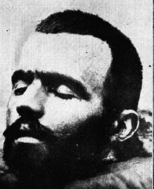

Palmarès des exécutions capitales : 1871-1977

La liste est naturellement incomplète, n'incluant de fait que les suppliciés suite à une condamnation pour crime de droit commun.
Code couleurs :
- Bleu : exécutions capitales par fusillade, suite à une condamnation à mort prononcée par un tribunal militaire.
- Orange : exécutions capitales par guillotine, suite à une condamnation à mort prononcée par un tribunal militaire.
- Gris : exécutions capitales par guillotine, suite à une condamnation à mort prononcée par un tribunal d'Etat/Section spéciale.
- Violet : exécutions capitales par fusillade, suite à une condamnation à mort prononcée par une cour d'assises.
| Date | Heure | Lieu | Nom | Crime | Exécution | Condamnation | 1871 : 8 exécutions |
| Lundi 06 février 1871 |
8h25 | Hautefaye Dordogne Place du bourg, près de la halle aux bestiaux |
François "Piarrouty" Léonard 54 ans, chiffonnier (09 octobre 1816, Nontronneau) |
Le 16 août 1870, en état d'ébriété avancée, les paysans ultra-bonapartistes du village d'Hautefaye agressent le châtelain Alain Romuald de Moneys d'Ordières, 32 ans, propriétaire terrien, en l'accusant à tort d'être un agent des Prussiens. Ils le torturent horriblement, le battent avec outils et bâtons, avant de tenter de le pendre puis le brûlant vif sur la place du village. | Exécuteurs : Charles Louis Desmorest (Bordeaux), François Louis Henri Desmorest (Limoges), Nicolas Hézély (aide, Limoges) et un quatrième (p-ê Charles Alexandre Ganié, aide, Agen). Les condamnés sont informés du rejet de la grâce le 5 février vers 15h. Seul Chambord comprend directement la nouvelle et se charge de l'expliquer à ses complices, avant de s'évanouir, tandis que les trois autres pleurent. Chambort refuse toute nourriture, Mazière et Buisson optent pour un chabrol et Piarrouty un verre de fine. Entendent la messe de Monseigneur Dabert, pleurent durant l'office. Nourris de soupe et d'eau-de-vie jusqu'à provoquer une certaine ivresse, sont transférés à partir de 20 heures. Arrivent à 5h40 à Hautefaye, et sont conduits chez M.Antony, à quarante mètres de l'échafaud. Libérés de la camisole, Piarrouty demande à nouveau à manger : on lui sert du pain, du lard et du vin. Quand on demande leurs dernières déclarations, Piarrouty répond : "Je ne dois rien à personne. Mon fils unique est mort au champ d'honneur comme remplaçant d'un capon. La France lui doit le souvenir." Les trois autres se contentent d'évoquer des dettes à payer et des legs à donner, non sans manifester d'amers remords. Après avoir trinqué et bu du café, sont confiés aux exécuteurs. Piarrouty engueule celui qui lui coupe le col de la chemise, et également quand on le ligote. Tous embrassent le crucifix avant d'être basculés. |
21 décembre 1870 (Cour d'assises de la Dordogne) |
| 8h27 | Pierre "Lirou" Buisson 33 ans, agriculteur et forgeron (5 juillet 1837, Feuillarde, 16) |
8h29 | François "Sillou" Mazière 29 ans, agriculteur (02 mars 1841, Vaubrunet/Teyjat) |
8h31 | François "Cillou" Chambord 34 ans, maréchal-ferrant (15 octobre 1836, Souffrignac, 16) |
|
| Lundi 13 mars 1871 |
6h30 | Mont-de-Marsan Landes Place de la Tannerie (Place Raymond-Poincaré) |
Jean Sabathé 44 ans, cultivateur (12 juillet 1826, Saint-Gor) |
Tua à coups de hache Bernard Carrère, sa femme Marie Boignières, et blessa grièvement la bonne Marie Dumas, 15 ans le 28 octobre 1870 à Pouydesseaux. | Exécuteurs : Jean Baptiste Ferrou (Pau), Joseph Rascat (aide, Pau), pê Charles Louis Desmorest (Bordeaux). Dernière exécution capitale pratiquée par une équipe régionale. Réveillé à 4h30. Pleure un peu en entrant dans la chapelle, entend la messe avec recueillement, communie. Demande une tasse de café et une cigarette. Sur place, pâle mais sans faiblesse, embrasse le crucifix, lève les yeux aux ciel et se livre aux bourreaux. |
03 février 1871 (Cour d'assises des Landes) |
Vendredi 21 juillet 1871 | 4h45 | Nantes Loire-Inférieure Place Viarme |
Charles L'Hospitalier 56 ans, marin (4 avril 1815, Le Palais, 56) |
SATYRE ASSASSIN. Condamné plusieurs fois pour vols par les tribunaux maritimes, ainsi qu’à trois ans de prison pour attentat à la pudeur, et cinq ans de travaux forcés à Cayenne pour vols qualifiés. Revenu du bagne fin 1870. Commet entre janvier et février 1871 plusieurs attentats à la pudeur sur des enfants. Dans la nuit du 26 au 27 février 1871, à Saint-Nazaire, route de Guérande, tue dans sa maison isolée (un cabaret) la veuve Provost, 70 ans, qu’il viole et étrangle avant de voler son argent. |
Exécuteurs : Jean François Heidenreich (Paris), Louis Deibler (Rennes), p-ê Louis Grinheiser (Caen) ou Nicolas Placide Doublot (aide, Paris). Réveillé à 2 heures. Dit qu'il s'y attendait depuis plusieurs jours. Après la toilette, on préfère le conduire en fourgon au lieu d'exécution, pourtant proche, plutôt que de l'y conduire à pied tant on craint qu'il ne tombe de faiblesse. S'évanouit en gravissant les marches de l'échafaud. Sur la bascule, sort de son état d'inconscience, résiste. Un des exécuteurs (Heidenreich ?) est couvert de sang. |
13 juin 1871 (Cour d'assises de la Loire-Inférieure) |
Lundi 28 août 1871 |
5h | Chaumont Haute-Marne Boulevard de l'Est, à l'entrée du cimetière de Clamart |
Michel Auguste Bourgund 34 ans, manouvrier (13 décembre 1836, Ochey) |
A Sommancourt, tue à coups de couteau dans la nuit du 20 au 21 mars 1871 M.Formel, maire octogénaire du village, et Léonie Paymal, sa domestique de 21 ans, pour les voler. | Exécuteurs : Jean-François Heidenreich (Paris/France), Nicolas Placide Doublot (aide, Paris), Aimé Eugène Etienne (aide, Dijon). Dernière exécution capitale pratiquée sur un échafaud. Heidenreich ne disposant pas de bois de justice, c'est Etienne qui lui apporte la guillotine locale, laquelle sera ramenée à Paris après l'exécution. Réveillé à 3 heures du matin, prostré. Entend la messe sans réagir et se confie aux exécuteurs tout aussi docilement. Il s'agenouille devant la guillotine, récite une prière et embrasse le crucifix avant de grimper les marches et d'être basculé. Sa tête roule sur le plancher. |
29 juillet 1871 (Cour d'assises de la Haute-Marne) |
Lundi 13 novembre 1871 |
7h | Le Mans Sarthe Place de l'Hôpital |
René Perrier 42 ans, tisserand (21 mars 1829, Flée) |
Le 06 avril 1871, à Chahaignes, assassine Jean Boucher, 59 ans, cultivateur. Il avait été engagé par Mme Boucher pour ce crime contre deux tonneaux de vin. Madeleine Louise Pesneau, veuve Boucher, est condamnée à vingt ans de travaux forcés. |
Exécuteurs : Jean-François Heidenreich (France), et quatre adjoints. Première exécution accomplie au niveau du sol, avec la "Dijonnaise". Couché sur la bascule, parvient à retirer la tête de la lunette et pousse des hurlements de peur. Après une minute de lutte, l'exécution peut enfin avoir lieu. |
07 septembre 1871 (Cour d'assises de la Sarthe) |
1872 : ? exécutions Exécuteur en chef : Nicolas Roch, à compter du 06 avril 1872. |
| Samedi 13 janvier 1872 |
7h | Lille Nord Champ de Mars |
Pierre Théodore Frérès 30 ans, journalier, franc-tireur de l'Argonne (23 septembre 1841, Seuil, 08) |
En septembre 1870, après la prise de Sedan, attaque en compagnie d'un autre franc-tireur deux ordonnances se rendant à Rethel sur les chevaux de leurs officiers, et en tue un pour lui voler sa monture, ses armes et son argent. Le deuxième soldat parvient à s'enfuir. | Prévenu la veille à 19h, effondré, mais se reprend. Reçoit l'aumônier à partir de 22h, puis écrit deux lettres à minuit, l'une pour son père, l'autre pour son oncle, en leur recommandant son fils. A 3 heures, entend la messe dans la chapelle de la citadelle en compagnie des autres co-détenus. Pris en charge vers 7h, conduit devant le peloton, composé d'hommes du 43e régiment de ligne, s'agenouille les yeux bandés, et dit quelques conseils de discipline à l'assistance. Le corps, atteint par douze balles, fait un bond et atterrit sur la tête. | 07 octobre 1871 (Conseil de guerre- Lille) |
| Mardi 30 janvier 1872 |
8h | Saint-Bonnet-de-Salers Cantal Place principale |
Antoine Ondet 49 ans, cultivateur (14 juillet 1822, Sauvat) |
Avec ses cinq fils, se fait une spécialité de voler les maisons avant d'y mettre le feu. Incendie le 1er septembre 1870 à Boussac la grange de M.Riom. Le 18 septembre, toujours à Boussac, met le feu à la maison de la ferme Courboulès. Le 16 octobre, met le feu à la maison de la veuve Bachellerie. Le 18 mars 1871, fait flamber la maison et la grange de la Veuve Simon, à Tronchy. Le 21 mai 1871, en mettant le feu à la ferme de la Veuve Lacombe, incendient également les maisons Borne et Valeix-Lafarge. Ondet, au passage, étrangle la veuve Lacombe. La femme Ondet est condamnée aux travaux forcés à perpétuité, leurs fils Louis et François à sept ans, et Jacques à six ans, le cousin Jacques Blanié est condamné à huit ans de réclusion et Françoise Veyrières à cinq ans. |
Transféré en diligence de Saint-Flour à Saint-Bonnet pendant la nuit : passe la durée du voyage (70 km) à gémir et à prier en pleurant : "Pardonnez-moi, mon Dieu ! Mon Dieu, ayez pitié de moi !" Arrive à 7h45. Se montre calme et résigné les dernières minutes de sa vie. Les bourreaux doivent séjourner dans le fourgon, aucune auberge du coin n'acceptant de les loger. | 09 novembre 1871 (Cour d'assises du Cantal) |
| Lundi 19 février 1872 |
6h56 | Chartres Eure-et-Loir Place porte Morard (Croisement rue d'Ablis/Boulevard Clémenceau) |
Louis Eugène Guénard 29 ans, charretier (26 août 1842, Montboissier) |
Gardes nationaux, dans la nuit du 19 au 20 septembre 1870, à La Vieuville, commune d'Alluye, étranglent et étouffent les vieux et riches époux Chesneau et volent 4500 francs en billets et en pièces d'or, et cherchent à mettre la responsabilité du crime sur le dos des Prussiens. Arrêtés, ils bénéficient d'un non-lieu en décembre. Le 5 février 1871, dans son ivresse, Quillou commet la maladresse d'avouer son crime, et ce après avoir réglé de nombreuses dettes personnelles. |
Réveillés à 5h. Guénard crie : "On va donc nous couper le cou !" Quillou, mort de peur, plante ses dents dans la couverture. Proust manque s'évanouir, puis gémit :" Je vous en prie, M. le directeur, ne me quittez pas !" En guise d'aumônier, l'évêque de Chartres lui-même est présent. Pendant la toilette, Proust, refusant encore d'admettre ce qui se passe, gémit : "Il ne faut pas qu’il y ait de sens commun en France pour me guillotiner. Je ne suis pas un assassin. Je n’ai été criminel qu’une fois. Et encore, je n’ai fait qu’assister au crime sans y prendre part." Après la toilette, il veut embrasser le gardien-chef et le directeur, et l'exécuteur Heidenreich montre des signes d'impatience. | 29 décembre 1871 (Cour d'assises de l'Eure-et-Loir) |
| 6h58 | Eugène Marcel Quillou 36 ans, charretier, journalier (24 février 1835, Léthuin) |
7h | François Adrien Prouste 46 ans, cultivateur (28 octobre 1825, Bonneval) |
|||
| Mardi 27 février 1872 |
6h55 | Saint-Mihiel Meuse Rue de la Buanderie |
Armand Lahaye 22 ans, terrassier (24 mars 1849, Belrupt-en-Verdunois) |
Dans la nuit du 31 juillet au 1er août 1871, à Harville, tuent à coups de marteau et de hachette M. Lacaille, 65 ans, et sa fille Clotilde pour voler 40 francs. NB : le 15 janvier 1883, la cour d'assises de la Meuse condamne à perpetuité Auguste Namin, 19 ans, le fils de Catherine Gerbeaux. Déjà condamné deux fois pour vols et abus de confiance, libéré de la prison de Bar-le-Duc le 21 janvier 1882, le lendemain, blesse gravement à coups de poing dans le visage Louise Mathieu, 7 ans : il s'était introduit dans la bergerie Mathieu, au lieu-dit "La Grange aux Champs", près de Ligny, afin de cambrioler la maison mais avait été surpris par l'enfant. |
Réveillés à 6h15. Lahaye est surpris, mais comprend vite, avant même qu'on ne le lui annonce : "Tout est donc réglé ? Le moment est venu ?" Il passe pantalon et gilet, et demande s'il est nécessaire d'enfiler sa blouse. Catherine était réveillée aussi. Elle éclate en sanglots, mais dit : "Je suis prête. Je sais que j'ai mérité la mort. Seulement, on aurait dû me prévenir hier pour que je puisse encore recommander mon âme à Dieu !" Au greffe, les amants et complices s'embrassèrent une dernière fois en se demandant mutuellement pardon de s'être accusés l'un l'autre. | 11 janvier 1872 (Cour d'assises de la Meuse) |
| Catherine Gerbeaux, épouse Namin 28 ans, sans profession (28 décembre 1843, Buzy-Darmont) |
Mardi 05 mars 1872 |
7h | Marquise Pas-de-Calais Place du Marché-aux-Bestiaux |
François Joseph Lemettre 26 ans, parcours (valet de ferme) (15 février 1846, Beuvrequen) |
TUEUR EN SÉRIE, surnommé "Le Troppmann du Nord" Auteur de plusieurs incendies criminels entre octobre 1864 et mars 1865 à Audresselles. Agresse le 01 décembre 1868 à Wimille, sur la route près du hameau de la Rouvelle, Philippe Pruvost, 19 ans, garçon brasseur pour le voler et le laisse pour mort après lui avoir mutilé les parties génitales. Le 10 décembre 1868, au cours d'un cambriolage, tire un coup de pistolet et porte sept coups de couteau à Clarisse Dupont, veuve Lambert, qui survit à son éventration. Le 28 ou 29 juin 1869, étrangle, viole et mutile Adolphe Cugny, 22 ans, et vole son argent. Entre le 28 et le 29 octobre 1869, étrangle avec un mouchoir, viole et mutile Eugène Foucart, 19 ans, retrouvés morts en pleine rue. Le 23 février 1870, étrangle, viole et mutile Félicien Malfoy, 26 ans, dont il jette le corps ligoté dans un puits de la ville. Auteur en outre d'une dizaine de vols et cambriolages sur la même période. Arrêté le 25 juin 1871 alors qu'il cambriole le presbytère d'Audembert. |
Extrait de la prison de St-Omer le 04 mars à 23 heures et transporté en voiture jusqu'à Marquise où il arrive à 5 heures du matin. Au lieu de procéder à la toilette à la mairie, comme initialement prévu, les officiels profitent de la générosité d'un bourgeois qui réside place du Marché-aux-Bestiaux. Dans un salon privé, devant un bon feu, Lemettre se réchauffe et boit une tasse de café noir. Très calme, ferme, ne proteste pas une seule fois, sauf quand on découpe son col : "Une chemise toute neuve ! Quel dommage !". L'abbé Fanet, aumônier de St-Omer, l'exhorte à se repentir, ce qu'il fait. Entre 5.000 et 12.000 personnes présentes. Trois quarts d'heure avant le supplice, une tribune installée par un profiteur s'écroule sous le poids des spectateurs : six ou sept personnes se blessent, ce qui ne les empêche pas de se re-installer sur la tribune sitôt celle-ci remontée. | 23 décembre 1871 (Cour d'assises du Pas-de-Calais) |
| Lundi 11 mars 1872 |
6h | Versailles Seine-et-Oise Pont-Colbert |
Gustave Brûlé 34 ans, sabotier et perruquier (07 février 1848, Béon, 89) |
Tua à Vernoy (89), ferme des Guérins, dans la nuit du 09 août 1870 Charles Alexandre Griffaud, 41 ans, cultivateur à coups de tiers-point et tenta d'assassiner son fils Ernest Griffaud pour voler... une boîte de jetons et de cartes à jouer, faute d'être parvenu à fracturer le secrétaire pour y prendre les économies du fermier. | Réveillé à 4h30. "Ah, c'est pour aujourd'hui ? Je m'y attendais. D'ailleurs, je l'ai bien mérité. Combien de temps ai-je encore à vivre ?" "Jusqu'à six heures", répond le prêtre. "Eh bien, je suis content de mourir." Il écrit au président Thiers pour demander de la clémence envers son frère. Il boit un verre de vin, puis entend la messe. Après la toilette, avant de monter dans le fourgon, remercie les gardiens et le directeur de la prison. Au Pont-Colbert, il se montre satisfait que ce soit la fin. En descendant, il dit : "Messieurs, je vous dirai que je suis coupable et que j'ai mérité la mort. Mais c'est ma maîtresse, Mme Griffaud, qui m'a poussé au crime. Quant à mon frère, il n'a rien fait, et j'ai écrit à son Excellence M. Thiers pour qu'il fasse descendre sa clémence sur lui." Puis l'aumônier Folley l'embrasse et il est poussé sur la bascule. | 23 juin 1871 (Cour d'assises de l'Yonne) |
| 18 novembre 1871 (Cour d'assises de la Seine-et-Marne) |
||||||
| 26 janvier 1872 (Cour d'assises de la Seine-et-Oise) |
||||||
| Jeudi 04 avril 1872 |
5h | Troyes Aube Place Saint-Jacques, près du mur du couvent de Saint-Martin |
Léon Constant Bourgogne 19 ans, domestique (05 juin 1852, Paris) 171 cm |
Tua pour les voler sa tante, Marie Honorine Parey, veuve Bourgogne, 59 ans, (de sept coups de couteau), sa cousine Isabelle-Angèle Bourgogne, épouse Verrot, 33 ans, (vingt-trois coups) et l'enfant de celle-ci, Louis-Emile Verrot, 7 ans et demi (sept coups), le 05 janvier 1872, Grande Rue à Nogent-sur-Aube. Il épargna le père de la veuve Bourgogne, le vieux Jacques Parey, endormi et atteint de surdité totale. Sa mère et instigatrice du crime, Caroline-Jeanne Kurtz, épouse Bourgogne, 49 ans, est condamnée aux travaux forcés à perpétuité. |
Réveillé à 4h30. Se doutait qu'il ne serait pas gracié. En apprenant la nouvelle, se met à trembler comme une feuille. "C'est donc fini !" gémit-il. Pendant la toilette, pris de faiblesse, demande un verre de vin, qu'il n'avale qu'avec peine. Désire écrire à sa mère, détenue à la centrale d'Auberive, mais n'y parvient pas : l'aumônier promet de lui transmettre ses dernières paroles. Pendant le trajet, ne cesse de parler de sa mère. Arrivé au pied de la guillotine, a un mouvement de recul qu'il refrène vite et meurt courageusement. 6.000 personnes présentes. Suite au décès de Jean-François Heidenreich, le 27 mars, exécution accomplie par Nicolas Roch, premier adjoint, à la veille de sa titularisation officielle en tant que chef. | 22 février 1872 (Cour d'assises de l'Aube) |
| Mardi 09 avril 1872 |
5h10 | Melun Seine-et-Marne Placette du cimetière du Nord (Rue des Mézereaux) |
Auguste Isaïe Ducorbier 26 ans, cultivateur (29 décembre 1845, Saint-Denis-lès-Rebais) |
Fit assassiner à coups de hache puis étrangler le 21 novembre 1871 au hameau du Saulx, commune de Rebais, sa femme Marie Julie Fallet, épouse Ducorbier, 24 ans, enceinte de cinq mois, par un ouvrier agricole, Victor Bertin, 34 ans, pour 2.000 francs. Condamné le même jour que Ducorbier aux travaux forcés à perpétuité, Bertin se pendit le soir-même dans sa cellule. |
Réveillé à 4h50. Réveillé en sursaut, pâlit terriblement : "Mon Dieu ! Mon Dieu ! Est-ce possible ?" A la demande de l'aumônier, se résigne. Toilette sans histoires : demande un verre d'eau-de-vie qu'il avale d'un trait. Demande des nouvelles de sa vieille mère malade, et s'inquiète pour ses deux enfants en bas âge que son exécution va laisser orphelins : "Mes pauvres enfants ! Que vont-ils devenir ?" Rapidement basculé, mais en l'absence des bourreaux, quelqu'un avait retiré le levier de commande, et Nicolas Roch passa une bonne minute à le chercher avant de pouvoir accomplir son office. 1.000 personnes présentes. | 12 février 1872 (Cour d'assises de la Seine-et-Marne) |
| Samedi 13 avril 1872 |
4h50 | Mézières Ardennes Place Saint-Julien |
Félicité Lambin, épouse Loth 55 ans, sans profession (23 janvier 1817, Justine-Herbigny) |
Couple de mendiants. Après l'avoir rencontré dans un cabaret de Reims, conçurent le plan de tuer Jean Leroy, 41 ans, coquetier, messager de Reims à Rethel, pour le voler. S'embusquèrent dans la soirée du 23 septembre 1871 au carrefour d'Isles-sur-Suippe, commune de Saint-Rémy-le-Petit, et quand Leroy arriva dans sa voiture, Loth lui sauta dessus, le frappa à coups de couteau et traîna le mourant vers le fossé. Sur le conseil de sa femme, lui scie le cou avec son couteau. Butin bien maigre : uniquement le contenu de ses poches, soit 300 francs à peine. |
Félicité réveillée la première à 4h. Pleure à chaudes larmes : "Je meurs innocente, ce qui m'a perdue, ce sont les mauvaises compagnies !" Loth, lui, est calme et résigné. La toilette est effectuée dans le vestibule. Pris d'un tremblement, Loth doit boire un verre de liqueur pour se donner du courage. Roch lui demande : "Est-ce que je vous fais mal ? C'est une simple formalité." L'abbé Millard lui demande de faire preuve de courage. Félicité s'asseoit tranquillement pour la toilette. Proteste quand on lui retire son bonnet, mais Roch promet de le lui rendre et lui pose sur les genoux. A sa demande également, il garde une mèche de cheveux de côté pour qu'elle soit remise à sa famille. Avant de monter dans le fourgon, à l'initiative de l'aumônier, les époux s'embrassent et se pardonnent : "Quel malheur !" gémit Félicité. A l'arrivée, la femme passe la première avec calme. Son mari assiste à toute la scène, impassible, avant d'être décapité à son tour. | 22 février 1872 (Cour d'assises des Ardennes) |
| Jean-Baptiste Loth 30 ans, sans profession (11 mai 1841, Perthes) |
||||||
| Vendredi 19 avril 1872 |
5h | Dijon Côte-d'Or Entrée de la maison d'arrêt, rue d'Auxonne |
Pierre Jean Rouette 26 ans, journalier (13 mai 1845, Noiron-sur-Bèze) |
Etrangla à mains nues le 18 septembre 1871, Anne Legros, veuve Magnien, 69 ans, à Noiron-sur-Bèze (sa mort passe pour une attaque d'apoplexie) et ne trouvant pas d'argent, vole... un bouton. Récidive le 07 novembre 1871, en étranglant Marguerite Magnien, veuve Cornot, 68 ans, manouvrière, également à Noiron-sur-Bèze, et faute d'argent, repart en volant le paletot du fils Cornot. Arrêté après la seconde victime, il avoue le premier crime. |
Déjà réveillé à l'arrivée des officiels, à 4h. Entend avec résignation l'abbé Tamine l'exhorter au courage. Refuse de prendre la moindre nourriture d'une voix faible, et perd peu à peu tout son courage. Se trouve mal en voyant la guillotine, les aides sont obligés de le soutenir, et c'est presque mort qu'il est poussé sur la bascule. Foule immense. | 21 février 1872 (Cour d'assises de la Côte-d'Or) |
| Lundi 22 avril 1872 |
5h05 | Aix Bouches-du-Rhône Entrée de la maison d'arrêt, croisement rue Monclar/rue Peyresc |
Joseph Florent Tourrès 46 ans, cultivateur (16 octobre 1825, Malaucène, 84) |
FÉMINICIDE INTIME. Assassina sa femme Marie-Madeleine Marin, 40 ans, dans la nuit de Noël 1871 à Orgon en lui fracassant le crâne avec un rouleau de bois puis en lui plantant une fourche dans le visage. Avait volé 200 francs pour détourner les soupçons. |
Réveillé à 3h15. Aucune surprise, mais pose la question : "Ai-je deux ou trois jours pour me préparer ?" On lui répond deux heures. Il sourit, et dit "Je suis prêt." Refuse toute nourriture mis à part un peu de chocolat. Va à la chapelle, entend la messe du père du Clot, puis reçoit la visite de son frère à qui il remet des lettres. Il ne tremble qu'au moment de la toilette, qui a lieu dans l'antichambre de la prison. A 5h30, il sort de la maison d'arrêt et parcourt les 25 mètres qui le séparent de la guillotine à pied, après avoir embrassé le crucifix une dernière fois. | 27 février 1872 (Cour d'assises des Bouches-du-Rhône) |
| Lundi 17 juin 1872 |
4h59 | Paris Seine Rond-point de la Roquette/Entrée du dépôt des condamnés, 168, rue de la Roquette |
Jean-Baptiste Moreux 33 ans, chauffeur à l'usine à gaz de Vaugirard (09 avril 1839, Crézancy-en-Sancerre, 18) |
Dans la nuit du 20 au 21 janvier 1872, étrangla chez elle, rue Cambronne, Zoé "Frisette" Garnier, 27 ans, prostituée, pour la voler. Fut pris car il força son épouse à porter les bijoux de sa victime. |
Réveillé à 4h. Comprend ce qui l'attend sans qu'on le lui dise. On enlève la camisole et on lui laisse passer ses vêtements. Ecoute le prêtre avec attention et recueillement. Remis à M.Roch délié, le bourreau s'en étonne. Quand il veut l'attacher, le colosse Moreux dit : "Non, non, ne m'attachez pas, je vous en prie, je ne peux point me sauver, ne craignez rien, mais ne m'attachez pas." Roch ne peut accepter, mais promet de laisser assez de mou dans les attaches. Arrivé devant la machine, regarde le couteau et dit : "Ah, le voilà donc, cet ignoble instrument, ce fatal cou..." On ne lui laisse pas le temps d'achever, le couperet s'abat. 400 personnes présentes au plus. | 13 mai 1872 (Cour d'assises de la Seine) |
| Samedi 06 juillet 1872 |
5h | Caen Calvados Place Saint-Martin/Promenades Saint-Julien (Fossés Saint-Julien) |
Charles Emmanuel "Jean" Mancel 49 ans, tailleur de pierres (09 avril 1823, Louvigny) |
FÉMINICIDE INTIME, SATYRE ASSASSIN. Père violent, tua sa fille, Marie-Aline Mancel, 17 ans, le 14 mars 1872 à Louvigny à coups de couteau dans la poitrine parce qu'elle refusait de se livrer à ses désirs incestueux, puis viola son cadavre. |
En voyant la machine, dressée à deux pas des devantures des maraîchers, Mancel hurle : "Je meurs innocent ! C'est une injustice ! Vengeance ! " Puis il manque s'évanouir, et c'est à demi-conscient qu'il est conduit sur la bascule. 12.000 personnes présentes. | 14 mai 1872 (Cour d'assises du Calvados) |
| Samedi 27 juillet 1872 |
4h | Toulouse Haute-Garonne Port-Garaud |
Francisco Beltran-Trem 38 ans, terrassier (1834, Bujalaroz, Espagne) |
Avec deux complices, égorgea à coups de couteau et de rasoir Jean Guillaume Saturnin Salles, 64 ans, marchand de bois, pour le voler dans la nuit du 11 au 12 mars 1872 dans le quartier d'En Jacca, à Colomiers, et menacent de faire subir le même sort à Marie Raynaud, épouse Salles, qui échappe à la mort grâce à l'irruption de voisins. Antonio Zacalain est condamné aux travaux forcés à perpétuité, Raphaël Morlo est condamné à vingt ans de travaux forcés. |
Réveillé à 3 heures. Aucune émotion. Accepte les secours de la religion. Au greffe, avisant un enfant (celui d'un gardien ?) il lui dit : "Tu diras un pater et un Ave pour moi. Je pardonne à tout le monde." Mange un peu, boit du café. A 3h45, le fourgon quitte la prison, direction le Port-Garaud. Pendant le trajet, l'abbé Pelletan l'exhorte au courage. Seul signe de peur : de légères contractions du visage. Silence absolu durant l'exécution : 9.000/10.000 personnes présentes, dont pas mal de femmes. | 21 mai 1872 (Cour d'assises de la Haute-Garonne) |
| Lundi 29 juillet 1872 |
4h35 | Marseille Bouches-du-Rhône Place Saint-Lazare (Place de Strasbourg) |
Isaac "Georges Bisengtein" Sitbon 20 ans, commerçant (1852, Tunis, Tunisie) |
Etranglent et poignardent Angelo Grego, 30 ans, commerçant, Tunisien, le 16 janvier 1872 chez lui, 2, rue des Tonneliers à Marseille, puis partent dévaliser son domicile du 47, rue Montgrand et font main basse sur 50.000 francs. Le lendemain, dépècent le corps à la scie, et se débarrassent ensuite des morceaux du cadavre en les enfermant dans une malle qu'ils vont jeter au large, et qui est récupérée quelques heures plus tard par des pêcheurs. Complice, Nissim Sizouri est condamné aux travaux forcés à perpétuité. |
Leur exécution était prévue le 20, mais Roch, malade, ne put quitter Paris que cinq jours plus tard, ce qui inversa l'ordre d'exécution Marseille/Toulouse. Prévenus (accidentellement) par la venue du rabbin Lion le samedi matin à la prison d'Aix où ils sont incarcérés. Avertis de la nouvelle officiellement dans la nuit de dimanche à lundi, très abattus. On leur propose de prendre quelque chose avant de prendre la voiture pour Marseille. Sitbon refuse, Toledano veut bien du cognac. Demandent si le rabbin Vidal est présent : en le voyant, pleurent et lui prennent la main. Saluent leurs gardiens avant de partir, à 1 heure du matin. 1.500 personnes assistent au départ de la prison aixoise. Tout au long de la route, les condamnés parlent avec le rabbin Vidal, demandent où ils vont mourir, comment on va les inhumer, et donnent leurs dernières volontés. Parfois, discutent entre eux en tunisien. En passant au village du Pin, Sitbon demande de quoi écrire, mais les cahots sont trop forts, alors il demande s'il lui sera possible d'écrire une fois à Marseille. Toledano boit plusieurs verres d'eau mêlée de cognac, et fume trois pipes. A 3h45, le fourgon stoppe devant le 1, rue Pontevès, lieu de la toilette. Toledano demande de l'eau pour se gargariser. Les deux écrivent quelques mots avant qu'on ne les attache. M.Roch leur demande, en les liant, s'il ne leur fait pas mal, puis leur promet que tout ira bien s'ils se montrent fermes et tranquilles. En voyant le fourgon des bourreaux - qu'ils n'emprunteront pas -, les condamnés se demandent s'il ne s'agit pas de la nouvelle guillotine elle-même ! Quand le fourgon cellulaire repart en direction de la place Saint-Lazare, tout leur courage disparaît, et leurs dernières paroles sont pleines d'amertume : Toledano se plaint de mourir à 21 ans, Sitbon espère qu'il fera encore sombre et qu'il n'y ait pas beaucoup de monde pour le voir mourir. Sitbon est exécuté le premier ; Toledano tente de résister en vain aux aides. | 24 mai 1872 (Cour d'assises des Bouches-du-Rhône) |
| 4h40 | Raphaël Toledano 21 ans, courtier (vers 1851, Tunis, Tunisie) |
|||||
| Mercredi 31 juillet 1872 |
4h20 | Lyon Rhône Place de l'Hippodrome/Cours Charlemagne |
Barthélémy Bernard 26 ans, cultivateur (11 septembre 1845, Ampuis) |
FÉMINICIDE INTIME. Ayant fait un fils, Joseph, à Benoîte Paret, sa maîtresse, 20 ans, fille de cafetier, il promet de l'épouser, de reconnaître le petit et de quitter la ville. Le 08 octobre 1871, elle s'en va avec son petit : leurs corps sont retrouvés percés de coups de couteau le lendemain au milieu d'un champ d'Ampuis, et sans qu'on ait volé ni ses bijoux ni son argent. |
Réveillé à 2h45. Devient livide. Conduit à la chapelle pour la messe et les secours de la religion. Confié à 3h45 aux aides pour la toilette. Prostré : reconnaît qu'il est un très grand coupable. Descendu du fourgon, Bernard s'agenouille, reçoit la bénédiction d'un prêtre, l'embrasse avant d'être poussé sur la bascule. 4.000 personnes présentes environ. | 01 juin 1872 (Cour d'assises du Rhône) |
| Samedi 03 août 1872 |
5h15 | Arras Pas-de-Calais Place du Marché |
Jean-Baptiste Courcol 56 ans, cultivateur (13 février 1816, Ecoust-Saint-Mein) |
FÉMINICIDE INTIME. Tua son épouse Flore Angélique Coupé, 51 ans, fileuse, dans son lit à coups de hache dans la nuit du 25 au 26 avril 1872 à Ecoust-Saint-Mein et épargna son fils Camille, 13 ans, qui dormait à côté. Ce dernier le dénonça. |
Au réveil, à 3h12, mort de peur, tremblant et atterré, il n'a absolument aucune conscience de ce qui se passe : n'arrive pas à se lever. Quand on lui enlève la camisole, perd ses dernières forces. On doit le soutenir tout au long de la matinée. Au pied de l'échafaud, place du Marché, on doit le pousser sur la bascule et il gémit : "Mon Dieu ! Mon Dieu !" Entre 8.000 et 10.000 personnes assistent à son exécution. | 17 juin 1872 (Cour d'assises du Pas-de-Calais) |
| Vendredi 16 août 1872 |
5h03 | Amiens Somme Place du Marché-aux-Chevaux (Croisement Boulevard Faidherbe/Rue du Commandant Defontaine) |
Théophile Hyacinthe Cauchy 22 ans, valet de charrue (23 septembre 1849, Guillaucourt) |
Tua à coups de marteau le 21 février 1872 à Bayonvilliers ses patrons, les Debros, vieux et impotents, ainsi que leur chien qui avait voulu les défendre. Son complice, Boitel, est condamné à quinze ans de travaux forcés. |
Meurt repentant. Avoue qu'il est coupable, pleure à chaudes larmes. Pendant la toilette, se sent mal. En descendant du fourgon, n'est plus qu'une loque qu'il faut soulever pour l'exécuter. Entre 5.000 et 6.000 personnes présentes. Certains journaux évoquent place du marché aux boeufs (est-ce le même lieu ?) | 07 juillet 1872 (Cour d'assises de la Somme) |
| Lundi 10 septembre 1872 |
5h | Montpellier Hérault Glacis de la Citadelle |
Étienne Martin 27 ans, tambour au 63e régiment de ligne (17 septembre 1844, Prémilhat, 03) |
En garnison à Sète, outrages par gestes et menaces et voies de fait sur un caporal-tambour. Précédemment condamné pour de mêmes faits. |
A 20 heures la veille, reçoit à la prison militaire la visite de deux prêtres avec lesquels il prie. Dîne à 21 heures, prévenu à 23 heures, terrifié quelques instants. Dort de minuit à 3 heures, entend une messe à son réveil. Souhaite écrire à sa mère, mais pleure trop pour y parvenir. L'un des prêtres accepte d'assurer ses dernières volontés. Monte à 4h45 dans une voiture qui le conduit derrière le polygone. Yeux bandés, entend le jugement puis se met à genoux. Reçoit dix balles dans la poitrine, une dans la main, une dernière au front : coup de grâce inutile. Corps fourni à l'École de médecine. | mai 1872 (Conseil de guerre de la Xe Division) |
| Mardi 01 octobre 1872 |
6h | Aix Bouches-du-Rhône Entrée de la maison d'arrêt, croisement rue Monclar/rue Peyresc |
Luigi "Louis Le Bachin" Garbarino 33 ans, terrassier (1839, Dondero-Torriglia, Italie) |
Chefs de la "bande de la Taille". Tuent le 15 mai 1871 à Mallemort M.Martin, gardien du pont de la Durance. Le 19 août 1871, près de la Bastidonne, poignardent un certain Oscar Loneux pour lui voler une montre, des vêtements, son portefeuille. Dans la nuit du 2 au 3 septembre 1871, massacrent (égorgement à coups de couteau) André Garnier, Véronique Garnier, leur fille Euphrasie, épouse Sube, et leur nièce Rosa Granier à la ferme de l'Eve, à Lurs (Basses-Alpes). Le 25 octobre 1871, entre le château d'Albertas et l'auberge de la Moumine, brisent la tête d'Elzéard Sautel, 44 ans, messager à Apt, pour le dévaliser. Le 4 novembre 1871, à Meyrargues, assassinent Marie Julien, veuve Lambot, 76 ans. Seulement, l'un de leurs complices, Jacques Ribetto a acheté les biens de la victime en viager et se trouve donc le suspect parfait. Arrêté, dénonce ses complices. Angèle Arèse est condamnée aux travaux forcés à perpétuité, Francesco Bellora et Pasquale Montegazzo sont condamnés à vingt ans, Giuseppe Trinchieri à dix ans de réclusion, Giuseppe Montalbetti à cinq ans. |
Réveillés à 2 heures. L'aumônier Du Clôt et le père Garnier, supérieur des Oblats, leur prodiguent les secours de la religion. Se montrent calmes, obéissants. Admis membres de la confrérie des Pénitents bleus (moines qui, à Aix, s'occupent de l'inhumation des condamnés à mort). Nicolas Roch se présente à 5h30. Conduits entre les deux grilles de la prison pour la toilette, refusent toute nourriture à part un verre de rhum pour l'un, un verre de cognac pour l'autre. Galetto dit : "J'aime mieux mourir à présent, car plus tard, je commettrais encore quelques crimes." En voyant la machine, les deux condamnés frémissent. Après avoir parcouru les 25 pas qui les séparent de la guillotine, s'embrassent mutuellement et embrassent les prêtres. Garbarino se tourne vers le public et dit d'une voix assez ferme : "Je meurs calme et en bon chrétien, j'offre ma vie pour la gloire de Dieu et l'expiation de mes pêchés." Il est le premier à mourir. Galetto ne voit rien : le père Garnier le force à tourner le dos à la guillotine. "Non, non, cela ne fait rien." Avant d'être basculé à son tour, il tente de parler : "Je ne veux dire qu'un mot... C'est une triste chose que la vie... Quand je suis venu en France, j'avais perdu la foi... Je remercie l'aumônier qui me l'a rendue... Maintenant, je meurs content !" Mais à la dernière seconde, il gémit : "Je n'ai que 20 ans !" Se débat quand on le saisit, et on doit tirer avec force sa tête dans la lunette. 3.000 personnes présentes. | 17 juillet 1872 (Cour d'assises des Bouches-du-Rhône) |
| Antonio "Antoine Le Bochou" Galetto 20 ans, terrassier (1852, San Giorgio Canavese, Italie) |
||||||
| Mercredi 18 décembre 1872 |
7h01 | Paris Seine Rond-point de la Roquette/Entrée du dépôt des condamnés, 168, rue de la Roquette |
Alphonse Eugène Joly 23 ans, vidangeur (12 février 1849, Vivier-au-Court, 08) |
Dix-neuf condamnations préalables (?), condamné le 09 juin 1872 par la cour d'assises de la Seine aux travaux forcés à perpétuité pour attaque nocturne à main armée et vol route de Bagnolet commise envers M.Choubrac dans la nuit du 02 février 1872. Au dépôt des condamnés de la Grande-Roquette, en attente de partir au bagne pour y purger sa peine, tenta de tuer le gardien Havener le 23 juin 1872 à coups de bâton ferré. |
Première exécution pratiquée avec le nouveau modèle de guillotine Berger. Grand sang-froid quand, à 6h30, on vient lui annoncer la nouvelle. Déjà réveillé. Résigné. Au greffe, boit un café et un verre d'eau-de-vie et recommande son épouse à l'abbé Crozes. Peu de monde présent à son exécution : une centaine de personnes au plus. |
29 octobre 1872 (Cour d'assises de la Seine) |
| Lundi 23 décembre 1872 |
7h | Vincennes Seine Polygone |
Jean Baptiste Isidore Poitevin 60 ans, garde-champêtre (20 octobre 1812, Guny, 02) |
Le 09 octobre 1870, dénonce aux soldats prussiens les gardes nationaux Desbordeaux, Poulette, Courcy, Dépuirez, Odot et Josué Létoffé, ayant été des francs-tireurs la veille au pont de Pommiers (02), lesquels sont arrêtés et fusillés. | Réveillé à la prison du Cherche-Midi à 6 heures. "J'étais sûr que mon pourvoi serait rejeté." S'habille et reçoit les secours de la religion. Quitte la prison en fourgon d'ambulance à 7h15. Fusillé par artilleurs du fort de Vincennes, devant un assez vaste public (600 personnes) : atteint par toutes les balles du peloton. | 21 juin 1872 (18e Conseil de guerre - Paris) |
1873 : ? exécutions |
| Lundi 06 janvier 1873 |
7h30 | Besançon Doubs Promenade de Chamars, rond-point du pont de Canot |
Jean Pierre Piégelin 28 ans, sans profession (19 mars 1844, Huanne-Montmartin, 25) |
Déserteur, en compagnie de cinq autres contrebandiers, en franchissant la frontière franco-suisse à Etraches, dans la nuit du 26 au 27 juin 1872, tue à coups de couteau et de bâton le douanier Favre-Merceret et bât comme plâtre quatre autres douaniers. Ses complices écoperont de peines allant de dix-huit mois de prison à vingt ans de travaux forcés. |
Courageux, résigné. Les victimes de Pigelin viennent assister à sa mort. | 07 novembre 1872 (Cour d'assises du Doubs) |
| Vendredi 10 janvier 1873 |
7h10 | Reims Marne Nouveau Marché aux Chevaux/Porte Dieu-Lumière (Avenue de Champagne, le long du mur du Cimetière Sud) |
Pierre Auguste Garel 25 ans, garçon boucher (30 novembre 1847, Roissy-en-Brie, 77) |
Le 12 août 1872 dans un champ de Reims, après avoir eu des relations sexuelles avec elle, tue la prostituée Sidonie Cauchy, l'assomme à coups de pierre, la décapite avec une serpette et l'éventre. | Accueille le greffier en disant "Je vous attendais depuis quelques jours déjà." Il remet une pièce de cinq francs à chacun de ses co-détenus (les "moutons"). Devant l'échafaud, parle à l'aumônier et donne une caresse à un chien qui a réussi à se faufiler jusque là. Refuse que les aides le poussent, va seul sur la bascule. | 15 novembre 1872 (Cour d'assises de la Marne) |
| Mardi 14 janvier 1873 |
7h30 | Rennes Ille-et-Vilaine Champ de Mars (Esplanade Charles de Gaulle) |
Christian Ernest Lemarchand 32 ans, aide mécanicien sur bateau (04 février 1840, Rennes) 175 cm |
Orphelin très jeune, le 13 janvier 1872 à Rennes, étrangla sa tante et bienfaitrice Angélique Pinel, institutrice, parce qu'elle refusait de lui donner de l'argent, pour lui voler deux obligations de l'Ouest et deux obligations de la Société immobilière. Sa précipitation à revendre les obligations dès février causa sa perte. |
En reconnaissant, derrière les officiels venus le réveiller, les bourreaux, pousse un hurlement de terreur. Prostré, se reprend, avoue son crime et reste en compagnie de l'aumônier. Après la toilette, se montre résigné. Descend avec calme du fourgon, et marche sans faiblesse vers la bascule. Grande foule présente. | 19 novembre 1872 (Cour d'assises de l'Ille-et-Vilaine) |
| Vendredi 14 février 1873 |
6h15 | Lyon Rhône Place de l'Hippodrome/Cours Charlemagne |
Jean Louis Vulliard 41 ans, cocher, limonadier (03 mai 1831, Belley, 01) |
Tuent dans la nuit du 27 au 28 mai 1872 à Monplaisir le vieux Jean Patricot, commissionnaire à Vaise. Ils le plièrent en deux pour l'enfermer dans un sac et le jeter le long de la voix ferrée Lyon-Genève. Vulliard était en procès pour une affaire de détournement de gaz : Patricot, en tant que témoin, devait comparaître le matin-même au tribunal correctionnel, et en plus, Vulliard lui devait de l'argent. Un troisième complice, Nuet, fut condamné aux travaux forcés à perpétuité. |
Sans faiblesse au réveil. Vulliard, après avoir parlé à l'aumônier, tombe dans un état d'accablement total. Se confessent, communient, mais refusent de faire des dernières déclatations et également de se réconcilier l'un l'autre. Le chemin jusqu'à l'allée des Trois-Tunnels (cours Charlemagne) est long et à cause de la gelée, le fourgon ne peut rouler qu'au pas, ce qui fait que l'exécution est légèrement retardé. Vulliard descend le premier. On le porte jusqu'à la bascule. Plus courageux, Perret va sans faiblesse. 3000 spectateurs environ : l'un d'eux arrive à se faufiler assez près pour humecter son mouchoir de sang. | 21 décembre 1872 (Cour d'assises du Rhône) |
| Claude Perret 39 ans, corroyeur (20 avril 1833, Belley, 01) |
||||||
06 mars 1873 |
7h55 | Vincennes Seine Polygone |
Auguste Louis Marie Nouvel 22 ans, sapeur conducteur au 3e régiment du génie (14 juillet 1850, Le-Roc-Saint-André, 56) |
Le 06 octobre 1872, à la caserne Dupleix (15e), en état d'ivresse, se rue sur le maréchal-des-logis Marle après une remontrance sur une absence non justifiée, l'assomme de plusieurs coups de poing dans le visage et le piétine mortellement à la poitrine et à la tête avec ses talons de bottes avant de le jeter dans la cour, et de continuer à le frapper à coups de pied. Marle décède quatre heures plus tard à l'hôpital. | Réveillé à la prison du Cherche-Midi à 5 heures par deux prêtres. "C'est donc pour aujourd'hui ?" Reçoit les secours de la religion, entend la messe avec les autres détenus, se confesse. Demande à écrire avant de boire un peu de vin et de café, puis après la levée d'écrou, vers 6h40, grimpe dans le fourgon. Devant le poteau, enlève sa veste, la plie avec soin et la pose à ses pieds avant d'embrasser les aumôniers et de s'agenouiller pour entendre la sentence. Alors qu'on lui bande les yeux, demande à garder les yeux non couverts. Fusillé par les hommes de son propre régiment, à qui il dit : "Du courage ! On ne meurt qu'une fois !" Mort immédiate. | 14 novembre 1872 (2e Conseil de guerre) |
| Mardi 25 mars 1873 |
6h | Laon Aisne Champ-Saint-Martin |
Augustin Guyard 35 ans, vigneron (02 décembre 1837, Brasles, 02) |
PARRICIDE. Assassina sa mère, Louise Catherine Sonnette, veuve Guyard, 56 ans, vigneronne, qu'il déteste, le 7 avril 1871 à Brasles, à coups de bâton ferré. Sa jeune nièce, Julie, témoin de la scène, le dénonça en octobre 1872. |
Pendant qu'on le prépare avec la tenue des parricides, il dit "Faites votre service et ne craignez rien, je ne bougerai pas." Il demande à laisser ses vêtements aux nécessiteux, et veut faire don à la chapelle de la prison d'un Christ. Avant d'arriver, il dit "Je demande à Dieu de ne pas aller en enfer en arrivant." | 12 février 1873 (Cour d'assises de l'Aisne) |
| Samedi 29 mars 1873 |
6h | Riom Puy-de-Dôme Place Desaix, devant la porte de la maison d'arrêt |
François Jacques Hébrard 26 ans, journalier (28 octobre 1846, Teilhède, 63) |
Sur la route de Montferrand, abattit de deux coups de fusil son voisin Marien Courson au soir du 10 janvier 1873 pour lui voler sa sacoche contenant 591 francs. Hébrard avait une dette de 20 francs à règler à Courson, et refusait de la rembourser. |
Réveillé à 5h. Se confesse, entend la messe. Résigné, mais quelques signes de faiblesse. Quand il franchit la porte de la prison, la foule pousse quelques cris rapidement tus. Exécution sans histoire : 5.000 personnes présentes. | 14 février 1873 (Cour d'assises du Puy-de-Dôme) |
| Mercredi 09 avril 1873 |
5h55 | Melun Seine-et-Marne Placette du cimetière du Nord (Rue des Mézereaux) |
Jean Napoléon Sévin 20 ans, manouvrier (10 avril 1852, Villiers-sous-Grez, 77) |
PARRICIDE. Le 25 décembre 1872, à Villiers-sous-Grez, tente de tuer son père Jean Sévin, 54 ans, vigneron, en lui tirant un coup de fusil dans la tête, puis en le frappant à coups de crosse de fusil et de serpe. Sévin père survit. |
Au réveil, à 5h, à la maison centrale de Melun, pris d'un léger tremblement nerveux. Calme durant la toilette. Pendant le trajet, parle à l'aumônier : "C'est toujours au même endroit que se font les exécutions. Il y a un an, on y a exécuté Ducorbier. Je me rappelle la pénible impression que j'ai éprouvée, parce que j'y assistais..." Arrivé devant le cimetière, en tenue de parricide, repris de ce tremblement en voyant le couperet. Les aumôniers, les pères Dégout et Desliens, lui donnent l'absolution. Il les embrasse, ainsi que deux gardiens présents. Un des aides s'avance : Sévin recule avec horreur, croyant que l'adjoint voulait être embrassé à son tour. M.Roch le prend par le bras. "Allons, mon ami." "C'est affreux, j'ai juste vingt ans aujourd'hui ! Mon père m'a pardonné ! Oh, monsieur, ne me faites pas de mal!" Le greffier lit l'arrêt de condamnation avant qu'on ne le bascule. | 20 février 1873 (Cour d'assises de la Seine-et-Marne) |
| Mardi 15 avril 1873 |
5h | Angers Maine-et-Loire Pâtis Saint-Nicolas (Parc de la Garenne, face à l'intersection rue de la Bruyère/boulevard Albert-Camus) |
François Adrien "Isidore" Gautier 22 ans, cocher (17 juillet 1850, Saint-Rémy-l'Honoré, 78) |
Pris en amitié par M.Auguste Bruère, cordonnier et facteur auxiliaire de Broc, il le remercia en devenant l'amant de sa femme, née Marie-Madeleine Hérissé, 26 ans. Informé par lettre anonyme de son cocufiage, Bruère interdit à Gautier de remettre les pieds chez lui, et qu'il ne pardonnerait cette tromperie que s'il quittait le pays. Les amants décidèrent de tuer l'époux gênant. A cinq reprises, les tentatives de guet-apens échouèrent. La sixième, le 23 septembre 1872, réussit : en rentrant de chez son père, sur la route de Chalounes à Broc, Bruère fut tué de cinq balles de revolver et six coups de couteau de boucher. Marie, condamnée à mort, est graciée. |
Entrée des officiels à 4h : ne dort pas. Comprend aussitôt ce pourquoi on le réveille. Se confesse, annonce qu'il se montre résigné, puis demande ce qu'il va advenir de sa maîtresse. Informé de la grâce, répond : "Elle était bien coupable, car sans elle, je ne serais pas ici. Ce n'est qu'un instant terrible à passer, j'aime autant mon sort que le sien, je lui pardonne." Au greffe, prend du café noir et s'entretient avec l'abbé Papin. En quittant la prison, embrasse les deux gardiens chargés de sa surveillance. Le condamné est dans un état de prostration tel qu'on doit le porter du fourgon jusqu'à la guillotine, dressée sur le pâtis Saint-Nicolas, à 3 kilomètres de la prison. 1000 personnes sont venues assister au supplice. Un soldat chargé du service d'ordre s'évanouit. | 14 février 1873 (Cour d'assises du Maine-et-Loire) |
| Samedi 19 avril 1873 |
5h | Nantes Loire-Inférieure Place Viarme |
Ignatio "Ignace" Iturmendi 24 ans, laboureur, barbier (vers 1850, Vérina (?), Espagne) |
Poignarde à seize reprises le commandant carliste José Asla à Nantes le 21 décembre 1872. San Vicente Lauriano et Salvador Bilbao sont respectivement condamnés à perpétuité et à dix ans de travaux forcés. |
A son réveil, dit "Je me doutais bien que c’était pour aujourd’hui, c’est le 41e jour depuis ma condamnation". Calme pendant la messe, perd tout contrôle de lui quand on l'autorise à voir son ami Bilbao, dont il a fait involontairement son complice, et demande à faire des révélations au procureur sur la responsabilité réelle du dernier complice, Lauriano, le vrai instigateur du crime. Après cela, se calme, boit double dose de rhum et de café et part à la mort en priant en silence. | 08 mars 1873 (Cour d'assises de la Loire-Inférieure) |
| Jeudi 24 avril 1873 |
4h50 | Lyon Rhône Place de l'Hippodrome/Cours Charlemagne |
Antoine Vachot 22 ans, commensal à Belleville (18 mars 1851, Saint-Georges-de-Reneins, 69) |
Le 19 décembre 1872, assassine à coups de canne le tailleur Léonard Vitte, au hameau de Bussy, commune de Saint-Georges-de-Reneins pour le voler. Une pipe en bois oubliée sur la table le trahit. |
Aucune réaction à la nouvelle. S'entretient avec l'aumônier, se confesse, entend la messe et se repent. "Triste anniversaire pour moi, monsieur l'abbé." Toilette sans histoire. Foule bruyante sur le cours Charlemagne qui fait enfin silence quand le fourgon arrive. Exécution rapide. | 1er mars 1873 (Cour d'assises du Rhône) |
| Samedi 24 mai 1873 |
5h | Paris Seine Rond-point de la Roquette/Entrée du dépôt des condamnés, 168, rue de la Roquette |
Antoine Couturier 54 ans, ancien employé des Pompes Funèbres, marchand de vin (12 août 1818, Puligny, 21) |
FÉMINICIDE INTIME. Au 59, boulevard de Vaugirard, en état d'ébriété, tua sa femme Cécile Garaud, 57 ans, marchande de vin, de trois coups de hachette dans la tête le 11 décembre 1872 parce qu'elle avait osé lui répondre. Mari violent depuis des années, menaçant également ses belles-filles, nées d'un premier mariage de Cécile. Le couple vivait séparé depuis quelque temps, Antoine résidant dans l'immeuble voisin, au 61, mais c'était Cécile qui payait nourriture et logement de son dangereux époux ! |
Réveillé à 4h. Comprend aussitôt la chose en voyant l'abbé Croze. "Je me tiendrai bien, allez, monsieur l'Aumônier. Je ne suis pas de ceux qui planchent." L'aumônier tente de lui cacher le couteau, mais le condamné est plus grand que lui. En voyant le couperet, fait un bond en arrière avant de se reprendre et d'embrasser le crucifix. | 17 avril 1873 (Cour d'assises de la Seine) |
| Mardi 27 mai 1873 |
5h | Châlon-sur-Saône Saône-et-Loire Place Ronde |
Jean Philippe "Louis Jourdain" Rissler (identité incertaine) environ 57 ans, marchand ambulant (vers le 21 avril 1816, Berlin, Allemagne ?) |
Surpris alors qu'il cambriole la maison des époux Poulin, aubergistes, épiciers et merciers à Sancé, dans la nuit du 11 au 12 novembre 1872, abat Louis Poulin, 47 ans, et Pierrette Orel, épouse Poulin, 41 ans, à coups de revolver avant de voler quatre porte-monnaie, puis d'être maîtrisé et assommé à coups de sabot par Pierre et Claude Poulin, les grands fils du couple. Son complice Frédéric Gurtner, 31 ans, vannier, Suisse, parvient à fuir, mais est arrêté dès le lendemain. Au premier jour du procès, Rissler tente de se suicider en se coupant le bras avec un couteau, mais il est désarmé à temps. Le 28 août 1850, sous l'identité de Jourdain, Rissler avait été condamné par la cour d'assises de la Côte-d'Or à vingt ans de réclusion pour vol. Gurtner, titulaire de plusieurs condamnations pour vol en Suisse, est condamné aux travaux forcés à perpétuité. |
Réveillé à 4h30. Dix minutes plus tard, arrive au greffe pour signer le registre d'écrou. La toilette a lieu sous le préau. Pâle et tremblant, n'ayant plus vraiment conscience de ce qui se passe, accepte de boire un verre d'eau-de-vie. N'a plus de forces : on doit le faire monter dans le fourgon. Arrivé place du Marché, en voyant la guillotine, tressaille violemment. | 08 avril 1873 (Cour d'assises de la Saône-et-Loire) |
| Samedi 26 juillet 1873 |
4h59 | Laon Aisne Champ-Saint-Martin |
Giambattista "Jean Baptiste" Ferrari 36 ans, manouvrier (23 mai 1836, Toloza (?), Italie) |
Dans la nuit du 14 au 15 novembre 1871, assassine à coups de masse Eugène Demeiller, 36 ans, et Marie Josèphe Muguet, épouse Demeiller, 33 ans, tenanciers de l'auberge des Quatre-Vents à Landouzy-la-Ville. La petite Marie Rousselle, 8 ans, fille d'une de ses complices et présente lors du double crime, les trahira le 24 février 1872. Ses complices Pierrot et Marloi sont condamnés aux travaux forcés à perpétuité, et Vanpoël à quinze ans de travaux forcés. |
Debout à l'instant-même où la porte s'ouvre, il dit "Vous voilà, monsieur le Directeur ? Tant mieux, je souffrais trop. Ainsi, depuis si longtemps que j'attendais ce jour, le voici donc enfin arrivé. Il était temps que cela finisse." Il demande un café, assiste à la messe avant de confier à l'abbé Degoix une médaille à remettre à sa mère, pour qu'elle fasse dire une messe pour lui. Au greffe, il remercie le directeur, le gardien-chef, embrasse les gardiens et les détenus présents, avant de monter dans le fourgon. Arrivé au lieu d'exécution, parle à l'oreille de l'aumônier. La légende veut qu'il lui aurait dit les derniers éléments qui faisaient défaut à l'enquête. | 17 mai 1873 (Cour d'assises de l'Aisne) |
| Mardi 05 août 1873 |
5h | Lyon Rhône Place de l'Hippodrome/Cours Charlemagne |
Jules Joseph Seringer 27 ans, marin (23 avril 1846, Mélecey, 70) |
PARRICIDE. Dans la nuit du 28 au 29 janvier 1873, au 20, rue Meunier à Villeurbanne, tua à coups de couteau sa mère Marie Hortense Posty, épouse Guérin, 47 ans, son beau-père Louis Apollinaire Guérin, 68 ans, ancien receveur de navigation, et sa demi-soeur Claude Esther Guérin, 23 ans. |
A l'annonce, à 4h30, dit : "Je n'ai pas peur de la mort, mon innocence me soutiendra." Parle une dizaine de minutes avec l'aumônier, puis entend la messe à la chapelle. Pendant la toilette, durant laquelle on le met en tenue de parricide, ne cesse d'écouter le prêtre. Descend sans faiblesse, simple mouvement de recul sur la bascule. | 04 juin 1873 (Cour d'assises du Rhône) |
| Mercredi 06 août 1873 |
4h | Montbrison Loire Place Saint-Jean (Rond-point du boulevard Carnot) |
Charles Jean Baptiste Houbre 29 ans, journalier (24 avril 1844, Malzéville, 54) |
Libéré de prison pour vol, sans le sou, sans travail (personne ne voulant embaucher un voleur), assassine à coups de couteau dans la nuit du 22 au 23 février 1873 au bois d'Avaize, à Rive-de-Gier, le nommé Jean Laurent pour lui dérober son livret d'ouvrier. | Réveil à 4h. Croyait en sa commutation : accablé. Entend la messe et est "toiletté" dans un état de faiblesse. Transpire, ne peut pas parler, ne pousse que des paroles inarticulées... Boit un peu de café qu'il vomit aussitôt. Arrivé place du marché, s'agenouille pour recevoir la bénédiction du prêtre. | 19 juin 1873 (Cour d'assises de la Loire) |
| Samedi 11 octobre 1873 |
6h | Châteaudun Eure-et-Loir Place du Champdé (Croisement Rue du Champdé/Rue Charles-Péguy) |
Jean Pierre Hulans 34 ans, voiturier (08 novembre 1838, Saint-Hilaire-la-Gravelle, 41) |
Repris de justice, libéré de prison début juin 1873, assassine à coups de bâton dans la nuque, dans la nuit du 24 au 25 juin 1873 sur le bord d'une route à La Fringale, commune de La Chapelle-du-Noyer, François Octave Gallou, 38 ans, journalier, pour lui voler sa montre et environ 30 francs. | Transféré de Chartres à Châteaudun dans la nuit du 10 au 11 sous prétexte d'un complément d'enquête. A la prison locale, où il arrive à 2h30, on lui sert un bon repas, arrosé de vin et de café. Croyant toujours la version des gardiens, Hulans repousse deux prêtres de Chartres venus l'assister. Enfin, un greffier vient lui lire l'arrêt de mort. "Quand est-ce que je vais mourir ?" "Ce matin." Hulans gémit le nom de sa femme et celui de ses enfants. Pendant la toilette, il essaie de se débattre et insulte juges, bourreaux et policiers. En sortant de la prison, il écume, s'adressant aux aides-exécuteurs : "Vous tremblez, vous avez plus peur que moi !" Devant l'échafaud, il crie : "Eh bien, le voilà, votre Hulans !" Puis il refuse une dernière fois l'aide des aumôniers, et il est promptement basculé. | 28 août 1873 (Cour d'assises d'Eure-et-Loir) |
| Mercredi 15 octobre 1873 |
6h | Carcassonne Aude Lieu-dit "Patte-d'Oie", Champ de foire, allées d'Iéna |
Antonin Pradal 34 ans, commis boucher (03 juin 1839, Sigean, 11) |
Repris de justice, déjà condamné sept fois pour vol. Le 13 mai 1873, à Port-la-Nouvelle, en pleine rue, agresse à coups de couteau de boucher son frère Jacques Pradal, 48 ans, boucher le blessant à la jambe, pour se venger d'avoir été licencié la veille suite au vol d'un billet de 10 francs. Se précipite au domicile de son frère où il s'enferme dans la chambre de sa nièce Anna Marie Marguerite Pradal, 4 ans, qu'il poignarde et décapite à coups de couteau. |
En apprenant la nouvelle, entre dans une colère telle qu'on est obligé de l'attacher et de le baîllonner solidement. Insensible jusqu'à son arrivée devant l'échafaud, pris d'une faiblesse en arrivant devant la guillotine. | 19 août 1873 (Cour d'assises de l'Aude) |
| Jeudi 11 décembre 1873 |
8h | Varennes-sur-Allier Allier Place du Champ-de-Foire |
Blaise Rondepierre 29 ans, cultivateur (30 novembre 1843, Varennes-sur-Tèche, 03) |
A Boucé, tue à coups de hache dans la nuit du 17 au 18 février 1872 Étienne Crozat, 70 ans, meunier et sa femme Marie Neury, épouse Crozat, 66 ans, pour les voler. Le 15 juin 1873, en pleine nuit, à Saint-Gérand-le-Puy, il réveille les époux Rambert et abat Gilberte Maillant, épouse Rambert, 60 ans, cultivatrice, d'une cartouche en plein visage alors que celle-ci ouvre la porte ; tente de faire feu une seconde fois sur Charles Rambert, 76 ans, qui parvient à refermer la porte et à le mettre en fuite. |
Réveillé à la prison de Moulins à 2 heures. S'habille puis est revêtu de la camisole de force avant de partir en fourgon. Embrasse ses gardiens. Arrivé à Varennes à 4h, incarcéré dans une cellule de la gendarmerie. Demande à boire et on lui donne un peu de bouillon. Se décide enfin à écouter le prêtre qui l'accompagne et prie pendant les dernières heures se sa vie. Recommande sa femme et ses trois enfants avant de laisser le bourreau s'occuper de la toilette. Foule composée des habitants de toute la région. | 31 octobre 1873 (Cour d'assises de l'Allier) |
1874 : 13 exécutions + 3 exécutions militaires |
| Jeudi 15 janvier 1874 |
7h | Tulle Corrèze Champ de Mars |
Pierre Taurisson 35 ans, cultivateur (09 avril 1838, Turenne, 19) |
SATYRE ASSASSIN. Le 28 juillet 1873, sortant de la prison centrale d'Eysses où il vient de purger cinq ans pour vol, à quatre kilomètres de Cahors, il égorge, éventre et viole la petite Marie Sastres, 9 ans, et vole son parapluie et ses bottines. Le 11 août, à Noailles, volant un sac de blé chez le fermier Serres, il est surpris par la petite Marguerite Conche, bergère de dix ans : comme elle menace de le dénoncer, il l'égorge et l'éventre de six coups de couteau. |
Réveillé à 5h30. Se met à pleurer et à hurler de peur. On comprend quelques mots : "Je suis malheureux... Plaignez-moi ! Ma pauvre mère mourra de chagrin ! Quel déshonneur pour ma famille ! Mon Dieu, on va me tuer !" Mis en présence de M.Roch et des aides, pris d'un tremblement de colère terrible à tel point qu'il en fait craquer les barreaux de sa chaise. La toilette n'est pas facile. Dans le fourgon, Taurisson gémit encore : "Plaignez-moi ! C'est bien malheureux pour ma famille, ayez pitié !" Poussé sur la bascule par Nicolas Roch. Un jet de sang éclabousse un aide. | 06 décembre 1873 (Cour d'assises de la Corrèze) |
| Mercredi 08 avril 1874 |
7h | Bayonne Basses-Pyrénées Les Glacis (allées Paulmy) |
Damian "Cosme Correas" Corillo-Gestal 32 ans, cordonnier (1842, Correos de Samora, Espagne) |
Assassine Frédéric Rausch à coups de couteau dans la tête le 20 octobre 1872 sur les allées marines de Bayonne pour le voler. Son complice, Augustino Balbino-Banuelos, condamné à mort, est grâcié. Les fils Banuelos, Pedro et Augustino, complices, sont condamnés à vingt ans de travaux forcés et dix ans de réclusion. |
Transféré le 7 avril au soir de Pau à Bayonne, en compagnie de l'aumônier de Pau, l'abbé Philippon. 5.000 personnes présentes, car pas d'exécution à Bayonne depuis un siècle au moins. Corillo montre courage et fermeté jusqu'au bout. | 09 février 1874 (Cour d'assises des Basses-Pyrénées) |
| Vendredi 10 avril 1874 |
5h30 | Poitiers Vienne Place du Pont-Guillon (Boulevard de l'Abbé Georges-Frémont) |
Jean Marsault 62 ans, cultivateur (24 novembre 1811, Frontenay-sur-Dive, 86) |
Ayant cédé à son fils et à sa bru ses biens en viager, le fermier est pris d'une hargne à leur encontre. Le 18 octobre 1873, à Frontenay, à la suite d'une dispute, abat d'un coup de fusil sa belle-fille Marie Rondeau alors qu'elle cherche à se réfugier chez ses voisins et cousins, les Guillon. Louis Guillon, touché en pleine poitrine, agonisera une semaine durant. Marsault va ensuite dans le champ de son fils et tombe sur le père de sa bru, Pierre Rondeau, en train de labourer. Il le blesse sans le tuer. Marsault est arrêté alors qu'il demande à une ferme voisine de la poudre et des munitions pour son arme. |
Réveillé à 4h30 : en raison de son âge, s'attendait à la grâce, atterré devant la nouvelle. Assiste à la messe. Pendant la toilette, au greffe, demande à boire : accepte une tasse de café noir. Après l'avoir bue, se met à pleurer, se jette dans les bras de son confesseur et se repend de ses crimes. Cris de la foule vite calmés quand le condamné apparaît. Aides et gendarmes doivent forcer le vieil homme à quitter le fourgon, car le condamné résiste et demande qu'on lui laisse la vie sauve. | 27 février 1874 (Cour d'assises de la Vienne) |
| Mardi 21 avril 1874 |
5h07 | Toulouse Haute-Garonne Port-Garaud |
Philippe "Mitron" Le Vaineur 28 ans, domestique (vers le 01 mai 1845, Mouchès, 32) |
Tuent d'un coup de hachette dans la tête, le 16 octobre 1873, Adolphe Fouant, baron de la Tombelle, 55 ans, patron de Le Vaineur, dans son manoir d'Ampouillac, à Cintegabelle, et incendient le château après l'avoir dévalisé. Un mètre de menuisier, appartenant à Lasserre, mit la police sur la piste. |
Le Vaineur est réveillé le premier à 2h30. Dort bien : en apprenant la nouvelle, dit : "Ah, tant mieux ! Il y a cinq minutes que je pensais qu'il faudrait en finir bientôt !" Se laisse déferrer, demande à manger, et mange un peu de saucisson arrosé de vin. Lasserre, éveillé cinq minutes plus tard, se met à trembler nerveusement, à gémir et à crier. Ne peut répondre aux questions des magistrats, ni à celles des aumôniers. Pendant qu'on lui enlève la camisole de force, il geint : "Je suis innocent, je n'ai rien fait ! Mon Dieu ! Seigneur !" Il refuse toute nourriture. Au greffe, les complices se retrouvent. Le Vaineur dit : "Eh bien ! Vois si celui que tu as sauvé viendra te tirer d'içi : nous l'avons fait, il nous faut le payer !" Après la toilette, montent dans le fourgon jusqu'au Port-Garaud. "Mitron" descend le premier : calme, embrasse le crucifix, l'abbé Pelletan et aussi Nicolas Roch le bourreau ! Se laisse basculer sans une plainte. Quand on saisit Lasserre, il se met à crier : "Mon Dieu Seigneur ! Mon Dieu Seigneur !" Il est basculé mais une erreur d'un aide fait que la corde n'a pas été détachée du couperet : la lame se bloque à mi-hauteur de la machine. Il faut alors remonter le couperet, ce qui prend une dizaine de secondes, tandis que Lasserre gémit et tremble plus fort encore. | 05 mars 1874 (Cour d'assises de la Haute-Garonne) |
| 5h10 | Pierre Lasserre 41 ans, charpentier (02 octobre 1832, Montgeard, 31) |
|||||
| Vendredi 05 juin 1874 |
6h35 | Vincennes Seine Polygone |
Émile Alfred Bonnard 40 ans, ouvrier plombier (31 janvier 1834, Saint-Christ-Briost, 80) |
Le 26 février 1871, entre la place de la Bastille et le quai Henri-IV, participe au lynchage de Vincenzini, sous-brigadier des gardiens de la paix, battu, lapidé, et précipité attaché dans la Seine. Pierre Hubert Pelata, 27 ans, ébéniste, condamné à mort, est gracié. Une demoiselle Lakanal, qui avait dénoncé Vincenzini en le livrant à la fureur publique, meurt une quinzaine de jours avant le procès à Saint-Lazare. |
Réveillé à la prison du Cherche-Midi à 4 heures, en même temps que Pellata, qui partage sa cellule, pour être prévenus chacun des décisions les concernant. Pellata manque faire un malaise à l'arrivée du directeur, Bonnard reste ferme, accepte avec plaisir de voir un prêtre et de communier. A sa demande, les autres détenus sont réveillés pour assister à la messe. Après la cérémonie, fait honneur à un repas choisi par ses soins, tout en discutant avec les autres soldats : "J'ai été soldat comme vous, mes amis. Que ceci vous serve d'exemple. Gardez-vous de l'émeute !" La voiture cellulaire s'arrête à vingt-cinq pas du poteau, auquel il va soutenu - sans que cela soit nécessaire - par deux aumôniers, qu'il embrasse et à qui il serre la main à deux reprises. S'agenouille, fait une rapide prière, puis se relève et retire sa veste et son gilet qu'il jette au sol, avant de s'adresser au peloton. "Visez bien, ne me manquez pas !" Lève un bras en l'air et l'abaisse en même temps que l'adjudant donne le signal, en criant : "Vive la France !" Pas de coup de grâce, la mort étant instantanée. Défilé des troupes devant la dépouille. Environ 300 spectateurs. | 23 février 1874 (18e Conseil de guerre) |
| Mardi 30 juin 1874 |
5h | Pibrac Haute-Garonne Terrain communal du Jonca |
Antoine Césériat 40 ans, terrassier sur la ligne ferroviaire Toulouse-Auch (02 avril 1834, Lyon) |
Tue à coups de bâton ferré Joseph Baillet, 56 ans, marchand-colporteur, et Marie Coste, épouse Battier, 46 ans, le 08 décembre 1873 à leur domicile de Pibrac pour les voler, et incendie leur maison pour dissimuler son crime. | Affirme qu'il savait que cela arriverait, mais pas ce matin-là. Il demande à manger une soupe à l'oignon, une omelette, de la saucisse et du vin. Après son repas, il s'emporte contre un juge qui lui demande des précisions sur son crime (notamment l'endroit où il a dissimulé l'argent dérobé) et dit qu'il est innocent. Il arrive à 4 heures 30 à Pibrac, est toiletté dans la mairie, boit un dernier verre de vin et dit qu'il veut mourir. Arrivé sur lieu d'exécution, au bord du ruisseau "Le Courbet", dans un vallon entouré de saules et de peupliers, à portée de vue de la maison des victimes, il regarde tranquillement la machine avant de basculer. | 16 mai 1874 (Cour d'assises de la Haute-Garonne) |
| Mardi 15 septembre 1874 |
6h | Vesoul Haute-Saône Place du Champ-de-Foire (Place Pierre-Rénet) |
Jean François Poisse 46 ans, ouvrier mineur (21 avril 1828, Valay, 70) 165 cm |
Le 1er juillet 1874, dans les bois de la Vendue, abat d'un coup de fusil en pleine poitrine M.Lambert, facteur de Valay, pour lui voler son portefeuille. | Il se montre digne. "Sur les champs de bataille, j'ai su affronter la mort. Je saurai bien la recevoir en expiation de mon crime !" Manifeste un repentir depuis sa condamnation, et assure à l'aumônier qu'il est prêt. Il entend la messe, puis est conduit au greffe pour la toilette. Arrivé, Poisse s'agenouille pour recevoir une ultime bénédiction. Saisis par l'image, dans le public, quelques spectateurs font de même. Sitôt relevé, Poisse est dirigé sur la bascule. | 07 août 1874 (Cour d'assises de la Haute-Saône) |
| Lundi 28 septembre 1874 |
5h30 | Chartres Eure-et-Loir Place porte Morard (Croisement rue d'Ablis/Boulevard Clémenceau) |
Louis Sylvain Poirier 31 ans, journalier (30 avril 1843, Céton, 61) |
TUEUR EN SÉRIE. Au soir du 30 octobre 1871, au Gault (Loir-et-Cher), il tue à coups de hache la veuve Lecomte et sa voisine, Mme Riolet. Le 8 janvier 1874, dans une auberge de Brou, il tue à coups de bûche la tenancière, Mme Bézard, 69 ans. Le 25 mai 1874, à la Bazoche-Gouët, il tue à coups de marteau la fille de ses voisins, Rose Travers, 14 ans, et blesse grièvement le frère aîné, Désiré Travers, 16 ans, l'handicapant à vie. |
Informé du rejet de la grâce, Poirier gémit : "Vous auriez pu me le dire hier ! C'est donc fini ! Ah, mes pauvres enfants ! Que vont-ils devenir ?" Conduit à la chapelle par deux prêtres, il entend la messe, pleure devant une statue de la Vierge, puis au greffe, il boit une tasse de thé arrosé de cognac. Il demande qu'on donne à son épouse une médaille et une mèche de ses cheveux. La demande est acceptée, ce qui le calme grandement. Après vingt minutes de trajet, le fourgon arrive à destination, Poirier en descend seul, et se met à genoux. "Mon fils, demandez pardon à Dieu !" "Oui, répond-il, j'ai bien besoin qu'il me pardonne, lui si bon, si innocent, et moi si grand coupable." Il récite un Notre père et un Je vous salue Marie avant d'être relevé par les aides. Porte Morard, sur la bascule, il pousse un dernier cri : "Mes enfants ! Mes enfants !" | 27 août 1874 (Cour d'assises d'Eure-et-Loir) |
| Samedi 03 octobre 1874 |
6h | Nîmes Gard Cours Neuf, extrémité sud (croisement avenue Jean-Jaurès/boulevard Sergent-Triaire) |
Joseph Marie Mariani 24 ans, marin (01 février 1850, Montemaggiore-Montegrosso, 20) |
24 ans, marin, détenu à la centrale de Nîmes. Le 27 juillet 1874, tua de deux coups de tranchet un co-détenu, François-Joseph Becquart, employé comptable au greffe de la maison centrale de Nîmes, avec son complice Léopold Reguidel, 30 ans, charpentier, car Becquart aurait colporté des rumeurs d'homosexualité sur Mariani. Tous deux furent condamnés à mort, mais le second fut grâcié. | Accueille la nouvelle par "C'est bien, je suis prêt !" S'enquiert du sort de son complice et confie qu'il aurait plaisir à le savoir gracié. Demande à Roch qu'on lui mette son chapelet entre les mains, et désire ne pas être attaché. Roch ne peut évidemment accepter, mais reconnaît le courage du condamné. Devant l'échafaud, embrasse le crucifix de l'aumônier. | 24 août 1874 (Cour d'assises du Gard) |
| Mardi 13 octobre 1874 |
5h45 | Paris Seine Rond-point de la Roquette/Entrée du dépôt des condamnés, 168, rue de la Roquette |
Pierre Désiré Moreau 32 ans, herboriste (10 janvier 1842, Fontenay-sur-Conie, 28) |
FÉMINICIDE INTIME. A Saint-Denis, empoisonne son épouse Félicité Hortense Aubry, 33 ans, ouvrière à la mécanique, qui décède le 18 août 1873. Le 16 avril 1874, épouse Adélaïde Louise Lagneau, 31 ans, qui décède à son tour le 28 mai 1874. |
Réveillés à 4h45. Moreau est le premier. "Ah, alors, mon pourvoi ? Cependant, je l'affirme encore, je suis innocent !" Se montre très calme. On le laisse avec l'abbé Legros le temps qu'on aille voir le second condamné. Boudas, lui, était déjà réveillé. Grogne et jure "Que mon sang retombe sur vos têtes !" à plusieurs reprises. Puis il demande : "J'ai froid, donnez-moi mes chaussettes." On lui fait remarquer que c'est inutile. "Pardon, donnez-les-moi quand même !" Puis se calme et reste avec l'abbé Croze. Moreau sort le premier. Va fermement à l'échafaud, et arrivé à proximité de la machine, il clame : "Messieurs, je meurs innocent." Boudas arrive par la suite, portant un chapeau de feutre (!) et arborant un rictus effrayant. L'abbé Croze lui tend le crucifix à baiser. Boudas tente d'aller de droite à gauche, mais pas en avant. Se débat sur la bascule pour ne pas passer la tête dans la lunette. Le couperet lui coupe la tête au niveau de la mâchoire. | 10 septembre 1874 (Cour d'assises de la Seine) |
| 6h | Charles Boudas 49 ans, tailleur de pierres (24 avril 1825, Gorze, 57) |
Assomme d'un coup de marteau le brocanteur et marchand de meubles Antoine Faath, 54 ans, rue Audran à Paris le 02 décembre 1873, puis l'égorge d'un coup de rasoir pour lui voler 1.500 francs. | 12 septembre 1874 (Cour d'assises de la Seine) |
|||
| Mardi 20 octobre 1874 |
6h25 | Châlon-sur-Saône Saône-et-Loire Place Ronde |
André Goulfert 44 ans, manoeuvre (14 octobre 1830, Saulzet, 03) |
Repris de justice (cinq condamnations préalables), à Palinges, dans la nuit du 17 au 18 décembre 1873, étrangle le charretier Pierre Lécuelle et lui vole ses 600 francs d'économies. Arrêté en mars 1874 à Alger où il s'était réfugié. Comparaît une première fois devant la cour d'assises de la Saône-et-Loire le 23 juin 1874, procès remis suite à la demande de la défense pour obtenir des examens mentaux complémentaires. |
Réveil à 5h. Ne s'y attendait pas, faiblesse. On lui fait boire plusieurs cordiaux pour le ramener à lui. Demande à rester debout pendant la toilette. En voyant la guillotine, perd tout courage, manque s'évanouir, livide et dégoulinant de sueur. S'effondre à genoux pour la bénédiction. | 05 septembre 1874 (Cour d'assises de la Saône-et-Loire) |
| Mardi 20 octobre 1874 |
7h30 | Vincennes Seine Polygone |
Aristide Marie Marc Roussel 24 ans, sapeur au 1er régiment du génie (24 avril 1850, Nantes, 44) |
En état d'ivresse, le 25 juin 1874, tente de tuer le caporal Dupréel en lui tirant un coup de fusil, pour se venger d'une punition qu'il estimait ne pas mériter, lui mutilant deux droits de la main gauche, puis blesse aussi le sapeur Guidon à la cuisse. | Réveillé à la prison du Cherche-Midi à 4 heures, comprend aussitôt en entendant les bruits de pas dans le couloir, et prévient son co-détenu : "C'est pour moi !" Fond en larmes, s'habille, titubant, puis se reprend : conduit à la chapelle avec les autres détenus, entend la messe et communie. Après la messe, salue en pleurant ses camarades : "Adieu, mes amis, vous voyez où mène l'ivresse, que ma mort vous serve d'exemple." Au greffe, fait un repas léger et fume deux pipes en discutant. Quitte la prison en voiture cellulaire vers 6h, en fumant un cigare, avec l'aumônier et l'abbé Baron. Au poteau, refuse d'avoir les yeux bandés et tient à rester debout : atteint en pleine tête par plusieurs balles, meurt sur le coup. | 03 septembre 1874 (2e Conseil de guerre) |
| Mercredi 11 novembre 1874 |
7h | Feytiat Haute-Vienne Champ Romanet, terrain de manoeuvre de la cavalerie |
Louis Balotte 24 ans, soldat au 138e régiment d'infanterie (10 juillet 1850, Gond-Pontouvre, 16) |
Le 02 septembre 1874 à Limoges, faisant partie d'un peloton de punis à la caserne de la route de Paris, abat d'un coup de fusil dans le dos son supérieur Pierre Paul Sittler, 28 ans, sergent au 138e, qui les surveillait. | Réveillé à 5h, ferme : "J'aime mieux tout de suite que d'attendre." Se confesse et communie avec l'abbé Cousseyroux. En attendant de partir, mange un peu de pain, boit une bouteille de bordeaux et fume une quinzaine de cigarettes, et discute avec le prêtre et son avocat M.Sarazy, parlant du pardon divin. A 6h20, avant de quitter la prison, dit adieu aux gens présents, embrasse l'avocat en le remerciant, recommande sa famille puis monte en fourgon du train des équipages, un crucifix en main, priant. Se place de lui-même, calmement, devant le poteau. Après lecture du jugement par le greffier Deleporte, demande à lui serrer la main et l'en remercie. Refuse d'avoir les yeux bandés, mais finit par se résoudre aux conseils de l'aumônier. Dit tout haut : "Mon Dieu, je remets votre âme entre vos mains" alors que sonnent 7h et que l'ordre de feu est donné. Touché par neuf balles, coup de grâce inutile. | 25 septembre 1874 (Conseil de guerre de la XIIe Région) |
| Lundi 14 décembre 1874 |
7h30 | Moulins Allier Place aux foires |
Joseph Hippolyte Caillot 43 ans, fabricant d'allumettes et scieur de bois (02 décembre 1830, Grenoble, 38) |
FÉMINICIDE INTIME. Le 04 avril 1874, rue des Pêcheurs, à Moulins, tua sa femme Elisa Caroline Dunand, épouse Caillot, 41 ans, et sa belle-soeur, Françoise Dunand, 44 ans, avec une hachette, parce que les deux femmes refusaient de leur donner leur argent pour qu'il aille le dépenser au café. |
Pluie et neige. Réveillé à 6 heures. Apprend la nouvelle avec résignation. Parle à l'aumônier. Très calme, est conduit en fourgon et n'a aucune réaction de peur face à l'échafaud. | 31 octobre 1874 (Cour d'assises de l'Allier) |
1875 : 11 exécutions (dont une par fusillade) + 1 exécution militaire |
| Mardi 02 février 1875 |
7h05 | Nîmes Gard Cours Neuf, extrémité sud (croisement avenue Jean-Jaurès/boulevard Sergent-Triaire) |
"François Terrier" (vrai nom inconnu) environ 50 ans, charpentier de marine ? (vers 1824, originaire de Normandie ?) |
Pour lui dérober 146 francs, assomme à coups de pierre Henri Fournier, colporteur, près d'Aigues-Mortes le 27 mai 1874, et le jette dans le canal. Retrouvé le lendemain, vivant mais gravement blessé par un garde sur la berge au niveau de Saint-Laurent-d'Aigouze, Fournier donne le signalement de son assaillant et les circonstances de son agression avant de mourir le 01 juin. Ne donnera jamais sa véritable identité, ayant adopté celle de Terrier depuis 1871 : probable forçat évadé de Guyane, s'attribuera les noms de "Carlo di Rudio" et de "Jules Dereux", deux autres bagnards condamnés en 1858. |
Se réveille en disant : "Je savais que c’était pour aujourd’hui, j’ai eu une prémonition que le 2 février me serait fatal, vous auriez dû me réveiller plus tôt". Pieux, entend la messe et rédige une lettre : "C’est en indien. C’est pour que si un jour on me cherche, on sache au moins où je suis passé. Je suis créole et je vais mourir en vrai créole, sans appréhension, en méprisant la mort." | 21 novembre 1874 (Cour d'assises du Gard) |
| Mercredi 31 mars 1875 |
5h54 | Paris Seine Rond-point de la Roquette/Entrée du dépôt des condamnés, 168, rue de la Roquette |
Pierre Louis Bacquet 40 ans, manouvrier (07 janvier 1835, Béthencourt, 80) |
Égorge à coups de couteau un commissionnaire en marchandises, Charles-Édouard Roscher, 61 ans, Prussien, au 51, rue Hauteville le 29 décembre 1874, pour le voler. Libéré la veille de huit mois de prison pour vol. |
Réveillé à 5h30. S'habille. Parle avec l'abbé Crozes. Au terme de leur entretien, pleure et gémit à plusieurs reprises : "Mon Dieu ! Pardonnez-moi !" | 25 février 1875 (Cour d'assises de la Seine) |
| Jeudi 15 avril 1875 |
5h25 | Cambrai Nord Place d'Armes (Place Aristide-Briand) |
Léon Pierre Ruffin 26 ans, journalier (26 septembre 1848, Cambrai, 59) |
Dans l'après-midi du 4 décembre 1874, au 9, rue Saint-Georges à Cambrai, étrangle avec une corde Lucie Josèphe Seillier, épouse Desmaretz, 68 ans, pour la voler. L'assassin, aperçu par la servante du curé voisin en train d'entrer dans la maison, est retrouvé dans le grenier, caché dans une caisse. |
Le mercredi à 20h15, quitte la prison de Douai et prend le train pour Cambrai, où il arrive à 21h30. Dans sa cellule de la prison locale, ne touche pas à son repas et s'endort. Réveillé à 3h, courageux. Parle avec l'abbé Fournet, avant d'être conduit au greffe. Boit du bouillon et un verre de vin. Arrivé, pâle, s'agenouille pour la bénédiction. | 23 février 1875 (Cour d'assises du Nord) |
| Mardi 22 juin 1875 |
4h58 | Épinal Vosges Rond-point de l'Esplanade/Le Cours/Petit Champ de Mars |
Nicolas Labanvoye 62 ans, rempailleur de chaises (29 mai 1813, Portieux, 88) |
Braconnier, le 30 janvier 1875 à Moriville, assassine d'une balle derrière l'oreille la vieille Mme Prévôt, marchande de vins, pour voler 7 francs. | Quand on lui annonce la nouvelle, il répond :" Bien, je vous remercie. Mais je meurs innocent, en pardonnant à tous ceux qui ont déposé contre moi." Après la messe, conduit dans un couloir voisin de la chapelle pour la toilette : demande juste qu'on garde une mèche de cheveux à remettre à quelqu'un - seul l'aumônier saura à qui. Pluie violente. | 06 mars 1875 (Cour d'assises des Vosges) |
| 08 mai 1875 (Cour d'assises de la Meurthe-et-Moselle) |
||||||
| Samedi 10 juillet 1875 |
4h | Beaucaire Gard Place de la Charité (Place Jean-Jaurès) |
Francisco "François" Sancho-Carrete 33 ans, cultivateur (vers 1842, L'Argentera, Tarragone, Espagne) |
Le 27 novembre 1874, Grand'Rue à Beaucaire, étrangle avec un foulard, frappe à coups de bâton et poignarde à au moins six reprises avec un couteau catalan Marie Grillot, épouse Sancho, la femme de son frère Jaime, avec la complicité de José "Joseph" Vaqué-Nola, 35 ans, berger, pour voler environ 7.000 francs. Marie survit en ayant la présence d'esprit de feindre sa mort, mais enceinte de plusieurs mois, perd son enfant dans l'attaque. Vaqué est condamné aux travaux forcés à perpétuité. |
Transporté en train de Nîmes à Beaucaire, prie sans arrêt et demande que sa veuve ne soit pas informé de sa fin. Demande à ce qu'on lui bande les yeux. Ses derniers mots sont une prière pour son frère et sa belle-soeur, « Filléta de méu cor, pardonau me ». | 20 mai 1875 (Cour d'assises du Gard) |
| Samedi 10 juillet 1875 |
5h | Bourges Cher Polygone |
Antoine Fléty 28 ans, cannonier au 11e régiment d'artillerie (09 mars 1847, Anost, 71) |
Incorporé le jour de sa libération de la maison centrale de Clairvaux, déserte le lendemain. Quelques jours plus tard, le 21 février 1875, à Pommard (21), tue à coups de marteau puis égorge Claude Micault, 81 ans, vigneron, et sa femme Philiberte Battault, 82 ans, vigneronne, pour les voler. | Réveillé à 3h par l'abbé Marandon, qui le confesse et lui fait entendre la messe. Calmé - détenu craint pour sa violence, jusqu'à la veille de l'exécution -. Descendu de voiture cellulaire, marche avec fermeté vers le poteau, planté au pied de la butte, entend la lecture du jugement, puis est fusillé par un peloton composé de membres du 1er régiment d'artillerie. | 22 mai 1875 (Tribunal Militaire de la VIIIe Région) |
| Mardi 13 juillet 1875 |
4h45 | Toulouse Haute-Garonne Port-Garaud |
François "Besse/Abadie" Rieubernet 28 ans, vannier (25 avril 1847, Saint-Geniès, 31) |
Le 13 novembre 1874, à Bruguières, tente de tuer M.Borde. Dans la nuit du 02 au 03 février 1875, au cours d'un cambriolage à Aucamville, tue à coups de couteau Jean Eugène Pins, 24 ans, épicier, et blesse gravement Pétronille Ricaud, veuve Pins. Pierre Pélissier, 49 ans, jardinier, est condamné à cinq ans de réclusion. |
Mac-Mahon avait l'intention de le grâcier, mais peu de jours avant qu'il ne prenne sa décision définitive, Rieubernet tentait d'étrangler un gardien, ce qui le condamna pour de bon. Le Port-Garaud, lieu habituel des exécutions, doit être déblayé suite aux très graves inondations de la Garonne survenues quelques semaines plus tôt. Au réveil, devient absolument prostré et muet. Entend la messe, communie. Toilette sans histoire. Arrivé au Port-Garaud, escorté par l'abbé Pelletan, tient à peine sur ses jambes. Embrasse le crucifix avant d'être basculé. | 19 mai 1875 (Cour d'assises de la Haute-Garonne) |
| Lundi 02 août 1875 |
5h30 | Bordeaux Gironde Place du Repos, entrée du cimetière de la Chartreuse (Place Gaviniès) |
Jean Fradon 37 ans, cultivateur (02 juin 1838, Cubnezais, 33) |
FÉMINICIDE INTIME, PARRICIDE. Tua à coups de fusil Marie Nivet, épouse Fradon, 32 ans, sa femme qu'il avait martyrisé tout au long de leurs seize ans de mariage, et tenta de faire subir le même sort à sa mère, Jeanne Niaud, épouse Fradon, le 09 mars 1875 à Cubnezais. Avait déjà tenté d'assassiner sa mère quand il n'avait que seize ans. |
Réveillé à 4h, dormait bien. Jusqu'alors insensible, se met à pleurer en apprenant la nouvelle et accepte volontiers les secours de la religion. Communie, montre du repentir. Au greffe, passe la tenue des parricides. Arrivé devant la machine, tête haute, pas de cynisme apparent. Après la lecture de l'arrêt par le greffier, basculé. | 18 juin 1875 (Cour d'assises de la Gironde) |
| Mardi 07 septembre 1875 |
6h | Évreux Eure Terrain de tir à la cible, Le Val-Iton |
Achille Hippolyte Amand Jodon 22 ans, caporal fourrier au 87e régiment de ligne (11 décembre 1852, Ingouville, 76) |
Tue le caissier Florence au Havre (76) le 30 novembre 1874 de quatre balles de revolver tirées à bout portant, dont deux dans la tête, pour fracturer le coffre de son patron agent de change et voler 8.000 francs. | Jugé par une cour d'assises, mais sous son statut de militaire, d'où exécution par fusillade et non par décapitation. Très courageux. Accompagné par l'aumônier de l'hôpital militaire jusqu'au bout. | 12 mai 1875 (Cour d'assises de la Seine-Inférieure) 29 juillet 1875 (Cour d'assises de l'Eure) |
| Lundi 15 novembre 1875 |
6h30 | Nancy Meurthe Champ de Mars, chemin de la Garenne (Cité judiciaire, rue Général-Fabvier) |
François Chaussy 45 ans, berger à Briey (vers 1830, Rurange-les-Mégange, 57) |
SATYRE ASSASSIN. Viole et étrangle avec une corde Jean-François Pierson, 7 ans, fils de fermier à Lantéfontaine-Immonville, le 24 mai 1875. Le 07 mai précédent, avait déjà enlevé à Briey le petit Raymond Cunche, 10 ans, et était en train de l'étrangler quand l'arrivée d'une voiture sur la route proche l'avait fait fuir avant de pouvoir réussir à violer le garçonnet. |
Réveillé à 5h par le directeur de la prison. Incrédule, ne parvient à réaliser qu'en présence de l'abbé Didelot. Parle un peu avec le prêtre, manifeste son repentir. A la fin de la toilette, prie le directeur de donner l'argent qu'il possède aux pauvres. Pleure un peu en mintant le fourgon. Dix minutes de trajet entre la prison et le rond-point du Champ-de-Mars. Exécuté sans histoire, 10.000 personnes présentes. | 06 août 1875 (Cour d'assises de la Meurthe-et-Moselle) 21 octobre 1875 (Cour d'assises de la Meuse) |
| Jeudi 09 décembre 1875 |
6h50 | Draguignan Var Champ de Mars (Place de la Victoire) |
Jean Honoré Allongue 39 ans, cultivateur (08 février 1836, Fayence, 83) |
Le 11 avril 1875, à Saint-Paul-en-Forêt, assassine à coups de hache Geneviève Roustan, veuve Lantoin, 72 ans, son ancienne patronne. Le 19 avril 1875, mutile et tente d'assassiner Benoît Lantoin, 39 ans, le fils aveugle de sa victime, qu'il avait hypocritement hébergé chez lui. Après son arrestation, on attribue à Allongue deux crimes supplémentaires : la mort de son beau-père, le fossoyeur Francesco Bianco, 69 ans, le 19 novembre 1871 et également le 15 juin 1873, une tentative de meurtre sur sa propre fille Élisabeth Françoise, 5 ans, qu'il jette dans le puits de la maison en l'absence de son épouse. L'enfant survécut, mais on ne prêta pas foi à ses accusations. |
Espérait sa grâce. Effondré par la nouvelle, gémit et pleure en provençal des mots pour sa femme et sa fille : "Pauro fremo ! Pauro pitchouno !" Entend la messe en larmes, refuse toute nourriture et laisse les exécuteurs procéder à sa toilette sans résister. Son arrivée provoque un silence absolu. Après avoir reçu le baiser de paix, il est poussé sur la machine. Une foule immense est présente car les bourreaux, hasards des transports postaux, sont arrivés à Draguignan un jour avant que l'ordre d'exécution ne parvienne aux autorités locales, ce qui a repoussé la date d'exécution du 8 au 9 décembre. | 20 octobre 1875 (Cour d'assises du Var) |
| Vendredi 31 décembre 1875 |
7h10 | Nancy Meurthe Champ de Mars, chemin de la Garenne (Cité judiciaire, rue Général-Fabvier) |
Jean Baptiste Émile Gréveis 21 ans, domestique (21 novembre 1854, Void, 55) |
Le 10 octobre 1875, assomma à coups de bouteille son ancienne patronne, Catherine Cordier, veuve Mangin, 62 ans, rentière à Maxéville, avant de la tuer à coups de hache, pour voler 12 francs 50, une bouteille de vin et une bouteille de limonade. | Réveillé à 5h, sommeil agité. Pris d'un tremblement nerveux à la nouvelle. Entendit la messe de l'abbé Didelot, ce qui le réconforta. Pâle, mais sans faiblesse durant la toilette. Arrivé sur le Champ de Mars, très peu de monde. Pas besoin d'être soutenu pour aller du fourgon à la bascule. Pousse un hurlement quand on le pousse en avant. | 12 novembre 1875 (Cour d'assises de la Meurthe-et-Moselle) |
1876 : 10 exécutions |
| Mardi 04 janvier 1876 |
7h05 | Le Bourg Lot Le village, face à la maison de la condamnée |
Sophie Gautié, épouse Bouyou 44 ans, aubergiste (30 octobre 1831, Albiac, 46) |
Le 22 juin 1875, son fils aîné (né de son première mariage), Jean-Louis Colomb, meurt de tuberculose, et deux heures plus tard, la petite Elisa Sophie Colomb, sa fille de neuf mois, meurt à son tour dans les bras de sa grand-mère. L'autopsie permet de découvrir qu'on lui a enfoncé trois aiguilles (deux à repriser, une à tricoter) dans le corps, et que l'aiguille à tricoter, brisée en deux, a perforé le coeur. Alors qu'on soupçonne la grand-mère du meurtre d'Elisa, on se rend compte que mis à part l'aîné, François, alors âgé de 16 ans, des six autres enfants qu'elle a eu avec son mari Jacques Bouyou, aucun n'a dépassé son premier anniversaire. Marguerite Célestine, née le 15 novembre 1861, est décédée le 26 août 1862 ; Emilie 1864 - 26 juillet 1865 à Viazac ; Louise 25 juin 1866- 13 juillet 1866 (Murat, 15) ; Albert, au Bourg, 15 février 1868-17 mars 1868 ; Marie, au Bourg, 02 février 1871-01 mars 1871 ; l'autopsie de la petite dernière, elle aussi nommée Marie, née le 07 mars 1875 et décédée le 15 avril à l'âge de 38 jours, permet de découvrir quatre aiguilles dans le corps ! Avait été également soupçonnée d'avoir empoisonné son premier mari, Jean Pierre Colomb, décédé en 1858 à 37 ans. |
Quitte Cahors à 22 heures le lundi en compagnie de l'aumônier Constès et de l'abbé Roche. Avant de partir, salue les gardiens, et dit en grimpant dans le voiture : "Moun Diou, pourtan ! Moun Diou, pourtan !" Prie tout au long des 60 kilomètres qui séparent Cahors du Bourg. A Saint-Martin-de-Vers, demande un verre de vin qui lui est donné. Arrivé aux portes du village, le procureur de Figeac lui lit l'arrêt de mort et lui explique qu'elle va être exécutée. "Je le savais, Monsieur. Je suis résignée." Ne veut pas faire de dernière déclaration : "Je n'ai plus rien à dire. Mon silence n'engage pas davantage ma conscience, je garde tout pour moi." La toilette a lieu dans la maison de l'instituteur : "Vous n'avez pas besoin de m'attacher, je ne veux pas me sauver". Ne cesse de prier, demande qu'on lui mette son chapelet entre les mains, et un voile blanc sur la tête. Conduite à pied devant la guillotine, elle embrasse le crucifix et se laisse basculer sans résister, mais en poussant un dernier cri la tête dans la lunette. 2.000 personnes présentes environ. | 17 novembre 1875 (Cour d'assises du Lot) |
| Samedi 08 janvier 1876 |
7h05 | Rennes Ille-et-Vilaine Champ de Mars (Esplanade Charles de Gaulle) |
Joseph Riaud 47 ans, ancien boucher, journalier, violoniste (02 décembre 1830, Grenoble, 38) 157 cm |
FÉMINICIDE INTIME. Bat à mort à coups de pieds et de manche de fléau sa troisième femme, Marie-Josèphe Chesnais, 34 ans, le 2 août 1875 à Bains-de-Bretagne, en l'accusant d'adultère au bout de trois ans d'union. Soupçonné du meurtre des deux précédentes, Marie Noël, décédée à 45 ans le 25 novembre 1859 à Bains, douze ans après leur mariage, et Perrine Rio, décédée à Bains le 24 mars 1860 à l'âge de 47 ans, moins de deux mois après leur mariage. |
Réveillé à 4h15. Son compagnon de cellule est déjà debout. Le directeur lui demande : "Vous dormez donc ?" "Oui." Encore ensommeillé, ne comprend qu'à la seconde explication. S'habille. Dans la salle du gardien, boit un verre de vin. Entend deux messes. Se confesse, communie. Après cela, mange un morceau de pain qu'il ne parvient pas à achever, boit un second verre de vin et une tasse de café. "Ma foi, mon compagnon m'avait dit en rigolant, on te coupera la tête demain. C'est que ça y est quand même !" Il évoque son existence de ménétrier, indique l'endroit où il a caché 60 francs afin que son fils de quatre ans achète, une fois grand, un violon. Recommande son enfant à l'assistance et subit avec courage sa peine. | 13 novembre 1875 (Cour d'assises de l'Ille-et-Vilaine) |
| Jeudi 15 juin 1876 |
5h | Valence Drôme Place Saint-Félix/Place du Petit-Saint-Jacques |
André Courbis 67 ans, cultivateur (29 janvier 1809, Châteauneuf-sur-Isère, 26) |
FÉMINICIDE INTIME. Mari violent envers sa seconde (ou troisième ?) épouse, Marie Courrier, veuve Girier, qu'il avait épousée en 1873. Les sévices qu'il lui infligeait étaient nombreux : enfermée dans l'étable aux porcs, ou devant passer la nuit dans un arbre en plein hiver, tout en étant battue quotidiennement. Condamné en décembre 1874 à un an de prison par le tribunal correctionnel, incarcéré à Valence. A sa libération, installé à Châteauneuf-sur-Isère. Sa femme est retrouvée assassinée au matin du 24 janvier 1876 à Saint-Paul-lès-Romans, à l'âge de 64 ans. S'il dispose d'un alibi, on apprend vite que Courbis a recruté deux jeunes hommes récemment libérés de prison, Marcelin Gellas et Auguste Chazeau, pour tuer son épouse à sa place. Les complices furent condamnés aux travaux forcés à perpétuité. |
Réveillé à 4h30. Répond "La justice des hommes m'a condamné, mais j'espère en celle de Dieu." Après avoir fait preuve d'une importante ferveur religieuse durant la messe, sombre dans l'abattement. Ne prononce plus un seul mot. Au greffe, prend un bol de bouillon. Au sortir du fourgon, place Saint-Félix, est embrassé par l'aumônier. En voyant la machine, est pris de faiblesse et on doit le porter. Environ 4.000 personnes présentes. | 03 mai 1876 (Cour d'assises de la Drôme) |
| Lundi 03 juillet 1876 |
5h45 | Bordeaux Gironde Place du Repos, entrée du cimetière de la Chartreuse (Place Gaviniès) |
Jean Baptiste Pascal 24 ans, garçon boucher (11 février 1852, Jonzac, 17) |
Le 29 octobre 1875, égorge à Lormont, dans le bois du Rouquet, Baptiste Méry, serrurier, qui avait été attiré dans un piège par la maîtresse de Pascal, Juliette Elisabeth "Garnier" Jean, 19 ans, afin de le voler. Juliette et un autre complice, Jean "le Manchot" Bouchau, 27 ans, toucheur de boeufs, sont condamnés à perpétuité. |
Reçoit la nouvelle sans émotion. Entend la messe, puis salue les personnes présentes : "Bonjour, messieurs." Arrivé, son regard se trouble en voyant l'échafaud. Embrasse l'aumônier et le bourreau avant d'être basculé. 25.000 personnes présentes. | 13 mai 1876 (Cour d'assises de la Gironde) |
| Samedi 12 août 1876 |
5h22 | Paris Seine Rond-point de la Roquette/Entrée du dépôt des condamnés, 168, rue de la Roquette |
Toussaint Léon Gervais 47 ans, chiffonnier (28 avril 1829, Boulogne-sur-Seine, 75) |
FÉMINICIDE INTIME. Dans la nuit du 03 au 04 novembre 1875, avenue du Moulin-Joli, au hameau de la Garenne, commune de Colombes, enterre vive sa compagne, Ursule "veuve Bonnerue" Lutz, 54 ans, après lui avoir brisé la nuque, pour s'approprier son argent et ses meubles. |
Au réveil, dit : "Ce n'est pas possible. C'est un crime que va commettre la société !" Il parle quinze minutes au prêtre, lui remet 7f50 à donner à l'un de ses fils, puis se plaint au greffe : "Si j'avais fait le crime, je comprendrais, mais ne l'ayant pas fait, c'est triste." Nicolas Roch l'incite à boire un peu d'eau de vie, Gervais refuse puis accepte, mais un aide le presse et il proteste : "Eh, attendez donc, il faut que ça coule." Puis, à M.Jacob, chef de la Sûreté, il dit : "Si j'étais coupable, si j'avais fait le crime..." Puis après un adieu aux gardiens, il va vers la porte, tête baissée, et la relève face à la guillotine et dit "Ah, voilà..." | 12 juillet 1876 (Cour d'assises de la Seine) |
| Samedi 02 septembre 1876 |
5h | Perpignan Pyrénées-Orientales Esplanade |
Segundo Roldan-Morales 24 ans, jardinier (vers 1852, Madrigueras, Albacete, Espagne) |
Déserteur de l'armée espagnole, pour le voler, assomme à coups de pioche l'abbé Joseph Blanqué, 35 ans, directeur du séminaire de Prades, dont il était l'employé, le 05 avril 1876, et l'enterre dans le jardin encore vivant. | Réveillé à 3 heures. Il faut le secouer pour qu'il ouvre les yeux. Impassible à l'annonce, se met à trembler en apprenant qu'on va le guillotiner et pas le garrotter. Puis se remet, se confesse, entend la messe, et au greffe, boit un verre de cognac. Au pied de l'échafaud, embrasse l'aumônier. | 11 juillet 1876 (Cour d'assises des Pyrénées-Orientales) |
| Lundi 18 septembre 1876 |
5h55 | Blois Loir-et-Cher Grande-Pièce/Champ de foire (Place Jean-Jaurès) |
Maxime Marin 42 ans, charpentier (14 novembre 1833, Chinon, 37) |
FÉMINICIDE INTIME. Etouffe le 13 janvier 1876 à Cinais (37) sa femme, Marie-Louise Vazereau, 46 ans, et fait croire qu'elle est morte de maladie. Le 20 février, il tue son beau-père Pierre Vazereau, 78 ans, en le battant à coups de sabot et en l'étouffant. Mobile : il comptait hériter plus rapidement de ses proches. |
Réveillé à 4 heures, Marin ne réagit pas. Il demande s'il doit enfiler son caleçon, puis reste muet. Après la messe et la communion, à la question du juge, il répond : "Non, je n'ai rien à ajouter à ce que j'ai dit à l'audience. Je suis innocent." Il boit une tasse de café, un verre de cognac, puis grimpe dans le fourgon qui se dirige vers le Champ de Foire. 500 personnes sont présentes. Marin reste digne. Les soldats chargés de maintenir la foule à distance ne peuvent s'empêcher de regarder l'exécution. | 08 juin 1876 (Cour d'assises de l'Indre-et-Loire) 14 août 1876 (Cour d'assises du Loir-et-Cher) |
| Jeudi 14 décembre 1876 |
7h | Nice Alpes-Maritimes "Lou Mountet", quai du Midi, face à la Poissonnerie (face au 59, quai des États-Unis) |
Marius Turcan 24 ans, cultivateur (08 juin 1852, Bouyon, 06) |
AMANTS DIABOLIQUES. Le 20 août 1876 à Bouyon, attira dans un guet-apens Séraphin Ghetti, 25 ans, ouvrier terrassier, mari de sa maîtresse, Joséphine Tardet, 31 ans : là, il l'assomme d'un coup de crosse de fusil, avant de lui ouvrir le ventre d'un coup d'échalas et de l'égorger. Joséphine est condamnée à vingt ans de travaux forcés. |
Réveillé à 4h. Mécontent, râle : "C’est bien pénible de mourir pour une putain ! S’il y avait un dieu, il ne permettrait pas qu’on me tue ainsi. Après tout, c’est lui qui m’a donné la vie, lui seul peut me la reprendre !" Comme le gardien le pousse à compatir pour sa complice qui va finir ses jours en prison, il continue : "Oui, mais elle au moins, elle vivra ! Non, ce jugement est trop injuste ! Quand mon père va apprendre ce qui m’est arrivé, il en mourra sur le champ. Je vais écrire au procureur de la République." Se plaint de sa condamnation jusqu'à la toilette, puis se laisse faire. Descend du fourgon avec brusquerie et se laisse exécuter sans accorder un regard à la foule. Pluie violente. Peut-être première venue de la guillotine depuis 1793 ? | 31 octobre 1876 (Cour d'assises des Alpes-Maritimes) |
| Samedi 23 décembre 1876 |
7h | Douai Nord Place Saint-Vaast (Croisement rue Saint-Vaast/Avenue des Potiers) |
Charles Louis Yden 38 ans, cultivateur (12 mars 1838, Sainte-Marie-Cappel, 59) |
FÉMINICIDE INTIME. A Borre, dans la nuit du 8 au 9 novembre 1875, tua en l'étouffant sa femme Justine Caroline Catoen, 49 ans, ménagère, et faisant passer sa mort pour un infarctus, hérita de ses biens d'une valeur de 10.000 francs. Il désira se remarier et fit la cour à Mlle Pauline Oudoire, qui le repoussa. Le 2 avril 1876, la grange de la veuve Oudoire ainsi que plusieurs dépendances prirent feu. Yden fut suspecté mais jamais ouvertement accusé tant il faisait peur. Enfin, au sortir de la messe du dimanche 6 août 1876, Yden tira deux coups de fusil sur Pauline, la touchant légèrement, et alla se constituer prisonnier. Aux gendarmes, il avoua le meurtre de son épouse. |
Réveillé à 4h. Impassible. "J'ai mérité la mort. Je ne crains pas le supplice." Le père jésuite Houvenaïghel et le vicaire Fournet l'assistent. Au greffe, prend une tasse de café, un verre de rhum et fume une dernière pipe. Exécution sans histoires. | 18 novembre 1876 (Cour d'assises du Nord) |
| Mercredi 27 décembre 1876 |
7h | Toulouse Haute-Garonne Port-Garaud |
Julien Ducaux 36 ans, journalier (28 août 1840, Saint-Julien-sur-Garonne, 31) |
FÉMINICIDE INTIME. Le 26 septembre 1876, à Villeneuve-les-Cugnaux, frappe à coups de bêche et de pioche son épouse Guillaumette Maurat, 32 ans (morte le 1er octobre), sa belle-soeur Marie Naurat, 28 ans (morte le 8 octobre), et Victoire Anglade, épouse Lacroix, leur voisine, 42 ans (morte le 29 septembre). Sa belle-soeur allait se marier et emporter avec elle, hors de la maison Ducaux où elle demeurait jusqu'alors, ses meubles et ses biens ! |
Ne dort pas quand les officiels entrent à 5h30. Comprend aussitôt, un peu pâle. Le directeur lui conseille de tourner son espoir vers Dieu, Ducaux acquiesce. Frémit durant le déferrement. Le gardien-chef Rougé lui demande s'il veut prendre quelque chose, comme du café : "Je n'ai besoin de rien. Donnez plutôt à quelqu'un qui puisse en profiter." Il continue : "Vous donnerez au boulanger de Villeneuve-les-Cugnaux 16f70 pour fourniture de pain. Vous ferez également rendre le pétrin que j'ai emprunté à une de mes voisines. Vous laisserez mes effets au condamné qui m'a servi durant ma détention." Va à la chapelle entendre la messe. Au parloir, subit la toilette, se met à sourire. Le procureur lui demandant s'il a une ultime déclaration : "C'est malheureux. On pardonne aux assassins qui tuent pour voler. On grâcie les bandits de grand chemin, tandis que moi, on m'exécute. On a été inflexible avec moi qui n'ai pas volé. Du reste, je ne suis pas coupable, car j'avais, à maintes reprises, prévenu l'autorité." Grimpe dans le fourgon. Au Port-Garaud, fixe la machine avec hébétement. Le prêtre dit à la foule : "Le condamné se recommande à vos prières, dites un Pater et un Ave Maria." Ducaux embrasse le crucifix. Tente de bouger quand sa tête se place dans la lunette, en vain. | 17 novembre 1876 (Cour d'assises de la Haute-Garonne) |
1877 : 10 exécutions |
| Samedi 24 mars 1877 |
5h30 | Saint-Mihiel Meuse Rue de la Buanderie |
Charles Émile Moulut 24 ans, (03 janvier 1853, Dompcevrin) |
Le 17 novembre 1876, à Erine-Saint-Dizier, tue la veuve Ragouget, aubergiste de 65 ans, à coups de bâton. Son frère cadet, Jean Alphonse Nicolas Eugène "Léon" Moulut, 18 ans, tisserand, son complice, fut aussi condamné à mort, puis grâcié. |
Réveillé à 4 heures. Reste muet en apprenant la nouvelle. S'habille, mais refuse de mettre des sabots et garde des chaussons aux pieds. Refuse alcool, nourriture et tabac. Ne pose aucune question sur le sort de son frère, demeure impassible et monte seul dans le fourgon qui le conduit vers la machine. Descend seul, embrasse l'aumônier puis est poussé sur la bascule. | 10 janvier 1877 (Cour d'assises de la Meuse) |
| Jeudi 26 avril 1877 |
4h30 | Paris Seine Rond-point de la Roquette/Entrée du dépôt des condamnés, 168, rue de la Roquette |
Baptiste Joseph Sébastien Billoir 58 ans, ancien militaire (22 janvier 1819, Blécourt, 59) |
FÉMINICIDE INTIME. Le 2 novembre 1876, tue d'un coup de pied Jeanne Le Manach, sa maîtresse, chez elle, 51, rue des Trois-Frères, et dépece le cadavre dès le lendemain pour aller le jeter dans la Seine, où il est retrouvé. |
Avait joué aux cartes avec les gardiens jusqu'à une heure du matin. Réveillé à 4h10, dormait profondément. A la nouvelle, ne dit rien, joint les mains et demeure immobile. "Billoir, il faut vous lever" insiste le directeur Beauquesne. "Ah, pardon." Se laisse habiller d'un tricot préalablement échancré au cou. Parle dix minutes à l'aumônier. Conduit au greffe, prend un verre de vin qu'il ingurgite machinalement. Rasé de frais, pâle, paraissant un vieillard, sort de la prison. Embrassé par l'abbé Crozes, baise le crucifix et dit : "Au revoir, mon père !" puis est poussé sous le couperet. | 15 mars 1877 (Cour d'assises de la Seine) |
| Samedi 12 mai 1877 |
4h30 | Tarbes Hautes-Pyrénées Place du Petit-Foirail (Place Germain Claverie) |
Francisco "François" Badel 30 ans, terrassier (1847, Ponts (?), Espagne) |
Le 25 novembre 1875, en compagnie de son frère Valentino, 25 ans, et Jeanne Marie Viau, épouse Mengella, 24 ans, la maîtresse de Francisco, se rendent chez les Campistrous à Montaussé, où ils sont accueillis par Louise, fille de la maison, qui a connu Francisco et Jeanne Marie en prison. Les trois arrivants poignardent et étranglent Louise, puis Philippe, son père octogénaire, puis volent plus de 50.000 francs d'économies. Valentino est condamné aux travaux forcés à perpétuité, Jeanne Marie Viau est condamnée à mort, puis graciée. |
Malgré sa peur, il ne laisse pas le temps au procureur de parler et il s'adresse à l'aumônier Clare : "Ah, merci, je serai ferme." Il refuse de se chausser, arguant que "Jésus-Christ est allé nu-pieds au Calvaire, et il était innocent." En quittant la cellule, il dit "Adieu mes amis, au revoir dans l'éternité ! Priez pour moi !" Il dit des prières pendant tout le trajet, et fait un baiser au crucifix avant de se laisser emporter. | 12 mars 1877 (Cour d'assises des Hautes-Pyrénées) |
| Jeudi 21 juin 1877 |
3h06 | Versailles Seine-et-Oise Pont-Colbert |
Ange Valentin Roux 19 ans, sans profession (27 octobre 1857, Marseille, 13) |
Repris de justice, le 9 décembre 1876, étrangle et égorge la veuve Tartarin, 77 ans, cabaretière à Argenteuil, pour lui voler 32 francs 50. Ses complices, Alexandre Stéphane Déon, 20 ans, sculpteur, et Georges-Désiré Lamoureux, 20 ans, ouvrier couvreur, sont aussi condamnés à mort, mais graciés. |
Réveillé à 2h30. Très calme. Devant la guillotine, sa chemise découpée se déchire tout à fait, et c'est torse nu qu'on le bascule. Un jet de sang vient tremper la jambe de pantalon d'un employé de l'octroi présent au Pont-Colbert. 2.000 personnes présentes. | 07 mai 1877 (Cour d'assises de la Seine-et-Oise) |
| Samedi 23 juin 1877 |
3h45 | Angers Maine-et-Loire Entrée de la maison d'arrêt, place des Prisons (Place Olivier-Giran) |
Augustin Changeur 21 ans, cordonnier (28 août 1855, Puyréaux, 16) |
Condamné à sept ans de réclusion à Blois, incarcéré à la centrale de Fontevrault, assassine de sept coups de tranchet - dont deux mortels - le gardien François Joseph Corminier, 29 ans, le 20 juin 1876 en cherchant à s'évader. Condamné aux travaux forcés à perpétuité - de même que son co-accusé Moslier, 19 ans - par la cour d'assises du Maine-et-Loire le 12 août 1876, attend son départ pour l'île de Ré (et la Nouvelle-Calédonie) à la maison d'arrêt d'Angers. Le 24 avril 1877, frappe le gardien Delaître pendant sa tournée d'inspection nocturne, en l'assommant avec le chariot amovible qui sert à faire bouger le seau d'aisance du couloir jusqu'à la cellule, et mord l'index gauche du gardien-chef Brien jusqu'à le lui sectionner. |
Refuse les secours de la religion, puis les accepte sur les conseils du procureur : se confesse, entend la messe et communie. Exécuté place des prisons. | 15 mai 1877 (Cour d'assises du Maine-et-Loire) |
| Jeudi 28 juin 1877 |
3h55 | Douai Nord Place Saint-Vaast (Croisement rue Saint-Vaast/Avenue des Potiers) |
Léonard Hubert Julien Théophile Aublin 37 ans, (08 janvier 1840, Wormhout, 59) |
Voleur multirécidiviste, a déjà passé au total 17 ans derrière les barreaux. Tua dans la nuit du 25 au 26 juin 1876 M. François Meurant, 65 ans, percepteur à Sivry et sa bonne Rosalie Broguez, 69 ans, respectivement de 19 et 18 coups de couteau. Butin du vol : le portefeuille du percepteur, son coffre-fort cadenassé n'ayant pu être ouvert. L'un de ses complices, Vital Bernard, se suicide en prison. Pierre-Aimable Crochon est condamné aux travaux forcés à perpétuité. |
Réveillé à 1 heure du matin, accueille le directeur en lui disant "Je vous attendais, monsieur". Reçoit les secours de la religion de la part du doyen de Saint-Jacques et l'aumônier de la prison, qui doivent même le soutenir au sortir de la prison. | 19 mai 1877 (Cour d'assises du Nord) |
| Vendredi 17 août 1877 |
4h45 | Marseille Bouches-du-Rhône Place Sébastopol |
Léon Paul Vitalis 24 ans, terrassier (25 juin 1853, Bréau-et-Salagosse, 30) |
AMANTS DIABOLIQUES, PARRICIDE. Tua le 19 mars 1877 Marie Anne Salat, veuve Boyer, 43 ans, propriétaire d'une crémerie et d'une mercerie, avec la complicité de Maria Boyer, 17 ans, fille de la victime et maîtresse de Vitalis, puis dépeça le cadavre et alla le dissimuler au Cap Pinède. Maria Boyer, condamnée à mort, est graciée. |
Réveillé à la prison d'Aix à 23 heures le 16. On lui fait croire que c'est pour attendre le verdict présidentiel qu'on le conduit à Marseille. Solidement attaché, grimpe dans le fourgon avec le père Garnier. Arrive à la prison Chave à 3h45. En route, le père Garnier lui fait comprendre la réalité de ce voyage, ce qui fait qu'il n'est pas surpris quand on lui annonce officiellement la nouvelle. A la chapelle, le père Bessac, aumônier de la prison de Marseille, célèbre la messe. Vitalis demandait à pouvoir la servir lui-même, mais on refuse, car il eut fallu le détacher. Très recueilli. Quittant la prison en chemise blanche, voilé et nu-pieds - vu qu'il est complice d'un parricide -, refuse de prendre un verre de vin. Au pied de l'échafaud, se met à genoux. L'huissier lit la sentence de mort, le père Garnier lui donne l'absolution. | 05 juillet 1877 (Cour d'assises des Bouches-du-Rhône) |
| Mardi 11 septembre 1877 |
5h13 | Paris Seine Rond-point de la Roquette/Entrée du dépôt des condamnés, 168, rue de la Roquette |
Jean Pierre Welker 21 ans, employé aux abattoirs (20 février 1856, Moosch, 68) |
SATYRE ASSASSIN. Pédophile récidiviste, le 01 juin 1877, enlève Marie Joséphine Eckérlé, qu'il ramène chez lui au 17, rue Nationale (13e), avant de la violer et de l'étrangler avec sa corde à sauter. |
Réveillé à 4h40. Stupéfait, ne comprend pas. Pleure, à demi inerte : doit être transporté hors de sa cellule. Si faible qu'il ne peut boire le verre d'alcool. Devant la machine, baisse la tête comme un pantin de chiffon, semble n'avoir plus conscience de rien. | 13 août 1877 (Cour d'assises de la Seine) |
| Jeudi 13 septembre 1877 |
6h20 | Laon Aisne Champ-Saint-Martin |
Jean Sylvestre Clovis Frison 53 ans, maçon (15 septembre 1823, Aubigny-aux-Kaisnes, 02) |
Assassina sa fille Noémie Sylvie Frison, 27 ans, à coups de marteau le 15 juin 1877 à Beaumont-en-Beine. Alcoolique au dernier degré, battait régulièrement son épouse et sa fille. |
"Je m'y attendais. J'avais bien dit hier soir que ce serait pour aujourd'hui." Il entend la messe, et avant de quitter la chapelle de la prison, grogne : "Ma pauvre Sylvie, c'est ma femme qui est la cause de tout cela." Au greffe, il dit aux aides : "J'aimerais mieux que vous ne m'attachiez pas, je ne pourrai pas marcher. Je vous promets d'y aller franchement." Il se laisse faire, refuse nourriture mais boit un verre de Bordeaux. A l'aumônier, il demande "Vous allez écrire à M. le curé de Beaumont pour qu'il dise un ave pour moi." Arrivé, il se jette dans les bras de l'aumônier, puis se laisse emmener par les aides. | 11 août 1877 (Cour d'assises de l'Aisne) |
| Jeudi 25 octobre 1877 |
6h28 | Paris Seine Rond-point de la Roquette/Entrée du dépôt des condamnés, 168, rue de la Roquette |
Antoine Joseph Albert 25 ans, journalier (13 décembre 1851, Falisolle, Belgique) |
Déserteur de l'armée belge, étrangle et tue à coups de poings Françoise Anne Havel, épouse Lepelletier, sa logeuse, le 24 août 1876 à la Tour Malakoff (Vanves, actuellement Malakoff), avant de la jeter dans le puits voisin. Sa complice et maîtresse, Hortense Marie Lavoitte, épouse Louet, 28 ans, est condamnée aux travaux forcés à perpétuité. |
Réveillé à 6h05. "Bien, courage. J'avais bien dormi pour ma dernière nuit." Se demande si son teint est pâle, on lui ment à ce propos. "Si je ne suis pas pâle, c'est que j'ai la conscience nette au moment de paraître devant l'Eternel. J'ai été franc pour me livrer à la justice, et je serai aussi franc pour mourir. Maintenant, il n'y a plus de pitié pour moi en ce monde, je n'en implore que dans l'autre. Peut-être y'en aura-t-il ?" Promet à l'abbé Crozes qu'il sera courageux, puis demande à serrer la main de M.Jacob, chef de la Sûreté. "Je suis heureux, c'est le plus brave des citoyens." Pendant qu'on lui lie les poignets, un aide demande s'il lui fait mal. "Non. D'ailleurs,il faut que je souffre beaucoup pour expier le mal que j'ai fait aux autres." Mais comme l'aide tire un peu fort sur la corde, il crie. "Vous me faites mal, derrière !" Pendant la toilette, l'abbé Crozes lui relit la lettre écrite pour sa famille. Albert s'adresse aux gens présents : "Hommes, vous me pardonnez, n'est-ce pas ? Moi, je pardonne à ceux qui m'ont fait du mal. Maintenant, allons-y." Devant l'échafaud, perd son calme en regardant le couperet. "Pardon, Seigneur ! Mon Dieu, pardonne-moi !" Laisse à son avocat, Me Laviolette, une lettre dans laquelle il dit avouer la vraie identité des assassins de Malakoff, mais qui en fait est une plaisanterie : "Arrêtez l'exécuteur Roch. C'est l'homme qui me déplaît le plus au monde." | 27 septembre 1877 (Cour d'assises de la Seine) |
1878 : 9 exécutions |
| Samedi 05 janvier 1878 |
7h30 | Melun Seine-et-Marne Entrée de la maison centrale, quai de la Courtille |
Luigi Téofilo "Louis Théophile" Corsinesco 23 ans, ouvrier fumiste (09 juillet 1854, Paris) |
Condamné à six ans de réclusion pour avoir porté des coups de couteau à un garde de Paris lors d'une rixe dans un bal populaire, incarcéré à la centrale de Melun. Prisonnier rétif et violent, s'éprend d'un certain Auguste Le Bigot, surnommé "la reine des brosses" - il travaille à l'atelier de fabrication des brosses-. Violemment jaloux, poignarda à trois reprises Paul Robin, un rival qui tournait trop autour de son "gosse", le 12 juillet 1877. |
Montage de la guillotine très difficile : temps absolument glacial sur les bords de la Seine. Cinquante détenus sont placés de part et d'autre de la machine pour assister à l'exécution. A sept heures, les officiels entrent dans la cellule. Corsinesco ne dort pas, il est assis sur un tabouret, au fond de la cellule. Le docteur Saillard lui annonce la nouvelle et le prie de faire preuve de courage : "Du courage ? Mais j'en ai." Puis après lecture de l'arrêt, il dit : "Je reconnais bien avoir mérité mon sort, mais pourtant, bien sûr, je n'avais pas prémédité." Au poste des gardiens, il parle avec l'abbé Boutroy. S'approche du poêle, se réchauffe, embrasse le crucifix et faisant tomber au passage son béret sur le sol, il le ramasse et le pose sur l'une des couchettes des matons. On lui propose de prendre de la nourriture : "Je n'ai besoin de rien. J'ai du courage, mais voyez-vous, ce qui m'emmerde, c'est d'être condamné sur le témoignage de gens qui ne valent pas mieux que moi. Si encore, c'étaient d'honnêtes gens, ça me ferait moins de peine." M.Roch lui demande d'enlever sa veste, puis la toilette a lieu. Quand la porte s'ouvre, un commandement retentit : "Bérets bas !" et les prisonniers se découvrent. En passant devant eux, Corsinesco se met à sourire bizarrement : il a reconnu au premier rang Le Bigot ! Après avoir été embrassé par l'aumônier, il est basculé. Trop en avant, on doit le repositionner sur la bascule avant de faire tomber le couperet. A cet instant, Le Bigot s'évanouit, et on voit du sang jaillir du panier. | 30 novembre 1877 (Cour d'assises de la Seine-et-Marne) |
| Vendredi 22 février 1878 |
6h | Aix Bouches-du-Rhône Entrée de la maison d'arrêt, croisement rue Monclar/rue Peyresc |
Jean Marie Siméan 60 ans, cultivateur (02 février 1817, Bessenay, 69) |
A Septèmes-les-Vallons, quartier de Peragallo (entre Saint-Antoine et le village), le 22 juillet 1877, étrangle et étouffe la soeur de sa femme, Pérone Coudurier, veuve Jacquet, 52 ans, sans profession, qui vivait avec lui depuis qu'elle était devenue veuve, après qu'elle se soit rendue compte qu'il lui avait volé 5.600 francs. Ensuite, il étrangle sa nièce Thérèse Jacquet, âgée de 11 ans, qui a assisté à toute la scène. | Au réveil, à 4h, n'est pas directement informé de son sort : on lui dit qu'on va le transférer, et qu'avant, il va entendre la messe. Malgré des allusions répétées du procureur et du gardien, son esprit fruste ne peut comprendre. Ce n'est qu'après la messe que le gardien-chef se décide à lui révéler la vérité. Il se met alors dans une très grande colère. "Moi qui n'aurais pas fait de mal à une mouche !" On lui demande de se calmer : "Ah oui, pardonner ? Ma belle-soeur me fait périr, et c'est elle qui avance ma mort." Il accuse la terre entière de ses malheurs, en particulier sa belle-soeur et les jurés, avant de se rassérener. Au greffe, demande un verre de rhum, parle de ses rhumatismes, ses opinions politiques. Il évoque avec tendresse son épouse, et demande en vain un notaire pour rédiger son testament (un condamné à mort est déchu de tous ses droits civils). Confié à M. Roch et ses aides, le bourreau lui dit : "Allons, ayons du courage, ce ne sera rien." Va, impassible, à l'échafaud : lève les yeux vers le ciel, puis les rebaisse et se laisse aller sur la bascule. | 08 janvier 1878 (Cour d'assises des Bouches-du-Rhône) |
| Lundi 18 mars 1878 |
6h12 | Évreux Eure Pré du Bel-Ébat |
Modeste Emmanuel Louchard 27 ans, berger (25 janvier 1851, Goupillières, 27) |
PARRICIDE. Pour une histoire d'argent, dans la nuit du 16 au 17 mars 1877 à Goupillières, assomma sa mère, Julienne-Agathe Guillotin, veuve Guillotin, 55 ans, à coups de marteau, la découpa à coups de serpe, jeta les tronçons dans une marnière voisine et fit cuire sa tête dans un four pour la rendre méconnaissable. |
Réveillé à 5h. Déjà réveillé, ayant souffert d'insomnie et de violentes douleurs à la tête qui avaient obligé le docteur à se déplacer. "Je le savais." S'entretient avec l'abbé Douin. Au greffe, refuse le café et l'eau-de-vie qu'on lui propose, et ne désire qu'un peu d'eau sucrée. Revêtu du costume des parricides. Le fourgon s'arrête à cent mètres de la guillotine. Allure ridicule : petit, gros, avec une tête énorme que le voile ne parvient pas à couvrir entièrement. Quand on lui enlève le voile, il regarde, fasciné et horrifié, le cercueil posé sur le sol dans lequel on le mettra bientôt. Au moment où l'huissier finit de lire l'arrêt, les aides le poussent. Un temps de flottement pour bien positionner le corps sur la bascule - Louchard n'a presque pas de cou - et le couperet tombe. Mais le cadavre, à cause d'une position courbée sur la machine, tombe assis dans le panier, et des jets de sang jaillissent en fontaine au vu de tous. | 28 janvier 1878 (Cour d'assises de l'Eure) |
| Mardi 11 juin 1878 |
4h | Laval Mayenne Place de Hercé |
Louis Léon "Ernest Blanchard" Bouché 21 ans, domestique (14 juin 1856, Breuillet, 78) |
SATYRE ASSASSIN. Engagé sous la fausse identité de Blanchard chez les Houssin, une famille de meuniers du Bas-Coudray, à Sainte-Isle, viole et égorge la fille de ses patrons, Henriette, âgée de 11 ans, le 2 février 1878. Arrêté, il est identifié comme étant un rédiciviste, auteur de plusieurs viols commis sur mineures. |
Réveillé par l'abbé Foucault, Boucher dit : "J'ai causé une peine extrême à mon vieux père par mon inconduite. Hé bien, je veux au moins qu'il ait la consolation d'apprendre que je suis mort en bon chrétien." Après la confession et la messe, il salue ses gardiens et est conduit au greffe pour la toilette. Dans le fourgon, il prie pour se donner du courage. Arrivé place de Hercé, il ne voit pas la guillotine : le bourreau Roch fait obstacle exprès pour ne pas qu'il soit pris de panique. | 10 avril 1878 (Cour d'assises de la Mayenne) |
| Samedi 13 juillet 1878 |
4h30 | Lyon Rhône Place de l'Hippodrome/Cours Charlemagne |
Pierre Jean "Durand" Laurent 28 ans, sans profession (20 décembre 1849, Estaing, 12) |
Déjà condamné à dix reprises, le 09 décembre 1877, tue à coups de hache Pierre Villecourt, 64 ans, propriétaire à Brullioles pour lui voler plusieurs centaines de francs en valeurs-papier, et ainsi s'assurer une somme suffisante pour épouser sa compagne Adrienne. | Réveillé à 3h. Assis sur son lit, ne semble pas comprendre. Sueurs froides sur le visage, les gardiens doivent l'habiller. Refuse la nourriture mais prend un verre de vin. Toilette rapide et sans histoire. Lève les yeux et regarde en face le couperet, avant de reculer de peur. Mouvement rapidement maîtrisé par les aides. M.Roch reçoit un jet de sang en plein visage qu'il essuie avec son mouchoir... uniquement après avoir fait le tour de la machine pour voir si tout est en ordre. Peu de monde présent. | 25 mai 1878 (Cour d'assises du Rhône) |
| Jeudi 18 juillet 1878 |
4h | Morlaix Finistère Place Saint-Nicolas, route de Paris, entrée du cimetière (Rampe Saint-Nicolas) |
Yves François Denis 34 ans, cultivateur à Kervigaoué (18 juin 1844, Plouigneau, 29) |
Le 15 décembre 1877, à Plougonven, tua à coups de piquet de charette sa tante et bienfaitrice, Jeanne Leroux, 61 ans, qui lui avait vendu ses biens en viager. Dans une mauvaise situation financière, Denis ne pouvait lui payer les 300 francs qu'il lui devait. Ses domestiques, François-Marie Larhantec et François Simon, devenus ses complices contre 15 francs et un peu d'eau-de-vie, sont condamnés respectivement à vingt et dix ans de travaux forcés. |
Transféré de Vannes à Morlaix le mercredi 17 à 10 heures par train. Arrivé à 18h35, il est incarcéré à la prison locale et s'endort comme une masse. Réveillé à 3 heures, il faut le secouer pour qu'il ouvre les yeux. En arrivant, il s'adresse aux quelques 5.000 personnes présentes : "J'ai tué, je mérite mon sort. Que Dieu me reçoive dans sa sainte miséricorde !" Embrassé par les aumôniers de Vannes et de Morlaix, il se laisse emporter par les aides. | 03 avril 1878 (Cour d'assises du Finistère) 06 juin 1878 (Cour d'assises du Morbihan) |
| Samedi 07 septembre 1878 |
5h30 | Paris Seine Rond-point de la Roquette/Entrée du dépôt des condamnés, 168, rue de la Roquette |
Aimé Thomas Barré 25 ans, clerc de notaire (10 avril 1853, Saint-Georges-sur-Loire, 49) |
Le 23 mars 1878, attirent dans un piège au 61, rue d'Hauteville, Mme Berthe Liberre-Limouse, dite la "mère Gillet", laitière en affaires avec Barré, la croyant très riche : elle est assommée à coups de marteau par Barré puis poignardée de six coups de scalpel en plein coeur par Lebiez. Après l'avoir volée, dépeçent le corps, dont ils expédient une partie au Mans dans une malle, puis abandonnent les membres découpés dans une chambre d'hôtel, rue Poliveau. La maîtresse de Barré, Léontine Lepin, 25 ans, est condamnée à trois ans de prison pour recel. |
Réveillés à 4h50. Barré est le premier, ne dort pas. Pâle, il ne dit pas un mot. Lebiez, qui dormait, se réveille très facilement et dit : "C'est bien." Séparés jusqu'au bout. A la toilette, boivent chacun un verre d'eau de vie. Barré sort le premier. Défaille en voyant la machine. On doit le soutenir. Embrasse l'aumônier. Mauvaise synchronisation des aides : le "photographe" reçoit un jet de sang dans le visage. Lebiez arrive à son tour. Cherche du regard le spectateur qui crie : "Bravo, Lebiez !" puis prononce ses derniers mots : "Adieu, messieurs." Le fourgon contenant les corps va pour partir quand M.Roch hurle de s'arrêter : la tête de Lebiez a été oubliée dans la bassine ! Nouveauté : le couperet est dissimulé par une plaque de bois au sommet de la machine pour éviter aux condamnés de le voir avant de mourir - la nouveauté ne servira que cette fois et lors de l'exécution suivante. | 31 juillet 1878 (Cour d'assises de la Seine) |
| 5h35 | Paul Louis René Lebiez 25 ans, étudiant en médecine (30 juillet 1853, Angers, 49) |
|||||
| Mercredi 18 décembre 1878 |
7h25 | Alençon Orne Place du marché aux bestiaux/Champ du Roi |
Aimé Ernest Mautin 28 ans, ouvrier charpentier, maçon (21 octobre 1850, L'Aigle, 61) |
SATYRE ASSASSIN. Viole, le 10 juin 1878 à Moulicent, Louise-Désirée Gautier, épouse Renard, 21 ans, puis la frappe à coups de bouteille, de couteau et de faucille, l'éventrant et la défigurant, avant de s'acharner sur la petite Augustine Renard, trois ans, qui survit. Mme Renard a le temps de le dénoncer, avant de mourir, deux jours plus tard. |
Dernière exécution effectuée par Nicolas Roch. Réveillé à six heures. Dit "Je m'y attendais." Se confesse, entend la messe. Au greffe, boit un verre de vin chaud. Laisse les aides faire sa "toilette" sans broncher, et monte dans le fourgon avec l'aumônier. Devant la machine embrasse le prêtre. |
26 octobre 1878 (Cour d'assises de l'Orne) |
1879 : 3 exécutions Exécuteur en chef : Louis Antoine Stanislas Deibler, à partir du 15 mai 1879. |
| Lundi 19 mai 1879 |
5h | Agen Lot-et-Garonne Place du Pin |
Jean Laprade 20 ans, carrier, cultivateur (05 novembre 1858, Allemans-du-Dropt, 47) |
PARRICIDE. Le 10 novembre 1878, à Allemans-du-Dropt, tua son père Jean-François Laprade, 43 ans, carrier, sa mère Elisabeth Chaumès, 38 ans, sa grand-mère Marie Teyssier, Veuve Laprade, 83 ans, à coups de serpe. |
Réveillé à 4h. "Je suis innocent, je mourrai innocent." Au procureur qui lui demande s'il n'a pas d'aveux à faire, répond :"Non, je meurs innocent." Entend la messe, puis au greffe, demande du café et du cognac qu'on lui donne. Mais quand vient l'heure de la toilette, refuse de s'asseoir à la demande de Louis Deibler, le nouvel exécuteur en chef. "Je veux y aller comme ça." "Allons, allons, ne faites pas le méchant, nous ne voulons pas vous faire souffrir." "Moi, je veux souffrir, je n'ai fait de mal à personne et vous me faites souffrir injustement." Avec l'aide des gardiens, les adjoints parviennent à le faire s'asseoir, mais il résiste et donne de violents coups de pied. Au final, la lutte dure près d'une demi-heure et huit personnes sont nécessaires pour le maîtriser jusqu'à ce que Deibler lui tape la tête contre le sol. "Qu'avez-vous fait ?" "Je l'ai sonné.", répond le bourreau. C'est agenouillé qu'on le toilette tant bien que mal, et on lui laisse la camisole de force, dont on découpe le col, on le met pieds nus et on lui passe le voile noir sur la tête, mais on s'abstient de lui mettre la longue chemise blanche. Continue à se dire innocent. Dit qu'il marchera jusqu'au fourgon. La voiture s'arrête à vingt mètres de la machine. L'arrêt de condamnation est lu. Laprade embrasse le crucifix et dit à nouveau : "Je suis innocent". La décapitation se fait au niveau des maxillaires et de l'occiput. | 06 mars 1879 (Cour d'assises du Lot-et-Garonne) |
| Mercredi 10 septembre 1879 |
5h | Saint-Rambert (Saint-Just-Saint-Rambert) Loire Terrain des Unchats |
Jean Chambe 38 ans, maçon (04 décembre 1840, Saint-Rambert, 42) |
PARRICIDE. Etrangla à Saint-Rambert courant janvier 1879 son père Antoine Chambe, 74 ans, charpentier en bateaux, pour hériter de sa maison et de ses meubles. Il dissimula le cadavre sous l'évier pendant deux mois, vivant dans la maison en compagnie du corps putréfié et prétendant que le vieil homme étant parti en voyage. |
Lieu d'exécution identique à celui de la précédente exécution, datant du 16 février 1815, pré municipal isolé en bordure du canal du Forez. Réveillé à la prison de Montbrison à 1h, se lève et dit d'une petite voix (affligée depuis toujours d'un bégaiement prononcé) : "Ah, c'est pour ce matin. Eh bien, tant pis." S'habille, discute avec l'aumônier, puis grimpe dans un omnibus réquisitionné exprès. Au bout de deux heures et demie de voyage, arrive à Saint-Rambert. A la caserne de gendarmerie, mange un poulet rôti, boit deux verres de vin et fume deux cigarettes. Marche de la gendarmerie jusqu'à la guillotine, très fermement. L'aumônier voit son surplis aspergé de gouttelettes de sang, un des aides est également sali. |
21 juin 1879 (Cour d'assises de la Loire) |
| Jeudi 13 novembre 1879 |
7h | Beauvais Oise Place du Franc-Marché |
Théotime Hippolyte Prunier 23 ans, charretier (06 mars 1856, Le Vaumain, 60) |
SATYRE ASSASSIN. Le dimanche 27 juillet 1879, à Trie-la-Ville, voulait violer Louise Fonvel, 16 ans, domestique chez le même employeur, le meunier Frumence Bellache, meunier, mais faute de parvenir à l'isoler, rabattit ses désirs sur la belle-mère de Bellache, Marie Alexandrine Félicie Deshayes, épouse Jobin, 49 ans, qu'il assomme à coups de bûche alors qu'elle s'occupait de la traite des vaches dans l'étable. Après avoir violé le cadavre à deux reprises, le jette dans les eaux de l'Aunette, puis retourne repêcher le corps une demi-heure plus tard pour s'assurer de sa mort... et le violer de nouveau ! |
Réveillé à 5h avec deux autres condamnés à mort - Martin et Isnard - pour assister à une messe spéciale. Au terme de celle-ci, on annonce à Prunier que la fin est proche. Muet, mais sans soutien, descend au greffe. Demande à serrer la main au gardien-chef et le remercie pour ses bons traitements. Se tourne vers une religieuse présente : "Et vous aussi, ma bonne mère, laissez-moi vous remercier." Accepte de prendre un verre de rhum, tremble de froid quand on lui lie les mains et demande qu'on le rapproche du poêle, ce qu'on accepte. Se plaint un peu car les liens lui font mal aux épaules. Avant de grimper dans le fourgon, tire quelques bouffées de cigarette, puis la rejette car il ne peut pas bien fumer avec les mains attachées. Arrivé place du Franc-Marché, regarde la foule et le couperet à plusieurs reprises - le couteau avec une horreur non dissimulée - puis se laisse basculer. | 12 septembre 1879 (Cour d'assises de l'Oise) |
1880 : 3 exécutions |
| Lundi 19 janvier 1880 |
7h | Paris Seine Rond-point de la Roquette/Entrée du dépôt des condamnés, 168, rue de la Roquette |
Victor Joseph Prévost 43 ans, ancien boucher, ex-Cent-Garde, gardien de la paix (11 décembre 1836, Mormant, 77) |
FÉMINICIDE INTIME. Arrêté pour avoir, le 10 septembre 1879, assassiné chez lui, au 22, rue de l'Evangile à coups de boule de tender Alexandre Lenoble, courtier en bijouterie, 38 ans, afin de lui voler pour 6.000 francs de bijoux. Il découpa le cadavre en morceaux et tenta de les faire disparaître dans les bouches d'égoût du quartier, mais il fut remarqué en pleine action. L'enquête montra que trois ans plus tôt, au même endroit, Prévost avait étranglé sa maîtresse Adèle Marguerite Blondin, 44 ans, gouvernante, le 27 février 1876, découpé son cadavre au couteau et à la scie et jeté le tout dans les égouts, sauf la tête, enterrée près de la porte de la Chapelle. Mobile : lui voler les 1.500 francs qu'elle conservait toujours sur elle. |
Réveillé, et debout, s'affaisse sur son lit en entendant la nouvelle. Puis il se reprend et dit "Je serai brave, mais cette administration de la Préfecture que j'ai tant compromise, je tiens à lui demander humblement pardon." M. Macé, chef de la Sûreté, lui donne quelques paroles de pardon et de courage. Quand les aides s'emparent de lui, Prévost dit "C'est inutile de m'attacher, je ne me défendrai pas." M.Macé lui demandant s'il a des aveux de dernières minutes, il répond :"Aucun, monsieur, ce sont les deux seules fautes que j'aie commises." Il refuse alcool, cigarette et nourriture. Arrivé devant la guillotine, après avoir embrassé l'abbé Crozes, il demande à Deibler : "Est-ce long ?" Le bourreau répond : "Non, courage." "J'en aurai", dit le condamné avant d'être poussé en avant. | 08 décembre 1879 (Cour d'assises de la Seine) |
| Mardi 07 septembre 1880 |
5h30 | Paris Seine Rond-point de la Roquette/Entrée du dépôt des condamnés, 168, rue de la Roquette |
Louis Ménesclou 20 ans, ancien mousse (16 février 1860, Paris) |
SATYRE ASSASSIN. Viole et étrangle la petite fille de ses voisins, Louise Deu, 4 ans, le 15 avril 1880 au 155, rue de Grenelle. Découpe le corps en trente-cinq morceaux et fait brûler certains tronçons dans son poêle. |
Avant de se coucher, vers 1 heure du matin, en voyant l'orage qui tombait sur Paris, il dit "Allons, ce ne sera pas encore pour cette nuit, il fait trop mauvais temps, je vais dormir." Réveillé à 5h05, alors qu'il ronfle, il faut le secouer quatre fois pour qu'il ouvre les yeux. Il répond "Ah ! Bon !" au directeur de la prison. On lui demande à deux reprises de se vêtir, avant qu'on ne prenne l'initiative de le faire à sa place. A sa dernière volonté, il demande du vin, et boit deux verres avec une grande difficulté. Se met une main en guise de cornet acoustique pour entendre ce qu'on lui dit. S'entretient 10 minutes avec l'aumônier. Devant la bascule, à l'aumônier qui l'embrasse, il demande "Embrassez bien pour moi mon père." Quelqu'un dans la foule pousse un cri. | 30 juillet 1880 (Cour d'assises de la Seine) |
| Jeudi 16 septembre 1880 |
5h30 | Angoulême Charente Champ de Mars |
Jules Isaac Huort 23 ans, garçon coiffeur (07 octobre 1856, Cognac, 16) |
PARRICIDE. Attaque sa grand-mère, Geneviève Boeuf, veuve Laversanne, 73 ans, au soir du 27 février 1880 rue Dupuy à Cognac en tentant de lui arracher la langue à mains nues afin de la voler. La vieille dame meurt le lendemain matin. |
Le directeur lui demande : "Dormez-vous, Huort ?" "Non, monsieur, je ne dors pas." Informé des rejets de ses pourvois, Huort s'asseoit et regarde les gens comme s'il ne comprenait rien. ON lui donne ses vêtements civils, il parle avec l'abbé Renoud. Au greffe, il boit un peu d'eau-de-vie, croque un biscuit et fume une cigarette avant de boire quelques gorgées de vin. Il remercie gardiens et directeur pour leurs bons soins, puis est remis aux bourreaux qui le mettent en tenue de parricide. Sur la place, soutenu par l'abbé Renoud, on lui lit l'arrêt de mort, puis les aides s'en emparent. | 15 juin 1880 (Cour d'assises de la Charente) |
1881 : 0 exécutions |
1882 : 5 exécutions |
| Vendredi 31 mars 1882 |
6h | Versailles Seine-et-Oise Pont-Colbert |
Pierre "Gustave" Lantz 32 ans, ouvrier boulanger (09 novembre 1848, Lixheim, 57) |
PARRICIDE. Tua dans la nuit du 15 au 16 décembre 1880 son père Jacob "Jacques" Lantz, 71 ans, ouvrier bonnetier, à Lixheim, à coups de pied et de poing et en lui cognant la tête sur le plancher avant de l'étrangler. Après, il abusa du corps du vieil homme. |
Temps de pluie. Au réveil, saisi d'effroi à la nouvelle. Pendant qu'on lui enlève sa camisole, le pasteur lui parle. Lantz annonce : "Je suis prêt." Au greffe, refuse rhum et cognac qu'on lui propose. Il demande pardon au gardien-chef pour avoir été un détenu désagréable et emporté. Il est mis en tenue de parricide. Le fourgon s'arrête à 25 mètres de la guillotine, au Pont-Colbert. Le pasteur prie l'huissier de s'abstenir de lire l'arrêt de mort et demande à Lantz s'il en donne acte. Durée de l'exécution : une minute environ sur la bascule. | 10 septembre 1881 (Cour d'assises de la Seine) 12 janvier 1882 (Cour d'assises de la Seine-et-Oise) |
| Jeudi 29 juin 1882 |
4h55 | Laon Aisne Champ-Saint-Martin |
Joseph Frédéric Soissons 40 ans, briquetier (02 août 1841, Erloy, 02) |
PARRICIDE. Ivrogne, à force de violences, en 1881, fit fuir sa femme Pélagie Chauderlier ainsi que leurs trois enfants. Demanda à sa mère, Marie Louise Philippe, veuve Soissons, 72 ans, de s'installer chez lui, à Marly-Gomont. Inquiète pour lui, la vieille dame ne cesse de lui conseiller d'arrêter la boisson, et dès lors, il la bat comme plâtre régulièrement. Craignant de la voir partir - ainsi que ses économies, environ 1.000 francs -, le 24 novembre 1881, tue la veuve Soissons à coups de pelle à feu et la piétine avec ses sabots, puis met le feu à sa propre maison pour faire disparaître les traces. |
Au réveil, se met à pleurer, car croyait en sa grâce : "Quel malheur ! Quel malheur ! Il n'y a donc pas moyen d'avoir pitié de moi !" Après la messe de l'abbé Degoix, toilette où il revêt l'habit de parricide. Soutenu jusqu'au fourgon. Le véhicule s'arrête à vingt mètres de la machine. Lecture de l'arrêt, puis exécution très rapide. | 10 février 1882 (Cour d'assises de l'Aisne) |
| Lundi 03 juillet 1882 |
5h | Bordeaux Gironde Place du Repos, entrée du cimetière de la Chartreuse (Place Gaviniès) |
Pierre "Justin" Martinet 34 ans, cultivateur (08 août 1847, Caplong, 33) |
Assassine dans la nuit du 9 au 10 avril 1881 son oncle Mathias Martinet, 72 ans, aux Maingauds, commune de Pineuilh, en lui aspergeant le visage d'acide sulfurique pendant qu'il dort, puis le frappe à coups de fourche, de couteau, de serpe, de piques à brochettes et d'un gros clou, pour le voler. Anne Martinet, veuve Martinet, soeur de la victime et mère du criminel, 70 ans, est condamnée à cinq ans de réclusion, et les voisins, Pierre Large, 45 ans, cultivateur et Marie Souliac, épouse Large, 40 ans, respectivement à quinze et vingt ans de travaux forcés. |
En apprenant la nouvelle, pris d'un tremblement nerveux. Ecoute la messe, se confesse et communie. Donne à l'aumônier un papier destiné au Parquet. Arrivé, pris de faiblesse, doit être porté jusqu'à la machine. A peine 50 spectateurs. | 12 février 1882 (Cour d'assises de la Gironde) |
| Lundi 28 août 1882 |
4h30 | Le Puy Haute-Loire Champ de foire (Place Michelet) |
Pierre Mallet 34 ans, sans profession (13 septembre 1847, Saint-Arçons-d'Allier, 43) |
Vagabond, tua à coups de marteau le 03 janvier 1882 l'abbé Jean Pierre Rivet, 48 ans, curé de Saint-Arçons-d'Allier, pour le voler. L'intention de dévaliser un presbytère en tête, Mallet avait déjà, quelque temps plus tôt, tenté d'entraîner dans un piège le père Garraud, curé de Sainte-Marie des Chazes, mais ce dernier s'était méfié de lui et l'avait fait reculer, une arme à la main. |
Ne dort pas quand les officiels entrent dans sa cellule, à 3h. Tremble nerveusement. Ecoute l'aumônier avec patience. En sortant de prison, embrasse et remercie tous les gardiens. Pâle, prostré, son dernier geste est d'embrasser l'aumônier, le gardien-chef et les aides avant d'être couché sur la bascule de la guillotine, dressée face au palais de justice. | 27 juin 1882 (Cour d'assises de la Haute-Loire) |
| Vendredi 22 septembre 1882 |
5h40 | La Roche-sur-Yon Vendée Entrée du cimetière, Place du Point-de-Jour |
Jules Pierre "Armand" Barbier 33 ans, ouvrier agricole (20 janvier 1849, Saint-Vincent-Sterlanges, 85) |
Tua à coups de fourche et de pioche à Saint-Vincent-Sterlanges, le 17 février 1882, son patron Auguste Louis Durand, 73 ans, et sa fille Marie Clémentine Durand, épouse Guibot, 48 ans, et blessa grièvement Aimée Durand, 70 ans, et une fillette, Cécile Bernier, 5 ans, pour les voler. | Dernière exécution capitale en Vendée. Surpris par la nouvelle, s'agenouille sur son lit et joint les mains en criant "Oh mon Dieu !". Puis se calme, s'habille. Aux questions du procureur, il répond que le désespoir l'ont conduit à ce geste. Il parle avec l'aumônier, demande à écrire une lettre à sa famille, ce qui lui est accordé. Boit un verre de rhum, fume une cigarette. Avant d'être remis aux exécuteurs, il dit au procureur Degors : "Je suis un soldat, je n'ai jamais été mauvais soldat. Dans un instant, je serai là-bas. Si je m'échappais ou qu'on me manquât, je vous promets que je ne vous manquerais pas." Regarde la guillotine avant de se laisser basculer. |
28 juillet 1882 (Cour d'assises de la Vendée) |
1883 : 3 exécutions |
| Lundi 17 septembre 1883 |
6h02 | Reims Marne Nouveau Marché aux Chevaux/Porte Dieu-Lumière (Avenue de Champagne, le long du mur du Cimetière Sud) |
Édouard Hotz 29 ans, ouvrier agricole (07 novembre 1853, Rixheim, 68) |
Licencié pour vol, tua son ancien patron, Ferdinand Morlot, d'un coup de croc à paille dans la tête, le 23 mai 1883 à Blaise-sous-Arzilière, et déroba 2.000 francs et une paire de bottes. | Réveillé à 4h30. Un gardien le prie de descendre au greffe, bureau du gardien-chef, sous prétexte que le procureur veut le voir. Il s'habille sans comprendre et arrivé au greffe, il est informé du rejet de sa grâce : demande "Comment, ce n'est pas la grâce qui est venue ?" avant de pousser un cri rauque et de s'évanouir. Relevé, il refuse de prendre alcool ou nourriture. On le laisse avec l'abbé Lejeune, puis on lui fait rêvetir ses habits civils. Conduit à la chapelle, on veut le faire communier, mais il refuse. Durant la messe, il demande à un gardien : "A quelle heure me coupe-t-on le cou ?" Deibler arrive à 5h30, et encourage Hotz à bien mourir. Livide et inerte, Holtz n'est plus que l'ombre de lui-même. Après vingt minutes de trajet en fourgon, arrive porte Dieu-Lumière. Des cris sont poussés dans la foule : "La voiture ! Reculez la voiture !" Descendu et largement soutenu par les aides, a un mouvement d'épouvante en découvrant la guillotine. | 21 juillet 1883 (Cour d'assises de la Marne) |
| Lundi 01 octobre 1883 |
6h20 | Versailles Seine-et-Oise Pont-Colbert |
Louis Augustin Constantin Houy 55 ans, ouvrier terrassier (28 mars 1828, Villeconin, 78) |
Tue d'une balle de revolver dans la tête chacune Cécile Ursule Matrenghem, veuve Deslandres, 73 ans, rentière, et Anne Touzet, épouse Carré, 59 ans, bonne de la première victime, à Dourdan le 09 avril 1883, pour les voler. Les corps sont retrouvés le 20 avril. Son complice Théodore Souillier, 34 ans, journalier, est condamné à quinze ans de travaux forcés, Capelle, receleur, à cinq ans de prison. |
Réveillé à 4h30, cellule n°4 : "Ah, c'est pour aujourd'hui. C'est bien." Avait toujours manifesté l'envie de voir la fin proche. Refuse de prendre quelque nourriture, boit un verre de cognac et envoie l'aumônier Charvet sur les roses : "Allez-vous-en, je n'ai pas besoin de vous." Demande de quoi écrire et fait deux lettres, l'une à son frère, pour lui reprocher de ne pas l'avoir plus aidé et lui demander de donner ses biens au premier pauvre qui passe. La seconde lettre est pour le président de la République et dit en substance : "Dix-huit cadavres se trouvent dans un souterrain au coin de la rue des Fourneaux, près de la porte de Versailles." Il signe ce message : "Celui qui meurt ne ment pas !" Offre une paire de chaussettes et ses lunettes à un gardien. Toilette rapide, Houy courageux, ne dit pas un mot mais n'a pas un instant de faiblesse. Au Pont-Colbert, il regarde la guillotine de haut en bas, repousse l'aumônier qui veut l'embrasser, puis à un des aides, dit : "Desserez la courroie, adieu !" Maladresse flagrante de Deibler, qui met plus d'une minute à lui mettre le cou dans la lunette - quand bien même le condamné ne se débat pas - et lui frappe involontairement trois fois le front contre le bois, ce qui fait crier Houy de douleur. Présence remarquée - et contestée - d'un père de famille qui a amené son fils de dix ans assister à l'exécution : l'enfant est horrifié. | 26 juillet 1883 (Cour d'assises de la Seine-et-Oise) |
| Vendredi 12 octobre 1883 |
5h30 | Lyon Rhône Place de l'Hippodrome/Cours Charlemagne |
Benoît Marie François Gonnachon 29 ans, domestique (30 novembre 1853, Saint-Igny-de-Vers, 69) |
PARRICIDE. Le 07 février 1883, à Saint-Igny-de-Vers, attire dans un guet-apens et tue son père Jean-Marie Gonnachon, 55 ans, à coups de hache, afin d'en hériter l'argent que celui-ci lui refusait depuis trop longtemps. Son complice Pierre Chalandon, 28 ans, fabricant d'échelles, est condamné aux travaux forcés à perpétuité. |
Réveillé à 4h05. Dort : Louis Deibler (?) lui tape sur l'épaule pour le réveiller. Ouvre les yeux, se met à pleurer et demande ce qu'on vient lui annoncer. Quand le gardien-chef Pernin le luit dit, il sombre dans un état d'abattement total. Descend du fourgon anéanti, courbé en deux, revêtu de la tenue des parricides. 5.000 personnes présentes. | 13 août 1883 (Cour d'assises du Rhône) |
1884 : 5 exécutions + 1 exécution militaire |
| Samedi 12 avril 1884 |
5h | Douai Nord Place Saint-Vaast (Croisement rue Saint-Vaast/Avenue des Potiers) |
Henri Libert Masquelin 30 ans, cabaretier, menuisier (22 juin 1853, La Madeleine, 59) |
PARRICIDE. Ivrogne, eut des relations incestueuses avec sa mère, Appoline Joséphine Duthoit, veuve Masquelin, 60 ans, tenancière d'estaminet à La Madeleine-lès-Lille, en la menaçant. La frappait souvent devant témoins. Le 07 novembre 1883, finit par l'assassiner à coups de manche à balai et de hache, avant de lui arracher la langue et de lui enfoncer un encrier en plomb dans la gorge. |
Déjà réveillé par la foule, joue aux cartes avec un co-détenu. A l'annonce, ne répond pas. Entend la messe, communie. Pendant la toilette, demeure anéanti. Apparaît aux marches de la prison, à demi-inerte, vêtu du costume des parricides, soutenu par les aides. Devant la bascule, on le fait s'agenouiller le temps que l'huissier lui lise la sentence. | 15 février 1884 (Cour d'assises du Nord) |
| Mercredi 30 avril 1884 |
4h48 | Paris Seine Rond-point de la Roquette/Entrée du dépôt des condamnés, 168, rue de la Roquette |
"Michel Campi" (vrai nom inconnu) 35 ans environ, ? (disant 17 juillet 1849 ou 1850, Marseille - détails eux aussi faux) |
Le 10 août 1883, assassine à coups de massette chez lui, au 7, rue du Regard à Paris, Jean François Zoroastre Octave Ducros de Sixt, 65 ans, avocat et auteur poète, et tenta de tuer également Mathilde Ducros de Sixt, 63 ans, soeur de ce dernier, qui en reste à demi-démente. Jamais aucune explication ne fut donnée à ce crime. | Réveillé à 3h30. Réveillé par le directeur de la prison. Il demande l'heure qu'il est, puis s'habille. Il se nettoie sommairement la figure, boit un verre de vin blanc, et prie qu'on donne les 4f50 qui lui restent aux pauvres. Campi reste 5 minutes avec l'abbé Moreau. Après, il subit la toilette, et souhaite qu'on "ne s'occupe pas de moi après ma mort", sous entendant qu'il ne veut pas d'autopsie. Il demande s'il y a des journalistes, et les critiquent : "Ah, ils m'ont été fatals, ceux-là, s'ils avaient moins parlé de moi, on ne me guillotinerait pas ce matin." Refuse de discuter avec un magistrat pour lui donner des précisions de dernière minute. "Merci, j'en ai assez." Une veste de prisonnier sur les épaules, il quitte la prison et remarque : "Il ne fait pas froid." Puis en voyant la guillotine : "Ah, ce n'est que ça ?" Il accepte la bise de l'aumônier puis se laisse basculer. | 21 mars 1884 (Cour d'assises de la Seine) |
| Samedi 16 août 1884 |
4h | Montbrison Loire Place Saint-Jean (Rond-point du boulevard Carnot) |
Paul Antoine Berthaud 25 ans, agent d'affaires (02 décembre 1858, Pouilly-lès-Feurs, 42) |
PARRICIDE. Tua à coups de marteau de maçon le 07 juillet 1883 son grand-père Jean Eugène Moretton, 88 ans, rentier, ancien notaire et maire, et étrangla avec une serviette Catherine Variclier, 47 ans, domestique de M.Moretton, rue de Roanne à Feurs, pour dévaliser les lieux. |
Après une courte défaillance, Berthaud se reprend et fait preuve de fermeté. Prend un verre de rhum et serre la main aux gardiens, avant de leur demander merci pour leurs bons soins. S'entretient avec l'abbé durant la toilette, durant laquelle on le met en tenue de parricide. Devant la machine, il embrasse le prêtre à plusieurs reprises. | 28 juin 1884 (Cour d'assises de la Loire) |
| Lundi 18 août 1884 |
4h | Tulle Corrèze Champ de Mars |
Pierre Gironde 33 ans, cultivateur (14 février 1851, Brivezac, 19) |
PARRICIDE. Craignant d'être expulsé de la maison paternelle, le 09 août 1883, tue son père Jean Gironde, 63 ans, cultivateur à Champeau, commune de Brivezac, de trente coups de hache et de couteau, et le jette dans une mare voisine pour faire croire à un suicide. Comparaissant le 09 décembre 1883 devant la cour d'assises de la Corrèze, son frère cadet Martin Pierre, 21 ans, cité comme témoin, révèle que Pierre lui a fait porter le coup de grâce sous la menace, ce qui provoque le renvoi de l'affaire à une session ultérieure. Au terme du second procès, Martin est acquitté. |
A l'entrée des autorités, à 2 heures, déjà réveillé par l'orage. Calmement, répond : "C'est bien malheureux... je suis bien innocent." Ne verse pas une larme. S'entretient avec l'aumônier, va à la chapelle soutenu par un gardien pour entendre la messe. De retour en cellule, boit du café et du cognac. Pendant la toilette, murmure en patois. Va à l'échafaud avec résignation. Mal basculé, doit être replacé dans la lunette. Foule importante. | 13 juin 1884 (Cour d'assises de la Corrèze) |
| Mercredi 29 octobre 1884 |
7h | Rouen Seine-Inférieure Champ de tir |
Jules Marie Louise Auguste Adeline 20 ans, soldat au 74e de ligne (10 mai 1864, Touques, 14) |
PARRICIDE. Bat à mort et étrangle son grand-père, Jean Jacques Toussaint Biette, 81 ans, le 10 juin 1884 à Touques (Calvados) pour lui voler quelques centaines de francs. |
Réveillé à 5h30, dormait bien. Reste silencieux face à la nouvelle, puis répond : "Quand vous êtes entré, je croyais que vous m'apportiez ma grâce ; mon défenseur me l'avait fait espérer." Après une pause, demande : "Et pour quand est-ce ?" Quand on lui répond que ce sera fait d'ici une heure, réplique : "Ah ! je croyais qu'on aurait attendu huit jours pour que mes parents soient prévenus et reviennent me revoir." Enfile son pantalon, se chausse, mais comme il vient d'attacher ses guêtres, on lui fait comprendre que cela sera inutile, alors il les défait. Emu, mais ne pleure pas ; conduit dans une cellule proche de la sienne, s'entretient avec l'aumônier Fressard, sous surveillance d'un gardien car le détenu est complètement délié. Après la confession, demande au prêtre de transmettre à ses parents qu'il leur demande pardon, et qu'il les supplie de bien vouloir récupérer sa dépouille. On lui met la tenue parricide. Grimpe dans un fourgon d'ambulance qui le conduit au lieu d'exécution, où attendent environ 300 spectateurs, sans compter les soldats et notamment le peloton composé de douze hommes de son régiment. Pendant le trajet, il retire seul ses chaussures, mais on lui laisse garder ses chaussettes de laine marron car il fait froid et humide. Quand il entend les tambours et les clairons jouer Aux Champs, dit au père Fressard : "Ah ! Nous voici arrivés : il doit y avoir beaucoup de monde !" Va d'un pas ferme - il n'est pas entravé - jusqu'au poteau, devant lequel il entend la lecture du jugement, puis s'adosse au poteau, versant une seule larme. On lui retire alors ses chaussettes, puis il s'agenouille pour être lié et avoir les yeux bandés. Reste droit face au peloton : foudroyé - au moins neuf ou dix coups en pleine poitrine -, ne nécessite pas de coup de grâce. | 25 juin 1884 (Tribunal Militaire de la IIIe Région) |
| Mardi 09 décembre 1884 |
7h35 | Saint-Pierre-lès-Calais (Calais) Pas-de-Calais Place Crèvecoeur |
Antoine Charles Anglicus 38 ans, cordonnier (22 août 1846, Namur, Belgique) |
SATYRE ASSASSIN, FÉMINICIDE INTIME. Abusait de sa fille Marie Henriette, 18 ans, couturière, depuis plusieurs années. Celle-ci s'enfuit au printemps 1884, et travaille à Saint-Pierre dans une usine de tulle. Le 12 juin, son père la retrouve, veut la forcer à regagner la maison familiale et la tua d'un coup de couteau de boucher dans le coeur comme elle refusait. |
Réveillé à la prison de Saint-Omer à 4 heures. Croyant être gracié, la nouvelle lui donne un choc terrible qui le fait défaillir. A cinq heures, prend le train de Calais entouré de quatre gendarmes et de l'aumônier, sans dire un mot, abattu. Toiletté dans une salle d'attente de la gare de Calais. Semble devenu fou, demande au procureur : "Je veux mes outils, ils m'appartiennent." Exécuté devant la mairie (devenue palais de justice), environ 5.000 personnes présentes. | 13 septembre 1884 (Cour d'assises du Pas-de-Calais) |
1885 : 12 exécutions |
| Lundi 19 janvier 1885 |
7h | Dijon Côte-d'Or Entrée de la maison d'arrêt, rue d'Auxonne |
Pierre Hippolyte Marquis 32 ans, rémouleur (23 avril 1852, Thise, 25) |
Tue de trois coups de revolver au sortir de la messe à Arceau le 31 août 1884 Constant Tripart, 72 ans, juge, ancien conseiller à la cour de Besançon, et son fils Louis Ferdinand Tripart, 42 ans, propriétaire. Le 26 janvier 1875, le juge Tripart, alors président de la cour d'assises du Doubs, l'avait condamné à cinq ans de réclusion pour avoir tenté de tuer un rival d'un coup de pieu au cours d'une bagarre à Besançon. |
Réveillé à 6 heures. Dort bien. Répond : "Je n'ai rien à dire." A l'aumônier, précise : "Je n'ai aucun regret, j'aurais pu me tuer, on aurait ri de moi, j'ai préféré me venger." Au greffe, boit tranquillement café et cognac. Quand on découpe son col, il grogne : "Encore une chemise de perdue pour l'administration !" Arrivé devant la bascule, il clame : "Pauvre société ! Que ma mort te serve d'exemple, et t'épargne les malheurs qui t'attendent !" | 15 novembre 1884 (Cour d'assises de la Côte-d'Or) |
| Jeudi 22 janvier 1885 |
7h23 | Bayeux Calvados Place du Marché/Saint-Patrice |
Jules Lamoureux 30 ans, journalier (01 novembre 1854, Cormolain, 14) |
PARRICIDE. A Cormolain, le 13 septembre 1884, étrangle avec sa cravate sa mère, Marie Virginie Lepeltier, épouse Lamoureux, 63 ans, et lui frappe sur la tête avec un pavé puis tente de tuer son père Jean Baptiste, 67 ans, qui venait au secours de son épouse avant de s'enfuir avec leur argent. Avait déjà tenté d'empoisonner ses parents à l'essence de térébenthine pour obtenir leur héritage plus rapidement. |
Quitte la prison de Caen à 2 heures du matin, prend le train qui arrive à 5h30. Pendant la toilette, refuse obstinément de dire où il a caché l'argent. Impassible jusqu'au bout. 2.000 personnes présentes. | 22 novembre 1884 (Cour d'assises du Calvados) |
| Vendredi 17 avril 1885 |
5h15 | Riom Puy-de-Dôme Entrée de la maison d'arrêt, 5, place Desaix (Place des Martyrs-de-la-Résistance) |
Pierre Biton 25 ans, portefaix (01 mars 1860, Saint-Gervais-sous-Meymont, 63) |
Pour le voler, étrangla avec un mouchoir l'aubergiste Chossière, à Sauviat, dans la nuit du 11 au 12 septembre 1884. Ses trois complices, Bernard, Molle et Jarles furent condamnés à perpétuité. |
Pris d'un tremblement nerveux au réveil. S'habille, parle avec l'aumônier, boit un verre de cognac et fume une cigarette. Quand les ciseaux découpent sa chemise, il crie : "Que voulez-vous me faire ?" Deibler répond : "Taisez-vous, mon ami, nous ne voulons pas vous faire de mal." Devant la prison, embrasse le crucifix tout en regardant la machine. Va d'un pas ferme vers la bascule. | 25 février 1885 (Cour d'assises du Puy-de-Dôme) |
| Vendredi 24 avril 1885 |
4h45 | Paris Seine Rond-point de la Roquette/Entrée du dépôt des condamnés, 168, rue de la Roquette |
Adolphe Tiburce Gamahut 23 ans, ancien moine, lutteur de foire (13 décembre 1861, Épernay, 51) |
Avec quatre complices, égorge et assomme à coups de bouteille Mme veuve Ballerich, au 145, rue de Grenelle, le 27 novembre 1884 pour voler deux francs cinquante. | Réveillé à 4h10. Mal dormi à cause d'un violent mal de dents. Hagard, ne comprend pas. On lui répète la sentence, il murmure : "Que la volonté de Dieu soit faite." Prie avec l'abbé Faure. Refuse sans parler un verre de cognac, passe ses vêtements. Va assurément au greffe : toilette sommaire, car sa tête et son visage sont rasés. Quand on lui demande s'il a une dernière déclaration à faire, il sourit tristement sans dire un mot. Ses yeux luisent de peur devant la machine, et il embrasse l'aumônier. Son corps tombe dans le panier les jambes repliées. | 11 mars 1885 (Cour d'assises de la Seine) |
| Jeudi 21 mai 1885 |
4h | Douai Nord Place Saint-Vaast (Croisement rue Saint-Vaast/Avenue des Potiers) |
Alphonse Lepot 20 ans, (04 décembre 1864, Seclin) |
Tua Adélaïde Joséphine Denimal, veuve Boulanger, 62 ans, pour la voler, le 19 septembre 1884 en plein jour à Lille. Charles Adolphe Linez, 29 ans, ajusteur, condamné à mort, est gracié. |
A son réveil, se mit à crier :"Je ne veux pas mourir, je n'ai rien fait pour cela ! Foutez-moi la paix ! Je suis le moins coupable, et c'est moi qu'on guillotine !" Puis il se calma et écrivit une lettre à sa mère. Attaché solidement par les aides qui craignaient une réaction brutale de sa part, la chose s'avéra inutile. Il marche d'un pas ferme et regarde le couperet à plusieurs reprises. Pluie torrentielle. La section se fait un peu trop bas et touche les épaules. | 22 mars 1885 (Cour d'assises du Nord) |
| Jeudi 02 juillet 1885 |
4h | Troyes Aube Place de la Tour |
Joseph "Gagny" Gagnier 54 ans, manouvrier (11 mars 1831, Vaucouleurs, 55) 164 cm |
Déjà acquitté par les assises dans une affaire de meurtre sur un garde-chasse au Haut-Chêne, près de Lusigny, en 1878. Le 21 janvier 1885, au lieu-dit "La Gloire-Dieu", à Courteron, tua à coups de canne ferrée Adérit Delahache, 49 ans, cultivateur, puis étouffe avec les draps sa mère, Jeanne Euphrasie Fortier-Maire, veuve Delahache, 76 ans, avant d'étrangler la servante Célestine Beauvallet, 23 ans. Son complice Aimé Arnoult est condamné aux travaux forcés à perpétuité. |
Réveillé par le gardien-chef. Se lève tranquillement. Dit au juge d'instruction : "Je ne suis pas allé à la Gloire-Dieu, et je n'ai ni tué ni volé." Demeure parfaitement impassible à part cela. Arrivé, regarde quelques instants la machine avant d'être basculé. | 17 mai 1885 (Cour d'assises de l'Aube) |
| Samedi 18 juillet 1885 |
4h15 | Caen Calvados Place Saint-Martin/Promenades Saint-Julien (Fossés Saint-Julien) |
Jacques Pierre Augustin Heurtevent 36 ans, journalier (23 juillet 1848, Manerbe) |
Tua dans la nuit du 20 au 21 janvier 1885 la veuve Pilon, 79 ans, à Saint-Aubin-sur-Algot pour lui voler de l'argent et des volailles. Célina Bloche, épouse Heurtevent, 35 ans, est acquittée. Siméon Michel Monsallier, 59 ans, journalier, condamné à mort, est grâcié, sa peine commuée en réclusion perpétuelle. |
Quand, au réveil, apprend la nouvelle de la bouche du procureur, se met à hurler qu'il est innocent. Pendant la messe, continue à protester à grands cris, et se calme durant la toilette. Refuse toute nourriture. Arrivé, garde la tête baissée, et se met à trembler en voyant non loin de la guillotine le cercueil qui lui est destiné. Hurle : "Je suis innocent, je suis innocent, que mon sang retombe sur le jury !" Résiste aux bourreaux sur la bascule en coinçant sa tête contre l'un des montants. Au bout de quelques secondes, on arrive enfin à le placer correctement pour refermer la lunette. | 08 mai 1885 (Cour d'assises du Calvados) |
| Lundi 27 juillet 1885 |
4h57 | Bordeaux Gironde Place du Repos, entrée du cimetière de la Chartreuse (Place Gaviniès) |
Pierre "Louis" Forgeaud 25 ans, sans profession (vers 1860, Nantes ?, 44) |
Recueilli par son oncle Jean Forgeaud, 68 ans, et sa femme Marie Durand, 77 ans, les étouffe et les égorge à coups de rasoir chez eux, 60, rue des Boissières à Angoulême (16) dans la nuit du 19 au 20 avril 1884 avec la complicité de leur bonne, Marie-Catherine Marionneau, épouse Elie, sa maîtresse, pour leur voler 30.000 francs en titres de rente, bijoux et argent. Après le crime, se réfugient en Italie et sont extradés. Marie-Catherine est condamnée aux travaux forcés à perpétuité. |
Au réveil, à 4h, répond au procureur : "Du courage ? J'en aurai. Il y a longtemps que j'attendais la nouvelle. Je suis honteux de l'infâmie qui retombera sur ma famille. Je regrette de n'avoir pas poignardé Marguerite." Assure avoir commis son crime sans préméditation. Débarrassé de la camisole, entend la messe, communie. Au greffe, boit un verre de café noir et a les cheveux coupés (il les portait très longs). Descend le premier du fourgon et en murmurant des prières, il va de lui-même à la guillotine. Environ 10.000 personnes présentes. | 06 mars 1885 (Cour d'assises de la Charente) 24 mai 1885 (Cour d'assises de la Gironde) |
| Lundi 10 août 1885 |
5h | Paris Seine Rond-point de la Roquette/Entrée du dépôt des condamnés, 168, rue de la Roquette |
Paul Gaspard 22 ans, (24 août 1862, Paris 20e) |
Dans la nuit du 21 au 22 février 1885, assassine de 42 coups de ciseaux le père Delaunay, 74 ans, menuisier, 70, rue d'Angoulême, pour le voler. Henri Mayer, 21 ans, peintre décorateur, condamné à mort, est gracié. |
Gaspard est réveillé le premier. "C'est bien triste, mais je m'y attendais. Est-ce que Mayer est exécuté lui aussi ?" Face à la réponse négative, il ne répond rien. Demande à écrire à sa mère, ce qui lui est refusé, puis il est ligoté. Marchandon demande lui aussi à écrire à sa mère : refusé également. Va tête baissée vers la guillotine et n'a qu'un mouvement de recul devant la guillotine. | 20 juin 1885 (Cour d'assises de la Seine) |
| 5h13 | Charles "Henry Martin" Marchandon 21 ans, valet de chambre (10 octobre 1863, Neauphle-le-Château, 78) |
Egorge et poignarde à l'estomac Marie Laure Virieux, épouse Cornet, 47 ans, épouse d'un riche industriel fileteur de Pondichéry, au 4, rue de Sèze, dans la nuit du 15 au 16 avril 1885, pour la voler. Sa victime l'avait engagé la veille comme domestique. |
27 juin 1885 (Cour d'assises de la Seine) |
|||
| Mercredi 12 août 1885 |
5h | Saint-Omer Pas-de-Calais Place du Marché aux bestiaux (place Perpignan) |
Louis Joseph Alexis Pain 22 ans, manouvrier (27 mars 1863, Saint-Omer-Capelle) |
Tua pour la voler, le 8 mars 1885, Sophie Delalée, veuve Mollet, 74 ans, cabaretière à Saint-Folquin. Emery Octave Pain, 19 ans, ouvrier, condamné à mort, est gracié. |
Espérait sa grâce, s'occupait d'un chaton en cellule. Quand on l'informe, il répond "Bien, monsieur !" En guise de dernières volontés, demande qu'on donne ses vêtements à sa femme. Il rassure ses gardiens : "Soyez tranquilles, j'aurai du courage." Pendant la toilette, demande au greffier de lui donner une cigarette, et il fume, mains attachées. Place du Marché-aux-Bestiaux, il descend du fourgon avec fermeté et se laisse saisir par les bourreaux. Il fallut dix minutes pour refermer le cercueil, trop petit pour le corps, et la mise en bière fut accompagnée par de longues gerbes de sang... jusqu'à ce qu'une des planches latérales cède, laissant voir le corps. | 11 juin 1885 (Cour d'assises du Pas-de-Calais) |
| Lundi 28 septembre 1885 |
6h | Riom Puy-de-Dôme Entrée de la maison d'arrêt, 5, place Desaix (Place des Martyrs-de-la-Résistance) |
Jean Trincard 32 ans, cultivateur (18 avril 1853, Vertaizon) |
PARRICIDE. Etrangla - plus précisément la serra contre lui pour l'étouffer - sa mère, Gabrielle Boisson, 58 ans, pour la voler le 12 mai 1885 à Vertaizon. |
Au réveil, après un moment d'abattement, demande à Dieu pardon pour ses crimes. Parle à l'aumônier, et au greffe, boit un cordial en attendant les bourreaux. Il est mis en tenue de parricide. Devant la machine, embrasse l'aumônier. 8000 personnes présentes. | 05 août 1885 (Cour d'assises du Puy-de-Dôme) |
1886 : 9 exécutions |
| Mardi 02 février 1886 |
7h10 | Caen Calvados Place Saint-Martin/Promenades Saint-Julien (Fossés Saint-Julien) |
Benoît Jeton 44 ans, ouvrier agricole (04 octobre 1841, Saint-Georges-de-Reneins, 69) |
Dans la nuit du 13 au 14 juillet 1885, à Bonneville-la-Louvet, assassine à coups de pelle et de pioche Gabriel Coulomier, compagnon de beuverie, pour lui voler 100 francs et quelques habits. Joachim Marie Le Gal, 33 ans, journalier, est condamné à mort et grâcié. |
Réveillé à 6h08. "Je sais pourquoi l'on me demande. Je m'y attendais, j'ai mérité mon sort et je ne me plains pas." Après l'entretien avec l'aumônier, ému, il prie. Au greffe, il n'accepte de boire qu'un peu de bouillon, en expliquant que "la fièvre commence à me gagner." Puis, voyant l'eau-de-vie sur la table, il dit : "Hélas ! Voilà tout ce qui a fait le malheur de ma vie jusqu'au dernier moment. Si je n'avais pas bu, je n'en serais pas là. C'est pourquoi je dis aux jeunes gens : ne buvez pas ! Ah, maudite boisson !" Pendant la toilette, demande aux aides de ne pas le lier trop fort. Regrette de ne pas avoir communié. Sur place, informé par Deibler : "Nous sommes en avance. Si vous avez encore quelque chose à dire, nous avons encore quelques minutes, vous pouvez en profiter." "Non, répond le condamné, maintenant. Le plus tôt sera le mieux." Il embrasse l'aumônier et se laisse emporter. | 13 novembre 1885 (Cour d'assises du Calvados) |
| Vendredi 05 février 1886 |
7h | Mézières Ardennes Place Saint-Julien |
Nicolas Théodule Gurnot 32 ans, (27 mai 1853, Condé-lès-Autry, 08) |
Braconnier, tua le 5 août 1885 dans les bois d'Autry l'encaisseur de Grandpré, M.Tarnoux, d'un coup de fusil, pour voler l'argent qu'il transportait. | Refusa de signer son pourvoi. Pleure à son réveil, à 5h15, reprochant à la justice de ne pas être égale pour tous. Refuse les secours de la religion, ainsi que toute nourriture : "Pourquoi faire, puisqu'on va me couper la tête ?". Au greffe, accepte malgré tout un peu de cognac. Pousse un cri rauque quand on lui met la tête dans la lunette. 2.000 personnes présentes. | 13 novembre 1885 (Cour d'assises des Ardennes) |
| Lundi 29 mars 1886 |
5h30 | Vesoul Haute-Saône Place du Champ-de-Foire (Place Pierre-Rénet) |
Francesco Picenardi 24 ans, ouvrier terrassier (01 mars 1862, Canneto sull'Oglio, Italie) 162 cm |
Hébergé par les époux Martin, couple d'aubergistes sexagénaires de Corre, qui le considéraient comme faisant partie de la famille. Pour les voler, Picenardi les attaque à coups de serpe pendant qu'ils dorment le 5 septembre 1885 : le père Martin est presque décapité, la mère Martin survit miraculeusement aux dix-huit blessures reçues. | Réveillé à 4h55. Peu troublé, répond juste : "Ah!" Affirme à nouveau ne pas avoir commis le crime pour l'argent, mais seulement à cause de son état d'ébriété. S'entretient cinq minutes avec l'abbé Mougeot. Trempe ses lèvres dans une tasse de café noir, et refuse de la boire. Attaché par les aides et chargé dans le fourgon, reste ferme, sans défaillir. Descend derrière la halle aux grains, lieu de l'exécution. Embrassé par l'abbé. Un aide lui retire sa blouse et son chapeau avant de le basculer. | 04 février 1886 (Cour d'assises de la Haute-Saône) |
| Samedi 03 avril 1886 |
5h30 | Laon Aisne Champ-Saint-Martin |
Cyprien Augustin Gatteaux 42 ans, manoeuvre (02 décembre 1843, Chigny, 02) |
Dans la nuit du 12 au 13 novembre 1885, étrangle et poignarde la veuve Florence Mathieu, 61 ans, dans sa maison de Beaurieux, avec la complicité de son beau-frère Eugène Lepage, qui sera condamné aux travaux forcés à perpétuité. | A son réveil, gémit : "Malheur ! C'est fini !" Pleure et se roule sur son lit avant de se calmer. Il boit un verre de cognac, puis discute avec l'abbé Degoix. Avoue un dernier vol. Pendant la messe, est pris d'une nouvelle crise de nerfs. Au bureau du gardien-chef, mange une brioche, boit un verre de vin blanc et une tasse de café. Avant de monter dans le fourgon, il dit : "Il faut que je me résigne. Je sais qu'il n'y a pas de résistance à faire." Devant la machine, il embrasse la photo de sa famille et dit : "Je vais voir s'il y a un Bon Dieu au ciel..." Poussé sur la bascule, il crie : "Arrêtez !" Anecdote : l'huissier Laurent ingurgite un litre de vin blanc pour se donner le courage de participer à l'exécution ce matin-là. | 10 février 1886 (Cour d'assises de l'Aisne) |
| Jeudi 08 avril 1886 |
5h30 | Paris Seine Rond-point de la Roquette/Entrée du dépôt des condamnés, 168, rue de la Roquette |
Jacques Florent "Le Môme" Koenig 21 ans, chaudronnier (05 janvier 1865, Paris) |
Le 12 juillet 1885, sur le Champ-de-Mars, en compagnie de trois autres souteneurs comme lui, tue le débardeur Antoine Courtix pour lui voler deux francs (!) puis tente de tuer l'opticien Kuntz. Pierre Louis Forget, 23 ans, mineur, est condamné à mort et gracié. Émile Hulot, 19 ans, garçon brasseur, et Pierre Bouillon, 18 ans, chaudronnier, complices, sont condamnés aux travaux forcés à perpétuité. |
Réveillé à 4h45. Fond en larmes. Refuse toute nourriture. Discute avec l'abbé Faure, pleure sans arrêt jusqu'au pied de l'échafaud, devant lequel il crie : "Je suis innocent ! Quand je vous dis que je suis innocent !" Sur la bascule, se tord à tel point que les bourreaux doivent les remettre dans la bonne position. Il crie : "Oh ma mère !" quand le couperet tombe. | 10 février 1886 (Cour d'assises de la Seine) |
| Vendredi 11 juin 1886 |
4h | Versailles Seine-et-Oise Pont-Colbert |
Léon Eugène "Tapage" Jean 26 ans, journalier (18 avril 1860, Mantes-la-Ville, 78) |
Défonce à coups de pieu le 10 octobre 1880 à Brasseuil le crâne d'une nonagénaire, la veuve Mallèvre, pour la voler. Le 12 avril 1881, face au manque de preuves et à des défauts d'instruction, il est acquitté par la cour d'assises de la Seine-et-Oise. Le 18 août 1885, à Vert, il assomme avec un chevalet à scier le bois un vieillard, M.Pigis, pour le voler. |
Soulagé par la nouvelle, dit en avoir assez d'attendre au choix la guillotine ou le bagne. Dans une dernière lettre à sa mère, la prie de lui pardonner tout le mal qu'il lui a fait, et dit que sa dernière pensée sera pour elle. Sur un autre papier, il écrit :" Puisque le moment fatal est arrivé, je vais avec courage à l'échafaud." Il boit paisiblement un cognac, se confesse, puis se laisse saisir par les aides. Dans le fourgon, il fume une cigarette. Arrivé au Pont-Colbert, il dit à la foule : " Messieurs, que mon exécution serve d'exemple à tous les jeunes gens de mon âge !" Un aide maladroit, en récupérant sa tête dans la bassine, la laisse tomber et rouler au sol sur un bon mètre. Un adolescent de 15 ans, Pierre-Henri Junin, s'évanouira et deviendra fou après avoir assisté à l'exécution. Il sera interné après qu'on l'ait retrouvé endormi au bord d'un chemin auprès de la dépouille d'un chien qu'il a décapité... | 12 avril 1886 (Cour d'assises de la Seine-et-Oise) |
| Lundi 04 octobre 1886 |
6h | Paris Seine Rond-point de la Roquette/Entrée du dépôt des condamnés, 168, rue de la Roquette |
Joseph "Pas de Chance" Frey 26 ans, couvreur (12 novembre 1859, Paris 12e) |
Souteneurs, étranglèrent Louise Henriette Largeot, veuve Deshayes, 42 ans, hôtelière, le 26 mars 1886, 94 boulevard de Charonne, pour la voler. | A 5 heures, Rivière est déjà réveillé et presque habillé. "Ah ah, c'est pour aujourd'hui... Je m'en doutais. L'autre y passe-t-il aussi ?" Comme on répond vaguement, il insiste en vain. "C'est tout de même malheureux ! Je sais bien que je ne suis pas innocent. Mais enfin, l'auteur de ce crime-là, c'est l'autre !" Il n'a plus envie de partir : "Non, non, cela n'est pas possible. Si seulement j'étais l'auteur du crime, vous verriez un peu si j'irais avec courage !" L'abbé Collomb vient le calmer. "N'ayez pas peur, je ne faiblis pas." Puis c'est sans soutien qu'il va au greffe pour la toilette. "M. Grévy n'est vraiment pas clément, mais je suis content que l'autre y passe." Puis, alors qu'on lui lie les chevilles : "Salaud de Frey ! Si je te tenais, va ! Je me doutais que j'allais mourir, mais vraiment, quatre-vingt-dix jours d'attente, c'est trop long !" L'abbé veut le réconforter, il le chasse : "Laissez, je ne crois plus à rien, je ne crois plus en Dieu, laissez-moi tranquille !" Il boit un verre d'eau-de-vie mélangée à du sirop de cassis, puis quitte le greffe en grognant : "Faut-il que j'ai rencontré Frey ce jour-là !" Et devant l'échafaud, il crie : "Vous direz au père Grévy que c'est un assassin !" Frey, lui, dormait profondément. Aux encouragement de l'abbé Faure : "Oh, ca ne fait rien du tout, ne vous occupez pas de moi." Il s'habille seul, et dit : "Eh ben, ca y est, c'est tout !" Souriant, calme, il n'est pas plus ouvert aux secours de la religion que son complice : "Oh, vous savez, M. l'aumônier, laissez-moi tranquille, ne me parlez pas de votre bon Dieu, c'est inutile !" Il va à la mort courageusement. | 09 juillet 1886 (Cour d'assises de la Seine) |
| 6h10 | Marie Joseph Pierre Rivière 30 ans, journalier (06 juin 1856, Pléaux, 15) |
|||||
| Jeudi 11 novembre 1886 |
7h02 | Saintes Charente-Inférieure Pré Le Roy (Jardin public Fernand-Chapsal, rue René-Cassin) |
Théophile Émile "Auguste" Furet 29 ans, cultivateur (10 février 1857, Saint-Palais-de-Négrignac, 17) |
A La Font-des-Hérauds, commune de Saint-Palais-de-Négrignac, étrangle Jeanne Bénassit, veuve Sébillaud, 86 ans, dans la nuit du 24 au 25 mars 1886, pour lui voler 5.000 francs et s'enfuit quand on le soupçonne. Réfugié au Mas d'Anglade, près de Perpignan (66), abat d'une balle dans la tête le 16 avril 1886 au petit jour un certain "Bertrand", 24 ans (dont l'identité réelle demeurera inconnue), et camoufle le crime, laissant des indices compromettants pour laisser croire à la police que Bernard était l'assassin de la Veuve, et qu'il s'était suicidé, pris de remords. Arrêté le 18 avril à Bordeaux. |
Première exécution à Saintes depuis 1844. Pluie violente. Réveillé à 5h45. Reproche au gardien : "Pourquoi ne m'avez-vous pas prévenu hier ?". Confessé et béni par le vicaire de St-Palais, mais ne peut communier, ayant fait la demande trop tardivement. Soutenu par les aides et le confesseur, conduit au greffe : s'évanouit dans le couloir et s'effondre contre le mur, se blassant à la tempe. C'est couché sur le sol du fourgon qu'il est conduit au lieu d'exécution. Tremble en voyant la machine. 2500 personnes présentes. | 14 août 1886 (Cour d'assises de la Charente-Inférieure) |
1887 : 9 exécutions |
| Mardi 11 janvier 1887 |
7h20 | Carpentras Vaucluse Place de l'Hôpital (Place Aristide-Briand) |
Théophile Ginoux 21 ans, sans profession (01 août 1865, Orange, 84) |
SATYRE ASSASSIN. Frappe, étrangle, viole et éventre à mains nues Rose Roux, 6 ans, le 17 avril 1886 au hameau des Saffres, à Carpentras. |
Ginoux est stupéfait. "Mais je n'ai pas signé mon rejet !" Après quoi, il prend sur lui et en s'habillant, dit : "Je ne crains pas la mort, elle ne me fait pas peur, je sais que je l'ai bien méritée." Il se roule une cigarette, boit un cognac, et parle à l'aumônier. Il demande à fumer de nouveau, le gardien-chef lui propose un cigare qu'il refuse, et accepte une seconde cigarette qu'on lui prépare. Après un deuxième verre de cognac, il est préparé et conduit au fourgon. Place de l'Hôpital, l'aumônier l'embrasse et l'exhorte au pardon. Ginoux répond en haussant les épaules et va de lui-même vers la bascule. En entendant le bruit du couperet, sa mère, une prostituée présente à la terrasse d'un café voisin, pousse un cri et s'évanouit. | 30 octobre 1886 (Cour d'assises du Vaucluse) |
| Lundi 24 janvier 1887 |
7h30 | Romorantin Loir-et-Cher Place d'Armes (Place de la Paix) |
Georgette Marie Rosalie Lebon, épouse Thomas 25 ans, journalière (26 mars 1861, Langon, 41) |
PARRICIDES. L'accusant de sorcellerie pour mettre sur son dos tous leurs malheurs, arrosent de pétrole Marie Élisabeth Chataignault, veuve Lebon, mère de Georgette, 60 ans, impotente, avant de la faire brûler vive, le 29 juillet 1886 dans leur ferme de Selles-Saint-Denis. Alexandre Lebon, 23 ans, et Alexis Lebon, 33 ans, frères de Georgette et complices, sont condamnés aux travaux forcés à perpétuité. |
Transférés le 23 janvier de Blois à Romorantin, les époux ne se doutent quasiment de rien. Au réveil, Thomas reste muet, et refuse d'abord d'entendre le prêtre, avant de se raviser. Georgette, elle, croyant en sa grâce jusqu'au bout, se met à hurler et à pleurer. Après la messe, qu'ils entendent chacun de leur côté, les époux restent séparés même pendant la toilette. Impassible, Sylvain dédaigne alcool, nourriture et cigarette : "Oh, ce n'est pas la peine ! Allez, ce serait du bien perdu." Georgette gémit sur le sort de ses enfants, et quand on lui coupe les cheveux, elle demande que ceux-ci soient donnés à ses fils et à sa fille. Revêtus des vêtements des parricides, le couple gagne le fourgon. Sylvain monte sans histoires, mais Georgette refuse de marcher, et il faut la porter. Arrivés sur la place d'Armes, à trente mètres de la guillotine, on fait descendre la femme la première. Une fois de plus, elle se débat, crie, pleure. Un aide la prend dans ses bras. Dans l'agitation, sa chemise découpée se déchire et laisse voir sa poitrine. Elle crie jusqu'à la chute du couperet. Sylvain meurt sans dire un mot. | 24 novembre 1886 (Cour d'assises du Loir-et-Cher) |
| 7h35 | Silvain Eugène Thomas 30 ans, journalier (14 novembre 1856, Villeherviers, 41) |
|||||
| Mercredi 15 juin 1887 |
4h | Amiens Somme Place du Marché-aux-Chevaux (Croisement Boulevard Faidherbe/Rue du Commandant Defontaine) |
François Marc Désiré Gaussuin 40 ans, manouvrier (19 avril 1847, Rouy-le-Petit, 80) |
PARRICIDE. Frappe et étrangle sa mère, Marie Catherine Mayer, veuve Gaussuin, 71 ans, le 16 décembre 1886 à Rouy-le-Petit pour lui voler ses économies. |
Réveillé peu après 3 heures à la prison des Grands-Chapeaux, dort bien. Répond: "Ah, c'est bien." S'habille seul, apparemment moins émus que ses trois co-détenus. Conduit à la chapelle, entend la messe de l'aumônier Corblet, puis récupère sa casquette et les mèches de cheveux de sa femme et de sa fille qu'on lui a transmis récemment. Dans la cuisine du gardien-chef, boit une tasse de café, puis prend la main de l'épouse du gardien et l'embrasse sur les deux joues en disant : "Adieu, portez-vous bien." Livré aux aides, qui font la toilette, et lui passent la tenue parricide. 8000 personnes présentes sur place : marche lentement mais fermement les 25 mètres qui le séparent de la bascule. Devant la machine, se retourne vers l'abbé, qui priait à genoux à ses côtés et lui dit : "Venez, vous me manquiez". Sa tête est ramassée par le docteur Regnard pour un examen immédiatement post mortem, puis une analyse du corps à l'Hôtel-Dieu. | 27 avril 1887 (Cour d'assises de la Somme) |
| Mercredi 31 août 1887 |
5h | Paris Seine Rond-point de la Roquette/Entrée du dépôt des condamnés, 168, rue de la Roquette |
Enrico Giacomo Ernesto "Henri" Pranzini 31 ans, employé des postes égyptiennes (07 juillet 1856, Alexandrie, Égypte) |
Aventurier polyglotte, tue à coups de couteau au 17, avenue Montaigne, le 17 mars 1887, sa maîtresse, la demi-mondaine Claudine Marie Régnault, dite Régine de Montille, 39 ans, la bonne, Annette Grémeret, 38 ans, et sa fillette Marie Grémeret, 11 ans, pour dérober les bijoux de Mlle de Montille. | Devant la machine, dit au bourreau de le laisser, puis demande le crucifix au prêtre, l'embrassant avant d'être basculé. | 13 juillet 1887 (Cour d'assises de la Seine) |
| Samedi 08 octobre 1887 |
5h30 | Aix Bouches-du-Rhône Entrée de la maison d'arrêt, croisement rue Monclar/rue Peyresc |
Francisco "François-Dedieu" Esposito (faux nom) 24 ans, cordonnier (vers 1863, Grenade, Espagne) |
Condamnés pour arrestations à main armée, chefs d'une bande de malfaiteurs qui dévalisaient les passants, le soir, dans les rues de Marseille, les frappant en cas de résistance. Tegami tua sur le coup un ouvrier attardé, et Esposito frappa d'une coup de pistolet un négociant qui se rendait à la gare. Au cours des débats, ils ne cessèrent de nier, et ce jusqu'à la fin. | Réveillés à 5h. Comprennent immédiatement ce qui se passe dès l'entrée des officiels. Protestent violemment : "On va tuer deux innocents !" Menottés par les gardiens et habillés, ils sont conduits au greffe, suivis par l'aumônier son crucifix à la main. Ligotés, toilettés, pâlissent devant la guillotine. Tegami part le premier tandis que son complice laisse libre court à sa colère. Tegami résiste quand on le pousse sur la bascule. Esposito est plus calme. | 13 août 1887 (Cour d'assises des Bouches-du-Rhône) |
| 5h32 | Michele "Michel" Tegami 21 ans, tailleur d'habits (vers 1866, Senigallia, Italie) |
|||||
| Vendredi 18 novembre 1887 |
7h | Châteauroux Indre Place du Palais-de-Justice |
Hippolyte Paviot 50 ans, botteleur, journalier (22 août 1837, Mouhers, 36) |
A Cluis, le 9 juin 1887, assassine chez lui à coups de masse Jacques Richer, un riche propriétaire de 85 ans, et son domestique Jacques Thavereau et vole 12.000 francs. La bonne, la veuve Marie Brisse, survécut à ses blessures et put le dénoncer. |
Réveillé à 6 heures, il gémit "Mon Dieu ! Mon Dieu ! Faut-y ? Faut-y ?". Il se met à pleurer quand le procureur lui demande d'avouer une bonne fois pour toutes s'il est bien l'auteur du crime. Messe de l'abbé Saliquet. Au greffe, pendant la toilette, Supplie : "Ah, mes bons mondes, mes chers petits frères, laissez-moi mourir dans mon lit." Le directeur lui propose un cordial de vin, qu'il refuse, préférant un verre de cognac. "Donnez m'en une petite goutte." On lui tend un verre à demi-plein, dont il n'avale qu'une petite partie. Soupirant, gémissant à Me Guillard-Mesnard, "Ce n'est pas moi, je n'ai rien fait", tremble violemment en voyant la guillotine. Premère exécution dans le département depuis 1851. | 10 septembre 1887 (Cour d'assises de l'Indre) |
| Vendredi 23 décembre 1887 |
7h30 | Laon Aisne Champ-Saint-Martin |
Ambroise Gaston Pollet 26 ans, ouvrier agricole (05 avril 1861, Jumencourt, 02) |
PARRICIDE. Assassina Mme Gillot, sa grand-mère, à coups de bûche pour la voler, à Pont-Saint-Mard au soir du 18 septembre 1887. Après avoir dérobé 25 francs, jette le corps dans le puits. |
Hausse les épaules devant le rejet de sa grâce, assiste à la messe. IL fume une cigarette, boit un verre de rhum. Pendant la toilette, revêtu de la tenue des parricides, il se met à pleurer. L'abbé Ply tente de le réconforter. "Courage, vous serez pardonné là-haut". Pollet répond : "Oh, ils vont me pardonner... Eux, ils vont me faire mon affaire." Couché sur la bascule, il a le temps de répondre à Deibler qui l'incite au courage : "J'en ai." 1500 personnes présentes. | 10 novembre 1887 (Cour d'assises de l'Aisne) |
1888 : 9 exécutions |
| Samedi 31 mars 1888 |
5h30 | Évreux Eure Avenue de Cambolle/Route de Caen (Avenue du Maréchal-Foch) |
Paul Septime Maitayer 25 ans, horloger (27 mai 1862, Port-Mort, 27) |
Délinquant, ancien pensionnaire de maison de correction, tua à coups de gourdin le 13 novembre 1887 le vieux Adrien Laîné à Aubevoye pour le dévaliser. | Guillotine exceptionnellement dressée route de Caen : le temps d'averse a trop détrempé le Bel-Ébat pour assurer la stabilité de la guillotine. Au réveil, pousse des hurlements d'effroi, appelle sa mère. Pendant près d'un quart d'heure, il se débat, crie, pleure et court le long des murs de sa cellule. Les gardiens le déferrent et l'habillent, non sans mal. Au greffe, après avoir demandé du cognac et un cigare, Métayer continue de hurler. Arrivé, en descendant du fourgon, il demande à la foule de ne pas faire comme lui, avant d'embrasser le prêtre et d'être poussé sur la guillotine. Temps : pluie. |
23 janvier 1888 (Cour d'assises de l'Eure) |
| Samedi 02 juin 1888 |
3h55 | Quimper Finistère Champ de foire/Place du Marché-aux-Bestiaux (Place de la Tourbie) |
Paul Faine 40 ans, garçon meunier (vers le 10 janvier 1848, trouvé le 24 janvier 1848, Quimper, 29) |
SATYRE ASSASSIN. Etrangle puis viole Marie-Anne Gloanec, 14 ans, le 19 novembre 1887, jeune soeur de son ancien patron Alain, meunier à Ergué-Armel, et part en volant 12 francs. Faine avait été licencié un mois auparavant pour son attitude violente et ses comportements gênants envers l'adolescente. Avait violé une fermière en 1882 et commis un attentat à la pudeur en 1886 sur un garçonnet de 8 ans. |
Réveillé avant même l'arrivée des officiels. Déclara s'attendre à être exécuté, et reconnut mériter sa punition. Fume deux cigarettes, et boit une tasse de café arrosé d'eau-de-vie. Se moque d'aller au supplice à pied ou en voiture : cette dernière est choisie. En voyant l'échafaud, Faine est pris de panique et manque s'évanouir. Se laisse basculer sans résister. Long moment entre le moment où le condamné est couché et la chute du couperet. Environ 8000 personnes présentes. | 15 avril 1888 (Cour d'assises du Finistère) |
| Mercredi 05 septembre 1888 |
5h45 | Sartène Corse Place Porta |
Saviero "Xavier, La Bête" Rocchini 24 ans, laboureur (09 janvier 1864, Porto-Vecchio, 20) 165 cm |
Tue, lors d'une "vendetta", l'assassin de son père, Simon Taffani, le 10 septembre 1883. Il prend à la fois le maquis et le goût du sang. Il abat une jeune bergère de 15 ans, Jeannette Melanini, qui se refusait à lui. Lors des recherches entreprises contre lui, il abat deux policiers. Commence une carrière de "chauffeur" avec une petite bande. |
Au réveil, ne comprend pas l'arrêt de condamnation en français car il ne parle presque exclusivement que le corse. Quand on lui explique, il pâlit, verse quelques larmes et demande à faire des révélations : avoue le crime de Jeannette Melanini, et sa participation dans la mort des frères Cartucci, mais nie quelques autres accusations. Après cela, se met à genoux et supplie qu'on le laisse vivre encore un peu, qu'on envoie un télégramme au président de la République pour bénéficier d'un sursis. "Perdono ! Perdono ! La vita !" pleure-t-il. L'aumônier le relève et le console, il se confesse, puis dit "J'y vais" après avoir embrassé le crucifix. En guise de panier, sur la place centrale du village, a été mis un cercueil. Quand Rocchini apparaît, une voix de femme crie "Grazia !" Il s'agenouille, demande pardon à Dieu et aux hommes, se relève, embrasse le crucifix de nouveau puis est poussé. Un aide lâche la tête au moment de la mettre dans le cercueil. | 10 juin 1888 (Cour d'assises de la Corse) |
| Lundi 10 septembre 1888 |
5h45 | Paris Seine Rond-point de la Roquette/Entrée du dépôt des condamnés, 168, rue de la Roquette |
Édouard Schumacher 22 ans, soldat au 112e régiment d'infanterie de Bastia (27 février 1866, Paris 5e) |
En permission, étrangle pour la voler le 2 mars 1888, rue Descartes à Paris, Mme Vignon, 79 ans, mère de son ancien employeur. | Dit qu'il fera preuve de courage. Prie avec le pasteur, boit un verre de cognac. Au moment où les aides vont le mettre sur la bascule, le pasteur s'interpose pour demander à Schumacher s'il regrette son crime. L'homme d'église fait tant durer la scène que les spectateurs lui crient "Assez !" | 11 juillet 1888 (Cour d'assises de la Seine) |
| Mercredi 31 octobre 1888 |
6h20 | Paris Seine Rond-point de la Roquette/Entrée du dépôt des condamnés, 168, rue de la Roquette |
Charles Auguste Mathelin 39 ans, puisatier (27 avril 1849, Dommartin-le-Saint-Père, 52) |
Tua pour le voler son ami Eugène Oudin, 60 ans, surveillant du balayage de Paris, dont on retrouve le corps pendu dans un bois d'Esbly (77) le 10 mars 1888 - deux jours après la mort. Face au manque de zèle de la justice locale, l'affaire est retirée au parquet de Meaux et jugée à Paris. |
Réveillé à 6h10. En entendant le bruit de la porte qu'on déverrouille, il se dresse assis sur son lit, et promet qu'il aura du courage. L'abbé Faure tire de sa soutane une fiasque de cognac, et Mathelin en boit une gorgée. En supplément, le prêtre lui propose son aide, qu'il accepte d'un simple : "Comme vous voudrez !" Calme et pâle, il va vers l'échafaud sans esclandre et sans public - 200 personnes à peine. | 08 septembre 1888 (Cour d'assises de la Seine) |
| Samedi 03 novembre 1888 |
7h | Beauvais Oise Place du Franc-Marché |
Prosper "Eugène" Lavisse 23 ans, journalier (12 juin 1865, Nogent-sur-Oise, 60) |
Tua dans la nuit du 23 au 24 juillet 1888 la veuve Favrel à Bailleval pour la voler, s'introduisant chez elle par la cheminée avant de la tuer à coups de pierre. | Quand les officiels entrent dans sa cellule, à 5h30, il est réveillé depuis 30 minutes. Devient pâle et transpire. Reste en uniforme pénitentiaire. S'entretient dix minutes avec l'abbé Claverie. Quitte sa cellule du premier étage pour la toilette, au rez-de-chaussée. Pendant qu'on l'attache, il pleure en silence. L'aûmonier lui fait boire une tasse de café au rhum. Cinq minutes plus tard, descend du fourgon. Embrassé par l'abbé à deux reprises avant d'être basculé. | 28 septembre 1888 (Cour d'assises de l'Oise) |
| Jeudi 20 décembre 1888 |
7h10 | Besançon Doubs Promenade de Chamars, rond-point du pont de Canot |
Paul Albert Cordelier 24 ans, maréchal-ferrant (14 mars 1864, Dampierre-les-Bois, 25) |
Tua le 15 janvier 1888 M.Edouard Maitrot pour le voler, près de Montbéliard. | Réveillé à 5h30. Cordelier fronce les sourcils, et se met à trembler, frissons qui ne le quitteront pas jusqu'à la fin. Se confesse, entend la messe, et assis dans un fauteuil, boit une tasse de café et commence à fumer une cigarette qu'il ne termine pas. Reprend courage pendant le trajet. Descend seul du fourgon et va presque sans aide vers la guillotine. Peu de monde présent. | 04 novembre 1888 (Cour d'assises du Doubs) |
| Lundi 24 décembre 1888 |
7h14 | Blois Loir-et-Cher Grande-Pièce/Champ de foire (Place Jean-Jaurès) |
Claude Antoine Lyautey-Bellat 42 ans, piqueur de meules (20 janvier 1846, Port-sur-Saône, 70) |
FÉMINICIDE. Le 19 août 1888 aux Montils, blesse de 36 coups de couteau émoussé Angèle Augé, épouse Cosson, 23 ans, meunière, enceinte, avant de la jeter dans le Beuvron où elle se noie. Sorti le 15 juillet précédent de la centrale d'Eysses où il venait de purger 5 ans pour vol. Il nie tout au long du procès, avant de se raviser et d'avouer juste après la plaidoirie de son avocat : il avait eu envie d'elle, elle avait refusé. Il n'abusa cependant pas d'elle, ni avant ni après sa mort. |
Quitte sa veste et s'asseoit lui-même sur le tabouret pour la toilette. Parfaitement maître de lui, joue les curieux auprès du bourreau en voyant la guillotine : "Je peux bien voir l'instrument puisque c'est sur moi qu'il doit opérer. Comment fonctionne-t-il ? Ce grand panier, là, c'est le corps, et là, devant, c'est pour la tête ?" Sur un signe de Deibler, les aides poussent Lyautey sur la bascule. | 23 novembre 1888 (Cour d'assises du Loir-et-Cher) |
| Vendredi 28 décembre 1888 |
7h30 | Paris Seine Rond-point de la Roquette/Entrée du dépôt des condamnés, 168, rue de la Roquette |
Luis Federico Stanislas "Prado, de Haro, de Mendozza, Grasset" de Linska y Castillon (vrai nom inconnu) environ 34 ans, sans profession (vers 1854, Monterrey, Mexique) |
FÉMINICIDE INTIME. Chef d'une bande de malfrats de la région bordelaise. Egorgea sa maîtresse Marie Aguétant pour la voler le 14 janvier 1886. |
Réveillé à 7h18. "Ah ? C'est égal, mon avocat aurait du me prévenir, j'avais des dispositions à prendre." Il s'habille, et refuse le cordial du prêtre, arguant que ce dernier a l'air d'en avoir plus besoin que lui. Déchire des papiers, jure qu'il est innocent sur "la tête de son enfant". Puis, il s'emporte contre l'aumônier : "Vous, laissez-moi, entendez-vous ? Je ne crois pas à votre bon Dieu. S'il existait, il m'aurait tiré de là." Au greffe, il demande qu'on lui laisse des entraves longues pour arriver à marcher, puis demande que son corps ne soit pas livré à la Faculté. Envoie encore sur les roses le prêtre, mais accepte de se laisser embrasser. Aucune déclaration finale. Crie "Ah !" en voyant la guillotine, et se lamente de ne pas marcher librement comme il le souhaitait. | 14 novembre 1888 (Cour d'assises de la Seine) |
1889 : 7 exécutions |
| Mercredi 22 mai 1889 |
4h20 | Paris Seine Rond-point de la Roquette/Entrée du dépôt des condamnés, 168, rue de la Roquette |
Fulgence Benjamin François Joseph Géomay 21 ans, caporal au 87e régiment (19 mars 1868, Vannes, 56) |
Assassine à coups de marteau Marguerite "Victoire" Couloumy, veuve Roux, 58 ans, marchande de vins, le 14 janvier 1889, dans son établissement "Aux Caves de la Gironde", 234, boulevard Saint-Germain, pour lui voler à peine 200 francs. | Réveil à 4h10. Promet d'avoir du courage. Fait jurer aux gens présents que son corps ne sera pas remis à la Faculté de Médecine. En sortant, il s'adresse à ses gardiens : "Je vous remercie tous, Messieurs." | 26 mars 1889 (Cour d'assises de la Seine) |
| Samedi 10 août 1889 |
5h | Beauvais Oise Place du Franc-Marché |
Hippolyte Hoyos 47 ans, jardinier (22 juin 1842, Boussu, Belgique) |
Fils de riches fermiers, ayant dépensé sa fortune, tue de plusieurs coups de couteau et défigure Louis Baron, 51 ans, charbonnier, le 02 novembre 1888 à Chantilly sur un pont surplombant la ligne Paris-Beauvais et jette le cadavre sur la voie ferrée pour qu'il soit écrasé par un train. Mobile : se faire passer pour mort et prendre l'identité de sa victime, qui lui ressemblait beaucoup ! |
Pendant qu'on fait reculer les spectateurs, un des soldats se trouve mal et il faut lui donner un verre d'alcool pour le remonter. Au réveil, saisit son pantalon. Pas de surprise : avait demandé à son avocat de le prévenir, et la veille au soir, ce dernier lui avait laissé entendre que ce serait bientôt la fin. Dit n'avoir aucune déclaration, et s'inquiète du sort de ses enfants. Quand le commissaire Gossin lui dit qu'il s'occupera d'eux, il répond : "Ah, merci ! Je mourrai satisfait. Vraiment, je n'ai pas mérité cette sentence-là, mais je suis résigné." Il s'habille, boit un petit godet de rhum. L'abbé Claverie lui dit qu'il ira bientôt au ciel : "Je l'espère", répond le condamné. "Vous repentez-vous ?" "Oui, je me repens de ce que j'ai fait de mal dans ma vie." Arrivé sur le champ de foire à deux pas de la fête foraine qui s'y trouve, Hoyos fait un signe à Deibler pour signaler que le bouton de son pantalon est défait, et qu'il veut être rajusté avant de mourir. Il avise dun capitaine de gendarmerie : "Ah, voilà un officier que je connais, je l'ai vu à Senlis." Puis il embrasse son avocat, le prêtre, et va à l'échafaud. Malgré un cou très court et gros, pas de souci. | 15 juin 1889 (Cour d'assises de l'Oise) |
| Samedi 17 août 1889 |
4h50 | Paris Seine Rond-point de la Roquette/Entrée du dépôt des condamnés, 168, rue de la Roquette |
Quinto Giuseppe "Quentin Joseph" Alorto 25 ans, sans profession (juillet 1863, Caussalo, Italie) |
Le 19 mars 1889, lors d'un cambriolage au 10 bis, rue Poussin à Paris, poignardent le jardinier Jules Bourdon, 29 ans, qui résidait sur place en tant que gardien. Charles Henri Mécrant, 25 ans, épicier, condamné à mort, est gracié. Le dernier complice, Charles Pierre Catelain, 26 ans, garçon limonadier, est condamné à vingt ans de travaux forcés. |
Alorto est réveillé le premier à 4h45.... Sellier gémit : "On m'a lié les haricots !" Devant la bascule, il embrasse l'aumônier et lui dit "Bonne chance !" | 29 juin 1889 (Cour d'assises de la Seine) |
| 5h | Jean Baptiste Désiré "Le Manchot" Sellier 30 ans, garçon boucher (17 juin 1859, Dieppe, 76) |
|||||
| Mardi 17 décembre 1889 |
7h15 | Amiens Somme Place du Marché-aux-Chevaux (Croisement Boulevard Faidherbe/Rue du Commandant Defontaine) |
Jean Baptiste Gustave Laflèche 24 ans, journalier (01 novembre 1865, Lesboeufs, 80) |
Le 20 mai 1889, au 18, rue Lassus à Lesboeufs, tua à coups de serpe Nicolas Boubert, 70 ans, et sa soeur, Marie Josèphe Boubert, veuve Darras, 68 ans, ses patrons, pour leur voler 6 francs. | Réveillé à 6h30 par son compagnon de cellule à l'arrivée des magistrats. Après un moment de panique, il se calme et demande qu'on donne son pantalon à son co-détenu. Communie et entend la messe de l'abbé Corblet. Prend deux tasses de café au greffe, et dit aux aides pendant la toilette : "Ce n'est pas la peine de m'attacher, je vous suivrai." Meurt courageusement, place du Marché-aux-Chevaux, devant 8.000 personnes. | 25 octobre 1889 (Cour d'assises de la Somme) |
| Jeudi 19 décembre 1889 |
7h15 | Paris Seine Rond-point de la Roquette/Entrée du dépôt des condamnés, 168, rue de la Roquette |
Georges "Henri, Dubois" Kaps 19 ans, sans profession (01 mars 1870, Paris 20e) |
Le 02 mars 1884, au 5, rue Gasnier-Guy (20e), étrangle avec un foulard puis d'un coup de forêt, fracasse le crâne de Louis Rose Vinçard, 70 ans, imprimeur, pédophile dont il était l'amant, avant de piller son logement et de voler un portefeuille contenant 5 francs 80. En 1887, devenu l'amant de Léontine Drieu, 20 ans, journalière qu'il contraint à la prostitution et maltraite, il lui parle, un soir d'ivresse, du crime. Dès lors inquiet à l'idée qu'elle puisse le dénoncer - ce qu'elle avait menacé de faire au cours d'une dispute -, il attendit qu'elle dorme pour lui tirer une balle de revolver dans la tête le 15 mars 1889 dans leur chambre du 59, rue des Partants. Le 16 mai 1889, dans le cabinet du juge d'instruction, tente de tuer Mlle Delaquis, une amie de Léontine venue déposer contre lui, en la frappant à la tête avec un boulon de fer aiguisé. |
Réveillé plusieurs fois au cours de la nuit, pensait que ce n'était "pas pour aujourd'hui." A l'entrée des autorités à 6h55, il dit qu'il fera son possible pour avoir du courage. L'aumônier lui donne un gobelet de liqueur, et Kaps lui demande d'embrasser sa mère et son frère pour lui. Pendant la toilette, manifeste l'impatience d'en finir. Boit encore un peu d'alcool. Soutenu par les aides et l'aumônier, il accepte d'embrasser ce dernier, mais pas le crucifix. Corps remis à la Faculté. | 29 octobre 1889 (Cour d'assises de la Seine) |
| Samedi 21 décembre 1889 |
7h15 | Périgueux Dordogne Entrée de la maison d'arrêt, 2, place Belleyme |
Lavoix "Julien" Jardry 21 ans, domestique (31 juillet 1868, Busserolles, 24) |
Tua au fusil de chasse le 18 août 1889 le vieux M. Gaillard à Busserolles, ainsi que sa servante Françoise Desplat pour voler 560 francs. | Réveillé à 7 heures. Assis sur son lit, discute avec ses co-détenus. Ne parvient pas à y croire et se met à pleurer et à crier. Malgré les suppliques de l'aumônier, ne cesse de pousser des cris affreux et de gémir. Pendant la toilette, on lui fait boire un verre de rhum. Descend avec difficulté les marches qui conduisent au vestibule. En voyant la guillotine, dressée à l'entrée de la prison, il recule et ses hurlements redoublent d'intensité. | 30 octobre 1889 (Cour d'assises de la Dordogne) |
1890 : 8 exécutions |
| Jeudi 23 janvier 1890 |
7h20 | Nancy Meurthe-et-Moselle Entrée de la maison d'arrêt Charles-III, 2, rue de l'Abbé-Didelot |
Jean Dauga 40 ans, ancien gendarme, employé en imprimerie (08 mars 1849, Larée, 32) |
TUEUR EN SÉRIE. Soupçonné d'avoir, le 3 octobre 1869 tué d'un coup de trident le garçon meunier Jean Dutruc, son ami, au moulin de Larée. Gendarme dans les Vosges après son service militaire, profite d'une permission pour revenir dans le Gers en avril 1881. Le 13 avril 1881, à un kilomètre de Larée, fracasse la tête de la veuve Courrèges à coups de marteau. Acquitté pour les deux crimes par la cour d'assises du Gers le 28 octobre 1881. Tue le 27 avril 1887 à Golbey (Vosges) les époux Pernod, le crâne fracassé à coups de marteau et la gorge tranchée au rasoir. Tue de la même façon les époux Martin, buralistes, le 15 mars 1888 à Saint-Nabord. Toujours de la même manière, à Pont-à-Mousson, massacre les époux Sulzer, drapiers le 18 décembre 1888, Mme Ferry le 05 février 1889 et la veuve François le 07 février 1889, pour les voler. |
Réveillé à 6h55. Sursaute, mais devient calme. "Très bien, la justice va m'assassiner. Mes enfants sauront que leur père est innocent." Se lève seul. S'habille, fume une cigarette, écrit une lettre à sa femme, la cachette, la remet au directeur de la prison. Boit un peu de café noir arrosé de rhum, et fume une cigarette. Se confesse, reçoit l'absolution et la communion. Exécution sans histoire devant la prison : presque personne n'y assiste, les gens (près de 2.000 personnes) étant allés à tort devant le cimetère du Sud. | 02 décembre 1889 (Cour d'assises de la Meurthe-et-Moselle) |
| Lundi 03 février 1890 |
7h10 | Albi Tarn Place du Foiral/Castelviel |
Auguste Émile Jean Pierre "Justin" Durand 24 ans, valet de chambre (04 juin 1865, Villefranche-d'Albigeois, 81) |
Dans la nuit du 08 au 09 mai 1889 à Albi, poignarde son employeur, Germain Cassan, 73 ans, ancien maire d'Albi et médecin en chef de l'asile psychiatrique. Il affirma jusqu'au dernier moment avoir entretenu une liaison avec Philippine Sicard, épouse Cassan, la bru du docteur, et décidé de tuer ce dernier qui brimait sa famille. |
Au réveil, gémit : "Ma pauvre mère !" et fond en larmes avant de rajouter : "Mais alors, c'est pour tout de suite ? Ce n'est pas possible ! Un garçon de mon âge, c'est bien malheureux ! Ayez pitié de moi !" Il continue à geindre sur son jeune âge avant d'accuser la veuve Cassan, bru du docteur, dont il avait affirmé qu'elle était sa maîtresse et complice. Il s'évanouit presque. Il refuse par deux fois de boire du rhum, et s'entretient avec l'aumônier. En quittant sa cellule, il manque tomber une fois de plus. Au grefe, il proteste quand on l'attache, et demande à écrire quand on va lui couper les cheveux, mais quand le procureur lui demande s'il a d'ultimes déclarations à faire, il ne sait que balbutier des phrases sans queue ni tête. Quand Deibler le soulève, Durand lui demande s'il pourra parler au public. Le bourreau lui dit "Courage" à l'oreille. En arrivant devant la machine, place du Castelviel, Durand pousse un cri rauque et se jette en arrière, mais il est vite repoussé en avant. | 17 novembre 1889 (Cour d'assises du Tarn) |
| Samedi 08 mars 1890 |
6h25 | Paris Seine Rond-point de la Roquette/Entrée du dépôt des condamnés, 168, rue de la Roquette |
Albert "La Sardine" Jeantroux 17 ans, imprimeur (26 mars 1872, Troyes, 10) |
Tuèrent la Veuve Kuhn, 75 ans, concierge au 86, rue Bonaparte, le 15 juillet 1889, pour voler l'argent de sa rente...qu'elle ne devait toucher que le lendemain. Henri Alexandre Pillet, 17 ans, est condamné à dix ans de travaux forcés. |
Jeantroux est réveillé à 6 heures. "Oh, oui, j'aurai du courage, puisqu'il le faut. Ne craignez rien." Au greffe, pleure un peu, mais se calme après quelques paroles du prêtre et une gorgée de liqueur. Ribot est réveillé ensuite, après une mauvaise nuit. Pas de surprise de sa part. Spasmes nerveux. Refuse le rhum en disant qu'il est calme, et accepte de converser avec l'aumônier. Jeantroux souhaite voir Ribot, on lui dit qu'il va le suivre. Après deux verres de rhum de plus, ne pouvant fumer faute de temps, il réclame un dernier service : "Vous direz à Ribot que je lui dis adieu." Meurt avec courage. Ribot, conduit pour la toilette dans une autre salle, proteste quand on refuse de le laisser voir son complice : "C'est la dernière chose que je demande, on peut bien me l'accorder." Comme on l'attache, il proteste encore : "Ce n'est pas la peine de vous y mettre à 36, je ne veux pas me sauver." puis trouve que les entraves de ses jambes sont trop haut placées. Le visage contracté d'horreur, il va à l'échafaud frissonnant. | 08 janvier 1890 (Cour d'assises de la Seine) |
| 6h28 | Henri Gabriel "Le Chétif" Ribot 21 ans, imprimeur (31 mai 1868, La Chapelle-Routin, 28) |
|||||
| Lundi 05 mai 1890 |
5h | Blois Loir-et-Cher Grande-Pièce/Champ de foire (Place Jean-Jaurès) |
Charles Lucien Aubert 27 ans, batteur en grange (15 novembre 1862, Château-Renault, 37) |
Dans la nuit du 18 au 19 novembre 1889, au bois de Lancé, entre Gombergean et Saint-Amand, tue le domestique de ferme Abraham Benoît, 56 ans, de plusieurs coups d'échalas sur la tête et de cinq coups de couteau dans le cou pour lui voler quelques francs. | S'attendait à sa grâce. Pris au dépourvu par la nouvelle, reste muet. Après la messe, passe ses vêtements civils et au "chauffoir", boit un bol de café, un peu de vin, du rhum, et mange un casse-croûte de jambon et de pain. Quand on lui demande s'il désire son rhum avant ou après le café, il répond "Oh, avant ou après, c'est bien la même chose." Attaché aux chevilles, il constate : "Avec ça, je ne pourrai pas aller bien loin." Plusieurs milliers de curieux attendent. Des échelles, sur lesquelles certains sont grimpés, s'ecroulent sous le poids. Aubert, pâle mais ferme, embrasse le prêtre et le crucifix. | 27 février 1890 (Cour d'assises du Loir-et-Cher) |
| Mardi 01 juillet 1890 |
4h30 | Paris Seine Rond-point de la Roquette/Entrée du dépôt des condamnés, 168, rue de la Roquette |
Jean Vodable 38 ans, charretier (13 octobre 1851, Paris 11e) |
SATYRE ASSASSIN. Viole et étrangle Alexandrine Lemée-Malfillâtre, 12 ans, fille de sa maîtresse Pauline, le 29 novembre 1889, au 10, rue Basfroi. |
Vodable ne dort pas quand les officiels arrivent, il joue aux cartes avec ses gardiens. Il dit qu'il s'en doutait, et qu'il aura du courage. Au greffe, après voir demandé qu'on ne donne pas son corps aux médecins, il crie quand on lui lie les mains : "Ne serrez donc pas si fort." Il meurt avec calme. | 09 mai 1890 (Cour d'assises de la Seine) |
| Lundi 01 septembre 1890 |
5h | Épinal Vosges Entrée de la maison d'arrêt, place de l'Âtre |
Jacques Constant 33 ans, manouvrier (05 novembre 1856, Mandray) |
Tua le 8 décembre 1889 à coups de bâton M Gouand Mansuy, 72 ans, à Mandray, pour lui voler 12 francs. | Calme au réveil. Au juge d'instruction qui lui demande s'il a des révélations à faire, il répond : "J'ai dit tout ce que j'avais à dire. Si j'avais fait quelque chose, je l'aurais dit." Reste avec l'aumônier Metzger, demande la communion. Boit un verre de rhum, se met à trembler jusqu'au dernier moment. Tente de résister en voyant la machine, on doit bien le pousser en avant pour le placer dans la lunette. 2.000 curieux place du Palais-de-Justice, où se trouve la prison : la guillotine est dressée entre la maison d'arrêt et l'église (place de l'Atre), à dix mètres de la porte d'entrée. | 21 juin 1890 (Cour d'assises des Vosges) |
| Jeudi 04 septembre 1890 |
5h15 | Montreuil-sur-Mer Pas-de-Calais Place de la Halle (Place du Théâtre) |
Louis Savary 28 ans, journalier (23 août 1861, Paris 14e) |
Tua Mlle Coppin ou Coquin à Berck (qu'il nie) et la veuve Verger, 75 ans (qu'il avoue), à Rang-du-Fliers, le 09 mars 1890, de trois coups de couteau dans la gorge et la poitrine. Sa complice, Geneviève Garson, 39 ans, accusée de recel, est condamnée à six ans de prison. |
Réveillé à 4h10, doit être secoué à deux reprises pour ouvrir les yeux. "Bravo !" dit-il ironiquement. Demande en vain à voir sa femme et son enfant. L'aumônier parle avec lui, le confesse, le fait communier. Durant la messe, semble ailleurs, et se frotte le front machinalement. Pendant la toilette, prend une chique de tabac et un verre de genièvre. Aucune révélation : affirme avoir dit toute la vérité. Monte dans le fourgon. Frissonne en voyant la guillotine, et dit aux aides de le laisser tranquille. Embrasse le crucifix, l'aumônier, veut embrasser les aides. Ceux-ci le poussent sur la bascule. Pousse un cri et mord Louis Deibler à la main gauche. Pas d'exécution à Montreuil depuis une soixantaine d'années. | 04 juillet 1890 (Cour d'assises du Pas-de-Calais) |
1891 : 14 exécutions |
| Mardi 03 février 1891 |
7h25 | Paris Seine Rond-point de la Roquette/Entrée du dépôt des condamnés, 168, rue de la Roquette |
Michel Eyraud 47 ans, homme d'affaires, représentant (30 mai 1843, Saint-Étienne, 42) |
Escroc, assassin de l'huissier Toussaint Gouffé, le 26 juillet 1889, qu'il attira dans un piège avec l'aide de sa maîtresse et complice Gabrielle Bompard. Gouffé est pendu, et son corps transporté en train dans une malle retrouvée un mois plus tard à Millery (Rhône). Gabrielle Bompard est condamnée à vingt ans de travaux forcés. |
Déjà réveillé à 7h10, presque habillé, assis sur son lit. Avait remarqué changement dans l'heure de tournée des gardiens. Achève de s'habiller en civil. L'abbé Faure lui propose liqueur (cognac ou alcool de Raspail à l'angélique), qu'il refuse. "Non, je ne veux rien, je n'ai besoin de rien, cet alcool me ferait mal !" A son avocat qui lui demande s'il a quelque chose à confier à ses proches, il répond : "Voyez-les, et dites à ma fille Reine qu'elle soit heureuse." Va fermement au greffe, repousse le prêtre à nouveau et quand on coupe le col de sa chemise, s'en prend au ministre de l'Intérieur : "Constans doit être content de ce qui m'arrive. Maintenant, il ne lui reste plus qu'à décorer Gabrielle, la coquine !" Il insulte Gabrielle, puis demande qu'on ne donne pas son corps à la Faculté. Ligoté étroitement - l'homme est robuste -, il s'en plaint aux aides. "Vous me faites mal ! Ne serrez pas ainsi, je marcherai carrément, allez !" Repousse encore l'abbé Faure de telle façon que le directeur de la prison est obligé d'intervenir pour écarter l'abbé Faure. Devant la bascule, l'abbé opiniâtre veut s'approcher de nouveau : regard furieux d'Eyraud qui le dispense de tenter quoi que ce soit. Sur la bascule, crie : "Constans est un assassin, il est plus assassin que moi ! Constans est... " Le couperet interrompt la phrase. | 20 décembre 1890 (Cour d'assises de la Seine) |
| Samedi 28 février 1891 |
7h | Besançon Doubs Entrée de la prison de la Butte, chemin vicinal n°11 (5, rue Louis-Pergaud) |
Joseph Auguste Clémençon 37 ans, conducteur de bestiaux (vers 1854, Courroux, Suisse) |
Voleur récidiviste, sur la route à Vercel, assassina à coups de bâton, pour lui voler 250 francs, le maquignon Célestin Mercier, 55 ans, le 12 octobre 1890. | Réveillé à 6h20. Peu surpris par la nouvelle. Demande à entendre la messe de l'abbé Desvignes. Au greffe, accepte un verre de cognac et prétend n'avoir aucune dernière révélation à faire. | 07 janvier 1891 (Cour d'assises du Doubs) |
| Samedi 18 avril 1891 |
4h48 | Troyes Aube Place de la Tour |
Auguste Ferdinand Eugène Parfait "Le Toqué" Robin 32 ans, domestique de culture (08 février 1858, Mesnil-Sellières, 10) 164,9 cm |
Tue à coups de bêche et de bâton ferré Pierre Napoléon Baillet, 77 ans, cultivateur, ainsi que Rosalie Lorne, épouse Baillet, 76 ans, à Eaux-Puiseaux, dans la nuit du 02 au 03 janvier 1891, pour les voler. Son frère Marie Octave Armand Robin, 20 ans, domestique de culture, condamné à mort, est gracié. |
Les deux frères, dormant dans la même cellule, sont réveillés en même temps. Octave est conduit dans une autre pièce, tandis qu'on annonce la nouvelle à Ferdinand. Il pleure. "Ma pauvre femme, mes pauvres enfants ! J'aurais bien voulu vous revoir ! Pauvre diable ! Pauvre malheureux ! Je m'en doutais bien. Si l'on m'avait donc tué le premier jour, je serais débarrassé !" Puis il refuse le verre d'eau-de-vie : "Je vous remercie beaucoup, Messieurs, ça me ferait mal." Pleure tout au long de la toilette, on doit le hisser dans le fourgon. En voyant la guillotine, se jette en arrière et se débat jusqu'à la chute du couperet. | 08 février 1891 (Cour d'assises de l'Aube) |
| Samedi 02 mai 1891 |
5h03 | Blois Loir-et-Cher Grande-Pièce/Champ de foire (Place Jean-Jaurès) |
Louis Denis Rebours 26 ans, domestique d'auberge (20 septembre 1864, Bouffry, 41) |
A Bouffry dans la nuit du 10 au 11 novembre 1890, tua à coups de serpe son oncle Louis René Rebours, 65 ans, sa tante, Marie Chevalier, épouse Rebours, 61 ans, et sa cousine infirme, Marie-Louise Rebours, 31 ans. L'assassin avait besoin d'argent pour se marier quatre jours plus tard. |
L'annonce lui arrache de grands cris d'horreur. Il refuse d'entendre la messe. Au greffe, mange pain, galantine, boit un verre de vin et une tasse de café, puis fait un discours : "Messieurs, je demande bien pardon de ce que j'ai fait. J'ai pas mérité la guillotine, car si je l'ai fait, c'est le mauvais sang qui m'y a poussé. J'aurais mérité la guillotine si je l'avais fait par mauvaiseté, c'est bien malheureux et bien triste pour ma famille, pas pour moi qui serai bientôt hors de ma misère, car je pense que je serai plus heureux qu'avant." Quand on le ligote, il dit : "C'est pas la peine, j'aurais bien marché." Devant les 4.000 personnes présentes, il dit : "Oui, je l'ai mérité, faut que j'y aille, j'y vas ! Oui, je l'ai mérité !" Sur la bascule, fait plusieurs mouvements de côté, et le couteau lui coupe le cou en biais. | 03 mars 1891 (Cour d'assises du Loir-et-Cher) |
| Samedi 09 mai 1891 |
4h30 | Chambéry Savoie Parc du Verney |
Gian Maria "Jean-Marie" Spaggiari 29 ans, journalier (vers 1861, Vezzano, Reggio-Emilia, Italie) |
Tue à Annecy d'un coup de couteau en pleine poitrine Jules Gauthey, 17 ans, qui lui avait lancé des injures racistes le 02 décembre 1888. Condamné à 5 ans de prison pour ce meurtre par la cour d'assises de Haute-Savoie le 16 janvier 1889. Incarcéré à la maison centrale d'Albertville, assassine d'un coup de tranchet de cordonnier dans la poitrine le nommé Chanut, un autre détenu de la centrale, qu'il avait pris en grippe sans raison, le 22 décembre 1890. |
Réveillé à 3h10. Stupéfait par la nouvelle, demande cigarettes et anisette, et fait mine de mordre le gardien qui vient le servir. Au procureur, donne une lettre destinée au vice-consul d'Italie, dans laquelle il dénonce les mauvais traitements que lui a infligé l'un de ses gardes. Il boit quatre verres d'anisette. La messe dure vingt minutes. Au sortir de la chapelle, agresse un gardien : "Qu'est-ce que tu fais là, salaud ?". Pendant la toilette, se débat et donne un coup de poing sur le nez du gardien Curtet. On doit le faire tomber par terre pour le hisser dans le fourgon. Durant le trajet, insulte tout le monde, et hurle : "Sale nation de Français !" Arrivé au lieu d'exécution, au bord de la rivière la Leysse, il regarde les soldats, puis la guillotine, et demande à parler au moins un quart d'heure. On ne lui en laisse pas le temps. Cigare éteint aux lèvres, il est basculé. Un jet de sang touche quelques spectateurs trop près. | 19 février 1891 (Cour d'assises de la Savoie) |
| Mercredi 13 mai 1891 |
4h40 | Arras Pas-de-Calais Place du Marché-aux-Chevaux (Cours de Verdun) |
Pierre Joseph Merger 30 ans, journalier (05 novembre 1860, Audincthun, 62) |
Etrangle avec un mouchoir au hameau de l'Espérance, commune d'Halloy, le 15 janvier 1891, Marie Mélanie Aline Jouy, veuve Dumont, 65 ans, cabaretière, pour la voler. | Au réveil, semble ne pas avoir compris, puis répond "Bien, monsieur." Aucune déclaration, accepte d'entendre la messe, puis boit un peu de cognac. S'interroge, un peu mécontent : "Vous n'allez pas me tuer ici, au moins ?" Reprend courage pendant la messe, et n'accepte de se confier qu'à l'aumônier, à qui il demande que sa mère fasse dire des messes pour lui. Au greffe, boit un nouveau cordial et remercie le gardien. Après la toilette, est couvert d'une veste noire et coiffé d'un chapeau gris. Exécution sans histoires. | 20 mars 1891 (Cour d'assises du Pas-de-Calais) |
| Mercredi 03 juin 1891 |
4h | Évreux Eure Pré du Bel-Ébat |
François Firoteau 40 ans, sans profession (04 octobre 1850, Évreux) |
Vagabond et voleur, libéré de la centrale de Beaulieu le 12 décembre 1890. Quatre jours plus tard, en compagnie d'un ex-co-détenu, Vatinel, 25 ans, entre le 16 décembre 1890 à Breteuil-sur-Iton chez M. François Chauvin, ancien conseiller municipal, qu'ils battent à mort à coups de bâton, puis tentent de tuer sa bonne, la veuve Buisson, 64 ans, de la même manière, afin de les voler. Vatinel est condamné aux travaux forcés à perpétuité. |
Réveillé à 3h15, ne s'était couché qu'à 2h, ayant passé la soirée à lire. Pousse un cri d'épouvante et pâlit, mais recouvre son courage. Entend la messe, se confesse, passe ses vêtements civils et donne aux gardiens son tabac et ses cigares, puis 80 francs pour les prisonniers sans le sou. Se peigne la barbe, et boit un verre de calvados. Déclare :" Vous verrez, je suis un homme. J'ai commis un crime, il est juste que j'expie. Je serai courageux jusqu'au bout." Pendant la toilette, boit un verre de vin, et se plaint qu'on lie ses poignets trop serrés. Dit adieu aux gardiens en montant dans le fourgon. Calme, arrivé au Bel-Ebat, lieu d'exécution, a l'intention de parler, mais comprend qu'il n'a pas le temps. Se place lui-même sur la bascule et crie "Adieu la France !". | 17 avril 1891 (Cour d'assises de l'Eure) |
| Samedi 11 juillet 1891 |
4h | Nancy Meurthe-et-Moselle Entrée de la maison d'arrêt Charles-III, 2, rue de l'Abbé-Didelot |
Eugène Meunier 35 ans, douanier à Landres (08 juin 1855, Saint-Pancré) |
Veuf depuis juin 1890 avec deux fils à charge de 8 et 2 ans, manifeste le désir d'épouser Mlle Maria Hixtel, d'Amermont. Mme Hixtel mère s'oppose à l'union. Le 30 août 1890, à Xivry-Circourt, il tue à coups de hachette le curé Lalance, 79 ans, et sa servante Sophie Pelletier, 55 ans, et incendie le presbytère. Cependant, le crime laisse des traces, notamment des fractures au niveau des crânes et l'absence d'une bourse de pièces d'or que le prêtre conservait en permanence sur lui. Faisant face à des refus répétés, Meunier incendie l'écurie des Hixtel le 2 octobre 1890, puis dans sa folie, pour se rendre plus "libre", étouffe avec un édredon le 6 octobre son propre fils, Julien, 8 ans. A nouveau débouté dans sa demande en mariage, le 16 octobre, il blesse gravement d'un coup de fusil dans le bras le capitaine Hixtel, frère aîné de Maria. |
Réveillé à 3h40. Demande à voir ses co-détenus et les embrasse. Dit avoir compris dès la veille que tout serait bientôt fini. Accepte de boire du café, et dit qu'il sera courageux, même s'il est innocent du crime de Xivry. Fume. Se confesse, communie. "Je serait prêt quand vous voudrez. J'aurais bien aimé revoir ma famille, mais mes parents ne sont pas riches, ils n'ont pu venir sans doute." Boit un verre de marc. "Je ne suis pas un criminel, allez... J'ai commis une faute pour cette demoiselle Jactel. Si elle ne m'avait pas promis le mariage, je ne serais pas ici. Un mois après, je devais épouser une autre femme... Pour l'amour d'une fille, laisser mourir son sang ! Oh !" Refuse d'être pris en photo, et se laisse toiletter. "Ce n'était pas la peine de me donner une chemise neuve qui va être déchirée". Il assure à nouveau qu'il sera courageux : "Un bon soldat ne craint pas la mort, un bon Français n'a pas peur de mourir. D'ailleurs, tout le monde est condamné à mourir." Refuse une ultime cigarette, puis sort de la prison, devant laquelle une foule l'attend. Un léger soubresaut quand il est "enfourné". | 23 mai 1891 (Cour d'assises de la Meurthe-et-Moselle) |
| Lundi 27 juillet 1891 |
4h28 | Paris Seine Rond-point de la Roquette/Entrée du dépôt des condamnés, 168, rue de la Roquette |
Gustave Georges "Titi" Doré 19 ans, garçon boucher (02 mars 1872, Belfort) |
Membres d'une bande de voyous cambrioleurs d'Asnières. Le 12 janvier 1891, tuèrent Anne Marie Brochaud, veuve Meusnier-Dessaigne, 81 ans, modiste et rentière à Courbevoie, pour la dévaliser. Ils tentent de lui arracher la langue, lui plantent un forêt dans la tempe, dansent sur son corps. N'ayant trouvé que 23 francs 15, Berland, pris de folie, lui réduit le visage en bouillie avec un bibelot - un coquillage à pointes. La bande mange un morceau sur place, puis s'en va se créer un alibi en se rendant au théâtre. Doré avait connu la victime : ancien garçon boucher, il lui livrait de la viande, et la vieille dame l'avait pris en sympathie. Les complices, Louis Deville, 17 ans, et Victor Chotin, 16 ans, sont respectivement condamnés aux travaux forcés à perpétuité et à vingt ans de travaux forcés. Virginie Alexandrine Caron, veuve Berland, 44 ans, journalière, condamnée à mort, est graciée. |
Réveillé à 4h10, Doré dort profondément. "Bien", répond-il au directeur Beauquesne. Il enfile son pantalon, met sa veste sur ses épaules, et ne fait aucune déclaration. Il s'entretient un peu avec l'abbé Faure, puis au greffe, pendant la toilette, il se tourne vers le gardien-chef et dit : "Remerciez bien les gardiens pour moi." De la sortie de la prison, à la bascule, Doré fixe le sol pour ne pas voir la machine. L'abbé Faure embrasse le condamné qui est poussé. Berland n'est pas plus surpris. Il refuse le verre de cognac que lui propose l'abbé Valette : "Pas maintenant, je veux d'abord m'habiller." Une fois vêtu, il absorbe la fiole d'alcool, et s'enquiert du sort de sa mère. La nouvelle de sa commutation lui arrache un simple : "Ah. Et Doré ?" "Il sera exécuté en même temps que vous", répond le directeur de la prison. Berland parle avec le prêtre, puis se livre aux exécuteurs. Pâle mais ferme, il va à l'échafaud presque avec précipitation. | 13 juin 1891 (Cour d'assises de la Seine) |
| 4h30 | Adolphe Eugène "La Redingue" Berland 19 ans, matelassier (31 juillet 1871, Asnières) |
|||||
| Jeudi 13 août 1891 |
5h | Avesnes-sur-Helpe Nord Place du Palais-de-Justice (Place Guillemin) |
Louis Isidore "Grand Louis" Jeulin 32 ans, journalier (27 avril 1859, Cartignies, 59) |
Chefs des "Écumeurs de Cartignies", bande de onze malfaiteurs, auteurs de quarante attaques à main armée dans la région d'Avesnes. Tuent de six coups de barre de fer à Esquéhéries Mme Rosine Lemaire, épouse Godin, 70 ans, pour lui voler 6.000 francs dans la nuit du 14 au 15 février 1890. Philomène David, épouse Lemaire, qui indiqué le crime d'Esquéhéries, est condamnée aux travaux forcés à perpétuité. Jean-Baptiste Joly, 38 ans, et Jules Pillot, 48 ans, sont condamnés à vingt ans de travaux forcés, Irène Pillot, épouse Demeaux, 27 ans, à huit ans de prison, Elvire Matton, épouse Jeulin, 23 ans, à six ans de prison, et Marie Matton, épouse Joly, 32 ans, à cinq ans de réclusion. |
Jeulin réveillé le premier à 4h30, pris d'un tremblement nerveux, s'évanouit. Après avoir respiré des sels, il accepte un cognac et une cigarette, puis se confesse à l'abbé Lesigne. Demeaux révéillé par les bruits de la foule à l'extérieur, n'a pas fermé l'oeil de la nuit, malgré les gardiens qui ont affirmé que ce vacarme était causé par un grave incendie. Déclare "Je suis prêt" aux magistrats. Se confesse, et rejoint son camarade au greffe. Ils s'embrassent. Jeulin part le premier place du palais de Justice, distante de vingt mètres de la prison. Porté par les aides, livide. Demeaux très pâle aussi, mais ferme. Ultime réaction de recul devant la machine, vite reprimé. Un jet de sang salit les vêtements de Deibler et d'officiers présents. 8.000 personnes présentes, beaucoup d'applaudissments - pas d'exécution à Avesnes depuis 1817. | 06 juin 1891 (Cour d'assises du Nord) |
| 5h03 | Alfred Léonard Demeaux 29 ans, journalier (31 octobre 1861, Esquéhéries, 02) |
|||||
| Vendredi 28 août 1891 |
5h12 | Douai Nord Place Saint-Vaast (Croisement rue Saint-Vaast/Avenue des Potiers) |
François Émile Onésime Baillet 26 ans, ouvrier boucher (12 mars 1865, Berck, 62) |
TUEUR EN SÉRIE. Le 24 juillet 1888, dix jours après avoir quitté la prison de Loos où il venait d'être emprisonné pour vol pendant deux ans, il étrangle Mlle Coppin, sage-femme à Berck pour la voler. Dans la nuit du 21 au 22 août 1888, à Fouquières-les-Béthune, il tue à coups de serpe le curé Devilly. Après un nouveau séjour en prison, libéré en septembre 1890, il étrangle dans son lit, à Ronchin, le 23 septembre, la vieille Mlle Dellevoye. Le 11 novembre suivant, il attaque le presbytère d'Ascq, armé d'une bouteille. Il blesse gravement le père Dillies et brise le crâne de sa bonne, Rosine Maréscaux. Le 28 décembre 1890, il cambriole le presbytère de Merlimont et tue la vieille mère du curé, la veuve Cauwel, en lui mettant la tête dans la cheminée. Chaque crime s'accompagne de vol d'argent, de bijoux ou de nourriture - parfois, le tueur prend le temps de se restaurer sur place ! Le complice des trois derniers crimes, Louis Dutilleul, est condamné aux travaux forcés à perpétuité. |
"Je m'y attendais. Je vais mourir, pourtant Dutilleul est aussi coupable que moi." Il s'habille, et arrête d'un geste l'abbé Havez, aumônier de la prison, et le vicaire Carissimo. "Laissez-moi tranquille, si Dieu existait, il aurait arrêté mon bras au moment où je commettais mes crimes." Au greffe, il remercie l'avocat. "Eh bien, je mourrai avec courage, et vous verrez si je suis brave." Il dit encore qu'il sera courageux et qu'il est donc inutile de l'attacher. "Au moins, ne me piquez pas... Je croyais qu'on rasait les condamnés ?" Comme sa remarque ne trouve aucun écho, il dit : "Il n'y a donc personne ici qui rigole ?" puis il compte les minutes le séparant du départ... En quittant la prison, il clame : "Voilà vingt-deux pas que je fais pour aller mourir. Je vais mourir, je l'ai mérité, mais Dutilleul est aussi coupable. Allons !" Difficulté des aides à le tenir sur la bascule. Corps remis aux médecins de la Faculté de Lille. | 07 juillet 1891 (Cour d'assises du Nord) |
| Mardi 20 octobre 1891 |
6h30 | Bordeaux Gironde Place du Repos, entrée du cimetière de la Chartreuse (Place Gaviniès) |
Géraud "Jérôme" Aurusse 32 ans, domestique (02 mars 1859, Martel, 46) |
Tua à Saint-Magne le 20 mai 1891 les époux Barde et leur oncle Bregnet - dont il avait été le domestique -, puis mit le feu à la maison. | Enfermé dans un dortoir avec 11 co-détenus. Réveil à 5h. Aucune émotion. Répond oui ou non aux questions posées. Se confesse, entend la messe, pleure un peu. Au greffe, prend un petit déjeuner, arrosé d'un carafon de rhum et terminé par trois cigarettes. Quand un gardien lui en propose une quatrième, sourit : "Je n'aurai pas le temps de la fumer." On parvient difficilement à le positionner dans la lunette. Corps fourni à la faculté de médecine. | 10 août 1891 (Cour d'assises de la Gironde) |
1892 : 12 exécutions |
| Samedi 12 mars 1892 |
6h05 | Le Mans Sarthe Place de l'Hôpital-Général (Rue Barbier) |
Magloire Edmond Emonet 28 ans, cultivateur (11 février 1863, Choué, 41) |
PARRICIDE. Le 26 janvier 1891 à Valennes, égorge à coups de couteau Louis Jonneau, 83 ans, et son épouse Victoire Percheron, 82 ans, ses grands-parents par alliance, avec la complicité de Marie Victoire Jonneau, veuve Chaillou, 48 ans, cultivatrice, sa tante, fille des victimes. La veuve Chaillou, condamnée à mort, est graciée. |
Couché tard : a joué à la manille jusqu'à 1 heure du matin. Le bruit des gens à l'extérieur ne dérangea pas son sommeil. Se réveille tranquillement, boit trois tasses de café, respire une prise de tabac, et fume trois cigares, dont un qu'il ne finit pas et qu'il jette. Au greffe, revêt la tenue parricide. Accompagné par l'abbé Maloiseau jusqu'à la guillotine à 100 mètres de la prison, va à la mort assez fermement. | 12 décembre 1891 (Cour d'assises de la Sarthe) |
| Mardi 15 mars 1892 |
6h09 | Aix Bouches-du-Rhône Entrée de la maison d'arrêt, croisement rue Monclar/rue Peyresc |
Auguste Étienne Cournou 38 ans, wattman (04 mai 1853, Constantine, Algérie) |
Au vallon de l'Oriol, à Marseille, le 06 mai 1891, assomme d'un coup de marteau dans la nuque sa domestique Anna Faure, 23 ans, avant de la jeter dans un bassin de la villa. Mobile : toucher une prime d'assurance-vie de 100.000 francs contractée au nom d'Anna, en faisant passer la mort pour une noyade accidentelle. Sa maîtresse Eugénie Jareb, épouse Clémencet, 25 ans, est condamnée à quinze ans de travaux forcés. |
Réveillé à 4h30 par le gardien-chef. Livide, stupéfait, mais essaie de garder son calme. "Mon pourvoi est rejeté et mon recours en grâce aussi alors ?". Dit au gardien-chef : "Je donne mes effets à l'oeuvre" et demande du rhum. A la chapelle, se confesse et entend la messe de l'abbé Béranger, curé de St-Victor. Au greffe, se confie aux aides et au bourreau : "Allez, je ne suis pas méchant ! Ne serrez pas trop les entraves de mes mains ! Ce n'est pas permis d'exécuter un homme comme moi, qui sors de maladie. C'est un mourant, M.Deibler, que vous conduisez à l'échafaud. Voyez, je sors de convalescence, et j'ai encore le corps tapissé de vésicatoires." En quittant la prison, il remercie les gardiens, et en particulier le chef, M.Duplomb, et embrasse l'aumônier Michelot et l'abbé Béranger. Soutenu par ce dernier, il va vers la guillotine en la regardant en face, puis embrasse les prêtres une dernière fois. | 21 décembre 1891 (Cour d'assises des Bouches-du-Rhône) |
| Lundi 21 mars 1892 |
5h55 | Saint-Nazaire Loire-Inférieure Place Marceau (Centre Commercial Ruban Bleu) |
Émile Louis David 21 ans, interprète (08 octobre 1870, Brest, 29) |
Le 03 mars 1891 à la Tour du Commerce (hameau de Saint-Nazaire), avec deux complices, Victor Cabel (16 ans) et Forget, tue à coups de couteau de cuisine deux vieilles soeurs, Mmes Jeanne Péault et Catherine Malenfant, pour les voler. Cabel est condamné aux travaux forcés à perpétuité, Forget, en fuite, condamné à mort par contumace. |
"Bah ! Quand on a commis une faute, lui répond tranquillement le condamné, il faut bien l’expier", dit-il quand on le réveille. Fume, assiste à la messe. Pendant la toilette, demande aux exécuteurs : "pouvez-vous donner une mèche de mes cheveux à ma mère ?". Arrivé devant la machine, lance à la foule : "Au revoir, mes amis, au ciel ! Vive notre seigneur Jésus-Christ ! Et vive la France ! " | 23 décembre 1891 (Cour d'assises de la Loire-Inférieure) |
| Samedi 09 avril 1892 |
5h20 | Paris Seine Rond-point de la Roquette/Entrée du dépôt des condamnés, 168, rue de la Roquette |
Louis François Anastay 25 ans, sous-lieutenant au 158e régiment d'infanterie (12 juin 1866, Lyon) |
Submergé de dettes de jeu, assassine pour la voler Emilie Jenny Boulart, baronne Dellard, 75 ans, amie de sa famille, et blesse grièvement la cuisinière, Delphine Houbre, à coups de couteau le 04 décembre 1891 au 42, boulevard du Temple. Autre photo. |
A l'arrivée des officiels, à 5h, déjà réveillé. "Je vous attendais, messieurs, je mourrai avec courage." On l'aide à se chausser, à mettre son pantalon. Refuse le cordial de l'aumônier, et discute avec ce dernier. Au greffe, tend une lettre au directeur Beauquesne : "Veuillez remettre ceci à mon frère." L'abbé Valadier veut lui cacher le couperet avec le crucifix, mais il le cherche du regard. | 26 février 1892 (Cour d'assises de la Seine) |
| Samedi 16 avril 1892 |
5h | Dijon Côte-d'Or Entrée de la maison d'arrêt, rue d'Auxonne |
Jean Claude "Lucien Cochet" Charton 43 ans, domestique, manouvrier (01 janvier 1849, Chaussin, 39) |
Au 4, rue de Clairvaux à Dijon dans la nuit du 31 décembre au 1er janvier 1892, tue à coups de hache dans la tête ses anciens employeurs, Benjamin Roy, 54 ans, et Antoinette Juquel, épouse Roy, 51 ans, loueurs de voitures, pour leur voler des bijoux (bracelet, trois montres en or) et 80 francs, et met le feu à leur maison. | Réveillé à 4h30. "C'est bien. A propos, quel jour sommes-nous ?" Le directeur répond : "Samedi, la veille de Pâques." "Je finis bien ma semaine, alors." Parle avec l'aumônier qui lui sert un verre d'eau-de-vie. Toilette rapide. Sourit en voyant la guillotine. Corps donné à la Faculté. | 25 février 1892 (Cour d'assises de la Côte-d'Or) |
| Mardi 05 juillet 1892 |
4h | Valence Drôme Entrée de la maison d'arrêt, 79, avenue de Chabeuil |
Mathias Hadelt environ 38 ans, cordonnier (pê 26 février 1854, Sarrelouis) 176,7 cm |
Aventurier, assassin du réverend père Ildefonse (né Henri Cady), trappiste trésorier à l'abbaye d'Aiguebelle (commune de Montjoyer), le 28 octobre 1891, pour lui voler 15.000 francs. | Réveillé à 3h35. Le gardien-chef Chaffoix annonce la nouvelle. "Deo gratias", répond le condamné. Il s'habille, lace ses souliers. Aucune déclaration au procureur. Le docteur Chalvet lui offre un verre d'élixir de Garus, qu'il refuse, puis qu'il prend pour se tremper les lèvres. Demande au procureur et à son avocat, Me Ollagnier, de faire procéder à son autopsie pour qu'on atteste qu'il n'était pas Mathias Hadelt, et donc victime d'une erreur judiciaire. Demande à parler au pasteur Causse, qui le fait communier. Toilette rapide : il demande calmement s'il doit s'asseoir ou rester debout, pendant que M.Causse récite une prière en silence. Quand le pasteur, au moment de partir, lui dit : "Courage, au revoir.", il répond "Je suis heureux, je pars tranquille." En voyant la guillotine à l'entrée de la prison, dit simplement : "Ah, très bien." | 04 mai 1892 (Cour d'assises de la Drôme) |
| Lundi 11 juillet 1892 |
4h08 | Montbrison Loire Angle sud-est du Palais de justice (Croisement rue des Visitandines/Rue du Calvaire) |
François Claudius "Ravachol" Koënigstein 32 ans, ouvrier teinturier (14 octobre 1859, Saint-Chamond) |
Assassine, le 26 mars 1886 un brocanteur de 90 ans et sa bonne à La Varizelle. Le 18 juin 1891, il assomme et étrangle le frère Jean-Baptiste Brunel, 96 ans, ermite à Chambles, pour le dévaliser. Posa plusieurs bombes dans Paris entre 1891 et 1892. Fut condamné à la réclusion criminelle à perpétuité par la cour d'assises de la Seine pour ses affaires anarchistes le 27 avril 1892. |
Guillotine dressée à 50 mètres de la prison, la place Saint-Jean - et les autres places publiques - ayant été écartées par crainte d'une intervention des anarchistes. Réveillé à 2h50. Reçoit la nouvelle avec calme, déjà averti par les bruits de l'extérieur. Refuse les secours de la religion. Toilette rapide. Conduit en fourgon, tout au long du chemin, chante l'air du Père Duchesne : "Si tu veux être heureux, nom de Dieu, pends ton propriétaire, coupe les curés en deux, nom de Dieu, fous les églises par terre, sang Dieu, et l’bon dieu dans la merde, nom de Dieu." Arrivé devant la guillotine, il crie : "Laissez-moi, j'ai quelque chose à dire ! Ne me serrez pas !" Dans le bruit de la lunette, on entend : "Vive la Ré..." Le couperet interrompt la fin de la phrase. | 23 juin 1892 (Cour d'assises de la Loire) |
| Mercredi 20 juillet 1892 |
4h07 | Rennes Ille-et-Vilaine Champ de Mars (Esplanade Charles de Gaulle) |
Julien Jean Baptiste Communal 24 ans, hongreur (27 octobre 1867, Esse, 35) |
Sans argent pour se marier, agresse au Sertre le 08 mars 1892 Marie Gallais, 27 ans, fille d'un producteur de cidre, pour voler la fortune de ce dernier, s'élevant à 4.000 francs. Il l'assomme d'un coup de bâton, l'étrangle avec une corde, l'égorge avec son couteau, puis vole 230 francs dans une armoire avant de jeter le cadavre dans la cheminée pour faire croire à un accident. | Réveillé à 3h25. Aucune émotion, s'habille, se trompe de pied en enfilant ses bottes. Accepte l'invitation de l'abbé Roullot, aumônier de la prison. Pendant la messe à la chapelle, pris d'une crise de larmes. Arrivé face aux bourreaux, au greffe, gémit : "Oh, mon Dieu !" Boit un verre de café, se plaint des liens trop serrés qui l'empêchent de respirer. Dix minutes de fourgon jusqu'au lieu d'exécution. Lève les yeux vers le couperet, est couché aussitôt et son corps remis à la Faculté. 10.000 personnes présentes. | 09 mai 1892 (Cour d'assises de l'Ille-et-Vilaine) |
| Jeudi 21 juillet 1892 |
4h26 | Caen Calvados Place Saint-Martin/Promenades Saint-Julien (Fossés Saint-Julien) |
Henri Pierre "Tardieu" Jean 25 ans, journalier (11 mars 1867, Marvejols, 48) |
Condamné en Lozère à cinq ans de prison pour vols, blesse mortellement d'un coup de serpe, le 05 mars 1892, Eugène Augustin Pavy, 35 ans, gardien, à la maison centrale de Beaulieu, suite à une observation de ce dernier. Pavy meurt le 08 mars. | Pour la première fois depuis longtemps, dort bien (faisait habituellement des cauchemars, rêvant de son exécution, et se réveillant en hurlant). Réveillé à 3h40. Pâlit, déclare : "J'ai fait une boulette, il faut que j'y passe." Demande une cigarette, un verre de rhum. "Je bois à la santé de tous." Ecoute la messe, résigné. Avant d'aller au greffe, demande à embrasser son co-détenu Maximin Beaudronet, condamné à mort deux jours après lui pour le meurtre d'une femme. La chose lui est accordée. Au greffe, second verre de rhum, nouvelle cigarette, puis demande à son avocat Me Lefèvre : "Vous écrirez à ma mère ?" avant de lui serrer la main. En descendant du fourgon, manque trébucher de peur, mais se laisse emporter sans résistance. | 04 mai 1892 (Cour d'assises du Calvados) |
| Samedi 23 juillet 1892 |
4h06 | Montpellier Hérault Place de l'Hôpital-Général (Place Albert-1er) |
Joseph Marius Martini 23 ans, serrurier (13 janvier 1869, Toulon) |
Lors d'une tentative d'évasion de la prison de Montpellier, le 29 décembre 1891, tue le gardien Joseph Lambert et un co-détenu, Michel Hortet, avec trois complices. Raoul Baze et André Manyères sont condamnés aux travaux forcés à perpétuité. Marie Eugène Adolphe Ricard-Dexemple, 25 ans, imprimeur, condamné à mort, est gracié. |
Ni Martini ni son complice Dexemple ne dormaient à l'arrivée des officiels, à 3h35. Dexemple est extrait de la cellule, et Martini prévenu du rejet de sa grâce. "Je m'y attendais, je prévoyais bien qu'on ne me ferait pas grâce. Mes pauvres parents !" Discute avec l'aumônier Pépin, boit un verre de rhum, fume une cigarette. Concernant la mort du détenu Hortel, répond : "J'ai dit la vérité à la justice, et je vous répète encore que je n'ai pas touché à un cheveu d'Hortel. Tout ce que je puis vous dire, c'est que je ne suis pas le plus coupable." Après avoir poliment remercié les personnes présentes et demandé pardon pour ses crimes, tend au prêtre un petit livre de messe à remettre à ses parents. Au greffe, remis entre les mains de Deibler, dit : "Vous pouvez faire de moi ce que vous voudrez. Je suis aux trois-quarts mort." En sortant de la prison, entend des cris : "Courage, Martini !" et crie en réponse qu'il en aura. Arrivé, embrasse l'aumônier, semble par deux fois faire une révérence à la foule - environ 15.000 personnes - et va de lui-même sur la bascule, sourire aux lèvres. | 19 mai 1892 (Cour d'assises de l'Hérault) |
| Jeudi 17 novembre 1892 |
6h48 | Épinal Vosges Entrée de la maison d'arrêt, place de l'Âtre |
Gabriel Adrien Marchand 28 ans, domestique de ferme (30 mars 1864, Serocourt) |
Assassina à coups de hache à Serocourt son grand-oncle, Firmin Mathieu Marchal, 81 ans, maire du village, et la soeur de ce dernier, Constance Marchal, 67 ans, le 23 mai 1892, pour les voler. | Réveillé à 6h25, aucune émotion. Dit qu'il s'y attendait. S'habille, demande à parler au prêtre. En l'attendant, discute avec les gardiens, fume un cigare, boit plusieurs verres d'eau-de-vie. "Je veux me soûler pour y aller courageusement !" Sort de cellule cigare à la bouche et le jette volontairement dans le couloir - pour que les autres détenus s'en fassent un souvenir. Au greffe, pris d'une bouffée de peur, accepte encore de l'eau-de-vie et fume une cigarette. Va à la machine, place du Palais-de-Justice, d'un pas ferme. | 07 septembre 1892 (Cour d'assises des Vosges) |
| Vendredi 16 décembre 1892 |
7h15 | Paris Seine Rond-point de la Roquette/Entrée du dépôt des condamnés, 168, rue de la Roquette |
Eugène Crampon 27 ans, garçon de salle (13 mars 1865, Paris 3e) |
Surpris lors d'un cambriolage, tue en s'enfuyant le 03 mars 1892 le bijoutier Célestin Martinet, le pharmacien Joseph Bottelin et blessa grièvement Théodore Girault, rue Saint-Denis. | Éveillé à 6 heures, une heure avant l'arrivée des officiels, qui le trouvent déjà en pantalon, en train de faire son lit. Ne répond rien, finit de s'habiller, puis parle quelques secondes à peine avec l'abbé Valadier. Refuse le verre de rhum et la cigarette. Quand M.Beauquesne lui demande s'il n'a rien à dire à la Justice, il répond : "Elle est trop inhumaine, la "Justice", ce que j'ai à dire, je l'emporte dans la tombe." Il fait un salut militaire au juge d'instruction et au commissaire après avoir signé le registre d'écrou. En franchissant les portes, pris de faiblesse, doit être porté jusqu'à la bascule, à demi-mort. Corps remis à la Faculté. | 22 octobre 1892 (Cour d'assises de la Seine) |
1893 : 10 exécutions |
| Vendredi 14 avril 1893 |
5h08 | Caen Calvados Place Saint-Martin/Promenades Saint-Julien (Fossés Saint-Julien) |
Victor Jules Lucien Ruffin 27 ans, journalier (23 octobre 1895, Saint-Gatien-des-Bois, 14) |
Empoisonna à Gonneville-sur-Honfleur le 18 février 1892 la veuve Félicité Lefevbre, 80 ans, et le 16 novembre, le fils de celle-ci, Léonard, 61 ans, agriculteur, pour les voler. Son épouse Célestine, 23 ans, fille adoptive des Lefebvre, fut condamnée aux travaux forcés à perpétuité en tant que complice. |
Réveillé à 4 heures. Croyait en sa grâce : anéanti par la nouvelle. Se met à pleurer sans s'arrêter. Entend la messe. Au greffe, boit un grand verre de rhum. C'est toujours en larmes qu'il arrive sur place, puis est conduit, à demi-inerte, sur la bascule. | 06 février 1893 (Cour d'assises du Calvados) |
| Vendredi 28 avril 1893 |
5h04 | Morlaix Finistère Place Saint-Nicolas, route de Paris, entrée du cimetière (Rampe Saint-Nicolas) |
Jean "Yann" Combot 51 ans, bûcheron, cultivateur (18 avril 1841, Taulé) |
A Taulé le 21 mai 1892, assassine à coups de sabot pour les voler Françoise Jaffrès, veuve Tanguy, et sa fille Jeannie. | Réveillé à 4h10. En plus des officiels, les gardiens sont venus accompagnés de leurs épouses, car le délai assez long entre condamnation et exécution (presque trois mois) ont rendu Combot digne de pitié aux yeux des habitants de Morlaix. Au réveil, murmure : "Pardon va Jesus bennigue (Pardon, mon Jésus béni). Je vous demande pardon, Seigneur, et je vous demande pardon, Messieurs, à vous et à tous les hommes." Puis il rajoute : "Je serai courageux, mais j'aurais été plus fort encore si, par ce retard, on ne m'avait pas laissé croire qu'on me faisait grâce. C'est navrant, c'est triste d'être exécuté 85 jours après ma condamnation. On aurait dû me faire expier mon crime plus tôt." Après la messe dans la chapelle, conduit dans le bureau du gardien-chef, boit du café noir avec du rhum. Seules protestations pendant la toilette : "Pas la peine qu'on me coupe les cheveux, puisqu'on va me couper la tête.", puis trouve qu'on le serre trop fort. Avant de grimper dans le fourgon, Combot sourit aux épouses des gardiens et leur dit en breton : "Au revoir, mesdames ! Au revoir dans l'autre monde !" Place Saint-Nicolas, la foule prie. Guillotine montée au milieu de la route de Paris, à dix mètres en face du portail du cimetière. Combot descend du fourgon impassible, se laisse embrasser par l'aumônier. Soubresaut sur la bascule. | 02 février 1893 (Cour d'assises du Finistère) |
| Lundi 26 juin 1893 |
3h50 | Saint-Mihiel Meuse Entrée de la maison d'arrêt, rue du Palais-de-Justice |
François Redt 57 ans, ouvrier charpentier (12 avril 1836, Manom, 57) |
Libéré d'Ensisheim où il purgeait une peine pour vol le 9 juillet 1892. Tue à coups de hachette dans la nuit du 31 octobre au 1er novembre 1892 deux vieillards, les époux Côme et Adèle Brul (88 et 82 ans) à Harville pour une quinzaine de francs, une tabatière, un couteau, un foulard, un mouchoir, deux chemises et une blouse, et mange des tartines de confiture avant de partir. Adèle survit trois mois à l'agression, et meurt le 30 janvier 1893. |
Réveillé bien avant l'arrivée des magistrats - à 3h30 - par la foule. Les gardiens lui parlent d'une foire aux bestiaux qui se prépare. A la nouvelle terrible, répond : "Ah bon." Parle avec l'aumônier, se confesse. Au greffe, prie les bourreaux de ne pas lui faire de mal, car il souffre d'une épaule. Accepte un verre de rhum, mais refuse de fumer. Marche aussi vite qu'il le peut vers la machine, dressée devant la prison. | 21 avril 1893 (Cour d'assises de la Meuse) |
| Mercredi 28 juin 1893 |
3h56 | Versailles Seine-et-Oise Pont-Colbert |
Jules Léon Dupalu 18 ans, serrurier (27 septembre 1874, Creil, 60) |
Assassina à coups de couteau les époux Combier, séxagénaires, (de quatre coups pour le mari, qui meurt hors de sa maison, victime d'une congestion, et cinq pour la femme, qui a la gorge tranchée) le 01 janvier 1893 à Franconville pour les voler. | Au réveil, dit : "C'est bien !" Se montre décidé : "J’ai fait la bêtise, il faut que j’y aille. Après tout, j’aime autant mourir, parce que j’ai dix-huit ans, et les travaux forcés à perpétuité, c’est trop long." Rédige une lettre à sa mère : "Ma très chère et pauvre mère. Tout est fini ! Quand tu reçevras cette lettre, j’aurai cessé de vivre. Sois tranquille. J’irai à la mort avec courage. Console-toi et embrasse toute la famille pour moi. Sois assuré que je n’ai cessé de t’aimer un seul instant. Ton pauvre fils qui t’aime de tout son cœur. Adieu ! Adieu ! Adieu ! Ma dernière larme sera pour toi." Ne parvient pas à boire le rhum, mais fume une cigarette durant le trajet. Regardant par la fenêtre du fourgon, il remarque : "En voilà qui rentrent du bal. Il fait beau ce matin." 3.000 personnes l'attendent au Pont-Colbert. En descendant, il regarde le public et le couperet en face, embrasse l'abbé Philibert sur les deux joues avant d'être basculé. Temps gris et lourd. | 22 avril 1893 (Cour d'assises de la Seine-et-Oise) |
| Jeudi 03 août 1891 |
4h21 | Hautmont Nord Place Sainte-Anne (Place de la Libération) |
Edmund "Edmond" Claeys 27 ans, ouvrier d'usine (12 juillet 1865, Beernem, Belgique) |
S'introduisent en pleine nuit chez Mme Wiart, au hameau de Grattières, le 26 mai 1892, l'étranglent avant de l'assommer à coups de brique et de sabots. Le corps fut jeté dans une fontaine, à 25 mètres de la maison. Leur complice, Emile Honoré Decorte, 19 ans, journalier, réfugié en Belgique, est condamné aux travaux forcés à perpétuité par la cour d'assises de la Flandre-Occidentale le 18 juillet 1893. |
Réveillés à la prison d'Avesnes à une heure trente du matin. Claeys se met à crier : "On va exécuter un innocent." Puis sa colère se retourne vers son complice, mais Degroote, qui ne parle que le flamand, se contente de sourire. Dans un fourgon de l'Hôtel du Nord, ils quittent la prison vers 1h50. Pendant le trajet (18 kilomètres), prient, boivent du rhum, et Degroote fume une cigarette. Arrivée à Hautmont à 3h45, le fourgon passe place Sainte-Anne, ce qui permet à DeGroote de voir en avance la guillotine. La toilette a lieu dans le bureau du maréchal des logis Prévot, à la gendarmerie. Refusent nourriture ou boisson. Claeys se laisse faire, mais dit aux assistants : "Vous n'aurez pas tout. Vous pouvez lier mes membres, vous ne lierez pas mon âme immortelle, et vous serez punis de ce que vous allez faire." Degroote enlève lui-même sa veste et se laisse faire, mais quand on lui lie les bras, il râle : "Ne serrez pas si fort ! Coupez-moi les bras tout de suite, pendant que vous y êtes !". Arrivé place Sainte-Anne, DeGroote refuse qu'on l'aide. Pâle et ferme, va vers l'échafaud, mais tente de résister quand on lui met la tête dans la lunette. On entend dans la foule des cris : "Vive DeGroote !" Claeys demande lui aussi de ne pas être soutenu. La blouse qui recouvre ses épaules tombe au sol quand on le conduit à la machine. Il détourne la tête, résiste avec vigueur quand on essaie de le pousser sur la bascule. Parmi les incidents survenus cette nuit-là, plusieurs chutes depuis des balcons avec conséquences assez graves, quelques évanouissements. | 07 juin 1893 (Cour d'assises du Nord) |
| 4h24 | August Franciscus "Auguste François" DeGroote 22 ans, ouvrier d'usine (vers 1870, Oedelem-Beernem, Belgique) |
|||||
| Samedi 26 août 1893 |
5h20 | Évreux Eure Avenue de Cambolle/Route de Caen (Avenue du Maréchal-Foch) |
Marie Ernest Onésime Gille 28 ans, maréchal-ferrant (30 janvier 1865, Orival, 76) |
Vagabond, le 10 janvier 1893, fracasse le crâne de M.Gagneur, 50 ans, à St-Mards-le-Fresne et met le feu à sa chambre pour effacer les traces de son crime. Le 26 février 1893, à St-Pierre-de-Cormeilles, tue de 23 coups de couteau Mme Lelièvre puis égorge sa bonne, Mme Lefranc. Mobile des trois crimes : le vol. |
Guillotine exceptionnellement montée route de Caen, non loin du Bel-Ebat, cette place, lieu traditionnel des exécutions, étant occupée par la foire Saint-Taurin. Réveil à 4h20. Apprend la nouvelle avec résignation. Regrette de ne plus pouvoir jouer à la manille avec les gardiens. Entend la messe. Montre du courage. Au greffe, pendant la toilette, boit un verre de calvados. Arrivé au lieu d'exécution, a une réaction de peur en voyant la machine, mais s'avance résigné. | 06 juillet 1893 (Cour d'assises de l'Eure) |
| Mardi 03 octobre 1893 |
6h10 | Albi Tarn Place du Foiral/Castelviel |
Émile Pierre Baptiste Veyrios 26 ans, cultivateur (15 mai 1867, Gaillac, 81) |
PARRICIDE. Accusé en 1884 d'avoir violé et tué une domestique chez le propriétaire terrien qui l'employait comme ouvrier. L'affaire ne fut pas élucidée. Le 22 mars 1893, à Brugnac, étrangle son père Pierre Baptiste Veyrios, 69 ans, après l'avoir enfermé trois jours durant dans un tonneau en espérant - en vain - qu'il y mourrait. |
"Eh bien, puisqu'il le faut..." répond Veyrios, les larmes aux yeux, en apprenant la nouvelle. Il tremble comme une feuille, et accuse sa femme et son beau-père de complicité. Devant le verre de rhum que lui tend le docteur Boussac, il refuse : "A quoi bon prendre cela, puisque je vais mourir ?" Mais il finit par accepter. Il parle dix minutes au père Marty, puis presse le pas pour aller au greffe, avec la volonté d'en finir au plus tôt. Mis en tenue de parricide, il accuse à nouveau sa femme et son beau-père, et crie "Je ne suis pas seul coupable." Au Castelviel, sous la pluie, il crie "Je demande l'égalité devant la loi !" L'enquête prouvera que ses accusations relevaient de la calomnie. | 25 juillet 1893 (Cour d'assises du Tarn) |
| Vendredi 06 octobre 1893 |
5h30 | Versailles Seine-et-Oise Pont-Colbert |
Eugène Ursin "Latour" Beaujan 21 ans, peintre en bâtiments (11 août 1871, Asnières) |
Voleur et souteneur, dans la nuit du 15 au 16 novembre 1892, tue à Saint-Ouen Clémentine "Valentine" Vincent, épouse Dolbeau, 33 ans, prostituée, avec l'aide de Scholastique Pauline Siller, 24 ans, prostituée, maîtresse de M.Dolbeau. Mobile : une double vengeance. Pauline voulait se débarrasser de sa rivale, Beaujan se venger de Valentine qui avait conseil |
Réveil à 4h45. Calme, s'y attendait. En passant ses vêtements civils, s'excuse d'aller en chemise à la mort, mais refuse de quitter ses savates pour mettre des sabots : "Deux pas seulement me séparent du truc, c'est inutile." Puis il regrette : "C'est dommage de couper une aussi belle tête que la mienne !" Donne deux lettres au substitut, l'une pour sa mère, l'autre pour le gardien-chef. Etonné par la grâce de sa complice, il boit plusieurs verres de rhum ("pourquoi me priver ?") et fume cigarette sur cigarette. Se souvient - vrai ou faux - d'un jour de 1889 où il a vu Deibler exécuter Kaps à la Roquette, et où le bourreau lui aurait annoncé : "Ton tour viendra !" Promet qu'il sera courageux. Pendant la toilette, plaisante : "Ne serrez pas si fort derrière, j'ai les bras sensibles." A cause des cahots du fourgon, rit : "Oh là là, on se fait des bosses." Une fois arrivé au Pont-Colbert, contemple la foule avec mépris : "En voilà des poires qui me regardent !" Un dernier mot à l'aumônier, un regard vers le gardien-chef et il est poussé en avant. | 27 avril 1893 (Cour d'assises de la Seine) 26 juillet 1893 (Cour d'assises de la Seine-et-Oise) |
| Vendredi 01 décembre 1893 |
7h15 | Paris Seine Rond-point de la Roquette/Entrée du dépôt des condamnés, 168, rue de la Roquette |
Pierre Kuntz 23 ans, journalier (25 mars 1870, Paris 19e) |
Tua pour la voler le 7 février 1893 Mlle Angélique Falguier, rentière, 60 ans, rue Berthe à Paris. | Déjà éveillé à l'arrivée des officiels. "Eh bien, qu'est-ce qu'il y a ?", demande-t-il inquiet. Rassure le directeur : "Du courage, oh, n'ayez pas peur, j'en aurai !" S'habille, passe une chemise neuve, dit n'avoir rien à déclarer au juge d'instruction. Sort deux lettres : l'une qu'il donne à M.Beauquesne pour qu'elle soit remise à sa mère, et la seconde pour le père Valadier. "Bah ! Qu'est-ce que vous voulez ? C'était écrit, comme on dit." Quand le prêtre lui propose à boire, il accepte et remercie. Il boit trois gorgées de rhum, puis reste seul avec le prêtre pendant deux minutes. Pendant la toilette, l'abbé lui demande s'il se repent. "Oui. Je demande pardon à tout le monde, et je voudrais que mon corps soit remis à ma mère." Deibler annonce alors : "Allons, c'est l'heure." Le visage affreusement contracté par la peur, il gémit un "Pardon" avant d'embrasser le crucifix et d'être basculé, ne quittant le couperet des yeux qu'à la dernière seconde. | 10 octobre 1893 (Cour d'assises de la Seine) |
1894 : 15 exécutions |
| Mercredi 17 janvier 1894 |
7h40 | Melun Seine-et-Marne Placette du cimetière du Nord (Rue des Mézereaux) |
Charles Jean Scherer 20 ans, valet de ferme (27 octobre 1873, Paris 10e) |
SATYRE ASSASSIN. Repris de justice libéré de la centrale de Poissy après 18 mois pour vol. Domestique chez les de la VilleHervé à Veneux-Nadon, près de la forêt de Fontainebleau, renvoyé le 10 septembre 1893 après à peine trois jours de service pour violence, paresse et attitude déplacée envers la petite bonne, Angèle Dumas, 15 ans. Le 12 septembre 1893, s'introduit dans l'écurie, viole et tue de 23 coups de couteau Angèle Dumas. Son patron, inquiet, se rendant à sa rencontre, il lui porte 18 coups, manquant de peu lui sectionner une main. La lame se brise, Scherer frappe la patronne et un témoin avec le manche du couteau. |
Réveillé à 7 heures. "Ah ? Ca y est donc ?" Demande à parler à l'aumônier seul à seul pendant une vingtaine de minutes. Après cela, fait des reproches au procureur : "Dans votre réquisitoire, vous m’avez accusé d’avoir des passions honteuses. C’est faux. Je serais désolé si vous conserviez de moi une pareille opinion." Le procureur assure qu'il ne s'est fié qu'à des rapports écrits venant de la centrale de Poissy, mais daigne croire le condamné. Au greffe, demande un cigare, boit un verre de cognac et mange un biscuit. Toilette très rapide, le condamné étant rasé. Arrivé devant le cimetière, regarde avec une horreur fascinée le couperet, dit quelques mots à l'aumônier qui l'embrasse, puis est poussé sur la bascule. | 15 novembre 1893 (Cour d'assises de la Seine-et-Marne) |
| Lundi 29 janvier 1894 |
6h45 | Lyon Rhône Cours Charlemagne, au niveau de la rue Ravat |
Jean Marie Busseuil 21 ans, artiste forain (29 décembre 1871, Molinet, 03) |
Le 31 janvier 1892, 43, montée Gourguillon à Lyon, étrangle avec un de ses propres bas Clotilde "Caroline" Berthéas, 31 ans, prostituée, pour la voler. | Guillotine montée non au lieu habituel - déplacée d'une centaine de mètres au sud - en raison de travaux de terrassement sur la place de l'Hippodrome. Certains journaux évoquent qu'elle fut dressée place du Charabara (Marché-aux-Chevaux), donc place Carnot, mais cela semble être une erreur. A 6 heures, réveillé par le bruit de la serrure. "Je comprends." Se prend la tête dans les mains, muet quelques secondes avant de réponde au directeur : "J'aurai du courage, Monsieur le directeur, j'en aurai." S'habille, annonce quand il a fini. "Avez-vous des révélations à faire à la justice ?" demande le juge d'instruction Chevalier-Joly. "Non. Ah, la Justice..." dit-il avec un triste sourire. Entend la messe à la chapelle. Dans la geôle où a lieu la toilette, accepte un verre de rhum et une cigarette. Porté dans le fourgon, avec son veston posé sur ses épaules par un aide. Arrivé à quatre mètres de la guillotine, repousse l'aumônier avant d'être exécuté. |
20 novembre 1893 (Cour d'assises du Rhône) |
| Lundi 05 février 1894 |
7h13 | Paris Seine Rond-point de la Roquette/Entrée du dépôt des condamnés, 168, rue de la Roquette |
Auguste Vaillant 32 ans, employé en maroquinerie (27 décembre 1861, Mézières, 08) |
Anarchiste, le 09 décembre 1893, rentre dans l'Assemblée Nationale et jette une bombe en plein hémicycle. Il ne causera aucun décès, juste des blessures plus ou moins graves sur une cinquantaine de personnes, dont lui-même. |
Réveillé à 7h par le directeur de la Roquette, M.Brun. Promet d'avoir du courage, et dit sa surprise, croyant qu'il serait grâcié. Refuse tout cordial, "Je n'ai pas besoin de boire pour avoir du courage", et tout aussi fermement de parler à l'abbé Valadier. Va directement au greffe. Arrivé d'un pas ferme à deux mètres de la machine, crie : "Mort à la société bourgeoise ! Vive l'anarchie !" | 10 janvier 1894 (Cour d'assises de la Seine) |
| Mardi 13 février 1894 |
7h | Coutances Manche Place de la Croûte, croisement rue Verjusière et rue des Sapins |
Auguste Albert Mathey 19 ans, journalier (28 octobre 1874, Blosville) |
Le 21 octobre 1893, à Blosville, tua à coups de bâton la veuve Clément, mendiante, 83 ans, avant de profaner son corps avec ce même bâton et de lui dérober ses 10 francs d'économies. | Déjà réveillé à 6h10. Debout, habillé, s'attendait à la nouvelle, laisse échapper un sanglot en guise de réponse. A la chapelle, entend la messe et communie. Ne dit pas un mot jusqu'à la fin. Au greffe, fume deux cigarettes et boit deux verres de rhum. Pendant la toilette, au fil des minutes, semble perdre toutes ses forces et on doit le hisser dans le fourgon. Arrivé place de la Croûte, à cinquante mètres de la prison, porté sur la bascule pendant que le prêtre l'embrasse deux fois. Environ 1.000 personnes présentes, première exécution depuis 1861. | 12 décembre 1893 (Cour d'assises de la Manche) |
| Vendredi 16 février 1894 |
7h10 | Niort Deux-Sèvres Place de la Brèche |
Marseil Sabourin 32 ans, journalier (21 avril 1861, Vouhé, 17) |
SATYRE ASSASSIN. Fils d'un marginal, il est confié en maison de correction à treize ans, tandis que sa soeur Hélène, de huit ans sa cadette, est élevée au Carmel jusqu'à sa majorité. Sa soeur, devenue domestique à Niort, étant de santé fragile, dut solliciter son hébérgement pour convalescence. Le 2 août 1893, dans son cabanon de Ste-Pézenne, il la tua d'un coup de masse de fer pendant qu'elle dormait, puis la viola et l'éventra, avant de jeter son corps dans une carrière voisine. Accusé par la suite d'avoir assassiné un gardien de la maison de correction de Chizé en 1877 - lieu où il avait été enfermé -, et aussi du viol et du meurtre d'une enfant de 12 ans en 1885. |
Réveillé à 6h. Se cache les yeux en apprenant la nouvelle. S'habille avec calme, demande une chique de tabac, refuse le verre de rhum. S'entretient avec l'aumônier, entend la messe et communie. Arrive place de la Brèche, en face de l'avenue de Paris, fond en larmes en voyant le couteau. | 16 décembre 1893 (Cour d'assises des Deux-Sèvres) |
| Jeudi 19 avril 1894 |
4h45 | Dijon Côte-d'Or Entrée de la maison d'arrêt, rue d'Auxonne |
Auguste Laureau 42 ans, charcutier (10 mars 1852, Montbard, 21) |
PARRICIDE. Accablé de reproches à cause de son ivrognerie et sa paresse, le 10 novembre 1893, tue à coups de hachoir à viande sa femme Reine Marthe Mercier, épouse Laureau, 33 ans, et sa propre mère, Marie Anne Antoinette Robin, veuve Laureau, 65 ans, de trois coups chacune, et blesse sa maîtresse Marie-Louise Cureau, veuve Febvre, 39 ans, cabaretière, qui en mourra le 26 février 1894, le lendemain de sa déposition aux assises et de la condamnation à mort de Laureau. |
Réveillé à 4h15. Déclare qu'il s'y attendait : "C'est bien, du reste, j'en avais le pressentiment". S'habille, parle avec l'abbé Gueritte, et accepte le verre de cognac qu'il lui propose. Pendant la toilette, fume une cigarette. Deibler très nerveux, ne cesse de houspiller les aides - la foule autour de la prison est particulièrement bruyante et agitée. Hurlements de la part des spectateurs à la sortie du condamné en tenue de parricide, lecture de la sentence par l'huissier Vacher. Quand on lui enlève le voile, dit très fort : "Au revoir, messieurs." Transport du corps à l'école de médecine. | 25 février 1894 (Cour d'assises de la Côte-d'Or) |
| Samedi 21 avril 1894 |
5h | Lille Nord Entrée de la maison d'arrêt, place du Palais-de-Justice |
Émile Pierre Joseph Vannieuwenhove 21 ans, tueur de porcs aux abattoirs (24 juin 1872, Saintes, Belgique) |
Tue le 08 décembre 1893 Blondine Phalempin, épouse Vancoppenolle, 55 ans, épouleuse, et ses deux petits-enfants, Edmond Tanghe, 8 ans, et Marie Palmyre Tanghe, 5 ans, avec une barre de fer, à Leers, pour dévaliser la maison. | Dormait bien, réveillé à 4h30. Semble ne pas prendre conscience de la nouvelle, soupire bruyamment pendant la messe. Au greffe, après la toilette, demande une cigarette qu'il garde aux lèvres jusqu'au bout. Embrasse les deux aumôniers (celui de Lille et celui de Douai), puis parcourt, tenu par les aides, les trois mètres qui séparent le seuil de la prison de la guillotine. Corps remis à la Faculté. | 28 février 1894 (Cour d'assises du Nord) |
| Lundi 21 mai 1894 |
4h15 | Paris Seine Rond-point de la Roquette/Entrée du dépôt des condamnés, 168, rue de la Roquette |
Émile Henry 21 ans, étudiant (26 septembre 1872, Barcelone, Espagne) |
Anarchiste, fit sauter le 12 février 1894 l'hôtel Terminus, causant une victime et vingt blessés. était également l'auteur d'un attentat, commis le 08 novembre 1892, contre le commissariat du Palais-Royal, faisant six morts : cinq policiers et un employé des Mines de Carmaux. |
Réveillé à 4h. Très pâle, s'habille. Refuse sèchement la fiole de cognac tendue par le directeur Brun, et encore plus violemment les secours de la religion du père Valadier. Pendant la toilette, se tourne vers l'aide qui découpe son col : "C'est vous M.Deibler ?" L'aide ne répond pas. Quand les portes s'ouvrent, l'abbé Valadier précède le condamné, mais sans porter de crucifix. Les liens sont si serrés qu'Henry se plaint :" Je ne peux pas marcher." Puis crie : "COurage, camarades, vive l'anarchie." Hurle à nouveau : "Vive l'anarchie !" quand on le bascule. Très peu de sang versé : vraisemblablement mort d'un arrêt cardiaque une seconde avant la chute du couperet. | 29 avril 1894 (Cour d'assises de la Seine) |
| Mardi 24 juillet 1894 |
4h25 | Pau Basses-Pyrénées Entrée de la maison d'arrêt, 14 bis, rue Viard |
Joaquin "Joachim" Noray 23 ans, boulanger (20 juillet 1871, Vielha, Espagne) |
Tout juste libéré d'Eysses, le 07 février 1894, à Lée, égorge à coups de rasoir Anne Castet-Lannes, épouse Bergerou, 54 ans, pour lui voler 60 centimees. | Première exécution à Pau depuis 1851, dernière exécution capitale dans le département. Réveillé à 4h25. "Ah, c'est aujourd'hui que ma tête saute ! On ne verra pas tous les jours tomber une tête comme la mienne !" Pendant qu'il s'habille, mouvement de colère de sa part, mais se calme seul et vite. Entretien avec l'abbé Delaporte, fume une cigarette avec plaisir, puis va au greffe d'un pas assuré. Pendant qu'on lui lie les jambes, mange avec appétit un poulet rôti froid, puis boit un verre de vin blanc et un verre de café allongé d'une rasade de cognac. S'adressant aux gens présents, déclare : "Il a fallu du courage pour faire ce que j'ai fait, hein ? Mais j'en aurai aussi pour mourir !" Demande une seconde cigarette et commence à fumer. Deibler, voyant que le condamné n'est pas pressé, fait signe aux aides pour qu'on lui lie les mains et découpe le col de chemise. Se laisse faire. Devient blême en voyant la guillotine à l'entrée de la prison, mais va fermement à la mort. Peu de monde présent à cause des averses. |
12 mai 1894 (Cour d'assises des Basses-Pyrénées) |
| Vendredi 27 juillet 1894 |
4h25 | Rouen Seine-Inférieure Place Bonne-Nouvelle |
Gaston Raymond Gamelin 28 ans, garçon épicier (23 juillet 1865, Rouen) |
FÉMINICIDE INTIME. Le 26 janvier 1894, au 2bis, Petite-Rue-Nationale à Rouen, enlève, viole puis étrangle Marthe Deriberpré, 7 ans. Avait déjà, deux jours avant le rapt et le meurtre de Marthe, tenté d'enlever une adolescente de 14 ans pour la conduire dans ce même appartement abandonné. |
Réveillé à 4h. Dort profondément. Sursaute : "Ah, très bien, je suis à vous. Je m'habille. Claquer aujourd'hui ou un autre jour, cela m'est égal." Demande à entendre la messe. Muet pendant la toilette, réclame à la fin une chique et un verre de rhum. Puis déclare à son avocat, Me Julien Goujon, député : "Vous savez, cela m'est égal, je suis innocent. Je vous recommande mon enfant, et si un jour, on vient à reconnaître le véritable assassin, proclamez-le bien haut." Face à la guillotine, s'agenouille pour l'ultime bénédiction avant d'embrasser le crucifix. | 26 mai 1894 (Cour d'assises de la Seine-Inférieure) |
| Vendredi 03 août 1894 |
4h30 | Limoges Haute-Vienne Entrée de la maison d'arrêt, 17bis, place du Champ-de-Foire (Place Winston-Churchill) |
Jean Bouchareichat 18 ans, valet de chambre (19 avril 1876, Les Cars, 87) |
Assassine de deux balles dans la tête puis en l'étouffant son patron Paul Hervy, patron d'une maison de confection pour dames le 05 septembre 1893 à Limoges. | Prévenu à 3h35, couché sur son lit sans dormir. Se lève pour entendre la sentence. "C'est pour ce matin... j'ai entendu assez de bruit, ce matin." S'habille, se chausse, et demande ce qu'il doit faire d'autre. Accepte volontiers la messe, qu'il entend dans le couloir de la prison en se signant plusieurs fois. Dans un autre couloir où la toilette a lieu, un gardien lui tend un verre de café, mais le trouvant trop chaud, le condamné se contente de poser le verre près du mur avant de s'asseoir sur le tabouret. Ote lui-même sa veste, son tricot de laine et laisse déchirer le col de sa chemise. L'aumônier lui fait boire un verre de chartreuse avant qu'on ne le conduise à l'entrée de la prison où se trouve la guillotine. Pousse un cri en découvrant le couperet : "Seigneur !" Corps réclamé par la Faculté, mais le condamné ayant demandé à être inhumé, on lui accorde ce droit. | 20 février 1894 (Cour d'assises de la Haute-Vienne) 07 juin 1894 (Cour d'assises de la Corrèze) |
| Jeudi 16 août 1894 |
4h55 | Lyon Rhône Croisement du cours Suchet et de la rue Smith |
Santo Jeronimo Caserio 20 ans, boulanger (08 septembre 1873, Motta-Visconti, Lombardie, Italie) |
Anarchiste, assassine d'un coup de couteau dans la poitrine en plein défilé le 24 juin 1894 à Lyon Marie François Sadi Carnot, 56 ans, ingénieur, Président de la République Française depuis 1887. | Réveillé à 4h20. Pris d'un tremblement nerveux jusqu'au bout. Aucune déclaration, refuse de parler à l'aumônier et aussi à son avocat, Me Dubreuil. Quand on lui demande s'il a une dernière volonté, répond : "Non... Faites seulement parvenir à ma mère la lettre que j'ai écrite pour elle." En pensant à elle, il pleure quelques instants, puis se reprend. Claque des dents durant le trajet en fourgon, mais face à la guillotine, crie d'une voix nette : "Coraggio, camaradi, evviva l'anarchia !" Poussé sur la basculé, tombe penché sur la droite, doit être redressé sur la planche avant qu'on ne fasse tomber la lunette. Quelques bravos retentissent dans le public amassé sur le cours Suchet. |
03 août 1894 (Cour d'assises du Rhône) |
| Vendredi 17 août 1894 |
4h50 | Montbrison Loire Place Saint-Jean (Rond-point du boulevard Carnot) |
Jean Servajean 37 ans, boulanger (25 janvier 1857, Boutheon, 42) |
Tua d'un coup de bâton à Saint-Médard le vieillard François Chavassieu, riche propriétaire, le 30 avril 1894, avant de le pendre. Servajean espérait trouver 60.000 francs : il repartit avec 14 francs, quelques vêtements, du lard et de l'alcool. Son complice, Jean-Marie Fontvieille, 18 ans, journalier, écope de vingt ans de travaux forcés. |
Réveillé à 4h10. Hagard, dit : "Je saurai mourir !" S'habille, mange un biscuit, boit un verre de rhum. Entend la messe. Au greffe, toilette rapide. Devant la machine, embrasse son avocat, puis l'aumônier et enfin le crucifix. | 30 juin 1894 (Cour d'assises de la Loire) |
| Jeudi 30 août 1894 |
4h55 | Laval Mayenne Place de la Trémoille/Place du Palais-de-Justice |
Albert Joseph Pierre Bruneau 33 ans, vicaire à Entrammes (23 février 1861, Assé-le-Bérenger, 53) |
Prêtre débauché, auteur de plusieurs incendies volontaires pour toucher l'assurance. Le 15 juillet 1893, égorgea Marie Fromentin, veuve Bourdais, 72 ans, fleuriste au 5, quai de la Mayenne à Laval, qui était sa maîtresse, pour lui voler de l'argent et des biens. Le 2 janvier 1894, jeta dans le puits du presbytère son supérieur l'abbé Constant Joseph Fricot, 51 ans, curé d'Entrammes, et l'assomma à coups de bâton. Mobile : éviter une dénonciation, car Bruneau avait volé les économies de Fricot, et ce dernier s'en était rendu compte. |
Grave erreur de la part du ministère de la Justice : Deibler présent à Laval avant même que Me Dominique, le défenseur du condamné, ne soit reçu à l'Elysée. Réveillé à 4h. "Dois-je me lever ?" S'habille seul, répond non aux questions du procureur qui lui demande s'il a des déclarations ou des aveux à faire, puis sollicite une entrevue avec l'aumônier Foubert, puis avec son avocat. Remercie ce dernier pour toutes ses démarches, puis remet une lettre au procureur, dont le contenu ne doit être lu qu'après le supplice (il y demande pardon de son comportement de noceur, mais affirme une fois encore son innocence). A la chapelle, entend la messe, encore engoncé dans la camisole de force. Parle dix minutes avec l'aumônier. Communie. Au greffe, demande à manger un peu. Parcourt à pied la petite ruelle qui sépare la prison de la place où se trouve la guillotine - dressée au milieu d'une ligne droite entre la pompe du Roquet et le débit de tabac -, et embrasse le crucifix sans arrêt. Devant la machine, lui tourne le dos pour embrasser l'aumônier et bénit Deibler avant d'être basculé. | 12 juillet 1894 (Cour d'assises de la Mayenne) |
| Samedi 29 décembre 1894 |
7h15 | Châlon-sur-Saône Saône-et-Loire Place Ronde |
Pierre Mazué 20 ans, garçon boulanger (14 décembre 1873, Saint-Germain-du-Plain, 71) |
Assassina pour les voler le 18 juillet 1894 les bûcherons Jean Carrette, 50 ans, Claude Lapierre, 53 ans, et Elie Tortillot, 60 ans, dans les bois de Nancelles, commune de Saint-Sorlin, en les frappant à coups de branche puis en les achevant au couteau. Il compléta son oeuvre en incendiant la cabane où vivaient ses victimes pour cacher les preuves de son crime. | Réveillé à 7h. Quand le directeur lui dit d'avoir du courage, répond : "Oh, en en aura." S'habille, se confesse, communie. Boit un grand verre de rhum, fume une cigarette et remercie son avocat, Me Perraud, pour tout ce qu'il a fait pour lui. Pendant la toilette, demande à son défenseur : "J'ai oublié un cigare dans ma cellule, je vous prie d'aller le chercher... Oh, allez, c'est inutile, je pourrais pas tout fumer à la fois." Grimpe dans le fourgon dans aide. Va sur la bascule sans trembler. | 31 octobre 1894 (Cour d'assises de la Saône-et-Loire) |
1895 : 6 exécutions |
| Jeudi 03 janvier 1895 |
7h15 | Mont-de-Marsan Landes Place de la Tannerie (Place Raymond-Poincaré) |
Joseph Marcel Daubagna 25 ans, ancien ordonnance du général Ferron (20 mars 1869, Orthez) |
Voleurs, incarcérés dans la minuscule maison d'arrêt d'Orthez, s'évadent dans la nuit du 18 au 19 avril 1894 en étranglant le gardien Pierre Moula, 59 ans, et en tentant d'assassiner son épouse Madeleine Lacoste. Leur co-détenu, Jean "Lacoste" Darget, 25 ans, incarcéré pour tentative de meurtre, est condamné aux travaux forcés à perpétuité. |
Réveillés à 6h05. Daubagna se met à trembler de peur et à pleurer, Menaut reste calme. En quittant le dortoir commun où ils séjournaient, Daubagna crie à ses co-détenus : "Vous voyez où mène la mauvaise conduite ! N'imitez pas mon exemple !" Au greffe, après la messe, les condamnés mangent des biscuits, boivent du café, un verre de cognac et une cigarette. Daubagna ne cesse ne gémir "Pardon, pardon !" et Menaut le regarde sans répondre. Arrivés, Daubagna meurt le premier, et cherche à se rejeter en arrière. Menaut meurt avec courage. La foule pousse un cri à chaque chute du couperet. | 08 août 1894 (Cour d'assises des Basses-Pyrénées) 07 novembre 1894 (Cour d'assises des Landes) |
| 7h18 | Jean Joseph Menaud 23 ans, commis dans une banque (11 mars 1871, Artix, 40) |
|||||
| Samedi 23 mars 1895 |
5h50 | Versailles Seine-et-Oise Pont-Colbert |
Auguste Henri Lemoine 21 ans, berger (23 février 1874, Voise, 28) 168,9 cm |
SATYRE ASSASSIN, FÉMINICIDE INTIME. Le 07 juillet 1894 à Illiers (28), assomme d'un coup de bâton puis viole Camille Manceau, 19 ans, bonne dans la maison où il était domestique. La jeune fille repoussait ses avances depuis longtemps. Il en profita pour voler 220 francs et un complet neuf. |
Réveillé à 4h30. Atterré, se reprend, se dit innocent et demande qu'on le laisse seul avec l'aumônier Philibert. Ecrit une lettre à sa mère, prend une goutte de rhum, ainsi qu'un peu de vin de messe. Dans une salle voisine du greffe, fume plusieurs cigarettes pendant la toilette et se dit à nouveau innocent. "Ce n'est pas la mort que je crains, ce que je regrette le plus, c'est le déshonneur qui rejaillit sur ma famille." Le fourgon quitte la prison à 5h30. Au Pont-Colbert, descendant le second après l'abbé Philibert, il regarde le couperet, embrasse le crucifix et crie : "Si vous ne l'avez jamais vu, vous allez voir mourir un innocent !" | 12 novembre 1894 (Cour d'assises de l'Eure-et-Loir) 17 janvier 1895 (Cour d'assises de la Seine-et-Oise) |
| Lundi 16 septembre 1895 |
5h10 | Draguignan Var Champ de Mars (Place de la Victoire) |
Toussaint Simon 39 ans, journalier (17 mars 1856, Ligny-en-Barrois, 55) |
Baîllonnèrent, rouèrent de coups et étranglèrent l'hôtelière Eudoxie Sauveur, 72 ans, rue du Baignoir à Marseille le 17 décembre 1894 pour la voler. Barillot était le garçon de chambre de l'hôtel, et Simon l'un des locataires. |
A l'arrivée des officiels à 3h30, Simon se réveille aussitôt, Barillot dort profondément. Simon n'est pas surpris : "Nous le savions depuis hier. Quelqu'un a crié, hier après-midi, vers deux heures, l'annonce de notre exécution. Barillot l'a entendu." Les deux hommes se lèvent et s'habillent. Simon, qui trouve que son pantalon civil le serre, rit : "Je suis devenu gras, mais ici, c'est comme à la ferme, on vous engraisse pour vous tuer." Puis il demande au substitut Michel : "Quel sera le sort de Poullain et Chabaud ?" (Les deux hommes, condamnés à mort le 30 juillet 1895 à Aix pour l'assassinat de la grand-mère de Poullain, venaient d'être grâciés). On n'ose lui dire la vérité, le substitut répond juste que la commission des grâces ne s'est pas encore prononcée. Avant de quitter leur cellule au 1er étage, Simon demande à voir un autre co-détenu, Asso, et l'embrasse. Après cela, il donne à un gardien son briquet comme souvenir, et à un autre sa blague à tabac et sa cravate. Ils entendent la messe à la chapelle et communient. Toilette dans le cabinet du gardien-chef. Simon plaisante, et sa bonne humeur influe sur Barillot. Boivent plusieurs gobelets de rhum et du café, mais refusent de manger. Simon dit : "Nous pouvons prendre une cuite, nous n'aurons pas mal aux cheveux demain !" Puis, appréciant le rhum : "Les Allemands n'en ont pas, de celui-là !" Puis il discute avec les gens présents, remerciant gardiens, procureur et abbé. Aux journalistes, s'inquiète : "N'allez pas me débiner au moins, vous autres ?" Les reporters le rassurent, et il rit : "Malheureusement, je ne pourrai pas vous lire ! Moi qui dévorais les compte-rendus des exécutions dans les journaux !" Au juge d'instruction, il dit : "J'ai été condamné en octobre dernier à six jours de prison. J'ai donné un faux état-civil, celui de mon ami Alfred Linstel. Faites donc effacer cette condamnation du casier judiciaire de cet innocent." Puis il reprend sa conversation gaie, même si cette joie est feinte. A 5 heures, Anatole Deibler arrive le premier au greffe, et Simon s'écrie : "C'est le fils Deibler qu'on m'envoie ? Ah non ! Je n'accepterai pas de me faire exécuter par un apprenti ! C'est le père Deibler que je veux, le vieux !" Avisant Louis Deibler, il lui propose un verre de rhum, que le bourreau refuse d'un mot sec. La toilette, trop vive à leur goût, leur arrache quelques protestations. Barillot descend le premier du fourgon : exécution très rapide. Simon, en posant les pieds sur le sol, s'écrie : "Société, je te demande pardon de mon crime. J'espère que tu me pardonneras, j'expie mes fautes." Basculé sans la moindre résistance. |
26 mars 1895 (Cour d'assises des Bouches-du-Rhône) 26 juillet 1895 (Cour d'assises du Var) |
| 5h12 | César Auguste Barillot 28 ans, garçon de chambre (28 mars 1867, Montrond, 39) |
|||||
| Samedi 16 novembre 1895 |
6h35 | Le Mans Sarthe Terrain de l'ancien Hôpital Général (Les Halles, rue Barbier) |
Jean Baptiste Lanceleur 37 ans, journalier (21 juillet 1858, La Flèche, 72) |
Le 22 février 1895 à Mareil-sur-Loir, tue de deux coups de hache Louis Guiet, 77 ans, cultivateur, et de cinq autres coups Jeanne Gervaise, épouse Guiet, 72 ans, afin de les voler. | Au réveil, à 6h, répond : "Oh, du courage, j'en ai." S'habille, remercie le directeur et le gardien, puis se rend à la chapelle pour entendre la messe et communier. Au greffe, se laisse toiletter sans protester. Trempe ses lèvres dans la tasse de café qu'on lui tend, et ne dit pas un mot. Parcourt les deux cents mètres qui le séparent de la machine, montée sur le terrain vague où se trouvait l'Hôpital Général avant. Des cris "A mort" retentissent. Remercie un gardien une dernière fois, et quand le couperet tombe, un soldat est pris d'un malaise et doit être évacué. | 04 septembre 1895 (Cour d'assises de la Sarthe) |
1896 : 7 exécutions |
| Lundi 06 janvier 1896 |
7h35 | Melun Seine-et-Marne Placette du cimetière du Nord (Rue des Mézereaux) |
Alexandre Jules Mira 19 ans, manoeuvre (27 février 1876, Poigny, 77) |
Tuèrent à coups de poing, de pied et d'outil de ramoneur le 03 octobre 1895 à Melun Arthur Lefèvre, forgeron de 42 ans, pour lui voler le contenu de son portefeuille, soit environ 20 francs. Ils se débarrassèrent ensuite du corps en le jetant dans la Seine. | Au réveil, à 6h55, Van Hamme s'habille et on doit répéter la sentence à Mira qui n'a pas compris. L'abbé Moreau vient porter les secours de la religion à Mira et le pasteur Farjat à Van Hamme. Mira est le premier à être toiletté, ce qui est difficile tant il se débat et hurle. Deux gardiens, en plus des aides sont nécessaires pour le maîtriser. Il crie : "Laissez-moi au moins gagner une minute puisqu'il faut mourir !" Il refuse le verre de rhum, mais fume une cigarette. Van Hamme se laisse faire sans résister, et refuse l'alcool lui aussi. Devant le cimetière, Mira descend le premier, très pâle. Van Hamme le suit, embrassant longuement le pasteur avant d'être basculé. Un vif mouvement sur la planche oblige les aides à le replacer ce qui prend quelques secondes. | 21 novembre 1895 (Cour d'assises de la Seine-et-Marne) |
| 7h38 | Alexandre Vanhamme 20 ans, manoeuvre (06 janvier 1875, Douai, 59) |
|||||
| Mercredi 12 février 1896 |
7h50 | Chaumont Haute-Marne Entrée de la maison d'arrêt, rue du Val Barizien |
Jean Pierre "Valence" Dudot 41 ans, berger (29 octobre 1854, Maxstadt, 57) |
Le 30 mai 1895, près de Bielles, tue d'une balle de revolver dans la tempe le chauffeur du courrier Chaumont-Nogent, Narcisse-Alexandre Moussu, 29 ans, pour voler le chargement (seul vrai butin : trois billets de 100 francs). | A 6 heures, dès que la porte s'ouvre, Dudot, réveillé depuis une heure, s'assoit sur son lit et insulte le procureur : "Coquin, bandit, assassin ! C'est vous, canaille, qui êtes cause de ma mort !" Le procureur lui fait remarquer que ce n'est pas lui qui a tué le chauffeur Moussu. "Ah, misérable ! Pour un mauvais coup de revolver !" Il faut l'intervention de Me Chaumont, son avocat, pour que le condamné se calme et accepte d'entendre la messe de l'abbé Leseur. Il se confesse, puis est conduit au greffe. Avant la toilette, dit avoir des déclarations à faire. L'entretien avec le juge d'instruction dure 45 minutes, et aurait porté sur sa participation à un crime commis en Côte-d'Or. Après cela, il accepte le rhum pendant qu'on l'attache. Quitte d'un pas ferme la prison, et ne cesse de fixer du regard la guillotine, montée à 20 mètres de la porte, pas même quand il embrasse le crucifix. 5.000 personnes présentes. | 24 décembre 1895 (Cour d'assises de la Haute-Marne) |
| Lundi 17 février 1896 |
6h48 | Ajaccio Corse Place du Palais-de-Justice (Croisement avenue Pascal-Paoli/Boulevard Masséria) |
Théodore Bonelli 31 ans, ouvrier, conseiller municipal de Bocognano (23 octobre 1864, Bocognano) |
Neveu du célèbre bandit Antoine "Bellacoscia" Bonelli. Promit aux autorités de leur livrer un bandit nommé Cappa : pour obtenir la récompense, lui et son complice Joseph Ferrucci, 17 ans, cultivateur à Bocognano, tuèrent de deux coups de fusil à bout portant un mendiant paralytique, Joseph Murati, 32 ans, le 10 novembre 1894 dans la forêt de Vezzavona, et brûlèrent son corps dans le ravin d'Erzerella pour le rendre méconnaissable. Ferrucci est condamné aux travaux forcés à perpétuité. Antoine-Dominique Tasso, 36 ans, ancien gendarme, qui avait prêté le fusil, est acquitté. |
Reveillé à 6 heures. "Ainsi donc, voici mon dernier moment arrivé !" S'habille, se confesse, communie et entend la messe de l'abbé Marcaggi dans la chapelle de la prison. S'entretien avec Me de Montera, et le prie de faire réclamer son corps par sa famille pour être enterré près de Bocognano. Pendant la toilette, récite des prières en même temps que l'aumônier. Refuse l'eau-de-vie proposée par le gardien-chef, et remercie les gardiens pour leurs bons soins. Il fait à pied les 40 mètres qui séparent la prison de la place du Palais de Justice où se trouve l'échafaud, entouré de 6.000 spectateurs. Se tournant vers la foule, il crie en corse : "Je demande pardon à Dieu, je demande pardon à tous !" Embrasse le crucifix. L'exécution s'accompagne de quelques sifflets, et plusieurs femmes font des syncopes. | 14 décembre 1895 (Cour d'assises de la Corse) |
| Mercredi 03 juin 1896 |
4h05 | Saint-Brieuc Côtes-du-Nord Place du Guesclin |
Jean Baptiste Dagorne 27 ans, ancien marin, cultivateur (06 septembre 1868, Saint-Martin-des-Prés, 22) |
Condamné en 1885 à huit jours de prison pour avoir blessé son cousin à coups de couteau. Assassina à coups de couteau dans le coeur le 25 décembre 1895 à La Croix-Gibat en Trégueux, les frères Hellio : Louis, 10 ans (un coup) et Pierre, 5 ans (cinq coups) chez qui il était venu voler... 19 mouchoirs et 80 centimes. La veille au soir, à Kerouaran, tente d'assassiner le valet de ferme Mathurin Alleno de trois coups de couteau à pressoir dans la tête en cherchant, là aussi, à voler la ferme. |
Réveil à 3h15. Promet d'avoir du courage, refuse de parler à son avocat Me Rioche, mais demande l'aumônier Robert. Pendant la messe, pleure un peu. Au greffe, refuse le rhum proposé par le procureur. Le gardien insiste, en vain, avant d'offrir une cigarette. "Si vous voulez." On la lui prépare et on la lui glisse entre les lèvres. En quittant la prison, dit adieu au gardien-chef et monte dans le fourgon. Arrivé, mouvement de panique en découvrant la Veuve. Promet à l'abbé de mourir avec courage, puis se laisse saisir par les aides. | 18 avril 1896 (Cour d'assises des Côtes-du-Nord) |
| Mardi 07 juillet 1896 |
4h05 | Angers Maine-et-Loire Entrée de la maison d'arrêt, place des Prisons (Place Olivier-Giran) |
Charles Jouneau 33 ans, peintre, vitrier (16 février 1843, Parthenay, 79) |
Assassina à la hache Charles Jules Persigand, 12 ans, domestique à la ferme de la Guiharais (commune de l'Hôtellerie-de-Flée), le 29 mars 1896. Jouneau comptait depuis longtemps cambrioler la ferme, mais la présence du jeune garçon lui interdisait toute tentative. Butin : 270 francs et une bague en or. Précédemment suspecté - à juste titre - d'incendie volontaire de son atelier afin de toucher l'assurance. |
Réveillé à 3h35. Pas de réaction, pas de déclarations, s'habille. Se confesse à l'abbé Ollivier en pleurant, entend la messe et communie. Quitte lui-même sa veste pour la toilette. Proteste : "Ne m'attachez pas trop fort. Vous prendez des précautions inutiles. Je marcherai bien. Il ne faut pas me serrer autant. Vous me faites mal." Puis s'adressant à Deibler : "Ce n'était pas la peine de me donner cette chemise-là pour la couper comme ça !" Se laisse faire, et prend une tasse de café avec du rhum avant de remercier les gardiens. Va à la guillotine, située à 5 mètres de la porte de la prison, sans hésiter. | 25 mai 1895 (Cour d'assises du Maine-et-Loire) |
| Samedi 12 septembre 1896 |
5h55 | Reims Marne Nouveau Marché aux Chevaux/Porte Dieu-Lumière (Avenue de Champagne, le long du mur du Cimetière Sud) |
Alexandre Bélizaire "Paul" Chapuis 19 ans, vigneron (13 mars 1877, Troissy, 51) |
SATYRE ASSASSIN. Le 14 juin 1896 pendant la fête du village à Cerseuil, attire à l'écart Anne Aline Orban, 7 ans, sous prétexte de lui donner des fraises ; il tente de la violer, mais comme elle se débat, il lui donne des coups de pied dans la tête, lui lacère la figure avec un couteau puis la jette dans un ruisseau. |
Arrivée des officiels à 4h10. Ne dormait pas, jouait aux cartes avec les gardiens. Refuse café, cognac et cigarette, mais accepte d'entendre la messe et de se confesser. Une demi-heure de trajet de la prison jusqu'à la place du Marché-aux-Chevaux. En descendant du fourgon, pleure silencieusement, le corps plié en deux. Mal basculé, doit être maintenu sur la planche tant il remue les jambes. Vives protestations de la foule, furieuse de ne rien pouvoir voir ! | 30 juillet 1896 (Cour d'assises de la Marne) |
1897 : 6 exécutions |
| Jeudi 14 janvier 1897 |
7h40 | Hazebrouck Nord Grand'Place (Place du Général-de-Gaulle) |
René Joseph Benoît Vanyngelandt 26 ans, journalier (25 mai 1870, Oudezeele, 59) |
Le 14 février 1896, deux jours après avoir été libéré de la centrale de Loos, cambriole le presbytère d'Oudezeele, et tue à coups de marteau Hermance Follet, 51 ans, la bonne du curé. | Réveil à 6h45. Courageux. Entend la messe, communie, refuse toute nourriture, alcool ou tabac. Exécuté en face de l'Hôtel de Ville. Mal poussé dans le panier latéral : Louis Deibler reçoit une giclée de sang dans le visage. | 19 novembre 1896 (Cour d'assises du Nord) |
| Lundi 18 janvier 1897 |
7h27 | Nancy Meurthe-et-Moselle Entrée de la maison d'arrêt Charles-III, 2, rue de l'Abbé-Didelot |
Dominique Harsch 28 ans, garçon de culture (06 avril ou 05 décembre 1868, Mullendorf-Steinsel, Luxembourg) 162 cm |
SATYRE ASSASSIN. Dans la forêt de Moyeuvre le 4 novembre 1895, près de Briey, viole, étouffe et égorge de deux coups de canif Marguerite Flesch, 15 ans. Prétendit être le factotum d'une châtelaine, et "embaucha" Margot comme domestique en présence de ses parents. Sans nouvelles d'elle, ils lancèrent des recherches. Le corps fut retrouvé le 5 décembre sous un tas de branchages. |
Réveillé à 6h45. "Ah, voilà une bonne nouvelle !" S'habille immédiatement : "C'est bien". Terrifié, se laisse faire, promet à son avocat Me Terreaux qu'il sera fort. Entend la messe et subit la toilette sans plus prononcer un mot. Face à la machine, devant la prison, baise le crucifix sans cesser de regarder le couperet. Fausse manoeuvre : le couperet est libéré avant que la lunette ne soit fermée, d'où éclaboussures de sang sur les spectateurs les plus proches. Louis Deibler, épargné cette fois, croit pourtant avoir été sali : première manifestation d'hématophobie qui iront s'aggravant les deux années suivantes. L'exécution est representée par le peintre Emile Friant. Le corps est remis à la Faculté. | 23 novembre 1896 (Cour d'assises de la Meurthe-et-Moselle) |
| Jeudi 25 février 1897 |
6h33 | Versailles Seine-et-Oise Pont-Colbert |
Henri Onésime Basset 23 ans, cultivateur (16 mars 1873, Breuil-le-Vert, 60) |
SATYRE ASSASSIN. Pédophile récidiviste, enlève Louise Millier, 13 ans, qu'il viole, étrangle et pend dans une forêt de Breuil-le-Vert (60) le 26 juillet 1896. |
Réveillé à 5h30. "C'est bien", dit-il au procureur, puis reproche au père Philibert de ne pas l'avoir prévenu plus tôt. Demande à entendre la messe et à communier. Pendant la toilette, boit plusieurs rasades de rhum, fume un cigare, puis quatre cigarettes. Doit se baisser pour grimper dans le fourgon tant il est grand. Pendant le long trajet, boit un peu de vin de Bordeaux chaud et sucré apporté par l'abbé, et se repent : "J'ai donné la mort, je la mérite, je paierai avec du sang." même s'il avoue ne pas se rappeler les circonstances exactes du crime, commis en état d'ivresse selon lui. Les larmes aux yeux, descend au Pont-Colbert, observe la guillotine et dit : "C'est ça, cette fameuse machine ?" Embrasse le crucifix, puis l'aumônier à deux reprises. Mal engagé dans la lunette, on doit le replacer. | 10 décembre 1896 (Cour d'assises de l'Oise) 15 janvier 1897 (Cour d'assises de la Seine-et-Oise) |
| Mardi 20 avril 1897 |
4h50 | Lons-le-Saunier Jura Entrée de la maison d'arrêt, 2, rue de la Chevalerie |
Pierre Elisée Vaillat 33 ans, tourneur (01 mars 1864, Arthenas, 39) |
Tue à coups de fusil le 26 décembre 1896 au hameau de Cuesnans, commune de Pratz, Louis Félix Duparchy, 39 ans, cultivateur et sa soeur Marie Céline Duparchy, 48 ans, pour leur voler une somme de 100 francs. | Réveillé à 4h30. Aucune émotion, courageux. Boit plusieurs verres de cognac, fume deux cigarettes, et refuse catégoriquement de parler à l'aumônier. En sortant de prison, contemple la foule avec une certaine arrogance. L'aumônier lui dit : "Allons, Vaillat, ayez un mot de repentir." "Non", répond ce dernier en tournant la tête pour ne pas voir le crucifix. Devant la bascule, à l'instar de son presque homonyme Vaillant, il crie : "Vive l'anarchie ! Mort à la société bourgeoise !" | 09 mars 1897 (Cour d'assises du Jura) |
| Mardi 11 mai 1897 |
4h30 | Bastia Corse Place d'Armes |
Jean "Manaccia" Bartoli 47 ans, cultivateur (PE 23 avril 1849, Isolaccio di Fiumorbo) |
Chef d'un trio de malfaiteurs qui terrorisaient la région de Fiumorbo six ans durant, Bartoli vouait une haine sans nom envers Pierre Chiari, lequel avait osé le faire traîner devant un tribunal de police pour de simples contraventions. Le 25 avril 1895, Bartoli et ses sbires l'enlevèrent pendant qu'il dormait, avant de l'attacher à un arbre près du moulin de Taviano, de lui crever les yeux, de lui couper les yeux, la langue et de l'émasculer. Les complices furent abattus lors de l'arrestation. Condamné aux travaux forcés à perpétuité dans le cadre d'un autre dossier par la même cour d'assises en décembre 1896, où il comparaît en compagnie de 35 co-accusés. |
Réveil à 4h. Il faut le secouer pour qu'il ouvre les yeux. Pendant la lecture de la sentence, dit : "Non, ce n'est pas possible ! Le président de la République ne peut pas avoir rejeté mon recours en grâce, car je n'ai tué personne, je suis innocent !" On le toilette dans sa cellule, lui repassant la camisole après avoir coupé le col de sa chemise. Refuse le cordial de chartreuse offert par le docteur Salicetti, et accepte d'entendre la messe de l'abbé Rusterucci. 6.000 personnes présentes. Le fourgon s'arrête à dix mètres de la machine. Bartoli regarde la foule, tout le monde se découvre quand on le saisit et on l'enfourne. | 03 mars 1897 (Cour d'assises de la Corse) |
| Lundi 13 septembre 1897 |
5h34 | Loos-les-Lille Nord Place Thiers |
Étienne Thomas 25 ans, boucher (31 août 1871, Épinay-sur-Seine) |
Détenu à la centrale de Loos suite à une condamnation à cinq ans de réclusion pour vol. Le 30 avril 1897, poignarde de trois coups de tiers-point dans le dos, la nuque et le visage un co-détenu, Saélens, lui aussi condamné pour vol, parce que Saelens refusait de lui donner une partie de sa nourriture - Thomas était un très gros mangeur. |
Réveillé à 4h12. "C'est bon, au petit bonheur !" dit-il. Refuse l'aumônier. Demande café, cognac et cigarettes. Déclare qu'il est injuste qu'on l'exécute lui quand de bien plus coupables échappent au couperet. Trouve les liens trop serrés, dit qu'il ne tentera pas de s'évader. Remercie les gardiens et le directeur avant de monter dans le fourgon qui l'emmène à deux kilomètres environ de la prison. Basculé cigarette aux lèvres. | 03 août 1897 (Cour d'assises du Nord) |
1898 : 8 exécutions |
| Samedi 12 février 1898 |
6h26 | Bastia Corse Place d'Armes |
Jean Fazini 28 ans, cordonnier (11 octobre 1869, Serra di Fiumorbo, 20) 163,4 cm |
Tua son bienfaiteur, le chef de gare de Borgo, M.Quillichini, le 22 juin 1897 pour lui voler de l'argent, une montre et un revolver. | Réveil à 5h. Dort profondément. Au substitut qui lui dit qu'il faut se préparer à mourir, il répond : "Si vite ? N'embrasserai-je pas ma femme et mes enfants ?" Promet d'avoir du courage. Il s'habille, boit une tasse de café, fume une cigarette et se confesse. A l'aumônier, il autorise de trahir le secret de la confession, car il avoue le crime, commis avec une lime et un petit couteau, et ce pour la somme de 20 francs. Après la messe, se laisse attacher par les bourreaux. En grimpant dedans, dit : "Regardez-moi bien, je suis un coupable." Le fourgon arrive à 6h20. La foule se découvre. Fazini dit alors : "Je demande pardon à Dieu et aux hommes. Je suis coupable, je suis un malheureux abandonné de tous. Il ne me reste plus que mes avocats. Priez pour moi." Il embrasse ses défenseurs, Mes Maestracci et de Montera, l'aumônier Rusterucci, puis les aides le poussent. Beaucoup de femmes présentes s'évanouissent. | 15 décembre 1897 (Cour d'assises de la Corse) |
| Lundi 09 mai 1898 |
4h05 | Angoulême Charente Champ de Mars |
Georges Soulat 35 ans, journalier (11 mai 1862, Oradour-sur-Vayres, 87) |
A Torsac, le 15 novembre 1897, tua à coups d'instrument contondant Jean Rousseau, 73 ans, et blessa grièvement son fils Paul, 35 ans, le laissant à demi-paralysé et borgne, pour piller la maison. | Réveillé à 3h. Dit juste "C'est bien", puis se fâche : "Ce qu'il y a de sûr, c'est que c'est pas moi qui ai fait le coup; je l'ai indiqué, c'est vrai, j'ai conduit les assassins jusqu'à la maison et leur ai donné les instructions pour commettre le crime, mais je n'ai pas versé le sang !" Dénonce un nommé Escriba, espagnol, et un complice inconnu de lui. Etant ses seuls aveux, ils sont enregistrés plus tard au greffe. A 3h35, la toilette est finie. On attend 25 minutes l'heure de partir. A la demande de l'abbé Albot, accepte de boire un peu de rhum, qu'Anatole Deibler lui fait consommer à petites gorgées. Exécuté à 600 mètres de la prison. Du fourgon à la machine, doit être soutenu. | 17 mars 1898 (Cour d'assises de la Charente) |
| Samedi 25 juin 1898 |
3h58 | Paris Seine Rond-point de la Roquette/Entrée du dépôt des condamnés, 168, rue de la Roquette |
Saverio Angelo "Xavier Ange" Carrara 35 ans, champignonniste (17 mars 1863, Albino, Bergame, Italie) Naturalisé en 1895. |
Au Kremlin-Bicêtre, le 30 novembre 1897, assassina d'un coup de manivelle le garçon de recettes Augustin Frédéric Lamarre, 65 ans, et fit brûler le corps dans le brasero de sa champignonnière. Mobile : ne pas payer les dettes réclamées par le garçon de recettes, et lui dérober sa sacoche contenant 20.900 francs. Louise Julie Roelant, épouse Carrara, (1874-1950), 24 ans, est condamnée aux travaux forcés à perpétuité. |
Réveillé à 3h40. Dès qu'il ouvre les yeux, se met à pleurer sans dire un mot. L'abbé Valadier tend une fiole de rhum dont il boit une gorgée. On l'aide à se lever, à s'habiller. Ne veut pas parler au juge d'instruction, et reste quelques instants à écouter les paroles de l'aumônier et à boire un peu de rhum. Pas de messe. Pendant la toilette, ne cesse de répéter : "Ah mon Dieu" et de gémir. Apparaît hors de la prison, le visage baissé, le corps plié en deux, pour éviter de voir le couperet. Mal placé sur la bascule, on doit le replacer, ce qui prend 10 secondes, car il s'agite beaucoup. | 24 mai 1898 (Cour d'assises de la Seine) |
| Lundi 27 juin 1898 |
3h58 | Vesoul Haute-Saône Place du Champ-de-Foire (Place Pierre-Rénet) |
Justin "Rosey" Priolet 47 ans, sans profession (06 février 1851, Valay, 70) |
Surpris alors qu'il volait une poule, il tue à coups de pioche Jeanne Françoise Deronzi, veuve Duranton, 70 ans, à Valay le 13 février 1898. Il découpa le corps, sépara les membres du tronc, fit disparaître les entrailles puis fit brûler les restes entre deux matelas auxquels il mit le feu. |
Réveillé à 3h35. Fond en larmes, mais garde son courage. S'habille seul. Pendant qu'on l'attache, l'aumônier lui lit une lettre de son avocat dans laquelle son défenseur lui demande d'être courageux. Pas de messe, mais l'aumônier parle au condamné pendant quelques minutes. Au greffe, boit deux verres de cognac. Ne fait aucune déclaration de dernière minute. En quittant la prison/palais de justice, le gardien-chef lui fait boire du café chaud. A cent mètres de la prison, à dix mètres de la halle, Priolet descend du fourgon pâle mais ferme. Il demande du cognac au prêtre, qui lui met un petit flacon entre les lèvres. Le condamné le vide avant d'être basculé. Plusieurs personnes se sentent mal, dont un cavalier qui tombe de cheval. | 07 mai 1898 (Cour d'assises de la Haute-Saône) |
| Vendredi 22 juillet 1898 |
4h20 | Angoulême Charente Entrée de la maison d'arrêt, place des Prisons (Rue Saint-Roch) |
Eugène Vinsonnaud 40 ans, cultivateur (25 mars 1858, Criteuil/Lignières-Sonneville, 16) |
Assassine à coups de marteau Marguerite Blanleuil, veuve Chadefaud, 73 ans, le 05 mai 1898 à Touzac pour un butin d'1 franc et de cinq poules, avant d'incendier la maison pour faire croire à une mort accidentelle. Hélène Bonnenfant, épouse Vinsonnaud, 30 ans, est condamnée à vingt ans de travaux forcés. |
Réveil à 3h40. Vinsonneaud s'asseoit sur son lit, rougit, tremble et s'effondre en arrière. Il pleure : "Ah, mes pauvres enfants ! Ma pauvre femme !" Pris d'une syncope avant de s'habiller, on doit lui faire sentir des sels. En enfilant son pantalon, il s'évanouit une seconde fois. Les gardiens doivent l'habiller eux-mêmes. A la chapelle, il se confesse et entend la messe. Pendant la toilette, ne cesse de se lamenter. Se tait sur les derniers mètres. Foule en masse sur les toits et aux fenêtres. | 10 juin 1898 (Cour d'assises de la Charente) |
| Vendredi 19 août 1898 |
5h20 | Évreux Eure Avenue de Cambolle/Route de Caen (Avenue du Maréchal-Foch) |
Alphonse Caillard 27 ans, ouvrier d'usine (16 mars 1871, La Madeleine-de-Nonancourt, 27) |
Dans la nuit du 27 au 28 mars 1898, au hameau du Val, à Nassandres, abat d'un coup de fusil Léon Alfred Leblond, 38 ans, puis Marie Joséphine Étienne, épouse Leblond, 44 ans, puis les deux fils, Léonce, 9 ans et Paul, 7 ans. Après avoir égorgé Jeanne, 5 ans, avec un couteau à gigot, il va abattre Barbe Vinot, veuve Étienne, la mère de Mme Leblond, 78 ans, d'un coup de fusil en plein visage alors que celle-ci se trouve dans son lit. Crime commis sans raison apparente. Caillard avait déjà été acquitté, faute de preuves, par la cour d'assises du Calvados le 08 août en 1895 suite à son inculpation pour l'assassinat des époux Nicolas, âgés de 63 et 59 ans, tués à leur domicile près d'Ouville-la-Bientournée dans la nuit du 14 au 15 février et carbonisés dans l'incendie de leur demeure, après que celle-ci ait été livrée au pillage par le criminel. |
Comme en 1893, guillotine exceptionnellement montée route de Caen, non loin du Bel-Ebat, cette place, lieu traditionnel des exécutions, étant occupée par la foire Saint-Taurin. Orage terrible durant le montage. Entrée des officiels dans sa cellule du 2e étage à 4h45 : Caillard réveillé depuis une heure par la tempête. "Bien, j'aurai du courage." Comme le procureur lui demande d'avouer un autre crime, commis à Ouville-la-Bientournée, il répond : "Inutile de mentir ! Ce n'est pas moi !" Pâle mais calme, s'habille seul. Au 1er étage, entend la messe et communie. Au greffe, dit "C'est un drôle de réveil !" Pendant la toilette, mange un biscuit et boit quelques gorgées de rhum. Pendant les 1200 mètres qui séparent la prison du lieu d'exécution, Caillard fume une cigarette sans dire un mot. Sur place, des gens grimpés dans les arbres en tombent, et des cris "A mort !" se font entendre. En descendant du fourgon, Caillard est embrassé par les deux prêtres. Il regarde la foule, sourit rapidement et évite de regarder le couperet. | 09 juillet 1898 (Cour d'assises de l'Eure) |
| Samedi 26 novembre 1898 |
7h20 | Brest Finistère Place Fautras |
Victor Joseph Malavoi 23 ans, sans profession (12 novembre 1875, Brest, 29) |
Le 17 juillet 1898, 32, rue du Moulin à Brest, étrangle avec une corde sa soeur aînée, Eliza Clotilde Malavoi, épouse Le Vaillant, 28 ans, couturière, et tente d'étouffer sa nièce Olga Hyacinthe, âgée de 5 mois, en lui passant un tablier autour du cou. Il attendit plusieurs heures le retour de son beau-frère Edouard Marie Le Vaillant, un revolver chargé à la main, mais comme celui-ci tardait à arriver, il quitta la maison, et passa la journée à s'enivrer avant d'aller lui-même se constituer prisonnier le soir venu. Motif : vol et vengeance, Eliza refusant depuis quelques jours de garder ce bon à rien de frère sous son toit s'il ne se décidait pas à faire quelque chose de sa vie. |
La pluie cesse quand les exécuteurs montent la machine, en face de la porte Fautras. Ayant joué aux cartes avec ses gardiens jusqu'à 23 heures, Malavoi dormait profondément. Réveillé à 6h, informé du rejet de sa grâce, dit juste : "C'est bien !". Ne fait aucune déclaration, mais accepte de voir l'aumônier. Se confesse, entend la messe, communie. Malavoi enfile ses vêtements, puis au greffe, boit calmement un verre de café, un autre de rhum, et fume une cigarette. Le trajet de la prison à la place Fautras prend 25 minutes en raison des rues escarpées qui y conduisent. Très pâle, Malavoi marche sans faiblir. Il embrasse l'aumônier et lui dit : "Monsieur, si je meurs de la sorte, c'est que je n'ai pas été élevé chrétiennement." Puis, à la foule, il dit : "Adieu, messieurs !" | 12 octobre 1898 (Cour d'assises du Finistère) |
| Samedi 31 décembre 1898 |
6h57 | Bourg Ain Champ-de-Mars |
Joseph Vacher 28 ans, sans profession (16 novembre 1869, Beaufort, 38) |
TUEUR EN SÉRIE, surnommé "l'éventreur de bergères" ou "Le tueur du Sud-Est".
Au sortir du service militaire avec le grade de sergent, le 25 juin 1893, à Baume-les-Dames (25), tire trois balles de revolver sur Louise Emma Barrand, 20 ans, cantinière (1873-1964), la blessant gravement, parce qu'elle a refusé de l'épouser, puis tente de se suicider en se tirant deux balles dans la tête qui ne pourront être retirées et causeront une aggravation de sa santé mentale, provoquant chez lui des crises hallucinatoires et des accès de paranoïa. Ayant séjourné à partir de juillet 1893 à l'asile de Dole (39), puis à celui de Saint-Robert (38), il est libéré le 01 avril 1894 et considéré comme guéri. Suivant le même modus operandi (strangulation, égorgement, coups de couteau, éventrement, viol, sodomie, mutilations génitales post-mortem), se rend coupable de onze meurtres avoués : - Eugénie Delhomme, 21 ans, ouvrière, le 19 mai 1894 à Beaurepaire (38); - Louise Marcel, 13 ans, le 20 novembre 1894 à Vidauban (83); - Adèle Mortureux, 17 ans, le 12 mai 1895 à Étaules (21); - Mme Morand, 58 ans, le 24 août 1895 à Saint-Ours (73); - Victor Portalier, 16 ans, le 01 septembre 1895 à Bénonces (01); - Aline Alaise, 16 ans, le 23 septembre 1895 à Truinas (26); - Pierre Massot-Pellet, 14 ans, berger, le 29 septembre 1895 à Saint-Etienne-de-Boulogne (07); - Marie Moussier-Lorut, 19 ans, le 10 septembre 1896 à Busset (03); - Rosine Rodier, 14 ans, bergère, le 1er octobre 1896 à Saint-Honorat (43); - Claudius Beaupied, 14 ans, vagabond, en mai 1897 à Tassin-la-Demi-Lune (69), date du crime imprécise car le corps n'est retrouvé que cinq mois plus tard dans le puits où on l'a jeté; - Jean Pierre Laurent, 13 ans, le 18 juin 1897 à Courzieu (69). Il avouera aussi avoir tenté de violer Marie Moussier-Lorut, 19 ans, le 10 septembre 1896 à Busset (03). Arrêté le 04 août 1897 à Champis en Ardèche suite à une tentative de viol perpétrée sur Eugénie Héraud, épouse Plantier, 28 ans, sauvée in extremis par son époux Jean Baptiste et deux voisins alertés par ses cris ; Vacher est condamné pour attentat à la pudeur le 07 septembre 1897 par le tribunal correctionnel de Tournon. Soupçonné de nos jours d'au moins vingt autres meurtres et assassinats (dont cinq commis dès son adolescence, entre 1884 et 1890), de huit tentatives de meurtres et d'une dizaine de tentatives de viols. Photo de la tête de Vacher. |
Au réveil, à 6h, dit: "Ca m'est égal, faites de moi ce que vous voudrez !" Refuse les secours de la religion, puis les accepte si on le porte (!) puis se ravise une dernière fois, en disant qu'il va rencontrer Jésus dans peu de temps. Refuse nourriture, alcool et cigarette, et clame son innocence. "Si tout le monde, si vous tous qui m'entourez, étiez aussi innocents que moi, vous n'auriez pas peur de la mort !" Se laisse toiletter, puis on doit le porter jusqu'au fourgon, tandis qu'il crie : "La voilà, la victime des hospices !" Dans le fourgon, refuse d'embrasser le crucifix et râle : "Vous croyez, en me faisant mourir, expier les crimes de la France ? La France est coupable, tout est injustice ! On gracie Mazoyer (Un autre condamné à mort burgien) qui s'avoue coupable et on me fait mourir, moi qui suis innocent !" Déclare qu'il ne marchera pas si on ne le laisse pas parler à la foule, et comme la réponse est négative, tient sa promesse : les aides doivent le porter à l'horizontale sur la bascule, tandis que les spectateurs crient : "A mort ! Il ne sait même pas mourir proprement !" Applaudissements quand le couperet tombe. | 28 octobre 1898 (Cour d'assises de l'Ain) |
1899 : 7 exécutions Exécuteur en chef à compter du 02 janvier 1899 : Anatole François Joseph Deibler. |
| Samedi 14 janvier 1899 |
7h25 | Troyes Aube Place de la Tour |
Pierre François Damoiseau 65 ans, propriétaire terrien, ancien maire de Rouilly-Saint-Loup (14 janvier 1834, Rouilly-Saint-Loup, 10) |
Le 18 décembre 1897, au hameau de Rouillerot, commune de Rouilly-Saint-Loup, abat d'un coup de revolver au coeur son gendre Émile Cordier, 43 ans, cultivateur, et tente d'abattre de trois balles sa propre fille Marie Valentine Damoiseau, épouse Cordier, 39 ans, qu'il blesse à la cuisse, à l'abdomen et à la poitrine ; tire ensuite une cinquième balle sur Nicolas Cordier, père de la première victime qui, atteint à la main droite, perd trois doigts, avant d'enfin vider la dernière balle de son chargeur dans la poitrine de son petit-fils, Henri Cordier, 12 ans, puis de monter sur l'enfant gravement blessé dans son lit et de le piétiner ! Les époux Cordier avaient voulu vendre ses biens afin de liquider la succession de la défunte Mme Damoiseau, la vente devant avoir lieu devant notaire le 19 décembre. |
Réveillé à 6h45 par le procureur Marvillet, reste hagard quelques instants puis reprend son calme. "Eh bien, monsieur le procureur, c'est vous qui triomphez ! Il y a encore de beaux jours pour la canaille !" Au magistrat qui lui demande s'il a des recommandations à faire ou un message à transmettre, il répond non, puis envoie l'aumônier Georget sur les roses : "Je n'ai pas besoin de vous ! Je n'ai jamais cru en Dieu, ce qui ne m'a pas empêché d'être aussi honnête que n'importe qui !" Demande à être inhumé dans ses vêtements civils, puis réclame son avocat, Me Magnin : "Maître, nous n'avons pas eu de chance ! Enfin, que voulez-vous ? Je peux dire que c'est le plus beau jour de ma vie !" Examine les vêtements qu'on lui ramène pour être sûr que ce sont bien les siens. Demande ses bottes, et manifeste le désir qu'on l'enterre chez lui, à côté de sa femme. Pendant la toilette, proteste : "Faites donc attention, vous me faites mal ! Vous savez cependant bien que je n'ai pas l'intention de m'échapper !" Anatole Deibler lui répond : "Monsieur, c'est une formalité qu'il nous faut accomplir." Refuse le rhum : "Je n'en ai pas besoin pour avoir du courage, et d'ailleurs, je n'aime pas l'alcool !" Avisant l'aumônier qui grimpe dans le fourgon à ses côtés : "Monsieur l'aumônier, je croyais que vous ne deviez pas venir ici. En tout cas, c'est malgré moi que vous m'accompagnez !" Comme on l'exhorte au calme, il s'en tient à son avis : "Dites bien que j'ai refusé que l'aumônier m'accompagne !" Arrivé devant la machine, s'emporte une dernière fois contre l'abbé Georget qui lui tend un crucifix : "J'en veux pas de votre Christ !" | 19 juillet 1898 (Cour d'assises de l'Aube) 10 novembre 1898 (Cour d'assises de la Seine-et-Marne) |
| Mercredi 01 février 1899 |
7h05 | Paris Seine Rond-point de la Roquette/Entrée du dépôt des condamnés, 168, rue de la Roquette |
Albert Alfred Peugnez 21 ans, sans profession (08 février 1877, Duvy, 60) |
Voleur récidiviste, plusieurs fois condamné. Egorge à coups de rasoir le 04 juin 1898 à Saint-Maurice sa voisine Louise Dhaut, épouse Bertrand, 48 ans, et tue à coups de marteau son neveu Octave, 7 ans, en chantant à tue-tête pour couvrir les supplications de ses victimes, puis vole 600 francs en or. Anecdote : Peugnez habitait au 13, Grande-Rue à St-Maurice, tout comme Charles Cornu, condamné à mort en 1888 ! |
Eveillé en sursaut à 6h50. Redevient calme : "Mais qu'est-ce que c'est que cette façon de foutre les gens à la porte par un temps pareil ? Du courage ? Oui, j'en aurai ! Quand on n'est pas coupable, on n'a jamais peur de la mort ! La justice des hommes n'est pas la justice, j'espère que la justice de Dieu sera plus juste !" Il s'habille puis, récemment converti, demande à parler au pasteur Arboux quelques minutes : "Vous direz adieu à ma mère et à ma soeur et vous direz à mon beau-père que je lui pardonne." Demande à boire aux gardiens. Comme on lui tend du rhum et un verre, réagit : "Pourquoi le verre ? C'est bien inutile !" Vide la bouteille, puis fume une cigarette. Pendant la toilette, la laisse tomber, et demande à un gardien de la ramasser. Quand on découpe son col, frissonne : "Je tremble ? Possible, mais c'est de froid. Couvrez-moi les épaules, je ne tiens pas à attraper une fluxion de poitrine !" Quand il franchit la porte, crie : "Portez armes !", et les soldats se mettent tous au garde-à-vous. Peugnez fait ses derniers pas en regardant le public. Le pasteur lui dit à plusieurs reprises : "Dieu vous pardonne !" Peugnez hoche la tête, puis s'écrie : "N'avouez jamais ! N'avouez jamais !" avant d'être poussé sur la bascule. | 14 décembre 1898 (Cour d'assises de la Seine) |
| Mercredi 08 février 1899 |
7h05 | Remiremont Vosges Place de la Tour-Carrée (Croisement Rue de la Mouline/Rue de la Paltrée) |
Aloïs Zuckemeïer 29 ans, tailleur de pierres (1869, Ichenhausen, Bavière) |
SATYRE ASSASSIN. Le 13 juin 1898 à Remiremont, enlève Marie Odile Gully, 7 ans, l'assomme d'un coup de poing dans le visage, la viole puis la poignarde à huit reprises dans un terrain vague, proche de la gare. La petite, retrouvée et soignée, demeura consciente et elle eut le temps de reconnaître le monstre. Elle succomba huit jours après l'attaque, le 21 juin, d'une péritonite causée par l'un des coups de couteau. |
Pas d'exécution à Remiremont depuis 1815. Réveillé à 5h30. Dormait bien : croyait qu'il serait grâcié. Assisté d'un traducteur pour entendre la sentence. "J'aurai du courage." Le co-détenu qui partage sa cellule lui serre la main et lui dit adieu. Puis entend la messe, communie, et dit au procureur : "Je demande pardon à Dieu, à ma mère et à la société du crime que j'ai commis. Je me repens sincèrement." Pendant la toilette, ne dit plus un mot. Le fourgon parcourt deux cents mètres de la prison jusqu'à la place de la Tour Carrée. Le condamné sort sous la pluie. Grande foule qui pousse des cris à son arrivée. Zuckermeyer demande encore pardon de son crime puis embrasse le crucifix. Applaudissements. | 10 décembre 1898 (Cour d'assises des Vosges) |
| Vendredi 12 mai 1899 |
4h25 | Saint-Nazaire Loire-Inférieure Place de la République (Place François-Blancho) |
Félix Auguste Marie Geffrois 25 ans, (21 novembre 1873, Saint-Nazaire, 44) |
Battent à mort et étranglent le vieux Jean-Marie Guéno le 13 janvier 1899 dans le quartier de l'Immaculée-Conception, dans les faubourgs de Saint-Nazaire, pour lui voler une vingtaine de francs, avant de mettre le feu au lit sur lequel repose le corps. | "C’est pour aujourd’hui ? C’est pas possible !" dit Samson au réveil. Exécution devant l'hôtel de ville, à environ 500 mètres de la prison, pour cause présence forains place Marceau, lieu habituel des exécutions. Geffroy, ayant achevé la victime, est considéré comme plus coupable et passe en second, mais un des aides a oublié de retirer la tête de Samson de la bassine et Geffroy pousse un hurlement horrible en la voyant. Au cimetière, Mme Samson demande à récupérer le corps de son fils. Un aide saisit une tête au hasard et demande : "C'est celle-là ?" La mère s'évanouit. Deibler recevra le premier - et avant-dernier- blâme de sa carrière. | 10 mars 1899 (Cour d'assises de la Loire-Inférieure) |
| Joseph Adrien Samson 24 ans,. (21 juillet 1874, Saint-Nazaire, 44) |
||||||
| Jeudi 06 juillet 1899 |
3h50 | Rouen Seine-Inférieure Place Bonne-Nouvelle |
Alexandre Léon Bétille 25 ans, facteur. (19 juin 1873, Rouge-Perriers) |
Tue à coups de pieu à Saint-Georges-du-Vièvre, le 19 octobre 1898 Alphonse Nicolas Plessis, 67 ans, rentier, et sa bonne, Marie Françoise Thouroude, veuve Vannier, 72 ans. Crime commis pour voler : Bétille avait besoin d'argent pour se marier. |
A son réveil, son défenseur, Me Marais, lui dit d'être courageux : "Vous avez été soldat, souvenez-vous-en et ayez du courage. Je compte sur vous." "Oui, monsieur Marais, j'en aurai." Arrivé, il s'agenouille devant l'aumônier, puis l'embrasse et va lui-même vers l'échafaud. | 26 janvier 1899 (Cour d'assises de l'Eure) 06 mai 1899 (Cour d'assises de la Seine-Inférieure) |
| Lundi 07 août 1899 |
4h40 | Montbrison Loire Place Saint-Jean (Rond-point du boulevard Carnot) |
Louis Adolphe Borde 33 ans, ouvrier fondeur. (08 octobre 1865, Le Pouzin, 07) |
FÉMINICIDE INTIME, SATYRE ASSASSIN. Le 30 juillet 1898, assassine sa femme Victorine et sa fille Marie, 10 ans, au Coteau, à coups de hache. Il violait régulièrement son épouse, qui voulut le quitter après qu'il se soit permis des attouchements sexuels sur leur fille. |
Reveillé à 4 heures, dit "C'est bien, je suis prêt. J'avais rêvé que c'était pour aujourd'hui : mon rêve ne m'a pas trompé." Comme on veut l'aider à se vêtir, répond : "Laissez, je m'habillerai seul. Qu'on me donne ma jolie chemise !" A la chapelle, entend la messe et communie, puis manifeste l'envie de déjeuner : on lui sert un bol de café qu'il juge excellent, puis un verre de rhum. La toilette est rapide, car Borde a déjà les cheveux à ras. Fume un cigare que lui a donné son avocat, remercie le directeur et un gardien venu de Roanne. Comme Me de Brion, l'un des avocats, lui dit que ses parents lui ont pardonné ses crimes, il pleure un peu : "Dites-leur bien que, si j'ai pu commettre un crime pareile, c'est que j'étais ivre. Je ne savais pas ce que je faisais." Exécution très rapide. Deibler qualifiera, selon la presse locale, Borde comme ayant été "extraordinaire de calme et de courage." | 17 juin 1899 (Cour d'assises de la Loire) |
1900 : 3 exécutions |
| Samedi 10 février 1900 |
7h05 | Lyon Rhône Croisement du cours Suchet et de la rue Smith |
Évariste Joseph Cyrille "Charlot" Nouguier 21 ans, sans profession (11 janvier 1878, Lyon 3e) |
Souteneurs, tuent à coups de bouteille la veuve Thérèse Foucherand, 46 ans, tenancière d'un bistrot, 14, chemin de la Villette à Lyon la Part-Dieu le 21 décembre 1898, puis dévalisent l'établissement Quatre complices sont condamnés à cinq ans de prison, un cinquième à trois ans. |
Réveil à 5h45. Nouguier est le premier, dort bien. "C'est bien." Gaumet déjà levé. Sourit : "Je m'y attendais." Demande à parler au juge d'instruction Benoist et lui dit : "C'est égal, c'est triste de mourir... et en admettant que je sois coupable, je n'aurais pas du être condamné à mort." Discute avec toutes les personnes présentes, refuse les secours de l'aumônier, puis désignant Nouguier qui, lui, sortait de la chapelle, a cette réflexion : "Voyez ce pauvre Nouguier comme il est triste et défait. Et dire que j'ai sacrifié ma tête pour sauver la sienne !" Pendant la toilette, prie les exécuteurs : "Attention, ne taillez pas comme sur une bête !" Puis "Je ne pourrai plus trinquer ! Enfin, je suis réconcilié avec les hommes !" Nouguier est presque porté jusqu'à la machine, devant laquelle il embrasse crucifix et aumônier. Gaumet descend seul du fourgon en disant : "Ne me soutenez pas, j'aurai du courage !" | 01 décembre 1899 (Cour d'assises du Rhône) |
| 7h08 | Annet "Ernest" Gaumet 25 ans, sans profession (13 novembre 1874, Briffous, 63) |
|||||
| Vendredi 19 octobre 1900 |
5h55 | Saint-Gaudens Haute-Garonne Place du Foirail (Rue de la Poste) |
Etienne "Poutot" Portes 44 ans, cultivateur (17 novembre 1855, Estadens) |
PARRICIDE. A Estadens, assassine à coups de hache sa mère Jeanne Françoise Ferrand, veuve Portes, 74 ans, et son fils, Jean-François Portes, 15 ans, dans la nuit du 02 au 03 juin 1900. Mobile : ses proches lui reprochaient son intempérance et son caractère dépensier. |
Reveil à 4h30. Dort profondément. Sursaute, se frotte les yeux, et demande ce qui se passe. Aucune déclaration. Entend la lecture de la sentence de mort avant de demander du café au rhum, et de fumer une cigarette. Ecrit une lettre un testament où il admet que la peine qui le frappe est juste. Revêtu au greffe de la tenue du parricide. Guillotine montée à proximité de l'ancienne maison d'arrêt, désaffectée cinq ans plus tôt, et de l'école communale, sous les platanes. | 11 août 1900 (Cour d'assises de la Haute-Garonne) |
1901 : 3 exécutions |
| Jeudi 02 mai 1901 |
4h35 | Toulouse Haute-Garonne Port-Garaud |
Jean Allières 27 ans, sabotier (04 juillet 1873, Labarthe) |
PARRICIDE. A Labarthe-sur-Lèze, tue sa mère, Madeleine Gay, veuve Allières, 69 ans, de cinq coups de hachette dans la tête le 27 novembre 1900. |
Réveillé à 3h45. Dort bien car a joué tard aux cartes. "Tant pis !" Urine, entend la messe, se confesse et communie. Au greffe, dit aux bourreaux : "Vous n'avez pas besoin de m'attacher, je ne vais pas m'en aller" puis s'adresse à son avocat : "Alors, vous voilà, Me Ebelot, c'est l'heure de nous quitter ? J'aurai du courage. Nous nous retrouverons là-haut. Dieu a gardé une place pour vous aussi, là-bas." Boit quelques gorgées de café arrosé de cognac, mais en a vite assez. Vêtu de la tenue des parricides, il est conduit dans le fourgon, et se retournant, crie : "Salut à tous, mes gardiens !" Arrivé au Port-Garaud, entend l'huissier lire l'arrêt, puis hèle le bourreau pour lui demander s'il a le droit de parler une dernière fois. Exceptionnellement, Deibler accepte. "Je demande pardon de la faute que j'ai commise. J'espérais que le Président me ferait grâce..." Puis après un sanglot qui l'empêche de terminer, salue l'assistance : "Au revoir !" | 10 février 1901 (Cour d'assises de la Haute-Garonne) |
| Lundi 09 septembre 1901 |
4h35 | Rouen Seine-Inférieure Place Bonne-Nouvelle |
Étienne Georges Adrien Bouvier 35 ans, mécanicien ajusteur (05 mars 1866, Fontaine-Labbé, 27) |
SATYRE ASSASSIN. Enlève, viole et assassine Madeleine Godaillier, 4 ans, le 04 avril 1901 à Rouen. Il dépèce le corps et les conserve dans sa chambre pendant seize jours avant de s'en débarrasser en les jetant dans la Seine. |
Réveillé à 3h40. "Bien, monsieur, j'aurai du courage". S'habille seul, ne fait aucune déclaration, puis s'entretient avec l'aumônier Leborgne. Entend la messe, communie. Au greffe, attend les exécuteurs pendant un quart d'heure. Fume une cigarette, boit deux verres de rhum en regardant les gens avec hébétude. Pleure pendant la toilette, puis dit à son avocat : "Vous voudrez bien faire mes adieux à ma famille". Environ 400 personnes ont franchi les barrages et envahissent les lieux, criant à mort. Devant l'échafaud, Bouvier embrasse le crucifix. Un léger soubresaut sur la bascule, mais le couperet tombe aussitôt. | 20 juillet 1901 (Cour d'assises de la Seine-Inférieure) |
| Lundi 11 novembre 1901 |
6h30 | Montbrison Loire Place Saint-Jean (Rond-point du boulevard Carnot) |
Jean Benoît Lejour 24 ans, ouvrier tailleur d'habits (14 novembre 1876, Paris 18e) 158,5 cm |
Assassine de 26 coups de couteau Mr Joly, 70 ans, fabricant de peignes, le 07 juillet 1901 à Saint-Etienne, pour le voler. Sa complice et maîtresse, Louise Jeanne Chardon, épouse Huchon, 26 ans, demi-mondaine, nièce de la victime, est elle aussi condamnée à mort, puis grâciée. |
Réveillé à 5h30. Deux autres condamnés, Tessier et Tavernier, se cachent sous leurs couvertures, terrorisés - on ignore encore que leur grâce sera décidée. Lejour doit être secoué pour ouvrir les yeux. Panique, puis se calme. S'habille, entend la messe. AU greffe, se plaint pendant la toilette : "Vous me faites mal avec vos ongles", puis dit, fataliste, à un gardien : "Je vous l'avais bien dit que je serais exécuté." Il demande à embrasser sa maîtresse Louise, mais on le lui refuse. Demande à boire, mais refuse le rhum : "Non. Pas d'alcool. De l'eau." Arrivé sur place, regarde l'échafaud avec peur. Mal basculé, maintenu par les cheveux par l'exécuteur-adjoint... lequel, deséquilibré par la décapitation, tombe en arrière et laisse échapper la tête qui roule à quelques mètres de l'échafaud. | 07 septembre 1901 | 1902 : 0 exécutions |
1903 : 3 exécutions |
| Vendredi 09 janvier 1903 |
7h25 | Lille Nord Entrée de la maison d'arrêt, place du Palais-de-Justice |
Maurice Félix Édouard Bouché 24 ans, employé de commerce (15 avril 1878, Douai) |
Le 15 février 1902, au 104, rue Léon-Gambetta à Lille, assassine en l'étouffant Marie Henry, rentière, 65 ans, pour la voler. Antoine Twechuisen est condamné aux travaux forcés à perpétuité et Pauline Dumortier à vingt ans de travaux forcés. |
Déjà réveillé, se redresse sur sa couchette dès l'entrée des officiels, à 6h. Pleure un peu. Promet d'avoir du courage et dit qu'il le savait. "Une lettre que j'ai reçue hier le disait entre les lignes. Puis le chien m'a prévenu, car il est venu me réveiller et m'a léché." Remet un cahier à son avocat sur lequel il est écrit : "Offert en gage de reconnaissance pour toutes les bontés que vous avez eue pour moi." S'adressant à la ronde, dit "Me Dubron m'a dit que le châtiment était terrible, mais ce qui me fait le plus de peine, c'est le tort que j'ai causé à ma famille." Assiste à la messe de l'aumônier Derwez. Communie. Au greffe, allume une cigarette et boit un cordial. Parle avec les gardiens. Sur le chemin qui mène hors de la prison, dit à un gardien : "Vous voyez bien que ce n'était pas les vidangeurs" (le gardien, pour le rassurer dans la nuit, lui avait dit que le bruit était causé par des vidangeurs). Au greffe, ligoté, plaisante : "Ce n'est pas la peine de serrer si fort !" Portant un veston, il sort de la prison, cigarette aux lèvres. Devant la machine, déclare tout haut : "Messieurs, si j'ai failli, c'est parce que je n'ai pas suivi les enseignements que j'ai reçus dans ma jeunesse." Une femme hurle dans la foule quand le couperet s'abat. | 15 novembre 1902 (Cour d'assises du Nord) |
| Jeudi 09 avril 1903 |
5h | Saint-Mihiel Meuse Entrée de la maison d'arrêt, rue du Palais-de-Justice |
Théophile Julien Leclerc 19 ans, berger (14 juin 1883, Gironville) |
TUEUR EN SÉRIE. Dans la nuit du 09 au 10 décembre 1899, aux Paroches, tue à coups de couperet à sucre la buraliste-épicière Marie-Emélie Miton, 69 ans. Assassine le vieux forgeron Jean-Baptiste Huraut, 84 ans, et sa fille Joséphine, 54 ans, aux Paroches le 21 mars 1901. Tue un médecin en 1902. Le 13 juin 1902, à Troussey, il tue Victor Robert, ancien maire du village, rentier, 84 ans, et sa bonne Marie Jaillon, 56 ans, à coups de hachette. Se réfugie en Suisse, arrêté le 28 juillet. |
Joue tard - jusqu'à 1 heure du matin. Dort bien. Réveillé à 4h20, se frotte les yeux. "Bonjour, Messieurs." Informé par le directeur, répond : "C'est bon, compris !" S'habille seul, entend la messe, communie, puis passe les vêtements - notamment des bottines vernies - achetées avec l'argent de ses victimes durant sa période criminelle. Refuse l'eau-de-vie qu'on lui propose :" Je n'ai pas besoin de ça pour monter à l'échafaud. Et puis on a mis de l'arsenic dedans." Choisit une cigarette, mais refuse délibérement celle qu'on lui proposait, la considérant elle aussi "truquée comme l'alcool". Promet durant la toilette d'avoir du courage. En franchissant la porte - la guillotine est à un mètre à peine de celle-ci - crie "Au revoir !" Foule peu importante. | 29 janvier 1903 (Cour d'assises de la Meuse) |
| Jeudi 03 décembre 1903 |
6h55 | Beauvais Oise Place du Franc-Marché |
Auguste Alfred Potin 19 ans, manouvrier (17 novembre 1883, Marissel) |
Braconnier, tue à coups de pince en fer le 26 juin 1903 à Plouy la veuve Denizart, tenancière d'un café-épicerie, et son petit-fils Robert Bertin, 7 ans pour voler deux montres. Son complice Louis Arthur Longfier, 25 ans, condamné à mort également, est gracié. |
Réveillé à 6h40. Dort d'un sommeil agité. Se lève, regarde le procureur et dit : "C'est bien !" S'habille, discute avec l'abbé Pistorius. Au greffe, pendant la toilette, il est abattu et dodeline la tête de droite à gauche. Devant les magistrats, dit : "Je suis innocent." Arrivé devant la guillotine, il se raidit et crie : "Vive l'anarchie ! Vive l'anarchie ! Vive l'anarchie ! Je suis innocent : les coupables courent encore !" | 02 octobre 1903 (Cour d'assises de l'Oise) |
1904 : 0 exécutions |
1905 : 5 exécutions |
| Mercredi 12 avril 1905 |
5h05 | Nancy Meurthe-et-Moselle Entrée de la maison d'arrêt Charles-III, 2, rue de l'Abbé-Didelot |
Constantin Joseph Adolphe Jeannin 33 ans, forgeron (20 janvier 1872, Vermandans, 25) |
SATYRE ASSASSIN. Auteur d'une tentative de viol à Remiremont en 1901. A sa sortie de prison de Besançon après quatre mois pour vols, le 24 février 1904, tente d'étrangler et poignarde deux fois au sein Mme Grenot, garde-barrière à Mathey (Doubs), enceinte de plusieurs mois, pour la violer, avant de lui voler 94 francs. Elle survit mais perd son enfant à naître deux jours après l'agression. Arrêté le 15 avril suivant en Meurthe-et-Moselle suite à deux vols avec effraction commis à Loisy, plus une tentative de strangulation sur Mme Robert qui l'avait surpris en plein cambriolage. Délai entre procès et décision présidentielle augmenté, car Jeannin fut jugé le 7 février 1905 à Châlon-sur-Saône pour une affaire de viol, de vol qualifié et d'assassinat d'une femme de Louhans. Sa présence est averée à Frangy (Saône-et-Loire) dans la nuit du 3 au 4 mars 1904 : dans cette ville, cette même nuit, un viol suivi d'assassinat et plusieurs vols sont commis. Jeannin nie toute participation. Condamné uniquement aux frais du procès, considérant qu'aucune peine nouvelle ne pouvant lui être appliquée (?). |
Réveil à 4h20. Dort profondément. Très calme à la nouvelle, quand le substitut lui dit d'être courageux, il répond : "On en aura." Il a une entrevue avec l'aumônier, entend la messe. Pendant la toilette, fume une cigarette et boit un café arrosé de cognac. Va fermement vers la guillotine : allure imposante (1m85, longue barbe noire). Mouvement de recul devant la bascule. | 02 août 1904 (Cour d'assises de la Meurthe-et-Moselle) |
| Mercredi 28 juin 1905 |
3h30 | Orléans Loiret Place Bel-Air (Croisement Boulevard Guy-Marie-Riobé/Rue Émile-Zola) |
Henri Eugène Languille 41 ans, journalier (29 août 1863, Bouzonville-aux-Bois) |
Le 12 octobre 1903, au hameau de la Rochelle, à Nibelle-Saint-Sauveur, tue à coups de pierre et de greffoir Auguste Legeais, 79 ans, avant de l'étrangler avec un mouchoir et de voler 171 francs, une montre en argent, des souliers et des pièces de monnaie. Avant de partir, boit trois bouteilles de vin et une de champagne. | Les officiels entrent dans la cellule à 3h15. Languille ne dort pas : réveillé par les cris des personnes présentes sur la place où aura lieu l'exécution. "Du courage, j'en aurai. Je vous attendais d'ailleurs ce matin." Après avoir nettoyé son visage, il dit : "Vous me demandez si j'ai peur ? Non, je n'ai pas peur... Je n'ai jamais eu peur de ma vie !" A son avocat, Me Séjourné, il répond : "Je vous remercie de tout le bien que vous m'avez fait." Il confie une lettre confidentielle à Me Séjourné, puis embrasse le prêtre et l'assure qu'il sera courageux. Au greffe, on lui donne un grand verre de rhum qu'il vide d'un coup : "A votre santé, messieurs !" Pendant la toilette, se montre un peu agacé : "Allez-vous faire ça jusqu'à demain ? Ainsi attaché, je ne pourrai pas serrer la main de mon avocat..." Le fourgon roule deux minutes pour faire environ 30 mètres de la porte de la prison jusqu'à la place Bel-Air. Plusieurs milliers de personnes présentes. Languille descent, blême, il embrasse l'aumônier, puis le crucifix à trois reprises, puis regarde la foule et crie : "Tas de paysans ! Adieu Paris ! Adieu Paris !" Le fils Legeais assiste à l'exécution. | 18 avril 1905 (Cour d'assises du Loiret) |
| Samedi 05 août 1905 |
3h53 | Dunkerque Nord Entrée de la maison d'arrêt, rue des Vieux-Remparts (62, rue Henri-Terquem) |
Carolus Lodewijk "Charles" Zwertevaegher 42 ans, marinier (28 juillet 1864, Furnes, Belgique) |
Etranglent avec une corde puis égorgent de deux coups de couteau le 24 décembre 1904 à Dunkerque Sophie-Philomène Fremault, épouse Knockaert, 62 ans, batelière, à bord de la péniche "La Flèche" afin de la voler. | Grande foule dès 20 heures la veille. Van den Bogaert annonce qu'il n'a rien à dire, puis, via l'abbé Destailleurs, qui sert d'interprète, demande à son avocat Me Terquem d'adresser à sa mère papiers et photographies. Demande une chope puis se lève, ainsi que son complice. A la chapelle, se confessent, entendent la messe et communie. Zwertevaegher déclare d'une voix forte : "Nous mourrons courageusement", puis demande à être guillotiné en second - ce qui était prévu. Toilette très brève au greffe. En passant devant les journalistes et les gardiens, Van den Bogaert dit "Bonjour Messieurs" puis se dirige fermement vers la guillotine. Zwertevaegher, pâle, regarde les spectateurs sur les toits et aux fenêtres, et crie : "A mort et bon courage !" Il se contracte au moment où on le bascule. La décollation est suivie d'acclamations "Vive Deibler !" Les corps sont débités au cimetière et récupérés à des fins d'analyses. A sept heures, le père de Zwertevaegher vient se recueillir en pleurant à l'endroit où est mort son fils. | 19 mai 1905 (Cour d'assises du Nord) |
| 3h55 | Henri Jean Van den Bogaert 23 ans, marinier (21 mars 1882, Thisselt, Belgique) |
|||||
| Vendredi 06 octobre 1905 |
5h50 | Belfort Arrondissement subsistant du Haut-Rhin (Territoire de Belfort) Champ de foire (Square des anciens combattants d'Afrique du Nord, croisement avenue Foch et avenue Sarrail) |
Antonio Pozzi 37 ans, maçon (22 septembre 1867, Borgocollefegato, Italie) |
Dans la nuit du 14 au 15 décembre 1904, agresse les époux Phelpin, buralistes à Chaux, et tue de deux coups de couteau Mme Phelpin avant de dérober 1.000 francs. Son complice Breveglieri est condamné aux travaux forcés à perpétuité. |
Réveillé depuis longtemps à l'arrivée des officiels. A l'annonce, dit avec ironie : "Certes, je m'y attendais, mais ça ne fait rien. C'est désagréable d'être dérangé comme cela de bonne heure." Puis, il rajoute au procureur : "Puisque je vais mourir, j'ai une révélation à vous faire. Je connais le crime mieux que vous, n'est-ce pas, puisque j'y étais ? Eh bien, vous avez commis une erreur en condamnant Breveglieri comme mon complice. Il est innocent, vous en trouverez la preuve là-dedans." Il lui donne une lettre, et demande qu'on envoie ses vêtements ainsi qu'une seconde lettre à sa mère. "Maintenant que vous connaissez mes dernières volontés, nous allons nous occuper du "petit voyage" !" Habillé, après la communion, on lui demande s'il veut se restaurer : "Parbleu, quelle question ! Je ne me suis peut-être jamais senti aussi bon appétit !" Au greffe, dévore trois côtelettes en mordant à même la viande, vide une bouteille de vin et trois petits verres de rhum. En mangeant, il rit : "Il n'y a rien de tel pour activer la digestion ! Messieurs, je vois pour la dernière fois à vos santés !" Comme il veut discuter avec Deibler, ce dernier ne partage pas ses intentions et fait presser le mouvement vers le greffe. Au greffe, Pozzi rajoute : "Avant de m'en aller, comme je ne suis pas un ingrat, je voudrais bien que l'on donnât un pourboire de ma part à mon gardien, qui a été très gentil pour moi. La preuve, c'est que si je l'avais voulu, j'aurais pu me suicider. J'avais une ficelle dans ma poche. Mais cela aurait certainement fait avoir des ennuis à ce brave garçon et j'ai évité qu'il ait des désagréments à cause de moi." Deibler fouille la poche, trouve la ficelle en question, et dit, exaspéré : " Assez de discours comme cela ! En route !" Plus de 2.000 personnes présentes sur la place désignée, à 200 mètres de la prison, qui poussent des cris d'animaux ou des cris de mort. A dix mètres de la machine, Pozzi descend du fourgon, regarde avec colère la foule indigne et hurle de tous ses poumons : "Merde à vous tous ! C'est tout ce que vous méritez !" M.Phelpin, époux de la victime, assiste à l'exécution et dit : "Ah, que je suis content ! Ma pauvre femme est donc vengée !" | 05 août 1905 (Cour d'assises de la Haute-Saône) |
1906 : 0 exécutions |
1907 : 0 exécutions |
1908 : 0 exécutions |
1909 : 13 exécutions |
| Lundi 11 janvier 1909 |
7h20 | Béthune Pas-de-Calais Entrée de la maison d'arrêt, 106, rue d'Aire |
Elie Théophile Deroo 30 ans, journalier (24 octobre 1878, Meteren, 59) |
Les "Bandits d'Hazebrouck" : crimes crapuleux, sans compter au moins 118 vols (chiffre probablement très inférieur à la réalité). Le 18 janvier 1905, les frères Pollet blessent à coups de tisonnier à Calonne-sur-la-Lys le fermier Deron. Le 17 août 1905, Abel tue les époux Langlemetz à Locon. Le 19 novembre, il tente de tuer les époux Pruvost à Neuf-Bergnin. Le 29 novembre, à Dadizeele (Belgique), tentative d'assassinat sur M. Groote. Le 28 décembre, Abel et Deroo tentent de tuer Mme Verlynd à Pollinchove (Belgique). Le 2 janvier 1906, les mêmes tuent Marie Annothe à Cronbeke (Belgique), puis torturent et tentent de tuer à coups de matraquele fermier Louzie, 73 ans. Le 20 janvier, les frères Pollet et Vromant tuent les vieux époux Lecocq et leur fille Euphrosine à Violaines. Le 17 février, à Rumbeke (Belgique), Abel et Deroo tentent de tuer la veuve Stragier. Le 24 février, Abel tente de tuer les époux Benit à Dottignies (Belgique). Le 2 mars, à Thiennes, Abel et Deroo tentent de tuer les époux Depoix. Le 18 avril, les mêmes tentent de tuer M.Ballu à Oostoletert (Belgique). Le 21 avril, les mêmes tentent de tuer la veuve Delhaye à Ronsbrunge (Belgique). |
Abel déjà réveillé à 6h15 : "C'est bon, j'aurai du courage. Vous pouvez compter sur moi. D'ailleurs, je m'y attendais." Puis soupire : "Alors, c'est pour aujourd'hui..." S'habille, puis attend, assis sur son lit, avant de remarquer le sous-préfet Genebrier, à qui il manifeste ses regrets et recommande sa femme et ses enfants : "C'est moi qui l'ai entraînée dans le mauvais chemin." Demande à écrire une lettre de remerciements pour ses gardiens.Refuse d'un geste les secours de l'abbé. "Je vous remercie, monsieur, de tout ce que vous avez fait pour moi et de tout ce que vous m'avez donné. Mais aujourd'hui, je n'ai besoin de rien. Pour le reste, je n'ai rien à vous raconter. Je me suis d'ailleurs confessé à M. le juge d'instruction." Auguste, réveillé le second, dormait profondément et sursaute de peur. "Qu'est-ce que c'est ?" gémit-il. Promet d'avoir du courage : "Je m'y attendais, d'ailleurs. Tant pis pour moi." S'habille et reste effondré et muet. Deroo dormait lui aussi très bien, face au mur, et frémit à l'arrivée des officiels. "Ah oui, du courage, j'en aurai. Alors on va me guillotiner : je m'y attendais." S'habille sans se presser, puis accepte de se confesser, d'entendre la messe et de communier avec le prêtre. Canut dormait lui aussi : "Que me voulez-vous ?" On doit lui répéter deux fois la sentence : "Ah bon ? C'est bon : j'en aurai du courage... d'ailleurs je m'y attendais !" Rejoint Deroo pour entendre la messe et communier. Calmes durant la toilette, effectuée dans les cellules : boivent chacun un verre de rhum. Deroo sort le premier, titubant, sous les acclamations de haine du public. Ne voit pas la guillotine en sortant de prison, sur sa gauche. Exécution très rapide. Canut le suit, semble vouloir parler, mais ses forces le trahissent. Le corps décapité, d'un ressaut nerveux, rebondit presque hors du panier. Auguste le suit, et remarque aux bourreaux : "Ce que vous êtes pâles, les butteurs... C'est pourtant moi qui y passe ce matin." En entendant les cris de la foule, dit à voix basse : "C'est pas la peine de gueuler si fort, tas de veaux !" Enfin, arrive Abel, pâle mais ferme. Les cris de la foule l'énervent, et il hurle : "Tas de salauds !" Poussé vers la bascule, crie encore : "Vive la Révolution ! A bas les calotins ! Merde, merde et encore merde !" | 26 juin 1908 (Cour d'assises du Pas-de-Calais) |
| 7h23 | Canut Job Vromant 30 ans, journalier (20 juillet 1878, Bavinchove, 59) |
7h26 | Auguste Émile Pollet 38 ans, journalier (16 octobre 1870, Vieux-Berquin, 59) |
7h29 | Abel Julien Pollet 35 ans, journalier (09 octobre 1873, Vieux-Berquin, 59) |
|
| Mardi 26 janvier 1909 |
7h01 | Carpentras Vaucluse Entrée de la maison d'arrêt, place d'Inguimbert |
Rémy René Danvers 24 ans, garçon de ferme (25 mai 1884, Zuytpeene, 59) |
Fils de bagnard, engagé en mai 1907 à Lapalud par les Donat, régisseurs de la ferme Dumas, châtelain de Kerchêne. Le 1er février 1908, tue à coup de fusil les époux Donat. |
Réveil à 6h05, dormait bien. Déclare : "J'aurai du courage, mais c'est injuste ce qui m'arrive, je suis innocent. Il y en a tant d'autres qui sont plus coupables que moi et qu'on n'a pas guillotinés ! Moi, je m'y attendais, car ça tardait trop." S'habille. On lui donne un verre de rhum, en demande un second pour son avocat, Me Fabre, pour trinquer. Fume une cigarette. Messe et communion dans la salle à manger du gardien-chef. Comme l'aumônier tend à Danvers un chapelet, ce dernier le refuse. Second verre de rhum et nouvelle cigarette. Me Fabre confirme à son client qu'il meurt pour "apaiser" les consciences, notamment en raison de la grâce de Camajori, un Nervi marseillais. Toilette rapide. Dernière cigarette, qu'il fume entièrement. Il parle avec l'aumônier, puis embrasse le crucifix avant de traverser la cour. Sur la place d'Inguimbert, foule modérée en raison des barrages, mais 30.000 personnes dans la ville exprès ! A la chute du couteau, applaudissements vite réprimés. | 23 juillet 1908 (Cour d'assises du Vaucluse) |
| Mercredi 10 février 1909 |
6h44 | Albi Tarn Entrée de la maison d'arrêt, 12, place Lapérouse |
Pierre Simorre 26 ans, marchand forain (23 mars 1882, Saint-Martin-Lalande, 11) |
Détenus à la maison d'arrêt d'Albi (Besse, prévenu dans une affaire de cambriolages commis entre novembre et décembre 1907 ; Simorre en attente de son transfert au bagne suite à une condamnation prononcée le 08 avril 1908 par la cour d'assises du Tarn à dix ans de travaux forcés pour avoir, en janvier 1908, violé à Lempaut Justine Sacaze, 15 ans, deux jours après sa dernière libération de prison). Tentent de s'évader en tuant à coups de brique le gardien Mouttet et en blessant grièvement le gardien-chef Donat le 21 mai 1908. |
Arrivée des officiels à 5h30. Simorre est réveillé le premier, promet d'avoir du courage, puis demande : "Et Besse, en est-il ?" La réponse positive le fait sourire. Besse, lui répond : "C'est bon." En s'habillant, dit n'avoir aucune déclaration à faire : "Tout le monde s'est montré bon pour moi ici. Je n'ai rien à dire si ce n'est que chacun a été parfait." Serre avec ferveur la main de Me Hucher qui essaie tant bien que mal de lui fournir des paroles de soutien. En allumant une cigarette, Besse se tape le front et dit : "Quelle belle tête Deibler aura là !" Pendant la messe, à la chapelle, l'aumônier fait remarquer à Besse qu'il est bien calme à quelques minutes de sa mort. "C'est vrai, je ne pensais pas le prendre aussi bien. Mais je regrette qu'on n'ait pas grâcié Simorre, qui est jeune et plein de santé." (Besse était atteint de tuberculose et eût-il été gracié qu'il n'aurait pas survécu plus d'un an à sa maladie). Au greffe, boivent une tasse de café et un grand verre de rhum. On coupe le col de Besse qui dit : "Quel maître tailleur vous faites !" Simorre poursuit : "Oui, bon coup de ciseaux." Il part le premier, exécution très rapide. En voyant revenir les bourreaux, Besse dit : "Simorre est parti ? Il aurait fallu au moins lui dire adieu. On va loin ? Non ? Oh, alors..." Soutenu par les aides, embrasse les aumôniers puis bascule, les yeux rivés sur le couperet. | 29 octobre 1908 (Cour d'assises du Tarn) |
| 6h48 | Henri Besse 33 ans, sans profession (19 février 1876, Castres) |
|||||
| Jeudi 05 août 1909 |
4h52 | Paris Seine Boulevard Arago, à mi-distance du mur d'enceinte de la prison de la Santé |
Georges Henri Duchemin 27 ans, garçon charcutier (24 décembre 1881, Paris 20e) |
PARRICIDE. Tue sa mère Maria-Rose à coups de couteau le 15 août 1908 chez elle, 35, boulevard de Ménilmontant pour la voler. |
Première exécution boulevard Arago, le long du mur nord de la Santé, entre le 19e et le 20e marronnier en partant de la rue Messier. Revéillé par les bruits de pas, déclare : "Ma peine est trop forte." Pendant qu'on l'habille, gémit : "C'est tout de même bien dégoûtant. On gracie Soleilland, et puis moi... voilà la justice !" Après un entretien avec l'aumônier, prend un verre de rhum et une cigarette. Au greffe, reconnaît parmi les gens présent M. Rivière, l'époux de sa cousine, venu s'assurer que le corps de Duchemin ne sera pas remis aux médecins de la Faculté, et lui offrir le pardon au nom de toute sa famille. Revêtu de la tenue des parricides, ne comprend pas : "Pourquoi m'a-t-on couvert la tête d'un voile ? Je n'en ai pas besoin." puis demande : "Où me conduit-on ?" Arrivé à quelques mètres de l'échafaud, descend du fourgon, puis attend la lecture de l'acte de condamnation pour être exécuté. Environ 200 personnes présentes autour de la guillotine. | 07 juin 1909 (Cour d'assises de la Seine) |
| Mercredi 22 septembre 1909 |
6h | Valence Drôme Entrée de la maison d'arrêt, 79, avenue de Chabeuil |
Pierre Augustin Louis Berruyer 35 ans, cordonnier (25 août 1873, Margès) |
"Les Chauffeurs de la Drôme". Liottard assomme d'un coup de pierre le 05 novembre 1905 à Livron M.Vaneille, 80 ans, et lui fouille les poches sans rien trouver. Assomme d'un coup de bille de charrette Mlle Marie Juge, 76 ans, à Bourg-de-Péage le 22 septembre 1906, une fois encore pour rien. Tous ensemble, agressent M.Delaye, cultivateur, 81 ans, à Alixan, dans la nuit du 23 au 24 janvier 1907, et lui brûlent la plante des pieds pour lui faire avouer la cachette de ses biens, soit 40 francs. Le pauvre homme en mourra un an plus tard. Le 11 avril 1907, à Peyrins, Liottard et Berruyer assassinent Frédéric Tardy. A nouveau tous ensemble, torturent, battent à mort et étouffent M.Malbourret, 72 ans, dans la nuit du 05 au 06 mai 1907 à Bren pour lui voler 900 francs. Etranglent sur la route M.Girard, meunier, alors qu'il revient de la foire de Romans le 24 mai 1907, et lui volent 8.000 francs. Assomment à coups de bâton et étranglent aussi François et Julie Tortel, frère et soeur, 80 et 81 ans, demeurant à Chambois le 03 janvier 1908, et mettent le feu à la maison pour dissimuler leur crime (ce qu'ils réussissent, puisque jusqu'à leur arrestation, cette double mort passe pour accidentelle). En avril 1908, Liottard et Berruyer assassinent l'un de leurs complices, Romarin, à Chatuzange, en lui fracassant le crâne d'un coup de barre de fer et jettent le corps dans un puits profond de quarante mètres. Assassinent M.Dorier, 65 ans, et sa fille Noémie, 35 ans, le 11 avril 1908 à Alixan, qu'ils assomment à coups de canon de fusil. Leur complice Jean Lamarque, en fuite, est condamné à mort par contumace ; arrêté quelques mois plus tard, il est à son tour condamné à mort par la même cour d'assises le 23 juillet 1910 et finalement gracié. |
Réveillé le premier à 5H30, Berruyer saute de son lit à peine lui a-t-on effleuré l'épaule. D'un signe de tête, dit n'avoir aucune déclaration à faire, puis rajoute : "J'ai commis des crimes, c'est vrai, je méritais les travaux forcés, mais pas la mort, c'est trop cher payé !" Discute avec Me Pey, son avocat, puis va au greffe. Réveillé par le départ de son complice, Liottard s'est assis au bord du lit. "J'irai sans crainte." Baisse la tête et rejoint Berruyer devant un autel pour la messe. David lui aussi est éveillé par la scène, et enfile un pantalon en voyant le procureur. Il ricane : "C'est bon, pas de boniments, je comprends de quoi il retourne !" Se met à chanter une chanson paillarde, repousse l'aumônier, allume une cigarette et demande de quoi écrire à sa femme. Remet le message à Me Chabanon, puis se remet à chanter en allant au greffe. Une fois arrivé, il dit au procureur avec gouaille : "J'ai commis dix-huit crimes, vous en connaissez dix, il vous en reste encore huit à trouver, mais il faudra les trouver. Même après ma mort, je vous donnerai encore du travail." Puis : "Il est bien entendu que c'est moi qui passe le dernier, n'est-ce pas ? Il ne faudrait pas me faire la blague, parce que j'y tiens !" Le procureur le rassure en ce sens. "Comme cela, ça marche : je suis content !" Berruyer sort le premier, la joue gonflée par sa dernière chique. Il voit le procureur et lui dit : "Monsieur le procureur, vous vous souviendrez... Mes enfants, mes enfants..." Malgré ce qui avait été convenu, David passe le premier, le procureur jugeant que Liottard fut un assassin plus actif que le chef des chauffeurs en personne. Barbu, cigarette au bec, David va à la guillotine en roulant les épaules : "Salut, salut ! Allons, à la butte !" Il remarque l'aumônier : "Bon, bon, ça va bien, une autre fois... A cet été, sur la glace !" Sur la bascule, crie : "Allez-y ! Allez-y ! Bonjour la compa..." Liottard vient le dernier, grogne et frémit de peur en voyant la guillotine et se laisse basculer sans plus de réaction. | 10 juillet 1909 (Cour d'assises de la Drôme) |
| 6h03 | Octave Louis David 36 ans, colporteur (14 mars 1873, Boulogne, 75) |
6h06 | Urbain Célestin Liottard 46 ans, colporteur (07 mars 1863, Piégros-la-Clastre) |
|||
| Samedi 06 novembre 1909 |
6h24 | Saintes Charente-Inférieure Entrée de la maison d'arrêt, place de la Prison |
Camille Favre 24 ans, ouvrier agricole (16 octobre 1884, Montpellier, 17) |
SATYRE ASSASSIN. Enlève, viole et étouffe Hélène Boisnard, 6 ans, le 04 juin 1909 à Thaims. |
Réveillé à 6h. Dort profondément, persuadé de ne pas être exécuté. Le procureur lui tape sur l'épaule plusieurs fois. Yeux remplis de terreur, regarde les officiels présents. "Ah... je ne croyais pas... Je ne m'attendais pas !" S'accoude sur son lit et se met à pleurer. Son avocat, Me Peraut, s'excusant de lui avoir menti sur sa grâce, il lui dit : "Oh, je vous pardonne, monsieur, et je vous remercie de tout ce que vous avez fait pour moi, car vous êtes bon et vous vous êtes dévoué pour un misérable !" Refuse d'assister à l'office religieux, prétextant qu'il n'aura "peut-être pas la force d'aller jusqu'au bout de la messe", mais demande à parler à l'aumônier. En pleurant, se confesse. N'a rien à dire au juge, mais fait mention de remords profonds. Fume la cigarette offerte par son défenseur, ainsi qu'un café très chaud arrosé d'eau-de-vie, puis se rend au greffe en tenant la main de Me Péraut. Après la toilette, c'est d'un pas assez ferme qu'il se rend vers l'échafaud, dressé sur la gauche de la porte de la prison. En voyant la machine, ses yeux s'écarquillent d'horreur. Le prêtre l'embrasse, lui dit "Courage !" avant de s'écarter pour que Favre soit basculé. | 18 août 1909 (Cour d'assises de la Charente-Inférieure) |
| Mercredi 01 décembre 1909 |
6h51 | Montbrison Loire Place Saint-Jean (Rond-point du boulevard Carnot) |
Henri Riboulet 22 ans, journalier (03 avril 1887, Busset, 03) 151,2 cm |
Double assassinat à coups de fusil du couple Lebouré à Saint-Germain-Lespinasse le 18 avril 1909 pour voler. | Réveillé à 5h50. Le procureur Palix doit le secouer un peu : paraît ne pas comprendre, et se laisse habiller par ses gardiens. Boit un verre de rhum d'un trait, ce qui le ramène de son engourdissement. Suit l'aumônier, entend la messe, et sans dire un mot, va au greffe pour la toilette. Monte dans le fourgon qui le conduit au lieu habituel, à 500 mètres de la prison, en compagnie de l'aumônier et de son avocat, Me Chanteret. Arrivé, le prêtre tente de masquer la guillotine avec son crucifix, mais la chose est inutile. Un jet de sang éclabousse le surplis de l'aumônier. | 14 septembre 1909 (Cour d'assises de la Loire) |
1910 : 8 exécutions |
| Jeudi 06 janvier 1910 |
7h17 | Montauban Tarn-et-Garonne Place Montauriol/Faubourg du Moustier |
Jean Alexandre Hébrard 37 ans, marchand forain de jouets (29 mars 1872, Cahors, 46) 157,1 cm |
SATYRE ASSASSIN. Passa 4 ans à Clairvaux pour avoir étranglé une prostituée de Perpignan. Le 20 mai 1909, à la foire de Montpezat, enlève, viole et étrangle la petite Marie Lacam, 6 ans. |
Réveillé à 6h35. Au bruit de la porte, se soulève sur son lit, et se frotte les yeux. En apprenant le rejet de sa grâce, proteste de son innocence avant de s'habiller. A son avocat, Me Besse, il prie de s'occuper de son fils de 11 ans et de l'"arracher aux mauvais conseils de sa belle-mère." Mécréant, accepte malgré tout d'entendre la messe. Toilette rapide. Arrive place Montauriol, à 500 mètres de la prison. Foule dense : un photographe sur un toit est prié de ranger son appareil sans attendre. Devant la bascule, l'aumônier embrasse le condamné. | 28 septembre 1909 (Cour d'assises du Tarn-et-Garonne) |
| Mardi 24 mai 1910 |
3h55 | Sisteron Basses-Alpes Entrée de la maison d'arrêt, place de l'Église (Avenue Paul Arène) |
Antoine François "Franzoni" Olive 33 ans, cultivateur (18 septembre 1876, Peipin) |
Chef des "Etrangleurs des Alpes". Le 17 juin 1909, à Volonne, étrangle le forain Delessert pour le voler et jettent le corps dans la Durance. En été, ils font le même sort à un chanteur des rues, M.Seguin. Ses complices Kléber Blanc, mécanicien, et Eugène Gouin, manoeuvre, sont condamnés à perpétuité. François Trouin, journalier, est condamné à vingt ans de travaux forcés. |
Montage de la machine devant la prison, place de l'Eglise, sous une averse continue. Réveil à 3h15. Tremble comme une feuille. Quand on le détache, fond en larmes : "Mon Dieu ! Ma mère ! Ma pauvre mère ! Si seulement c'était moi le plus coupable !" Il s'écroule sur le lit. Ne parvient même pas à dire non quand on lui propose du rhum. Entend la messe et communie : mâchoire si serrée que l'aumônier - le père Féraud, qui avait fait faire sa première communion à Olive - a du mal à lui faire prendre l'Eucharistie. Toilette rapide, exécution complètement silencieuse. Foule imposante. Unique venue de la guillotine à Sisteron. | 17 mars 1910 (Cour d'assises des Basses-Alpes) |
| Vendredi 27 mai 1910 |
3h42 | Orléans Loiret Place Bel-Air (Croisement Boulevard Guy-Marie-Riobé/Rue Émile-Zola) |
Sylvain Midoux-Laroche 19 ans, ouvrier agricole (16 septembre 1890, Saint-Martin-sur-Ocre, 45) |
SATYRE ASSASSIN. Renvoyé par les Guitton, propriétaires de la ferme des Petites-Brosses à Coullons, le 1er novembre 1909, viole et étrangle Marie Guitton, 16 ans, la fille aînée de ses anciens patrons, le 10 novembre 1909. |
Réveillé à 3h. Dort à poings fermés. "Tachez d'avoir du courage." "On tâchera d'en avoir." Il discute avec l'aumônier, et promet à nouveau qu'il sera courageux, ce qui ne l'empêche pas de trembler durant la messe. Au greffe, pendant la toilette, le gardien-chef lui donne un verre de rhum. Laroche ne dit plus rien jusqu'à la guillotine. En voyant les bois de justice, il a un geste de recul, puis crie : "Au revoir pour toujours !" | 27 janvier 1910 (Cour d'assises du Loiret) |
| Vendredi 01 juillet 1910 |
3h47 | Paris Seine Boulevard Arago, à mi-distance du mur d'enceinte de la prison de la Santé |
Jean-Jacques Liabeuf 24 ans, ouvrier cordonnier (11 janvier 1886, Saint-Étienne, 42) |
Condamné à tort pour proxénétisme - sa compagne était une prostituée -, il éprouve une vive rancoeur face à l'injustice dont il est victime, et rompt l'interdiction de séjour qui accompagne son incarcération. Surpris en flagrant délit d'ivresse agressive rue Aubry-le-Boucher, armé d'un couperet, d'un revolver et de brassards de cuir hérissés de clous, abat pendant son arrestation l'agent de police Deray, blesse d'un coup de tranchet à la gorge l'agent Fournès, et blesse à coups de balles l'agent Vaudouin et Doulet, le 08 janvier 1910. |
Réveil à 3 heures. "Je vous attendais, mais mon exécution ne prouvera pas que j'étais un souteneur." Promet d'être courageux : "J'aurai autant de courage pour marcher vers la mort que j'en ai eu pour faire ce que j'ai fait." Ecrit une dizaine de minutes à sa mère, refuse poliment les aides de la religion, puis mange une tablette de chocolat offerte par son avocat Me Leduc avant de repousser l'alcool pour accepter un verre d'eau. Donne une photographie de sa mère et de son frère à l'avocat, puis se laisse faire pour la toilette. "Inutile de me serrer, je n'ai pas l'intention de fuir." Un peu mécontent lors de la découpe du col : "Ce qu'il me fait, comme échancrure, Deibler !" Devant l'échafaud, il crie à deux reprises : "Mon exécution ne prouvera pas que j'étais un souteneur !" Puis, cédant à la peur à l'ultime seconde, pousse un hurlement vite interrompu par le couperet. | 04 mai 1910 (Cour d'assises de la Seine) |
| Vendredi 23 septembre 1910 |
5h12 | Remiremont Vosges Entrée de la maison d'arrêt, rue de la Mouline |
Séraphin Vançon 24 ans, ouvrier agricole (21 octobre 1885, Remiremont) |
Tente de tuer deux vieillards à Remiremont en 1909, puis assassine aux alentours de Remiremont le maquignon Félicien Gavoille, 42 ans, de quatre coups de hache le 18 janvier 1910 pour lui voler près de 4.000 francs. | Frappé de stupeur au réveil. "Du courage, du courage, j'en aurai..." Se raidit et ne dit plus un mot. Se laisse faire pour tout : habillage, messe, communion, toilette. Boit un verre de vin. Arrive devant la guillotine, dressée à l'entrée de la prison, un paletot noir sur les épaules. Un gamin, grimpé avec agileté sur le mur de la prison, commente la scène. Vançon cherche la guillotine en étendant le cou et en la regardant bien en face. Protestations du public obligé de rester 300 mètres plus loin, et qui aurait souhaité que l'exécution ait lieu sur une grande place comme pour Zuckermeyer en 1899. | 10 juin 1910 (Cour d'assises des Vosges) |
| Samedi 24 septembre 1910 |
4h50 | Saint-Dié Vosges Le Parc (Parc Jean-Mansuy) |
Adrien Joseph Pierrel 51 ans, cultivateur (22 juin 1858, Taintrux) |
PARRICIDE. Ivrogne et violent, battait sa femme : reconnu dangereux après une correction plus rude que de coutume. Tua à coups de pilon de bois le 1er février 1910 à Taintrux sa mère, Marie-Anne, 82 ans, pour lui voler 540 francs. |
Réveillé dès minuit par le bruit des clôtures qu'on dressait à l'extérieur pour tenir la foule à distance. Demandait ce qui se passait tout en le sachant pertinemment. Ses gardiens le rassurent en vain : il quitte sa cellule, va dans la courette en fumant une pipe et écoute les bruits extérieurs. Les officiels le trouvent debout, devant sa couchette, tremblant et mort d'angoisse : se laisse tomber sur son lit, désespéré. Le docteur présent doit lui faire avaler un révulsif. Pierrel n'entend rien, il pleure et ne cesse de gémir : "Innocent ! Pas faute ! Pardon ! Oh ! Pas faute ! Innocent ! Pas coupable ! " S'évanouit pendant la toilette, quand on découpe son col avec des ciseaux. Pour pallier à un arrêt cardiaque potentiel, le docteur lui administre deux piqûres de cocaïne. A cause de son état, on s'abstient de lui faire endosser la tenue des parricides. On le porte dans le fourgon, qui va à soixante mètres de là, à l'entrée du Parc (la porte de la prison, initialement choisie pour l'exécution, aurait été trop "visible" pour la foule). Soulevé et porté par les aides sur la bascule. Meurt une seconde avant la chute du couperet. Un jet de sang atteint un gendarme au visage. | 09 juin 1910 (Cour d'assises des Vosges) |
| Jeudi 29 septembre 1910 |
5h14 | Rodez Aveyron Place du Palais-de-Justice (Boulevard Laromiguière) |
Jean Terry 28 ans, mineur à Gages (19 novembre 1881, Aurillac, 15) |
SATYRE ASSASSIN. Viole et étrangle Adrienne Pons, 16 ans, élève à l'Ecole Normale, dans les bois de Canabols le 18 avril 1910. |
Au réveil, surpris. Calme, s'habille seul. "Donnez-moi mon gilet, je pourrais prendre froid, et je veux l'emporter." Parle avec Me Colomb, puis à l'aumônier. Entend la messe, communie. Sourit à ses gardiens. En traversant la cour pour aller au greffe, il crie : "A vos rangs" au service d'ordre. Au greffe, écrit à sa mère : "Ma chère mère, je t'écris au dernier moment pour te dire de ne pas te faire de mauvais sang. Je serai courageux jusqu'à la fin. Embrasse pour moi Louise M. Embrasse bien mon bébé qui est là-bas, ainsi que les frères et les soeurs. J'ai demandé pardon de mes fautes à Dieu." Boit un verre de rhum sucré, et porte un toast : "A votre santé, messieurs !" Fume une cigarette, salue le directeur de la prison, et demande au procureur que ses gardiens, qui ont toujours été bons pour lui, l'accompagnent jusqu'à l'échafaud. Le procureur accepte, à sa grande joie. En voyant Anatole Deibler signer le registre d'écrou, il remarque : "Il a un beau bouc, cet homme-là !" Puis il rajoute : "Je vais mourir. Il faut bien mourir un jour ; peut-être mourrez-vous avant huit jours, avant un mois, chacun son tour... La guillotine est à Rodez, que voulez-vous, on ne voit pas tous les jours une machine comme ça !" IL se retourne vers son avocat et lui dit : "Je vous serrerai la cuillère devant l'échafaud !" Calme et ferme, est "toiletté" puis grimpe dans le fourgon. Arrivé place du Palais-de-Justice, regarde la foule et dit : "Salut ! Où sont les gardiens ?" Sans lui répondre, les aides le poussent sur la machine. | 22 juin 1910 (Cour d'assises de l'Aveyron) |
| Mercredi 30 novembre 1910 |
7h | Le Mans Sarthe Entrée de la maison d'arrêt, 1, rue du Vert-Galant |
Valentin Joseph Doilin 33 ans, charretier (04 mai 1877, Cérans-Foulletourte) |
Le 25 mars 1910, tua à Mézeray la Veuve Besland, 77 ans, rentière, avec la complicité de son frère Frédéric, condamné aux travaux forcés à perpétuité. | Réveillé bien avant l'heure. Entrée des officiels à 6h. Doilin est couché, mains derrière la tête et somnole. Quand le procureur lui annonce la nouvelle, il balbutie : "Alors, je vais avoir le cou coupé..." Frémit de peur. Les gardiens ont de la peine à l'habiller et à le chausser. Entend volontiers la messe : cela le calme. Se remet à trembler au greffe, durant la toilette. Boit du café largement arrosé d'eau-de-vie. Refuse les cigarettes, préfère fumer sa pipe bourrée par l'aumônier. Parle de sa femme incarcérée à Rennes avec tendresse, se rappelle de son fils préféré et demande qu'on lui laisse six chaises et sa montre d'argent. Rend la pipe à l'aumônier pour que ce dernier la replace dans son cercueil et dit : "Ah, si je n'avais pas suivi mon frère ! J'avais toujours pensé qu'un jour j'irais à la machine. Jamais je n'ai eu de chance dans la vie." Va à l'échafaud sans dire un mot. Son avocat, Me Georges Bouvier, se plaint de ne pas avoir été reçu à l'Elysée pour plaider la cause de son client. On apprendra qu'il a fait parvenir le dossier Doilin au président Fallières, mais sans solliciter précisément un entretien dans la lettre qui l'accompagnait, et que le chef de l'Etat prit sa décision en se basant sur le dossier en question. | 05 octobre 1910 (Cour d'assises de la Sarthe) |
1911 : 8 exécutions + 2 exécutions militaires |
| Mercredi 11 janvier 1911 |
7h27 | Lille Nord Entrée de la maison d'arrêt, place du Palais-de-Justice |
Robert Antoine Favier 27 ans, représentant en vins et spiritueux (22 septembre 1883, Mâcon, 71) |
Assassine à coups de couteau, de marteau, de ciseaux et de grattoir le garçon de recettes de la Banque de France, Cornil Thain, le 31 janvier 1910 à Lille pour lui voler 2.738 francs. | Réveillé à 6h20. Le procureur lui annonce la nouvelle, puis lui demande s'il a entendu. "Oui, j'ai bien compris." S'habille seul. Dit à un gardien : "Vous saviez bien que c'était pour aujourd'hui et vous me l'avez caché !" A un autre : "J'en avais le pressentiment." Remercie Me Dubron en lui prenant les mains, et le rassure : "Soyez sans crainte, je mourrai bravement !" Lui donne un paquet de lettres et une médaille à l'attention de sa femme. Entend la messe au parloir des familles. Digne jusqu'au bout, descend les marches de la prison, située place du Palais de Justice, regarde la foule et se laisse pousser en avant. Au premier rang, le père et le frère de sa victime. | 09 novembre 1910 (Cour d'assises du Nord) |
| Samedi 25 mars 1911 |
5h30 | Nantes Loire-Inférieure Entrée de la maison d'arrêt, place Lafayette (Place Aristide-Briand) |
Jules Clément Grand 25 ans, soldat (09 juin 1885, Port-de-Bouc, 13) |
En manoeuvres à Puget-Théniers, en 1909, commet des vols, et surpris en pleine action, tue le sapeur Féminier et parvient à s'enfuir. Condamné également le 04 août 1910 par la cour d'assises des Alpes-Maritimes aux travaux forcés à perpétuité pour tentative de meurtre sur une jeune cabaretière, Valentine Giraud, qu'il poignarda dans un café de Peymeinade le 04 octobre 1909. |
Réveil à 5h. Malgré le carnaval et les cris qui ont résonné place Lafayette toute la nuit, Grand dort profondément. Sans rien dire, montre qu'il a compris. On lui retire la camisole avant qu'il ne refuse les secours de la religion. A Me Radot de St-Guedas qui lui demande s'il a un message à transmettre à ses proches, répond : "Inutile. J'ai assez déshonoré ma famille." Calme, accepte une cigarette et une tasse de café. S'étonne : "Je croyais bien, cependant, subir la loi martiale" (être fusillé en raison de sa condamnation à mort devant un conseil de guerre). Paraît sur le seuil de la prison pâle mais courageux, exécution rapide sans incidents. | 24 mai 1910 (Tribunal Militaire de la XVe Région) |
| SATYRE ASSASSIN. Déserteur, le 27 décembre 1909, viole et tue la bergère Clémentine Foucher, 15 ans, au Pouliguen. Jusqu'à son arrestation en Vendée, le 14 janvier 1910, il commet entre la presqu'île de Guérande et Nantes 22 crimes et délits divers, violant Mlle Fresneau, 28 ans, directrice d'école à Savenay, commettant deux tentatives d'assassinat au Temple et à Orvault, des vols et des cambriolages. |
17 décembre 1910 (Cour d'assises de la Loire-Inférieure) |
|||||
| Vendredi 21 juillet 1911 |
3h20 | Vitry-le-François Marne Entrée de la maison d'arrêt, rue Saint-Jude |
Henri Adrien Deviot 30 ans, manoeuvre (16 juin 1881, Vitry-la-Ville) |
Assassine à coups de couteau la boulangère Antoinette Ketter, 18 ans, le 11 janvier 1911 à Chaussée-sur-Marne pour la dévaliser. | Réveillé à 3 heures. Dormait bien. Aucune panique. Remercie son avocat, Me Dupont-Nouvion, puis le prie de veiller sur ses trois enfants. Entend la messe. Pâle mais courageux, franchit la porte de la prison. La guillotine est montée dans une rue étroite : seuls les autorisés et la presse peuvent y assister. Pousse un cri rauque quand il est poussé sur la bascule. | 11 mai 1911 (Cour d'assises de la Marne) |
| Samedi 22 juillet 1911 |
3h16 | Saint-Mihiel Meuse Entrée de la maison d'arrêt, rue du Palais-de-Justice |
Charles Marie "Henri Liénard" Philippo 24 ans, coureur cycliste, ouvrier boulanger (10 octobre 1886, Malansac, 56) |
Mitron se faisant embaucher dans des boulangeries de campagnes, n'y restant que quelques jours avant de s'enfuir avec le contenu de la caisse : auteur d'une dizaine de ces vols. Le 17 octobre 1909, à Laheycourt, assassine avec un coutre de charrue Marie Adeline Bister, veuve Bernard, 75 ans, boulangère, chez qui il avait été embauché une semaine plus tôt sous le nom de "Jules Leroux" et lui dérobe 2.200 francs avant de s'enfuir à bicyclette. Arrêté début avril 1910 à Saumur (49). |
Réveillé à 3 heures. N'a pas fermé l'oeil de la nuit, s'y attendait. Horrifié, ne dit pas un mot, et refuse d'un geste rhum et cigarette. Quand on lui coupe les cheveux, dit :"C'est malheureux de me couper le cou aujourd'hui. On aurait bien pu le faire il y a un an" (allusion au délai exceptionnellement long entre sa première condamnation à mort et son supplice). A peine plus d'un quart d'heure après le réveil, franchit le seuil de la prison. Exécution très rapide. | 05 juillet 1910 (Cour d'assises de la Meuse) |
| Le 23 juin 1909, tue en l'assommant à coups de bâton, au 7, route nationale à Saint-Gérand-le-Puy (03) sa patronne, Gilberte Demars, épouse Rochut, 34 ans, boulangère, chez il travaillait depuis quatre jours sous le nom de "Brochon", pour lui voler 3.000 francs, avant d'enfouir à moitié le corps dans un tas de farine et de s'enfuir à bicyclette. Condamné uniquement aux frais du procès dans l'Allier, le 1er février 1911. Le ministère public fait appel, et Philippo est renvoyé dans le Puy-de-Dôme pour y être rejugé. Pendant son séjour à la prison de Riom, le 16 mai 1911, tente de tuer le gardien Pantaléon Alessandri, 37 ans, en l'assommant avec une pierre puis en tentant de l'étouffer en lui enfonçant une poignée d'herbe dans la gorge. |
31 mai 1911 (Cour d'assises du Puy-de-Dôme) |
|||||
| Mercredi 09 août 1911 |
5h | Toulon Var Polygone du Mourillon |
Marcel Edgard Lemaréchal 20 ans, matelot chauffeur de 3e classe (17 février 1891, Couhé, 86) |
Tuèrent de 43 coups de couteau le 12 janvier 1911 à Ajaccio Pierre-Marie Carrel, 21 ans, matelot, leur camarade, pour le voler. | Dégradés cinq jours plus tôt. Réveillés à 3h du matin à la prison maritime. Lemaréchal descend de son hamac et dit merci au capitaine de frégate Thomay de Closmadeuc, commissaire du gouvernment, avant qu'on ne l'aide à passer son costume de détenu. Accepte les secours de la religion de l'abbé Bruno. Pendant la prière, même scène au premier étage pour aller réveiller Gueguen, qui partage sa cellule avec deux détenus. Effrayé, ne cesse de répéter : "Mon Dieu ! Mon Dieu ! Ma pauvre mère !" Accepte lui aussi la religion et est assisté par l'abbé Courdon. Dit souhaiter ne pas être guillotiné, et parle de sa mère en Bretagne. A la chapelle, mangent du pain et boivent plusieurs verre de vin, Lemaréchal sans parler, Guéguen continuant à évoquer sa mère. Acceptent plusieurs cigarettes et attendent l'heure du départ - l'exécution étant prescrite au lever du soleil, donc à 4h45 au plus tôt. Quittent enchaînés la prison à 4h10, soutenus par leurs confesseurs, et embarquent dans des chaloupes amarrées sur le quai Dupuy-de-Lôme pour aborder au niveau du Mourillon. PLusieurs milliers de spectateurs, sans compter les 3000 soldats présents. Guéguen, pendant la traversée, regrette : "C'est la boisson qui m'a mené là." Essaie de rappeler les bons souvenirs, et les "cent coups" qu'il faisait avec Lemaréchal, toujours impassible. Une fois sur terre, se dirigent vers la butte où les poteaux ont été plantés vers 1h30 : Guéguen victime de plusieurs moments de défaillance en chemin. Parlent cinq minutes aux prêtres, restent dignes, puis embrassent le crucifix avant d'être attachés aux poteaux. Guéguen reste debout, fumant une cigarette, Lemaréchal s'agenouille et se laisse bander les yeux. Au dernier instant Guéguen retire son bandeau, et d'un regard noir, interdit qu'on le lui remette. Les deux pelotons font feu, avant que les seconds-maîtres ne portent le coup de grâce. Lemaréchal avait encore la cigarette serrée entre ses doigts. | 14 mars 1911 (1er Conseil de guerre maritime - Toulon) 11 mai 1911 (2e Conseil de guerre maritime - Toulon) |
| Allain Marie Guéguen 22 ans, matelot mécanicien de 1e classe (30 juillet 1889, Lambezellec, 29) |
||||||
| Mercredi 06 septembre 1911 |
4h30 | Melun Seine-et-Marne Entrée de la maison d'arrêt, 12, rue du Président-Despatys |
Henri Lucien Pajot 25 ans, (28 mars 1881, Romilly, 10) |
FÉMINICIDE INTIME. Souteneur, égorge à coups de rasoir sa maîtresse et ancienne gagneuse Marie Ambroise, 17 ans, le 22 mars 1911 à Melun. Mobile : vengeance. Marie refusait de se prostituer pour lui, et l'avait dénoncé pour un vol qui lui avait valu de passer près de trois mois en prison. Il avait été libéré le matin-même du crime. Elle mourut après 13 jours d'agonie. |
Réveillé à 3h30. Dort bien, s'est couché à minuit après avoir passé la veille à jouer aux cartes et à chanter. Ne comprend pas pourquoi on le secoue, fait mine de se rendormir. Informé, ne peut répondre que "oui" aux questions du procureur, d'une voix presque inaudible. Accepte les secours de la religion, s'habille, se confesse et entend la messe. S'entretient quelques instants avec son avocat, puis accepte le verre de rhum que lui tend un gardien, remerciant ce dernier après avoir bu. Refuse la cigarette. Toilette rapide. La machine, montée à un mètre de la porte de la prison, elle-même située au bout d'une impasse cernée de hauts murs, rend l'exécution peu accessible aux spectateurs. Mouvement de recul de Pajot, vite réprimé. Aucun incident. | 19 juillet 1911 (Cour d'assises de la Seine-et-Marne) |
| Mercredi 04 octobre 1911 |
5h25 | Nancy Meurthe-et-Moselle Entrée de la maison d'arrêt Charles-III, 2, rue de l'Abbé-Didelot |
Lucien Félix Alexandre 20 ans, domestique de ferme (07 mai 1891, Brainville) |
SATYRE ASSASSIN. Viole et tue à coups de bûche Louise Krier, 4 ans, à Brainville le 18 juin 1911. |
Réveil à 5 heures, hébété. Se passe les mains sur les yeux, ne dit pas un mot. Refuse de voir l'aumônier. Boit un verre de rhum et fume la moitié d'une cigarette. Impassible, va à l'échafaud à pas presque rapides. Foule calme : quelques cris après la chute du couperet. Pluie incessante du montage jusqu'à l'exécution. | 04 août 1911 (Cour d'assises de la Meurthe-et-Moselle) |
| Mardi 10 octobre 1911 |
5h19 | Toulon Var Entrée de la maison d'arrêt, impasse Baudin |
Eduardo "Édouard" Caturegli 23 ans, (20 juillet 1888, Buti, Italie) |
Envoyé en prison pour vol, tenant la police pour responsable, tira sur un groupe de policiers à la Seyne-sur-Mer, abattant de trois balles le secrétaire de police M. Noël, le 10 avril 1911. | Réveil à 4h45. "Ils ne m'ont pas gracié, ces bâtards ! C'est tout de même malheureux qu'on n'ait pas eu de pitié pour moi, car je suis innocent !" S'habille, se chausse, puis embrasse son avocat, le gardien et l'abbé Sicre. A ce dernier qui lui propose les secours de la religion, répond : "Parfaitement ! Et je veux encore entendre la messe !" L'abbé Sicre tente, de son crucifix, de masquer la guillotine au condamné, mais ce dernier le repousse. Il voit alors dans le public proche les agents de police de la Seyne, ses victimes rescapées : "Sias countent, bandits !" grogne-t-il. Pâle, les yeux haineux, se laisse basculer aussitôt. | 24 juillet 1911 (Cour d'assises du Var) |
| Vendredi 08 décembre 1911 |
7h05 | Le Mans Sarthe Entrée de la maison d'arrêt, 1, rue du Vert-Galant |
Henri Eugène Jean Hamet 27 ans, cultivateur (22 juin 1884, Paris 17e) |
PARRICIDE. Attira son père Hippolyte, employé principal à la gare des Batignolles de Paris, dans un piège à La Feuillère le 04 mars 1911 en lui envoyant un télégramme dans lequel il se disait mourant. A l'arrivée de son père, il l'abattit de trois balles de revolver dans la tête. Il fit croire à un suicide, mais espérait toucher l'héritage de 50.000 francs. |
Réveil à 6h30. Dort profondément, s'habille aussitôt. Donne au procureur son testament dans lequel il lègue ses biens aux hospices d'Alençon. Entend la messe et communie à la chapelle. Au greffe, boit un verre de vin blanc et fume une cigarette. Demande aux gardiens de distribuer le peu d'argent qu'il conservait à ses amis détenus. Comme on lui dit que c'est impossible, ne dit plus un mot. Conduit à l'échafaud en tenue parricide, arrivé devant la machine, demande à la foule de lui pardonner son crime. Mais quand les exécuteurs s'emparent de lui pour l'étendre sur la bascule, se replie sur lui-même et les exécuteurs doivent user de force pour lui passer la tête dans la lunette. Le photographe manque avoir les doigts sectionnés par la chute du couperet, et Deibler déclarera devant témoins que jamais il n'avait vu de condamné montrer une telle résistance. | 29 septembre 1911 (Cour d'assises de la Sarthe) |
1912 : 9 exécutions + 3 exécutions militaires |
| Mardi 09 janvier 1912 |
7h20 | Saint-Brieuc Côtes-du-Nord Entrée de la maison d'arrêt, promenades/Avenue du Palais (Boulevard de Sévigné) |
Alphonse Jules Boursier 22 ans, journalier (30 octobre 1889, Étretat, 76) |
SATYRE ASSASSIN. Viole et étrangle Jeanne Derrien, 14 ans, à Bégard le 18 août 1911. |
Réveillé à 6h10. Dormait bien, le procureur doit lui secouer l'épaule. Promet d'avoir du courage, mais se dit innocent. S'habille, se lave et se peigne. Se confesse et entend la messe. Remet deux lettres au procureur, dont une contient une photo de lui pour sa soeur, et l'autre une pièce en vers de sa composition pour sa mère. Dit aux aides : "Ne me serrez pas si fort, ce n'est pas la peine de m'attacher." En franchissant la porte, constate l'absence - ou presque - de spectateurs (ils sont une quarantaine, la foule ayant été repoussée aux extrémités de la rue) : "C'est étonnant qu'il n'y ait pas plus de monde que cela." Se débat un peu quand on le pousse sur la bascule, guillotine montée à quatre mètres de la porte. | 01 novembre 1911 (Cour d'assises des Côtes-du-Nord) |
| Samedi 20 janvier 1912 |
6h55 | Paris Seine Boulevard Arago, à mi-distance du mur d'enceinte de la prison de la Santé |
Arthur Joseph Renard 24 ans, tueur de bestiaux à la Villette (02 mai 1887, Dammarie, 28) |
Suite à un accrochage entre le fiacre qui le transportait et une automobile au carrefour Réaumur-Sébastopol, le 05 août 1910, assomme d'un coup de poing le chauffeur de la voiture qui cherchait querelle. Les agents Letiec et Richard interviennent alors et mentionnent un passage obligatoire au commissariat. Renard réplique en tirant trois coups de revolver sur Richard, qu'il blesse très grièvement, manque de peu l'agent Le Tiec. Cependant, M.Pelletier, agent de police également et en congé - donc en tenue civile - se promenait sur le boulevard et décida d'intervenir. Il fut abattu d'une balle dans la tête. Trois autres gardiens de la paix en patrouille furent nécessaires pour arrêter le colosse meurtrier, libéré trois semaines plus tôt de Fresnes après une peine pour coups et blessures. | Déjà réveillé à l'arrivée des officiels à 6h30, inquiet depuis plusieurs jours. Assis sur sa couchette, discutait avec deux co-détenus qui lui servent de compagnons. Devient pâle et se redresse, tandis que ses camarades s'enfuient, effrayés, et seront retrouvés sous un préau de promenade, tremblants de peur. Accablé, doit s'asseoir, dit au substitut qu'il saura marcher au supplice sans faiblir, mais dit : "Je suis innocent de ma volonté ! Voilà où mène la boisson ! Mais on n'aurait pas dû m'exécuter pour ça, parce qu'il y en a d'autres qui en ont fait plus que moi !". S'adresse à M.Desmoulins, sculpteur et visiteur exceptionnel des condamnés à mort : "Vous voyez ! Voilà où l'alcool vous mène ! Je vous prie d'écrire à ma mère et de lui dire que je ne suis pas fautif du crime pour lequel on me guillotine ! J'étais ivre !" Se rend dans une petite chapelle dressée près de la cellule, soutenu par Desmoulins, entend la messe et parle de sa famille : "Je demande bien pardon à ma mère". Pendant la toilette, reste muet, accepte un verre de rhum offert par le gardien, et ne boit qu'une gorgée. Boulevard Arago, descend seul du fourgon, ne prononce plus une parole. Embrasse Desmoulins et l'aumônier, puis se dirige sans soutien vers la bascule. | 27 novembre 1911 (Cour d'assises de la Seine) |
| Samedi 03 février 1912 |
6h44 | Marseille Bouches-du-Rhône Entrée de la prison départementale, 193, boulevard Chave |
Giuseppe "Joseph" Rosa 58 ans, vidangeur (13 février 1853, Perugia, Italie) |
SATYRE ASSASSIN. Tente de violer puis égorge d'un coup de couteau Marguerite Corrazo, 13 ans, le 10 avril 1911 à La Ciotat. Mobile sexuel mêlé de vengeance : s'était brouillé avec M.Corrazo pour une cage à lapins qu'on lui avait payée trois francs au lieu de quatre. |
Guillotine montée à l'entrée de la prison Chave pour la première fois. Réveil à 6h13. Semble ne rien comprendre. L'abbé Charreyre vient lui parler cinq minutes. Ne comprend toujours pas : "Alors quoi ? Ca va mal ?" Demande à aller aux toilettes, mais on le conduit directement à la rotonde. La messe dure 17 minutes, Rosa communie. Ce n'est que quand le prêtre lui administre l'extrême-onction qu'il comprend enfin l'imminence de sa mort. La toilette a lieu dans le bureau du gardien-chef. Rosa manifeste une seconde fois le besoin d'uriner. Refuse une cigarette, mais demande à boire : il avale un verre de rhum goûlument pendant qu'on lui coupe le col de la chemise. Sur le seuil, garde la tête obstinément tournée pour ne pas voir la guillotine. | 11 novembre 1911 (Cour d'assises des Bouches-du-Rhône) |
| Jeudi 28 mars 1912 |
5h15 | Le Mans Sarthe Entrée du Conseil de guerre, rue de l'Arsenal |
Benjamin Eugène Tisseau 22 ans, soldat au 117e RI à La Flèche (08 décembre 1889, Cholet) |
Tuent le 8 décembre 1910, Marie Lusseau, née Masson, à la ferme des Montaudières, près de La Flèche à coups de bâton très pointu. Motif du crime : vol pour rembourser des dettes et ne volèrent que 16 francs. | Réveillés à 4h30. Tisseau ouvre de grands yeux, puis s'habille en disant : "La préméditation n'est pas établie. Nous n'avions pas prémédité le crime. Je serai courageux." A sa demande, on le laisse à sa demande avec l'abbé Grandin. Nolot, lui aussi, dort profondément. A Me Moulière, il dit : "Parfaitement, je saurai mourir." Après avoir parlé avec l'abbé DuFragne, il discute avec l'abbé Grandin. Mains liées dans le dos, ils sont conduits dans une chapelle de fortune, au parloir des avocats. Après une messe de 25 minutes, ils reçoivent la communion et se mettent à pleurer. Ramenés au corps de garde pour la toilette. On leur offre un verre de café avec un peu de cognac et une cigarette. Nolot ayant les mains attachées, il dit en souriant : "Il faudrait vraiment être acrobate !" Dociles, se laissent toiletter, tendent les jambes et les mains pour qu'on les attache. Tisseau part le premier : en partant, il dit à son complice : "Surtout, aie du courage !" Cigarette aux lèvres, il descend les marches du perron du conseil de guerre. Il embrasse l'aumônier puis dit à son défenseur : "Monsieur Moutet, au revoir et merci. Je suis courageux." Nolot le suit quelques instants plus tard et dit à l'abbé qui l'accompagne : "Dites à ma mère que mes dernières pensées sont pour elle !!! Je serai courageux." L'abbé l'embrasse avant qu'on le pousse sur la bascule. Cris poussés par la foule, très nombreuse, rue des Marais. Durée de la double exécution : 6 mn 50. | 18 décembre 1911 (Tribunal Militaire de la IVe Région) |
| 5h18 | Henri Fernand Nolot 20 ans, soldat au 117e RI à La Flèche (21 juillet 1891, Paris 5e) |
|||||
| Vendredi 29 mars 1912 |
5h25 | Laval Mayenne Entrée de la maison d'arrêt, La Cacaudière (20, bd Frédéric-Chaplet) |
Paul Théodore Bourges 26 ans, garçon de ferme (30 octobre 1885, Saint-Gemmes-le-Robert, 53) |
Etrangle la veuve Mariette Billet, 73 ans, à Madré le 23 novembre 1911 et vole 90 francs. Le corps est retrouvé six jours plus tard, le visage et le cou mangé par un des chats de la maison. |
Réveillé à 3h30. Ne semble pas comprendre ce qui se passe. S'habille seul, muet, puis assiste à la messe. Après cela, son avocat, Me Lebreton, lui propose une cigarette : "J'peux pas, j'ai la lèvre écorchée, ça me ferait mal." Il prend un café et un verre de rhum. Me Lebreton lui demande s'il a une photographie à laisser à sa soeur comme souvenir, il répond : "Je ne sais pas, mais fouillez dans mes affaires, vous trouverez peut-être..." Après la toilette, il n'ose pas regarder la guillotine. Il embrasse le crucifix avant d'être basculé. | 26 janvier 1912 (Cour d'assises de la Mayenne) |
| Samedi 04 mai 1912 |
4h27 | Coutances Manche Entrée de la maison d'arrêt, 3, rue Verjusière |
Pierre Auguste "Coq-Gris" Polidor 48 ans, journalier (17 mars 1864, Digulleville, 50) |
Égorge à Digulleville Marie Esther Renet, veuve Aubrais, 92 ans, le 21 janvier 1912 pour voler huit oeufs qu'il avale avant de partir. | A l'entrée des officiels, à 3h30, ne dort pas, et ne répond rien. Habillé par les gardiens. A la chapelle, entend la messe, communie. Au greffe, son avocat lui fait boire deux verres de rhum. Pâle, soutenu par les aides, il est conduit jusqu'à la guillotine, dressée à six mètres de la porte ; le prêtre tente de lui cacher de son crucifix. Exécution rapide. | 09 mars 1912 (Cour d'assises de la Manche) |
| Vendredi 24 mai 1912 |
4h15 | Amiens Somme Citadelle (Rue des Français Libres) |
Alphonse François Auffray 23 ans, soldat au 9e régiment de cuirassiers (19 avril 1889, Lanvellec, 22) |
Tente de tuer de trois coups de couteau dans le ventre le 22 octobre 1911 à Noyon son supérieur, le maréchal des logis Marcel Chéradame, qui lui avait ordonné de retourner à la caserne sous prétexte que sa tenue n'était pas correcte. Son complice Justin Moreau est condamné aux travaux forcés à perpétuité (sa dégradation a lieu quelques instants avant l'exécution d'Auffray). |
Pas du tout réveillé par l'entrée des officiels à 3h15. Le commissaire du gouvernement doit le secouer. Auffray ne comprend pas tout de suite, et met quelques minutes pour réaliser. "C'est tout de même cher ! Quel malheur ! Enfin, puisqu'il le faut, allons-y !" Le commandant Brisorgueil lui dit d'avoir du courage : "Vous êtes Breton comme moi. Les Bretons ont la réputation d'être courageux. Faites-le voir." S'entretient avec son avocat, Me Renard, demande du papier et écrit une lettre à ses parents. Accepte d'entendre la messe et de communier. Demande des obsèques religieuses, et dit au prêtre Jolly : "Ecrivez à mes vieux, et dites-leur que je suis mort courageusement, et en bon chrétien". En allant à la chapelle, au premier étage, passe devant la cellule de son complice : "Au revoir, Moreau !" Après une demi-heure de prière, boit une tasse de café (refusée plus tôt en ces termes : "Je le prendrai après la messe"), fume une cigarette, puis est attaché. Va au poteau en refusant d'être soutenu, mais doit se résoudre à avoir les yeux bandés. "C'est inutile !", proteste-t-il. Les douze balles tirées l'atteignent toutes dans la tête, mais le coup de grâce est quand même tiré. | 22 février 1912 (Tribunal Militaire de la IIe Région) |
| Vendredi 31 mai 1912 |
3h30 | Saint-Pol-sur-Ternoise Pas-de-Calais Entrée de la maison d'arrêt, place de la Gendarmerie (Rue de Frévent) |
Robert Jacques Bernard Duperrat 20 ans, ouvrier agricole (02 janvier 1892, Paris 9e) |
Contrefait, bossu, louche. Assassine à coups de hache, le 14 février 1912, à Rollancourt, la veuve Sidonie Thibaut, née Bétourné, 73 ans, mère de son patron, pour la violer, et son petit-fils Rémi, âgé de 4 mois, qui s'était mis à pleurer, après l'avoir bercé un peu. | Difficulté à monter la machine, rue de la prison en pente. Réveillé à 2h50, dormait profondément, couché sur le ventre. On doit le secouer pour le réveiller. Ne dit pas un mot, reçoit la nouvelle avec indifférence. Au juge qui lui dit d'avoir du courage, il répond : "Oui, monsieur !" avant de serrer la main de son avocat. S'habille, se confesse et entend la messe. Pendant l'office, le chant d'un coq rompt le silence et saisi, le condamné tremble et pleure. Au greffe, boit un verre de rhum, refuse le second ainsi que la cigarette qu'on lui propose. Exécution rapide. | 29 mars 1912 (Cour d'assises du Pas-de-Calais) |
| Mercredi 05 juin 1912 |
3h30 | Riom Puy-de-Dôme Entrée de la maison d'arrêt, 5, place Desaix (Place des Martyrs-de-la-Résistance) |
Guillaume Courmier 36 ans, pêcheur (27 juin 1875, Corent) |
Braconnier, plusieurs fois condamné, mettait ses déboires sur le dos des autres habitants du hameau. Le 14 décembre 1911, au Pont-des-Goules, près de Vic-le-Comte, tue ses voisins, le couple François et Nathalie Mandonnet, à coups de revolver (trois balles dans le corps pour lui, deux dans le visage pour elle) avant d'égorger le corps d'Antoine au rasoir. Après être allé boire à l'auberge Blanchon, va à l'autre auberge, celle des Verdier, et abat Marie, la mère de famille, d'un coup de fusil, puis le fils Emile, et blesse grièvement de deux coups de fusil le père Verdier, qui mourra trois jours plus tard. Arrêté le lendemain. |
Réveillé à 3h. Pas d'émotion. Avait promis d'être courageux : tient parole. Remercie ses gardiens et Me Robin, puis demande à entendre la messe. Communie, se confesse. Au parloir, où se déroule la toilette, demande une cigarette, dont il tire quelques bouffées, et un grand verre de rhum bu cul-sec. A la question de son avocat sur ses dernières déclarations, dit juste : "Je regrette seulement d'être guillotiné à cause de ma famille. Sans cela..." Promet de nouveau à son défenseur d'être courageux et le remercie. Redresse la poitrine en arrivant devant la machine. | 03 mai 1912 (Cour d'assises du Puy-de-Dôme) |
| Lundi 08 juillet 1912 |
3h22 | Auxerre Yonne Entrée de la maison d'arrêt, 13, avenue de Paris (Avenue Charles-de-Gaulle) |
Paul Aubert 25 ans, vigneron (14 mars 1887, Vermenton, 89) |
En pleine nature, tua à coups de pioche et tenta de violer post-mortem Berthe Johannard, institutrice, 29 ans, à Vermenton le 23 août 1911. Interrompu par l'arrivée de deux autres personnes sur place. | Réveillé à 2h45. Secoué pour être réveillé, aucune réaction. A M.Philippon, le procureur, qui l'exhorte au courage : "J'en aurai." S'habille, boit un cordial, entend la messe et communie. Se dirige d'un pas ferme vers la guillotine. Foule immense. | 03 mai 1912 (Cour d'assises de l'Yonne) |
| Mardi 22 octobre 1912 |
5h55 | Paris Seine Boulevard Arago, à mi-distance du mur d'enceinte de la prison de la Santé |
Jean Baptiste Bour 25 ans, décolleteur (13 septembre 1887, Paris 11e) |
Ancien "Bat d'Af", le 14 mai 1912, étrangle avec un foulard Christine Danne, épouse Schmidt, 57 ans, ménagère, lors d'un cambriolage au 126, rue de Charonne. | Réveil à 5h, dort bien. Crie "Vive l'anarchie !" quand on l'informe de la décision présidentielle. Se laisse habiller par les gardiens, puis rabroue le père Geispitz : "Foutez-moi la paix ! Vive l'anarchie !" Le crie une fois encore en traversant les couloirs. Au greffe, boit un verre de cognac et laisse les exécuteurs faire la toilette. En descendant du fourgon, crache sa cigarette et crie : "Adieu les amis ! Vive l'anarchie !" | 23 août 1912 (Cour d'assises de la Seine) |
1913 : 12 exécutions |
| Mercredi 22 janvier 1913 |
7h05 | Nancy Meurthe-et-Moselle Entrée de la maison d'arrêt Charles-III, 2, rue de l'Abbé-Didelot |
Georges Joseph Gérard 31 ans, marinier (31 décembre 1881, Besançon, 25) |
SATYRE ASSASSIN. Viole Lucienne Schumacher, 7 ans, le 20 mai 1912, à Pompey puis la jette dans la Moselle pour la noyer. |
Au réveil, à 6h30, dit :"C'est bien." Reste cinq minutes en tête à tête avec l'aumônier, puis avec son avocat : "Je vous remercie beaucoup de ce que vous avez fait pour moi. Je sais que ce n'est pas de votre faute si vous n'avez pas réussi. Je vous prie d'écrire à ma famille, à ma femme et à mon frère, en leur disant que je regrette la honte que je leur ai causée. Je leur en demande pardon." A la chapelle, entend la messe. Se plaint d'avoir un peu froid, et boit un demi-verre de rhum. En entendant la foule, il a un sursaut, et Me Leblanc le prie à nouveau de faire preuve de courage. Tout en tortillant sa moustache, il dit : "C'est bon, j'en aurai." A la salle, pendant la toilette, son avocat lui met une cigarette entre les lèvres, et quand il a fini de fumer, lui propose encore du rhum. "Je veux bien." A l'entrée de la prison, apparaît très pâle, marchant assez rapidement. Garde sa cigarette entre les dents jusqu'au bout. Les parents de l'enfant assistent à l'exécution. | 16 novembre 1912 (Cour d'assises de la Meurthe-et-Moselle) |
| Samedi 01 février 1913 |
7h | Versailles Seine-et-Oise Entrée de la maison d'arrêt, place des Tribunaux (Place André-Mignot) |
Joseph Léon Renard 27 ans, (26 avril 1885, Iguerande, 71) |
Anarchiste, au soir du 30 janvier 1912, tente de cambrioler la gare d'Orléans avec un complice, Alexandre Britannicus, 23 ans, et blesse gravement à coups de revolver le sous-chef de gare Raymondi et l'ouvrier Martin. Ralliant la Seine-et-Oise par le premier train, remarqués au petit matin du 31 janvier alors qu'ils s'enfuient à contre-voie à Angerville, sont poursuivis par les gendarmes. Lors de la tentative d'arrestation, le brigadier de gendarmerie Dormoy est abattu. Au niveau d'Etampes, Britannicus est tué par les gendarmes, et Renard arrêté à la gare d'Etrechy. |
Réveillé à 6h40, s'assied brusquement dans son lit. "C'est pour ce matin !" Demande à voir son avocat, Me Henri Géraud, puis est pris d'une crise de larmes. L'abbé Batut l'entend en confession et lui donne l'absolution. Redemande à voir son avocat et le remercie. Dans une pièce proche du parloir, est confié aux bourreaux pour la toilette. Proteste pendant qu'on l'attache : le procureur Perrussel lui explique que c'est la loi. En sortant du bâtiment, interpelle le procureur : "Avant de mourir, je veux vous dire ceci. Mon acte n'était pas prémédité. Je le regrette, je le paye bien cher. Je ne dis pas cela pour moi, mais pour les miens qui pleurent." Le procureur répond : "Songez aussi à la malheureuse veuve du brigadier Dormoy !" Promet à l'aumônier d'avoir du courage avant de franchir les portes. En voyant la guillotine, mouvement de recul, mais poussé en avant aussitôt. "Salut" du côté de l'avenue de Paris, première exécution à l'entrée de la prison Saint-Pierre. | 10 novembre 1912 (Cour d'assises de la Seine-et-Oise) |
| Samedi 08 février 1913 |
6h47 | Le Mans Sarthe Entrée de la maison d'arrêt, 1, rue du Vert-Galant |
Gustave Auxerre 45 ans, mineur, journalier (02 janvier 1868, Bruxelles, Belgique) |
SATYRE ASSASSIN. Viole et tue Madeleine Besnier, 10 ans, bergère, au Mézain le 26 juillet 1912. Auteur d'une tentative de viol sur une adolescente de 14 ans quelques jours plus tôt. |
La veille de son exécution, certain d'être grâcié, Auxerre parle de casser la figure à Deibler. Réveillé à 6 heures, il faut le secouer pour qu'il ouvre les yeux. Quand il voit les gens présents, il comprend, claque des dents et balbutie :"Quel malheur, ah, mon Dieu, quel malheur !" Tremblant, livide, il boit un verre de rhum que lui propose son avocat, ce qui lui donne assez de forces pour aller jusqu'à la chapelle. Il doit être soutenu par les aides pour atteindre la guillotine. | 10 décembre 1912 (Cour d'assises de la Sarthe) |
| Samedi 19 avril 1913 |
4h40 | Versailles Seine-et-Oise Entrée de la maison d'arrêt, place des Tribunaux (Place André-Mignot) |
Charles Philogone François Barré 48 ans, (22 janvier 1865, Gueschart, 80) |
Etrangla au cours d'un cambriolage nocturne M.Languedoc, marchand de bestiaux octogénaire, le 09 septembre 1911 à Amblainville, et lui vola 15.000 francs. Dans des circonstances similaires, étrangla dans son lit Mme veuve Legendre, 75 ans, le 05 avril 1912 à Andrésy, et vola le peu que contenait la maison. Le 23 du même mois, retourne à Andrésy, et est arrêté par le garde-champêtre au moment il va pénetrer, revolver en main, chez Mme Leprince, rentière, voisine de sa seconde victime. Soupçonné de deux autres meurtres à Gueschart (Somme) et Etampes. |
Réveillé à 4h20 : les gardiens doivent le secouer légèrement pour qu'il ouvre les yeux. Comprend lentement ce que lui annonce le procureur, se met à pleurer et à gémir, puis s'emporte contre sa complice : "Oh, la vache qui me vaut cela !" Se laisse habiller sans resister. Accepte de discuter avec son avocat, à qui il serre la main, et l'aumônier Battut, qui ramène un peu de calme dans son esprit. Refuse d'un signe de tête d'entendre la messe. Pâle, franchit les portes de la prison, la tête inclinée sur l'épaule droite. Embrassé par le prêtre, sursaut quand on le bascule : les aides doivent le pousser davantage car il est assez petit. | 28 janvier 1913 (Cour d'assises de la Seine-et-Oise) |
| Lundi 21 avril 1913 |
4h31 | Paris Seine Boulevard Arago, à mi-distance du mur d'enceinte de la prison de la Santé |
André Soudy 21 ans, garçon épicier (23 février 1892, Beaugency, 45) |
Membres de "la bande à Bonnot", véritables anarchistes dirigés dans une voie criminelle par Jules Bonnot. Le 21 décembre 1911, 148, rue Ordener, Callemin, en compagnie de Jules Bonnot et d'Octave Garnier participe à l'agression de M.Ernest Caby, garçon de recettes de la Société Générale, pour lui voler sa sacoche. Garnier blesse de deux coups de feu Caby avant que les bandits ne s'enfuient à bord d'une automobile Delnaunay-Belleville volée une semaine plus tôt. Le 25 mars 1912, en forêt de Sénart, à Montgeron, Callemin, Soudy, Monier, Bonnot, Garnier et René Valet volent une voiture De Dion-Bouton en tuant le chauffeur, M.Mathilde, puis vont à Chantilly (Oise) braquer l'agence locale de la Société Générale, abattant au passage deux employés, MM. Trinquier et Legendre, et en blessant gravement six autres employés, MM. Choquet, Combe, Guilbert, Lesage, Masson et Sitterlin. Le chef de la bande, Jules Bonnot, est mort à Choisy-le-Roi lors d'un siège de la police le 27 avril 1912, trois jours après avoir abattu le directeur-adjoint de la Sûreté Nationale, Louis Jouin, à Ivry-sur-Seine. Garnier et Valet meurent dans les mêmes circonstances, le 14 mai 1912, dans une villa de Nogent-sur-Marne. Les membres de la bande se sont également rendus coupables : du meurtre d'un veilleur de nuit à Gand (Belgique) le 31 décembre 1911 alors qu'ils essaient de voler une voiture dans un garage (auteur du crime : Garnier, complices : Bonnot et Carouy), du meurtre de l'agent de police Garnier place du Havre à Paris le 27 février 1912 (l'auteur du crime est l'anarchiste Garnier), et d'une tentative d'assassinat sur Me Zintout, notaire, lors d'un cambriolage à Pontoise, le 28 février. Leurs principaux complices ayant survécu, Carouy et Metge, sont condamnés à perpétuité, et Carouy se suicide quelques heures après le verdict en s'empoisonnant. Camille Eugène Marie Dieudonné, 28 ans, menuisier ébéniste, condamné à mort, est gracié. |
Réveillés à 4 heures. Monier embrasse son avocat et serre la main de l'aumônier Geispitz en disant : "C'est à l'ami que je donne la main, et non au prêtre." Callemin sourit, et refuse qu'on l'aide à s'habiller : "Je n'ai besoin de personne. D'ailleurs, ce n'est pas la peine de mettre grand'chose pour ce petit voyage... Ah ! On m'a rendu mes vieilles bottines !" Quittant sa cellule, dit à ses gardiens : "Mes pressentiments d'hier ne m'ont pas trompé... Ca y est... Enfin, me voilà libre." Soudy promet d'être courageux, embrasse son avocat et demande ce qu'il adviendra de ses camarades. "Si j'allais seul à l'échafaud, ça ne serait rien. Malade, tuberculeux comme je le suis, je ne perds pas grand-chose." S'habille seul, se coiffe, serre la main de l'aumônier, demande un verre de café, frissonne : "Je tremble... mais je dirai comme Bailly, au temps de la Révolution : c'est de froid, et non de peur !" En allant au greffe, Monier croise le juge Gilbert à qui il dit : "Je ne vous en veux pas... Adieu !" Soudy chante : "Salut, ô mon dernier matin !" Au greffe, Callemin boit un verre d'eau et sourit à Monier, avant de remarquer en riant : "Tiens, je croyais que l'on nous couperait les cheveux en faisant notre dernière toilette... Mais on nous les coupera en coupant autre chose avec." Monier demande à son avocat de l'accompagner jusqu'à la machine : "Je tiens à ce que vous voyiez mon dernier sourire de Méridional quand le couteau tombera." L'abbé Geispitz demandant à les assister à leurs dernières secondes, Callemin répond : "Venez, monsieur l'abbé... mais pas en curé... non, en ami, en consolateur". Seul Monier accepte un seul verre de rhum, puis repousse le second : "Est-ce que vous voulez me griser ? Je n'en ai pas besoin. Je tiendrai bien." Soudy, lui, aurait souhaité deux croissants. Monier remercie deux agents de la sûreté pour leur amabilité, puis les trois hommes grimpent dans le fourgon. A l'arrêt, se disent adieu en camarades. Monier, descendant, dit à son défenseur : "Vous direz à mes parents que ma suprême pensée a été pour eux." Soudy descend le premier, souriant. Devant la guillotine, sans regarder le couperet, dit : "Brr...comme il fait froid, ce matin, messieurs..." Monier s'apprête à passer en second, mais Callemin le devance : "Non, laisse-moi passer avant toi !" Sur le marchepied, remarque avec dédain : "C'est beau à voir, l'agonie d'un homme..." Enfin Monier sort, pâle mais ferme, et dit à voix haute : "Adieu à vous tous, messieurs... et à la société aussi !" Petit mouvement de résistance sur la bascule, vite contenu. | 27 février 1913 (Cour d'assises de la Seine) |
| 4h33 | Raymond François "La Science" Callemin 23 ans, ouvrier typographe (26 mars 1890, Bruxelles, Belgique) |
|||||
| 4h35 | Étienne Antoine "Simentoff" Monier 24 ans, camelot (20 avril 1889, Estagel, 66) |
|||||
| Jeudi 15 mai 1913 |
3h53 | Béthune Pas-de-Calais Entrée de la maison d'arrêt, 106, rue d'Aire |
Auguste Henri Victor Joseph Lhomme 40 ans, électricien (18 juin 1872, Arleux-en-Gohelle) |
A Lens, le 10 octobre 1912, tua de onze coups de couteau Zélia Rosine Poulain, épouse Dreumont, 64 ans, coutelière pour voler 15 francs, qu'il dépensa le soir-même en boisson et au cinéma. | Réveil à 3h20. "C'est bien." Rien à déclarer, s'habille et répond "Si vous voulez" quand on lui propose de voir son défenseur. Parle avec l'aumônier, se confesse et entend la messe. Accepte un verre de rhum, serre la main à ses gardiens. "On ne meurt qu'une fois." Remarque l'absence d'un gardien : "Mais où est Grosjean ?" Exécution rapide. 300 personnes présentes derrière les barrages policiers, dont M.Droumont, veuf de la victime, et ses deux fils. | 14 mars 1913 (Cour d'assises du Pas-de-Calais) |
| Vendredi 11 juillet 1913 |
3h17 | Paris Seine Boulevard Arago, à mi-distance du mur d'enceinte de la prison de la Santé |
Georges Léon Laage 27 ans, (31 décembre 1885, Paris 19e) |
Etrangle Jeanne Labro, veuve Lacke, 76 ans, dans la nuit du 10 au 11 juin 1912, hôtelière au 9, passage de la Ferme-Saint-Lazare pour la voler. Son complice Hector Clément Vervalcke, 26 ans, est condamné à mort et gracié. Un autre acolyte, Truffard, écope de vingt ans de bagne. |
Déjà éveillé quand on rentre dans sa cellule. "Oui... oui... je m'y attendais... Laissez-moi m'habiller." Passe une chemise, un pantalon, prend des papiers, des cartes postales et trois lettres. Au substitut Kioess, il donne une grosse enveloppe libellée "La vérité sur l'affaire", et à Me Viven, les cartes postales et les lettres, destinées à sa soeur et à sa mère. Puis il s'intéresse au sort de Vervalcke : "Suis-je le seul à mourir ?" Informé de la grâce de son complice, il verse quelques larmes mais se ressaisit vite : "C'est bien, je paie seul... C'est juste... Je suis le plus coupable ! Je suis un misérable assassin, c'est vrai, mais je n'ai jamais été un souteneur !" En route pour le greffe, il dit à l'aumônier : "Mon père, je vais mourir ! Je l'ai mérité ! Je suis heureux d'expier mes fautes, car je suis un grand coupable ! Je demande pardon à Dieu et à la société. Vous direz à ma mère que je suis mort repentant et en pensant à elle !" En descendant du fourgon, il sent des gouttes s'écraser sur son visage : "Tiens, il pleut !" En voyant la guillotine, il a un mouvement de recul. L'aumônier l'incite au courage et il part sur la bascule. | 21 mai 1913 (Cour d'assises de la Seine) |
| Mercredi 22 octobre 1913 |
5h53 | Toulouse Haute-Garonne Entrée de la maison d'arrêt, 18bis, Grande-rue Saint-Michel |
Louis Albus 37 ans, jardinier (11 avril 1876, Aucamville) |
PARRICIDE. Tue son père Jean Albus, 60 ans, ouvrier papetier, et sa mère Bertrande Marty, épouse Albus, 60 ans, à coups de bûche à Aucamville dans la nuit du 12 au 13 juin 1912, et vola 800 francs avec lesquels il fit la noce trois jours durant. |
Suite à un décret publié la veille, guillotine montée à l'entrée de la maison d'arrêt Saint-Michel - à cinq mètres du battant droit de la porte, opposé au poste de garde. Pluie battante toute la nuit. Dort profondément, doit être secoué à 5h20 pour ouvrir les yeux. "Ah !" Aucune déclaration à faire. Prend du café noir avec du rhum, puis dit à son avocat à qui il tend une épaisse enveloppe : "J'ai là quelques papiers. Prenez-les. Ils sont pour vous. Vous les lirez." S'habille. S'entretient avec l'abbé Prouvet, puis va à la chapelle pour entendre la messe. Attaché, revêtu de la tenue des parricides, nu-pieds. Franchit les portes de la prison tremblant. L'huissier Escat lit l'arrêt de condamnation. On retire le voile, Albus apparaît très pâle et sur un geste de Deibler, est poussé sur la bascule aussitôt. Corps remis à sa veuve. | 23 juillet 1913 (Cour d'assises de la Haute-Garonne) |
| Samedi 06 décembre 1913 |
6h54 | Boulogne-sur-Mer Pas-de-Calais Entrée de la prison des Quatre-Moulins (Rue des Moulins) |
Albert Joseph Émile Carlu 31 ans, valet de ferme (30 décembre 1881, Doudeauville) |
FÉMINICIDE INTIME. Dans le bois de Course, à Doudeauville, sur la route entre Desvres et Bazinghem, égorge à coups de couteau Céline Lecerf, veuve Carlu, 31 ans, cultivatrice, veuve de son cousin et son ancienne patronne, pour se venger d'avoir refusé ses avances, et lui vola 80 centimes le 13 mai 1913. |
Réveil à 6h25. "C'est bien". S'habille avec calme, entend la messe, se confesse et communie. Fume une cigarette, boit un verre de rhum. Embrasse l'aumônier en franchissant le seuil de la porte. Par testament, confie sa tête au médecin-chef de la prison, mais ayant défendu tout examen médical ou prélèvement sur son corps, ce dernier est inhumé au cimetière de l'Est. | 10 octobre 1913 (Cour d'assises du Pas-de-Calais) |
| Mercredi 24 décembre 1913 |
7h29 | Dunkerque Nord Entrée de la maison d'arrêt, rue des Vieux-Remparts (62, rue Henri-Terquem) |
Clément Monvoisin 27 ans, (10 juin 1886, Chanteloup, 78) |
Souteneur, voleur récidiviste, évadé de Guyane, dans un soir d'ivresse, abat d'une balle de revolver le marinier Arthur Bernard le 27 juillet 1913 à Dunkerque parce que celui-ci lui avait heurté accidentellement le pied en dansant. | Au réveil, il devient tout pâle : "Vous direz à Rachel (Richet, sa maîtresse et prostituée) que c'est pour elle que je meurs et vous lui demanderez de venir déposer des fleurs sur ma tombe." Puis, à l'aumônier, il dit : "J'ai froid ! Allons, je ne vais pas trembler... je tremble." Au greffe, il hésite devant le verre de rhum : "Non, je n'aime pas le rhum et je ne suis pas alcoolique... Tout de même, donnez..." Il fume un cigare que lui offre l'aumônier avant d'être toiletté. "Allons-y", dit-il aux aides. Cigare à la bouche, il arrive devant la guillotine et hurle : "Dunkerquois, vous êtes tous des lâches !" | 24 octobre 1913 (Cour d'assises du Nord) |
1914 : 7 exécutions + 2 exécutions militaires |
| Vendredi 16 janvier 1914 |
7h08 | Mézières Ardennes Entrée de la maison de justice, rue des Liégeois |
Frédéric Paul Édouard Delacourt 43 ans, émeuleur (22 octobre 1870, Froidmont Chartille, 02) |
FÉMINICIDE INTIME. Vivant depuis 18 ans à Monthermé avec sa concubine Eugènie Sury, dont il avait eu deux filles, Delacourt fut chassé par sa maîtresse le 02 juillet 1913 pour avoir fait des attouchements à leur fille aînée Isabelle, 13 ans. Le 09, il rentra de nuit, blessa Eugènie dans son lit de vingt coups de marteau, frappa Isabelle d'un coup de massue alors qu'elle venait, attirée par le bruit, et enferma son autre fille à la cave. Eugénie survécut, pas Isabelle. |
Réveillé à 6h40. Dort profondément. Calme, dit à son avocat Me Hénon : "Je vais donc pouvoir aller retrouver ma pauvre gamine ! Je savais bien que ça finirait comme cela ! Je vous l'avais bien dit." Refuse d'abord les secours de la religion, puis revient sur son idée et se confesse. Boit un verre de rhum et fume une cigarette au greffe. Sort de la prison : la machine est dressée à 1m50 de la porte. Eugénie Sury, son ex-compagne et victime, est absente, n'ayant pas obtenu du Parquet l'autorisation d'assister à la mort de Delacourt. | 21 novembre 1913 (Cour d'assises des Ardennes) |
| Lundi 06 avril 1914 |
5h14 | Vesoul Haute-Saône Rue Leblond, façade est du Palais de justice |
Umberto Piccinelli 23 ans, ouvrier mitron (09 février 1891, Soultz, 68) |
Tua à coups de hache M.Copatey, son patron, boulanger à Lure, le 28 septembre 1913 et tenta de faire subir le même sort à sa femme alors enceinte, et ce afin de les voler. | Détenus à la maison de justice, partie intégrante du palais de justice. Réveillés à 4h. On traduit la sentence en allemand à Kirstetter, qui en reste abattu. Sans dire un mot, Piccinelli se lève et s'habille puis demande à entendre la messe. Les deux hommes sont séparés pour la toilette : Kirstetter boit un verre de rhum, mange une tranche de jambon et fume une pipe en grommelant : "C'est malheureux ! Les innocents sont décapités et les coupables courent les champs." Après la toilette, Piccinelli reste avec l'abbé Bellot et Kirstetter avec son avocat, Me Bergeret. Ce dernier demande qu'on lui bande les yeux, mais en vain. Piccinelli sort le premier, pâle, les jambes flageolantes.Sur la bascule, il pousse un cri rauque. Kirstetter descend les marches en fixant le couperet du regard. Des applaudissements se font entendre : M.Koënig, le père d'une des victimes, assiste à l'exécution. | 12 février 1914 (Cour d'assises de la Haute-Saône) |
| 5h16 | Joseph Kirstetter 39 ans, valet de ferme (19 septembre 1874, Huttenheim) |
Assassina à Belfort le 04 septembre 1913 Marthe Koenig, 19 ans, fille de ses patrons, d'un coup de couteau de boucher au poumon, pour se venger de son licenciement suite à des brutalités sur leurs animaux. | 13 février 1914 (Cour d'assises de la Haute-Saône) |
|||
| Vendredi 17 avril 1914 |
4h35 | Versailles Seine-et-Oise Entrée de la maison d'arrêt, place des Tribunaux (Place André-Mignot) |
François Marie Prigent 24 ans, peintre (03 octobre 1889, Loguivy-Poulgras, 22) |
Tua à coups de marteau Emile Fortin, 34 ans, contremaître, sur un chantier ferroviaire de Villeneuve-Saint-Georges le 28 juin 1913, dans le but de le voler... mais il n'eut pas le temps de s'emparer de la paye des ouvriers, faute de temps. | Réveillé à 4h10, le procureur lui frappe sur l'épaule. Se laisse habiller. Accepte de discuter avec son avocat et l'aumônier, mais ne manifeste aucune émotion : "Je savais bien que cela m'arriverait. On me l'avait prédit en maison de correction." Se confesse, entend la messe et communie. Toilette rapide au greffe. Recul devant la guillotine. | 17 février 1914 (Cour d'assises de la Seine-et-Oise) |
| Samedi 11 juillet 1914 |
3h20 | Nevers Nièvre Entrée de la maison d'arrêt, 15, rue Félix-Faure (Rue Paul-Vaillant-Couturier) |
Philippe Robert Fabre 19 ans, journalier (28 janvier 1895, Alençon, 61) 167,5 cm |
Voleur, évadé de Poissy le 10 octobre 1913, arrêté pour vols le 14 novembre et incarcéré à Cosne-sur-Loire (dont il s'évade une journée durant en novembre). Simulant la léthargie, assomme d'un coup de barre de fer et égorge d'un coup de couteau le gardien Edmé Bontemps, 73 ans, pour s'évader de l'asile de La Charité-sur-Loire, le 05 février 1914. Capturé le lendemain. |
Réveillé à 2h30, dormait bien, doit être secoué par le procureur pour ouvrir les yeux. "C'est bien", dit-il avant de s'habiller. Se confesse, entend la messe et communie. Remercie son avocat, puis va au greffe. Boit un verre de rhum et fume une cigarette avec calme. Grand mouvement de recul en voyant la guillotine quand les portes s'ouvrent. Un aide lui retire le veston qu'il portait sur les épaules avant qu'il ne soit basculé. | 11 mai 1914 (Cour d'assises de la Nièvre) |
| Vendredi 17 juillet 1914 |
3h22 | Tours Indre-et-Loire Entrée de la maison d'arrêt, 1, boulevard Béranger |
Maurice Lucien Adolphe Doucet 25 ans, clerc de notaire (04 mai 1889, Les Hermites) |
Repris de justice, dans un bois de Mazières, tend un guet-apens et étrangle le jeune encaisseur Maxime Gisors, 16 ans, le 17 mars 1914. Butin : 6.000 francs. Son complice, un adolescent de 15 ans, Paret, est condamné à vingt ans de bagne. |
Réveillé à 2h50. Dormait bien, mais répond avec malice au procureur : "D'abord, mon pourvoi et mon recours en grâce ne peuvent pas avoir été rejetés, puisque je ne les ai point signés. Mais soyez tranquilles : je resterai calme jusqu'au bout. Je me doutais que ce serait pour ce matin, j'avais vu hier le directeur de la prison en grande conférence avec son collègue de la centrale de Fontevrault. Cela m'avait donné à réfléchir, et j'avais fait part de mes idées à mes gardiens." Un gardien confirme. S'habille seul, enfilant même ses chaussures, puis dit : "Et mon verre de rhum ? J'y ai droit, je pense." Boit deux verres, puis discute avec son avocat, et demande à pouvoir embrasser sa maîtresse Berthe Cognet. L'avocat lui dit que c'est impossible : Doucet n'insiste pas. Se confesse, entend la messe, puis va au greffe pour subir la toilette. Se plaint que ses mains soient trop serrées, puis dit au bourreau : "C'est vous, Monsieur Deibler ? Je suis heureux de faire votre connaissance !" Traverse la cour d'un pas ferme. Croisant un gardien, dit : "Au revoir, monsieur Chatrier ! Non, je me trompe : adieu !" Au public, crie : "Bonjour les amis ! A mort, Tours ! A mort, Tours ! A mort, Tours !" Embrasse le crucifix, se laisse basculer en criant : "Adieu les amis ! Courage ! Un, deux..." Pousse un hurlement violent quand la lunette s'abat. | 19 juin 1914 (Cour d'assises de l'Indre-et-Loire) |
| Mardi 06 octobre 1914 |
16h30 | Suzanne Somme A côté du cimetière communal |
Omer Louis Roby 26 ans, maçon, sodlat au 43e RIC (30 novembre 1887, Saint-Éloi, 23) |
SATYRE ASSASSIN. Le 04 octobre 1914, à Maricourt, abandonne son poste puis viole sa logeuse, Elise Dumonchot, avant de la tuer et de lui voler un porte-monnaie et une montre en or. |
Exécuté une heure après le jugement. | 06 octobre 1914 (Conseil de guerre spécial du 43e Régiment d'infanterie coloniale - Suzanne) |
| Vendredi 27 novembre 1914 |
7h30 | Bar-le-Duc Meuse Route de Saint-Dizier |
Franz Josef Ott 24 ans, brancardier de la 3e compagnie sanitaire du 16e corps d'armée (04 mai 1890, Völklingen, Sarre, Allemagne) |
Fait prisonnier le 08 septembre 1914, auteur de même que les autres soldats de sa compagnie de pillages, d'incendies volontaires et d'assassinats commis notamment le 23 août 1914 à Malavillers, et le 05 septembre à Vraincourt. | 10 octobre 1914 (1er Conseil de guerre de la place de Verdun) |
|
| Mercredi 23 décembre 1914 |
6h15 | Bastia Corse Entrée de la maison d'arrêt, rue Sainte-Claire |
François "Cecco" Tomasini 34 ans, boucher à Carreja (19 mars 1880, Venzolasca, 20) 167 cm |
Dejà condamné pour meurtre à 5 ans d'emprisonnement en 1907. Dans une taverne de Barchetta, provoqua et abattit d'un coup de fusil un vieillard, Roch Sarti, le 09 novembre 1913, puis se rendant à la ferme de sa victime, tua de trois coups de fusil le garçon de ferme Félix Gabrielli, puis fit main basse sur une montre et un peu d'argent. |
Guillotine arrive par bateau huit jours auparavant : Deibler et les aides embarquent le dimanche 20 à Marseille à bord du Pélion qui arrive le mardi matin à 11h. Machine remisée dans un hangar de la Chambre de Commerce. Faute d'hôtel, les exécuteurs restent à bord du bateau pour manger et dormir. Montage terminé à 6h, après trois-quarts d'heure. Reveillé presque aussitôt, horrifié car persuadé qu'il serait gracié, mais se reprend vite. Accepte les secours de l'aumônier, entend une messe rapide, se confesse et communie. Regrette une seule chose, à plusieurs reprises : "Pourtant, j'aurais bien voulu voir ma mère." Devient livide devant la machine, mais se reprend aussitôt. | 25 juillet 1914 (Cour d'assises de la Corse) |
1915 : 2 exécutions + 14 exécutions militaires de droit commun (au moins) |
| Samedi 30 janvier 1915 |
9h | Courtisols Marne Ambulance 7/4 |
Alexis Jean Marie Oho 21 ans, sans profession, cavalier de 2e classe au 14e régiment de Hussards (14 avril 1893, Rennes, 35) |
Au cours d'une tentative de cambriolage à main armée durant la nuit du 14 janvier 1915 dans une épicerie de Marson, blesse la propriétaire, Mme Delaval, puis tente également d'assassiner son supérieur, le maréchal des logis Coudray. | 29 janvier 1915 (Conseil de guerre de la 8e Division d'infanterie) |
|
| Lundi 05 avril 1915 |
6h | Rennes Ille-et-Vilaine Polygone |
Karl "Gotthold" Vogelgesang 24 ans, soldat allemand au Fusilier Regiment 36 de Magdeburg (05 août 1890, Eisleben, Saxe, Allemagne) |
Blessé et fait prisonnier lors de la bataille de l'Ourcq dans la Marne en septembre 1914, fut découvert en possession d'un carnet dans lequel il relatait ses scènes de pillage et plusieurs meurtres de blessés français qu'il achevait sans pitié. Inculpé pour 28 massacres de civils et 83 incendies entre le 16 et le 18 août 1914. | 26 février 1915 (Conseil de guerre de la Xe Région - Rennes) |
|
| Mercredi 14 avril 1915 |
15h | Toul Meurthe-et-Moselle Fossés des fortifications |
Paul Eugène Durand 29 ans, gardien de la paix à Paris, soldat au 2e régiment d'artillerie coloniale (09 juin 1885, Versailles, 78) |
Auteur de cambriolages et de pillages, abat à coups de revolver Charles Meyer, Gaston Chaty et Constant Jacquard, habitants du village de Blénod-les-Pont-à-Mousson qui l'avaient surpris en plein cambriolage dans la nuit du 14 au 15 janvier 1915. | 13 avril 1915 (1er Conseil de guerre permanent de la place de Toul) |
|
| Samedi 17 avril 1915 |
4h35 | Versailles Seine-et-Oise Entrée de la maison d'arrêt, place des Tribunaux (Place André-Mignot) |
André Jean Émile Martin 18 ans, . (10 mai 1896, Cumières, 51) |
PARRICIDE. Tua ses parents d'une balle dans la tête pendant leur sommeil le 26 décembre 1913 à Cumières (51). Mobile : hériter de leur argent plus rapidement. Faute de pouvoir siéger, les affaires de la cour d'assises de la Marne sont confiées aux assises de la Seine. |
Réveillé à 4h05. Calme, se lève, s'habille seul. Parle avec son défenseur Me Pichon puis entend la messe et communie en compagnie de l'abbé Chesnais. Accepte ensuite une tasse de café arrosée de cognac. Au greffe, revêt la tenue des parricides. Arrivé au pied de la guillotine, se retourne pour embrasser Me Fichon, son défenseur, tandis que l'huissier lui lit l'arrêt de mort. Exécution R.A.S. | 10 décembre 1914 (Cour d'assises de la Seine) 07 mars 1915 (Cour d'assises de la Seine-et-Oise) |
| Jeudi 13 mai 1915 |
4h | Maizy Aisne Route de Glennes |
François Marie Bihouise 36 ans, scieur de long, soldat de 2e classe au 88 RIT (10 juillet 1878, Camors, 56) |
Tente d'assassiner, le 12 mai 1915 à Blanzy-les-Fismes, le sous-lieutenant Grillet. | 12 mai 1915 (Conseil de guerre spécial de la 36e Division d'infanterie - Maizy) |
|
| Jeudi 20 mai 1915 |
5h30 | Le Portel Pas-de-Calais Ningles, champ de tir d'Alprech |
Jules Désiré Mercier 36 ans, chauffeur d'usine à gaz, soldat au 5e territorial (27 octobre 1878, Arras, 62) |
Le 21 mars 1915, à Wimereux, ivre, refuse d'obéir au caporal Lucien Deschodt, 41 ans, qui vient lui ordonner de prendre son tour de garde. Face à son insistance, le frappe d'un coup de poing dans la figure, auquel Deschodt riposte à coups de lanterne. Blessé au visage, après avoir été soigné à l'infirmerie, Mercier abat Deschodt d'une balle en pleine tête. | 02 avril 1915 (Conseil de guerre permanent de la région du Nord - Boulogne-sur-Mer) |
|
| Vendredi 25 juin 1915 |
21h30 | Vauvillers Somme Nord-est du village |
Julien Pierre Mons 23 ans, soldat au 52e Régiment d'Infanterie (06 juillet 1891, Torreilles, 66) |
Tente d'assassiner le 25 juin 1915 à Vauvillers le capitaine Marchal de deux coups de feu. Précédemment condamné à deux ans de prison pour désertion. |
25 juin 1915 (Conseil de guerre spécial du 52e Régiment d'infanterie) |
|
| Vendredi 16 juillet 1915 |
6h | Braines Aisne Hauteurs de la Folie |
Emil Pollert 23 ans, instituteur, soldat prussien de 2e classe au 21 RI (29 décembre 1891, Duisbourg, Rhénanie, Allemagne) |
Prisonnier de guerre, tentative d'assassinat sur des soldats français. | 15 juillet 1915 (Conseil de guerre de la 69e Division d'infanterie - Braines) |
|
| Jeudi 22 juillet 1915 |
3h20 | Nancy Meurthe-et-Moselle Entrée de la maison d'arrêt Charles-III, 2, rue de l'Abbé-Didelot |
Joseph Émile Lagarde 34 ans, tailleur de pierres (02 septembre 1880, Serrain, 88) |
Le 23 mars 1914, assomme à coups de gourdin à Maxéville le débitant de boissons Deleau pour voler sa caisse, qui contient cent francs. Deleau meurt 24 heures après l'agression. | A l'arrivée des autorités, à 2h30, déjà réveillé, fume une cigarette debout à côté de son lit. Répond fermement : c'est bien. Entend la messe. Toilette rapide. En franchissant le seuil de la prison, crache la cigarette qu'il avait à la bouche, et embrasse le crucifix. | 27 mai 1914 (Cour d'assises de la Meurthe-et-Moselle) |
| Le 24 janvier 1913, tue de deux coups de hache dans la tête le livreur de café Paul Mougel, près du fort de Roulon. Recherché par la police, parvient à leur échapper le 29 janvier pour n'être repris qu'après le crime de Maxéville (54). |
20 mai 1915 (Cour d'assises de la Haute-Marne, agissant en lieu et place de celle des Vosges) |
|||||
| Vendredi 30 juillet 1915 |
5h | Hartennes Aisne ? |
Henri Louis Chassaigne 39 ans, sans profession, soldat de 2e classe au 321e Régiment d'infanterie (16 avril 1876, Marsac-en-Livradois, 63) |
Le 28 juillet 1915, sur la côte de Villemontoire, tire un coup de feu sur le sous-lieutenant Rambaud qui lui fait une remontrance, manquant l'abattre d'une balle en pleine tête mais ne touchant que son képi. | 29 juillet 1915 (Conseil de guerre spécial du 321e Régiment d'infanterie - Hartennes) |
|
| Mercredi 11 août 1915 |
6h | Toul Meurthe-et-Moselle Fossés des fortifications |
Arthur Louis Joannès 24 ans, 2e canonnier au 6e Régiment d'artillerie, ouvrier d'usine (30 octobre 1890, Cornimont, 88) |
Tente de cambrioler la cantine du fort de Pagny-la-Blanche-Côte le 13 juillet 1915, surpris par la propriétaire, Marie Anna Ruhlmann, épouse Bourrée, 34 ans, la blesse grièvement de 42 coups de couteau, la laissant estropiée, et vole 400 francs. | 10 août 1915 (1er Conseil de guerre permanent de la place de Toul) |
|
| Dimanche 22 août 1915 |
7h20 | Westvleteren Belgique ? |
Pierre-Marie Charles Régnier 39 ans, coiffeur, soldat au 80e Régiment d'infanterie territorial (02 juin 1876, Lamballe, 22) |
Le 18 juin 1915, à Woesten, assassine de cinq balles le soldat Charles Delpit, 39 ans, du même régiment que lui, avec lequel il avait connu de nombreux différends. | 03 août 1915 (Conseil de guerre de la 87e Division Territoriale - Rexpoëde) |
|
| Dimanche 05 septembre 1915 |
7h | Krombeke (Poperinge) Belgique ? |
Marc Emmanuel 21 ans, garçon de café, chasseur au 3e Bataillon de marche d'infanterie légère d'Afrique (15 décembre 1893, Nancy, 54) |
Le chasseur Laforêt est condamné à dix ans de travaux publics et les chasseurs Rolla et Mogenet aux travaux forcés à perpétuité. |
04 septembre 1915 (Conseil de guerre de la 45e Division) |
|
| Samedi 11 septembre 1915 |
5h30 | Giromagny Haute-Saône (Territoire de Belfort) Route de Lure, à 300 mètres à l'ouest du cimetière |
Ahmed ben Abdelkerim 24 ans, chauffeur, soldat de 2e classe au 21e régiment de marche du 2e Étranger (vers 1891, Tunis, Tunisie) |
Le 04 juin 1915, dans les tranchées de Sillery, assassine le légionnaire Kling et tente de tuer le sergent Séchaud, qu'il blesse à la cuisse d'un coup de fusil. | 09 septembre 1915 (Conseil de guerre aux armées de la Division du Maroc - Giromagny) |
|
| Samedi 23 octobre 1915 |
5h25 | Marseille Bouches-du-Rhône Champ de tir du Pharo |
Jacques Bonnabot 26 ans, cultivateur, soldat de 2e classe au 24e régiment d'infanterie coloniale basée à Perpignan (14 mai 1889, Artaix, 71) |
SATYRE ASSASSIN. Ayant déserté cinq jours plus tôt, le 24 avril 1915, à Marquixanes (66), viole et étrangle Angèle Demonte, épouse Fieux, 38 ans, viticultrice, puis la vole, avant de mettre le feu à la maison. |
Beau temps, clair de lune. Réveillé à 5h au fort Saint-Nicolas, où il partage une cellule avec trois autres détenus, dont deux condamnés à mort. Ceux-ci sont terrifiés par l'arrivée des autorités. "Ca va bien. Je suis prêt", répond-il. S'habille seul, lentement, refuse une tasse de café, puis d'entendre la messe : "C'est inutile, puisque je dois mourir : finissons-en au plus vite". Comme on lui explique qu'il a une demi-heure d'attente, il change d'avis et reste agenouillé à la chapelle pour prier. Conduit à l'extrémité du champ de tir, est placé près du poteau, en tenue bleu horizon, coiffé d'un képi bleu sombre des "marsouins", entend la lecture du jugement, s'agenouille devant poteau de sapin, a les yeux bandés. S'affaisse sur le flanc droit, touché par toutes les balles en pleine poitrine, avant de recevoir un double coup de grâce - le premier coup le manque, le second l'atteint en plein front. | 31 juillet 1915 (Conseil de guerre - Montpellier) 11 septembre 1915 (Conseil de guerre - Marseille) |
| Samedi 04 décembre 1915 |
15h30 | Saint-Maurice-sur-Mortagne Vosges ? |
Jean Thérin 26 ans, mineur, soldat de 2e classe au 168e Régiment d'Infanterie (24 mai 1889, Plédran, 22) |
A Saint-Maurice, le 02 décembre 1915, se fâche contre ses camarades et quitte le camp, muni d'un fusil avec sa baïonnette. Arrêté par une sentinelle à l'entrée du village, sur la route de Roville, met le soldat en joue pour que celui-ci le laisse passer. A Roville, de nouveau arrêté par une seconde sentinelle, le soldat Fernand Launoy, 29 ans, le blesse mortellement d'un coup de feu dans la cuisse. | 03 décembre 1915 (Conseil de guerre spécial du 168e Régiment d'infanterie - Saint-Maurice-sur-Mortagne) |
1916 : 2 exécutions + 12 exécutions militaires de droit commun (au moins) |
| Samedi 19 février 1916 |
6h30 | Champagney Haute-Saône ? |
Alfred Mathieu 36 ans, mineur canonnier au 114e Régiment d'artillerie (21 mars 1879, Saint-Symphorien-des-Bois, 71) |
Le 04 décembre 1915, au hameau de Noirmouchot, commune de Plancher-Bas (70), assassine le lieutenant Bernardot, menace de mort l'adjudant Chamonard et tire un coup de carabine sur les canonniers qui venaient l'arrêter sans les toucher. | 17 février 1916 (Conseil de guerre du Quartier Général du 14e Corps d'Armée) |
|
| Vendredi 03 mars 1916 |
? | Verdun Meuse Bois de Sartelles |
Aït ben Ahmed Abdallah 21 ans, soldat à la 15e Compagnie de tirailleurs marocains (vers 1895, Agadir, Maroc) |
Meurtre. | Exécution sur le champ de bataille, détails manquants. | 1916 (Conseil de guerre) |
| Lundi 01 mai 1916 |
4h06 | Marseille Bouches-du-Rhône Champ de tir du Pharo |
Giovanni Antonio Casetta 23 ans, soldat de 2e classe à la légion garibaldienne (1er régiment étranger de marche) (24 septembre 1893, Canale, Italie) |
Durant son sommeil, tue à Avignon le 04 mai 1915 à coups de tisonnier le lieutenant Angelo Mario Arizio, 38 ans, de la légion étrangère, dont il était l'ordonnance. | Demande les secours de la religion. Meurt courageusement. | 18 mars 1916 (Conseil de guerre - Marseille) |
| Samedi 10 juin 1916 |
3h15 | Tours Indre-et-Loire Entrée de la maison d'arrêt, 1, boulevard Béranger |
Louis Joseph Lefèvre 57 ans, ouvrier agricole (07 décembre 1858, Morée, 41) |
Commet un triple assassinat crapuleux à coups de bâton sur Marie Ernestine Dupré, épouse Dormeau, 35 ans, ménagère, et ses enfants Germaine Odette Dormeau, 10 ans, et Mary Élie Pierre Dirmeau, 5 ans, à Pezou (41) le 19 janvier 1915. Lien vers une page contenant des photos. ATTENTION : le contenu de ces documents est de nature à choquer les plus sensibles ! |
Réveillé à 2h40. Ne dit pas un mot. Accepte un verre de rhum, entend la messe, fume deux cigarettes. Se débat un peu devant la bascule de la guillotine montée sur le boulevard Béranger, mais est vite maîtrisé. Meurt la cigarette aux lèvres. Remis à la Faculté. | 17 novembre 1915 (Cour d'assises du Loir-et-Cher) 25 mars 1916 (Cour d'assises de l'Indre-et-Loire) |
| Jeudi 10 août 1916 |
?h | Fricamps Somme ? |
Claude Emile Aristide Coudert 42 ans, vigneron, soldat au 49e Régiment territorial (18 juillet 1874, Dampierre-sur-le-Doubs, 25) |
En compagnie d'un autre soldat, déserte le 22 mai 1916, et au hameau d'Algoutte, commune de Ban-de-Laveline (Vosges), attaque une ferme où il se fait servir à boire par la fermière et sa fille de 16 ans, sous la menace d'une arme. Dérobe également les bijoux de la fermière et 117 francs, mais la femme s'interpose quand Coudert parle d'enlever sa fille adolescente : elle est alors abattue d'un coup de fusil. Arrêté cinq jours plus tard. Son complice est condamné à ? | 06 juillet 1916 (Conseil de guerre) |
|
| Vendredi 11 août 1916 |
15h | Saint-Lumier-la-Populeuse Marne ? |
Moktar ben Tidjani ben Salem 33 ans, étudiant, tirailleur de 2e classe au 3e Régiment de Marche des tirailleurs algériens (vers 1883, Toual-el-Fedhoual, Tunisie) |
Le 18 juin 1916, dans les bois de Récicourt (55), à la suite d'une dispute, tire un coup de fusil sur le tirailleur Ould Ali Hamou et abat d'une balle en pleine poitrine le tirailleur Babaï ben Ahmed. | Passé par les armes en même temps que le soldat algérien Bouzid Ouasdi, 40 ans, condamné à mort pour désertion. | 03 juillet 1916 (Conseil de guerre aux armées de la 37e Division d'infanterie) |
| Lundi 21 août 1916 |
5h55 | Rennes Ille-et-Vilaine Polygone |
Pierre Marie François Lagrée 19 ans, soldat du 1er RIC (20 novembre 1896, Quessoy, 22) |
Le 02 décembre 1915, à Fermanville (Manche), agresse et étrangle avec un mouchoir le soldat Edouard-Louis Bitel, 19 ans, du 1er régiment d'infanterie coloniale, à qui il dérobe porte-feuille et porte-monnaie. Le 03 janvier 1916, au Quessoy (Côtes-du-Nord), tue Mme Monvieux, sa fille Marie, 8 ans et son fils Joseph, 4 ans, en les égorgeant à coups de couteau au point de les décapiter et vole 50 francs. Le 14 juillet 1916, au retour de sa promenade, tente de s'évader en frappant de quatre coups de baïonnette le maréchal-des-logis Bourdennec qui le surveillait. |
Réveillé à 4h45. Dormait bien, prend la nouvelle avec calme, dit n'avoir aucune déclaration à faire. Entend la messe de l'aumônier Carré, puis communie. S'entretient avec le prêtre en attendant le véhicule. A bord d'une ambulance, se rend au Polygone. Une centaine de personnes présentes route de Saint-Jacques, qui mène au lieu d'exécution. Temps brumeux qui empêche de voir. Attaché au poteau, entend la sentence. Le capitaine Dauvillier, rapporteur, lui demande à nouveau s'il n'a pas de déclarations. "Si, mon capitaine. Je suis coupable de deux autres crimes, commis par moi aux environs de New York. Je demande pardon aux hommes, à Dieu, et à mon régiment." Remercie son avocat, et sollicite du sergent Piétri l'autorisation de mourir debout sans bandeau. La seconde partie est refusée. | 25 juillet 1916 (Conseil de guerre - Rennes) |
| Mardi 03 octobre 1916 |
6h | Brottes Haute-Marne ? |
Emile Houtmann 23 ans, maçon, soldat au 21e Régiment d'infanterie (22 mai 1893, Raon-l'Étape, 88) |
Blessé à Verdun, soigné à l'hôpital de Chaumont, s'échappe le 14 juillet 1916 et cambriole une maison, avant, dans la soirée, de blesser mortellement à coups de couteau l'artilleur Gabriel Richard, 29 ans, qu'il venait de croiser dans la rue. Richard meurt à l'hôpital trois jours après. Ses deux complices, Joseph Anatole Pétetot, 25 ans, et Lucien Dutillieux, 21 ans, sont condamnés aux travaux forcés à perpétuité. |
17 août 1916 (Conseil de guerre permanent de la XXIe Région - Chaumont) |
|
| Lundi 20 novembre 1916 |
7h15 | Mérignac Gironde Champ de tir de Luchey-Halde |
Gabriel Joseph Daudirac 38 ans, serrurier, soldat à la 18e section métropolitaine d'exclus (21 octobre 1878, Illats, 33) |
FÉMINICIDE INTIME. Cambrioleur, ancien complice des tueurs de Langon, condamné à cinq ans de réclusion en 1908. Mobilisé comme ouvrier à l'usine Dyle et Bacalan. Devenu l'amant d'une femme mariée, Alice Fatin, 24 ans, la dépouille de son argent en usant de menaces. Comme elle menace de la quitter, le 21 août 1916, chez elle, au 21, rue des Pontets à Bordeaux, l'abat de deux balles de revolver et se tire une balle dans la tête, ne parvenant qu'à s'érafler le front. |
Réveillé à 6 heures. "C'est bien." Essuie une larme, et demande pardon à Dieu. S'habille seul. "Je regrette de ne pas avoir vu ma femme avant de mourir." Prie au parloir de la prison militaire en compagnie de l'abbé Redon. Calme, tremble à un seul instant. Boit trois tasses de café au rhum, qu'il sucre lui-même. Fume deux cigarettes en parlant à son avocat. Part de la prison à 6h50. Le chauffeur se trompe de chemin et doit faire un détour pour arriver au champ de tir, entre Pessac et Mérignac. Cigarette aux lèvres, va vers le poteau sans assistance, se laisse bander les yeux. | 12 octobre 1916 (Conseil de guerre - Bordeaux) |
| Mardi 21 novembre 1916 |
7h | Villeurbanne Rhône Stand de tir de la Doua |
Justin Marius Jean Follis 20 ans, soldat au 4e bataillon de chasseurs à pied (01 juillet 1896, Gardanne, 13) |
Abat à coups de revolver Jean Parodi, marchand d'oeufs, 43 ans, à Villefranche-sur-Mer (Alpes-Maritimes) le 13 mars 1916 pour lui voler de l'argent, des oeufs et des bouteilles de vin. Son complice Justin Gilly, 20 ans, est condamné à dix ans de travaux forcés. |
20 juillet 1916 (Conseil de guerre - Marseille) 10 octobre 1916 (Conseil de guerre permanent du gouvernement militaire de Lyon) |
|
| Mercredi 29 novembre 1916 |
9h30 | Somme-Suippe Marne Butte de tir, sud du Camp I |
Louis Marie Legendre 33 ans, manoeuvre, caporal du 225e Régiment d'infanterie (10 juin 1883, Fégréac, 44) |
Le 31 août 1916, au camp Allègre, non loin de Saint-Jean-sur-Tourbes, ivre, abat d'un coup de fusil son supérieur, le sergent François Louis Bailleul, 32 ans, après une remontrance. | 03 novembre 1916 (Conseil de guerre de la 60e Division d'Infanterie) |
|
| Lundi 04 décembre 1916 |
8h | Châtenois Vosges Sud du village, direction Mirecourt, à l'ouest de la voie ferrée (Entre RD16 et la Grange-Audine) |
Claude Victor Magnouloux 33 ans, chaudronnier, soldat au 20e bataillon de chasseurs à pied (01 février 1883, Saint-Julien-Malhesabathe, 43) |
Condamné au front plusieurs fois pour retard, blessure involontaire sur camarade. Puni de quatre jours de prison par le sous-lieutenant Jean-Marcel Verdier le 22 septembre 1916 à Harbonnières (Somme) parce qu'il a été absent ce jour-là d'une revue de troupes, en état d'ivresse avancée (il a bu au moins trois litres de vin), le blesse mortellement de trois balles. Il blesse également le soldat René Lerousseau, mais la plaie est sans gravité. Verdier, 25 ans, instituteur dans le civil, décède le 23 septembre au matin à l'hôpital de campagne de Cayeux-en-Santerre. |
Passé par les armes par un piquet de chasseurs à cheval. Atteint de huit balles, sept au coeur et une dans la tête, il ne reçoit pas de coup de grâce. Mentionné sur les registres comme "tué par l'ennemi et mort pour la France". | 27 septembre 1916 (Conseil de guerre de la 13e Division - Harbonnières) 26 octobre 1916 (Conseil de guerre de la 120e Division d'infanterie - Caix) |
| Samedi 23 décembre 1916 |
15h30 | Guindrecourt-aux-Ormes Haute-Marne ? |
Messaoud ben Belkacem Benchelighem 21 ans, journalier, soldat au 3e Régiment de marche (vers 1895, Takitount, Constantine, Algérie) |
Le 04 octobre 1916, dans un bivouac entre Fains et Béhonne (55), assassine d'un coup de fusil dans la poitrine chacun le caporal Mohammed ben Ammar Chalal, 34 ans, et le tirailleur Mohamed ben Messaoud Cheniki, 21 ans, du même régiment que lui. Chalal décède sur le coup, Cheniki succombe le lendemain à l'hôpital de Bar-le-Duc. | 16 novembre 1916 (Conseil de guerre de la 37e Division d'infanterie) |
|
| Samedi 30 décembre 1916 |
7h05 | Paris Seine Boulevard Arago, à mi-distance du mur d'enceinte de la prison de la Santé |
Jean Roose 20 ans, (12 décembre 1895, Ichteghem, Belgique) |
Tua à coups de marteau et égorgea au rasoir Charles Verbeck, 45 ans, ouvrier agricole belge, dans la nuit du 31 mars au 1er avril 1916 à Mormant (Seine-et-Marne) pour voler 705 francs. Dans la nuit du 30 avril au 1er mai suivant, dans un hôtel du 12, rue de la Charbonnière, égorge à coups de rasoir Edouard Van den Berghe, 29 ans, journalier belge, pour voler 298 francs. Son complice Camille Bolle, 19 ans, ouvrier agricole, est lui aussi condamné à mort et gracié. Un troisième complice, Henri Mortelé, est condamné à vingt ans de bagne. | Déjà réveillé à l'arrivée des officiels, à 5h50. Serre la main de Me Maurice Garçon et de l'abbé de Lacroix, puis écrit une lettre de quatre pages à son frère. En la terminant, dit : "Autant s'arrêter maintenant, sinon, j'écrirais encore comme cela pendant 24 heures." Entend la messe. Précipitation pour la suite, car une heure s'est déjà écoulée depuis le réveil. En sortant dans la cour, remarque : "Tiens, il pleut." Peu de monde en raison de la guerre. Voudrait parler, mais le temps presse. Il s'agite un peu, et un des aides lui dit "Du calme, mon garçon, du calme." Exécution rapide. | 24 octobre 1916 (Cour d'assises de la Seine) |
1917 : 6 exécutions + 6 exécutions militaires de droit commun (au moins) |
| Samedi 20 janvier 1917 |
6h55 | Lyon Rhône Entrée de la prison Saint-Paul, 33, cours Suchet |
Paul Louis Badin 19 ans, (23 février 1897, Chassagny) |
Étrangle au Petit-Parilly, commune de Bron, le 17 janvier 1916 Marie Stéphanie Buclon, épouse Chedécal, 68 ans. Sa petite-fille, Jeanne Marie Chédécal, 5 ans et demi, ayant assisté au crime, il l'étrangle et lui casse la tête à coups de talon. Il s'enfuit avec 95 francs et des bijoux. |
Réveillé à 6h. Etait assis sur son lit quand le directeur entra dans sa cellule. "Je vous attendais. J'avais eu un cauchemar l'avant-dernière nuit." Il ne fit aucune déclaration, passa ses vêtements et but une tasse de café avant la toilette. Il marcha fermement vers la guillotine. | 28 octobre 1916 (Cour d'assises du Rhône) |
| Samedi 21 avril 1917 |
5h10 | Rouen Seine-Inférieure Place Bonne-Nouvelle |
Marius Alexandre Paudière 37 ans, ouvrier confiseur (14 février 1880, Saint-Antoine-la-Forêt) |
Déserteur du 236e régiment d'infanterie, le 1er décembre 1916, à Rouen, étrangla et tua à coups de marteau, Lucienne Accard, 16 ans, dont il allait épouser la mère, pour voler 35 francs. | Réveillé à 4h25. Dormait bien. Annonce au procureur Bazenet : "Je vous attendais. J'aurai du courage." Demande l'assistance d'un prêtre, entend la messe et communie. Confie à son avocat, Me Dieusy, plusieurs lettres, dont une destinée à sa mère. Au greffe, boit une tasse de café largement coupée de rhum et fume une cigarette. Descend du fourgon, mégot aux lèvres, embrasse l'aumônier puis, calme et sans crainte, avance à l'échafaud. | 24 février 1917 (Cour d'assises de la Seine-Inférieure) |
| Mardi 03 juillet 1917 |
4h | Villeurbanne Rhône Butte de tir du Grand Camp, terrain de la Doua |
Ernest Joseph Terrier 21 ans, garçon fromager, soldat au 133e Régiment d'infanterie (08 juin 1896, Saint-André, 74) |
Assassine le 21 janvier 1917 au hameau de Gevrier, commune de Rumilly (74), Rosalie Bel, veuve Chavanel, 70 ans, cultivatrice, pour lui dérober quelques milliers de francs. | 11 mai 1917 (Conseil de guerre permanent du gouvernement militaire de Lyon) |
|
| Vendredi 20 juillet 1917 |
4h45 | Saintes Charente-Inférieure Entrée de la maison d'arrêt, place de la Prison |
Célestin 22 ans, cultivateur (01 juillet 1895, Thouars, 79) |
Déserteur du 418e régiment d'infanterie, assomme à coups de pelle et poignarde ses anciens maîtres, Julien Papillaud, 74 ans, qui reçoit cinq coups de couteau puis sa soeur Germaine Papillaud, 66 ans, de dix coups de couteau, pour les voler le 31 août 1916 à Villemorin. Le 17 novembre 1916, tente de s'évader de la prison de Saint-Jean-d'Angély en assommant le gardien-chef d'un coup de cruche. Ses complices, également déserteurs, sont condamnés à des peines bien inférieures : Félix Tourel à 3 ans de prison, Raoul Redon est acquitté. |
Réveillé à 4h15. Proteste vivement : "C'est pas juste ! C'est la faute à Tourel, c'est lui qui a tout fait, et je meurs pour lui !" Demande à parler - en vain - à son épouse. S'entretient avec l'aumônier brièvement. Refuse cognac, café et cigarette dans le but d'aller au plus vite. Peu de monde présent. | 02 mai 1917 (Cour d'assises de la Charente-Inférieure) |
| Mercredi 25 juillet 1917 |
4h45 | Paris Seine Boulevard Arago, à mi-distance du mur d'enceinte de la prison de la Santé |
Léon Jean Spoëtler 20 ans, sans profession (16 octobre 1896, Paris 20e) |
PARRICIDE. A sa sortie de prison, le 29 novembre 1916, alla avec deux complices chez son père Jules, marchand de journaux rue Montmartre. Ils l'étranglèrent pour voler 400 francs, un revolver et des bijoux. Son complice, André Jean François Grèze, 19 ans, mécanicien, condamné à mort, est gracié. Son autre complice, Charles Garche, 20 ans, à vingt ans de travaux forcés. |
Déjà réveillé à l'entrée des officiels. Très calme : "Après ce que j'ai fait, je n'ai plus le droit de vivre. On a raison de me supprimer, je suis un exemple des jeunes gens qui tournent mal." Puis s'adressant au juge Gilbert : "Quand vous aurez de jeunes accusés, racontez-leur ma conduite et dites-leur tous les regrets qu'elle m'inspire, cela leur évitera de faire comme moi." Ecrit une lettre à sa soeur et la confie au pasteur Arboux, avant de se mettre à pleurer. La toilette est rapide, et il est revêtu de la tenue des parricides. Arrivé boulevard Arago, marche sans défaillir vers la bascule. | 26 mai 1917 (Cour d'assises de la Seine) |
| Mardi 07 août 1917 |
5h | Montbrison Loire Entrée de la maison d'arrêt, rue des Prisons (Rue des Visitandines) |
Jean Duplay 20 ans, valet de ferme (02 juin 1896, La Ricamarie, 42) 166,5 cm |
Déserteur, à Rochetaillée le 11 mars 1917, assassine à coups de bâton, de pierre et de couteau François Marie Cognet, 50 ans, fermier, son ancien employeur, pour le voler. Son frère Antoine Duplay, 19 ans, est condamné à vingt ans de travaux forcés. |
Entrée des officiels à 5h20. Duplay est déjà réveillé, s'habille seul. Entend la messe, communie. Promet d'avoir du courage. Se plaint d'avoir les poings et les chevilles liés. A l'entrée de la prison, avant d'être basculé, embrasse l'aumônier. | 17 mai 1917 (Cour d'assises de la Loire) |
| Mercredi 12 septembre 1917 |
5h30 | Neuviller-sur-Moselle Meurthe-et-Moselle Champ de tir |
Konan Bo 32 ans, cultivateur, soldat au 68e Bataillon de tirailleurs sénégalais (vers 1885, Potobo?, Côte-d'Ivoire) |
Pour échapper à un emprisonnement pour avoir quitté son poste sans permission, s'enfuit le 1er août 1917 en menaçant ses camarades et ses supérieurs de son fusil-mitrailleur. Assassine d'un coup de fusil dans le coeur Marie-Hortense Deveney, épouse Baderot, 42 ans, ouvrière agricole, à Neufmaisons le 03 août 1917. Tente le lendemain matin d'abattre, entre le village indien et Bertrichamps, le soldat Gabriel Maurisseau, qui est légèrement blessé à la cuisse, et récidive une demi-heure plus tard au croisement des routes de Veney, Bertrichamps et Neufmaisons sur le soldat Fernand Deshays, qui est blessé au pied gauche. Se rend la nuit suivante, frigorifié et affamé. |
14 août 1917 (Conseil de guerre de la 10e Division coloniale) |
|
| Vendredi 28 septembre 1917 |
6h | Montpellier Hérault Citadelle du Génie |
Basile Théodule Buttard 21 ans, soldat au 20e Génie (24 février 1896, Albiez-le-Jeune, 73) |
FÉMINICIDE INTIME. Tua d'un coup de couteau de tranchée dans le coeur, durant la nuit du 05 au 06 février 1917 sa maîtresse Alix Aubert, 30 ans, prostituée, 10, rue Castelnau à Montpellier, pour la voler. |
Crie aux troupes assistant à son supplice : "Ne faites pas comme moi ! N'écoutez pas les femmes ! Maintenant, allez-y !". | 31 juillet 1917 (Tribunal Militaire de la XVIe Région) |
| 05 octobre 1917 | 7h | Droisy Aisne ? |
Hassen ben Salah ben M'Bareck 27 ans, journalier agricole, tirailleur au 8e Régiment de Tirailleurs (vers 1890, Djibibina, Tunisie) |
Le 23 juin 1917, à Luys, abat d'un coup de fusil le caporal Darmendrail, puis tente d'abattre le sergent-fourrier Ferro et les tirailleurs Mohamed ben Belgacem et Mansour ben Mohamed qui essayaient de l'arrêter. | 25 août 1917 (Conseil de guerre de la 38e Division d'Infanterie - Écuiry) |
|
| 13 octobre 1917 | 6h | Haudainville/Sommedieue Meuse Camp du Tremblay/Tremblais |
Kaddour Ould Embareck 20 ans, berger, spahi de 2e classe au 2e régiment de spahis (1897, Berguent, Maroc) |
SATYRE ASSASSIN Le 30 août 1917, entre Doncières et Rambervilliers, viole, assomme puis étrangle avec son propre fichu Berthe Blaise, épouse Morel, 32 ans, cultivatrice revenant du marché, pour lui voler une cinquantaine de francs, et abandonne son corps dans le fossé. |
11 septembre 1917 (Conseil de guerre de la 15e Division coloniale) |
|
| Mardi 20 novembre 1917 |
7h10 | Angoulême Charente Entrée de la maison d'arrêt, place des Prisons (Rue Saint-Roch) |
Augustin Grégoire Tissier 54 ans, fermier (12 mars 1863, Montchaude, 16) |
Endetté, dut vendre en 1914 sa propriété de Barbezieux à son voisin, Théophile Furet, 39 ans. Le 29 avril 1917, Furet, permissionnaire (il était mobilisé), va visiter sa nouvelle ferme avec son épouse. Tissier l'abat d'une cartouche de fusil de chasse en pleine poitrine, avant d'aller manger, se raser et se dénoncer aux gendarmes. |
Ciel couvert, machine montée en une demi-heure (fini à 5h30) à trois mètres de la porte. Réveil à six heures : dormait bien, ne s'attendait pas à ça, mais se montre courageux. S'habille, se confesse, entend la messe et finit par communier. Accepte la cigarette et un verre de cognac. Pousse un hurlement rauque quand il est basculé. | 06 septembre 1917 (Cour d'assises de la Charente) |
| Mercredi 05 décembre 1917 |
7h23 | Vincennes Seine Polygone de la Maison-Blanche |
Robert René Gaston Minangoin 33 ans, dessinateur à la Compagnie de chemins de fer, adjudant au 19e escadron du train des équipages (30 août 1884, Sétif, Algérie) |
FÉMINICIDE INTIME. Voulant refaire sa vie, profite d'une balade en barque sur la Seine, à Villennes-sur-Seine (Seine-et-Oise) le 03 mai 1917 pour noyer sa femme Yvonne et ses deux enfants, Gaston, 9 ans, et Odette, 5 ans. |
Première exécution par fusillade en région parisienne d'un criminel de droit commun depuis le début de la guerre. Arrive sur place à 7h20. Se rend au poteau d'un pas ferme, cigarette aux lèvres. Refuse de se laisser bander les yeux, regarde une dernière fois la photo de son épouse et de ses enfants qu'il avait dans la poche. |
04 septembre 1917 (3e Tribunal Militaire - Paris) |
1918 : 10 exécutions + 7 exécutions militaires de droit commun + 1 exécution à l'étranger |
| Lundi 18 février 1918 |
6h55 | Vincennes Seine Butte de tir de la Caponnière |
Philibert Eugène Margottin 22 ans, soldat au 296e régiment d'infanterie (09 mai 1895, Montceau-les-Mines, 71) |
Déserteur évadé à quatre reprises, arrêté le 5 juillet 1917 à Bobigny en compagnie de Camille Pygmalion, terrassier, soldat, 18 ans, blesse de deux balles de revolver dans le visage le gendarme Ramada puis s'enfuit vers Pantin. Tue d'une balle dans le ventre le bigadier Billon, blesse les sous-brigadiers Forêt et Petrez, les agents Bougrain et Dubail, puis abat de deux balles dans la tête le gendarme Boussedayne. Pygmalion, condamné à mort également, est grâcié. |
Réveillé à 5h45. Dormait bien. Peu d'émotion, s'habille seul, fume plusieurs cigarettes. Parle avec l'avocat, Me Valud, qu'il prie d'aller voir sa soeur pour lui dire que sa dernière pensée fut pour elle. Déclare : "Je reconnais que j'ai mérité le châtiment, et d'ailleurs, j'aime mieux mourir que de rester ainsi enfermé." Demande à parler avec l'aumônier, se repent et promet d'expier avec courage. Descend de voiture sur place, va d'un pas ferme vers le poteau, refuse qu'on lui bande les yeux. Quand on l'attache, crie "Camarades, visez droit au coeur." Coup de grâce donné par un adjudant. | 04 décembre 1917 (2e Tribunal Militaire - Paris) |
| Mardi 26 mars 1918 |
6h | Furnes/Veurne Flandre Occidentale, Belgique Cour d'honneur de la maison d'arrêt, route de la Panne |
Emiel Ferfaille 26 ans, garçon boucher, maréchal-des-logis dans l'artillerie (25 novembre 1891, Menin, Flandre-Occidentale, Belgique) |
FÉMINICIDE INTIME Le 27 octobre 1917, dans un champ de Furnes, tue à coups de marteau et étrangle sa maîtresse Rachel Ryckewaert, 20 ans, domestique de ferme, enceinte de quatre mois (Ferfaille étant le père) et dont il voulait se séparer après l'avoir trop hâtivement demandée en mariage. |
Dernière exécution capitale de droit commun en Belgique. Exceptionnellement, la grâce est refusée par le roi - comme pour douze autres soldats, dont trois meurtriers, durant la guerre -, mais précise que l'exécution se fera par la guillotine, ce qui n'était pas arrivé depuis 1863. Faute d'exécuteurs sur place, la France prête bourreaux et guillotine à la Belgique. Après un périple en train et en camion, l'équipe arrive en retard d'une journée. Ville sous les bombardements : on monte la machine sur la grand-place, puis on se résout à la transférer dans la cour de la maison d'arrêt locale, en laissant les portes ouvertes, publicité oblige. A son réveil, hébété, Ferfaille gémit : "C'est impossible ! Le roi n'a pas voulu ça ! C'est affreux... la peine de mort n'existe plus. Mon Dieu ! Sauvez-moi !" Une bombe tombe tout près, faisant exploser les vitres du greffe, et Ferfaille redouble de cris : "Je ne veux pas mourir comme ça ! Je veux aller me battre, me faire tuer pour mon pays ! Mais pas ça !" Deibler, paniqué, presse le mouvement. Le condamné crie : "Vive la Belgique !" avant de basculer. Une trentaine de spectateurs présents à peine. |
29 janvier 1918 (Conseil de guerre de la 3e Division d'Armée de Belgique) |
| Vendredi 12 avril 1918 |
5h35 | Lyon Rhône Entrée de la prison Saint-Paul, 33, cours Suchet |
Charles Alfred Flaguais 28 ans, jockey (07 juin 1889, Le Mans, 72) |
Déserteur assassin de son caporal, se rend le 27 mai 1917 chez Aude-Benoîte Gaty, veuve Rollin, au hameau de Mérège, commune de Saint-Didier de Chalaronne (01). Sous prétexte d'acheter de la paille, il se fait offrir un verre de vin et tue la veuve Rollin à coups de maillet et d'un poids de 5 kgs avant de voler 2.400 francs en or. |
S'attendait à mourir. Entend la messe, se confesse, communie, et demande à l'aumônier de dire adieu à ses parents en son nom. Pendant la toilette, demande une cigarette et un verre d'eau-de-vie. En franchissant le seuil, salue ses gardiens : "Bonsoir, Messieurs !" Léger haut-le-corps en découvrant la machine. Peu de monde présent, temps clair. | 10 septembre 1917 (Cour d'assises de l'Ain) 24 janvier 1918 (Cour d'assises du Rhône) |
| Mercredi 17 avril 1918 |
5h40 | Rouen Seine-Inférieure Place Bonne-Nouvelle |
Gaston Alfred Declercq 34 ans, facteur (07 mars 1884, Saint-Pierre-lès-Calais, 62) |
SATYRE ASSASSIN. Viole et tue Marcelle Deuwel, fille de sa voisine, 6 ans, à Loon-Plage (Nord) le 13 juin 1917. Il l'attira chez lui en lui offrant un bouquet de fleurs, et quand il tenta de la violenter, elle se débattit. Il l'attrapa par les pieds, lui fracassa la tête sur le carrelage, puis abusa d'elle. Le lendemain matin, après avoir coupé une mèche de cheveux en souvenir, il alla discrètement enterrer le corps dans un champ de pommes de terre. Il avoua peu après que les gendarmes aient retrouvé le corps. Douai, siège des assises du Nord, étant trop proche du front, Declercq fut condamné à Rouen. |
Entrée des officiels à 5h05. Réveillé depuis 3 heures selon un rituel qui le persuadait que, si personne n'était venu lui rendre visite à cette heure-là, il bénéficierait de 24 heures de sursis. "J'aurai du courage", dit-il. Il s'entretient avec Me Lecrosnier et lui donne un souvenir pour ses parents restés en pays envahi, et le prie de leur transmettre une pensée et des regrets. A la chapelle, se confesse, entend la messe et communie. Au greffe, confirme qu'il aura du courage, puis discute avec son avocat et remercie les gardiens pour les soins qu'ils eurent pour lui et qu'il reconnaît ne pas mériter. Fume une cigarette et refuse la tasse de café au rhum. Très ferme. Embrasse deux fois le prêtre, puis le crucifix. | 20 février 1918 (Cour d'assises de la Seine-Inférieure) |
| Vendredi 24 mai 1918 |
4h45 | Versailles Seine-et-Oise Entrée de la maison d'arrêt, place des Tribunaux (Place André-Mignot) |
Émile Van der Massen 46 ans, ouvrier agricole (27 septembre 1871, Sarlading, Belgique) |
Le 11 décembre 1917 à Blandy, blesse d'une balle de browning dans la cuisse son ancien collègue David, 16 ans, puis abat net Léon Darius Sourceau, 38 ans, charretier, avant d'achever David de deux autres balles dans la tête, puis de piétiner leurs corps en chantant. David succombera trois jours plus tard à l'hôpital d'Etampes. Après cela, se rend à la ferme Citron et blesse de deux autres balles M. Gauthier, régisseur, avant de s'enfuir. Le 13 décembre, à Audeville (Loiret), blesse à la main le brigadier Bonnet et à la cuisse, plus grièvement, le gendarme Dehen, de la brigade de Sermaises, alors que ceux-ci l'appréhendaient Mobile : David l'avait un jour désarmé alors qu'il frappait à coups de fourche un autre ouvrier agricole, ce qui lui avait valu d'être renvoyé par M.Gauthier. |
Réveillé à 4h15. Dormait profondément. "Je pensais que mon exécution n'aurait lieu que la semaine prochaine.", dit-il, se fiant aux traditionnels quarante jours qui séparent condamnation et exécution. Le procureur Roux lui demande s'il a des révélations à faire : "Absolument rien." S'habille. Pendant qu'on lui coupe les cheveux, parle à son avocat : "Dans l'autre monde, maître, je prierai pour vous et aussi pour M. le procureur de la République." A l'interprète flamand, M. de Goyper, déclare : "Je vous demande de faire savoir que je meurs en bon chrétien, avec un profond repentir. Dites aux journalistes que je suis mort sans peur, en véritable Flamand digne de sa race. J'engage ceux qui seraient tentés de suivre une mauvaise voie à réflechir, et surtout à éviter les mauvaises fréquentations. En mourant dignement, j'espère effacer une partie du mal que j'ai fait." Entend la messe, communie en compagnie de l'abbé Gézelle, vicaire d'Ypres, et d'un prêtre hollandais. Au greffe, charge l'interprète de donner à sa mère son chapelet et ses deux livres de messe. "Vous direz à ma bonne et vieille maman que ma dernière pensée a été pour elle." | 29 avril 1918 (Cour d'assises de la Seine-et-Oise) |
| Jeudi 01 août 1918 |
4h40 | Rouen Seine-Inférieure Place Bonne-Nouvelle |
Camille Alfred Carpentier 28 ans, ouvrier en usine (26 décembre 1889, L'Étoile, 80) |
En 1916, à Yzeux (Somme), étouffe avec ses mains sa fille âgée de 3 mois, parce que ses pleurs - elle souffrait de coliques - l'insupportaient. Récidive à Hangest-sur-Somme fin mai 1917 sur sa seconde fille, âgée de 6 semaines (ou de 6 mois ?), en lui enfonçant le bouchon de sa tétine dans la gorge. Mobile : le couple était pauvre, et un enfant de plus les aurait conduit à la misère. Attendit à chaque fois que sa compagne Marguerite Lefrançois, mère des fillettes, soit sortie pour agir. La Somme étant trop proche du front, l'affaire est jugée à Rouen. Une première audience, en février 1918, est remise suite à la demande de la défense de faire subir des examens médicaux supplémentaires à l'accusé. |
Réveillé à 4h. Malgré les deux alertes de la nuit, dort profondément. Abattu par la nouvelle, convaincu d'être gracié après le 14 juillet. Pleure quelques secondes, puis discute avec Me de Beaurepaire, son avocat. Soutenu par les gardiens pour aller à la chapelle. Se retourne sans cesse durant la messe. Communie. Au greffe, redevient impassible. Très pâle, descend du fourgon, et a un vif moment de panique, résistant aux aides qui ont vite raison de lui. | 17 mai 1918 (Cour d'assises de la Seine-Inférieure) |
| Mardi 06 août 1918 |
5h30 | Nantes Loire-Inférieure Stand de la Porterie, terrain nord |
Koli ben Ameur Saouchi 30 ans, travailleur colonial (1888, M'Sila, Constantine, Algérie) |
Au soir du 07 janvier 1918 à Brest (29), avec deux complices, tend un guet-apens à son coreligionnaire et collègue Bennour pour le dévaliser. Bennour est frappé de 18 coups de matraque, dont trois mortels, mais survit assez longtemps pour désigner le nommé Mekki comme l'un de ses agresseurs. Mekki ben Lakhdar, 32 ans, travailleur colonial et Lazazi ben Ahmed Madaoui, 30 ans, travailleur colonial, condamnés à mort, sont graciés. |
Prévenu par le lieutenant Legrand, répond : "C'était écrit", puis s'habille, résigné. Refuse le rhum que lui propose son avocat, Me Lemoyne, mais boit un bol de café tout en demandant à son défenseur d'écrire à son père. Conduit en auto, en compagnie de gendarmes, d'un goumier interprète et d'un marabout. Arrivé au stand sous une pluie fine, est conduit au poteau en priant, n'écoute qu'à peine la lecture du jugement, puis s'agenouille seul, les yeux bandés. | 16 avril 1918 (Tribunal Militaire de la XIe Région) |
| Jeudi 08 août 1918 |
4h50 | Paris Seine Boulevard Arago, à mi-distance du mur d'enceinte de la prison de la Santé |
Felino/Fermo Vicini 28 ans, ingénieur (28 juillet 1890, Le Caire, Égypte) |
SATYRE ASSASSIN. Viole et étrangle avec une cordelette Catherine Léger, épouse Michel, 29 ans, prostituée, dans un hôtel, au 38, rue de Douai, le 03 juillet 1917. Vola à sa victime 500 francs et des bijoux. Début mai, demande à faire des aveux supplémentaires. Le 8 décembre 1914, il avait tué Etienne Canon, 59 ans, photographe au 59, boulevard de Clichy, suite à une querelle financière : après l'avoir poussé dans les escaliers, et constaté qu'il était sans connaissance, Vicini l'avait étranglé avec une cordelette de rideau. |
Réveillé à 4h30, couché tout habillé sur son lit, se lève dès qu'il entend la clé tourner dans la serrure : "Je vous attendais, messieurs, je m'excuse de vous faire lever de si bonne heure." S'asseoit à sa table et écrit un dernier mot sur une lettre entarmée la veille. Entend la messe, communie. Boulevard Arago, en voyant les gens présents, dit avec ironie : "C'est trop d'honneur. Adieu messieurs." L'abbé Geispitz l'embrasse. Il lui répond : "Adieu, monsieur l'aumônier." Toise la guillotine un instant avant d'être basculé. | 18 février 1918 (Cour d'assises de la Seine) |
| Mercredi 21 août 1918 |
5h35 | Marseille Bouches-du-Rhône Champ de tir du Pharo |
Jean-Baptiste Bourda 23 ans, soldat au 6e régiment d'infanterie coloniale (27 mai 1895, Esclubazet-Saint-Haon, 43) |
PARRICIDE. Tua dans la nuit du 19 au 20 décembre 1917 sa grand-mère maternelle, la veuve Rouvier, au hameau de Madesureille, à Lesperon (07) avant de voler 50 francs, un sautoir en or et de mettre le feu à la maison. |
Prévenu à 4h30 au fort Saint-Nicolas, assis sur son lit, à demi-habillé. "Je m'y attendais, je tâcherai d'avoir du courage". A son avocat Me Bertranon, lui demande d'envoyer un message et ses médailles à sa dernière parente, une tante qui vit en Ardèche : "Ce sera un souvenir pour cette tante, faites-lui parvenir." Se confesse, entend la messe et communie. Va calmement à la mort, en tenue de parricide - mais pas encore la tête voilée -, soutenu par son avocat et l'aumônier, mains notablement crispées, silencieux malgré le sol pierreux qui rend sa démarche hésitante et lui fait mal aux pieds. Après avoir été attaché puis que l'avocat et l'aumônier l'aient embrassé, lecture de la sentence : on lui bande les yeux et on lui voile la tête avant que le peloton ne fasse feu. | 06 juin 1918 (Tribunal Militaire de la XVe Région) |
| Samedi 31 août 1918 |
6h30 | Chars Seine-et-Oise ? |
Abdallah ben Ahmed 21 ans, cultivateur, tirailleur de 2e classe au 1er Régiment de Tirailleurs Marocains (vers 1897, Maroc) |
SATYRE ASSASSIN. Le 01 août 1918, à Gouy-les-Groseillers (Oise), agresse et viole Sophie Froidure, veuve Debouverie, avant de la tuer. |
05 août 1918 (Conseil de guerre) |
|
| Lundi 02 septembre 1918 |
5h30 | Draguignan Var Entrée de la maison d'arrêt, place du Théâtre (Rue de la République) |
Armand Maurice Spadoni 20 ans, manoeuvre (06 décembre 1897, Marseille) |
Insoumis et déserteur, tuent à Gassin le 15 février 1918 le couple Antoine et Marie Daumas, propriétaires cultivateurs pour les voler, avec la complicité du neveu des victimes, Lucien Bergon, 16 ans. Bergon est condamné à vingt ans de prison. | Réveillés à 4h45. Très calmes, comme résolus. Après la messe, Spadoni manifeste le désir de boire du champagne, et le directeur va chercher une bouteille dans sa réserve personnelle. Après avoir fumé une cigarette chacun, Grilli demande à écrire à ses parents, message dans lequel il leur demande de supporter sa mort avec courage. Devant la guillotine, Spadoni, cigarette aux lèvres, va à l'échafaud en criant : "Au revoir à tous !" Grilli meurt avec autant de calme et de courage. Pluie fine durant l'exécution. | 14 juillet 1918 (Cour d'assises du Var) |
| 5h35 | Jean André Grilli 19 ans, matelot (17 novembre 1898, Linguizzetta-Corte, 20) |
|||||
| 09 septembre 1918 | ?h | Belrupt-en-Verdunois Meuse ? |
Laboué Diop Samba 33 ans, soldat de 2e classe au 53e Régiment d'infanterie coloniale (05 mai 1885, Saint-Louis, Sénégal) |
Meurtre d'un de ses camarades à Belrupt, et rébellion à main armée. | ? (Conseil de guerre) |
|
| Vendredi 27 septembre 1918 |
6h45 | Bordeaux Gironde Prison du Fort du Hâ, Cour Ouest entre prison et palais de justice, 11, rue du Maréchal-Joffre |
Charles Ménesplier 35 ans. (23 février 1883, Paillet, 33) |
PARRICIDE. Pour la voler, à Paillet le 23 mai 1917, assomme à coups de gourdin sa mère, Marie Baussins, veuve Ménesplier, 58 ans, laitière, et met le feu à la maison pour effacer les traces. Déjà condamné deux fois par la cour d'assises de la Gironde, en juillet 1911 à dix-huit mois de prison pour vols, puis le 19 novembre 1912 à deux ans de prison pour tentative de meurtre sur l'inspecteur Etchegoin. |
Réveillé à 6h. "Bien, répond-il. Ne craignez rien, maître, je saurai mourir." S'asseoit sur son lit, et s'adresse à nouveau à son avocat, Me Chancogne. "Je vous l'avais bien dit : Dieu le voulait. Je savais très bien qu'en dépit de votre dévouement, mon destin serait accompli." Conduit à la chapelle, se confesse et entend la messe. Au greffe, refuse la cigarette et boit une demi-tasse de café au rhum. Aux encouragements du prêtre, répond d'une voix visiblement mal assurée : "Vous êtes le fils de Dieu, vous n'avez pas à me plaindre." Quand on lui lie les chevilles, grimace : "Ca, c'est l'imitation de Jésus-Christ." Quand les ciseaux découpent son col : "Ah, c'est fini, ma bronchite..." Tente de saluer le gardien-chef, mais déjà poussé vers l'extérieur par les aides. Face à la machine, montée dans la cour commune à la prison et au palais de justice, entend la lecture de la sentence. "Je veux parler"... Il n'en a pas le temps. | 24 juillet 1918 (Cour d'assises de la Gironde) |
| 25 octobre 1918 | 6h30 | Le Portel Pas-de-Calais Ningles, champ de tir d'Alprech |
Pierre Joseph Creton 31 ans, mineur, soldat au 8e Régiment d'Infanterie (06 février 1887, Grand-Fort-Philippe, 59) |
Le 28 avril 1918, aux briqueteries d'Aix-Noulette, tue son fils Pierre Creton, 3 ans, en le ligotant, en le jetant dans un trou, puis en l'enterrant vivant sous un tas de terre et de briques. | 27 juillet 1918 (Conseil de guerre permanent - Boulogne-sur-Mer) |
|
| Lundi 25 novembre 1918 |
6h40 | Versailles Seine-et-Oise Entrée de la maison d'arrêt, place des Tribunaux (Place André-Mignot) |
Antonio Guerrero y Guerrero 26 ans, mécanicien dentiste (15 octobre 1892, San Felice, Guatemala) |
SATYRE ASSASSIN. Pédophile récidiviste, viole et étrangle Carmen Berman, 7 ans, le 10 juillet 1917 au 172, rue Legendre à Paris (17e), et se débarrasse du corps empaqueté sous un banc de la gare du Nord. |
Réveillé à 5h55. "Ah bon ? Je vais vous suivre." Demande un prêtre : le vicaire de l'église Notre-Dame le fait se confesser et lit la messe. On lui propose une cigarette, mais en raison de la crise du tabac, il faut aller en demander une aux spectateurs "privilégiés" : c'est un officier américain qui l'offre. Dit n'avoir aucune déclaration, et ne prononce aucun mot de repentir. Sursaut de peur en voyant la guillotine, on doit le porter sous le couperet. | 25 juin 1918 (Cour d'assises de la Seine) 26 octobre 1918 (Cour d'assises de la Seine-et-Oise) |
| Samedi 07 décembre 1918 |
7h32 | Orléans Loiret Stand des Groues |
Fong Kai Wo 33 ans, manoeuvre -(vers 1885, Lgai Woui, Canton, Chine) |
Assassine le 09 novembre 1917 au Port-Sec, commune des Aubrais, son compatriote Yong Yock de trois coups de revolver pendant que celui-ci dormait. Quatre autres Chinois accusés de complicité acquittés, l'autre principal acusé, Tchang-Yi, bénéficie d'un délai supplémentaire pour un examen mental. |
Réveillé à 6h30 par le capitaine Moinet, fait preuve de courage. Mange un gros morceau de pain, deux quarts de café et trois verres de marc coup sur coup. Fume plusieurs cigarettes, demande à écrire à sa mère, mais ne parvient qu'à tracer que quelques caractères avant d'abandonner. Grimpe dans un fourgon automobile en compagnie de l'interprète et des gendarmes jusqu'au stand. Marche vers le poteau, planté au pied de la butte, d'un pas assuré, mais quand on lui bande les yeux, s'écrie en cantonais : "Les Français ne sont pas justes !" Tombe sur le côté gauche avant d'être achevé par un maréchal-des-logis. | 24 juillet 1918 (Conseil de guerre permanent de la Ve Région - Orléans) |
| Samedi 21 décembre 1918 |
7h05 | Caen Calvados Entrée de la prison cellulaire (10, rue du Général-Duparge) |
Clément Louis Tranquet 35 ans, terrassier (06 janvier 1883, La Chaussée-d'Yvry, 28) |
Déserteur, le 27 mai 1918 à La Folletière-Abenon, assassine à coups de sécateur dans la tête Maxime Lecomte, 73 ans, propriétaire, pour le voler. | Au réveil, à 6h35, on ôte au condamné la camisole et les fers. Il affirme n'avoir aucune déclaration à faire. Après la messe et la confession, il est conduit au parloir, boit deux verres de café et un de rhum avant que les aides ne procèdent à la toilette. En voyant la guillotine, Tranquet titube. L'abbé Bacon lui fait embrasser le crucifix. En franchissant le seuil de la porte, le condamné dit : "Un, deux... Allons-y !" | 18 octobre 1918 (Cour d'assises du Calvados) |
1919 : 6 exécutions + 4 exécutions militaires de droit commun (au moins) |
| Mardi 04 février 1919 |
6h37 | Lyon Rhône Entrée de la prison Saint-Paul, 33, cours Suchet |
Claude Marie Cuisinier 22 ans, balancier (30 mars 1896, Lyon 3e) |
Déserteur du 155e régiment de ligne, tue d'une balle de revolver dans la tête l'agent cycliste Emile Journot, 33 ans, qui le traquait le 20 mai 1918, rue Pizay à Lyon. | Ne dormait pas à l'entrée des officiels, à six heures sonnant. Aucune réaction à la nouvelle, s'y attendait. Détruit à mains nues un paquet de lettres - les dernières qu'il recevait. Pendant la toilette, pris de regrets, gémit : "Pardon, maman ! Pardon !" Rappelle à son avocat, Me Giulani, de donner les deux lettres qu'il lui a remises quelque temps auparavant (pour sa mère et pour sa soeur, il y en avait une troisième pour sa maîtresse, mais Cuisinier l'a récupérée l'avant-veille). Sa cigarette s'éteignant, il demande qu'on la lui rallume, fumant entre deux gorgées de café chaud mêlé de rhum. Il va courageusement à la guillotine, la tête haute, avant de s'écrier : "Maman ! Adieu !". Peu de monde présent, temps brumeux. Le beau-père de la victime est présent. Corps remis à la Faculté de médecine. | 29 octobre 1918 (Cour d'assises du Rhône) |
| Mardi 18 février 1919 |
6h17 | Digne Basses-Alpes Entrée de la maison d'arrêt (Rue Tour des Prisons) |
Lucien Albert Giraud 19 ans, journalier (28 décembre 1898, Thoard, 04) |
Le 18 avril 1918 à la ferme des Hauts Cognets, commune de Thoard, tue à coups de fusil Mme Eudoxie Isoard, 75 ans, son fils Daniel Isoard, 30 ans, et son petit-fils Amielh Kléber, 11 ans, afin de les voler. | Temps pluvieux. Réveillé à 5h30. Fond violemment en larmes à la nouvelle. Accepte d'entendre la messe. Va jusqu'à la guillotine en pleurs, il faut presque le traîner pour l'y conduire, et pousse un hurlement en découvrant la machine. Foule assez dense, car pas d'exécution à Digne depuis plus de soixante ans. | 16 décembre 1918 (Cour d'assises des Basses-Alpes) |
| Mercredi 09 avril 1919 |
6h20 | Paris Seine Boulevard Arago, à mi-distance du mur d'enceinte de la prison de la Santé |
"Giulio Sanazzaro"(véritable identité inconnue) 28 ans (?), cuisinier (?, Italie) |
Bat à mort et étrangle avec une serviette Henriette Boulogne, veuve Alba, 55 ans, tenancière d'un hôtel rue Croix-des-Petits-Champs (1er arrondissement) le 27 mai 1918 et dérobe environ 5.000 francs en bons de la Défense nationale et billets de banque. Guido Morra, garçon de café, est condamné à perpétuité. Umberto Sacco, 24 ans, condamné à mort, est gracié in extremis (voir récit exécution ci-contre). |
Réveil à 4h50. Sanazzaro et Sacco accueillent la nouvelle avec calme. Sacco seul accepte d'entendre la messe, et pendant qu'il est absent, Sanazzaro fait des aveux au juge d'instruction : Sacco n'a appris le crime qu'après qu'il l'ait commis, il a aidé à cambrioler, mais il ignorait les intentions de son complice. Quand on lui demande pourquoi ce mensonge, Sanazzaro répond : "Je ne sais pas... Je croyais qu'en France, on n'exécutait pas deux condamnés pour le même crime." Quelques appels plus tard, on surseoit à l'exécution de Sacco. Sommé de dire sa vraie identité, Sanazzaro refuse : "Non, cela, je ne peux pas. Tout ce que je peux dire, c'est que j'appartiens à une honorable famille. Je ne dirai pas mon nom, on croira que je suis mort au front, en combattant. Je suis heureux d'avoir sauvé mon ami." Au greffe, Sacco est informé de la mesure le concernant. Les complices se saluent une dernière fois, et Sanazzaro grimpe dans le fourgon calmement. Meurt courageusement. | 31 décembre 1918 (Cour d'assises de la Seine) |
| Mardi 03 juin 1919 |
4h10 | Nantes Loire-Inférieure Entrée de la maison d'arrêt, place Aristide-Briand |
Joseph Yves Louis "Pas de Chance" Perrot 24 ans, paveur (23 avril 1895, Chatenay, 44) |
Souteneur, déserteur, refugié à l'hôtel du Petit Saint-Nicolas, 2, rue du Bois-Tortu à Nantes, le 15 janvier 1919, abat d'une balle de browning 8 mm dans la poitrine Jean Le Buzit, 35 ans, inspecteur de la Sûreté venu l'arrêter, et blesse gravement l'agent François Mazuc, 47 ans, à la cuisse gauche, avant d'être maîtrisé par les agents Moinard et Valteau. | Réveillé à 3h45. "Il vaut mieux en finir. Je n'ai guère eu de chance." S'entretient avec l'aumônier, entend la messe. Au greffe, boit un bol de café avec du rhum. Fume une cigarette et discute avec son avocat Me Dortel. La toilette est très rapide. En sortant, sentant une brise matinale, il remarque : "Pour mon dernier matin, il fait du vent." Se laisse ôter la cigarette qu'il tète encore et se dirige seul vers la bascule. | 10 mars 1919 (Cour d'assises de la Loire-Inférieure) |
Jeudi 21 août 1919 |
5h | Paris Seine Boulevard Arago, à mi-distance du mur d'enceinte de la prison de la Santé |
Pierre Joseph Grisard 21 ans, journalier (26 février 1898, Albertville, 73) |
Blessé de guerre en convalescence, le 16 août 1918, au 70, boulevard des Batignolles, tue Berthe-Françoise Sacavin, épouse Delajon, 33 ans, marchande de vin, en l'étouffant, l'étranglant et en lui martelant le crâne d'une quinzaine de coups de silex pour voler 4.300 francs. Son complice Alexis Didier est condamné à perpétuité. |
Au réveil, à 4h15, maîtrise son émotion. S'habille, se confesse, mais refuse d'entendre la messe. Boit un verre de rhum et fume une cigarette. Aucune déclaration à faire, s'entretient avec Me Hultin, remplaçant Me Campinchi, à qui il demande de faire parvenir ses effets personnels à sa mère. Exécution sans histoires. | 23 mai 1919 (Cour d'assises de la Seine) |
| Samedi 30 août 1919 |
6h15 | Vincennes Seine Stand de tir de la Caponnière |
Constant Moujot 29 ans, soldat au 13e régiment d'artillerie (21 décembre 1889, Port-sur-Seille, 54) |
FÉMINICIDE INTIME. Étranglent dans la chambre de Moujot le 28 janvier 1918 Louise Cormier, femme de chambre, maîtresse de Moujot, laissent son corps sur le trottoir de la rue Bousset, enveloppé dans une blouse camouflée d'artilleur, avant d'aller fouiller son domicile et de voler 400 francs. Le 05 août 1918, rue Vallier à Levallois, étranglent avec son tablier Mme Léonie Soyer, débitante, pour lui voler 5.000 francs. Deux verres et une bouteille de vin entamée portant leurs empreintes permet leur arrestation. |
Réveillés à la prison du Cherche-Midi à 5h. Moujot est le premier... mais il est habillé et caché derrière la porte, une barre de fer à la main fraîchement déscellée du mur. Tentant d'assommer le commissaire du gouvernement, il ne fait qu'atteindre un gendarme au visage. Le coup est heureusement amorti par le képi. Maîtrisé, il reste muet. Janin ne cause aucun problème. Refusent la messe. Grimpent dans la camionnette en direction de la Caponnière. Sur place, vont au lieu d'exécution entourés par deux prêtres, et refusent de se laisser bander les yeux. | 02 juin 1919 (4e Tribunal Militaire - Paris) |
| Claudius Joseph Janin 27 ans, menuisier, soldat au 13e régiment d'artillerie (18 juillet 1892, Jujurieux, 01) |
||||||
| Lundi 29 septembre 1919 |
6h | Lille Nord Fossés de la Citadelle |
Kaddour ould Mohammed Bougelli 25 ans, tirailleur, travailleur colonial (1894, Palikao, Algérie) |
Au lieu-dit "Le Loup Blanc" à Salomé, avec la complicité du tirailleur Mohamed ould Yahia Chenaoui, assassine le sergent Gustave Lebaut, son chef de groupe, le 22 juin 1919, parce que tous trois courtisaient la même jeune femme, Mlle Bietaque. Chenaoui, condamné à mort, est gracié. |
Réveillé à 6h à la Citadelle par le lieutenant Boucher, remplaçant le commissaire du Gouvernement. Tremble fortement quand l'interprète Amar Kabaltra lui traduit les paroles de l'officier et répond à ses exhortations d'une voix : "Plus de courage du tout !" Accepte en pleurant l'assistance de l'aumônier Régent malgré sa religion, gémit et prie pendant plusieurs minutes avec le prêtre. Tout au long du chemin jusqu'aux fossés, au pied des remparts, continue à psalmodier, mi-pleurant, mi-priant, et doit être soutenu tout au long du chemin. Attaché, les yeux bandés, il entend la lecture du jugement par l'adjudant-greffier Bouvelle, avant que l'adjudant-chef Duthilleul ne commande le peloton. Toutes les balles touchent le condamné, mais le sergent-maître d'armes Mans donne tout de même le coup de grâce. Enterré au cimetière du Sud. | 26 juillet 1919 (Tribunal Militaire de la Ie région) |
| Jeudi 23 octobre 1919 |
6h20 | Rennes Ille-et-Vilaine Polygone |
Louis Marius Joseph Lion 24 ans, soldat au 136e régiment d'infanterie (03 octobre 1894, Lançon, 13) |
A Fouchy (Bas-Rhin), le 19 avril 1919, tue à coups de manche de pelle Célestine et Thérèze Autzenberger, 76 et 83 ans, rentières, pour les voler. Condamné à Nancy mais incarcéré à Rennes (!). |
Réveillé à 5h. "J'aurai du courage : j'ai fauté, je dois expier." Passe une veste bleu horizon, s'entretient avec l'abbé Lefoul. Demande à écrire à ses parents, puis assiste à la messe et communie. Quitte la prison militaire à 5h40 en camion. Arrivé près de la butte de tir, blêmit en descendant du camion, puis se reprend et va d'un pas ferme au poteau auquel il s'adosse sans aide. On l'attache et on lui bande les yeux, avant qu'on ne lise à voix haute le jugement. Se met à genoux pour être abattu : trois balles l'atteignent au front et lui font sauter le calot de la tête, mais un sergent donne quand même le coup de grâce. | 24 août 1919 (Tribunal Militaire de la XXe Région) |
| Samedi 29 novembre 1919 |
6h45 | Paris Seine Boulevard Arago, à mi-distance du mur d'enceinte de la prison de la Santé |
Henri Edmond Borel 19 ans, garçon boucher (18 juin 1900, Saint-Laurent-du-Cros, 05) |
Tua - en plein jour - de trente coups de couteau Edmond Roffé, 65 ans, employé d'octroi, à l'angle des rues de Pantin et du Parc à Noisy-le-Sec le 21 mars 1919 pour voler 233 francs. Arrêté une semaine plus tard à Marseille, identifié par l'oubli de sa pipe sur les lieux du crime. |
Réveillé à 6h. Aucune surprise, s'habille sans dire un mot. Au greffe, fume une cigarette, boit un verre de rhum, entend la messe. Calme tout au long. | 22 août 1919 (Cour d'assises de la Seine) |
1920 : 12 exécutions + 5 exécutions militaires |
| Samedi 03 janvier 1920 |
7h45 | Le Mans Sarthe Butte de tir de Pontlieue |
René Désiré Saumureau 32 ans, chaudronnier, soldat au 166 RIA (24 novembre 1887, Saint-Lambert-des-Levées, 49) |
Ancien Bat d'Af, délinquant multirécidiviste, le 24 septembre 1916, à Saulchoy (Pas-de-Calais), insulte et frappe à coups de poing son supérieur, le sergent Sarda, puis tenta de l'abattre de deux coups de pistolet automatique, le blessant gravement à la cuisse, en apprenant que les voies de fait le conduiraient de toute façon en conseil de guerre. S'échappe le 20 octobre, et est condamné à mort par contumace le 11 janvier 1917. Le 19 janvier 1918 à Marseille, après une rixe dans le bar de l'hôtel des Alliés, rue des Petites-Maries, tire à coups de revolver sur trois consommateurs, Mazerma, Mohamedi et Dalmasso, et finit par abattre Mazerma alors que celui-ci, cherchant à s'échapper, s'engouffre dans l'entrée de l'hôtel de Grenoble et de Savoie, boulevard d'Athènes. Saumureau est arrêté le 23 janvier, avant d'être condamné aux travaux forcés à perpétuité par la cour d'assises des Bouches-du-Rhône le 08 juin 1918, de même que son complice Joseph Gatti, 38 ans, tandis qu'un troisième inculpé, Victor Simon, 35 ans, est acquitté. |
Réveillé à 6h45 par le capitaine Sergent, commissaire du gouvernement, dormait bien. Dit qu'il ne regrettera personne. Assiste à la messe de l'abbé Fontaine, puis communie. Conduit au lieu d'exécution, la butte de tir de Pontlieue, en voiture cellulaire militaire, parle tout le long avec calme, affirme une nouvelle fois qu'il ne regrettera personne, sauf une femme qu'il aimait et qui lui écrivait durant son incarcération. Refuse de se laisser attacher au poteau et de se laisser bander les yeux. Comme on l'y contraint, insulte le président de la République, les ministres, les députés et la société, ttaché au poteau, avant de crier : "Vive l'anarchie ! A bas l'armée ! Vive l'Allemagne ! A bas la France !" Alors que le peloton commandé par l'adjudant Lecomte se met en position, il commence à dire : "Maintenant, Messieurs, je suis à votre dispo..." La salve l'interrompt net. Coup de grâce porté par le sergent Janvier. | 07 octobre 1919 (Conseil de guerre - Le Mans) |
| Lundi 26 janvier 1920 |
7h | Amiens Somme Fossés de la Citadelle |
Chow Pao Wen 25 ans, manoeuvre (vers 1894, Tanschen, Chine) |
Lors d'une tentative de cambriolage chez Jean Baptiste Théodore Bruvier, 69 ans, cultivateur à Ponthoile, le 06 avril 1919, blessent à coups de revolver la bonne Blanche Sauguret, 25 ans, qui parvient à s'enfuir, puis abattent Bruvier et sa femme Firmine Augustine Brevier, 65 ans, cultivatrice, avant de s'enfuir sans rien emporter. Complice, Kao Yu Tang, condamné à mort, est gracié. |
Réveillés à 6h, le père Mathieu, aumônier jésuite de la mission chinoise et interprète, leur explique qu'ils vont être exécutés. Convertis un mois plus tôt, entendent la messe et communient. Prennent chacun un quart de café avant de se diriger vers les poteaux, distants de cinq mètres, sans prononcer un mot. Se laissent bander les yeux et attacher, avant d'être fusillés par trois pelotons du 72e. Enterrés à la Madeleine. Quelques spectateurs, intrigués par le manège des soldats allant et venant dans le périmètre, assistent à la scène sur les remparts, au-dessus du stand. | 14 novembre 1919 (Premier Conseil de guerre de la IIe Région) |
| Louo Ki Chau 28 ans, manoeuvre (vers 1891, Taï-Ho, Chine) |
Ho Té Cheng 32 ans, manoeuvre (vers 1887, Chang sé Fou, Chine) |
|||||
| Mercredi 25 février 1920 |
7h20 | Tours Indre-et-Loire Entrée de la maison d'arrêt, 1, boulevard Béranger |
Albert Fournier 35 ans, ouvrier agricole (28 mars 1884, Chambray) |
Le 20 août 1919, à la ferme de la Brissonnière, commune de Chambray-les-Tours, abat d'un coup de fusil dans le dos Henri Monmarché, 58 ans, cultivateur, son ancien employeur, puis fait subir le même sort à sa soeur, Marie-Louise Vouteau, 66 ans, puis à Marie Thillier, 23 ans, domestique, dont il viole le corps. Pille la maison, empoche pièces d'or et billets de banque, puis se fait une omelette dans la cuisine. | Réveillé à 6h45, dormait profondément. Aucun trouble, promet d'avoir du courage. Demande à entendre la messe et communier. Ne dit plus un mot. Refuse la cigarette de Me Guibaud, accepte un verre de rhum, d'une main tremblante, puis se reprend assez vite. Durant la toilette, très calme. Encadré par les aides et précédé par le chanoine Arnault, franchit la cour de la prison et arrive boulevard Béranger. Embrasse le crucifix et reçoit un baiser de l'aumônier avant d'être basculé. | 18 décembre 1919 (Cour d'assises de l'Indre-et-Loire) |
| Jeudi 01 avril 1920 |
6h05 | Paris Seine Boulevard Arago, à mi-distance du mur d'enceinte de la prison de la Santé |
Auguste Genevrois 29 ans, ajusteur (02 février 1891, Marchiennes, Belgique) |
Déserteur de l'armée belge, ne pouvant règler son loyer, tue à Saint-Denis le 23 novembre 1919, sa logeuse Ameline Fèvre, épouse Ariès, 48 ans, vole 11.000 francs, met le feu à la maison, puis, croisant dans l'escalier le père de la victime, Jean Fèvre, 76 ans, en s'enfuyant, le tue à coups de hachette. | Réveil à 5h15. Promet d'être courageux. S'habille, s'entretient avec l'aumônier, mais n'entend pas la messe, ayant déjà accompli ses devoirs trois jours plus tôt. Refuse cordial et cigarette, mais demande à écrire un petit message à sa fiancée, à qui il dit adieu et la prie de ne pas oublier ses parents. S'étonne que la justice laisse faire son exécution, compte tenu de ses services rendus pendant la guerre au sein des sections de contre-espionnage. Au pire pensait-il être confié aux autorités militaires belges. Tremble en écrivant, et dit : "Vraiment, ce n'est pas l'instant de manquer de courage !" Confie son message au père Geispitz. Demande que son corps ne soit pas remis à la Faculté. Pendant qu'on l'attache, râle : "Serre pas si fort, mon vieux !" Public presque complètement absent derrière les barrages. Au pied de la machine, s'arrête une seconde et la regarde sans faiblir. Embrasse l'aumônier et lui dit "Faites le nécessaire, monsieur l'aumônier ! Adieu !" | 18 décembre 1919 (Cour d'assises de la Seine) |
| Mardi 08 juin 1920 |
3h05 | Rouen Seine-Inférieure Place Bonne-Nouvelle |
Alfred Léon Joseph Maquennehen 41 ans, charretier (04 avril 1879, Tully, 80) |
Assassine en lui brisant la tête à coups de pieu de fer Marie Ernestine Demiannay, veuve Turquet, 69 ans, et blesse mortellement Maria Sophie Numelle, 61 ans, domestique, le 03 août 1919 à Mortemer, et s'enfuit sans pouvoir ouvrir le coffre-fort contenant les 30.000 francs qu'il convoitait. Mle Numelle, hospitalisée à Neufchâtel-en-Bray, succombe le 06 août. |
Très peu de gens présents. Réveil à 2h45. Doit être secoué plusieurs fois, s'étire, se frotte les yeux. Pousse un cri de stupeur, puis demande à son avocat Me Pellerin "Est-ce que je vais être exécuté aujourd'hui ?" Entend la messe et communie. Au greffe, refuse la cigarette que lui propose un gardien en disant : "Non merci, je ne fume que le Nil !", mais finit par l'accepter, puis prend le verre de rhum. Descend du fourgon en tournant le dos à la guillotine, puis laisse tomber sa cigarette, embrasse le crucifix, et se laisse basculer. | 25 février 1920 (Cour d'assises de la Seine-Inférieure) |
| Samedi 12 juin 1920 |
3h40 | Épinal Vosges Entrée de la prison départementale, 7, boulevard de la Loge-Blanche |
Paul Marc Ballyet 31 ans, clerc de notaire, soldat au 47e régiment d'artillerie de campagne (01 février 1889, Pontarlier, 25) |
Pendant une permission, tue d'un coup de hachette le 14 janvier 1918 à Pontarlier (25) Me Emile Mignot, notaire, son ancien employeur, pour lui voler 8.045 francs. | Incarcéré à la caserne Schneider, route de Golbey. Quand le commandant Jacquet, commissaire du gouvernement, entre dans la cellule à 3 heures, sa jambe artificielle lui fait faire un faux pas. Sa chute réveille le condamné, qui pousse un cri de stupeur. Bien que pensant au début qu'on lui annonce que son exécution aura lieu dans quelques jours, Ballyet se montre courageux et ne dit pas un mot. Il se confesse à l'aumônier Minod, communie, accepte un verre de rhum. Après dix minutes de trajet, arrive devant la prison. Pâle, titubant, doit être soutenu pour les derniers mètres avant la machine. | 12 novembre 1919 (Conseil de guerre de la VIIe Région Militaire) 08 mars 1920 (Conseil de guerre de la XXIe Région Militaire) |
| Mardi 06 juillet 1920 |
3h55 | Vesoul Haute-Saône Entrée de la maison d'arrêt, 9, place Beauchamp |
Marcel Lamielle 26 ans, conducteur de bestiaux (10 octobre 1893, Grosmagny) |
Tua à la hache François Thouvenin, 54 ans, cultivateur et la bonne Joséphine Zimmermann, 28 ans, et blessa Marie Vauthier, épouse Thouvenin, 53 ans, et la bonne Augustine Gisthwind, épouse Fleury, le 07 janvier 1920 à Larivière (actuel Territoire de Belfort). Mobile : se procurer de l'argent, Lamielle devant se marier huit jours plus tard. |
Temps couvert. Réveillé dans la nuit par les aboiements d'un chien dérangé par l'agitation autour de la prison. Se rendort. Eveillé à nouveau par les autorités à 3 heures : "Je croyais que ce ne serait pas encore aujourd'hui... mais autant que plus tard". Se lave un peu, boit plusieurs verres de rhum - l'équivalent d'un demi-litre. Entend la messe et communie avec ferveur, accompagné à sa demande par deux gardiens avec lesquels il a sympathisé en détention. Ne parle pas. Calme durant la toilette. Soutenu jusqu'à la porte principale par les gardiens avant d'être poussé sur la bascule par les aides. | 05 mai 1920 (Cour d'assises de la Haute-Saône) |
| Vendredi 09 juillet 1920 |
4h30 | Évreux Eure Friche du Buisson (croisement route de Saint-André et rue de la Friche) |
Constant Sternat 22 ans, ouvrier agricole (04 juillet 1898, Bernières, 27) |
Déserteur, le 14 juillet 1919, tua à coups de bâton la Veuve Maréchal, 72 ans, à Normanville. Le 11 août, à Richeville, agresse la veuve Letellier ; le 12, Mme Leteurtre à Guitry ; le 14, Mme Debret à Gaillon ; le 17 septembre, Mme Viel à Gamaches ; arrêté le lendemain. Raoul Bloquet, 19 ans et Albert Benoist, 18 ans sont condamnés aux travaux forcés à perpétuité. Delphin Bloquet, 17 ans, est acquitté faute de discernement et envoyé en maison de redressement. |
Réveil à 3h30. S'habille seul. Refuse d'assister à la messe, mais se confesse. Au greffe, mange d'excellent appétit une livre de pain avec du fromage. En descendant du fourgon, est embrassé par le prêtre. La guillotine est dressée près de la friche du Buisson, au carrefour de la route de Saint-André et de chemins vicinaux, à 200 mètres à l'arrière de la prison. Très peu de gens présents, exécution très rapide. Peu de sang répandu. | 13 avril 1920 (Cour d'assises de l'Eure) |
| Mardi 13 juillet 1920 |
4h22 | Nantes Loire-Inférieure Entrée de la maison d'arrêt, place Aristide-Briand |
Jean-Marie Henri "Bébert" Laval 23 ans, (15 septembre 1896, Paris 11e) |
Titulaire de la croix de guerre avec trois citations. Tue d'un coup de revolver, à Nantes Pierre Mainguy, 48 ans, agent de la Surêté, le 12 octobre 1919 alors que celui-ci vient l'arrêter dans le cadre du cambriolage d'une bijouterie commis la veille. |
Ne dormait pas, se montre décidé. "Vous en faites pas ! J'en aurai, du courage !" Il insulte les magistrats pour que ceux-ci sortent de sa cellule, lui permettant de parler à son avocat et d'entendre la messe. Pendant la toilette, il injurie les aides. Devant la guillotine, crache la cigarette qu'il a à la bouche et dit : "Adieu les amis !" Un des aides, à sa demande, lui met entre les lèvres une mèche de cheveux de sa maîtresse et c'est ainsi qu'il est poussé sur la bascule. | 17 mars 1920 (Cour d'assises de la Loire-Inférieure) |
| Samedi 14 août 1920 |
5h | Montbrison Loire Entrée de la maison d'arrêt, rue des Prisons (Rue des Visitandines) |
Jean Régis Auguste Mathon 26 ans, berger (12 octobre 1893, Saint-Sauveur-en-Rue, 42) |
Le 22 décembre 1919, se rend chez ses anciens patrons, les Giraudet, au hameau de Lachaud, commune de La Versanne. Abat d'une balle de revolver dans la tête M.Giraudet, manque tuer Victoire Quiblier, épouse Giraudet, 47 ans, à coups de crosse sur le visage, et menace Julie Giraudet pour qu'elle lui serve à boire et à manger. Au bout de quelques heures, profitant d'un instant d'inattention de l'assassin, la jeune fille s'enfuit et va prévenir les voisins. Mathon tente de les abattre, mais son arme s'enraye. | Réveillé à 4h. Le procureur lui secoue l'épaule et lui demande s'il reconnaît qui il est. Devant sa réponse négative, il s'identifie. "Alors, je sais ce que ça veut dire." En quittant la cellule, il passe devant celle d'un co-détenu, Deleuze, condamné deux semaines plus tôt, et lui lance : "T'en fais pas, mon vieux, je passe avant toi ! Je commanderai ton complet !" Il fume une cigarette offerte par son avocat, refuse le rhum, mais boit deux gamelles de vin. En voyant la guillotine, montée devant la prison, il la contemple d'un air étonné, puis embrasse l'aumônier avant d'être basculé. | 29 mai 1920 (Cour d'assises de la Loire) |
| Mardi 24 août 1920 |
5h | Nancy Meurthe-et-Moselle Entrée de la maison d'arrêt Charles-III, 2, rue de l'Abbé-Didelot |
Djermane Areski ben Kaci 30 ans, camelot (fin 1890, Zouza, Algérie) |
Tue d'une balle de revolver dans la tête Aimé-Louis David, 34 ans, employé des Postes, pour le voler, rue de la République à Nancy le 07 mai 1919. Pierre Paul Pérotin, 22 ans, condamné à mort, est gracié. |
Réveillé à 3h55. Certain d'être exécuté, ne réagit pas. On lui fait croire que Pérotin sera exécuté juste après lui, alors que ce dernier vient d'être informé qu'il est grâcié. Converti en prison, parle avec l'aumônier. Il s'habille tranquillement, boit quatre verres de rhum et roule une cigarette. Devant l'échafaud, sous une légère pluie qui tombe par intermittence, embrasse le crucifix. | 19 mai 1920 (Cour d'assises de la Meurthe-et-Moselle) |
| Vendredi 15 octobre 1920 |
6h15 | Douai Nord Entrée de la maison d'arrêt de Cuincy (505, rue de Cuincy) |
Alphonse Joseph Dehaene 24 ans, ouvrier mécanicien (05 mai 1896, Roncq) |
Vagabond, condamné sept fois pour escroqueries et abus de confiance. Prisonnier de guerre, en avril 1917, il s'évade d'un camp de concentration situé à Halluin avec deux autres compagnons, Arthur Desprez et Théophile Lagroux, et assassine à Coolkerque (Belgique) à coups d'instrument contondant dans la tête Lagroux pour lui voler ses papiers d'identité, usurper son état-civil et extorquer de l'argent au père Lagroux. Le corps est retrouvé dans un fossé le 30 avril, cinq ou six jours après le crime. L'histoire sera dénoncée par Desprez. |
Brouillard, machine montée pour la première fois à l'entrée de la nouvelle prison, en service depuis treize ans. Réveillé à 6h, dormait profondément, ne comprend pas : personne n'ose vraiment lui dire la vérité. L'avocat général annonce "Je viens vous donner des nouvelles de votre recours..." Son défenseur, Me Maton, rajoute : "Ce n'est pas pour tout de suite". Seul l'aumônier est clair : "Il faut vous préparer à mourir." Pleure et crie son innocence. "J'ai des déclarations à faire, trois témoins à Courtrai..." Entend la messe, assis ou plutôt effondré sur une chaise : se confesse, et demande à garder son scapulaire. Va à l'échafaud sanglotant, et dit une dernière fois "Je suis innocent" après que l'aumônier l'ait embrassé au front. Peu de monde présent, à peine une cinquantaine de personnes sur les toits et les fenêtres des rares maisons voisines. Présence de la tante et de la mère de sa victime. | 10 juillet 1920 (Cour d'assises du Nord) |
| Mardi 09 novembre 1920 |
6h30 | Montbrison Loire Entrée de la maison d'arrêt, rue des Prisons (Rue des Visitandines) |
Louis Deleuze 29 ans, ouvrier peintre en bâtiment (01 janvier 1891, La Grand-Combe, 30) |
SATYRE ASSASSIN. Tente de violer et assassine de trois coups de couteau dans la poitrine sa soeur Marguerite, épouse Rabeyrin, 21 ans, le 26 avril 1920 à Saint-Etienne. |
Réveillé à 5 heures 55, dort profondément. On doit le secouer plusieurs fois pour le tirer du sommeil, d'autant qu'il dort tourné contre le mur. Croyait en sa grâce. Semble plus étonné que touché par la situation :"Ben quoi, quand on est mort, on ne vit plus..." On l'aide à s'habiller. A la chapelle, entend la messe, communie : pris de faiblesse, les gardiens doivent le soutenir. Au greffe, refuse le verre de rhum mais demande du vin (il en boira 1/2 litre), puis une cigarette. A la porte de la prison, crache son mégot, embrasse le crucifix et se place bien en face de la bascule. | 06 août 1920 (Cour d'assises de la Loire) |
| Mardi 28 décembre 1920 |
6h45 | Bourg Ain Entrée de la maison d'arrêt, 6, rue du Palais |
Eugène Pierre Fursat 30 ans, domestique de ferme (11 mars 1890, Bourganeuf, 23) 161 cm |
Tua de dix-sept coups de hache le 23 décembre 1917 le rentier Claude Guibert, son ancien patron, à Chaponost (69). | Réveillé à 6h. S'habille seul, impassible. Communie, entend la messe. Au greffe, demande cigarettes et rhum : "Vous ne pouvez pas me refuser ça, voyons !" Puis il reproche à sa soeur de ne pas l'avoir aidé, demande encore tabac et alcool et promet à son avocat, Me Perraud, qu'il sera ferme jusqu'au bout. "On est un homme !" La toilette est faite à 6h20. Comme le procureur demande si l'heure est venue, Deibler répond qu'il ne fait pas encore jour, et que la loi doit être respectée. L'attente durera 25 minutes ! Toujours buvant et fumant, Fursat fait une dernière déclaration : "Vous êtes bien bons, vraiment bien bons. Mais pourquoi qu'on gracie Brenner, Didier et pas moi ? Il n'y a de grace que pour la crapule." Cigarette aux lèvres, va à l'échafaud dressé au ras de la dernière marche de l'escalier, n'ayant qu'un simple sursaut quand on le pousse sur la bascule. | 02 mai 1920 (Cour d'assises du Rhône) 29 septembre 1920 (Cour d'assises de l'Ain) |
| Vendredi 31 décembre 1920 |
7h10 | Paris Seine Boulevard Arago, à mi-distance du mur d'enceinte de la prison de la Santé |
Alfred Pierre Louis Carré 22 ans, (21 juin 1898, Saint-Ouen) |
Souteneur, assassine Nicolas Laurent, un journalier, à Saint-Ouen le 15 novembre 1919 pour lui voler sa prime de démobilisation. Ayant remarqué que le fêtard montrait trop ostensiblement son argent, il l'attira dans un piège : pendant que Laurent avait des rapports sexuels dans un terrain vague avec Eugénie Desfossés, la compagne et "gagneuse" de Carré, il le tua d'un coup de couteau dans le coeur. Eugénie, traumatisée par le crime - elle connaissait les intentions malhonnêtes mais pas homicides de son compagnon - alla le dénoncer. |
Réveillé à 6h55. Doit être secoué pour ouvrir les yeux : "Ah, diable, je vois ce que c'est." S'habille seul, en disant "Vite, vite !" à l'aumônier qui lui propose son aide. Au greffe, pendant la toilette, ne dit rien sauf à la fin parce qu'on le serre trop fort. Boit un verre de rhum et fume une cigarette. En sortant du greffe, dit à l'aumônier : "Tout de même, ma famille aurait bien pu venir me voir." Au pied de la guillotine, la regarde et dit : "Ah, te voilà, toi... Allez, et que ça ne traîne pas !" | 07 octobre 1920 (Cour d'assises de la Seine) |
1921 : 22 exécutions |
| Jeudi 03 février 1921 |
6h45 | Dunkerque Nord Entrée de la maison d'arrêt, rue des Vieux-Remparts (62, rue Henri-Terquem) |
Michel Gabriel Bauw 20 ans, journalier (13 janvier 1901, Berthen, 59) |
Chef de la "Bande de Gravelines", auteurs de vols, viols et incendies. Avec la complicité de son frère et d'un certain Hennequert, abat les époux Albert Hennebique (72 ans) et Louise (68 ans) à Saint-Georges le 29 février 1920 et blesse la jeune bonne, Hélène pour voler 5.200 francs, des pièces d'argent et une montre en or. Ses principaux complices, son frère Henri, 17 ans, est condamné aux travaux forcés à perpétuité, et Hector Hennequart, 19 ans, est condamné à 15 ans de travaux forcés. |
Réveillé à 6 heures. Entend la messe, puis demande à écrire à son frère et à son père - leur mère est morte folle de chagrin en avril 1920. Au greffe, boit deux verres de rhum et fume une cigarette. Part à l'échafaud la tête haute, un petit sourire aux lèvres. | 20 octobre 1920 (Cour d'assises du Nord) |
| Jeudi 10 février 1921 |
6h20 | Melun Seine-et-Marne Entrée de la maison d'arrêt, 12, rue du Président-Despatys |
Gustave Brossard 21 ans, tourneur (21 janvier 1900, Paris) |
Souteneur, abat à coups de revolver une aubergiste, la veuve Pauline Auber, 64 ans, et Jeanne Bouvier, sa domestique de 15 ans, à l'auberge des Rosiers de Valvins (Vulaines) le 12 janvier 1920 pour voler 170 francs. Son complice Gustave Henri Leclercq, 20 ans, plombier, est condamné à mort et gracié. |
Réveillé à 5h45. Met quelques instants pour comprendre, puis rassure les officiels et promet de se montrer courageux. Au greffe, boit un verre de rhum et fume une cigarette, qu'il apprécie au point de dire : "Ah, ben ça au moins, c'était pas de la camelote !" En franchissant les portes de la prison, crie : "Bonsoir, messieurs ! Pour une fois, la justice s'est trompée !" | 25 octobre 1920 (Cour d'assises de la Seine-et-Marne) |
| Samedi 09 avril 1921 |
5h20 | Metz Moselle Entrée de la maison d'arrêt, entre le 1 ter et le 2 bis, rue des Prisons-Militaires (Rue Maurice-Barrès) |
Joseph Auguste Béna 28 ans, mécanicien (15 avril 1892, Saint-Quirin) |
Vagabond, ancien légionnaire, assassine de six coups de couteau son patron Eugène Arthur Villemaux, 57 ans, entrepreneur de goudronnage, à Moyoeuvre-Grande le 17 mars 1920 pour le voler. | Détenu à la prison militaire (située alors dans l'actuelle rue Maurice-Barrès). Au réveil, promet d'avoir du courage. "J'ai commis un crime, je suis prêt à l'expier." Communie et entend la messe. Refuse le verre de rhum, puis se rend d'un pas ferme vers l'échafaud, dressé dans la rue. | 11 décembre 1920 (Cour d'assises de la Moselle) |
| Samedi 16 avril 1921 |
5h20 | Mézières Ardennes Entrée de la maison de justice, rue des Liégeois |
Jean Marie Giquel 25 ans, employé de chantier (21 mai 1895, Josselin, 56) |
SATYRE ASSASSIN. Viole et étrangle Henriette Parisse, 5 ans, à Attigny le 24 août 1920, avant d'abandonner le corps dans une cave à demi-inondée. |
Peu de monde présent, en raison du froid (-3°), de l'étroitesse du lieu d'exécution et des barrages permettant d'y accéder : les seuls spectateurs, sauf ceux disposant d'une autorisation, sont quelques dizaines aux fenêtres des immeubles proches. Réveil à 4h50, messe et communion, accepte cordial et cigarette : pris en charge par les aides à 5h15. L'aumônier tâche de cacher la machine, bras étendus à Giquel, qui pousse un léger cri, rapidement stoppé par la chute du couperet | 01 mars 1921 (Cour d'assises des Ardennes) |
| Mercredi 20 avril 1921 |
5h35 | Évreux Eure Friche du Buisson (croisement route de Saint-André et rue de la Friche) |
Emilio "José Almandia" Echavarri 25 ans, ? (08 mai 1895, Abarzuga, Espagne) |
Anarchiste et déserteur, le 24 mars 1918 à Arnières-sur-Iton, assassine de neuf coups de couteau son compatriote Francisco Jimenez, bûcheron, pour lui voler 2.000 francs. Le 29 juillet 1918, tente de s'évader de la prison d'Evreux en blessant gravement au visage d'un coup de couteau le gardien Néel qu'il attire dans sa cellule sous un faux prétexte. Se faisant admettre à l'hôpital d'Evreux pour cause de tuberculose (réelle), s'en évade dans la nuit du 16 au 17 mars 1919. Condamné à mort par contumace le 24 janvier 1920, tandis que ses complices présumés avaient bénéficié d'un non-lieu le 07 juin précédent, arrêté le 23 mars à Paris. En octobre 1920, depuis sa cellule de condamné, avoue - sans doute plus pour retarder l'échéance que tourmenté par sa conscience - un autre crime commis à Bordeaux à 1916 : il avait tué d'un coup de couteau un compagnon au cours d'une rixe dans un café. L'affaire ne sera cependant pas instruite. |
Réveillé à 4h45. Atterré en apprenant la nouvelle, pensait être gracié après neuf mois de condamnation. Mais se montre calme. Se confesse, entend la messe et communie. Demande à écrire à sa mère, l'avocat lui promet de le faire pour lui. Pendant la toilette, grand fumeur, ne cesse d'allumer cigarette sur cigarette, et c'est une fois les bras liés dans le dos qu'on lui fait boire un verre de rhum et fumer sa dernière cigarette. Monte dans le fourgon sans aide. L'aumônier Denis est oublié dans la prison et ne peut accompagner le condamné jusqu'au pied de l'échafaud, dressé comme la fois précédente à la friche du Buisson, à 200 mètres de la maison d'arrêt. Après avoir regardé la foule d'un coup d'oeil circulaire, couché sur la bascule cigarette aux lèvres : rentre le cou machinalement dans les épaules, et s'arc-boute sur la planche. Grosse effusion de sang. | 27 juillet 1920 (Cour d'assises de l'Eure) |
| Mardi 10 mai 1921 |
4h50 | Versailles Seine-et-Oise Entrée de la maison d'arrêt, place des Tribunaux (Place André-Mignot) |
Gaston Hubert/Fulbert Castin 21 ans, treillageur (10 mai 1900, Béthemont) |
Le 1er septembre 1919 dans un bois d'Auvers-sur-Oise, tue à coups de couteau Auguste Goubel, 60 ans, domestique de culture, pour le voler. Le corps, abandonné sur les lieux du crime, est retrouvé dix jours plus tard. | Réveillé à 4h30. Dort profondément. Comprend immédiatement, et quand le procureur Beylot lui demande de faire preuve de courage, il répond : "J'en aurai, mais qu'on fasse vite." Comme Me Manche, son avocat, lui demande s'il veut qu'on prévienne son frère, il répond par la négative et ajoute : "Si j'avais su que cela finirait ainsi, je me serais fait justice moi-même.". Au greffe, boit deux verres de rhum, puis embrasse son avocat et le pasteur Monod. Un petit sourire aux lèvres, il regarde la guillotine de haut en bas avant d'être poussé dessus. | 18 février 1921 (Cour d'assises de la Seine-et-Oise) |
| Mardi 14 juin 1921 |
4h07 | Beauvais Oise Entrée de la maison d'arrêt, rue Bossuet |
Kléber Eugène Boucher 25 ans, charretier (14 octobre 1895, Berthecourt, 60) |
Etrangla ses camarades, les ouvriers Louis Tubeuf, 36 ans, et Maximilien Dhièvre, 27 ans, le 02 juillet 1920 à Rieux-Angicourt pour les voler. | Au réveil, à 3h45, surpris par la nouvelle car était persuadé d'être gracié. "C'est la fatalité !" Quand on lui demande s'il a quelque chose à dire à ses proches, réfléchit à la question, puis répond non. S'habille seul, accepte un verre de café mélangé de rhum, fume plusieurs cigarettes, puis quitte la cellule en saluant ses co-détenus : "Adieu, les copains !" Au greffe, pendant la toilette, demande que son corps ne soit pas remis "à la science médicale", puis en franchissant le perron, demande à l'aumônier de l'embrasser. Mouvement de recul en voyant la machine, mais courageux, bascule cigarette aux lèvres. Public assez nombreux, certains perchés sur des murs, dans les arbres ou sur des échelles : quelques femmes s'évanouissent dans l'assistance en poussant des cris. | 09 mars 1921 (Cour d'assises de l'Oise) |
| Vendredi 17 juin 1921 |
3h45 | Boulogne-sur-Mer Pas-de-Calais Entrée de la prison des Quatre-Moulins (Rue des Moulins) |
Albert Aimé Routtier 31 ans, scieur de long (01 mai 1889, Boulogne-sur-Mer) |
Assomme sur le carrelage et étrangle avec une corde à Hâmes-Boucres Marie Lefebvre, cabaretière, 66 ans, dans l'après-midi du 05 octobre 1920 pour voler 2.485 francs, et fit passer le crime pour un suicide en pendant le corps à un clou fiché dans le mur. Son complice Marceau Berty, 20 ans, est condamné aux travaux forcés à perpéuité. |
Prison assez isolée : à part les "privilégiés", quelques personnes présentes dans les jardins des maisons voisines. Dort profondément à 3h05, s'étant couché à 23 heures suite à une partie de manielle avec les gardiens. Difficile à éveiller, répond par monosyllabes, atterré. Accepte de se confesser et de communier. Prend une tasse de café au greffe, et dit "Merci", son seul autre mot à part "Oui" et "Non". Boit un verre de rhum, machinalement, et tire au mieux trois bouffées de cigarette. Doit être tenu pour les derniers pas, tête penchée, ne voyant même pas la guillotine. Silence de la part des spectateurs. Section au ras des épaules. | 15 mars 1921 (Cour d'assises du Pas-de-Calais) |
| Mardi 30 août 1921 |
5h37 | Paris Seine Boulevard Arago, à mi-distance du mur d'enceinte de la prison de la Santé |
Albert Clément Philippe 20 ans, sans profession (08 mars 1901, Chaville, 78) |
Tua, 11 rue des Chariots à Vanves sa voisine Victoire Louison, veuve Roulleau, 47 ans, blanchisseuse, le 11 novembre 1920, de dix-neuf coups de socle de lampe à pétrole pour voler deux bons de la Défense et deux billets de banque. Son frère cadet Auguste Philippe, qui avait profité de la générosité de la défunte et avait plus ou moins involontairement incité son aîné au "coup", est condamné à cinq ans de prison. |
Gémit au réveil, à 5h20 : "C'est bien malheureux, tout de même, oui, c'est bien malheureux." Il renifle, agenouillé sur son lit puis s'habille sans aide et quitte la cellule. Au directeur de la prison et au procureur, il pérore : "Vous voyez, messieurs, j'ai tout mon sang-froid." Il refuse les secours de la religion, la cigarette et l'alcool, mais promet à l'aumônier qu'il l'embrassera devant la guillotine. En descendant du fourgon, il achève une prière par ces mots :"Mon Dieu, donnez-moi du courage." Il embrasse le père Geispitz, puis va seul vers la bascule. | 27 mai 1921 (Cour d'assises de la Seine) |
| Vendredi 02 septembre 1921 |
5h58 | Carpentras Vaucluse Entrée de la maison d'arrêt, place d'Inguimbert |
Juan "Jean" Cortès-Santiago 18 ans, vannier ambulant (24 décembre 1902, Finestrat, Espagne) |
Dans la nuit du 19 au 20 novembre 1920, à l'entrée de Bédarrides, tue d'un coup de couteau en plein coeur François Jean Bayle, 42 ans, maraîcher, ancien Poilu, pour lui voler 450 francs. Son frère cadet, Lucian, 17 ans, est condamné à mort et sa peine commuée en vingt ans de travaux forcés. |
Réveillé à 5 heures, il fond en larmes, et dit qu'on ne peut pas le faire mourir à son âge. Assisté par un interprète, il demande en vain à voir son frère gracié, puis refuse les secours de la religion avant de se raviser. Deibler se plaint car les délais ne sont pas respectés, ils sont en retard de 30 minutes. Soutenu par les aides qui craignent qu'il ne s'évanouisse, il est toiletté rapidement. En voyant la machine, montée en direction de la Poste - à l'opposé de l'exécution de Danvers en 1909 - , il a un violent tremblement. L'aide "photographe" lâche la tête et Deibler doit la récupérer sous la bascule. L'épouse de la victime, ses fils et ses soeurs assistent à l'exécution. | 30 avril 1921 (Cour d'assises du Vaucluse) |
| Mardi 06 septembre 1921 |
6h | Bordeaux Gironde Prison du Fort du Hâ, Cour Ouest entre prison et palais de justice, 11, rue du Maréchal-Joffre |
Boularik Amokrane ben Saïd 34 ans, charpentier (vers 1886, près de Bougie, Algérie) |
Assassine Marie Poirier, veuve Mathieu, 65 ans, tenancière du bar du 5, place de la Bourse à Bordeaux, en l'égorgeant avec un couteau à cran d'arrêt le 10 février 1921. Butin : 340 francs. Son complice Fernand Carlet est condamné aux travaux forcés à perpétuité. |
Réveillé à 5h15 en sursaut. Tremble à la nouvelle, puis se lève, s'habille et parle avec son avocat. Accepte les secours de la religion. Refuse cigarettes et café qu'on lui propose. Pendant la toilette, pris de frissons incoercibles. Doit être soutenu pour sortir du greffe. Face à la machine, très violent mouvement de recul. | 11 juin 1921 (Cour d'assises de la Gironde) |
| Mercredi 21 septembre 1921 |
5h50 | Chaumont Haute-Marne Entrée de la maison d'arrêt, rue du Val Barizien |
Alphonse Ernette 25 ans, ouvrier (11 février 1896, Montluçon, 03) |
Déserteur, profite de l'ivresse de Charles-Jules Saulnier, 57 ans, ouvrier, le 13 mars 1921 à Saint-Dizier, pour tenter de voler son portefeuille, mais face à sa résistance, l'assomme à coups de bouteille, puis de coups de pied au visage, pour lui dérober au total 410 francs. | Les deux cellules sont ouvertes simultanément à 5h10. Les condamnés dorment profondément. Bâton, l'air mécontent et buté, promet d'avoir du courage, et demande à écrire à sa femme. Ernette est horrifié : "Ah, alors ! Si je m'attendais à celle-là !" Pleure et demande à son avocat d'écrire à son frère et de lui envoyer une photo. "Ah, quand il est venu samedi, j'aurais dû m'en douter ! Ah, c'est terrible ! Terrible !" Tous deux sont conduits à la chapelle pour entendre la messe de l'abbé Moussu et communier. Effondré, Ernette demande ce qu'il va arriver à Bâton. Me Mialon l'en informe : "Rassurez-vous. Vous allez le retrouver. Il sera guillotiné comme vous." Bâton ne lui dit pas un mot. Ernette doit être porté jusqu'au greffe tant il menace de s'évanouir. Me Mialon a apporté du rhum pour Ernette, Me Lavocat, du marc de pays pour Bâton : on leur sert l'alcool dans des quarts de soldat. Bâton a également droit à un cigare. Ernette demande une seconde ration d'alcool, qui lui donne enfin un peu de courage, mais juste assez de temps pour supporter la toilette, effectuée dans le couloir central, juste derrière la porte cochère. Ernette, en larmes, gémit à nouveau : "Je n'aurais jamais cru cela... J'aurais du m'en douter... Oh ! C'est terrible ! Est-ce que le moment approche ?" Me Mialon lui verse une troisième ration de rhum. Bâton regarde son compagnon confié aux exécuteurs avec une certaine curiosité détachée, puis quand il se rend compte que son tour approche, il pâlit et son avocat lui donne à nouveau du marc. La double porte s'ouvre et livre passage à Ernette. L'abbé Moussu tente de lui cacher le couperet de son crucifix, mais le condamné le voit et s'écrie, terrorisé : "Ah ! La voilà !" Embrassé par l'aumônier avant d'être basculé. Le bruit du couperet surprend Bâton : Me Lavocat lui sert un nouveau gobelet d'alcool, mais Bâton le repousse d'un coup d'épaule. S'avance vers l'échafaud d'une démarche de somnabule, en murmurant une prière et embrassant le crucifix avant d'être poussé sur la machine. | 29 juin 1921 (Cour d'assises de la Haute-Marne) |
| 5h55 | Fernand Georges Jean Baptiste Bâton 23 ans, cheminot auxiliaire à la Compagnie des chemins de fer de l'Est (13 décembre 1897, Péronne, 80) |
Assomme à coups de bâton et étrangle Marthe Huguenin, 42 ans, le 20 janvier 1921 pour... 4 francs et un parapluie, objet qui causa son arrestation. | 28 juin 1921 (Cour d'assises de la Haute-Marne) |
|||
| Samedi 24 septembre 1921 |
6h08 | Caen Calvados Entrée de la prison cellulaire (10, rue du Général-Duparge) |
Émile Victor Genest 30 ans, domestique (02 mars 1891, Hébécrevon, 50) |
Assassina sa tante, Marie Désirée Genest, veuve Sébire, 66 ans, couturière, d'une balle en plein coeur et immola le corps le 23 octobre 1920 à La Chapelle-en-Juger (Manche). Crime commis pour de l'argent : le meurtrier n'en trouva pas. |
Réveillé à 5h25. Dormait profondément, car avait joué aux cartes jusqu'à minuit avec son gardien. Hoche la tête quand l'avocat général l'informe de la nouvelle. Va à la chapelle, communie et entend la messe. Exécution sans histoire. Corps non réclamé par la famille, confié à l'Ecole de Médecine. | 18 mars 1921 (Cour d'assises de la Manche) 11 juillet 1921 (Cour d'assises du Calvados) |
| Vendredi 07 octobre 1921 |
6h30 | Quimper Finistère Entrée de la maison d'arrêt Mesgloaguen, 3, rue Brizeux |
Yves Hervé 34 ans, cultivateur (19 février 1887, Brennilis, 29) |
Le 1er décembre 1920, sur la route à Bec-ar-Menez, commune de Laz, abat de deux balles de revolver (une à la nuque, l'autre dans le corps) Alain Hervé Le Du, 62 ans, cultivateur à Leuhan, à son retour de la foire de Châteauneuf-du-Faou pour lui voler 705 francs. Le 20 janvier 1921, sur un chemin du village de Ponti-Glaz, commune de Plouyé, il abat de nouveau de deux balles de revolver Jean-Louis Marie Guengant, 28 ans, cultivateur au Rusquec-Loqueffret, qui revient de la foire du Huelgoat et lui vole 1950 francs, gagnés par la vente d'un taureau. |
Exécution prévue le 29 septembre 1921, mais suite à une discussion juridique, celle-ci est repoussée, et les exécuteurs, arrivés sur place, retournent à Paris pour revenir une semaine plus tard. Au réveil, le procureur l'incite au courage au nom de sa bravoure indéniable dans les tranchées. Hervé approuve, mais dit : "Je ne méritais vraiment pas cela, je ne savais pas ce que je faisais. Mais j'ai tué, je dois payer. Je n'ai qu'un regret, celui de laisser ma femme et mon enfant dans la peine." Entend la messe de l'aumônier Blanchard, communie, refuse rhum et cigarette. Foule silencieuse, alors qu'elle avait fait preuve de trop d'agitation durant les jours d'attente. |
09 juillet 1921 (Cour d'assises du Finistère) |
| Mardi 11 octobre 1921 |
6h35 | Chartres Eure-et-Loir Entrée de la maison d'arrêt, 8, rue des Lisses |
Casimir Alexandre Veignal 19 ans, ouvrier agricole (14 août 1902, Vouzon, 41) 169,5 cm |
Frappe à coups de fourche et égorge au cran d'arrêt Arthur Laroche, 57 ans, cultivateur à Marolles, hameau de Gas, le 29 décembre 1920 sans avoir le temps de dévaliser sa maison. Son complice Raymond Ricordeau, 19 ans, vagabond, est condamné aux travaux forcés à perpétuité. |
Réveillé à 6h10. "C'est bien, on y va !" Se confesse, entend la messe et remercie ses avocats. Pendant la toilette, dit : "J'aurais préféré être averti hier soir. Je regrette mon crime. On va me guillotiner, je l'ai mérité. Prévenez ma famille." A un moment de recul devant la bascule. | 06 juillet 1921 (Cour d'assises de l'Eure-et-Loir) |
| Samedi 15 octobre 1921 |
6h27 | Épinal Vosges Entrée de la maison d'arrêt, place de l'Âtre |
Mohamed ben Ali ben Salah 21 ans, ouvrier dans une usine de blanchisserie (1900, Casablanca, Maroc) |
Fractura avec une lourde pierre le crâne de son compagnon de baraquement, Joseph Lamaze, 56 ans, le 21 janvier 1921 à Thaon-les-Bains pour lui voler son porte-monnaie, et jeta le corps dans un fossé qu'il recouvre de feuilles. | Nuit de pluie, qui s'arrête vers 4h30. Le fourgon arrive cinq minutes plus tard devant le palais de justice, montage accompli à 5h14. Réveil à 6h, dort profondément. Comprend à peine ce qui lui arrive. Fume une cigarette, boit un verre de rhum, et dit adieu à ses gardiens en leur serrant la main. A demi-conscient, doit être porté jusqu'à la bascule par les aides, tremblant comme une feuille. | 15 juin 1921 (Cour d'assises des Vosges) |
| Jeudi 20 octobre 1921 |
6h20 | Strasbourg Bas-Rhin Entrée de la maison de justice, rue de la Fonderie |
François Émile Frintz 26 ans, journalier (11 août 1894, Hochfelden) |
Dans la nuit du 28 au 29 décembre 1920, rue de la Cathédrale à Strasbourg, cambriolent le bureau de poste et assaillent le gardien de nuit, Jean Spinnhirny, 42 ans, qu'ils attachent et baîllonnent avec son propre caleçon enfoncé dans la bouche avant d'emporter 228.900 francs en billets (argent destiné à payer les pensions militaires) : le gardien meurt étouffé par son baîllon. | Réveillés à 5h45. Lunz reste calme. Dit n'avoir aucune déclaration à faire, écrit à son épouse, demande des cigarettes. Refuse l'alcool, mais boit deux verres d'eau. Frintz se dit innocent, demande qu'on entende à nouveau Lunz à ce sujet. Lunz dit juste : "Il est fou." Frintz se confesse, écrit à sa famille. Lunz va à l'échafaud le premier en fumant. Frintz cherche des yeux la guillotine, mais il est déjà poussé dessus avant d'avoir eu le temps de la voir. | 24 février 1921 (Cour d'assises du Bas-Rhin) 12 juillet 1921 (Cour d'assises du Haut-Rhin) |
| 6h26 | Albert Eugène Lunz 26 ans, mécanicien (15 novembre 1894, Strasbourg) |
|||||
| Lundi 24 octobre 1921 |
6h41 | Paris Seine Boulevard Arago, à mi-distance du mur d'enceinte de la prison de la Santé |
Armand Guillaume Fargues 34 ans, opticien (20 février 1887, Versailles, 78) |
Assassins de la domestique Marie Amélie Dumaître, 46 ans, le 08 juillet 1920 au 52, avenue d'Orléans, chez Mlles Caplon et Barthélémy, deux soeurs qui avaient été les bienfaitrices de Fargues quand il avait 16 ans. Comme la femme refusait de révéler où ses patrons cachaient leur argent, ils l'étranglèrent et Ricard lui coupa la gorge d'un coup de rasoir. Le crime leur rapporta 25.000 francs en titres. | Dormaient profondément. Fargues s'habille aussitôt, sans dire un mot, Ricard reste sur son lit et dit "Je m'y attendais." Une fois au greffe, Fargues demande un délai au juge d'instruction :" Accordez-moi quelques instants, je voudrais écrire une lettre, ce sont des révélations." Comme le juge Drapier s'étonne ("Pourquoi n'avez-vous rien dit jusqu'à ce jour ?"), il répond : "La lettre que je vais écrire et que je vous demande instamment de remettre au parquet aurait pu empêcher mon exécution, mais puisque mon recours en grâce est rejeté, je ne dois plus avoir qu'une pensée : mourir. Il faut que j'expie." Le directeur de la prison, M.Bloquet, fait apporter de quoi écrire : Fargues rédige rapidement une longue lettre qu'il donne à Drapier en répétant : "Surtout, ne l'oubliez pas !" Fume plusieurs cigarettes et boit deux godets de rhum. Ricard repousse l'aumônier : "Non, monsieur l'abbé, je n'ai jamais eu la foi. Je n'ai jamais prié. Si je le faisais aujourd'hui, à cette heure, ce serait lâche, et je ne le ferai pas, même s'il y a un au-delà." Lui aussi, écrit une lettre, mais à sa mère, et proteste : "C'est tout de même dégoûtant de tuer un malade d'esprit !" Le juge Drapier répond : "Comment ? Vous vous prétendez malade, mais au cours de l'instruction, vous avez pourtant raisonné avec lucidité, et je vous ai toujours tenu pour un être intelligent !" "Je l'ai cependant écrit à tout le monde, même au Président de la République, mais personne ne m'a jamais répondu." Remet son message cacheté à Me Razet, refuse cigarette et alcool. Ricard monte le premier dans le fourgon, tous deux accompagnés par leurs avocats. Fargues, durant le chemin, parle à Me Delattre : "Tenez, maître, prenez mon alliance, ce sera un dernier souvenir." Parvenu après quelque difficulté à prendre la bague, Fargues remarque : "Au fond, voyez-vous, ce fut un sale crime." Il descend en premier et s'écrie quand les aides s'emparent de lui :" Surtout, n'oubliez pas ma lettre !" Ricard, lui, doit être soutenu. La lettre de Fargues contient l'aveu d'un autre assassinat, commis avec Ricard et un autre complice : il concerne, après vérification des faits, la mort de Mlle Tesson, 75 ans, rentière, abattue d'une balle de revolver dans la tête en octobre 1920 à Saint-Pair (50) lors d'un cambriolage, et retrouvée - en raison de son tempérament misanthrope - le 22 novembre, près d'un mois après sa mort. Il dénonce également son ancienne maîtresse, Joséphine Bourges, épouse Girardeau, 31 ans, en tant que receleuse pour l'affaire de l'avenue d'Orléans : la encore, les accusations sont vraies, et des bijoux des victimes retrouvées chez Mme Girardeau qui est condamnée le 01 mars 1922 par le tribunal correctionnel à deux ans de prison. |
10 août 1921 (Cour d'assises de la Seine) |
| 6h43 | Robert Ricard 34 ans, camelot (10 mars 1887, Paris 17e) |
|||||
| Jeudi 08 décembre 1921 |
7h06 | Beauvais Oise Entrée de la maison d'arrêt, rue Bossuet |
Léon Oscar Bourbier 39 ans, manoeuvre (15 novembre 1881, Rouvroy-en-Santerre, 80) |
Le 15 janvier 1921, au 51, avenue de Clairoix à Margny-lès-Compiègne, étrangle avec une serviette Jeanne "La Belle" Alliot, courtisane, pour lui voler 2800 francs en espèces, des bijoux et des fourrures. | Au réveil, reste atterré. Se confesse, toujours dans cette attitude effondrée, doit presque être porté par les gardiens jusqu'au greffe, où il refuse rhum et cigarette, et paraît étranger à tout ce qui se passe. Les aides doivent quasiment le porter jusqu'à la bascule : le positionnement dans la lunette prend quelques secondes en raison de la largeur de son cou. Reste silencieux jusqu'au dernier instant. | 22 septembre 1921 (Cour d'assises de l'Oise) |
1922 : 20 exécutions |
| Lundi 30 janvier 1922 |
6h35 | Carpentras Vaucluse Entrée de la maison d'arrêt, place d'Inguimbert |
Alessandro Aletto 28 ans, journalier (05 novembre 1892, Fagnano-Castello, Calabre, Italie) |
En revenant d'un cambriolage à Fontaine-de-Vaucluse, le 21 février 1921, sur la route entre Cheval-Blanc et Cavaillon, lors d'un simple contrôle d'identité, abattent le gendarme Paul Luciani et blessent le gendarme Henri Odru. Leur complice Antonio Polito, 31 ans, condamné à mort, est gracié. |
Bruine glaciale, temps gris. Réveillés à 5h45. Aloïa grogne : "Je m'y attendais. Qu'on se depêche, et que ce soit fini". En voyant le gendarme Odru présent, regrette tout haut de ne pas l'avoir tué, et dit de Luciani que cela fait un gendarme de moins. Aloïa envoie l'aumônier au diable, puis tout en fumant la pipe, écrit une lettre dans laquelle il maudit sa femme et leur famille. Aletto, lui, demande à son avocat d'écrire à sa mère et à sa soeur avant d'entendre la messe, mais il finit par trouver la cérémonie trop longue et sort avant qu'elle ne s'achève. Au greffe, Aloïa boit deux verres de rhum et fume deux pipes ; Aletto boit autant d'alcool, mais se contente d'une cigarette. Avant qu'on ne les attache, Aloïa s'adresse au juge d'instruction et regrette de ne pas être mort à la guerre, comme un homme bien. Aletto part le premier. Mouvement de recul devant la guillotine. Sourire aux lèvres, Aloïa le suit. | 26 octobre 1921 (Cour d'assises du Vaucluse) |
| 6h38 | Fortunato Aloïa 32 ans, journalier (18 juillet 1889, Fagnano-Castello, Calabre, Italie) |
|||||
| Mercredi 01 février 1922 |
6h30 | Marseille Bouches-du-Rhône Entrée de la prison départementale, 193, boulevard Chave |
René Gilbert Bouy 24 ans, garçon de café (14 juillet 1897, Besançon, 25) |
Assassinent au matin du 1er novembre 1920 Suzanne Banère, 38 ans, la patronne de Bouy, à coups de marteau puis de lime (41 blessures au total) alors qu'elle ouvre son café "Le Robinson Marseillais", plage du Prado, pour la voler. | Vent fort et glacé. Machine dressée à cinq mètres à gauche de l'entrée. Réveillés à 5h45, doivent être secoués par le gardien pour ouvrir les yeux. Bouy dit :"Ah ! C'est pour ce matin ? Eh bien, ça va !" Marcheselli acquiesce sans rien dire. S'habillent avec l'aide des gardiens. Informés qu'ils peuvent écrire à leur famille, Marcheselli, orphelin, décline : Bouy écrit à son père, ce qui prend du temps. Comme on l'interrompt pour savoir s'il tient à entendre les secours de la religion, il interroge Marcheselli du regard. "Oui, j'y tiens", répond ce dernier. "Eh bien, puisque tu y tiens, ça va." Reprend son écriture avant de confier sa lettre à Me Boniface. Ce dernier dit au procureur : "Au nom des anciens combattants, je demande qu'il soit sursis pendant quarante-huit heures à l'exécution." Le procureur remarque qu'il n'est pas qualifié pour examiner la réclamation. Les condamnés sont dépêchés au parloir des avocats servant de chapelle de fortune : en quittant la cellule, Bouy se met à tousser, avalant avec peine sa salive. "Tout de même, j'ai bien mal à la gorge..." Marcheselli rétorque : "Ce n'est rien, tu t'en soucies bien inutilement maintenant. Moi, j'ai mal à une dent, je n'y fais pas attention : je serai bientôt radicalement guéri." "Eh oui... quand on a une dent malade, on vous l'arrache. Quand on a mal à la gorge, on vous la coupe." Entendent la messe, puis sont conduits au greffe, prennent du café mêlé de rhum. "Je veux bien, dit Bouy, mais avec un peu plus de rhum que de café". Comme on lui donne satisfaction, il remarque : "Oh, c'est du raide : ça racle la gorge !". et subissent la toilette. Jugeant la chose trop brutale, Bouy dit mécontent : "Ce n'est pas la peine de nous attacher comme des colis. Quand on va à la mort, on devrait y aller librement. Soyez certains que je ne résisterai pas." Marcheselli, avec difficulté, regarde les officiels qui l'entourent, puis s'adresse au juge d'instruction Laurès : "Eh bien, vous avez réussi, monsieur le juge, à nous faire couper le cou. Je ne vous en veux pas. Je reconnais que j'y étais, mais j'étais le moins coupable !" Comme le magistrat demande s'il souhaite que l'on consigne officiellement ses paroles, hausse les épaules : "Peuh ! A quoi bon ?" Après un dernier verre de rhum, Bouy, cigarette aux lèvres, est saisi par les aides. "Non, je veux passer le dernier." Mais Deibler fait signe aux aides de continuer, et d'une poussée ferme, conduisent Bouy à l'extérieur : il a juste le temps de dire "Adieu" à son complice. En découvrant la guillotine, la contemple de haut en bas, tête renversée en arrière, continuant de fumer, et s'exclame : "Ah, que c'est beau !" Deux minutes plus tard, Marcheselli franchit le seuil à son tour et s'adresse au public : "Ah, vous êtes tous venus !" Tente de voir le corps de son complice dans le panier, placé sur la bascule, une ou deux secondes pour bien le positionner dans la lunette. |
21 octobre 1921 (Cour d'assises des Bouches-du-Rhône) |
| 6h33 | Jérôme Marcheselli 32 ans, forgeron (10 juin 1889, Bastia, 20) |
|||||
| Samedi 25 février 1922 |
6h04 | Versailles Seine-et-Oise Entrée de la maison d'arrêt, place des Tribunaux (Place André-Mignot) |
Henri Désiré Landru 52 ans, sans profession (12 août 1869, Paris 19e) |
TUEUR EN SÉRIE, FÉMINICIDES INTIMES, surnommé "Le Barbe-Bleue de Gambais" Escroc multi-récidiviste, marié et père de quatre enfants, usant d'un grand nombre de fausses identités, organise durant la guerre une incroyable entreprise d'escroquerie au mariage qui se solde par onze meurtres. En février 1915, lors d'un séjour dans sa villa "The Lodge" à Vernouillet, il fait disparaître Jeanne-Marie Cuchet, 39 ans, lingère et veuve, ainsi que son fils André, 17 ans. Le 28 juin 1915, à Vernouillet, il tue Thérèse Laborde-Line, 46 ans, séparée de son mari. Le 3 août 1915, à Vernouillet, disparaît Marie-Angélique Guilin, 51 ans, veuve, gouvernante. A compter de décembre 1915 et avec Berthe Héon, 55 ans, femme de ménage, veuve, c'est dans la villa "L'Ermitage", à Gambais, que se dérouleront les crimes. Le 27 décembre 1916, tue Anne Collomb, 44 ans, secrétaire en assurances, veuve. Le 12 avril 1917, fait disparaître Andrée Babelay, 19 ans, domestique, victime d'un récent chagrin d'amour. Le 19 août 1917, assassine Célestine Buisson, femme de ménage, veuve. Le 26 novembre 1917, tue Louise Jaume, 38 ans, en instance de divorce. Le 05 avril 1918, fait subir le même sort à Anne-Marie Pascal, 33 ans, couturière, divorcée. Le 13 janvier 1919, tue Marie-Thérèse Marchadier, 37 ans, ancienne prostituée et mère maquerelle. Reconnu dans un magasin parisien par la soeur d'une disparue, il est arrêté le 12 avril 1919 rue Rochechouart en compagnie de sa dernière maîtresse en date, Fernande Segret. Faute d'aveux de la part de Landru (du moins de son vivant, car il laissera à son avocat des écrits confirmant sa culpabilité, mais à ne lire qu'après son décès), les circonstances exactes des crimes restent inconnues : empoisonnement, strangulation ? Il semble certain que les corps aient été dépecés et partiellement brûlés dans la cuisinière - tout du moins à Gambais. Outre les 35.600 francs retirés des crimes, Landru aura connu - dans tous les sens du terme - 283 femmes entre 1914 et 1919. |
Arrivée des bois à 4h05, montage terminé à 5h, face à la porte, à 3 mètres 50 environ. Prévenu à 5h45, n'avait pas dormi de la nuit, pas davantage que la veille : vient à peine de s'assoupir. M.Béguin, substitut, dit trois fois son nom pour le faire sortir de sa torpeur. Comprend aussitôt. "Ayez du courage." "J'en aurai. Un innocent est toujours courageux." Demande ses vêtements, s'habille, se lave les mains, le visage et peigne sa barbe. S'enquiert alors de l'identité de M.Béguin : "Quel est ce monsieur ? Je n'ai pas l'honneur de le connaître." Me de Moro-Giafferi l'informant, il le remercie. L'aumônier s'approche, mais Landru le repousse poliment. "Je vous remercie. Ce n'est pas que j'aie des sentiments irreligieux, et ce serait bien volontiers. Mais ces messieurs sont pressés. Je ne veux pas les faire attendre." Demande à ce que les formalités ne s'éternisent pas. D'un ton sec, répond au substitut Béguin qui lui demandait s'il avait d'ultimes révélations à faire : "Je suis péniblement surpris que les lois permettent, à cette heure où je n'appartiens déjà plus à votre monde, d'adresser à un accusé qui n'a jamais cessé de proclamer son innocence, la suprême injure de cette question." Puis se retourne vers Me de Moro-Giafferi : "Ce dont je vous suis le plus reconnaissant, cher maître, c'est d'avoir cru jusqu'à la fin à mon innocence." Au greffe, juge les aides trop brutaux : "Ne me serrez donc pas si fort." Souhaite avoir les mains déliées, mais comme on lui explique que c'est impossible, murmure : "Tant pis !" Refuse le rhum ("Je n'en ai pas besoin") puis descend les marches qui conduisent à la cour de la prison. L'abbé Loisel voulant l'accompagner est repoussé une fois encore : "Non, merci, monsieur l'abbé... je tiens à être seul." Le prêtre l'incite une dernière fois au courage, répond : "J'en aurai." Léger recul caractéristique face à la machine, semble vouloir dire un dernier mot, n'en a pas le temps. |
30 novembre 1921 (Cour d'assises de la Seine-et-Oise) |
| Mardi 14 mars 1922 |
5h30 | Épinal Vosges Entrée de la maison d'arrêt, place de l'Âtre |
Paul Arthur Seigain 28 ans, manoeuvre (11 août 1893, Thaon-les-Bains, 88) |
Recherché pour plusieurs affaires de vols, assassine de cinq coups de carabine l'agent de police Eugène Champenois, 33 ans, venu l'arrêter à Thaon-les-Vosges le 25 juillet 1920. | Réveillé à 5h. Très courageux. Discute avec le prêtre, mais sans réclamer de messe. Demande à faire des déclarations et avoue avoir participé au meurtre à coups de hache d'une vieille dame à Metz peu avant le crime de Thaon (ce qui serait apparemment faux). Devant la machine, cigarette à la bouche, veut parler, mais poussé par les aides, n'a que le temps de dire : "Adieu les amis ! Adieu !" | 12 décembre 1921 (Cour d'assises des Vosges) |
| Vendredi 31 mars 1922 |
6h20 | Paris Seine Boulevard Arago, à mi-distance du mur d'enceinte de la prison de la Santé |
Maurice René "Dudule" Cassang 28 ans, mécanicien (13 mars 1894, Villeneuve-sur-Lot, 47) |
Souteneur notoire, abat d'une balle dans la tête dans un bal-musette, 18, rue du Faubourg-Saint-Martin son rival André "Dédé le nez cassé" Langevin, 33 ans, garçon de café, le 06 septembre 1920. Le 19 octobre suivant, rue Oberkampf, tire sur Philippe Troslay et Gabriel Carré, agents de la Sûreté, qui cherchaient à l'arrêter : Troslay est blessé à la joue, et Carré à la jambe. Arrêté à Barcelone (Espagne) le 17 décembre 1920. |
Réveillé à 6h, très surpris. "Je ne croyais pas qu'on exécutait un vendredi. Je pensais, en outre, que le président de la République étant parti pour le Maroc devait surseoir à mon exécution jusqu'à son retour." Evoquant une tentative de suicide vieille d'à peine deux semaines - il s'est entaillé le bras gauche avec une lame de rasoir -, remarque : "Je n'aurais pas dû me rater il y a quinze jours. Je n'aurais pas causé tant de dérangements à ces messieurs." Refuse le rhum, mais demande un verre d'eau, puis du café et de quoi écrire. Rédige une lettre, la confie à son avocat Me Doublet, puis se ravise et en fait des confettis qu'il jette aux toilettes en disant : "Non, ce ne serait pas bien de me venger." Pâle, cigarette aux lèvres, descend du fourgon, regarde l'assistance - parmi laquelle se trouvent les deux inspecteurs blessés par ce dernier lors de son arrestation - puis s'arrête face à la machine. "C'est ici..." Le pasteur se précipite pour l'embrasser deux fois. Cassang lui rend son baiser, puis dit "Au revoir, monsieur." avant d'être poussé sur la bascule. | 28 décembre 1921 (Cour d'assises de la Seine) |
| Samedi 20 mai 1922 |
4h51 | Rennes Ille-et-Vilaine Entrée de la maison d'arrêt, boulevard Jacques-Cartier |
Fernand Raymond Toussaint Lagadec 23 ans, valet de ferme (30 octobre 1898, Landéan) |
PARRICIDE. A Romagné, tue son père Pierre, 68 ans, et le jette dans le puits avec l'aide de sa mère, Joséphine Génain, le 25 juillet 1921. La veuve Lagadec est condamnée à vingt ans de travaux forcés. |
Réveillé à 3h50, dormait profondément. Hébété, reprend vite ses esprits et répond au substitut : "Du courage, j'en ai toujours eu jusqu'ici, et j'en aurai encore." S'habille, et passe une paire de sandales. Très calme, entend la messe, communie. Accepte un verre de rhum et une cigarette. Passe une blouse blanche et un voile noir, garde ses sandales. En sortant de prison, entend la lecture de l'arrêt de condamnation. Après qu'on lui aie retiré voile et blouse, va avec courage à l'échafaud. | 16 février 1922 (Cour d'assises de l'Ille-et-Vilaine) |
| Mardi 23 mai 1922 |
4h25 | Paris Seine Boulevard Arago, à mi-distance du mur d'enceinte de la prison de la Santé |
Sévère Louis Loeuillette 27 ans, clerc d'huissier (08 juillet 1894, Le Portel, 62) |
Le 02 juillet 1921, agressent Amandia Nathalie Laisné, veuve Descheyer, 61 ans, cabaretière-débitante au 80, rue Damrémont à Boulogne-sur-Mer (62), qu'ils attachent, bâillonnent et à qui ils coupent la langue avant de voler 400 francs. Le 08 juillet 1921, au 15, rue Molière à Ivry-sur-Seine, ils agressent Adélaïde Arthémise Henrion, veuve Bertrand, 83 ans, pour la voler, et la laissent s'étouffer avec son baîllon. |
Loeuillette reste hébété, Cadet est ferme. Refusent de parler au pasteur Beuzard, Loeuillette rajoute : "Je n'ai jamais cru ni à Dieu ni au diable." Cadet se ravise : "Moi, j'aurai du courage. Il faut savoir supporter la mort, quand on a su la donner." Il boit cul sec un verre de rhum, tandis que Loeuillette refuse alcool et cigarette : "A quoi bon ? Ce serait une cigarette de perdue." Loeuillette part le premier, et regarde le couperet avec horreur. Cadet tient à voir la guillotine, se défait des embrassades du prêtre, mais sur la bascule, tente de se débattre en vain. | 25 février 1922 (Cour d'assises de la Seine) |
| 4h28 | Louis Anatole Cadet 27 ans, menuisier (24 novembre 1894, Boulogne-sur-Mer, 62) |
|||||
| Mercredi 28 juin 1922 |
3h46 | Chaumont Haute-Marne Entrée de la maison d'arrêt, rue du Val Barizien |
François Joseph Dietrich 27 ans, électricien (1895, Grüssenheim, 68) |
SATYRE ASSASSIN. Enlève Jeanne Graillot, 15 ans, ouvrière en brasserie, qu'il tue d'un coup de couteau dans le coeur et viole dans le bois de Bettancourt, entre Chancenay et Saint-Dizier, le 22 juin 1921. Croyant ne l'avoir que blessée, pour éviter qu'elle le dénonce, il lui crève les deux yeux. Déjà condamné pendant la guerre pour une tentative de viol dans les Vosges. |
Réveillé à 3h10. Dormait profondément. Répond simplement "Oui" aux injonctions du procureur et de son avocat. Discute dix minutes avec son avocat à qui il dit : "On s'est trompé. Mon cerveau est malade. Je ne suis pas coupable ! On va faire mourir un malade !" Demande à Me Mialon de dire adieu à sa fiancée, de remercier son notaire et lui confie des papiers. Refuse la messe, mais se confesse et communie. Conduit au greffe, tire quelques bouffées de cigarette et la rejette aussitôt. Refuse le rhum et se plonge dans le silence. Au greffe, toilette rapide, exécution idem. Les époux Pfister, mère et beau-père de la victime, assistent au supplice et commentent : "Enfin, notre petite Jeanne est vengée." Environ 800 personnes présentes. | 28 mars 1922 (Cour d'assises de la Haute-Marne) |
| Vendredi 30 juin 1922 |
3h55 | Metz Moselle Entrée de la maison d'arrêt, entre le 1 ter et le 2 bis, rue Maurice-Barrès |
Frédéric Guillaume Schneider 22 ans, mécanicien (1899, Rédange, 57) |
Etranglent à Redange le 13 juillet 1921 Michel Frantz, vieillard sourd-muet, et le 29 juillet suivant, tuent à coups de talon le caissier d'usine Schlesser, pour les voler dans les deux cas. | Apprennent la nouvelle de la bouche d'interprètes, car aucun des deux ne parle français. Flaesch montre du repentir et fond en larmes. Schneider, lui, n'a aucune réaction ni aucune parole de remords. Le premier, catholique, entend la messe et communie. Le second, protestant, s'entretient avec un pasteur de l'église réformée avant d'être confiés tous deux aux exécuteurs. | 18 mars 1922 (Cour d'assises de la Moselle) |
| Émile Flaesch 23 ans, ouvrier (1899, Soultz-les-Bains, 67) |
||||||
| Jeudi 06 juillet 1922 |
4h20 | Châteauroux Indre Entrée de la maison d'arrêt, rue du Crucifix (Rue Paul-Louis-Courier) |
Alexandre Lucas 24 ans, (22 août 1897, Ambrault) |
Vagabonds, assassinèrent les époux Charles, 67 ans, et Clémence Limousin, née Gourin, 63 ans, à Buxerolles, le 12 juin 1921 : le mari d'une balle dans la tête, la femme de six coups de couteau et de deux balles, pour voler 1455 francs. | Avertis la veille. Profitent d'un dernier repas copieux, un peu trop arrosé - grâce aux bons soins de leur avocat -. Daubord finit en camisole de force pour terminer la nuit. Assistent à la messe. Font des révélations au juge d'instruction sur un autre complice. Daubord part le premier. Devant la guillotine, Lucas crie : "Salut à mon dernier matin ! Vive la Révolution !" | 29 mars 1922 (Cour d'assises de l'Indre) |
| 4h25 | Alphonse Baptiste Daubord 20 ans, (03 avril 1902, Mers-sur-Indre) |
|||||
| Mardi 11 juillet 1922 |
4h25 | Évreux Eure Friche du Buisson (croisement route de Saint-André et rue de la Friche) |
Léon François Gicquel 19 ans, journalier (01 octobre 1902, Le Chesne, 27) |
Tua à coups de crosse de fusil Célina Saudbreuil, veuve Rosse, 74 ans, et sa fille Aline Rosse, 45 ans, au lieu-dit Les Boulais, commune du Chesne, le 17 janvier 1922 pour voler deux montres en or, de l'argent et des titres au porteur, le tout pour une valeur de 45.077 francs. Son frère Marcel Gicquel, 17 ans, journalier, est condamné aux travaux forcés à perpétuité. |
Réveillé à 3h40. Aucune émotion au réveil, se lève et s'habille sans un mot. Pleure durant la messe. Boit deux verres de rhum avant la toilette, et ne prononce aucun mot. Monte dans le fourgon en compagnie de l'aumônier, se laisse basculer sans résister. | 07 avril 1922 (Cour d'assises de l'Eure) |
| Mercredi 02 août 1922 |
5h04 | Paris Seine Boulevard Arago, à mi-distance du mur d'enceinte de la prison de la Santé |
Jacques Mécislas Charrier 26 ans, étudiant (02 mai 1895, Paris 5e) |
Anarchiste. Au cours de la nuit du 24 au 25 juillet 1921, dans le rapide n°5 Paris-Marseille, entre Dijon et Lyon, agresse les passagers des compartiments de 1e classe en compagnie de deux autres repris de justice, Bertrand et Thomas, et dérobe au moins 30.000 francs en numéraire et en bijoux. Les victimes furent menacées de mort si elles donnaient l'alarme. Le seul à résister, le lieutenant Carabelli, fut abattu d'une balle dans la poitrine. Le major Palaper, qui voulut intervenir, fut frappé à la tête. Dès le 27 juillet, Charrier fut arrêté à Paris, et ses complices abattus par la police lors de leur interpellation, avenue de Wagram, non sans avoir abattu l'inspecteur Curnier. |
Réveillé à 4h30, reste hagard, et dit : "Je m'en doutais." Refuse évidemment les secours de la religion, mais pas la présence de l'aumônier. Demande une tasse de café et une brioche, et déjeune tout en causant : "Un peu plus tôt, un peu plus tard, il faut bien en finir un jour ou l'autre. Quand on est né, c'est pour mourir..." Comme Me Campinchi lui tend un étui de cigarette, plaisante : "Vous êtes un accapareur." Sollicite de quoi écrire : "Je ne suis pas Chauchard, mais j'ai tout de même des legs à faire." Ecrit d'abord une lettre pour son amie Séverine, une autre pour son avocat, qui se trouve être son testament : "Je soussigné Jacques Mécislas Charrier, étudiant en médecine, militant libertaire, et condamné à mort par la grâce de douze enfants terribles, déclare léguer : 1° Ma chevelure au très honorable rescapé de la revue du 14 juillet, M. le préfet de police, à la condition expresse qu'il l'emploie à la confection de porte-bonheur, gris-gris, amulettes, etc., destinés à être publiquement vendus par les soins de messieurs les membres de la sûreté parisienne, au profit de la caisse de secours des rosières de Bécon-les-Bruyères et de celle de l'amicale des cambrioleurs victimes du chômage ; 2° mon estomac à l'avocat-général qui m'a paru totalement en manquer ; 3° ma plante des pieds au Jardin... des Plantes ; 4° mes pectoraux à la pharmacie C... ; 5° mes seins à l'église romaine ; 6° ma peau lisse au chef de la sûreté." Comme Deibler montre des signes d'impatience, termine sa dernière lettre par un caustique "Inachevé pour cause de décès involontaire." Remet le tout à Me Campinchi : "Publiez-le, vous me ferez plaisir. Merci d'avoir cherché à me sauver, je ne vous oublierai pas." Puis demande la date du jour, et quand on lui répond que c'est le 02 août, remarque : "Dommage que ce ne soit pas le 4... beau souvenir !" Quand on lui parle de sa mère, réplique : "Vous savez bien que j'ai rompu avec elle !" Remet au docteur Labouré un paquet de papiers : "Mes mémoires en quatre volumes..." Conduit au greffe, chante des airs tels que L'Internationale ou La Carmagnole. Demande à porter des gants pour aller à l'échafaud, ce qui est refusé par le bourreau. Dans le fourgon, remercie ses avocats et parle avec l'aumônier. Descend cigarette aux lèvres, se laisse embrasser par le prêtre, et remarque ses larmes : "Allez, ne pleurez pas, Monsieur l'abbé... ce n'est qu'un détail !" |
29 avril 1922 (Cour d'assises de la Seine) |
| Mardi 10 octobre 1922 |
5h50 | Saint-Brieuc Côtes-du-Nord Rue de la Tulaye |
Eugène Alexis François Huquet 39 ans, cultivateur (06 octobre 1882, Sévignac) |
Pour se venger de sa femme qui voulait divorcer, noya ses quatre enfants (Elie, 8 ans, Marie, 7 ans, Eugène, 3 ans, et Albert, 17 mois) dans une mare à Plélan-le-Petit le 28 janvier 1922. | Dort profondément, doit être secoué deux fois pour être réveillé. A son avocat, dit : "Je suis content de mourir pour aller retrouver mes petits enfants." Accepte les secours de la religion. Fume la pipe tout en parlant agriculture. On lui propose vin blanc ou rhum : il choisit rhum. Guillotine dressée à l'angle de la maison d'arrêt, à une trentaine de mètres de la porte. Conduit vers la bascule, c'est l'aumônier qui lui retire la pipe de la bouche. | 06 juillet 1922 (Cour d'assises des Côtes-du-Nord) |
| Jeudi 12 octobre 1922 |
5h50 | Paris Seine Boulevard Arago, à mi-distance du mur d'enceinte de la prison de la Santé |
Charles René Burger 35 ans, sommelier (10 avril 1887, Pont-à-Mousson, 54) |
AMANTS DIABOLIQUES. Tue à Paris Gaston Jobin, 40 ans, sommelier, avec la complicité d'Estelle Jobin, 36 ans, dont il était l'amant, le 23 mars 1919. Après l'avoir assommé dans son lit et découpé le corps en quatre morceaux, il jeta une jambe et le tronc dans la Seine, et enterra la tête et l'autre jambe dans le bois de Clamart. Estelle Jobin fut condamnée aux travaux forcés à perpétuité. |
Réveillé à 5h30. S'asseoit sur son lit, sourit tristement : "J'avais la croix de guerre, je méritais plus d'indulgence." Puis, il pleure : "Mes pauvres parents, ma pauvre petite fille !" Donne à Me Darmont ses dessins à remettre à sa famille. Au greffe, refuse le rhum, mais fume une cigarette qu'il garde à la bouche jusqu'au bout. En descendant du fourgon, il embrasse le crucifix puis appelle son défenseur : "Mon avocat ! Je veux voir mon avocat ! " mais en vain, car Me Darmont a préféré se tenir loin de l'échafaud. | 25 juin 1922 (Cour d'assises de la Seine) |
| Samedi 14 octobre 1922 |
5h50 | Mézières Ardennes Entrée de la maison de justice, rue des Liégeois |
Léon Lambert Lheur 23 ans, émailleur (27 février 1899, Fumay, 08) |
Le 15 avril 1922, à la frontière entre Fumay et Oignies (Belgique), attaque l'estaminet des époux Boistay, en leur tirant dessus à coups de revolver. Marie Mathilde Evrard, épouse Boistay, 66 ans, meurt sur le coup, son mari Jean Gustave Boistay, 68 ans, grièvement blessé, survivra à l'agression avant de mourir à Louviers (27) le 03 août suivant. Mobile : le vol, mais Lheur quitta les lieux sans rien prendre car sa maîtresse et complice, Lucienne Mouchet, 16 ans, s'enfuit de l'estaminet prise de panique sitôt le crime commis. Lucienne fut condamnée à être enfermée dans une maison de correction jusqu'à la majorité. |
Réveillé à 5 heures. "C'est bien, je l'ai mérité !" S'entretient avec l'aumônier Camus. Refuse la cigarette et le cordial de rhum et de vin rouge qu'on lui propose. Proteste quand on lui retire le scapulaire que lui a donné l'aumônier pour effectuer la toilette. Ce dernier lui enroulera le scapulaire autour des mains. | 02 août 1922 (Cour d'assises des Ardennes) |
1923 : 11 exécutions + 2 exécutions militaires + 1 exécution à l'étranger |
| Mercredi 24 janvier 1923 |
6h56 | Paris Seine Boulevard Arago, à mi-distance du mur d'enceinte de la prison de la Santé |
Marius Félix Gounaud 23 ans, garçon d'hôtel (20 mars 1899, Mérinchal, 23) |
Tue d'une balle dans la tempe son oncle Léon Boissière, 49 ans, concierge au 29, rue de Constantine, le 16 août 1921, pour lui voler 1.100 francs. Il enferme le cadavre dans une malle d'osier qu'il laisse en consigne à la gare de Lyon. Dénoncé par des commissionnaires qu'il avait embauché pour jeter "80 kilos de viande avariée" dans la Seine. |
Réveillé à 6h30. Reste un moment silencieux, avant de réclamer cigarettes, rhum et café. Demande également du papier à lettres, et rédige un dernier message à sa mère dans laquelle il la prie de le pardonner et d'entreprendre des démarches pour récupérer sa dépouille. Ecrit une seconde lettre d'adieu, à une maîtresse nommée Mado. Avant de grimper dans le fourgon, répond au procureur qui le priait de faire preuve de courage : "Ne craignez rien, je suis un homme du siècle." Poussé sur la bascule, crie : "Adieu, maman !" Un soldat du service d'ordre s'évanouit. Son officier faisant remarquer que c'est la seconde fois qu'il perd connaissance lors d'une exécution capitale, un journaliste lui rétorque acerbement : "Pas possible ! Vous voulez le tuer lui aussi ?" | 18 octobre 1922 (Cour d'assises de la Seine) |
| Mardi 20 février 1923 |
6h15 | Laon Aisne Entrée de la maison d'arrêt, 4, rue de la Congrégation |
François Dominique Thys 25 ans, manouvrier (27 avril 1897, Meerhout, Anvers, Belgique) |
SATYRE ASSASSIN. Assomme de deux coups de bûche, abat de deux balles dans la tête et viole le 27 janvier 1922 Marie Françoise Nathalie Van Camp, épouse Van der Hallen, 34 ans, à Essigny-le-Grand parce qu'elle refusait ses avances. |
Réveillé à 5h30, dormait. Aucune réaction, se confesse à l'abbé Verhoever, aumônier des émigrants belges en France, et le prie de demander pardon à ses parents. Entend la messe. Remercie Me Huet, son avocat. | 13 novembre 1922 (Cour d'assises de l'Aisne) |
| Samedi 10 mars 1923 |
5h45 | Toulouse Haute-Garonne Entrée de la maison d'arrêt, 18bis, Grande-rue Saint-Michel |
Georges Léon Patte 21 ans, caporal au 18e régiment d'infanterie (07 avril 1901, Paris 11e) |
FÉMINICIDE INTIME. Tuent à coups de bouteille, de crosse de fusil, de canif et de rasoir à main le 19 avril 1922 à Auch (32) le boulanger Jean-Baptiste Dilhan, 69 ans, et Louise-Joséphine Jordana, dite "Café-au-Lait", 24 ans, dont Patte était épris et qui se refusait à lui. Pendent les corps pour faire croire à un suicide, et volent 5.000 francs. |
Réveillés à 5h05. Patte gémit :"Mon Dieu ! Mon Dieu ! Il faut donc mourir !" Ils s'habillent, remercie leurs avocats, et communient. Patte sort le premier. Tout pâle, regarde le ciel, puis la machine et crie : "Chrétiens, je suis chrétien, j'ai fauté, je paye !" Vignau, lui, dit : "Messieurs les juges, je vous remercie, vous avez fait votre devoir." | 18 octobre 1922 (Tribunal Militaire de la XVIIe Région) |
| 5h49 | Roger Victorien Vignau-Cazalaa 22 ans, cavalier de 2e classe dans la 17e section des commis et ouvriers (05 février 1901, Bois-Colombes, 75) |
|||||
| Samedi 05 mai 1923 |
3h40 | Nice Alpes-Maritimes Entrée de la maison d'arrêt, rue des Prisons (12, rue de la Gendarmerie) |
Pavel Dmitrievich "Piotr Riaboff" Brysgaloff 30 ans, ancien infirmier à la Légion Étrangère (26 juillet 1892, Iekaterinoslav, Ukraine) |
Déserteur, morphinomane, cambrioleur du consulat russe de Marseille en 1920. Le 28 septembre 1921, à Nice, tente de tuer de trois coups de marteau, Marie "Mme Frank" Horessaroff, 67 ans, rentière russe, qui l'a surpris en train de cambrioler son appartement. Pris au piège dans les dépendances de l'hôtel du Luxembourg, abat Casimir Tahon, 28 ans, télégraphiste, mutilé de guerre, et blesse un bijoutier ainsi le brigadier Louis Chevalier. Jugé le 17 novembre 1922, son état fait penser à celui d'un dément. De nouvelles analyses prouvent le contraire : l'homme, bien que souffrant d'une syphilis avancée, est responsable de ses actes. |
A la nouvelle, pâlit et manque s'évanouir. Son avocat le réconforte. Au greffe, demande des cigarettes fortes, et boit trois verres de rhum. Pendant qu'on le lie, pris d'une crise de colère en russe et en français, et hurle : "Vive Lénine ! Vive la Troisième Internationale !" | 08 février 1923 (Cour d'assises des Alpes-Maritimes) |
| Vendredi 15 juin 1923 |
9h | Sarrebrück Sarre, Allemagne Cour de la prison, Lerchesflurweg 37 |
August Weibel 24 ans, employé dans un magasin de tissus (14 janvier 1899, Médelsheim/Gersheim, Sarre-Palatinat, Allemagne) |
Repris de justice, à Sarrebruck, dans la nuit du 26 au 27 novembre 1922, tue de 28 coups de hache son oncle Peter Neumann, libraire, puis porte dix coups à sa tante Anna Binger, avant de tuer de la même façon les enfants, Hugo Neumann, 2 ans et Ludivina, 1 an, qui s'étaient réveillés et pleuraient de peur. S'enfuit en emportant un complet, la montre de sa tante, 70 francs et 120.000 marks qu'il dépense dans la journée dans les cafés de la ville, avant d'être arrêté le soir même. | Arrivé la veille, Deibler refuse de monter la guillotine dès la fin de soirée. Montage dès 2 heures du matin, sur un échafaud haut d'un mètre et illuminé de cierges, à proximité d'un corbillard, ce qui fait pester Anatole Deibler. Conduit devant l'échafaud, Weibel doit endurer la lecture de l'acte de condamnation pour chaque crime, soit près d'un quart d'heure de lecture. Exécution très rapide. | 14 février 1923 (Schwurgericht Saarbrücken) |
| Jeudi 12 juillet 1923 |
4h50 | Mont-de-Marsan Landes Entrée de la maison d'arrêt, 4, rue Armand-Dulamon |
Bernard "Petit-Louis" Bordes 27 ans, sans profession (19 juillet 1895, Bélis, 40) |
Abat au fusil de chasse calibre 16 Michel Vidal, 57 ans, et sa femme Catherine Glize, épouse Vidal, 50 ans, à la ferme de Coudiba, à Bélis dans la nuit du 06 au 07 janvier 1923, pour les voler : repart sans rien emporter car la petite domestique, Alice Lamarque, 10 ans, est partie prévenir les voisins. | Réveillé à 3h15. Dort profondément. A l'aumônier qui l'incite à embrasser le crucifix, il répond : "Pff, il n'existe pas, votre Dieu, sans quoi il ne permettrait pas ça !" Refuse de parler au juge : "J'en avais à dire, j'en avais... Maintenant c'est trop tard. J'en avais..." Pieds nus, il quitte sa cellule. Il entend malgré tout la messe, puis au greffe, il écrit une lettre à ses parents et souligne "Je suis innocent." On lui donne une cigarette et un verre d'eau-de-vie. Il trempe ses lèvres, grimace, dit : "Je croyais que c'était du vin blanc." avant de vider le godet. Il reste tranquille pendant la toilette. | 27 avril 1923 (Cour d'assises des Landes) |
| Vendredi 07 septembre 1923 |
5h35 | Nancy Meurthe-et-Moselle Entrée de la maison d'arrêt Charles-III, 2, rue de l'Abbé-Didelot |
Jozef Witkowski 29 ans, manoeuvre (09 mars 1894, Lublin, Pologne) 168,8 cm |
Au soir du 18 octobre 1922, lors d'une attaque à main armée à la ferme de Soxey, commune de Cosnes-et-Romain, tuent à coups de revolver dans la tête le grand-père Hippolyte Pierson, 74 ans. Le fermier Edmond Pierson, atteint à la colonne vertébrale, devient définitivement handicapé, de même que sa fille, Marie, 8 ans. Mme Pierson est blessée à l'épaule et frappée à coups de crosse quand elle cherche à s'enfuir. | Croyaient en leur grâce. A la nouvelle, Kazmierowski fond en larmes. Witkowski s'agenouille et prie. Ils écrivant à leur famille, et Kazmierowski dit "On ne devrait pas nous tuer. Nous allons cesser de vivre, mais ceux que nous aimons continueront à souffrir." Après la messe, Witkowski part le premier, blême et en balbutiant. Kazmierowski va à la guillotine sans rien dire. | 27 avril 1923 (Cour d'assises de la Meurthe-et-Moselle) |
| 5h37 | Szczepan Kazmierowski 27 ans, ajusteur (21 août 1896, Koscianty, Pologne) 172,9 cm |
|||||
| Mardi 09 octobre 1923 |
5h32 | Aix Bouches-du-Rhône Entrée de la maison d'arrêt, croisement rue Monclar/rue Peyresc |
Félix Alphonse Marius Gueydan 30 ans, sans profession (23 janvier 1893, Aix, 13) |
Blesse de trois balles de revolver à la gare d'Arles l'inspecteur Célestin Sébeille, 40 ans, de la Sûreté, le 06 janvier 1921. Gueydan abat, dans la nuit du 19 au 20 janvier 1921, Paul Emile "Platane" Labour, 27 ans, un voyou d'Arles, sans véritable raison (témoin gênant, peut-être). Arrêté le 08 février. Condamné aux travaux forcés à perpétuité par la cour d'assises des Bouches-du-Rhône le 26 janvier 1922 pour la fusillade d'Arles, puis condamné - de même qu'un complice, Albert Lévy, 34 ans - à vingt ans de travaux forcés par la cour d'assises de l'Hérault le 03 avril 1922 pour vols à main armée et incendies volontaires. Son complice Michel Hilarion Cadière, 28 ans, auteur probable des coups de feu d'Arles, est condamné à mort et gracié. |
Réveillé en même temps que Cadière, à 4h40. Pendant qu'on informe son complice de sa mesure de grâce, se contente de dire : "Je m'y attendais." Conseillé par l'abbé Guigue, entend la messe et communie. Fume une cigarette, boit deux verres de rhum. Demande à faire une dernière déclaration au juge Bouis : "Je suis coupable dans l'affaire d'Arles, mais je jure que je suis complètement innocent de l'assassinat de la veuve Joly." Très calme durant la toilette. En franchissant les portes de la prison, s'adresse à un aide qui le soutient par les épaules : "Ne me poussez pas." Se "libère" et fait ses derniers pas, avec volonté et tête haute. | 02 mai 1922 (Cour d'assises des Bouches-du-Rhône) |
| Evadé de la prison de Nîmes le 15 décembre 1920. Le 04 janvier 1921, 2, rue des Jambes à Valence, blesse mortellement de trois coups de couteau Marthe "Pauline" Dieu, veuve Joly, 32 ans, domestique, en compagnie d'Albert Lévy, sans pouvoir cambrioler la maison, car la maîtresse des lieux, Mlle de St-Alyre, donne l'alerte par la fenêtre. Albert Lévy est lui aussi condamné à mort et gracié (NB : Lévy avait été condamné à mort le 09 janvier 1923 par la cour d'assises du Gard pour une tentative de meurtre, et l'arrêt cassé). |
24 avril 1923 (Cour d'assises de la Drôme) |
|||||
| Jeudi 11 octobre 1923 |
5h21 | Privas Ardèche Entrée de la maison d'arrêt, place des Récollets |
Louis Germain Sapet 26 ans, employé de commerce (10 mars 1897, Laboule, 07) |
Au hameau du Tanarguier, commune de Valgorge, tue à coups de revolver le 12 janvier 1923 ses parents nourriciers, Louis Paul Sedat, 48 ans, cultivateur et Marie Louise Gineste, épouse Sedat, 39 ans, cultivatrice, pour les voler. | Réveillé à 4h35. Au procureur, répond : "Tas de vendus, je savais bien qu'on me cachait la vérité." Gronde contre le juge d'instruction, râle contre la justice. S'habille seul. A l'aumônier qui lui propose une messe, répond : "Vous avez des idées trop hautes pour moi, l'abbé." A Me Lautier, son avocat, lui montre deux jeux, l'un de jacquet, l'autre de dames, qu'il a personnellement fabriqués en cellule, et évoque au gardien-chef le souvenir d'une partie de manille la veille. Il écrit une lettre à son épouse : "Aujourd'hui, 11 octobre à 5 heures du matin, je pars pour l'autre monde. Malgré mon indignité, je vous aime tendrement. Je ne me plains pas. J'ai mérité ma peine, mais je jure que je n'ai prémédité mon crime." Pris de tremblements, ne peut achever son message, et son avocat dut lui-même écrire l'adresse. Il se roule une dernière cigarette, puis donne au gardien-chef un cahier contenant une ébauche de roman "Amour lointain". En voyant Deibler, sur le seuil, il lance :"Alors, Monsieur de Paris, on n'a pas emmené la musique de la Garde Républicaine ?" Puis il jette un oeil vers la guillotine : "Vous me laisserez bien le temps de la voir un instant." 600 personnes présentes. | 16 mai 1923 (Cour d'assises de l'Ardèche) |
| Mardi 16 octobre 1923 |
5h45 | Rouen Seine-Inférieure Place Bonne-Nouvelle |
Charles Auguste Vasseur 24 ans, journalier (25 janvier 1899, Le Havre) |
Etrangle avec un lacet Renée Victorine Boyer, épouse Galliande, 25 ans, au 28, rue François-Arago au Havre le 29 mars 1923 pour voler 25.000 francs. Son complice Henri Robert Maniable, 19 ans, journalier, cousin germain de la victime, condamné à mort aussi, est gracié. |
Brouillard épais. Réveillé à 5 heures. Se montre courageux, s'habille seul. A la chapelle, se confesse, entend la messe et communie. Au greffe, fume une cigarette, boir un verre de rhum et demande au gardien-chef s'il peut conserver au cou une médaille que sa mère lui avait offert, et regrette de mourir sans avoir vu l'enfant que sa femme attend. Place Bonne-Nouvelle, il embrasse le crucifix, puis l'aumônier. Le mari et le père de Mme Galliande sont présents dans l'assistance. | 06 juillet 1923 (Cour d'assises de la Seine-Inférieure) |
| Mardi 13 novembre 1923 |
6h21 | Saintes Charente-Inférieure Entrée de la maison d'arrêt, place de la Prison |
Julien Edmond Arthur Sicard 46 ans, (01 février 1877, Chaillé-les-Marais, 85) |
Le 02 janvier 1923, brise le crâne de Maurice Durand, 14 ans, valet de ferme chez la famille Sacré à Marans, pour dévaliser la ferme du Clousiq que Durand surveillait en l'absence de ses employeurs partis au marché. Butin du vol : 300 francs. Le corps est retrouvé à l'embouchure d'un canal voisin et de l'océan trois semaines après. Baptistine Adélia Beaufour, veuve Barré, 47 ans, sa concubine et complice, est condamnée à mort et graciée. Leur fils, Ernest, 23 ans, est condamné à perpétuité. |
Réveillé à 6h. Après avoir repris ses esprits, se lève et s'habille tranquillement. Affirme : "C'est moi qui ai jeté Durand à l'eau, mais c'est Ernest qui l'a tué." Refuse la messe, mais accepte - à la demande de Me Lamor, de parler avec l'aumônier. Demande à voir la veuve Barré, mais c'est impossible. Se résigne : "Puisqu'il faut y aller, allons-y !" Mâchonne une cigarette pendant la toilette, boit un verre de rhum, et dit aux aides : "Coupez-moi le cou, mais ne me faites pas mal !" Pousse un grand soupir quand on le pousse sur la bascule. | 21 juillet 1923 (Cour d'assises de la Charente-Inférieure) |
| Samedi 22 décembre 1923 |
6h40 | Toulon Var Entrée de la maison d'arrêt, impasse Baudin |
Marcellin Delval 25 ans, mineur (19 mars 1898, Haines-sur-la-Bassée, 62) |
A Auchy-la-Bassée, au lendemain d'une rixe au cours de laquelle il tire sur son beau-père et son beau-frère sans les toucher, abat à coups de revolver les gendarmes Louis Joseph Cabuzel, 30 ans, et Octave Léon Petit, 31 ans, le 24 septembre 1922. | Temps glacial. Réveillé à 6 heures. Dort profondément, car il a passé la soirée à jouer aux cartes avec des co-détenus. Au juge d'instruction, il crie :" Vous, Dellor, j'ai à vous dire cela ; je vous en veux parce que vous m'avez mis sur le dos un vol à Draguignan dont je ne suis pas coupable. Je ne suis pas un voleur." A l'aumônier, il dit : "Votre religion, je n'en veux pas, votre Dieu m'a oublié, mais je peux le dire, vous, vous êtes un chic type, vous avez joué à la manille avec moi." Puis il se retourne vers son avocat, Me Brun : " Vous, Maître, vous êtes plus chic que le Président de la République. Je sais que vous avez du coeur. Je m'en souviendrai au Paradis." Puis de nouveau au prêtre : "Parce que j'irai au Paradis, que vous le vouliez ou non ! Et je me souviendrai aussi de vous car vous n'êtes pas si mauvais." Mais au greffe, il s'énerve : "Tas de calotins, tas de crapules ! Je vous emmerde ! Vive l'anarchie ! La religion, je m'en fous, la société, je l'emmerde !" Il refuse café et verre de rhum avant de se raviser, expliquant que c'est parce que c'est le gardien-chef qui les lui propose. Puis il rédige une lettre sans dire pour qui, et la remet à son défenseur. Pendant la toilette, il dit : "Coiffez-moi bien, si on doit me photographier." Devant la bascule, il hurle : "Ici, il faut crier, vive Me Brun !" Et comme ce dernier s'avance pour l'embrasser, il dit : "C'est ça, embrassez-moi, mais pensez aussi à la petite fleur rouge." (Il s'agissait de sa dernière volonté exprimée dans la lettre précédemment citée : qu'on dépose une fleur rouge sur son tombeau.) | 17 avril 1923 (Cour d'assises du Pas-de-Calais) |
| Refugié dans le Var, le 06 décembre 1922 à Draguignan, agresse un boucher pour le voler, puis part pour Toulon. Le 08 décembre à Toulon, arrêté en sortant d'un bar, parvient à s'enfuir. Dans sa cavale, blesse grièvement à la jambe M.Gelato, épicier. Tapi à l'étage du 22, rue de la République, ouvre le feu sur les policiers qui l'assiègent, blessant le policier Mathieu, puis atteignant mortellement d'une balle dans la tête Charles Blanc, 57 ans, préfet de police. |
06 octobre 1923 (Cour d'assises du Var) |
1924 : 6 exécutions + 1 exécution militaire |
||||
| Samedi 12 janvier 1924 |
7h16 | Lille Nord Entrée de la maison d'arrêt, place du Palais-de-Justice |
Louis René Dumont 28 ans, cultivateur (30 juillet 1895, Espléchin, Belgique) |
Au 2, rue du Trieu de Meurchin, à Sailly-lez-Lannoy, dans la nuit du 08 au 09 avril 1919, abat à coups de revolver Adèle Hyacinthe Bouchery, veuve Darras, 54 ans, l'ancienne patronne de sa mère - et aussi sa marraine -,le domestique Achille "Léopold" Leclercq, 35 ans, et la bonne Julienne Dubus, 29 ans, pour voler 4.500 francs et de l'argenterie. | Arrivée du fourgon peu avant 5 heures. Spectateurs tenus à grande distance, seuls ceux aux fenêtres environnantes peuvent voir. Nuits difficiles, se réveille plusieurs fois. Prévenu à 6h30, horrifié, les yeux grands ouverts, comprend aussitôt mais promet de mourir coureusement. Entend la messe, se confesse et communie pendant une vingtaine de minutes. Ramené en cellule pour la toilette, y refuse le verre de rhum et la cigarette. Levée d'écrou au greffe. Nuages noirs, vent soufflant en rafales. Très pâle, fait les derniers pas aux côtés de l'abbé Delvigne, qui l'embrasse puis lui fait embrasser le crucifix avant qu'il ne s'avance de lui-même vers la bascule. | 19 octobre 1923 (Cour d'assises du Nord) |
| Vendredi 08 février 1924 |
6h35 | Carcassonne Aude Entrée de la maison d'arrêt, route de Narbonne (3, avenue du Général-Leclerc) |
Andrès "Saragosse" Garcia-Téjeron 42 ans, ouvrier agricole (20 décembre 1881, Parapellas de Riviera, Espagne) |
Lapide, assomme à coups de massette puis étrangle José Torrès, journalier, pour le voler dans la nuit du 06 au 07 mai 1923 sur la route entre Saint-Hilaire et Ladern, puis transportant sa victime sur plusieurs centaines de mètres, posa le corps sur une meule de paille qu'il incendia. Son complice Jaime Villagrasa-Ibanez, 41 ans, journalier, est condamné aux travaux forcés à perpétuité. |
Réveillé à 6h. On doit le secouer pour qu'il ouvre les yeux. Le procureur Courèjelongue lui explique la situation, traduit par l'interprète Suberville. "Merda... no me mateis" (Ne me tuez pas), répond-il. Prend un petit verre de rhum ce qui lui donne un coup de fouet. Demande une clope et reproche à Me Riart, son avocat, de lui avoir caché la décision du président. Demande à entendre la messe. En allant à la chapelle, passe devant la cellule de Torrès, et grogne : "Crapule, c'est par moi que je meurs." Pendant l'office, cigarette aux lèvres, reste prostré, et repète plusieurs fois : "Ne me tuez pas, faites moi grâce encore quelques jours." Au greffe, pendant qu'on le ligote : "Je ne partirai pas, tuez-moi d'un coup de revolver, mais ne me faites pas souffrir." Demande une seconde cigarette, qu'un aide lui glisse entre les lèvres. Tire deux, trois bouffées. En quittant la prison, embrasse le crucifix. Devant la guillotine, a un mouvement de recul. | 07 novembre 1923 (Cour d'assises de l'Aude) |
| Jeudi 28 février 1924 |
6h | Metz Moselle Entrée de la maison d'arrêt, entre le 1 ter et le 2 bis, rue Maurice-Barrès |
Mohamed "Lebekakcha Badri" ould Abdelkader ben M'Barek 24-25 ans, tirailleur à Morhange (1898, Béni-Guil, Maroc) |
A Pevange (54), le 24 décembre 1922, assassine à coups de fusil Albert Pouillon, domestique, 24 ans et sa fiancée Jeanne Souchon, 20 ans, et les achève à coups de couteau, avant de dérober 600 francs, la montre du garçon et le sac de la demoiselle. Prétendit que, quelques jours plus tôt, Souchon l'avait insulté et traité de "sale bicot". |
Réveillé à 5h30. Aux questions du commissaire du gouvernement, répond qu'il a tué parce que ses victimes l'avaient insulté. Néanmoins, il reconnut avoir fauté et demanda pardon à la Société. S'entretient dans sa cellule avec un soldat musulman qui sert d'imam. Passe un pantalon de treillis bleu et des sabots (tenue réglementaire des soldats lors de leur exécution). Remercie son avocat, le prie de prévenir son oncle en Algérie. Très peu de spectateurs. | 27 février 1923 (Tribunal Militaire de la VIe Région) 09 octobre 1923 (Tribunal Militaire de la XXe Région) |
| Samedi 17 mai 1924 |
5h25 | Laon Aisne Entrée de la maison d'arrêt, 4, rue de la Congrégation |
Raoul Auguste Marchand 21 ans, conducteur de trains (22 avril 1903, Bichancourt) |
SATYRE ASSASSIN. A Soissons, sur le sentier du faubourg de Saint-Médard, agresse et tente de violer le 21 septembre 1922 Henriette Leboeuf, épouse Alibert, 28 ans. Sur un terrain bordant la route de Laon (actuel Parc de l'arbre à l'oiseau), agresse, étrangle, frappe de huit coups de couteau et viole Anne-Marie Bourgeault, 20 ans, le 31 octobre 1922 à Soissons, et vole 250 francs à sa victime. |
Réveillé à 3h40. Ne répond rien. Ecoute la messe et se confesse à l'abbé Lefèvre, aumônier et curé de St-Martin. Prend un verre de rhum et en renverse la moitié en le saisissant. Accepte une cigarette roulée. Manifeste du regret. Poussé sur la bascule, hurle : "Vive la France !" | 04 août 1923 (Cour d'assises de l'Aisne) |
| Après sa condamnation à mort, incarcéré à la maison d'arrêt de Laon, assomme de plusieurs coups de chaise sur la tête son gardien Emile Germain, 50 ans, pour s'évader au soir du 25 octobre 1923. Le maton meurt à l'hôpital le lendemain, sitôt endormi pour subir une trépanation. | 14 février 1924 (Cour d'assises de l'Aisne) |
|||||
| Mardi 19 août 1924 |
5h23 | Paris Seine Boulevard Arago, à mi-distance du mur d'enceinte de la prison de la Santé |
Mohamed Ousliman Khémilé 36 ans, sans profession (1888, Tizi-Ouzou, Algérie) |
FÉMINICIDE INTIME. Amoureux d'une femme mariée, Jeanne Vandevelde, épouse Billard, 30 ans, épicière au 43, rue Fondary, et ne supporte pas ses incessants refus. Le 07 novembre 1923, il l'attrape dans son magasin, la traîne dans la rue et la tue de quatre coups de couteau de cuisine. Pris d'une fureur homicide, frappe les passants au hasard dans la rue : tue Louise Mussier, veuve Fougère, 59 ans, qui ramenait son petit-fils de l'école, blesse au ventre Mme Raymonde Brunet, 35 ans, et Mme Gisèle Hescu, 33 ans, à l'aine, et manque blesser Mme Legris qui s'enfuyait - parvenant uniquement à entailler la fourrure de son manteau - avant d'être mis hors d'état de nuire par des policiers qui lui tirent une balle dans le ventre. |
Réveillé à 5h10, l'interprète lui traduit le rejet de ses recours : "Je n'ai rien à ajouter à ce que j'ai déclaré aux assises." Aucun repentir. Disant qu'il abjure l'islam, demande à être baptisé par l'abbé Berteaud, qui le bénit sous le nouveau nom d'Augustin. Au greffe, refuse cigarette et rhum, accepte un peu de tabac à priser qu'il prend pendant la toilette. Arrivé boulevard Arago, contemple la scène avant de descendre de voiture, sans aide de quiconque, et devant la bascule, s'écrie : "Bonjour tout le monde !" | 21 mai 1924 (Cour d'assises de la Seine) |
| Mardi 16 septembre 1924 |
5h40 | Saint-Mihiel Meuse Entrée de la maison d'arrêt, rue du Palais-de-Justice |
Jean Baptiste Arthur Léquy 46 ans, sabotier (26 juin 1878, Autréville, 55) |
Tua à coups de marteau son voisin, Ernest Quinquet, 75 ans, à Autréville dans la nuit du 23 au 24 octobre 1923 et pend le cadavre dans le grenier, pour le voler et rembourser ses dettes. | Entrée des officiels dans la cellule à 5h, Lequy est déjà réveillé. Demande à se confesser, entend la messe et communie. Embrasse le crucifix devant l'échafaud. | 11 juillet 1924 (Cour d'assises de la Meuse) |
| Vendredi 19 septembre 1924 |
6h | Tours Indre-et-Loire Entrée de la maison d'arrêt, 1, boulevard Béranger |
Francesco Zeiro Finatti 40 ans, cimentier (08 septembre 1884, Salara, Italie) |
Au 29, rue du Cygne à Tours, suit la prostituée Suzanne Lavollée, 25 ans, dont il était un client régulier. Sous prétexte qu'après leur relation, elle lui aurait dérobé un billet de 50 francs, il la frappe, l'étrangle, puis l'éventre avec un couteau, lui coupe les seins et les parties génitales puis vole ses bijoux et ses économies le 13 avril 1924. | Très calme au réveil, en présence d'un interprète. Fume quatre bouffées de cigarette, puis sa pipe qu'il a personnellement bourrée. En se remémorant des parties de cartes avec les gardiens, il dit : "On en a fait, de ces parties !" Au moment de la toilette, se met à trembler et devant la guillotine, se met à hurler. | 26 juin 1924 (Cour d'assises de l'Indre-et-Loire) |
1925 : 9 exécutions |
| Mercredi 21 janvier 1925 |
6h50 | Nancy Meurthe-et-Moselle Entrée de la maison d'arrêt Charles-III, 2, rue de l'Abbé-Didelot |
François Salvador 29 ans, chef artificier (14 septembre 1895, Prades, 66) 166 cm |
Chargé de la destruction des dépôts de munitions ennemies, titulaire de la croix de guerre. Le 08 février 1920, il attire dans un piège Casimir Doladille, 34 ans, conducteur à la T.M. 082, qu'il tue dans un bois de St-Julien-les-Gorze d'un coup de revolver pour lui dérober 400 francs. Il répète la technique à Bois-le-Prêtre sur Jacques Roussel, 32 ans, artificier, le 25 janvier 1921, et fait exploser un dépôt de munitions à proximité de son cadavre pour effacer les traces de son crime, qui lui rapporta 6.000 francs en bons de la Défense Nationale. Ses deux victimes étaient ouvriers sous ses ordres. |
Réveil à 6 heures. Finit quelques lettres pré-rédigées, fait quelques recommandations à son avocat. Assiste à la messe, et se laisse "toiletter" en silence. Un des frères Roussel assiste à l'exécution. | 25 octobre 1924 (Cour d'assises de la Meurthe-et-Moselle) |
| Jeudi 26 février 1925 |
5h50 | Strasbourg Bas-Rhin Entrée de la maison de justice, rue de la Fonderie |
Jean Blies 33 ans, concierge à l'hôtel Continental de Strasbourg (22 septembre 1891, Wissembourg) |
SATYRE ASSASSIN. Assomme à coups de pelle, viole et étrangle le 13 mai 1924 Marthe Heymann, 22 ans, bonne dans l'hôtel, venue acheter une baignoire usagée dans ce même hôtel. Après cela, il se débarrasse du corps en le mettant dans un sac et en le jetant dans le canal du Rhône au Rhin. |
Réveillé à 5h10. Hébété. N'a aucune déclaration à faire. Après que les gardiens l'aient aidé à s'habiller, il parle une dizaine de minutes avec le pasteur Klein, ce qui lui donne du courage. Au greffe, il boit un verre de rhum et un verre d'eau qu'il boit cul sec, puis il écrit ses dernières volontés et lègue tout à sa femme. Ensuite, il fait une lettre à sa mère, et se dit prêt à mourir. A sa demande, on ne lui lie pas les jambes. Devant l'échafaud, le pasteur embrasse Blies chancelant avant qu'on ne le pousse en avant. | 15 novembre 1924 (Cour d'assises du Bas-Rhin) |
| Lundi 23 mars 1925 |
5h30 | Saint-Pol-sur-Ternoise Pas-de-Calais Entrée de la maison d'arrêt, place de la Gendarmerie (Rue de Frévent) |
Antonief Paprocki 38 ans, ouvrier métallurgiste (1886, Rozalya, Pologne) |
Chef d'un quatuor de bandits polonais, cambriole dans la nuit du 10 au 11 avril 1924 une ferme isolée de Saulty-l'Arbret. Réveillé par le bruit, le fermier Lombard, 50 ans, se lève et lutte avec les bandits. Il est abattu d'une balle dans le ventre par Paprocki. Mme Lombard, 48 ans, est blessée à son tour. Henri Lombard, le fils, 28 ans, intervient alors et il est frappé à coups de couteau par Emil Husar, ainsi que sa plus jeune soeur, Madeleine, 18 ans. Enfin arrivent les neuf domestiques de la ferme : l'un d'eux est assommé et jeté dans la mare de la cour. Butin : à peine 1.000 francs. L'un des complices ne sera jamais repris. Le plus jeune, Kranicek, 20 ans, est condamné à perpétuité. Emil Husar, 38 ans, est condamné à mort et gracié. | Rue en pente, trottoir trop étroit : la machine est dressée parallèlement au mur d'enceinte. Réveil à 4h45, dort profondément. Croit un instant être gracié, il faut l'intervention d'un interprète pour qu'il comprenne : s'effondre sur son lit, sanglotant, tremblant et priant sans s'arrêter. Se laisse menotter et entraver, murmurant : "Mais qu'est-ce qui m'arrive ?" Demande à ses confesser : confié à Monseigneur Helenowski, évêque polonais, qui l'entend dans une cellule voisine du greffe - même si Paprocki se contente de parler par monosyllabes. Entend la messe, recueilli, pleurant en silence, avant de dire : "C'est malheureux que Dieu me punisse en pays étranger... Vierge miraculeuse de Czeskowa, faites un miracle." Communie. Au greffe, reprend un peu de courage, fume une cigarette et manifeste le souhait de ne pas être attaché : "Ne me liez pas, je veux parler à la foule..." Puis dit à son avocat d'envoyer ses affaires à son épouse et à leurs enfants. Quitte la prison d'un pas ferme. Quand il apparaît devant le portail, quelques personnes crient à mort : doit être poussé sur la machine. Protestations au sein de la foule face à l'absence du second condamné, dont l'information de la grâce était gardée secrète tant l'affaire avait scandalisé l'opinion publique locale. | 18 décembre 1924 (Cour d'assises du Pas-de-Calais) |
| Mardi 24 mars 1925 |
5h27 | Lille Nord Entrée de la maison d'arrêt, place du Palais-de-Justice |
Henri "Le Tigre" Olivier 32 ans, . (16 septembre 1892, Roubaix, 59) |
Ancien des Bat d'Af, chef d'une bande de dix-neuf chauffeurs, les "Cagoulards", qui écumèrent la région de Roubaix de 1917 à 1922. Insoumis pendant la guerre, abattit en 1916 un gendarme allemand qui allait l'arrêter. Le 5 novembre 1918, à Mouscron (Belgique), tue Mme Augustine Demeulemeester, épicière, qu'il étrangle avec l'un de ses propres bas. Le 8 décembre, à Roubaix, assomme le pontonnier Paul Doléan et vole plusieurs milliers de francs. Par la suite, leurs agressions s'accompagnent souvent de violences, mais jamais de mort. Le principal lieutenant d'Olivier, Jules Pollet, alias "Lévrier", est condamné aux travaux forcés à perpétuité. |
Réveillé à 4h45. "Je n'ai pas mérité l'échafaud." Refuse les secours de la religion. Place du Palais de Justice, devant la guillotine, embrasse son avocat puis dit à Deibler : "Vous pouvez y aller." Sa glande thyroïde est greffée à une fillette, ce qui la sauvera. | 04 décembre 1924 (Cour d'assises du Nord) |
| Jeudi 23 avril 1925 |
5h05 | Paris Seine Boulevard Arago, à mi-distance du mur d'enceinte de la prison de la Santé |
Loucief Lakdar 33 ans, ouvrier (1892, M'Sila, Algérie) |
Hébergé le 28 février 1924 dans une cabane proche de la gare de St-Denis par trois ouvriers portugais. A coups de barre de fer, frappa dans leur sommeil Juan Vieira, Antonio Ferreira et Francisco Mendès pour leur voler 5.500 francs. Mendès parvint à s'enfuir pour donner l'alerte. Ferreira eut la mâchoire brisée mais survécut, pas Vieira, qui eut la gorge tranchée à coups de couteau. | Réveillé à 4h45. Confie à son avocat plusieurs missions auprès de sa famille, et quand on lui demande s'il a une ultime volonté, répond : "Je désire ne pas être exécuté, je suis innocent." Durant la toilette, récite des versets du Coran. Descend du fourgon pâle mais calme. | 10 janvier 1925 (Cour d'assises de la Seine) |
| Mardi 05 mai 1925 |
4h50 | Paris Seine Boulevard Arago, à mi-distance du mur d'enceinte de la prison de la Santé |
Louis Paul Dervaux 37 ans, garagiste (25 octobre 1887, Selles-sur-Cher, 41) |
FÉMINICIDE INTIME. Tua le 26 septembre 1923 à Paris, rue Mathis (19e) son épouse Germaine Vayssière à coups de marteau, puis l'étrangle avec une corde et débita le cadavre pour s'en débarrasser dans la Seine. |
Réveillé à 3h30, insulte ses visiteurs, les traite d'assassins et de bandits. Me Torrès, son avocat, emploie toute sa patience pour le calmer. Embrasse le crucifix, mais refuse la messe, et demande qu'on s'abstienne d'annoncer la nouvelle trop brutalement à sa mère : "Surtout, qu'on la ménage, elle en mourra." Ecrit une lettre pour son avocat, formule une plainte contre son beau-frère, et refuse cigarette et verre de rhum. Devant la guillotine, grogne : "C'est injuste !" et pousse un soupir quand on le pousse sur la bascule. | 31 décembre 1924 (Cour d'assises de la Seine) |
| Samedi 27 juin 1925 |
4h30 | Dreux Eure-et-Loir Entrée de la maison d'arrêt, 23, rue d'Orfeuil |
Noël Léon Charpentier 27 ans, ouvrier agricole (25 décembre 1897, Saint-Lubin-des-Joncherets, 27) 169,1 cm |
Pour le voler, étrangle avec un mouchoir à Dreux M.Baril, marchand de chaussures et cordonnier, le 11 novembre 1924, puis se débarrassent de son corps déshabillé derrière l'usine Piquereau au Louvet. Ses complices : Paul Jules Jacquot, 35 ans, ouvrier agricole, est condamné à mort - il sera grâcié - et Gustave Duroc aux travaux forcés à perpétuité. |
Réveillé à 5h05. Dit : "Je suis prêt." Il entend la messe, et au greffe, fume une cigarette et boit deux verres de vin blanc. Aux aides, il dit :" Vous trouverez une lettre dans une de mes poches." En voyant la guillotine, dressée à l'entrée de la prison, il pousse un "Ah !" d'épouvante, puis embrasse le crucifix. Sur la planche, il crie : "Adieu !". | 07 avril 1925 (Cour d'assises de l'Eure-et-Loir) |
| Samedi 31 octobre 1925 |
5h45 | Aix Bouches-du-Rhône Entrée de la maison d'arrêt, croisement rue Monclar/rue Peyresc |
Yves Alexandre Joseph Couliou 35 ans, sans profession (23 avril 1890, Quimperlé, 29) |
Le 24 septembre 1920, étrangle Yvonne Schmidt, 22 ans, danseuse de music-hall et prostituée occasionnelle, 19, rue de la République à Marseille, pour la voler après avoir passé la nuit avec elle. L'affaire n'avait conduit à son identification qu'un an plus tard, en octobre 1921 : il avait dans l'intervalle été condamné le 03 février 1921 par la cour d'assises du Loiret à cinq ans de réclusion pour complicité de vol de bijoux, puis à dix ans de réclusion par la cour d'assises de la Seine-Inférieure le 11 février 1924, pour vol de 80.000 francs de tissus. Son complice, Albert Charles "L'Athlète" Polge, 31 ans, qui avait à la même occasion tenté de faire subir un sort identique à une amie d'Yvonne, Simone Marchand, demi-mondaine, qui avait réussi à donner l'alerte, est condamné aux travaux forcés à perpétuité. |
Réveillé à 5 heures. A la nouvelle, répond : "Gardez vos boniments pour d'autres." Parle vingt minutes environ avec son avocat Me Castelbon, refuse les secours de l'aumônier. En sortant de la prison, crache sa cigarette et en fixant le couperet, crie : "Vive l'anarchie ! Mort aux vaches !" | 25 juillet 1925 (Cour d'assises des Bouches-du-Rhône) |
| Samedi 19 décembre 1925 |
7h07 | Beauvais Oise Entrée de la maison d'arrêt, rue Bossuet |
Stanislas Maklès 27 ans, manouvrier (08 août 1898, Lodz/Modz ou 06 juin 1898, Mokra, Pologne) |
A Sarry (Marne), dans la nuit du 13 au 14 janvier 1924, attire dans un piège son compatriote Ignace Bardziewski et le tue pour lui voler 2.000 francs avant de jeter son corps dans le canal, d'où il n'est repêché que le 13 février. Son complice Adolf Muzenski, Tchécoslovaque, 28 ans, est condamné à vingt ans de travaux forcés. |
Réveil très calme à 6h45. Entend la messe de la bouche d'un prêtre polonais. Se plaint de ne pouvoir vivre assez longtemps pour voir Noël et le Jour de l'An. Boit un verre de rhum, une tasse de café, et fume sa cigarette. Marche fermement vers la guillotine, mais après le baiser du prêtre, il s'écrie : "Non, non, laissez-moi finir ma cigarette !" Il faudra la force des trois aides pour arriver à le pousser sur la bascule tant il se débat. | 30 septembre 1925 (Cour d'assises de l'Oise) |
| Dans la nuit du 31 août au 1er septembre 1924 à Ribécourt, poignarde mortellement puis fracasse à coups de massue et de talon le crâne d'Albert Sivek (Siewick ?), 31 ans, domestique de ferme, pour lui voler 5.000 francs. | 01 octobre 1925 (Cour d'assises de l'Oise) |
1926 : 6 exécutions |
||||
| Jeudi 14 janvier 1926 |
7h05 | Bordeaux Gironde Prison du Fort du Hâ, Cour Ouest entre prison et palais de justice, 11, rue du Maréchal-Joffre |
Benito "Ramon Garcia" de Castro 31 ans, menuisier. (1894, Villafranca, Espagne) |
Militants anarchistes, le 11 juillet 1925, attaquent la fabrique de meubles Harribey, 259, cours Galliéni à Talence, pour y dérober la paye du personnel, et blesse mortellement l'employé Roger Gimon, qui mourra en clinique le soir, blessant gravement M.Gimon père et M.Lahousse, chef de service qui, touché à la cuisse, sera amputé de la jambe gauche. En s'enfuyant, abattent François Bordier, 26 ans, employé des chemins de fer qui essayait de s'interposer, et blessent le garde-champêtre Liébot au flanc droit. Accompagnés de deux complices, Isidoro "Ramon Rodriguez" Cazals, 21 ans, qui sera condamné aux travaux forcés à perpétuité, et Joaquin "El Negro" Aznar-Solar, 19 ans, qui s'enfuira en Espagne. Recassens est soupçonné du meurtre, en Espagne, de deux boulangers et d'un conducteur de train. |
Réveillés à 6h30. La nouvelle ne leur arrache pas la moindre réaction de peur. Ils refusent les secours de la religion, ainsi que le verre de rhum, mais fument plusieurs cigarettes. Au greffe, Castro écrit une lettre à sa famille tout en discutant avec son complice. Aucune déclaration de dernière minute. Devant la guillotine, Castro crie : "Vive l'anarchie !" Recassens tente de pousser le même cri, mais l'exécution va trop vite pour qu'il y parvienne. | 31 octobre 1925 (Cour d'assises de la Gironde) |
| 7h08 | Ramon "Josélito Lopez" Recassens-Miret 26 ans, boulanger (1899, Orillo, Espagne) |
|||||
| Lundi 15 février 1926 |
6h21 | Lyon Rhône Entrée de la prison Saint-Paul, 33, cours Suchet |
Maurice Antoine Berger 25 ans, journalier (01 avril 1900, Saint-Étienne, 42) 156 cm |
Epris de sa logeuse, Marguerite X., épouse Rival, 23 ans, tenancière du "Café Rival" au 52, avenue Jean-Jaurès, il n'avait de cesse qu'elle finisse par lui cèder. Après une brève liaison, pas satisfait, le 12 février 1925, il finit par proférer des menaces de mort et exhibe un revolver, la famille Rival prévient la police. Alors qu'il guette, tapi derrière un urinoir faisant face au café, remarque le sous-brigadier François Daleix, 37 ans, et le gardien de la paix Léon Vallat, 41 ans, allant à sa rencontre. Il les abat chacun d'une balle dans la tête. | Se réveille vers 5 heures et demie et demande à son gardien si six heures sont passées. Devant la réponse négative, il s'apprête à somnoler de nouveau, mais les autorités entrent dans la cellule. Il frémit, et répond "Ca va bien." Voyant son avocat, Me Sabatier, il le salue : "Bonjour, Maître, et au revoir." Allume une cigarette, s'habille, écrit une lettre à sa mère - la plume étant usée, il demande qu'on la lui change -, se confesse, entend la messe. Au greffe, boit une tasse de café. Fume une cigarette tout en parlant avec son avocat et l'aumônier, puis demande aux exécuteurs s'il peut garder dans sa poche une photo de sa mère et de sa jeune nièce. Quand on lui lie les mains, il dit : "Enlevez-moi ma cigarette." Devant la guillotine, ferme et droit, crie : "Adieu Maman ! Adieu Maman ! Adieu Marguerite !" | 31 octobre 1925 (Cour d'assises du Rhône) |
| Mardi 10 août 1926 |
5h | Évreux Eure Friche du Buisson (croisement route de Saint-André et rue de la Friche) |
Auguste Roland Marcel Agnan 19 ans, ouvrier agricole (03 novembre 1906, Brionne) |
Le 1er décembre 1925, dans un chemin vicinal entre Condé-sur-Iton et Gouville, tua Marie Caroline Boulanger, veuve Lanciaux, 78 ans, à coups de nerf de boeuf pour la voler. Il dérobe ses clefs et fouille sa maison, mais ne trouve rien à dérober. | Réveillé à 4h20, dort profondément. Se lève sans mot dire, accepte d'entendre la messe d'un signe de tête, communie. Au greffe, fume une cigarette et boit trois petits verres de rhum coup sur coup. Arrivé devant la guillotine, il dit au revoir à son défenseur, Me Chauvin. | 23 avril 1926 (Cour d'assises de l'Eure) |
| Vendredi 13 août 1926 |
5h07 | Riom Puy-de-Dôme Entrée de la maison d'arrêt, 5, place Desaix (Place des Martyrs-de-la-Résistance) |
Barthélémy Antoine Chabaud 26 ans, manoeuvre (20 avril 1900, Allanche, 15) |
Tua à coups de bâton sur la tête Joseph Irenée Garraut, 70 ans, rentier, pour lui voler 12 francs, dans le bois de Charade, entre Saint-Genès et Royat le 12 août 1925. Son complice Maréchal, 25 ans, garçon boucher, est condamné aux travaux forcés à perpétuité. |
Réveillé dès minuit par les cris de la foule amassée place Desaix, devant la prison, se doute de son sort. S'habille, malgré les tentatives de son gardien pour le rassurer, et rédige son testament avant de proposer au même gardien une partie de cartes "pour tuer le temps". A plusieurs reprises, le comportement des gens à l'extérieur lui fait perdre son calme et c'est avec soulagement qu'il voit les officiels rentrer dans la cellule. "Du courage, j'en aurai. J'en ai eu pour commettre un crime, j'en aurai pour expier." Il refuse les secours de la religion, et se laisse "toiletter" sans mot dire, avant de marcher fermement vers l'échafaud. | 30 avril 1926 (Cour d'assises du Puy-de-Dôme) |
| Mardi 24 août 1926 |
5h15 | Reims Marne Entrée de la maison d'arrêt, 23, boulevard Robespierre |
Georges Alphonse Passevache 28 ans, valet de ferme (27 avril 1898, Vindey, 51) |
FÉMINICIDE INTIME. Tue à coups de fusil Marie Boude, 24 ans, fille de ses anciens patrons, à Saint-Quentin-le-Verger le 19 novembre 1925, pour avoir refusé de l'épouser. |
Réveillé à 4h27. Effondré, durant la messe, murmure "Misère de misère, c'est malheureux tout de même !" Sur le seuil de la prison, en voyant l'échafaud, répète : "Malheur de malheur, dire que je vais là..." et en reconnaissant la mère de sa victime au premier rang, lance : "Lucienne, Lucienne, qu'est-ce qu'il y a ?" | 10 juin 1926 (Cour d'assises de la Marne) |
1927 : 7 exécutions |
| Mardi 08 février 1927 |
6h55 | Bordeaux Gironde Prison du Fort du Hâ, Cour Ouest entre prison et palais de justice, 11, rue du Maréchal-Joffre |
Fernand Janty 40 ans, cultivateur (23 janvier 1887, Saint-Philippe-de-Seignat) |
A Saint-Avit-du-Moiron, empoisonnent le frère de Fernand, Gabriel Janty, alcoolique et légèrement retardé. Les époux Janty avaient escroqué leur parent de 2.000 francs (toutes ses économies), et il avait même rédigé un testament en leur faveur, avant de comprendre qu'il ne reverrait pas son argent. Il réclama qu'on le rembourse. Pris à la gorge par les dettes, les Janty lui servirent un verre d'alcool mêlé à de l'acide sulfurique, le 12 mai 1926, qui le rendit atrocement malade, mais pas assez vite au goût des meurtriers. Le 14 mai, ils servirent au malheureux une soupe assaisonnée de mort-aux-rats, qui le tua en trois jours. Sa femme Marguerite Cluzeau, épouse Janty, 40 ans, cultivatrice, condamnée à mort, est graciée. |
Entend la nouvelle avec calme. Boit un café arrosé de rhum, fume une cigarette. Discute avec le pasteur, écrit deux lettres à ses enfants et demande à voir sa femme. Exceptionnellement, la demande est acceptée. Il embrasse sa femme et lui : "Voilà où tu m'as conduit. Débrouille-toi comme tu pourras, maintenant." | 09 octobre 1926 (Cour d'assises de la Gironde) |
| Jeudi 17 février 1927 |
6h40 | Rouen Seine-Inférieure Place Bonne-Nouvelle |
Désiré Jean Bénard 27 ans, ouvrier agricole (09 juin 1899, Pont-Audemer, 27) 162 cm |
SATYRE ASSASSIN. Égorge de trois coups de couteau et viole Yolande Aimée Lejeune, 4 ans et demi, le 27 juin 1926 à Ménerval. Il avait été embauché comme journalier le matin-même par le père de sa victime. |
Réveillé à 6 heures. Accablé, ne dit pas un mot. Discute quelques instants avec son avocat, puis conduit à la chapelle, entend la messe, se confesse et communie. Au greffe, boit un café arrosé de rhum et fume une cigarette. Aux gardiens, il dit : "Je vous remercie, vous êtes des braves gens, et je voudrais vous serrer les mains." Arrivé devant la machine, l'abbé Maunoury lui enlève la cigarette des lèvres et l'embrasse. Un peu de brume. Présence du père Lejeune. | 26 novembre 1926 (Cour d'assises de la Seine-Inférieure) |
| Vendredi 03 juin 1927 |
4h46 | Montauban Tarn-et-Garonne Place Montauriol/Faubourg du Moustier |
Félix Blanquefort 32 ans, cultivateur (29 mai 1894, Montpezat, 82) 171 cm |
Le 13 mars 1926, à la ferme de la Combelade à Montpezat, tue à coups de revolver Jean Dejean, 56 ans, cultivateur et sa femme Marie Marguerite Bouffies, épouse Dejan, 41 ans, pour leur voler 15.000 francs, sous les yeux de Roger Henri Dejean, leur fils de cinq ans et demi. | Réveillé à 3h55. "Eh bien", répond-il au procureur, visiblement très ému. Le juge d'instruction Molinié lui demande s'il a une dernière déclaration : "Il y a eu simulacre de crime." Refuse la cigarette, mais accepte une tasse de café arrosée de rhum. Demande à entendre la messe et à se confesser. Office dans le parloir des avocats, chapelle improvisée pour l'occasion, en compagnie de l'abbé Pons. Au greffe, confié aux exécuteurs, se plaint : "Vous me faites mal ! Ne tirez pas si fort !" Place Montauriol, s'avance vers la guillotine sans opposer la moindre résistance. | 28 décembre 1926 (Cour d'assises du Tarn-et-Garonne) |
| Mardi 05 juillet 1927 |
4h40 | Versailles Seine-et-Oise Entrée de la maison d'arrêt, place des Tribunaux (Place André-Mignot) |
Gabriel Désiré Montfort 22 ans, ouvrier métallurgiste (11 juillet 1904, Montigny-Cormeilles) |
Arrêté pour plusieurs vols commis à Limours et ses alentours, s'évada de la maison d'arrêt de Rambouillet le 11 juin 1926 en compagnie de deux autres détenus, François Alaphilippe-Barrère, 23 ans, et Henri Georges Paul Motillon, 20 ans, en étranglant avec un mouchoir le gardien Eugène Louis Marie Lenormand, 29 ans. Capturés le lendemain, tous trois sont condamnés à mort, Barrère et Motillon étant graciés. |
On doit l'éveiller tant il dort bien. "C'est pour ce matin ! J'aurai du courage !" Au procureur, il dit :"Vous, laissez-moi tranquille. Je vous ai assez entendu !" Il s'habille, puis demande de l'encre, du papier, une plume pour écrire à sa soeur une lettre dans laquelle il demande pardon et fait ses adieux. Tout en rédigeant, il fume une cigarette et boit un verre de rhum. Demandant à serrer la main de ses complices, il se voit refuser cette volonté, et il en profite pour demander si "les autres allaient y passer." Me Ribet, son avocat, lui ment et laisse entendre que Barrère va le suivre, ce qui le réconforte. Communie et se confesse. Sort de la prison cigarette aux lèvres, embrasse le crucifix et donne l'accolade à l'aumônier. Se raidit sur la bascule, doit être saisi par les cheveux. | 03 mars 1927 (Cour d'assises de la Seine-et-Oise) |
| Vendredi 08 juillet 1927 |
4h10 | Metz Moselle Entrée de la maison d'arrêt, entre le 1 ter et le 2 bis, rue Maurice-Barrès |
Marcel Sinn 23 ans, ouvrier (17 novembre 1903, Knutange, 57) |
Le 26 juillet 1926, à Thionville, route de Longwy entre Saint-Pierre et le Colombier, frappe de vingt-six coups de couteau Alfred Studer, 26 ans, chauffeur pour l'usine de pâtes Carton, afin de lui voler le contenu de son portefeuille. | Réveillé à 3h15, comprend aussitôt et sourit. Boit un verre d'eau, et écrit une lettre à sa mère. "C'est la dernière lettre que tu recevras écrite de ma main, je regrette ce que j'ai fait, je te demande pardon de la peine que j'ai pu te causer. Adieu. Marcel." Demande à se confesser et à communier. Fume quelques cigarettes, prend une tasse de café et un verre de rhum, très calme. Comme on lui donne une chemise un peu déchirée, la refuse et insiste pour porter une chemise neuve. Embrasse son avocat Me Mesplié, puis en remarquant l'arrivée de Deibler et de ses aides, lui demande : "Ce sont mes bourreaux, ceux-ci ?". Pendant la toilette, demande que son défenseur lui rallume son mégot. En voyant la guillotine, sourit et dit en allemand : "Voilà la machine (Ach ! Das ist die machine !)." | 24 mars 1927 (Cour d'assises de la Moselle) |
| Jeudi 18 août 1927 |
5h05 | Laon Aisne Entrée de la maison d'arrêt, 4, rue de la Congrégation |
André Supply 24 ans, ancien transporteur, mécanicien (11 juillet 1902, Colligis, 02) 171,5 cm |
Le 12 février 1927, à Braine, tue de deux balles dans la tête Louis Sauvage, 56 ans, livreur de farine, pour lui voler son camion et le prix de sa livraison, soit 10.400 francs. | Manifeste un grand repentir. Communie, entend la messe. Refuse le rhum et la cigarette. Devant la guillotine, dit à son avocat : "Embrassez ma mère pour moi."Le fils Sauvage assiste à l'exécution. | 16 mai 1927 (Cour d'assises de l'Aisne) |
| Samedi 24 décembre 1927 |
7h10 | Douai Nord Entrée de la maison d'arrêt de Cuincy (505, rue de Cuincy) |
Abderrhaman ben Nacer 29 ans, mineur (vers 1898, Aden, Égypte) |
FÉMINICIDE INTIME. Abat d'un coup de revolver dans la bouche sa maîtresse Marguerite "Margot" Motte, épouse Wandels, 44 ans, ménagère, à Auby le 02 janvier 1927. Le même jour, tente de tuer deux amis Algériens, Bouchir Boutrefas et Moustapha Mabrouk, qui lui reprochaient le crime et menaçaient d'aller le dénoncer : Bouchir est gravement blessé à la tête, et Mabrouk n'a la vie sauve que parce que l'arme s'enraye. |
A 6h35, dort encore à l'entrée des officiels et des magistrats. Sitôt réveillé, quitte son lit et se montre courageux. Par le biais de l'interprète, le procureur demande s'il a des déclarations à faire : réponse négative. Ben Naceur répète alors sa version du crime : Marguerite lui en voulait, et elle s'est suicidée pour le perdre ! Kherradine était lui aussi dans le complot. Une fois ceci dit, le condamné se met à plaisanter en arabe. A l'imam venu le soutenir, il dit : "J'en sais autant que toi. Allah est grand, et Mahomet est son prophète... Ca devait arriver. Inch'Allah !" Puis en français : "On va couper cou, mais tout le monde mourir comme moi !" Au docteur Lambilliote, qui le soignait depuis des mois, il se montre rassurant : "Plus besoin pilules, ni tisanes, ni faire toc toc sur poitrine. Moi guéri !" On doit insister pour qu'il accepte de boire un café, mais il fume avec un plaisir évident sa dernière cigarette. Il va ensuite la tête haute vers la guillotine. | 06 juillet 1927 (Cour d'assises du Nord) |
1928 : 14 exécutions |
| Samedi 21 janvier 1928 |
7h10 | Évreux Eure Entrée de la maison d'arrêt, rue de Paris (92, rue Pierre-Semard) |
Auguste Augustin Martin 41 ans, docker (14 mai 1886, Le Petit-Quevilly, 76) |
FÉMINICIDE INTIME. Mari violent, le 16 août 1926, en pleine rue du Petit-Quevilly (76), poignarde mortellement à trois reprises sa femme, Marie-Jeanne Germain, épouse Martin, 34 ans, qui venait de le quitter. |
Réveillé à 6h30. Assis sur son lit, a compris d'avance. Pâle. Promet à l'aumônier d'être courageux. Ne dit quasiment rien par la suite. Anéanti, se laisse vêtir et accepte la messe. Communie debout. Au greffe, fume une cigarette et accepte un verre de rhum offert par le gardien-chef. En marchant dans le couloir, dit "Voilà la justice française qui passe." La guillotine est pour la première et seule fois dressée devant la porte d'entrée de la maison d'arrêt. Surpris de la voir si près, a un moment de surprise, puis s'avance vers elle, ferme et cigarette aux lèvres sans même qu'on ait à le pousser. Temps de pluie. | 02 mars 1927 (Cour d'assises de l'Eure) 12 octobre 1927 (Cour d'assises de la Seine-Inférieure) |
| Jeudi 22 mars 1928 |
5h15 | Épinal Vosges Entrée de la prison départementale, 7, boulevard de la Loge-Blanche |
Paul Marie Julien Valence 38 ans, menuisier (15 août 1889, Saint-Dié) 170,6 cm |
PARRICIDE. Tue à coups de marteau sa mère, Marie-Joséphine Léonard, veuve Valence, 64 ans, à Saint-Dié le 17 février 1927 parce qu'elle refusait de lui donner de l'argent. La veille, il avait tenté de l'empoisonner avec un bol de café au lait mêlé de dix grammes d'arsenic. |
Réveillé à 4h40. Très courageux, répond : "Bien, monsieur". Parle avec l'aumônier, se confesse et communie. S'habille seul et met ses chaussures qu'il lace - même si il va devoir les retirer pour aller au supplice. Au greffe, refuse verre de rhum et cigarette proposés par son avocat Me Jeanpierre : "Merci, j'aurai du courage, et puis, quand je bois, je ne sais plus ce que je fais.". Le prie d'acheter une couronne de fleurs à déposer sur la tombe de a victime. Revêtu de la tenue des parricides. | 14 décembre 1927 (Cour d'assises des Vosges) |
| Mardi 27 mars 1928 |
5h10 | Rouen Seine-Inférieure Place Bonne-Nouvelle |
Paul Émile Lasgi 22 ans, bouilleur de cru (15 mai 1905, Saint-Denis, 75) |
Dans la nuit du 10 au 11 juin 1927, à Sévis, assassine à coups de marteau Théodule Facon, 74 ans, cultivateur, et Jérôme Guerrand, 66 ans, journalier et valet de ferme, pour leur voler 500 francs, et met le feu à la ferme. | A un bref instant de défaillance au réveil, puis se reprend. Accepte d'entendre la messe, célébrée dans la salle d'anthropométrie - la chapelle est en travaux -. Pris de tremblements en priant. Au greffe, accepte un verre de café et de rhum, qu'il boit dans un état second, puis une cigarette de son avocat. Mais, à la demande de l'avocat général Guilhaire, commence à faire des révélations de dernière minute, et après une hésitation, au moment où l'on découpe sa chemise, passe à des aveux complets : le crime était prémédité, mais en outre, il était accompagné par un nommé Henri Renaux, 21 ans, charretier, et c'est Renaux qui a personnellement tué Faucon, et partagé inéquitablement la somme dérobée : 1.100 francs. "Il doit y passer comme moi." Le tout retarde de près de quarante minutes l'exécution, à l'impatience croissante de Deibler. Supplice rapide, sans histoire. Arrêté quelques heures après l'exécution, Renaux avouera sa complicité, et sera condamné à perpétuité par les assises de Seine-Inférieure le 13 juillet 1928. |
26 novembre 1927 (Cour d'assises de la Seine-Inférieure) |
| Mardi 03 avril 1928 |
4h59 | Paris Seine Boulevard Arago, à mi-distance du mur d'enceinte de la prison de la Santé |
"Julian Pachowski"(véritable identité inconnue) 34 ans, sans profession. (février-mars 1893, Trzchow, Pologne) |
Meneurs de "la bande des Polonais" (chef : Zinczuk, fils d'un commissaire de police, soldat dans les armées russes, bachelier, polyglotte en cinq langues) à la tête d'une bande de 28 malfaiteurs. Auteurs d'une trentaine de cambriolages, agressions, vols, crimes et méfaits entre juillet 1924 et février 1925 dans une quinzaine de départements de France, dont six meurtres recconnus. Dans la nuit du 1er au 2 juillet 1924, Zinczuk, Zaszeck, Furmanczyk et Bronck tentent de tuer à coups de revolver M. Pozzo, bijoutier à Reims (Marne). Le 21 juillet, toujours à Reims, Zinczuk et Zaszack tuent à coups de barre de fer Ali Maouch, algérien, pour lui voler ses économies. Le 6 octobre, à Soissons (Aisne), Zinczuk, Pachowski, Zaszack et Najmrocki tuent à coups de barre de fer le Polonais Niemec pour lui voler ses économies. Le 5 novembre, près de Fismes (Marne), échange de coups de feu entre deux gendarmes, MM. Gourdin et Mathis, et Zinczuk, Zaszack et Skopowicz. Le 21 novembre, rue des Monnaies-d'Hyères, à Paris, Skopowicz et Zaszack tuent l'ouvrier polonais Prozycki pour le dépouiller. Le 24 novembre, Zinczuk, Skopowicz, Jasick et Zaszeck sont contrôlés par le gendarme Rognon à St-Witz (Seine-et-Oise). Zinczuk l'assomme d'un coup de crosse de revolver, avant de lui tirer quatre balles dans le cou. M.Rognon survivra. Le 18 décembre, à Metz (Moselle), Pachowski et Wrobelski tuent à coups de hache M.Valerjean, ouvrier, pour lui voler son argent, et jettent son corps dans la Moselle. Le 28 janvier 1925, à Chalvigny (Eure), Zinczuk, Pachowski, Gogolewski et Jasick s'introduisent chez la veuve Curtis, une femme âgée pour qui Jasick a travaillé comme valet de ferme. Ils la réveillent, la menacent de leurs revolvers, et quand elle essaie de s'enfuir et de donner l'alerte, Pachowski lui tire deux balles dans le dos, et Zinczuk deux autres balles dans le ventre. La pauvre femme meurt quelques jours plus tard dans une clinique parisienne. Le 6 février, à Versailles, Zinczuk, Bruzda et Gogolewski sont surpris par un vigile, M. Viot, et un commerçant, M. Langlois, avenue de Toulon, alors qu'ils viennent de cambrioler une villa de Versailles et l'église de Glatigny. Le gardien est abattu, et M.Langlois blessé de trois balles. On soupçonne divers membres du gang d'avoir été mêlés à pas moins de dix-sept meurtres et assassinats commis à cette période et demeurés impunis. Six membres ne seront pas retrouvés, Jasik meurt pendant l'instruction, Bruzda est jugé et condamné à 5 ans de prison en Allemagne. Skopowicz et Gogolewski sont condamnés à perpétuité, Les seize autres bandits écopent de peines allant de dix ans de travaux forcés à quatre ans de réclusion. |
Réveillés à 4h10. Pachowski ne parle quasiment pas, Wladek, lui, parle pour deux, plaisante et même chante : "Je vais mourir en fumant ! La semaine où le Seigneur ressuscite, moi, on m'envoie à l'échafaud. Vous savez, il y a des voleurs à la Santé ! On m'a pris mes boutons de manchette ! Et si je faisais des révélations, ça prendrait combien de temps ?" Puis s'adresse à Me Sasia Erlich, son avocate - première avocate à assister au supplice d'un client - "Retirez votre gant, maître, que je vous baise la main." Pachowski refuse le rhum d'un signe de tête ; Wladek, avec enthousiasme, se fait remettre le quart de livre qu'il avale jusqu'à la dernière goutte. Courte messe et communion : ce n'est qu'à la demande de l'aumônier que les complices daignent se serrer la main. "Me pardonnes-tu ?" demande le chef à son lieutenant sans obtenir de réponse avant d'aller au greffe. Quand les portes du fourgon s'ouvrent boulevard Arago, Wladek salue le départ de son compagnon : "Poz dania." Pachowski descend le premier, les yeux rivés sur le couperet. Toujours fasciné par le couteau, embrasse l'un des aumôniters puis se laisse pousser sur la bascule. Wladek, cigarette aux lèvres, calme, s'adresse en polonais à Me Erlich avant de saluer l'assistance : "Au revoir, messieurs." Il détourne la tête pour embrasser l'aumônier sans le brûler avec sa cigarette, et se laisse entraîner par les aides. | 27 novembre 1927 (Cour d'assises de la Seine) |
| 5h01 | Vladimir "Wladek" Zinczuk 28 ans, sans profession (02 janvier 1900, Somorra, Pologne) |
|||||
| Samedi 14 avril 1928 |
4h45 | Caen Calvados Entrée de la prison cellulaire (10, rue du Général-Duparge) |
William Robert Follain 22 ans, commis-dessinateur chez un architecte de Lisieux (02 mars 1906, Le Havre, 76) |
Ayant détourné 900 francs de la caisse de son patron pour les dépenser en soirées fines, abat d'une balle dans la nuque Eugène Boullé, 32 ans, chauffeur de taxi, le 15 juin 1927, au carrefour des routes de Bourguignolles et du Pré-d'Auge, à Saint-Désir, à deux kilomètres de Lisieux, et lui vole 600 francs et une montre, somme qu'il dépense le soir-même dans un café, au restaurant et au cinéma. Dans la nuit du 27 au 28 juin, à bord du train express 348 Cherbourg-Paris, abat de deux balles dans le coeur tirée à bout portant Jacques Sauvalle, 47 ans, lieutenant-colonel d'artillerie et professeur à l'Ecole de Guerre. Croyant que le train ralentit alors parce qu'on a tiré le signal d'alarme - alors que le convoi approche simplement d'une gare -, Follain n'a pas le temps de voler les 3.890 francs que le colonel avait sur lui. Se blessant gravement en sautant du convoi en marche, il est récupéré par un mécanicien sur le ballast à Fontaine-l'Abbé (27), et conduit à la gare de Bernay pour y être soigné. Se perdant dans les explications, il avoue ses crimes. Son père, accablé de douleur, se tira une balle dans la tête en apprenant la nouvelle. |
Réveillé à 4h10. Doit être secoué à trois reprises pour le faire se lever. Une fois debour, très calme. Reste un peu avec son avocat, Me Gouget, et le prêtre. Demande à conserver sur lui une lettre écrite par sa mère. Entend la messe et communie. Embrasse son avocat et fond en larmes, mais se reprend très vite. Après la messe, fume une cigarette et boit un cordial au greffe. Va à l'échafaud sans recul. | 12 janvier 1928 (Cour d'assises du Calvados) |
| Vendredi 04 mai 1928 |
5h | Dunkerque Nord Entrée de la maison d'arrêt, rue des Vieux-Remparts (62, rue Henri-Terquem) |
Lucien Georges Beyen 21 ans, docker (28 avril 1907, Adinkerke, Belgique) |
Assassine à coups de matraque, non loin du square Jacobsen à Dunkerque Alfred Boens, 33 ans, docker, le 10 octobre 1927, pour lui voler son argent, et s'acharne sur son visage à coups de talon. Marcel Petit, 17 ans, est condamné à séjourner dans une colonie pénitentiaire jusqu'à la majorité. |
Réveillé à 4h30. Aucune réaction face à la nouvelle. Refuse les secours de la religion. Boit un verre de rhum. Devant l'échafaud, crie : "Vive la Belgique !" | 10 janvier 1928 (Cour d'assises du Nord) |
| Samedi 19 mai 1928 |
5h | Périgueux Dordogne Entrée de la maison d'arrêt, 2, place Belleyme |
André Léon Charles Bellier 34 ans, ex-représentant de commerce, sans profession (12 avril 1893, Le Havre, 76) 164 cm |
PARRICIDE. Entretenu par sa femme fleuriste et leur fille, décide de quitter le domicile conjugal, et retourne chez ses parents, Henri Charles Félix Bellier, 63 ans, et Berthe Marie Jacquot, épouse Bellier, 63 ans, anciens marchands de vins, habitant au 62, rue Clos-Chassaing à Périgueux. Continuant sa vie de fainéant, il décide de voler le coffre-fort de son père. Le 23 juin 1927, en l'absence de ce dernier parti à la pêche, attire Berthe à la cave et l'abat d'une balle dans la nuque, puis au retour d'Henri, lui fracasse le crâne avec une tapette de tonnelier. Faute de pouvoir forcer le coffre, il se contente de 2.700 francs retrouvés dans la maison. |
Réveillé à 4h. Apprend l'information pâle, mais avec un demi-sourire, et se contente de grogner : "On aurait pu me le dire plus tôt." Demande à se confesser et à entendre la messe. A son avocat, Me Desdemaine-Hugon, qui ne peut contenir ses larmes, il répond : "Vous pleurez ? Ca n'en vaut pas la peine ! Ma vie et ma mort ne furent qu'un rêve !" Après l'office, pendant la toilette, plaisante avec le bourreau et les aides. Foule imposante devant la maison d'arrêt. Sort dans la tenue parricide. Face à l'échafaud, entend la lecture de l'arrêt de mort, puis un aide lui retire son voile. Blêmit fortement en voyant la machine, a l'habituelle réaction de recul, vite corrigée par les aides. | 01 mars 1928 (Cour d'assises de la Dordogne) |
| Jeudi 21 juin 1928 |
5h08 | Montbrison Loire Entrée de la maison d'arrêt, rue des Prisons (Rue des Visitandines) |
Jean Claude "Ferdinand" Montagnon 25 ans, chiffonnier (27 mai 1903, Roziers, 42) 177 cm |
Assomment mortellement à coups de canon de fusil le 15 avril 1927 à Aboën l'oncle d'Allier, Claude Masson, 52 ans, armurier, dès son réveil. Cachent le corps dans la cave où on le retrouve huit jours plus tard, et partent sans un sou, n'ayant pas réussi à retrouver les 42.000 francs d'économies de leur victime. | Réveillé peu avant 4 heures, Montagnon se lève d'un bond. "J'ai compris !" Pendant cinq minutes, il reproche avec force injures le procureur Aubert d'être responsable de sa fin, et on doit le calmer. Allier, lui, reste calme et ne pipe mot. Boivent l'un comme l'autre une demi-gamelle de vin, et demandent à entendre la messe. Montagnon va à la chapelle en chantant et en dansant. Après la cérémonie, il prie le procureur de l'excuser de son emportement. Au greffe, ils demandent du rhum, des cigarettes, et un verre de fine. Après avoir chacun écrit une lettre à leurs familles, ils réclament un autre verre de rhum. Montagnon sort le premier, et crie aux gendarmes qui barrent le passage : "Eh là, enlevez vos fusils, pas besoin de ça !" Puis reconnaissant quelqu'un dans la foule : "Ah, Monsieur Renaud ! Au revoir, Monsieur Renaud !" Il est très rapidement poussé sur la machine. Allier, comme hébété, doit être presque porté de la porte à la guillotine. Il a un mouvement de recul, vite maîtrisé. Durée totale de la double exécution : 1mn26. | 05 mars 1928 (Cour d'assises de la Loire) |
| 5h10 | Joseph Allier 23 ans, sans profession (03 mai 1905, Aboën, 42) |
|||||
| Vendredi 24 août 1928 |
5h45 | Foix Ariège Entrée de la maison d'arrêt (26, avenue du Général-de-Gaulle) |
François Dedieu 28 ans, cultivateur (05 septembre 1899, Gabre, 09) 165,2 cm |
Assassine son oncle Jean-Baptiste Couderc, 65 ans, cultivateur, maire d'Artix, et sa femme Catherine Joséphine Albine Alba, épouse Couderc, 58 ans, à coups de masse, dans la nuit du 29 au 30 octobre 1927, pour leur voler 60.000 frs. | Réveillé à 4h50. "C'est bien, c'est bien... Puisqu'il faut y aller, j'irai..." Aucune déclaration. Entend la messe, puis boit un verre de Banyuls. Pendant la toilette, fume un cigare offert par un gardien. Embrassé par l'aumônier devant la guillotine, garde le cigare à la bouche. | 22 mai 1928 (Cour d'assises de l'Ariège) |
| Samedi 06 octobre 1928 |
6h28 | Bourg Ain Entrée de la maison d'arrêt, 6, rue du Palais |
Georges Marcel Hector Niogret 21 ans, sans profession (29 août 1906, Oyonnax) |
Le 27 janvier 1928, au hameau de Maissiat, commune de Dortan, sur la route de Bouvent, tue de quatre balles de revolver Joseph Ancian, 60 ans, adjoint au maire de Bouvent, pour lui voler une sacoche de toile cirée qu'il croyait remplie d'argent et qui ne contenait que de la nourriture et quelques pièces de quincaillerie. Son complice, Georges Girod, 19 ans, est condamné aux travaux forcés à perpétuité. |
Réveillé à 5h40. Dormait à poings fermés. On lui enlève chaînes et camisole de force, il s'habille et reçoit un verre de rhum. Manifeste l'envie d'écrire, puis se ravise. A la question du procureur, il accepte de communier et d'entendre la messe. Au greffe, après la toilette, embrasse en pleurant son avocat, Me Rogier, lui demande une cigarette, le remercie de tout ce qu'il a fait pour lui, et le prie de dire que ses dernières pensées furent pour ses parents. Cigarette aux lèvres, il descend l'escalier au pied duquel se trouve la guillotine. Dit "Adieu mes frères !" et est poussé sur la bascule. Ses jambes sont prises d'une violente secousse une fois à l'horizontale. | 29 juin 1928 (Cour d'assises de l'Ain) |
| Jeudi 11 octobre 1928 |
6h26 | Metz Moselle Entrée de la maison d'arrêt, entre le 1 ter et le 2 bis, rue Maurice-Barrès |
Alphonse Herbivo 23 ans, journalier (07 décembre 1904, Morhange, 57) 155 cm |
Tue d'un coup de manche de pelle le 05 janvier 1928 Mlle Germaine Leclerc, 68 ans, rentière à Morhange pour la voler. Soupçonné d'autres crimes. |
Très peu d'autorisation délivrées par le parquet, une douzaine de civils au plus aux portes de la prison. Réveillé à 5h40, ne s'était endormi qu'une heure plus tôt, le bruit de la porte le tire de sa torpeur. Pâle mais résigné, entend la messe, communie, et écrit une lettre à sa mère pour lui demander pardon et en souhaitant que sa mort serve d'exemple. Comme la chose prend du temps, quelqu'un remarque que l'aube pointe et qu'il faut se hâter. "Nous avons tout le temps, voyons..." répond Herbivo. Accepte le cordial, embrasse son avocat puis l'aumônier et le crucifix en quittant la prison. | 08 juin 1928 (Cour d'assises de la Moselle) |
| Vendredi 09 novembre 1928 |
6h | Privas Ardèche Entrée de la maison d'arrêt, place des Récollets |
Joseph Léon Félix Marcel Rauch 31 ans, tapissier (19 mars 1897, Laon, 02) |
Assassine le maquignon Philémon Théron, 43 ans, à Gluiras le 25 novembre 1927 de six balles de revolver avant de l'achever à coups de talon dans le visage et de jeter le corps dans une mare. Butin du crime : 102 francs. Avait également, vers le 12 novembre 1927, tenté d'assassiner une épicière à Nîmes : l'affaire ne donna pas lieu à un procès. Son complice René Frédillon, 20 ans, est condamné aux travaux forcés à perpétuité. |
Réveillé à 5h30. Dort profondément. Répond au procureur : "J'ai tué, il est juste que l'on m'en fasse autant." Demande à écrire à ses parents, à Paris. Embrasse son avocat, le remercie de ses efforts, regrette ses crimes. Au greffe, avale un verre de rhum et refuse la cigarette. Pluie fine et froide. La place est vide de tout spectateur tant les barrages sont placés à l'entrée de chaque rue qui y mène. | 16 mai 1928 (Cour d'assises de l'Ardèche) |
| Tente de tuer de deux coups de revolver, le 13 novembre 1927 à Montpellier, Achille Miglionico, propriétaire d'une maison close avant de tenter de l'égorger à coups de rasoir. Embauché comme tueur à gages par Mme Miglionico, née Marie Giral, l'épouse de sa victime - elle-même blessée à la main par une balle pour donner le change - et par Augustin, le frère de cette dernière pour 50.000 francs. René Frédillon est condamné aux travaux forcés à perpétuité, Augustin Giral à trente ans de travaux forcés, Marie Miglionico à cinq ans de bagne. |
12 juillet 1928 (Cour d'assises de l'Hérault) |
1929 : 5 exécutions |
||||
| Vendredi 08 février 1929 |
6h25 | Strasbourg Bas-Rhin Entrée de la maison de justice, rue de la Fonderie |
Émile Quirin 43 ans, carreleur (07 avril 1885, Strasbourg) |
Auteur de plusieurs vols dans le quartier du Neudorf, à Strasbourg, tue d'une balle en plein coeur le maréchal des logis Léon Nast, 40 ans, venu l'arrêter le 20 octobre 1927. | Réveillé à 5h40. Aucune déclaration. "J'étais un honnête homme, et si j'en arrive à cette fin, c'est la faute aux tribunaux." Puis il se met à insulter les magistrats, le prêtre qui s'approche, et refuse les secours de la religion : "J'ai réglé mon compte directement avec Dieu, je ne veux pas d'intermédiaire ! J'ai regretté ce que j'avais à regretter !" A son avocat, Me Fonlupt, il dit sarcastiquement : "A vous, je vous souhaite beaucoup de bonheur." En voyant le commissaire Lorentz, il dit : "Si vous aviez été à la place de Nast pour m'arrêter, je vous aurais fait le même coup." Au greffe, il fume cigarette sur cigarette, se plaint du froid, trouve la situation trop longue : "Fermez la porte !" Il boit deux verres de rhum avant qu'on ne l'entraîne hors de la prison. Pâle et barbu, il avance vers l'échafaud. | 15 novembre 1928 (Cour d'assises du Bas-Rhin) |
| Mardi 19 février 1929 |
6h20 | Valence Drôme Entrée de la maison d'arrêt, 79, avenue de Chabeuil |
René Frédillon 20 ans, (04 avril 1908, Dun-sur-Auron, 18) |
Assassine d'un coup de couteau Mlle Brun, 75 ans, buraliste à Valence le 11 août 1927. S'enfuit à Nîmes où, en compagnie de Joseph Léon Félix Marcel Rauch, 31 ans, tapissier, il tente d'étrangler une épicière vers le 12 novembre 1927. Toujours avec Rauch, tente de tuer de deux coups de revolver, le 13 novembre 1927 à Montpellier, Achille Miglionico, propriétaire d'une maison close avant de tenter de l'égorger à coups de rasoir. Embauché comme tueur à gages par Mme Miglionico, née Marie Giral, l'épouse de sa victime - elle-même blessée à la main par une balle pour donner le change - et par Augustin, le frère de cette dernière pour 50.000 francs. Toujours avec Rauch, assassine le maquignon Philémon Théron, 43 ans, à Gluiras le 25 novembre 1927 de six balles de revolver avant de l'achever à coups de talon dans le visage et de jeter le corps dans une mare. Butin du crime : 102 francs. Condamné aux travaux forcés à perpétuité à deux reprises, le 16 mai 1928 par la cour d'assises de l'Ardèche, et le 12 juillet 1928 par la cour d'assises de l'Hérault, tandis que Rauch, condamné à mort lors de ces deux procès, sera guillotiné le 09 novembre 1928 à Privas. Au procès de Montpellier, Augustin Giral est condamné à trente ans de travaux forcés, Marie Miglionico à 5 ans de bagne. |
Aucun regret au réveil, à 5h50. Refuse de parler à l'aumônier Dumonteil : "Ca ne m'intéresse pas." Comme il fait -6°C, il commente : "C'est quand même malheureux de partir pour l'autre monde par un froid pareil." Au greffe, il dit : "Je l'ai bien mérité !" Puis quand on l'attache, il rajoute : "On est ficelé comme un saucisson, c'est pas drôle votre truc !" Remercie son avocat, Me Fouillié, l'aumônier et ses gardiens, toujours aimables avec lui. Puis il part à la guillotine, montée directement devant l'entrée, perpendiculairement au mur, clope au bec et en regardant le couperet. | 23 octobre 1928 (Cour d'assises de la Drôme) |
| Mardi 26 février 1929 |
6h22 | Amiens Somme Entrée de la maison d'arrêt, route d'Albert |
Serge Zéphirin Aurélien Gambier 19 ans, ouvrier chaisier (05 juillet 1909, La Neuville-Coppagneules, 80) |
Le 1er juillet 1928 à Beaucamps-le-Vieux, assomma à coups de hachette et égorgea au rasoir les soeurs Céline et Marie Villerel, 72 et 68 ans, épicières, pour leur voler 7 francs. | Réveillé à 5h20. Dort à poings fermés. Surpris : croyait en sa grâce. Mais très fermement, parle à son avocat Me Chevrio, et avec l'aumônier qui l'avait baptisé la veille. Après la messe et la communion, écrit deux lettres tout en fumant plusieurs cigarettes et une tasse de café. La cigarette aux lèvres, va sur la bascule et crie :"Adieu messieurs !" 3.000 personnes présentes. | 24 octobre 1928 (Cour d'assises de la Somme) |
| Jeudi 21 mars 1929 |
5h15 | Douai Nord Entrée de la maison d'arrêt de Cuincy (505, rue de Cuincy) |
Léon François Vandredeuil 36 ans, ouvrier couvreur (08 juillet 1892, Lille, 59) |
FÉMINICIDE INTIME. Onze condamnations préalables. Maltraitait sans répit sa femme Augustine Kelner, épouse Vandredeuil, 30 ans. En janvier 1928, après une rossée qui la laisse alitée deux semaines, elle le quitte avec leurs trois enfants et part s'installer chez sa mère. La guettant à proximité de son lieu de travail, la filaterie Tanguy, rue d'Arcole à Lille, le 18 mai 1928, il la frappe de cinq coups de couteau, dont un au foie, quand elle refuse de reprendre la vie conjugale. Elle expire le 20. |
Réveillé à 4h45. Fait preuve de sang-froid. Il parle avec son avocat, Me Busquin, puis avec l'aumônier, mais refuse d'entendre la messe. Quand la bascule pivote, il crie : "Au revoir à tous !" | 18 janvier 1929 (Cour d'assises du Nord) |
| Mercredi 15 mai 1929 |
4h45 | Marseille Bouches-du-Rhône Entrée de la prison départementale, 193, boulevard Chave |
Bonaventure Balsanti 24 ans, sans profession (24 décembre 1904, Luri, 20) |
Vagabond, récidiviste déjà condamné sept fois, sorti de prison le 1er octobre 1927. S'enfuit lors d'un contrôle d'identité, le 20 octobre 1927, et blesse de deux coups de revolver dans la poitrine l'agent cycliste Pierre Feutrier, 28 ans, qui le poursuivait rue Poids-de-la-Farine à Marseille, puis blesse M.Cient, représentant, qui s'était jeté sur lui pour l'arrêter, ainsi qu'une passante, Mme Fourrel. Feutrier meurt à l'hôpital trois jours plus tard. |
Réveillé à 4h05, dormait bien. S'emporte : "Du courage ? Vous me demandez du courage ? Comment voulez-vous en avoir quand la société vous assassine en détail ?" Pas de déclarations à faire. Allume une cigarette et boit un verre de rhum. Serre la main de son avocat et demande à écrire à sa tante qui l'a élevé, mais ne parvient à rédiger que "Ma chère tante" avant d'être pris de tremblements qui l'empêchent de continuer. Me Auguste Arnaud se propose de la terminer, Balsanti accepte et se contente de signer en bas de page. Fume-cigarette aux lèvres, va à la chapelle, communie et entend la messe. Toilette rapide durant laquelle il boit plusieurs verres de rhum et allume une seconde cigarette. Quand on le soulève de sa chaise, dit adieu à son avocat qui l'embrasse. En aperçevant la guillotine à l'entrée de la prison, s'arrête un instant et murmure : "La voilà !" puis reprend sa marche jusqu'à la bascule. | 21 janvier 1929 (Cour d'assises des Bouches-du-Rhône) |
1930 : 15 exécutions |
| Vendredi 24 janvier 1930 |
6h30 | Digne Basses-Alpes Entrée de la maison d'arrêt (Rue Tour des Prisons) |
Alexandre Jules Baptistin Ughetto 19 ans, journalier (06 décembre 1910, Lauris, 84) |
Le 04 décembre 1928, à la ferme des Courrelys à Valensole, tue à coups de revolver, de pieds de chaise et de briques ses anciens patrons Adrien Richaud, 44 ans, cultivateur, Claire Antonia Sisteron, épouse Richaud, 41 ans, Clément Richaud, 10 ans, Roger Richaud, 3 ans, ainsi qu'Auguste Louis Amaudric, 48 ans, valet de ferme, pour les voler. Son complice et probable amant, le Polonais Szczepan "Stéphan" Mucha, dit "Jozef Witkowski", 16 ans, est condamné à vingt ans de travaux forcés. |
Arrivée des officiels à 5h45. Ughetto assis sur son lit ne dort pas. Tremble face à la nouvelle, puis se ressaisit et s'habille seul. Dans la chapelle, entend la messe. Boit trois verres de rhum et fume une cigarette. "Messieurs les gardiens, vous avez été chics pour moi, je vous remercie. De vous aussi, Monsieur le gardien-chef, je n'ai pas à me plaindre, merci !" Au procureur, reconnaît : "Vous avez fait votre devoir." Il remet à son avocat Me Auguste Arnaud une lettre adressée à ses proches, dans laquelle il reproche amèrement à son père d'avoir "facilité" sa condamnation, et où il dit adieu à sa soeur. Serre la main de son défenseur : "Maître, je vous remercie de tout ce que vous avez fait pour moi." Pendant la toilette, réagit à peine et ne dit pas un mot. Descend la pente qui mène de la prison à la rue avec crânerie. Poussé sur la bascule, crie "A moi les murs, la terre m'abandonne !" | 17 septembre 1929 (Cour d'assises des Basses-Alpes) |
| Jeudi 20 mars 1930 |
5h35 | Douai Nord Entrée de la maison d'arrêt de Cuincy (505, rue de Cuincy) |
Charles François "l'Ogre d'Haubourdin" Masselis 40 ans, chauffeur de dragueuse (24 avril 1889, Haubourdin) |
SATYRE ASSASSIN. Père incestueux, abusait de sa fille depuis qu'elle avait 12 ans. Le 20 novembre 1928, à Lhomme, enlève Nelly Dellavallée, 8 ans, et tente de la violer dans un terrain vague. Le 26 avril 1929, à Lhomme, enlève, viole et tue Marie Notteau, 8 ans, dont le corps ne sera jamais retrouvé. Le 10 mai 1929, aux alentours d'Haubourdin, viole et étrangle Marcelle Billiaud, 9 ans, et jette son corps dans le canal de Seclin. |
Dort profondément à son réveil. Assis sur son lit, ne semble pas comprendre que c'est la fin. Entend la messe, refuse de communier. Son avocat lui demande d'avouer son premier crime, mais Masselis se dit innocent. Il évoque sa mère, sa fille, puis dit "J'espère que d'autres me suivront." Quand il apparaît au seuil de la prison, des cris retentissent : "Tu as tué ma fille ! A mort ! A mort !" Ce sont les mères de ses victimes qui assistent à l'exécution. | 23 octobre 1929 (Cour d'assises du Nord) |
| Mercredi 02 avril 1930 |
5h | Versailles Seine-et-Oise Entrée de la maison d'arrêt, place des Tribunaux (Place André-Mignot) |
Marcel Morice 19 ans, garçon boucher à Montigny-lès-Cormeilles (26 avril 1910, Vrigny, 61) |
Assassina à coups de cheville de fer sur le crâne Adèle X., veuve Darlan, 72 ans, rentière, le 21 avril 1929, au 223 ou 233, rue de Paris, à Franconville pour lui voler 400 francs. | Dort bien. Le gardien-chef doit lui taper plusieurs fois sur l'épaule. Il comprend aussitôt : quand le procureur lui dit de faire preuve de courage, il hausse les épaules et boit un verre de rhum. Silencieux, va au greffe et communie. Boit un second verre de rhum et fume une cigarette, et c'est clope au bec qu'il va vers la guillotine : avant de le basculer, on lui retire son mégot. | 29 novembre 1929 (Cour d'assises de la Seine-et-Oise) |
| Mardi 06 mai 1930 |
4h50 | Reims Marne Entrée de la maison d'arrêt, 23, boulevard Robespierre |
Albert Clarisse 27 ans, vannier ambulant (12 mai 1902, Saint-Richaumont, 02) |
Cambriole la taverne de Marie Mathilde Richelot (NOM A VERIFIER), veuve Foucaut, 66 ans, route de Blaty à Glannes le 31 octobre 1928, et tue la débitante en lui cassant la tête avec une bouteille de champagne, puis en la décapitant avec une serpe avant de mettre le feu à la maison. Suite aux accusations de Lisa Karl, 35 ans, vannière, sa cousine et maîtresse, la police sut que, dans la nuit du 29 au 30 septembre 1926, Clarisse avait également assommé, étranglé et violé à Orcomte Clémentine Goblet, veuve Haniez, 89 ans, pour lui voler 25 francs. Un nommé André Nicolas Rémy, idiot du village, 25 ans, avait été arrêté et condamné par la cour d'assises de la Marne le 30 novembre 1927 à vingt ans de travaux forcés pour ce crime - et libéré en août 1928 quand son innocence fut reconnue, suite à une contre-enquête menée par la presse ! On avait également soupçonné Rémy du viol et de la strangulation des jeunes frères Marcel et René Parnet, âgés de 7 et 6 ans, le 31 octobre 1917 à Blacy (cf. Le Progrès de la Somme, 18 octobre 1926) ! Clarisse fut également soupçonné de trois autres assassinats : Eugène Louis, 65 ans, ancien boutonnier, tué à coups de marteau et dévalisé à Landreville (Aube) le 17 février 1924 ; Jean-Baptiste Poirson, 80 ans, marchand de faïence, retrouvé brûlé dans sa maison à Droyes (52) vers le 17 novembre 1927 ; Xaverine Pesme, veuve Lesdanon, 76 ans, elle aussi carbonisée dans l'incendie de sa maison de Puellemontier (Haute-Marne) le 05 janvier 1928. Transféré à Chaumont le 07 janvier 1930, il bénéficie d'un non-lieu pour les deux dernières affaires en mars 1930. Avait été également condamné six mois de prison en novembre ou décembre 1926 par le tribunal correctionnel de Châlons-sur-Marne pour avoir participé, dans la nuit du 29 au 30 octobre, à l'agression à Favresse d'Alcide Franquet, 83 ans, qui parvient à le faire fuir ainsi que son complice Désiré Karl en se mettant à hurler. Lisa Karl est condamnée à mort et graciée : devenue folle en apprenant l'exécution de son amant, elle meurt le 05 juillet suivant. |
Condamné sage, se laisse faire. Boit deux verres de marc de champagne, assiste à la messe, et dit : "Ce n'est pas parce que j'ai été poussé par Lisa que je dois mourir comme ça. Mais ça ne fait rien, j'irai tout seul, sur le machin, sans qu'on me tienne les mains. Je m'en doutais bien que c'était pour aujourd'hui, ma femme ne m'a pas écrit hier, et puis la façon dont les gardiens m'ont enlevé mon travail hier soir..." Ses derniers mots : "Je suis courageux, messieurs, mais je vois que vous êtes aussi courageux que moi !" | 18 novembre 1929 (Cour d'assises de la Marne) |
| Vendredi 09 mai 1930 |
4h44 | Boulogne-sur-Mer Pas-de-Calais Entrée de la prison des Quatre-Moulins (Rue des Moulins) |
Paul Jules Joseph Dufour 41 ans, cultivateur (24 février 1889, Reclinghem, 62) |
Assomme à coups de rondin Marie Huguet, 56 ans, à Radinghem le 15 mai 1929, parce qu'il ne pouvait pas lui rembourser les 375 francs qu'il lui devait. Au passage, il déroba 22.000 francs en bons de la Défense nationale. Le corps est retrouvé le 21 juillet suivant, dépecé à la hache en une quarantaine de morceaux, enfoui dans le bois de Mengas. Son complice, Eugène Truitte, 46 ans, cultivateur, lui aussi condamné à mort, est gracié. |
Réveil à 3h45. Dort profondément. Ne répond rien aux officiels. Accepte d'entendre la messe, communie et se confesse. Demande à son avocat la photographie de son fils, et la glisse dans sa chemise. Il demande ce qu'il va advenir de Truitte, et le procureur choisit de lui mentir en répondant que rien n'a été décidé le concernant. S'entretient longuement avec son avocat Me Sergeant, à qui il fait de longues recommandations. Fume une cigarette et boit un verre de rhum. Un geste de recul devant l'échafaud, à cinq mètres de la porte de la prison. | 16 décembre 1929 (Cour d'assises du Pas-de-Calais) |
| Vendredi 16 mai 1930 |
4h45 | Marseille Bouches-du-Rhône Entrée de la prison départementale, 193, boulevard Chave |
Jean Baptiste "Le Griffe" Guiffaut 27 ans, navigateur (16 juin 1902, Ajaccio, 20) |
Déjà auteur d'un braquage de transport de fonds en 1923 à Ajaccio. Le 21 novembre 1928, avec quatre complices, attaquèrent le Crédit foncier d'Algérie et de Tunisie à Marseille, et braquèrent les employés chargés d'un dépôt de 385.000 francs. Charles Loudier, 66 ans, économe de la banque, surveillait le transfert, revolver à la ceinture. Quand il intervint pour aider ses deux collègues, MM.Toussaint Confortini et Auguste Roques, il fut abattu d'une balle en plein coeur par Guiffaut. Ses complices, au nombre de huit (trois principaux, cinq secondaires), furent condamnés à des peines allant de 20 ans de bagne à 5 ans de prison. |
Reveillé à 4h par un gardien qui lui annonce que le procureur veut lui parler. Se lève lentement. "Je n'ai rien à dire", conclut-il avant qu'on ne le détache. S'habille, se toilette, se lave les mains et lace ses chaussures. Serre la main à son avocat, écrit une lettre à sa maîtresse et une lettre à sa mère, puis interroge le juge Pierucci : "Dites-moi, monsieur le juge, croyez-vous vraiment que j'ai mérité la peine de mort ?" Le juge dit qu'il n'a pas à critiquer le jugement prononcé, et Me Acquatella explique que la grâce a été rejetée en raison de ses antécédents. L'explication convient à Guiffaut : "Ah, c'est bon !". Avant de quitter le greffe, a une dernière volonté : "Je voudrais, avant de mourir, voir la guillotine et M.Deibler que je n'ai jamais vu !" Sur le seuil, embrasse l'aumônier et l'avocat, puis crie : "Adieu Fifi ! Mort aux vaches !" | 15 décembre 1929 (Cour d'assises des Bouches-du-Rhône) |
| Samedi 21 juin 1930 |
4h15 | Rouen Seine-Inférieure Place Bonne-Nouvelle |
Henri Fernand Verdière 23 ans, débardeur (12 juin 1906, Mont-Saint-Aignan) |
SATYRE ASSASSIN. Le 11 décembre 1929, au 5, rue des Limites à Rouen, viole et étouffe sous un matelas sa petite voisine, Christiane Galland, 8 ans, attirée dans sa chambre alors qu'elle revenait de la boulangerie. |
Ne comprend pas ce qu'on lui dit, on doit répéter l'annonce. Après la messe, son avocat lui dit : "Montrez que vous êtes un homme !" "Je veux mourir comme un brave, je n'ai pas peur." Au greffe, il fume une cigarette et boit un demi-verre de rhum, remercie les gardiens pour leurs bons soins. Place Bonne-Nouvelle l'attendent le père de Christiane et ses deux grands-pères. | 07 mars 1930 (Cour d'assises de la Seine-Inférieure) |
| Jeudi 26 juin 1930 |
4h40 | Vannes Morbihan Entrée de la maison d'arrêt, 12, place Nazareth |
Jean Marie Julien Gabillard 27 ans, journalier (23 mars 1903, Lanouée, 56) 172 cm |
CRIME CRAPULEUX. Au Gué-aux-Biches, commune de Lanouée, au soir du 19 février 1929, assomma de trois coups de rondin de sapin son ancienne patronne, Marie-Josèphe Renault, épouse Colin, 45 ans, puis mit le cadavre dans l'âtre avec de la paille. Déroba 1.500 francs avant de partir. Arrêté le 24 à son domicile alors qu'il vient de tenter de se suicider en se pendant. |
Reveillé à 3h30, en entendant le bruit des officiels dans l'escalier. "Parce que j'ai tué, je dois être tué." Remercie l'assistance, mais affirme n'avoir jamais prémédité son crime. Se confesse, entend la messe et communie. Boit un verre de rhum, fume trois cigarettes, puis écrit deux lettres, dont une à son avocat absent pour cause de maladie. Demande à l'aumônier de dire une messe pour lui après l'exécution, puis est remis à Deibler et à ses aides. | 19 mars 1930 (Cour d'assises du Morbihan) |
| Samedi 26 juillet 1930 |
4h53 | Dunkerque Nord Entrée de la maison d'arrêt, rue des Vieux-Remparts (62, rue Henri-Terquem) |
Félix Bergeron 45 ans, navigateur (17 avril 1885, Lyon 2e, 69) |
Dans la nuit du 31 août au 1er septembre 1928, rue de Watten à Cassel, attaque pour les voler Emile Jules Blondé, 73 ans, et Marie Léonie Cailliau, épouse Blondé, 73 ans, meuniers, et les frappe à coups de barre de fer : M.Blondé meurt sur le coup, sa veuve survit quelques mois avant de décéder à l'hospice civil le 08 mai 1929. Son complice, Anselme Pierre, est condamné à perpétuité et meurt à l'hôpital en avril 1930. |
Réveillé à 3h. Pendant qu'il entend la messe, tente de se suicider en s'enfonçant la pointe d'une épingle de sûreté dans la tempe, mais ne parvient qu'à s'égratigner légèrement. | 25 janvier 1930 (Cour d'assises du Nord) |
| Mardi 29 juillet 1930 |
5h20 | Périgueux Dordogne Entrée de la maison d'arrêt, 2, place Belleyme |
Firmin Cipière 37 ans, métayer (31 mars 1893, Sainte-Trie, 24) |
Renvoyé le 21 juin 1929 par les époux Vignard, vérificateur des poids et mesures et propriétaires au lieu-dit Las Boueygeas, au hameau des Charreaux, commune d'Hautefort, à cause de sa grande brutalité, et trouvant ses indemnités de licenciement insuffisantes, décida de se venger. Le 26 juin, il les trouva dans un vignoble, tua Mme Vignard de deux coups de fusil, et M.Vignard de trois, le dernier étant tiré en plein visage. Avait plusieurs antécédents de menaces de mort et de violences envers ses voisins. Son père Martial, tailleur, avait, le 04 décembre 1922 à Saint-Trie, abattu d'un coup de revolver dans le ventre son voisin Devaux, 55 ans, cultivateur qui avait provoqué sa saisie immobilière et leur vente aux enchères prévue pour le 22 du mois suite à une dette jamais réglée depuis dix ans. Condamné par la même cour d'assises le 19 février 1923 à cinq ans de réclusion, il décède à la centrale de Thouars le 20 septembre 1924, à 67 ans. |
Suite à sa violence verbale durant son procès, étroitement surveillé en prison. Persuadé d'obtenir la grâce. Au réveil, assez calme en apparence, entend la messe en grommelant de façon inintelligible, puis demande à voir sa femme et ses enfants, ce qui lui est refusé. Au greffe, prend une tasse de café arrosé de rhum et une cigarette. Après les avoir consommés, entre dans une rage folle. Les trois aides et quatre gardiens sont nécessaires pour le maîtriser, et deux d'entre eux sont blessés au cours de la lutte (il mord profondément un des gardiens). Il demande à parler au procureur, veut écrire, demande sa bague et ses vêtements, crie des injures en patois. On doit le traîner jusqu'à la machine. Sa dernière phrase, prononcée cigarette aux lèvres sur la bascule, est "Bande de salauds... sal..." Il parvient à se retourner et est décapité la tête de côté, à hauteur du menton. Le couperet s'en retrouve ébréché. | 18 février 1930 (Cour d'assises de la Dordogne) |
| Mardi 05 août 1930 |
5h20 | Quimper Finistère Entrée de la maison d'arrêt Mesgloaguen, 3, rue Brizeux |
Yves Le Floch 34 ans, cultivateur (12 avril 1896, Plouhinec, 29) |
SATYRE ASSASSIN. A Kerruc, commune de Plouhinec, dans la nuit du 1er au 2 janvier 1930, s'introduit chez Marie Anne Le Berre, veuve Colin, 47 ans, cultivatrice, qu'il tente de violer dans son lit. Comme elle se débat, l'assomme à coups de poings et la poignarde plusieurs fois avec une paire de ciseaux avant finalement de l'étrangler et de tenter à nouveau de la violer. Dérangé par la fillette de sa victime, Marie Anne, 4 ans, réveillée par le meurtre, il l'étrangle et tente elle aussi de la violenter, avant de dérober pièces d'or et billets puis de mettre le feu à la maison pour cacher les crimes. A 15 ans, avait été condamné à être enfermé au pénitencier pour enfants de Belle-Ile jusqu'à sa majorité pour avoir tué un autre adolescent de 20 coups de couteau. |
Réveillé à 4h45. Comprend aussitôt. Au procureur qui l'informe du rejet de sa grâce, il dit "Bon", et à Me Feillet, qui tente de le réconforter, un simple : "Oui, oui." Demande à son avocat de donner sa montre à l'abbé Pichon, puis à ce dernier, dit : "Après ce que j'ai fait, j'ai bien mérité la mort." Entend la messe, se confesse et communie. Au greffe, boit le verre de rhum. Porté jusqu'à la guillotine. | 12 avril 1930 (Cour d'assises du Finistère) |
| Jeudi 28 août 1930 |
5h30 | Beauvais Oise Entrée de la maison d'arrêt, rue Bossuet |
René Raymond Jean Roos 29 ans, briquetier (10 juillet 1901, Brenouille) |
Suite à la fuite de sa maîtresse Germaine Bailly, lasse de sa méchanceté et de sa violence, se persuada que son collègue et ami Henri Prudhomme, 22 ans, savait où elle se cachait. A la gare de Longueil-Annel, le 5 octobre 1929, après l'avoir interrogé en vain, tue Prudhomme de deux coups de revolver et s'enfuit. Le lendemain, à Nogent-sur-Oise, devant chez sa mère, rue de Royaumont, abat de trois balles le gendarme Edmond Delattre, 43 ans, venu l'arrêter pour le premier meurtre. |
Au réveil, se confesse et communie. Proteste contre l'arrêt de mort. Devant la machine, crie : "Au revoir les amis, mort aux vaches !" | 13 mars 1930 (Cour d'assises de l'Oise) |
| Samedi 20 septembre 1930 |
6h | Le Puy Haute-Loire Entrée de la maison d'arrêt, 37, boulevard du Président-Bertrand |
Marius Chabrolles 35 ans, manoeuvre (10 novembre 1894, Saint-Jean-Bonnefonds, 42) |
SATYRE ASSASSIN. Viole Jean Morel, 6 ans, au Puy le 02 février 1930, puis l'assomme à coups de poing, l'égorge et l'éventre de deux coups de couteau avant de lui broyer la tête avec une pierre, et de jeter le corps dans les eaux du Dolaizon, où il est retrouvé trois jours plus tard. |
Réveillé à 5h10. A l'aumônier, il dit : "J'ai mon culte à moi, je suis libre penseur." Quand il voit Anatole Deibler et ses aides, il dit : "Eh bien, j'irai avec ce monsieur... Je n'ai pas pu crever à la guerre, je vais crever maintenant." Il fume une cigarette, puis avale trois verres de rhum et une bouteille de vin rouge. C'est ivre mort qu'on le conduit à la guillotine. Temps de pluie. | 02 juillet 1930 (Cour d'assises de la Haute-Loire) |
| Mardi 25 novembre 1930 |
6h35 | Metz Moselle Entrée de la maison d'arrêt, entre le 1 ter et le 2 bis, rue Maurice-Barrès |
Roman Dazskowski 31 ans, tourneur sur métaux (09 mars 1899, Varsovie, Pologne) |
Licencié de l'usine Saint-Jacques de Nilvange, décidé à se venger, le 12 novembre 1929, abattit dans son bureau de quatre balles de revolver ou de pistolet automatique son ancien contremaître Ernest Vesque, 52 ans, et blessa deux des gendarmes venus l'appréhender, notamment le gendarme Lhuillier, atteint très gravement à la cuisse gauche. | Réveillé à 5h45. Aucune surprise de sa part. Demande qu'on lui achète une couronne avec l'argent qu'il a gagné durant son incarcération. Accepte les secours de la religion. Prend une cigarette et le verre de rhum. Sursaut de peur en voyant la machine. Pluie violente. | 27 juin 1930 (Cour d'assises de la Moselle) |
| Vendredi 28 novembre 1930 |
6h55 | Rouen Seine-Inférieure Place Bonne-Nouvelle |
Alfred Albert Fleury 30 ans, ouvrier agricole (23 janvier 1900, Bure-en-Bray, 76) |
Abat à coups de revolver René Alix Rambure, 55 ans, son ancien patron, fermier à Beaussault, le 18 février 1930 et blesse la bonne Marie Sueur, 44 ans, qui venait à son secours, avec l'intention de les voler. | Très calme, s'habille seul, entend la messe, communie. A plusieurs fois, il dit :"C'est une femme qui m'a poussé à faire ça." Il cherche à mettre aussi le crime sur le compte de l'ivresse : "C'est parce que j'étais saoul que j'ai agi ainsi." Il boit quatre verres de rhum, fume deux cigarettes et grogne envers l'adjoint qui lui lie les poignets : "Ne me serrez pas aussi fort, je ne bougerai pas." Peu de gens présents, en raison de la pluie. Devant la guillotine, il dit aux gardiens : "Merci au gardien-chef et à vous tous !" | 10 juillet 1930 (Cour d'assises de la Seine-Inférieure) |
1931 : 7 exécutions + 1 exécution militaire |
| Samedi 24 janvier 1931 |
7h | Mont-de-Marsan Landes Entrée de la maison d'arrêt, 4, rue Armand-Dulamon |
Étienne Bordus 40 ans, scieur de long (10 mai 1890, Biaudos, 40) |
A Saint-André-de-Seignanx le 07 juillet 1930, tue à coups de marteau Jeanne Dussin, épouse Lafourcade, 37 ans, aubergiste, pour lui voler 3100 francs. | Réveillé à 6h20. Très calme. Entend la messe. Bordus refuse cigarette et rhum avant de se raviser en ce qui concerne l'alcool. Il a un court moment de révolte : "Je ne suis pas un voyou. Jusqu'à quarante ans, je m'étais bien conduit. J'ai fait sept ans de service militaire sans une seule punition. On n'en a pas tenu compte. " Quand Me Sourbeis, son avocat, lui demande s'il désire écrire à sa femme, il répond : "Non, sans elle, je ne serais pas là." Puis il pense à son fils : "J'aurais tant voulu le voir, mais ce n'est pas sa faute s'il n'est pas venu ; je ne pourrais pas lui écrire maintenant." Mais il prie son avocat de dire à son épouse et à son enfant que ses dernières pensées furent pour eux. Pendant la toilette, Bordus grogne : "Ne serrez pas, vous allez me faire du mal. Ce n'est pas la peine de me faire souffrir avant." | 29 octobre 1930 (Cour d'assises des Landes) |
| Samedi 14 février 1931 |
6h15 | Châlon-sur-Saône Saône-et-Loire Place Ronde |
Antoine Chapponneau 32 ans, manoeuvre (28 octobre 1898, Saint-Eugène, 71) |
Tue de quatre balles de revolver (une dans la bouche, trois dans la poitrine) Claude Ménager, 35 ans, fermier aux Godins, entre Saint-Eugène et Sanvignes, le 28 décembre 1929, pour le voler. Déjà condamné le 07 mai 1925 par la cour d'assises du Rhône à cinq ans de prison pour avoir, fin juillet 1924 à Villeurbanne, abattu de cinq balles sa femme Marie Duperrier, 24 ans, qu'il soupçonnait d'infidélité. Libéré le 20 juin 1928. Son neveu Jean Henri Montupet, 19 ans, manoeuvre, dont il avait fait son complice en le menaçant de mort, est acquitté. |
Réveillé à 5h30. Stupéfait, ne dit tout d'abord pas un mot. Puis demande à entendre la messe et à communier. Au greffe, boit un verre de rhum, fume une cigarette puis boit un verre de vin blanc. Son avocat, Me Jannin, lui présente ses excuses pour ne pas être arrivé à le sauver : il le remercie. Puis il s'adresse au procureur Pépin, et déclare que c'est son neveu, Montupet, le véritable criminel : "C'est une vache !" puis rajoute : "Vous, vous m'avez un peu bêché, mais ça ne fait rien. Allez-y ! Je ne me dégonfle pas !". Arrivé devant la bascule, plongé dans un état de prostration totale. | 31 octobre 1930 (Cour d'assises de la Saône-et-Loire) |
| Mardi 05 mai 1931 |
5h05 | Versailles Seine-et-Oise Entrée de la maison d'arrêt, place des Tribunaux (Place André-Mignot) |
Georges Loos 19 ans, manoeuvre (14 avril 1912, Rhinan, 67) |
Assassine d'une balle dans la bouche le 27 janvier 1930 le taximan Carlo Peretto, 35 ans, à la Patte d'Oie de Gonesse, pour lui voler son argent et sa voiture. Sa complice et maîtresse, Eugénie Bieth, 22 ans, prostituée, est condamnée aux travaux forcés à perpétuité. |
Persuadé qu'il sera grâcié. Réveillé à 4h40. Le bruit de la porte suffit à le réveiller. Calmement, il se lève. Quand le procureur, le tutoyant, lui demande d'être courageux, il hoche la tête sans rien dire et fume une cigarette. Il parle à l'aumônier, demande une seconde cigarette, puis sort de la cellule. Accepte d'entendre la messe. Ne prononce pas un mot, mais quand son avocat, Me Perrinard, lui dit "Adieu, mon petit.", il le regarde avec reconnaissance. Cigarette aux lèvres, il s'avance courageusement vers l'échafaud. Son oncle et l'épouse de sa victime assistent à l'exécution. | 27 novembre 1930 (Cour d'assises de la Seine-et-Oise) |
| Mercredi 23 septembre 1931 |
5h | Chartres Eure-et-Loir Entrée de la maison d'arrêt, 8, rue des Lisses |
Ernest Roi 19 ans, charretier (07 décembre 1911, Mohon, 08) 164,8 cm |
Tue à coups de barre de fer le 03 novembre 1930 Lucien Jules Klein, 52 ans, et sa femme, Juliette Georgette Bonard, épouse Klein, 40 ans, tailleurs rue Pannard à Courville-sur-Eure, pour voler 500 francs et quatre sacs de vêtements. | Au réveil, à 5h, répond au procureur : "Que voulez-vous, il ne faut pas s'en faire pour cela !" en haussant les épaules. Puis il s'habille avec soin et lace ses chaussures. Au parloir des avocats, qui sert de chapelle de fortune, il entend la messe et dit : "Je regrette mon crime. S'il était à refaire, je ne le recommençerais pas. Ce n'est pas pour moi, car ça m'est égal, mais pour ma mère." Ensuite il dicte au prêtre une lettre pour sa mère, craignant s'il l'écrit lui-même de faire trop de fautes, puis il la signe sans trembler. Au greffe, il mange un peu, fume une cigarette, refuse le verre d'eau-de-vie avant de se raviser. "Je m'en passerais bien !" Il serre la main des gardiens, puis embrasse l'aumônier : "Eh oui, l'abbé, il faut..." Il va à l'échafaud avec courage. | 29 avril 1931 (Cour d'assises de l'Eure-et-Loir) |
| Jeudi 15 octobre 1931 |
5h35 | Paris Seine Boulevard Arago, à mi-distance du mur d'enceinte de la prison de la Santé |
Mohamed ben Baroubine ben Driss 38 ans, sans profession (1893, Ouezzan, Maroc) |
Le 19 novembre 1930 au 40, rue de Ponthieu, assomme dans sa cuisine à coups de siphon Juliette Léontine Lavernhe, épouse Delaure, 24 ans, restauratrice, enceinte de cinq mois, pour lui voler 6.300 francs. La victime meurt la nuit suivante à l'hôpital Beaujon. | Réveillé à 5h15. Dort profondément, on doit le secouer un peu. Comprend très vite, s'assoit sur le bord du lit. A son avocat, dit calmement : "Après tout, j'aime mieux cela que d'aller aux travaux forcés." Reçoit les dernier sacrements d'un imam, et prie quelques minutes. Accepte le verre de rhum et fume un cigare. Pousse un cri rauque sur la bascule. | 21 mai 1931 (Cour d'assises de la Seine) |
| Samedi 24 octobre 1931 |
5h50 | Saint-Mihiel Meuse Entrée de la maison d'arrêt, rue du Palais-de-Justice |
Pasquale "Pascal" Passera 35 ans, maçon à Bar-le-Duc (15 juin 1896, Cassano, Italie) |
Submergé de dettes, se rend à Behonne dans la nuit du 1er au 02 janvier 1931 et blesse mortellement à coups de marteau de maçon Camille Louise Thiery, épouse Udar, 47 ans, et son fils René Udar, 15 ans, avant de dérober environ 2.000 francs contenus dans une cassette. | Ne semble pas comprendre au réveil. L'interprète lui traduit la sentence. Sans répondre, s'habille. Il se confesse, entend la messe, mais refuse de communier. Refuse également le rhum. Au greffe, pendant la toilette, fume une cigarette. Ne fait aucune révélation. En arrivant devant l'échafaud, perd toute contenance : le visage déformé par l'horreur, se jette en arrière et hurle "Non, non !" Poussé sur la bascule, il hurle à gorge déployée jusqu'à la chute du couperet. Pluie torrentielle. | 06 juillet 1931 (Cour d'assises de la Meuse) |
| Samedi 26 décembre 1931 |
7h | Caluire-et-Cuire Rhône Fort de Montessuy |
Ahmed ben Mohamed 23 ans, caporal au 5e régiment de tirailleurs marocains (vers 1898, Safi, Maroc) |
Abat à coups de revolver, le 07 décembre 1930 au camp de la Valbonne (Ain) l'adjudant Lavague, blesse le tirailleur Ben Tahar et Mme Cartier, épouse d'un sergent, non sans tenter de la violer. En fuite, essaie de se suicider le lendemain. | Réveillé à 6h. Demanda à boire du café, ainsi que l'assistance d'un prêtre et d'un imam. Conduit en voiture. Demande pardon avant d'être passé par les armes. | 26 août 1931 (Tribunal Militaire de la XIVe Region) |
| Samedi 26 décembre 1931 |
7h05 | Paris Seine Boulevard Arago, à mi-distance du mur d'enceinte de la prison de la Santé |
Georges Raymond Gauchet 25 ans, sans profession (08 novembre 1905, Paris) |
Fils de bonne famille, assassine de 15 coups de clé anglaise Jean Pierre Dannenhoffer, 63 ans, qui faisait office de gardien dans la bijouterie de son gendre Clauzin, au 128, avenue Mozart, le 19 novembre 1930, et lui vole plus de 100.000 francs de bijoux pour s'adonner à la cocaïne. | Réveillé à 6h20. Calme, tranquille. Il a froid et demande s'il doit mettre ses chaussettes. Son avocat, Me Campinchi, lui demande de faire preuve de courage. "Il ne s'agit pas de courage là-dedans. Je ne sais pas encore ce que c'est." Il demande que sa mère et sa soeur ne soient pas averties de sa fin. Au greffe, refuse l'alcool et la cigarette, et rajoute à son avocat : "Il aurait fallu un miracle pour me sauver. Je mérite le châtiment." Il remercie deux visiteuses de prison avant d'être mis dans le fourgon. | 15 octobre 1931 (Cour d'assises de la Seine) |
1932 : 7 exécutions |
| Jeudi 07 juillet 1932 |
4h25 | Montbrison Loire Entrée de la maison d'arrêt, rue des Prisons (Rue des Visitandines) |
Antoine Claudius Martin 42 ans, fermier (16 mars 1890, Saint-Jean-Bonnefonds, 42) 162, 1 cm |
AMANTS DIABOLIQUES. Le 14 septembre 1931, à Maclas, tue dans son lit de deux coups de marteau sur la tête son frère Jean-Claude, 34 ans, puis égorge le corps avec son rasoir, récupérant le sang dans un seau pour éviter de salir les draps, avec la complicité de sa belle-soeur et maîtresse Élisabeth "Isabelle" Barre, veuve Martin, 38 ans, cultivatrice. Le lendemain, après avoir caché le cadavre dans la grange au foin, ils le placent dans la cheminée toute la nuit jusqu'à ce que le corps soit réduit en cendres. Les amants sont condamnés à mort : Isabelle est graciée. |
Les officiels entrent à 3h45. Martin est réveillé depuis quelque temps déjà. "Je m'en doutais, j'aurai du courage." Il entend la messe, communie, se confesse. Pendant la toilette, proteste doucement : "Inutile de m'attacher, j'aurai du courage." Temps nuageux, pluie tout au long du montage de la guillotine. | 26 février 1932 (Cour d'assises de la Loire) |
| Mardi 12 juillet 1932 |
4h17 | Mulhouse Haut-Rhin Entrée de la maison d'arrêt, rue d'Ensisheim |
Joseph Schoelcher 23 ans, paveur (1909, Ottmarsheim) |
Abattit d'un coup de fusil le 13 juin 1931 Edouard Buchlin, 65 ans, maçon, au bord de la grand route à Eschentzwiller pour lui voler 54 francs. | Réveil à 3h20, sursaute quand on l'appelle. Entend le procureur lui lire l'arrêt silencieusement, puis dit : "Ah bon, c'est bien, je vous remercie." Quand on lui demande s'il a d'ultimes déclarations, il répond : "A vous, Monsieur le procureur, je n'ai plus rien à dire." Il entend la messe de l'abbé Fruh, communie. Refuse la cigarette de son avocat, Me Meyer. Va courageusement, pâle mais droit, vers l'échafaud. | 02 février 1932 (Cour d'assises du Haut-Rhin) |
| Mercredi 27 juillet 1932 |
4h55 | Le Mans Sarthe Entrée de la maison d'arrêt, 1, rue du Vert-Galant |
Henri Louis Nicolas 45 ans, domestique de ferme. (13 avril 1886, René, 72) 169,9 cm |
FÉMINICIDE INTIME. Mari violent : passa un an en prison pour avoir blessé de plusieurs coups de couteau sa seconde épouse. Le 05 juin 1931, à Saint-Pierre-du-Lorouer, égorge sa patronne, Thaïs Passin, veuve Boutard, 34 ans, mère de trois enfants, de trois coups de rasoir parce qu'elle se refusait à l'épouser. |
Réveillé à 4h10. Répond : "Ah, je vais m'habiller." Comme Me Germaine Brière, son avocate, lui demande s'il a des déclarations à faire, il répond : "Non, que voulez-vous que je vous dise ?" Se confesse, entend la messe, communie. Au greffe, boit deux verres de rhum, fume deux cigarettes et prise du tabac abondamment. Livide mais courageux, apparaît à l'entrée de la prison encadré de deux aides. Temps : pluie violente qui s'est arrêtée cinq minutes avant le supplice. | 09 mars 1932 (Cour d'assises de la Sarthe) |
| Samedi 30 juillet 1932 |
4h52 | Saint-Mihiel Meuse Entrée de la maison d'arrêt, rue du Palais-de-Justice |
Lucien Charles Louis 26 ans, employé dans une entreprise de machines agricoles (16 août 1905, Morhange) |
Manquant d'argent pour son mariage qui devait avoir lieu bientôt, le 16 novembre 1931 à Nouillonpont, tua à coups de marteau Gaston Rodnacq, 32 ans, cafetier, pour lui voler 300 francs et un costume. | Réveillé à 4h10. Courageux. Se confesse, entend la messe, communie. Au greffe, écrit à ses parents, boit un verre de rhum et fume une cigarette. Mais avant de quitter le greffe, embrasse son avocat, Me Robert Kalis, et lui dit : "Je suis innocent. J'ai menti jusqu'à présent en m'accusant. C'est une femme qui a commis le crime pour lequel je vais mourir." | 14 avril 1932 (Cour d'assises de la Meuse) |
| Mercredi 14 septembre 1932 |
5h55 | Paris Seine Boulevard Arago, à mi-distance du mur d'enceinte de la prison de la Santé |
Pavel "Paul" Timoteievitch Gorguloff 37 ans, docteur en médecine (29 juin 1895, Labinskaïa, Russie) |
Demi-fou, seul et unique membre du "Parti Vert Russe", aux idées politiques fascistes, décide que les dirigeants politiques européens sont à la solde du bolchévisme et doivent être punis. Le 06 mai 1932, dans un salon du livre des Anciens Combattants, au 11, rue Berryer à Paris, blesse grièvement de deux balles de revolver Joseph Athanase "Paul" Doumer, 75 ans, président de la République Française, et d'une troisième balle, blesse au bras l'auteur Claude Farrère. M.Doumer expire à l'hôpital le lendemain matin à l'aube. |
Réveillé à 4h55. Ne dit pas un mot à la nouvelle, s'habille, puis murmure en russe : "Je n'ai pas peur." Boit deux verres de rhum, refuse la cigarette. Entend la messe, se confesse et communie avec le pope Gillet. Puis hurle en pleine prière : "Mon idée... je suis un apôtre... On m'a déshonoré... Le monde entier... ma politique..." Il poursuit ce délire pendant quelques minutes. Me Géraud finit par lui demander s'il a un message pour son épouse : "Je l'aime bien, et je lui demande pardon." Quand à son enfant à naître : "J'espère que ce sera un garçon, que ma femme l'élèvera bien et religieusement. Je souhaite qu'il soit médecin, qu'il ne soit pas bolcheviste et qu'il ait mes idées." Devant l'échafaud, gémit : "Pardon à tout le monde ! Ma patrie ! Ma Russie !" | 27 juillet 1932 (Cour d'assises de la Seine) |
| Jeudi 22 septembre 1932 |
6h05 | Versailles Seine-et-Oise Entrée de la maison d'arrêt, place des Tribunaux (Place André-Mignot) |
Abel Pierre Henri Barranger 30 ans, chauffeur d'automobile, jardinier (29 juillet 1901, Saint-Hilaire-du-Riez, 85) |
Devenu jardinier chez les époux Bernaut, rentiers à Ballancourt, licencié pour sa brutalité, décide de se venger. Le 14 février 1932, armé de deux revolvers, tire sur Marthe Juliette Douchez, épouse Bernaut, 54 ans, qu'il blesse gravement, et tue Gaston Marie Bernaut, 76 ans, qui voulait intervenir, en l'abattant puis en lui brisant le crâne à coups de crosse. | Réveillé à 5h20, se leve en entendant la porte. Ne laisse pas le temps au procureur de lui annoncer la nouvelle. "Ah, c'est pour ce matin. Je m'y attendais." Remercie son avocat, Me Lucien Manche. "Que voulez-vous, maître, je me doutais depuis quarante-huit heures qu'il n'y avait plus d'espoir. Je ne reçevais plus de lettres de ma femme et quand il y a un naufrage, je le pressens toujours. La vie a épuisé ma sagesse, mais il y avait du bon en moi. Je n'en veux à personne, pas même à ceux qui m'ont condamné. Je voudrais que cette exécution soit la dernière, malheureusement il y aura d'autres criminels après moi." Ecrit à sa femme et à sa mère, puis avale deux verres de rhum avant de se livrer aux bourreaux. | 06 juin 1932 (Cour d'assises de la Seine-et-Oise) |
| Mardi 27 septembre 1932 |
6h30 | Caen Calvados Entrée de la prison cellulaire (10, rue du Général-Duparge) |
Rabah ben Achour Bedrat 23 ans, manoeuvre (21 avril 1909, Tizi-Reniff, Algérie) |
Egorge de trois coups de rasoir Clotilde Grignola, 33 ans, mère de deux enfants, fermière à Breuil-en-Auge, dans l'après-midi du 26 janvier 1932, et lui vole 750 francs. | Réveillé à 5h35. Dort à poings fermés. Après que le substitut lui ait expliqué la situation, l'imam lui traduit la sentence. Bedrat se jette sur son lit en hurlant de peur sans vouloir bouger. Quatre gardiens doivent l'habiller tant il lutte, et pendant la toilette, il faut également réquisitionner quatre gardiens pour le maîtriser. Deux aides et les gardiens - toujours eux - le poussent jusqu'à la bascule, se débattant comme un forcené et poussant des hurlements inhumains. | 07 juillet 1932 (Cour d'assises du Calvados) |
1933 : 11 exécutions |
| Jeudi 09 février 1933 |
6h30 | Riom Puy-de-Dôme Entrée de la maison d'arrêt, 5, place Desaix (Place des Martyrs-de-la-Résistance) |
Marien Evaux 31 ans, journalier (14 mars 1901, Saint-Georges-de-Mons) |
Le 14 mars 1932, au château des Bruyères, à Saint-Georges-de-Mons, tire un coup de fusil sur Mlle Marie-Louise Loiseau, 61 ans, qui tombe la mâchoire brisée. Son amie, la veuve Marguerite Rossignol, née Binet, 62 ans, est frappée à coups de fusil sur la tête, puis étouffée, le visage plaqué sur le sol. Après avoir dérobé 30.000 francs, Evaux arrose le corps de la veuve de pétrole et l'embrase. Se rendant compte que Mlle Loiseau a réussi à s'enfuir malgré sa blessure, il la retrouve cachée derrière une haie. Il la couvre de foin, y met le feu, et quand la chaleur devient intolérable et qu'elle tente de s'échapper, il la saisit, la ramène dans la maison et l'étouffe comme son autre victime, avant de l'immoler à son tour. | S'éveille à 5h30, quelques secondes avant l'entrée des officiels. Calmement, demande : "Alors, on va me tuer ?" Ne semble pas comprendre la situation : va jusqu'à demander à l'aumônier : "Qu'est-ce qu'on va me faire ?" "On va vous exécuter." "Ah." Pendant la toilette, boit d'un trait le verre de rhum, mais ne fume pas de cigarette. Ses avocats lui demandant s'il a quelque chose à rajouter, il répond "Non", l'air terrifié. Porté littéralement jusqu'à la guillotine. | 26 octobre 1932 (Cour d'assises du Puy-de-Dôme) |
| Vendredi 09 juin 1933 |
4h | Reims Marne Entrée de la maison d'arrêt, 23, boulevard Robespierre |
Xavier Clément Cornet 47 ans, ouvrier agricole (31 août 1885, Leuvrigny, 51) |
PARRICIDE. Tua d'un coup de fusil Clément Cornet, son père, 82 ans, le 30 juillet 1932 à Leuvrigny pour en hériter plus vite. |
Ne dit pas un mot, répond aux questions par des signes de tête. Refuse les derniers sacrements. Au greffe, avale deux verres de rhum. Une fois sur la bascule, se jette sur le côté et se plie en deux avant de se laisser faire. | 09 février 1933 (Cour d'assises de la Marne) |
| Samedi 17 juin 1933 |
4h20 | Coutances Manche Entrée de la maison d'arrêt, 3, rue Verjusière |
Émile François Louis Delanoë 28 ans, sabotier (31 décembre 1904, Reffuveille, 50) 165 cm |
Au Grand-Celland, vivant à quatre dans une minuscule maison d'une seule pièce, ce qui provoque de vives tensions entre Delanoë et son beau-père, Léon Aufray, 68 ans. Le 06 novembre 1932, après une dernière dispute, tue Aufray à coups de bâton. Le 09, avec l'aide de son épouse, pend à un arbre du bois de Reffuveille sa fille Emilienne, 5 ans, témoin gênant de la mort de son grand-père, puis cache le corps dans un fossé. Sa femme, Marie-Louise Aufray, épouse Delanoë, est condamnée aux travaux forcés à perpétuité, et meurt le 3 mai 1937 à Rennes. |
Pluie battante. Déjà réveillé par les bruits extérieurs à l'entrée des officiels à 3h50. "Du courage, j'en aurai. Puisqu'il faut y aller, allons-y, mais vite. Je vous adresse une dernière prière : demandez la grâce de ma femme." Accepte la messe et la communion. Boit trois petits verres de rhum, et fume une cigarette qu'il crache au pied de l'échafaud, dressé à droite de la porte de la prison, avant d'embrasser le crucifix. La foule se mettant à acclamer la scène, Me Contray proteste : "C'est scandaleux d'applaudir ainsi !" | 10 mars 1933 (Cour d'assises de la Manche) |
| Jeudi 20 juillet 1933 |
4h02 | Angoulême Charente Entrée de la maison d'arrêt, rue Saint-Roch |
Jean "Gambetta" Martin 28 ans, domestique de ferme (08 avril 1904, Saint-Claud, 16) |
Licencié de chez les Lauvauzelle, fermiers au Grand-Madieu, revient huit jours plus tard, le 10 décembre 1932, pour se venger. Frappe Eugénie Desgranges, épouse Lavauzelle, 27 ans, avec un palonnier de herse, puis l'égorge, et assomme sa fille Jeanne, 4 ans, à coups de pied et de poing, avant de voler 2.000 francs. La fillette, n'étant que légèrement blessée, dénoncera l'assassin. |
Réveillés à 3h05. Réagissent à peine à la nouvelle. Véteau tape sur l'épaule du juge Bariteau en disant : "Ca, c'est un brave !" Entendent la messe, communient. Au greffe, Martin accepte rhum et cigarette, Véteau se contente du tabac. Martin part le premier, effondré, soutenu par les aides, soufflant des bouffées de plus en plus rapides de cigarette. Véteau marche droit et tête haute, sans dire un mot. | 29 mars 1933 (Cour d'assises de la Charente) |
| 4h04 | Paul Alcide Alexandre Véteau 32 ans, ouvrier agricole (15 mars 1901, Saint-Génard, 79) |
Tue le 11 janvier 1933 à Auge Henri Biraud, 41 ans, cultivateur, et Adélina Aumand, épouse Biraud, 38 ans, à coups de bûche pour les voler et met le feu à la ferme pour faire penser à un accident. | 30 mars 1933 (Cour d'assises de la Charente) |
|||
| Vendredi 01 septembre 1933 |
4h45 | Vendôme Loir-et-Cher Entrée de la prison des Ursulines et de la gendarmerie, 27, faubourg Chartrain |
Élie Lagarde 23 ans, soldat (1er mars 1910, Saint-Michel-Léparon, 24) |
SATYRE ASSASSIN. Auteur de deux tentatives de viol à 13 ans. Déserteur du 72e RAC de Vincennes, agresse le 1er octobre 1932 à Coulommiers Rose Roussineau, 20 ans, et tente de la violer. Le 7 octobre, à la Chapelle-Vicomtesse, étrangle et viole Marie Hélène Fourreau, épouse Gauthier, 42 ans, fermière, enceinte de six mois, et vole un rasoir et quelques vêtements. Soupçonné rapidement : il avait été l'amant de Marguerite Fourreau, la soeur de sa victime. |
Reveillé à 4h. Ouvre de grands yeux effrayés. Se lève, accepte de se confesser, et au procureur qui lui demande s'il a des déclarations à faire, répond : "Oui ! Je demande pardon à Dieu et aux hommes de tout le mal que j'ai fait." Serre la main aux gardiens, fume une cigarette, boit un verre de rhum, et se laisse toiletter sans réagir, avant d'aller fermement à la guillotine. | 25 mai 1933 (Cour d'assises du Loir-et-Cher) |
| Jeudi 19 octobre 1933 |
5h42 | Paris Seine Boulevard Arago, à mi-distance du mur d'enceinte de la prison de la Santé |
Roger Jean Baptiste Dureux 27 ans, manoeuvre (22 octobre 1906, Melun, 77) |
Agresse chez elle, au 62, avenue Philippe-Auguste à Paris, Jeanne Baudry, épouse Clére, 38 ans, ancienne tenancière de café, une amie de sa famille, de trois coups de barre de fer le 06 décembre 1932, et dérobe 541 francs et quatre paquets de cigarette. Blessée à la tête, elle expire à l'hôpital huit jours après. | Réveillé à 5h02. "J'avais déjà entendu... J'ai compris... Soyez tranquille, je ne tremblerai pas." Remercie son avocat. S'habille lentement, et demande aux assistants : "Faut-il que j'enlève mon paletot ?" Demdande à voir la photo de sa soeur et celle de sa maîtresse : glisse la première dans la poche de son pantalon, déchire l'autre lentement. Accepte la messe et la confession. Au greffe, boit un verre de rhum, puis se laisse toiletter. En descendant du fourgon, salue son avocat : "Adieu, maître !" | 21 juin 1933 (Cour d'assises de la Seine) |
| Mardi 24 octobre 1933 |
5h50 | Béthune Pas-de-Calais Entrée de la maison d'arrêt, 106, rue d'Aire |
Anton Cwodjzinski 27 ans, sans profession (18 mai 1906, Bornig, Pologne) |
Prostitué à Paris, cambrioleur, auteur de coups mortels sur l'un de ses clients en 1926, tentative de vol à main armée en 1927 au cours de laquelle M.Thuas est blessé de deux balles de pistolet. Sortant tout juste de prison pour vol, le 22 novembre 1932 à Noyelles-sous-Lens, abat d'une balle en pleine nuque Marcel Duclermortier, 37 ans, garde-champêtre, avant de se terrer chez les époux Nowak. Ne se rend qu'après un siège au cours duquel il tire à plusieurs reprises sur les policiers sans les toucher. |
Réveillé à 5h05. Pâlit à la nouvelle. "On va y aller", dit-il. Accepte d'entendre la messe de l'abbé Glopiak, communie. Au greffe, boit une tasse de café et fume une cigarette. Il serre la main de tous les gardiens présents, et leur dit : "On se retrouvera là-haut, c'est la bonne auberge." Puis, après s'être entretenu avec Me Gaillard, le secrétaire de son avocat, il s'adresse au procureur : "Je ne voudrais pas qu'on me découpe. Je donne ma tête, mais pas mon corps." En sortant de prison, voyant la foule amassée rue d'Aire, il dit : "Il y a beaucoup de monde aujourd'hui. Ils ont tous une mine d'enterrement, pas moi !" Sur la bascule, crie : "Adieu, les amis, vive la liberté !" | 16 juin 1933 (Cour d'assises du Pas-du Calais) |
| Mardi 14 novembre 1933 |
6h30 | Béthune Pas-de-Calais Entrée de la maison d'arrêt, 106, rue d'Aire |
Alphonse Édouard "Cabot" Lemaire 58 ans, ouvrier agricole (18 juillet 1874, Béthune, 62) |
Au chômage et sans domicile, voleur récidiviste, le 03 janvier 1933, à Bruvey, au lieu-dit "Le Hamel", tue avec une hachette Mme Aline Dubois-Facon, 77 ans, pour lui voler sa ceinture de cuir contenant au moins 7.000 francs. | Réveil à 5h40. Dit : "J'ai fauté. Je paierai ma dette, je l'ai mérité." Entend la messe, boit du café ainsi qu'un grand verre de genièvre. Pendant la toilette, l'aumônier l'exhorte au courage : "J'en aurai." Mais lors des derniers mètres, il perd tout son courage et c'est effondré qu'il arrive sur la guillotine. 500/600 personnes présentes. | 20 juin 1933 (Cour d'assises du Pas-de-Calais) |
| Jeudi 23 novembre 1933 |
6h45 | Bordeaux Gironde Prison du Fort du Hâ, Cour Ouest entre prison et palais de justice, 11, rue du Maréchal-Joffre |
Pierre Michel Delafet 32 ans, cultivateur (23 février 1901, Bordeaux, 33) |
PARRICIDE. Extermine sa famille à coups de hache, de couteau et de fusil au hameau de Serres, commune de Moirax (47) le 07 février 1932 : sa grand-mère maternelle Julie Elisabeth "Rosa" Fabre, veuve Gauffard, 77 ans, sa mère Eva Gauffard, veuve Delafet, 51 ans, son oncle Albert Ernest Médaule, 68 ans, sa seconde femme Denise Planès, épouse Delafet, 29 ans, sa fille Lucienne, 9 ans, et son fils Jean-Michel, 3 mois. |
Réveillé à 6h10. Refuse d'entendre la messe, et au greffe, refuse alcool, cigarette et tasse de café. A son avocat, Me Pereau, il dit : "Je ne sais pas pourquoi... Je ne me rappelle pas..." puis "Continuez à fleurir les tombes, continuez à défendre ma mémoire. Je ne sais pas ce que j'ai fait... Que cela puisse servir d'exemple aux autres." Revêt la tenue parricide. Devant la guillotine, l'huissier Arthonzoul lit l'arrêt de mort. | 07 mars 1933 (Cour d'assises du Lot-et-Garonne) 07 juillet 1933 (Cour d'assises de la Gironde) |
| Vendredi 15 décembre 1933 |
7h20 | Toulon Var Entrée de la prison Saint-Roch (Place Léon-Blum) |
Marcel Gaston Grandoux 24 ans, électricien (06 octobre 1909, Paris 11e) |
Voleur récidiviste, cherche à quitter la France discrètement avec sa femme et complice, Violette Mauvais, épouse Grandoux, 25 ans - et aussi à commettre un nouveau coup. Dans le port de Toulon, loue le canot-automobile "Le Caprice" au patron de pêche François Palma, 42 ans, le 27 avril 1932, et une fois au large, lui tire une balle de revolver dans le dos et le jette à l'eau, où il se noie. Durant l'agression, il vole le portefeuille de sa victime, qui contient 80 francs. Violette Mauvais sera condamnée à 20 ans de travaux forcés. |
Réveillé à 5h45. Aucune émotion. "Ah, c'est bon, on y va ! Du courage, j'en aurai." S'habille seul. Son avocat, Me Franceschi, l'embrasse : "J'ai tout fait pour vous, mais hélas..." "Je sais bien, et je vous en remercie, mais cela me fait de la peine pour vous." Demande à serrer la main du juge d'instruction Roux, en disant "Vous êtes un des rares magistrats que j'estime le plus." Le juge accepte. S'entretient avec le pasteur Bolle, à qui il remet une médaille destinée à son épouse. Offre à son avocat un tableau peint par ses soins représentant un paysage hollandais. Au greffe, refuse le rhum, mais boit un bol de chocolat. Ecrit deux lettres, l'une pour son père, l'autre pour sa femme, puis se retourne vers les aides : "Messieurs, je suis prêt." Comme on lui retire veste et gilet, plaisante : "Mais je vais avoir froid !" Quand ils parviennent dans la cour, dit aux aides : "Ne me poussez pas, je vais mourir." Regarde la guillotine fixement, mais sans peur visible. | 27 juillet 1933 (Cour d'assises du Var) |
1934 : 8 exécutions |
| Vendredi 12 janvier 1934 |
6h55 | Auch Gers Place de la prison/14, rue Lecomte-de-Lisle |
Ivan "Jean" Dmitrievich Jouroucheff 36 ans, ouvrier agricole (10 mai 1897, Marioupol, Ukraine) 166,5 cm |
Employé en mai 1932 chez Armand Bolle, fermier au château du May, à Barran, licencié par jalousie et remarques xénophobes envers ses collègues Italiens. Le 28 août 1932, sur la route départementale 50, égorge d'un coup de couteau son collègue italien Antonio de Ossi, 35 ans, et blesse gravement de deux autres coups à la gorge Alberto Foschiatti, 32 ans, avant d'incendier la gerbière du May. Après deux jours de cavale, le 30 août au soir, met le feu à la ferme de la Bourdette, louée par son patron. Pendant que les cultivateurs et les domestiques vont éteindre le sinistre, il revient au château du May et menace de mort dans l'obscurité Laêtitia Dabasse, épouse Bolle et sa fille. Par erreur, Giovanni Simon, 27 ans, ouvrier agricole, Italien, revenant en courant de la Bourdette, est mortellement blessé par balle par le commissaire Martin Claverie tandis que, dérangé par l'arrivée d'une voiture, Jouroucheff se réfugie dans le puits du château où il est appréhendé. |
Réveillé à 6h20. Dort profondément. Ne comprend pas. Après que le pope Gillet et un interprète lui aient expliqué en russe la raison de leur venue, il se met à pleurer et à hurler. Ne sait plus ce qu'il dit. Au greffe, continue de pleurer, refuse cigarette et rhum. Quand on le soulève du tabouret, il se remet à hurler et ne cesse que quand le couperet lui tranche le cou. | 25 octobre 1933 (Cour d'assises du Gers) |
| Samedi 03 mars 1934 |
6h30 | Angers Maine-et-Loire Entrée de la maison d'arrêt, place des Prisons (Place Olivier-Giran) |
Pierre Gueurie 31 ans, employé d'épicerie (20 juillet 1902, Angers) |
SATYRE ASSASSIN. Pédophile récidiviste, en février 1925, à Saint-Pierre-Montlimart, agresse sexuellement une enfant de 11 ans (condamné à 2 ans de prison à Cholet le 6 mars suivant). Libéré le 2 mai 1927, commet un attentat à la pudeur sur une fillette à St-Pierre au cours du même mois (condamné à cinq ans de prison à Angers le 18 juin suivant). Libéré en avril 1932. Le 19 novembre 1932, à Angers, blesse d'un coup de couteau dans le dos Lucienne Joret, 11 ans, parce qu'elle refusait de se laisser embrasser. A St-Barthélémy, le 24 mars 1933, satyre assassin de la petite Simone Soleau, 6 ans, qu'il frappe de deux coups de manche de couteau sur la tête, avant de la violer, de l'égorger et de la mutiler. |
Reveillé à 6h. "J'aurai du courage. Puisqu'il faut y aller, j'irai.". Demande ses vêtements civils, aidé à s'habiller par les gardiens. Se peigne. Demande à Me Pecquereau du papier pour écrire à son épouse, et joint à sa lettre quelques photos. Aucune révélation. Accepte de se confesser, d'entendre la messe et de communier. Au greffe, demande à l'avocat général de transmettre à son épouse le peu d'argent et de bijoux qu'il possède encore. Calme, pendant la toilette, refuse rhum, café et cigarette. Soutenu sous les bras par les aides, descend les marches vers la cour. Mouvement de recul en voyant la guillotine, mais qui n'est remarqué par personne tant les aides sont prompts à le basculer. | 22 novembre 1933 (Cour d'assises du Maine-et-Loire) |
| Mardi 10 avril 1934 |
5h37 | Aix-en-Provence Bouches-du-Rhône Entrée de la maison d'arrêt, croisement rue Monclar/rue Peyresc |
Georges Alexandre "Sarret" Sarrejani 55 ans, avocat-conseil (23 septembre 1878, Trieste, Italie) |
Austro-Grec naturalisé français en 1903, auteur de nombreuses escroqueries à l'assurance-vie : contractait des polices pour des personnes de santé précaire, faisait passer l'examen médical à un complice sain de corps sous la fausse identité du "souscripteur", puis attendait le décès du malade - ou le précipitant par empoisonnement ou étouffement - pour toucher l'argent. Avait ainsi favorisé la naturalisation de ses maîtresses bavaroises, les soeurs Philomène et Catherine Schmidt (42 et 35 ans) en leur faisant épouser des hommes malades qui décèdèrent rapidement après les noces. Confronté aux exigences d'un ancien complice, M.Chambon-Duverger, prêtre défroqué, il l'attira dans un piège en compagnie de sa maîtresse Blanche Ballandreaux. Le couple fut invité dans une villa que Sarret louait dans la banlieue aixoise, "L'Ermitage", le 20 août 1925, pour y être abattu à coups de fusil et de revolver. Les corps furent placés dans une baignoire et recouverts de cent litres d'acide sulfurique jusqu'à complète dissolution. La matière obtenue fut vidée avec des seaux dans le fond du jardin. Une dernière affaire d'escroquerie à l'assurance-vie en 1931 causa sa perte. Les soeurs Schmidt sont chacune condamnées à dix ans de prison. | Arrivée des autorités dans la cellule à 5h sonnantes. Sarret ne dort pas, assis sur sa couchette, assiste à leur arrivée calmement. "Je suis prêt, je vous demande de faire vite." Conduit au greffe, on propose au condamné d'entendre la messe (l'aumônier et un pope archimandrite sont venus exprès), mais refuse : "Je vous remercie, je n'ai besoin de rien. Je n'ai rien à déclarer, sinon que je suis entièrement innocent et que je vais mourir victime d'une injustice." Refuse aussi le rhum d'un geste : "Merci, je ne demande qu'une chose, c'est qu'on en finisse au plus vite." Accepte cependant une tasse de café. Réveillé trop tôt par rapport à l'heure légale (faute de messe et d'éventuelles déclarations), doit attendre au greffe. En profite pourtant pour soulever quelques points restés obscurs durant le procès. Pendant la toilette, proteste : "Ne serrez pas si fort, je ne m'échapperai pas." Baisse la tête lors de la dernière marche. Sur la machine, le cou rentre dans la lunette, mais Sarret est devenu obèse en prison et son ventre proéminent le fait glisser sur le côté. Remis d'aplomb, pousse un râle alors que Deibler actionne le couperet. | 31 octobre 1933 (Cour d'assises des Bouches-du-Rhône) |
| Vendredi 13 avril 1934 |
5h30 | Bastia Corse Entrée de la maison d'arrêt, rue Sainte-Claire |
Jean Baptiste Torre 24 ans, sans profession (27 mai 1909, Lopigna, 20) |
Bandit, ancien soldat déserteur au 6e régiment colonial au Maroc. Le 04 juillet 1930, alors qu'il devait comparaître pour une agression, déserte et prend le maquis avec son oncle François Caviglioli. Le 20 octobre 1930, à Cargèse, il abat à cpups de fusil Ange Antoine Siméoni, 58 ans, suite à une querelle. Le 17 août 1931, lors du braquage de tout le village de Guagno, tue d'une balle dans la tête Antoine Guagno, 31 ans, garagiste. Le 02 novembre 1931, lors d'une fusillade avec les forces de l'ordre à Balogna, abat le maréchal des logis Baptiste Tomi, 34 ans, et le gendarme Gilbert Klein, 27 ans, et blesse grièvement le lieutenant Noeuveglise et le gendarme René Soyer, 27 ans, au bras droit, qu'on devra amputer. François Caviglioli meurt lui aussi dans les échanges de coups de feu. Arrêté le 10 février 1932 près de Murzo, après avoir été blessé par les gendarmes. |
Reveillé à 4h45. Dort tranquillement, persuadé de sa grâce. Comprend aussitôt, et sommé d'avoir du courage, répond : "J'en aurai." Aucune révélation. Embrasse Me de Corsi qui lui affirme avoir tout tenté pour le sauver. Accepte les secours de la religion. Au greffe, boit deux verres d'une liqueur offerte par le médein de la prison, qu'il déclare "excellente". Demande à écrire trois lettres : une pour sa mère, une pour sa soeur, une pour sa tante. Après la toilette, embrasse son avocat, et devant l'échafaud, embrasse le crucifix puis l'aumônier. | 20 novembre 1933 (Cour d'assises de la Corse) |
| Lundi 30 avril 1934 |
5h04 | Marseille Bouches-du-Rhône Entrée de la prison départementale, 193, boulevard Chave |
Camille Émile Maucuer 42 ans, ajusteur (31 janvier 1892, Bollène, 84) |
Abat à coups de revolver les inspecteurs Alphonse Thibon, 37 ans, blessé aux reins, François Cambours, 33 ans, touché au visage, et Eloi Saint-Pol, 32 ans, atteint à la poitrine et à la tête, lors du hold-up du bureau de poste de Saint-Barnabé, à Marseille, le 21 avril 1932, en compagnie de trois autres malfrats, Calixte Joulia, 36 ans, cheminot, qui sera condamné à mort et gracié, et Louis Mancini, 18 ans, et Pascal Fusco, qui seront condamnés à perpétuité. Maucuer est condamné, pour une affaire de cambriolages de trains de marchandises commis dans les années 20, à vingt ans de travaux forcés par la cour d'assises du Vaucluse le 21 juillet 1933. Le 22, puis le 23 janvier 1934, les assises des Bouches-du-Rhône, dans le cadre de deux affaires d'attaques à main armée, condamnent Joulia et Maucuer à perpétuité. |
Réveillé à 4h30. "Ah, vous êtes venus, c'est bien. Mais ce que j'ai à dire, c'est que mes défenseurs Mes Henry Torrès et Fabre mis à part, vous êtes tous des assassins." Il écrit à sa soeur, puis à sa maîtresse, chausse ses lunettes. A l'aumônier, il dit "Foutez-moi la paix !" Il demande à plusieurs reprises si Joulia va être exécuté mais personne ne lui répond, et en passant devant la cellule de son complice, il grogne "Crapule, va !" Au greffe, il refuse une cigarette venant de Me Torrès, et accepte celle du gardien-chef en expliquant : "Je ne fume que cette marque-là." Il demande à garder ses lunettes, se plaint qu'on le lie trop serré, puis dit :" Pourquoi découper une si belle chemise ? C'est idiot. On aurait mieux fait de me laisser aller torse nu." Puis il dit "Je suis prêt." Devant la machine, il crie "Vive la Russie !" et sur la bascule, il crie : "Allez-y !" | 27 janvier 1934 (Cour d'assises des Bouches-du-Rhône) |
| Jeudi 24 mai 1934 |
4h05 | Épinal Vosges Entrée de la prison départementale, 7, boulevard de la Loge-Blanche |
Gaston Émile Philippot 31 ans, manoeuvre (25 août 1902, Le Clerjus, 88) 165,6 cm |
Le 20 septembre 1933, à la "Tête-de-Rougerupt", commune de Saint-Nabord, étrangle avec un mouchoir sa bienfaitrice et ancienne employeuse Berthe Mathieu, 43 ans, cultivatrice, pour la voler et incendie la ferme pour faire disparaître les traces de son crime. | Réveillé à 3h20. "Bien, je vous remercie." Accepte les secours de la religion. S'habille seul, fume une cigarette. Aucun regret de son crime. Avant de quitter la cellule, remercie ses gardiens. Au greffe, boit un verre de rhum et fume une deuxième cigarette. L'aumônier tente de lui cacher la guillotine avec son crucifix jusqu'au dernier moment. Très calme. | 07 mars 1934 (Cour d'assises des Vosges) |
| Jeudi 26 juillet 1934 |
4h50 | Moulins Allier Entrée de la prison de la Mal-Coiffée, 4, place du Château (Place de la Déportation) |
Louis Vénuat 28 ans, ouvrier agricole (01 ou 19 mai 1906, Meaulne, 03) |
Au hameau de Crevant (ou Rabière ?), commune de Louroux-Hodement, dans la nuit du 15 au 16 octobre 1933, assassine à coups de revolver son ancien patron, Léonce Salvert, 69 ans, cultivateur et blesse sa femme Jeanne Salvert, 69 ans, avant de voler une soixantaine de francs et quelques habits. | Réveillé à 4h. Dort profondément. Stupéfait, mais calme. Entend la messe, communie. Boit deux verres de rhum et fume une cigarette au greffe. Quand Me Régnier, son avocat, lui demande s'il désire écrire à sa famille, il répond : "C'est pas la peine, ils sont assez embêtés comme ça." Il rajoute : "Trois mois avant l'affaire, j'avais l'idée d'un mauvais coup. J'ai pas pu résister... Si j'avais été mieux surveillé, je n'aurais pas fait ça." Parle un peu à ses gardiens, notamment de pêche : "J'aurais pourtant bien mangé un bon brochet." Sort de la prison la cigarette aux lèvres. | 25 avril 1934 (Cour d'assises de l'Allier) |
| Samedi 06 octobre 1934 |
6h15 | Béthune Pas-de-Calais Entrée de la maison d'arrêt, 106, rue d'Aire |
Ludwig Gala 33 ans, mineur (23 août 1900, Siedliszowica, Pologne) |
SATYRE ASSASSIN. Frappe, viole et étrangle Janina Onisk, 12 ans, fille de son compatriote et bienfaiteur Joseph, maître de pension à Sallaumines, le 05 février 1934. |
Réveil à 5h40. Portait la camisole de force. Sommeil profond : "Ayez pitié de moi." A l'interprète, en polonais, dit : "J'ai dit la vérité, je n'ai pas tué." Entend la messe du père Ziokowski, et au greffe, refuse rhum et cigarette. Les aides l'attachent plus solidement que de coutume, craignant une réaction de sa part, mais il faut au contraire le porter pour aller à l'échafaud tant il est abattu. 300 personnes présentes environ. | 19 juin 1934 (Cour d'assises du Pas-de-Calais) |
1935 : 4 exécutions |
| Mardi 12 février 1935 |
6h35 | Saint-Flour Cantal Entrée de la maison d'arrêt, place Spy-des-Ternes |
Pierre Léon Barba 27 ans, cultivateur (01 février 1908, Champs-sur-Tarentaine, 15) |
CRIME CRAPULEUX. Au "Clos de Simon", commune de Saint-Vincent-de-Salers, frappe de quatre coups de hache son voisin Andrezj Karlowiez, 29 ans, vacher, Polonais, dans la nuit du 15 au 16 avril 1934 pour lui voler 200 francs. Louis Barba, 24 ans, cultivateur, frère et complice de Pierre, est condamné à vingt ans de travaux forcés. |
Réveillé à 5h30. Calme, après un temps de stupéfaction, un rictus sur les lèvres. Accepte d'entendre la messe. Au greffe, refuse l'alcool et accepte la cigarette. A l'entrée de la prison, embrasse le crucifix. | 21 novembre 1934 (Cour d'assises du Cantal) |
| Vendredi 12 avril 1935 |
5h40 | Châlon-sur-Saône Saône-et-Loire Entrée de la maison d'arrêt, rue d'Autun |
Henri Putigny 43 ans, jardinier (18 juin 1891, Louhans) |
CRIME VICARIANT. En état d'ébriété, le 05 août 1934, au 18, place de l'Eglise à Louhans, frappe de multiples coups de couteau de cuisine ses filles, Denise, 13 ans, et Madeleine, 21 mois. Denise décède sitôt arrivée à l'hôpital de Chalon, victime d'une vingtaine de plaies, dont trois mortelles. Touchée à la moëlle épinière, Madeleine meurt à son tour le 18 août, ramenée à Louhans après que son état ait été jugé désespéré. Mobile : se venger de son ex-femme, Alice Vollet, 39 ans, qui en avait obtenu la garde. |
Réveillé à 4h40. Devant la nouvelle, devient furieux et insulte justice et magistrats. S'habille en mangeant. Repousse les services de l'aumônier Duverne : "S'il y avait un bon Dieu, on ne verrait pas de choses pareilles !" Il va jusqu'à engueuler le prêtre qui fait la messe seul en lui reprochant le son strident de sa sonnette. Continue ses insultes, en souhaitant même qu'une guerre soit déclarée dans la futur "pour exterminer ceux qui avaient juré ma perte". Crie "A bas la France !" Il déclare également : "C'est honteux de me guillotiner, moi qui n'ai jamais fait de mal à personne ! Il n'y a pas de justice !" Refusa au greffe rhum et cigarette, mais ne réclame qu'une simple chique de tabac qu'il garde en bouche jusqu'au bout. Continue à vociférer sa colère pendant la toilette, et ne fait qu'un petit mouvement de recul quand on le pousse sur la bascule de la guillotine, dressée pour la première et unique fois devant la prison. Son ex-femme, Alice Vellet, assiste à sa mort depuis une fenêtre de la rue. | 23 janvier 1935 (Cour d'assises de la Saône-et-Loire) |
| Vendredi 21 juin 1935 |
4h10 | Bastia Corse Entrée de la maison d'arrêt, rue Sainte-Claire |
André "Le Tigre de la Cinarca" Spada 38 ans, (13 février 1897, Ajaccio, 20) |
Dernier des grands bandits d'honneur corses. Le 08 octobre 1922, à Sari d'Orcino, pour éviter l'arrestation d'un ami, abat le gendarme Caillaux et blesse le gendarme Parent. En février 1925, lors de l'attaque d'une ferme de la banlieue d'Ajaccio, tue par balle M.Mubio et blesse sa mère. Sa maîtresse étant partie avec un certain Giocondi, il abat le vieil oncle de son rival, ainsi que sa nièce le 15 novembre 1925 à Poggio-Mezzana. Le 17 novembre, dans le maquis, il blesse grièvement le gendarme Ulmer. Arrêté chez ses parents, à Coggia, le 28 mai 1933. |
Réveillé à 3h15. Le procureur doit lui taper plusieurs fois sur l'épaule. "Le courage ne m'a jamais manqué !" annonce-t-il avant de se lever et de faire un brin de toilette. Souriant, demande à entendre la messe et à communier. "Si je me suis rendu, c'est parce que le Christ me l'a commandé. Christ le père. La justice des hommes m'est indifférente, puisque c'est Dieu qui m'a ordonné de l'affronter et que bientôt, j'irai tout droit au ciel. Ce que je vous dis là, c'est pour vous autres qui restez, car moi, j'ai été touché par la grâce divine et cela n'est pas donné à tout le monde." S'emporte un peu quand l'aumônier lui parle de courage : "Du courage ? Mais j'en ai, je vous l'ai déjà dit !" Embrasse le prêtre après la messe, refuse rhum et cigarette et certifie : "J'ai toujours dit la vérité sur tous les crimes dont on m'accuse." S'entretient avec ses avocats, s'accuse d'un crime pour lequel deux frères, les Leca, ont été condamnés au bagne (Spada a malgré tout bénéficié d'un non-lieu dans cette affaire). Docilement, se laisse installer sur le tabouret pour la toilette. Aux aides, dit : "Laissez-moi, je marcherai tout seul." Aumônier et avocats l'embrassant et lui disant adieu, il leur répond "Allons, au revoir !" puis franchit les portes de la maison d'arrêt. | 05 mars 1935 (Cour d'assises de la Corse) |
| Mardi 17 décembre 1935 |
7h16 | Niort Deux-Sèvres Entrée de la maison d'arrêt, rue du Sanitat |
Joseph Fernand "Charles Leroyer" Lauer 44 ans, ancien marchand forain, sans profession (17 août 1891, Troyes, 10) |
Recherché par la police pour une affaire de fausses pièces de 20 francs, poursuivi dans les rues de Niort le 21 mars 1935, blessa de trois coups de revolver 7/65 au coude, à la cuisse et à la poitrine Louis Charrier, gardien de la paix, puis tire sur l'agent Roger Archambault, 29 ans, le touchant légèrement à la main droite. Au niveau de la rue du 24-Février, blesse mortellement de deux balles dans le ventre un passant, Joseph Salomon Gisson, 60 ans, journalier et ancien pompier, venu aider les forces de l'ordre. Anarchiste, déjà condamné le 18 juillet 1916 par le tribunal correctionnel de Troyes à cinq ans de prison pour avoir fabriqué des explosifs - et s'être mutilé le bras gauche lors d'une détonation imprévue à son domicile, rue Molé, à Troyes le 10 février 1916 -, puis à dix ans de réclusion par la cour d'assises de l'Aube le 14 mai 1923 suite au cambriolage d'une bonneterie de Troyes en septembre 1922. |
Reveillé à 7h en même temps que les autres détenus par la cloche de la prison. Pense qu'il aura encore un sursis. Détrompé par l'entrée du procureur. "Alors, c'est pour aujourd'hui ? C'est bon." En guise de déclaration, affirme : "Je ne vous en veux pas. Je n'ai qu'une chose à vous dire. C'est un deuxième assassinat qu'on va commettre. Deux fois j'ai été victime d'une injustice. En 1916, quand j'ai été condamné pour fabrication d'explosifs. Jamais je n'ai fabriqué d'explosifs. Et en septembre dernier, quand j'ai été condamné à mort. Car si je n'avais pas été condamné en 1916, on ne me guillotinerait pas aujourd'hui. Mais que voulez-vous ? Je n'ai jamais eu de chance !" Continue à parler avec une certaine crânerie. Refuse les secours de la religion proposés par le chanoine Genêt : "Vous êtes venu me dire bonjour quand je suis arrivé, vous me dites au revoir quand je pars. Moi, je vous dis adieu." Conduit au greffe, refuse d'abord rhum et cigarette, puis se ravise et incite ses défenseurs à trinquer avec lui, ce qu'ils font de fort mauvais coeur. Pendant la toilette, s'adresse à un gardien : "T'en fais pas, ton tour viendra !" Puis se rappelle certains détails de sa vie, parle de sa mère, de sa soeur, et prie son avocat Me Plard d'aller voir ses amis pour leur dire qu'il a pensé à eux jusqu'au bout. Quand on l'attache, proteste : "Ne serrez pas si fort, je ne me débattrai pas." Sortant de la prison, fixe la machine, semble hésiter quelques secondes avant d'être plaqué sur la bascule. Dans le public, au premier rang, la soeur et le beau-frère de M.Gisson, et les agents Charrier et Archambaud. | 27 septembre 1935 (Cour d'assises des Deux-Sèvres) |
1936 : 11 exécutions + 1 exécution militaire |
| Samedi 15 février 1936 |
6h20 | Avignon Vaucluse Entrée de la maison d'arrêt, rue Migrenier |
Michel "Le Corse" Nicolini 38 ans, sans profession. (24 février 1897, Scolca, 20) |
Souteneur, à Avignon, le 30 septembre 1934, au 3, rue Fonderie, devant "Le Restaurant des Ouvriers", blesse mortellement de trois balles de revolver dans le ventre Ouerdia "La Tatouée" ben Ykhlef, épouse Djidjoui, épouse d'un malfrat rival, et blesse Rose Domecq, tenancière du restaurant. Ouerdia avait, peu de temps avant, eu une violente querelle avec Octavie Bodesco, la compagne de Nicolini. Le 20 octobre, au 12, place de la Madeleine, abat de quatre balles Marthe "Lily" Brun, épouse Montagard, 42 ans, tenancière de la maison close "Le Tabarin". Mobile : le 15 août précédent, au "Tabarin", un de ses amis, François Xavier Forni, cousin du fameux bandit corse André Spada, avait été mortellement blessé de deux coups de revolver par la sous-maîtresse des lieux, Bernadette "Maya" Lapeyre, qui avait refusé de se soumettre à son racket. Nicolini, faute de trouver Mme Lapeyre, s'était vengé sur la patronne. Capturé finalement le 1er novembre. Avait déjà, fin avril 1932, gravement blessé un journalier algérien de 31 ans. |
Première exécution à Avignon depuis 1818. Réveil à 5h35. Nicolini dort profondément. Il dit juste "Bon." Ecoute son avocat et le prêtre, sans y prêter vraiment attention. Dit n'avoir aucune déclaration à faire, et dans le bureau du surveillant en chef, fait de l'humour : "On attend le coiffeur?". Boit plusieurs verres de rhum, et discute avec son maton corse, M. Agostini : "Je ne voulais pas mourir sans vous serrer la main !" A l'aumônier, dit :"La mort n'est rien, j'ai confiance." En reconnaissant le bourreau, dit "Ah, c'est Deibler !" puis ne dit plus un mot jusque devant la machine. | 31 octobre 1935 (Cour d'assises du Vaucluse) |
| Lundi 17 février 1936 |
6h14 | Draguignan Var Entrée de la maison d'arrêt, place du Théâtre (Rue de la République) |
Giuseppe "Joseph" Sasia 49 ans, sans profession (26 mai 1886, Rossano, Calabre, Italie) 165,3 cm |
TUEUR EN SÉRIE/CRIMES CRAPULEUX. Le 4 mars 1934, dans un champ des Meyannes, commune de Taradeau, abat d'un coup de fusil de chasse dans le dos Adrien Vassal, 70 ans, pendant qu'il faisait la sieste et lui vole 50 francs et sa montre en argent. Dans un bois du Villard, commune de Flayosc, le 5 août 1934, abat de deux coups de fusil dans la poitrine Pascal Ferdinand Troin, 84 ans, et lui vole son portefeuille contenant 10 francs. Le 20 octobre 1934, dans sa bergerie du quartier de la Colle, commune d'Ampus, abat d'une décharge de chevrotines dans le dos Félicien Augustin Rouvier, 55 ans, cultivateur, et vole sa montre et son couteau. Le 30 novembre 1934, au lieu-dit "Col de Blacas", route de Vérignon, commune d'Aups, tue de deux coups de fusil dans la poitrine et le bras gauche Giannini "Jean" Galliano, 28 ans, ouvrier-chauffeur, et vole le contenu de son porte-monnaie. Suspecté également d'avoir, en avril 1930, abattu d'un coup de fusil dans des conditions identiques aux autres, abattu Vincente Giuseppe "Roma" Chiominto, 53 ans, cordonnier, pour lequel un suspect avait été acquitté en 1931. Son vrai mobile était le plaisir de tuer. |
Réveil à 5h30. Pas de réaction. Dit à son avocat, Me Berruty : "C'est embêtant de mourir !" puis assiste à la messe. Communie, refuse le verre de rhum, se ravise et boit avec difficulté. | 06 novembre 1935 (Cour d'assises du Var) |
| Samedi 04 avril 1936 |
5h05 | Rodez Aveyron Entrée de la prison des Capucins, rue Combarel |
Henri Joseph Bourdon 45 ans, ouvrier agricole (04 avril 1891, Béziers, 34) |
SATYRE ASSASSIN. Déjà condamné le 1er juillet 1929 par la cour d'assises de l'Hérault à cinq ans de réclusion pour viol d'une fillette de neuf ans à Bédarieux. Viole et poignarde Josette Fabre, 8 ans, fille de ses anciens patrons - il avait été licencié le matin-même pour son intempérence -, au hameau du Mas d'Alègre, commune de Tournemire, le 09 septembre 1934, avant de jeter son corps dans un ravin. |
Réveillé à 4h30. Dort bien : se dresse d'un bond à la nouvelle. "Eh bien, soit... Du courage ? J'en aurai, oui... J'en aurai plus que vous tous ici, peut-être..." Accepte les secours de la religion : "C'est à Dieu seul que je dois des comptes." Se confesse, entend la messe et revient au greffe. Demande au procureur à écrire deux lettres, l'une au père de sa victime, l'autre à son fils. La demande est acceptée. Après avoir sollicité le pardon de M. Fabre et celui de son fils, se fâche : "Oui, devant Dieu, je demande pardon. Les hommes, je les emmerde. Je ne regrette pas ce que j'ai fait. Je voudrais en avoir fait davantage. Si j'avais à recommencer, je le ferais." Se calme, remercie son avocat, Me Cournet, et lui donne sa montre. Refuse le verre de rhum, puis se ravise. Fume rapidement une cigarette. Arrivé sur la bascule, à l'entrée de la prison, se jette à droite et se met de travers sur la planche. Le geste de révolte est contenu en l'espace de deux secondes. | 19 décembre 1935 (Cour d'assises de l'Aveyron) |
| Lundi 20 avril 1936 |
6h | Caluire-et-Cuire Rhône Fort de Montessuy |
Rabah ben Messaoud Brahimi 44 ans, spahi au 9e régiment de Vienne (06 février 1891, Ouled-Zaïed, Constantine, Algérie) |
A Vienne (38), puni de deux jours de consigne par le brigadier Robert Saladin pour une absence à son poste de garde d'écurie, attend qu'il dorme dans la nuit du 04 au 05 septembre 1935 dans l'écurie pour lui broyer la tête avec une masse de 5 kilos, puis le décapite au rasoir. | Réveillé à 5h à la prison Saint-Paul. Dormait profondément. Aucune émotion, espérait juste être gracié en raison du long délai écoulé depuis sa condamnation. Fait sa toilette, s'habille, refuse nourriture, alcool et cigarette. Quitte la prison lyonnaise en auto à 5h30. En trajet, demande qu'on prévienne son frère de sa mort et affirme : "J'ai tué le brigadier parce qu'il avait injurié mon Dieu. Cela doit se payer dans l'heure qui suit. Je m'en remets à la justice d'Allah." Arrive à Montessuy à 5h55. Va au poteau d'exécution, sous les platanes, sans soutien. Agenouillé, les yeux bandés. Réclame : "Ne touchez pas à la tête, le Coran le défend." Peloton de douze cavaliers du 9e Spahis l'abattent aussitôt. | 26 novembre 1935 (Tribunal Militaire de la XIVe Région) |
| Samedi 06 juin 1936 |
4h22 | Coutances Manche Entrée de la maison d'arrêt, 3, rue Verjusière |
Jules Louis Duchemin 24 ans, journalier (22 mars 1912, La Haye-Pesnel) |
CRIME CRAPULEUX. Dans la nuit du 05 au 06 décembre 1931, au village de l'Épine à Lolif, s'introduisent dans la maison de Pauline Garnier, veuve Lamy, 67 ans, pour la cambrioler : Courcaud lui fracasse la tête à coups de barre de fer, et Duchemin lui mutile l'aine et l'abdomen de plusieurs coups de couteau, avant de l'éventrer avec une hachette. Crime demeuré impuni pendant plus de trois ans. Complices, Jeanne Marie Labas, épouse Courcaud, 46 ans, est condamnée aux travaux forcés à perpétuité, Victor Louis Courcaud fils, 19 ans, - ayant dénoncé le crime en 1934 - est condamné à vingt ans de colonie pénitentaire, et Marie Julienne Courcaud, 21 ans, compagne de Duchemin, est acquittée. |
Réveillés à 3h40. Duchemin ne semble pas comprendre et reste hébété. Courcaud, sitôt qu'il entend le bruit des clés, saute de son lit, et hurle : "Je suis innocent, ce n'est pas juste ! Mon fils parlera, j'en suis sûr !" Puis il maudit Duchemin : "C'est toi qui nous as mis là ! Tu vas payer mon vieux ! Mon pourvoi a été rejeté, mais mon recours en grâce ?" Se calme un peu, abattu, se rasseoit sur son lit. Entendent la messe, mais ne communient pas. Duchemin pleure pendant l'office. Au greffe, Courcaud affirme son innocence, et refuse le verre de rhum. Duchemin en boit quelques gouttes. Duchemin sort le premier, effondré, soutenu par les aides. Courcaud paraît à son tour. Quelques cris de haine retentissent, auxquels il ne répond pas. S'arc-boute en arrivant sur la bascule. Maintenu par les aides avec force pour partir sous le couperet. | 06 mars 1936 (Cour d'assises de la Manche) |
| 4h25 | Victor Louis Philippe Courcaud 48 ans, employé au chemin de fer (14 novembre 1887, Luçon, 85) |
|||||
| Lundi 15 juin 1936 |
4h40 | Montauban Tarn-et-Garonne Entrée de la maison d'arrêt (250, avenue Beausoleil) |
Henri Joseph Martin 34 ans, cordonnier (31 mars 1902, Raismes, 59) |
CRIME CRAPULEUX. Durant un cambriolage, 65, rue de la Révolution à Castelsarrasin le 09 décembre 1935, blesse de deux balles de revolver à l'aine et au sein gauche Jeanne Bourbon-Aubry, 31 ans, domestique, qui venait de le surprendre et appelait à l'aide, puis tue de deux balles dans la tempe et la nuque la maîtresse de maison, Olympe Catherine Gourg, veuve Tougne, bijoutière, 72 ans, et s'enfuit à bicyclette sans rien emporter, non sans tirer sur les passants, mais n'en touchant aucun. |
Ne dort pas à 4h10 : réveillé plus tôt dans la nuit par les aboiements d'un chien, avait eu le pressentiment de sa fin imminente. En avait profité pour écrire à sa mère et à sa maîtresse. Au procureur, annonce : "Je suis prêt." Refuse rhum et cigarette : "Je n'ai pas peur, je n'en ai pas besoin. Je craindrais au contraire que cela me tourne le coeur." Accepte de se confesser, mais pas d'entendre la messe. Toilette sans histoire. Se jette presque sur la bascule. | 14 mars 1936 (Cour d'assises du Tarn-et-Garonne) |
| Jeudi 25 juin 1936 |
4h14 | Paris Seine Boulevard Arago, à mi-distance du mur d'enceinte de la prison de la Santé |
Arthur Joseph Mahieu 33 ans, sans profession (25 octobre 1902, Calais, 62) |
GENDARMICIDE. Après une tentative de cambriolage raté avenue Pasteur à Montreuil-sous-Bois, dans l'après-midi du 11 février 1935, traqué par les voisins jusqu'à un entrepôt de la rue Buffon, abat l'agent de police Albert "Lamothe" Pujol, 36 ans, de deux balles, l'une dans la tête, l'autre dans la poitrine, croyant que celui-ci avait l'intention de le tuer. Repris de justice, déjà condamné à neuf reprises, avait été libéré de la maison centrale de Poissy en mars 1932. |
Grosse chaleur. N'est parvenu à s'endormir qu'à 1h30. Réveillé à 3h. S'entretient avec le pasteur Brézard. Annonce aux gens présents : "Je le savais, Messieurs. Je sentais que c'était pour ce matin. Maître, dites à mon amie que c'est mieux ainsi." AU greffe, refuse le rhum mais fume une cigarette. Avant de monter dans le fourgon, a cette dernière remarque : "Quelle triste voiture." Reçoit, en descendant, l'accolade de Me Legrand et du pasteur. Ferme les yeux quand on le pousse sur la bascule. | 23 mars 1936 (Cour d'assises de la Seine) |
| Lundi 10 août 1936 |
4h50 | Grenoble Isère Entrée de la maison d'arrêt Saint-Joseph, rue de Strasbourg (Parking Chavant) |
Antonio Rocchini 42 ans, colporteur (21 avril 1894, Rochetta, Italie) |
CRIME CRAPULEUX. Le 21 janvier 1936, au hameau de Meillan à Méaudre, pour lui dérober son portefeuille, frappe d'un coup de bâton au front puis tire trois coups de revolver Eugène Griat, 56 ans, cultivateur. Atteinte au ventre par une seule des trois balles, la victime décède cependant du choc reçu à la tête. |
Réveil à 4h05. Convaincu qu'il serait gracié, ne peut croire qu'il va être exécuté. Promet malgré tout d'être courageux à son avocat, Me Gonon. Agit sans volonté visible, marmonne en italien. Entend la messe, écrit une courte lettre à sa femme et son fils. Fume plusieurs cigarettes. Soutenu par les aides jusqu'à la guillotine. | 27 mai 1936 (Cour d'assises de l'Isère) |
| Jeudi 13 août 1936 |
4h55 | Arras Pas-de-Calais Place du Marché-aux-Chevaux (Cours de Verdun) |
Casimir Charles Gérard Danquerque 32 ans, représentant de commerce (22 novembre 1903, Dainville, 62) 168 cm |
CRIMES CRAPULEUX. Le 24 septembre 1935, impasse de la rue des Fours à Pommier, tue à coups de gourdin et étrangle avec une corde Célina Bray, veuve Demailly, 90 ans, et blesse mortellement à coups de bâton et de tuile sa soeur Zulma Bray, veuve Delporte, 73 ans, pour leur voler 1.180 francs. Zulma décède peu après son transport à l'hôpital Saint-Jean d'Arras. Le 27 octobre 1935, route de Wailly à Achicourt, massacre à coups de tailleur de rosier et de barre de fer François Henri Duflos, 64 ans, ancien contremaître, désormais rentier et invalide en fauteuil roulant, et sa femme, Adèle Péru, épouse Duflos, 63 ans, pour leur voler 1.200 francs. |
En dépit des habitudes d'exécuter à l'entrée des prisons, impossibilité de le faire à Arras car donnant sur un terrain militaire, l'espace devant la maison d'arrêt ne peut être considéré comme place publique : le lieu demeure donc le même que par le passé, devant les casernes, sur la partie entre rue Victor-Hugo et boulevard Crespel. Réveillé à 4h. Calme, s'habille seul. Ne veut pas entendre l'arrêt de mort, et ne fait aucune révélation à Me Legrand, son avocat. Après la confession et la messe, se laisse faire par les aides. Conduit au lieu d'exécution, à 850 mètres de la prison, devant une foule hurlant : "A mort !" Descend seul, toujours aussi calme, et va à la bascule sans reculer. | 19 mai 1936 (Cour d'assises du Pas-de-Calais) |
| Samedi 24 octobre 1936 |
5h25 | Draguignan Var Entrée de la maison d'arrêt, place du Théâtre (Rue de la République) |
Manuel Rodriguez-Martin 44 ans, cultivateur (24 avril 1892, Escurial de la Sierra, Espagne) 162,9 cm |
CRIME CRAPULEUX. Le 28 avril 1935, au Plan des Thèmes, commune de Besse-sur-Issole, assomme pendant sa sieste avec la crosse de son propre fusil Luca Zurletti, 39 ans, agriculteur, puis l'abat de deux coups de fusil quand il se rend compte que le coup n'a pas suffi à le tuer. Après, asperge le corps de pétrole et l'immole une nuit entière avant de réduire les ossements en poussière à coups de marteau et de les enterrer dans la campagne, puis de dérober son mulet, sa charrette contenant 600 kilos de blé, sa herse, sa charrue, 40 poules, du bric-à-brac et le peu d'économies qu'il possédait. |
Réveillé à 4h45. Au procureur qui lui demande d'avoir du courage, il répond "Je sais ce que c'est." Refuse d'abord d'entendre la messe, mais finit par l'accepter quand on lui propose en espagnol. Prie avec ferveur. Au greffe, refuse rhum et cigarette et dit "Van nous coupa la testo." Il embrasse ses avocats avant la toilette. Haut-le-corps devant la guillotine. | 11 juillet 1936 (Cour d'assises du Var) |
| Mercredi 28 octobre 1936 |
6h08 | Caen Calvados Entrée de la prison cellulaire (10, rue du Général-Duparge) |
André Charles Gérard Martin 30 ans, éleveur (05 août 1905, Cagny, 14) 162,4 cm |
CRIME CRAPULEUX. Attira dans un guet-apens chez lui à Saint-Contest le 22 octobre 1935 Auguste Pierre Rousselle, 64 ans, et Marie Tidrick, épouse Rousselle, 60 ans, bijoutiers, qu'il tua à coups de hachette avant de les enterrer au fond de son jardin. Il leur déroba 12.000 francs en billets et de nombreux bijoux. |
Réveil à 5h30. Dort tout habillé, réveillé par bruit de la porte. "Martin, votre pourvoi est rejeté, les hommes vous pardonnent. Ayez du courage." Le condamné répond : "Moi aussi, je leur pardonne. J'en aurai." Il se lève, entend la messe, parle quelques minutes avec son avocat, Me Delahaye, puis se livre aux exécuteurs pour la toilette. Pendant ce temps, l'aumônier lui fait boire un verre de rhum par petites cuillèrées. Va à l'échafaud sans soutien. | 08 juillet 1936 (Cour d'assises du Calvados) |
1937 : 5 exécutions |
| Jeudi 18 février 1937 |
6h07 | Dijon Côte-d'Or Entrée de la maison d'arrêt, rue d'Auxonne |
Vassili "Basile" Gouczouliakoff 35 ans, valet de ferme (21 décembre 1900, Kyiv, Ukraine) |
CRIME CRAPULEUX. Le 07 janvier 1936, à Bellenod-sur-Seine, tue ses anciens patrons, les frères Jules Bornot (79 ans, égorgé d'un coup de couteau), Lucien Bornot (71 ans, deux balles de revolver dans la tête et égorgé), et leur domestique Pierre Triolet, 28 ans, tué par un coup de stylet dans l'oeil droit qui lésa le cerveau, avant de voler 3.500 francs. Le 1er mars 1936, à la prison de Dijon, frappa le gardien Georges Thomas avec un pavé de 2 kilos pour tenter de s'évader, et seuls ses deux co-détenus parvinrent à l'empêcher d'achever sa victime. |
Réveil à 5h20. Entend la messe prononcée par un pope, communie. Effondré. Aucun regret, ne dit pas un mot. Refuse d'un geste verre de rhum et cigarette. Devant la machine, mouvement de recul rapidement maîtrisé. | 28 novembre 1936 (Cour d'assises de la Côte-d'Or) |
| Mercredi 03 mars 1937 |
6h10 | Limoges Haute-Vienne Entrée de la maison d'arrêt, 17bis, place du Champ-de-Foire (Place Winston-Churchill) |
Henri Dardilhac 27 ans, cultivateur (07 juillet 1909, Limoges, 87) 153 cm |
CRIME CRAPULEUX. Sur la route entre Saint-Laurent-sur-Gorre et St-Junien, au lieu-dit La Tuilerie-de-la-Combes, le 03 mars 1936, tua de deux balles dans la nuque chacun Gabriel Frédon, 49 ans, marchand de vin et Maurice Chabroux, octogénaire, et acheva Frédon en l'égorgeant avec son couteau de poche. Il vola alors le portefeuille de Frédon, où se trouvaient 5.000 francs. |
Courage dès le réveil. Au cours de la messe, ne cesse de parler à voix basse de ses enfants. Après l'office, donne des lettres à Me Arbellot, son avocat. Pendant la toilette, il regarde une photo de ses petits, mais ne dit rien de son épouse. "Pendant que je suis là, que je vais mourir, d'autres mangent l'argent." dit-il. Refuse rhum et cigarette. Va à la mort avec dignité. | 01 décembre 1936 (Cour d'assises de la Haute-Vienne) |
| Samedi 08 mai 1937 |
5h28 | Strasbourg Bas-Rhin Entrée de la maison de justice, rue de la Fonderie |
Lucien Victor Sittler 22 ans, mouleur (24 février 1915, Illkirch-Graffenstaden, 67) |
CRIME CRAPULEUX. Dans la nuit du 03 au 04 juillet 1936 à Illkirch-Graffenstaden, assassine avec sa propre hachette - et aussi à coups de couteau - Eugène Beick, 42 ans, maçon au chômage, père de six enfants, pour voler son portefeuille contenant 50 francs - ses allocations. |
Dès son réveil, se lève et s'habille sans dire un mot. Va à la chapelle, entend la messe et communie. Prie son avocat de prendre soin de son enfant, puis se soumet aux exécuteurs. Accepte le verre de rhum et la cigarette. S'avance, pâle mais droit, cigarette à la bouche, vers la guillotine. | 09 février 1937 (Cour d'assises du Bas-Rhin) |
| Samedi 03 juillet 1937 |
4h14 | Caen Calvados Entrée de la prison cellulaire (10, rue du Général-Duparge) |
Gaston Donatien 29 ans, ouvrier agricole (10 janvier 1908, Le Havre, 76) 170,3 cm |
SATYRE ASSASSIN. A Goustranville, le 04 juin 1933, étrangle et viole Marie Oillier, 8 ans. Un nouvel attentat à la pudeur commis à Honfleur quelques mois plus tard permit d'avoir une description de l'agresseur, qui fut arrêté suite à un vol de bicyclette. |
Réveillé à 3 heures. Dort à poings fermés. On doit le secouer pour le réveiller. Il proteste : "Non, ça n'est pas moi. Le crime de Goustranville, je n'y suis pour rien." Au juge d'instruction, dit n'avoir aucune déclaration à faire, puis s'entretient avec son avocat. Celui-ci lui dit qu'il sera sûrement plus heureux dans l'autre monde. "Oh, oui, certaineemnt, car je ne l'ai guère été sur celui-là." Se confesse, entend la messe et communie. Accepte rhum et cigarette. Marche à la guillotine tête droite, cigarette à la bouche, air décidé. M. Oillier, père de la victime, présent pour l'exécution. | 23 janvier 1937 (Cour d'assises du Calvados) |
| Mercredi 21 juillet 1937 |
4h15 | Mulhouse Haut-Rhin Entrée de la maison d'arrêt, rue d'Ensisheim |
René "Le Vampire de la Hardt" Kueny 25 ans, manoeuvre (01 ou 11 décembre 1911, Rixheim) |
SATYRE ASSASSIN. Voleur récidiviste, auteur d'attentats à la pudeur, habitué à agresser sexuellement des femmes en la forêt de la Hardt en se cachant nu dans les buissons et en surgissant sur la route à leur passage. Le 3 août 1936, à Geispitzen, tente de violer Mlle Rasser, 23 ans, mais devant sa résistance, s'enfuit en volant son sac à main contenant 160 francs. Le 20 août, près de Sausheim, viola Mme Mugnier, 62 ans, dans un champ, qu'il assomma avec son propre parapluie et dont il vola l'argent. Le 31 août 1936, kidnappe Jeanine Toillon, 9 ans, qu'il viola puis noya dans le canal de Huningue. Le lendemain, 1er septembre, il aborde deux fillettes, dont la petite Jacqueline Girardot, 7 ans, qu'il entraîne en pleine forêt pour la violer, l'assommer avec un bâton et finalement tenter de l'étrangler. Gravement blessée mais vivante, la petite survécut à son supplice. |
Réveillé vers 3 heures. Se met à pleurer, se confesse. Dicte à son avocat une lettre à sa mère. Boit un verre de rhum et fume plusieurs cigarettes. Plusieurs centaines de spectateurs. | 29 avril 1937 (Cour d'assises du Haut-Rhin) |
1938 : 7 exécutions |
| Vendredi 14 janvier 1938 |
7h20 | Saint-Brieuc Côtes-du-Nord Entrée de la maison d'arrêt, rue de la Justice (Rue des Fusillés) |
Lucien Rallé-Lévy-Boulay 23 ans, meunier (24 août 1914, Antony, 92) 161,6 cm |
SATYRE ASSASSIN. A Pléneuf, le 12 juin 1937, assomme, viole puis étrangle Thérèse Rouault, 9 ans, avant de lui écraser le visage. |
Exécuteur en chef : Jules Henri Desfourneaux, premier exécuteur-adjoint, remplaçant Anatole Deibler, indisponible pour cause de maladie. Réveillé à 6h40. Comprend vite, a un petit moment de défaillance. Se ressaisit et se montre courageux. Aucune déclaration, demande à entendre la messe et communie. Pleure durant la messe. Au greffe, manifeste des regrets, comprend mériter son châtiment, mais ne peut s'empêcher de dire : "C'est malheureux de mourir à 23 ans." Accepte un verre de rhum. Va tranquillement à l'échafaud. |
28 octobre 1937 (Cour d'assises des Côtes-du-Nord) |
| Jeudi 28 avril 1938 |
5h | Lille Nord Place Vergniaud |
Fernand Félix Hubert 43 ans, mécanicien-dentiste (26 novembre 1894, Lille, 59) |
CRIME CRAPULEUX. Tue à coups de marteau et de mèche de métal la veuve Piquet, 68 ans, à Lambersart le 1er mars 1937, tout en allumant la T.S.F afin d'atténuer les bruits de son crime, et vole 3000 francs, des bijoux et une montre. |
Réveillé dans sa cellule de Loos à 4h15. Il dit : "Je n'ai rien à expier. Je suis innocent, et vous allez commettre un crime." Ferme et calme tout au long de la matinée : écrit une lettre à sa fillette. Accepte de se confesser, mais pas d'entendre la messe. Arrivé devant la guillotine, il crie : "Je suis innocent". | 29 janvier 1938 (Cour d'assises du Nord) |
| Samedi 30 avril 1938 |
5h04 | Paris Seine Boulevard Arago, à mi-distance du mur d'enceinte de la prison de la Santé |
Frédéric Louis Moyse 40 ans, concierge à Fresnes (30 avril 1897, Nice, 06) 167 cm |
Tua son fils illégitime, Clément Faneau, 5 ans, le 15 décembre 1935 en lui coinçant le cou dans une porte et en pressant de toutes ses forces contre le battant. Le corps nu du petit garçon sera retrouvé le 1er janvier 1936 dans un fossé aux abords du carrefour de la Belle-Epine, au sud de Paris. Son épouse légitime, en tant que complice, fut condamnée à cinq ans de réclusion. Une autre photo. |
Réveillé à 4h15. Hurle de toutes ses forces, traite les gardiens et ses avocats d'hypocrites de ne pas l'avoir prévenu plus tôt. Maudit toute l'assistance. Conduit devant l'autel, refuse de s'agenouiller, demande à deux reprises du rhum, qu'on lui refuse avant qu'il n'ait communié. Pendant la prière, recommence à hurler et à insulter les assistants. Une fois la messe terminée, boit les trois-quarts d'une bouteille de rhum. Au greffe, interpelle le bourreau : "C'est vous, Deibler ? Vous êtes laid, et vous autres, vous avez de sales têtes !" Recrache la cigarette qu'on lui glisse entre les lèvres, achève la bouteille de rhum. Se plaint de la brutalité avec laquelle on lui lie les mains, gémit à son avocat qu'on lui donne "des coups de ciseaux dans le cou". Avant de monter dans le fourgon, crie plus fort encore qu'il ne veut pas voir la guillotine. Me Hubert lui bande les yeux avec son propre mouchoir blanc. Arrivé devant l'échafaud, hurle : "Non, non ! Je ne veux pas ! Je ne veux pas !" | 08 décembre 1937 (Cour d'assises de la Seine) |
| Samedi 14 mai 1938 |
4h25 | Charleville Ardennes Entrée de la maison d'arrêt, place du Palais-de-Justice (21, place Winston-Churchill) |
Auguste Mary 29 ans, ancien cheminot, manoeuvre (19 septembre 1908, Villers-le-Tourneur, 08) 171 cm |
SATYRE ASSASSIN. Assassine à coups de bûche et viole Maria Eugénie Richard, veuve Albert, 58 ans, à Villers-le-Tourneur le 1er octobre 1937, puis la regarde agoniser deux heures durant en buvant du vin et du café. Déjà auteur, le 21 octobre 1928 dans la même commune, d'une tentative de viol sur Henriette Faynot, sa nièce, neuf ans, qu'il finit par jeter dans un puits profond de onze mètres avant de tenter de la lapider avec des pierres pesant jusqu'à six kilos. La fillette survit à ses blessures. Condamné à sept ans de réclusion le 26 février 1929 par la même cour d'assises, libéré en 1936. |
Réveillé à 3h30. L'aumônier Couvreur annonce la nouvelle au condamné. Se confesse, boit un verre de rhum et fume une cigarette. Meurt courageusement. Exécuté place du palais de justice à Charleville (jusqu'en 1922, les supplices avaient lieu dans la ville voisine, Mézières). | 15 février 1938 (Cour d'assises des Ardennes) |
| Mercredi 15 juin 1938 |
3h59 | Épinal Vosges Entrée de la prison départementale, 7, boulevard de la Loge-Blanche |
Camille Marcel Charbonnier 35 ans, domestique de ferme (22 mars 1903, Dommartin-sur-Vraine, 88) 173,2 cm |
GENDARMICIDE. Le 05 septembre 1937, à Plombières, en état d'ivresse avancée, refusant de quitter le débit de boissons de Mlle Couval, celle-ci dut faire appel à un agent de police, Maurice Rapenne, 31 ans. S'enfuyant en insultant le gardien de la paix, entre dans un garage où il vole un revolver laissé dans une voiture. Après avoir menacé le gardien de nuit, teste l'arme dans un lieu désert, avant de recroiser la route de l'agent Rapenne qui fut abattu d'une balle dans la poitrine quand il tenta de l'arrêter. |
Réveil à 3h30. Nul besoin de lui annoncer : "J'ai compris. Il n'est pas trop tôt." Pâlit un peu, mais se reprend et ajoute : "J'aurai du courage. Malgré tout, ce n'est pas logique." Accepte les secours de la religion et communie. Ecrit une lettre à sa soeur. Quand le procureur lui demande s'il consent à avouer son crime, il répond : "Ca va, mais ce n'est pas logique." Au greffe, boit le verre de rhum et prend une cigarette offerte par son avocat, puis remercie un des gardiens pour ses bons soins. Après, il ne dit plus un mot jusqu'à l'échafaud, vers lequel il s'avance cigarette aux lèvres. | 16 mars 1938 (Cour d'assises des Vosges) |
| Samedi 29 octobre 1938 |
5h44 | Carpentras Vaucluse Entrée de la maison d'arrêt, place d'Inguimbert |
Ange François Quaranta 36 ans, sans profession (08 septembre 1902, Cannes, 06) |
Le 10 août 1936, à Cavaillon, à la terrasse d'un café, Quaranta, cambrioleur, abat sa maîtresse Fernande Helvig. Il est condamné par la cour d'assises du Vaucluse le 27 avril 1937 à 20 ans de travaux forcés, et son complice Honoré Passeron à cinq ans de prison. Le 23 avril 1935, Kamphaus agresse à Entrechaux les époux septuagénaires Imbert à coups de gourdin pour les voler : il est condamné le 29 avril 1937 par la même cour d'assises aux travaux forcés à perpétuité. Le 25 juillet 1937, blessent gravement à coups de barre de fer et tentent d'étrangler le gardien Joseph Martel en s'évadant de la prison d'Avignon. Quaranta se foule la cheville en franchissant le mur et est laissé en arrière. Les trois évadés sont repris dans la journée. Passeron n'est condamné qu'à quinze ans de travaux forcés. |
Mistral violent. Au réveil, à 4h50, Kamphaus dit "C'est bien." Quaranta sort du lit et salue les officiels. Kamphaus parle à un pasteur, Quaranta entend la messe et communie. Au greffe, en buvant un verre de rhum et en fumant une cigarette, Kamphaus dit : "Je crois que c'est Baudelaire qui a dit mieux vaut en rire qu'en pleurer..." Quaranta part le premier. Kamphaus se rebelle sur la bascule, et se jette de côté, mais les exécuteurs ne mettent que deux secondes à le remettre en place. | 28 juillet 1938 (Cour d'assises du Vaucluse) |
| 5h47 | Gabriel Kamphaus 46 ans, commerçant en T.S.F. à Toulouse (07 novembre 1891, Herserange, 54) |
1939 : 6 exécutions Exécuteur en chef à compter du 15 mars 1939 : Jules Henri Desfourneaux. Le 24 juin 1939, un décret-loi abolit les exécutions en place publique en France métropolitaine, les décapitations ayant désormais lieu dans l'enceinte des prisons. En juillet, une liste paraît qui précise les établissements pénitentiaires où les exécutions pourront désormais avoir lieu : certains départements n'auront plus l'occasion de revoir guillotine et bourreaux en leurs murs. |
||||
| Mardi 24 janvier 1939 |
6h25 | Lyon Rhône Entrée de la prison Saint-Paul, 33, cours Suchet |
Abdelkader ben Sada "Saada" Rakida 27 ans, manoeuvre (30 janvier 1911, Laminoussa, Algérie) 170 cm |
TENTATIVE DE GENDARMICIDE. Interdit de séjour à Paris, auteur d'un meurtre au cours d'une bagarre, le 21 septembre 1937, tenta de forcer le passage au "Paradis", une maison close de Lyon, au 10, rue de l'Epée, à tel point que Mlle Lacroix, la tenancière, menacée d'un revolver, appella la police. Croisant trois gardiens de la paix au niveau de la rue Marignan, Rakida leur tira dessus, ratant l'agent Perrin, mais blessant gravement les agents Perret, atteint dans la région du coeur, et Dusserre, touché au genou gauche. Poursuivi, court se réfugier sous le pont La Fayette, tirant de nouveau sur les agents à ses trousses, avant d'être arrêté alors qu'il grimpe à la nage sur un bateau lavoir. L'agent Perret devra subir deux opérations, et garder le lit sept mois durant. L'avocat général Damour ne demande pas la peine de mort de manière formelle. |
Réveillé à 5h30. Quand l'avocat général lui dit de faire preuve de courage, répond : "J'en aurai." Avec l'aide des gardiens, s'habille. Accepte de parler à l'imam Belhay ben Maafi, qui l'exhorte à se confier à Allah. Au greffe, accepte cigarette mais refuse rhum. D'un ton excédé, il dit : "Allons-y !" En voyant la guillotine, vif mouvement de recul et se débat sur la bascule. Mal rattrapé par l'aide, à la tête tranchée au niveau du menton. | 05 novembre 1938 (Cour d'assises du Rhône) |
| Samedi 04 février 1939 |
6h47 | Rennes Ille-et-Vilaine Entrée de la maison d'arrêt, boulevard Jacques-Cartier |
Maurice Jean Marie Pilorge 24 ans, sans profession (19 mai 1914, Saint-Malo, 35) |
CRIME CRAPULEUX. Le 06 août 1938, à Dinard, assassine à coups de rasoir son amant mexicain Nestor Escudero pour le voler. La veille de sa condamnation à mort, il écope de vingt ans de travaux forcés pour avoir commis sept cambriolages près de Dinard. |
Exécuteur en chef : Jules Henri Desfourneaux, premier exécuteur-adjoint, remplaçant Anatole Deibler, décédé le 02 février en se rendant à la gare. Exécution prévue le 03 février, décalée de 24 heures. Ayant lu un missel jusqu'à une heure du matin, courte nuit, mais se montre ferme au réveil : "C'est bon. Après tout, on ne meurt qu'une fois ! Il faut bien que cela arrive un jour !" Regarde les gens présents, s'étonne de leur nombre : "C'est égal, comme vous êtes nombreux ! Jamais je n'aurais pensé avoir tant de monde à mon service pour mon petit lever." Se lave, s'habille et demande un bol de lait chaud au rhum pour son déjeuner après la messe. Se coiffe d'un chapeau pointu en papier qu'il a fabriqué en celulle, "Messieurs, je suis prêt", mais entend la messe avec dignité, même si en manifestant sa nervosité en faisant craquer ses doigts. Au greffe, reçoit le lait réclamé, mais servi dans une gamelle de fer-blanc et bouillant, ce qui l'oblige à souffler dessus assez longuement - près d'un quart d'heure - pour le boire. Sourit en disant "Il est bon !" Au vu de l'heure, Desfourneaux montre une certaine impatience et veut faire presser le mouvement : "Allons, dépêchons, il est temps." Pilorge lui répond, en reposant sa gamelle avec humeur : "Dites donc, vous... je comprends que vous soyez pressé, mais pas moi ! Si vous êtes pressé, prenez ma place !" Desfourneaux se tait, honteux, et Pilorge finit son lait : quand on le saisit pour la toilette, fait un pied de nez au bourreau, puis tance les aides : "Vous me faites mal, voyons, vous allez me casser les bras si vous continuez... Ne serrez pas si fort !" Avant de sortir, s'adresse d'abord au gardien-chef : "Je vous remercie de vos soins. Je tiens à vous dire que la montre-bracelet que j'ai déposée au greffe à mon arrivée ici est pour mon avocat." A ce dernier, rajoute : "Maître, je vous la donne. Elle est neuve. Vous pouvez la porter sans crainte d'être contaminé, et merci pour tout ce que vous avez fait pour moi. Vous méritiez un meilleur client." Apparaît à l'extérieur, chemise largement échancrée sur un torse brun de teinture d'iode (il a la grippe), et crache son mégot avant d'être basculé. |
17 novembre 1938 (Cour d'assises de l'Ille-et-Vilaine) |
| Mardi 02 mai 1939 |
4h50 | Rouen Seine-Inférieure Place Bonne-Nouvelle |
André Vitel 17 ans, navigateur à bord du paquebot "Cuba" (22 mai 1921, Le Havre, 76) 156,5 cm |
CRIME CRAPULEUX. Egorge et poignarde sa belle-soeur Alice Vittel, née Anne, 28 ans, le 08 juin 1938 au Havre pour la voler, puis étouffa son neveu Michel, deux mois, avec un oreiller. |
Première exécution de Jules-Henri Desfourneaux en tant que chef officiel. Guillotine montée au même emplacement que d'habitude, mais faisant face aux murs de la prison, au lieu d'être dans le prolongement de la rue de la Motte. Réveillé à 3h55. Pleure en se levant, s'énerve en passant ses vêtements, puis n'arrivant pas à enfiler ses chaussures, les jette au bout de la cellule, avant se rassurer ses gardiens d'un sourire : "N'ayez crainte, je ne me barrerai pas." Entend la messe et communie. Au greffe, pendant la toilette, pleure à nouveau. Boit un verre de rhum, demande une cigarette au gardien-chef. Doit attendre un peu car le réveil a eu lieu quelques minutes trop tôt, et Desfourneaux estime qu'il fait trop sombre pour travailler correctement. Arrivé sur la place, il reconnaît son frère et sa belle-mère au premier rang et les regarde avec haine. Quand le couperet tombe, Mme Anne dit : "Tant mieux ! Ma fille est vengée !" |
17 février 1939 (Cour d'assises de la Seine-Inférieure) |
| Vendredi 02 juin 1939 |
3h57 | Paris Seine Boulevard Arago, à mi-distance du mur d'enceinte de la prison de la Santé |
Max Bloch 45 ans, sans profession (01 mai 1894, Yékaterinoslaw, Ukraine) |
Le 11 mai 1938, au 13, rue Oberkampf, abat à coups de revolver Herz Jozef Gutowicz, 47 ans, tailleur et Liba Rosenberg, épouse Gutowicz, 46 ans, Polonais, et blesse leur fils Froïm Gutowicz, 26 ans. Les victimes, receleurs notoires, l'auraient floué sur le prix d'un collier de perles. |
Exécution prévue le 25 mai, mais la veille, lors d'une visite en cellule, son avocate Me Georgie Myers-Auburtin le trouve si nerveux qu'elle sollicite un sursis à la Chancellerie pour faire procéder à de nouveaux examens psychologiques. On la satisfait, mais pendant les analyses, Bloch met sa cellule en vrac et frappe les gardiens : face aux bilans négatifs, l'exécution est à nouveau programmée. Camisole de force prévue, mais inutile. Dès le réveil, bondit de son lit et vocifère "Nieder Hitler ! (A bas Hitler !)" S'habille, entend la messe car s'est converti en prison, puis est toiletté. Pendant le trajet en fourgon, chante à tue-tête des chansons en yiddish. Descend, regarde la machine, les spectateurs, crie à nouveau "A bas Hitler !" puis fait un dernier sourire à son avocate avant d'êtrz basculé. | 06 avril 1939 (Cour d'assises de la Seine) |
| Samedi 17 juin 1939 |
4h32 | Versailles Seine-et-Oise Entrée de la maison d'arrêt, place des Tribunaux (Place André-Mignot) |
Eugen Weidmann 31 ans, interprète. (05 février 1908, Francfort, Allemagne) |
CRIME CRAPULEUX. Plusieurs fois condamné en Allemagne et au Canada, en 1937, profitant de l'Exposition Universelle de Paris, décide de mettre sur pied une entreprise de kidnappings en série avec trois complices. Le 14 juillet 1937, enlève la danseuse américaine Jean de Koven, 21 ans, et l'attire chez lui dans la villa "La Voulzie", à La Celle-Saint-Denis. Sitôt entrée, il la drogue et l'assassine avant de l'enterrer dans la cave. Le 08 septembre 1937, dans la vallée de la Loire, il abat d'une balle dans la nuque Joseph Couffy, chauffeur privé, et lui vole 2000 francs et sa Renault. Le 04 octobre, sous couvert de lui trouver un emploi de dame de compagnie, entraîne Janine Keller dans la "caverne des brigands" à Fontainebleau, et la fait abattre par son complice Roger Million, avant de la dépouiller des 2.200 francs qu'elle avait sur elle. Le 15 octobre 1937, à La Celle-Saint-Cloud, Million blesse Roger Leblond, imprésario, attiré dans la villa sous couvert d'investissement. Weidmann achève la victime d'une balle dans la nuque et lui vole 8.000 francs. Le 27 novembre 1937, avec la complicité d'un ancien co-détenu, Fritz Frommer, attirent Raymond Lesobre, agent immobillier dans une maison de Vaucresson, et Weidmann l'abat d'une balle dans la nuque avant de voler 5.000 francs. Enfin, fin novembre, Frommer, devenu témoin gênant - il avait laissé à Lesobre une carte de visite au nom de son oncle -, est abattu à son tour. Reconnu coupable dans deux des meurtres, Roger Million est condamné à mort également, les deux autres complices, Jean Blanc et Colette Tricot, écopent respectivement de 20 mois de prison et d'un acquittement. Million est gracié le 16 juin 1939. Une autre photo. |
Dernière exécution publique en France (hors colonies) Barrières établies à cinquante mètres, puis à cent et finalement cent cinquante mètres de la prison, malgré les protestations du millier de spectateurs (sans compter les quelques 200 "privilégiés" aux portes de la prison. Arrivée du fourgon à 2 heures, machine montée comme en février 1913 parallèlement au mur de la prison, nécessitant des cales en raison de la pente. Discussion entre Desfourneaux et un magistrat sur l'heure, entre 3h58 et 4h58. Décision prise par le procureur de la République Balmary : 4h30, donc au soleil déjà levé. Réveil à 4h, s'attendait à leur arrivée depuis la veille. Enfile son complet bleu, entend la messe au parloir des avocats. Comme Me Delauney, avocat des De Koven, lui demande s'il a attenté à la vertu de sa première victime, il proteste : "Non, non et non ! Et cette déclaration, croyez bien que je la fais volontiers ; c'est même un soulagement pour moi de la faire !" On lui retire son gilet pour la toilette : demande à ses avocats, Me Renée Jardin et de Moro-Giafferi, de bien vouloir le remettre dans son cercueil, car il contient des images saintes. Refuse la cigarette, accepte le verre de rhum. La bascule joue mal et le corps doit être poussé en avant pour être placé, ce qui dure deux ou trois secondes avant que la lunette ne soit refermée. L'horaire trop tardif va permettre la prise de vue de deux vidéos et d'une grande série de photographies, largement diffusées dans la presse. Attitude du public raisonnable, même si les gens tenus à distance faisaient du bruit : la rumeur qui veut que les gens aient trempé leurs mouchoirs dans le sang du condamné est fausse (au mieux l'ont-il fait dans l'eau ayant servi à nettoyer les bois, mais pas avant que les barrages ne soient levés, c'est à dire une heure au mieux après le supplice). |
31 mars 1939 (Cour d'assises de la Seine-et-Oise) |
| Mercredi 19 juillet 1939 |
4h30 | Saint-Brieuc Côtes-du-Nord Cour d'entrée de la maison d'arrêt, rue de la Justice (Rue des Fusillés) |
Jean François Dehaene 35 ans, chauffeur-livreur (10 avril 1904, Tourcoing, 59) 171 cm |
FÉMINICIDE INTIME/CRIME VICARIANT. Tente d'écraser en voiture, puis poignarde à coups de couteau de boucher sa femme, Alice Sorel, épouse Dehaëne, 30 ans, employée dans une charcuterie, et son beau-père, Victor Sorel, 59 ans, clerc d'huissier, à Dinan le 10 décembre 1938, pour se venger de leur divorce imminent. |
Première exécution à l'intérieur de la prison, devant un comité restreint. Nuit de tempête et d'orage, rendant le montage difficile (le double environ du délai habituel). Les exécuteurs restent à l'abri dans le greffe plutôt qu'auprès des bois. Exécution sans histoires. |
27 avril 1939 (Cour d'assises des Côtes-du-Nord) |
1940 : 8 exécutions + 4 exécutions militaires |
| Mardi 16 janvier 1940 |
6h45 | Lyon Rhône Cour d'honneur de la prison Saint-Paul, 33, cours Suchet |
René Gabriel Julien "Lili" Saunier 20 ans, manoeuvre (25 octobre 1919, Valence, 26) 170 cm |
CRIMES CRAPULEUX. Le 05 février 1938, à Reyrieux, blessent grièvement le taximan Bonnet-Ligeon. Le 10 novembre 1938, à Saint-Rambert l'Ile-Barbe, tuent Mme Dorillard, 76 ans, et son gendre M.Peuillat, 55 ans, pour les voler. Le 29 décembre 1938, agressent et blessent l'automobiliste M.Toussaint aux Chères. Le 20 avril 1939, à Ecully, tuent M.Jourdan, 80 ans, parent de l'un d'eux. |
Pendant la toilette, Deveau interpelle le procureur : "Etes-vous sûr, monsieur le procureur, qu'il y a une justice ?" Puis s'adresse à son complice en faisant une grimace quand on découpe sa chemise : "Vise-moi ça, c'est une coupe maison ! Mince alors, ma belle liquette !" Saunier frémit et remarque : "Je tremble, possible, mais je n'ai pas peur. J'ai froid." | 04 novembre 1939 (Cour d'assises du Rhône) |
| 6h50 | Louis Teddy "William" Deveau 20 ans, mécanicien (04 novembre 1919, Lyon 6e) 166 cm |
|||||
| Vendredi 01 mars 1940 |
6h45 | Metz Moselle Cour de la maison d'arrêt, côté nord rue Saint-Gengoulf, 1ter, rue Maurice-Barrès |
Ammar Bouaita 25 ans, soldat au 23e régiment de tirailleurs algériens. (10 juin 1914, Gouraye, Algérie) |
SATYRES ASSASSINS. En avril 1939, tendent un guet-apens au jeune soldat Louis Weiss, entre Puttelange et Diding. Ben Aïssa le viole, puis l'étrangle pour l'empêcher de parler, puis ils volent son argent. Avant le procès, essayent de s'évader et tentent d'étrangler un gardien. |
Bouaita demande à être exécuté le premier. "Vous n'avez pas compris que j'étais innocent. Mais je vais expliquer à Dieu que c'est l'autre le seul coupable, et qu'est-ce qu'il lui passera quand il arrivera à son tour !" La demande est acceptée, mais sur la bascule Bouaita arrive à se dégager de la lunette en rentrant le cou. Ben Aïssa est porté du greffe à la machine. | 07 décembre 1939 (Cour d'assises de la Moselle) |
| 6h47 | Belaïd ben Aïssa 27 ans, caporal au 23e régiment de tirailleurs algériens (1912, Le Kef, Tunisie) |
|||||
| Vendredi 15 mars 1940 |
6h20 | Paris Seine Cour d'honneur, Maison d'arrêt de la Santé (42, rue de la Santé) |
Paul Adrien Chrysostome Vocoret 28 ans, manoeuvre (13 décembre 1911, Boulogne-sur-Seine) 167 cm |
GENDARMICIDES. Marcel, condamné aux travaux forcés à perpétuité par les assises de la Seine le 07 novembre 1936 pour avoir, le 25 décembre 1935, abattu à Issy-les-Moulineaux le brocanteur Emile Beautour d'une balle dans la poitrine - crime accidentel, les jurés ayant voté par erreur la perpétuité alors qu'ils souhaitaient quinze ans de travaux forcés. Peine commuée en quinze ans de bagne par décret présidentiel. S'évade de la centrale de Caen le 9 avril 1939 et rejoint son frère. Suspectés de vols de bicyclettes, abattent dans un hôtel de l'île Saint-Germain, 56, avenue du Bas-Meudon à Issy-les-Moulineaux, le 15 novembre 1939, trois policiers du commissariat de Vanves, le secrétaire Fernand Vaté, 33 ans, l'inspecteur Henri Bernard, 40 ans, et l'agent Gaston Wacheux, 45 ans, venus les arrêter. |
Reveillés à 6 heures, acceptent d'entendre la messe. Au greffe, en fumant une cigarette, les deux frères demandent à s'embrasser. Paul dépose un baiser sur la joue de son frère et lui dit : "De toutes façons, ca ne te portera pas chance." Quand on découpe leur col, comprennent la mort qui les attend et ont un frisson, persuadés qu'on allait les fusiller et qu'ils disposaient encore d'une demi-heure jusqu'au polygone de Vincennes. Entendent la lecture de la sentence avant d'être basculés. | 28 décembre 1939 (2e Tribunal Militaire) |
| 6h25 | Marcel René Vocoret 32 ans, manoeuvre (27 mars 1907, Paris) 167 cm |
|||||
| Samedi 04 mai 1940 |
5h15 | Rouen Seine-Inférieure Cour d'honneur de la maison d'arrêt Bonne-Nouvelle, rue de la Motte (169, boulevard de l'Europe) |
Emile René Brodin 26 ans, soldat de 2e classe (26 décembre 1913, Proussy, 14) 174,6 cm |
CRIME CRAPULEUX. Déserteur, égorgea à Clécy (14) dans la nuit du 17 au 18 septembre 1939 Mme Léontine Dupont, 69 ans, chez qui il s'était introduit par effraction pour la dévaliser. |
Réveillé à 4h30. | 01 mars 1940 (Tribunal Militaire de la IIIe Région) |
| Vendredi 31 mai 1940 |
4h15 | Ivry-sur-Seine Seine Fort d'Ivry, 16, rue Jean-Baptiste Renoult |
Albert Émile Lafosse 39 ans, soldat (20 avril 1901, Laigneville, 60) |
SATYRE ASSASSIN. Le 13 janvier 1940 à Saint-Ouen, viole et étrangle Madeleine Lannoy, 15 ans. |
08 mars 1940 (2e Tribunal Militaire - Paris) 17 avril 1940 (1e Tribunal Militaire - Paris) |
|
| Vendredi 07 juin 1940 |
4h | Paris Seine Cour d'honneur, Maison d'arrêt de la Santé (42, rue de la Santé) |
Marcel Louis Garnotel 25 ans, sans profession (24 février 1915, Crépy-en-Valois, 60) 169 cm |
CRIME CRAPULEUX. Ancien "Bat d'Af", tue lors d'un cambriolage à Aulnay-sous-Bois le 14 mars 1939 Huguette Gaillac, 17 ans, en l'étranglant et en lui martelant la nuque sur le carrelage, et tente d'étrangler la bonne, Marie Milpart. |
19 mars 1940 (Cour d'assises de la Seine-et-Oise) |
|
| Jeudi 13 juin 1940 |
4h20 | Coutances Manche Cour de la maison d'arrêt, 3, rue Verjusière |
Edmond René André Marcel Laisné 31 ans, cultivateur (05 mai 1909, Bion, 50) |
Le 20 décembre 1938 à Parigny, tua Christiane, son enfant de 4 ans qu'il avait eu d'un premier mariage, à force de mauvais traitements. Sa seconde femme, complice, fut condamnée à cinq ans de travaux forcés. |
14 mars 1940 (Cour d'assises de la Manche) |
|
| Mercredi 14 août 1940 |
4h45 | Nîmes Gard Cour de la maison d'arrêt, 1-2, boulevard des Arènes |
Fernand René Torrens 21 ans, sans profession (11 juin 1918, Gréoux-les-Bains, 04) |
CRIME CRAPULEUX. Abat à coups de revolver l'abbé Dourdoux, professeur, pour le voler, le 24 novembre 1939 à Nîmes. |
Exécuteurs : Henri Roch (Alger), ?. En raison de la démarcation entre zone occupée et zone libre, la mission est confiée à l'équipe d'Alger, qui arrive par bateau avec sa propre guillotine. A 4h45, pousse un hurlement à son réveil, et se calme. Confessé par l'aumônier, entend la messe et communie. Discute avec son avocat aimablement. Demande à écrire à sa grand-mère, puis remercie les gardiens. Boit un verre de rhum, puis soutenu par le prêtre, s'avance vers la cour où se trouve l'échafaud. Quand il voit la guillotine, il se mit à hurler de peur, embrasse malgré tout le crucifix, et ses cris ne cessèrent que quand le couperet tomba. La guillotine reste à la maison centrale de Nîmes en attendant une prochaine utilisation. |
12 avril 1940 (Cour d'assises du Gard) |
| Jeudi 05 septembre 1940 |
5h55 | Lyon Rhône Cour d'honneur de la prison Saint-Paul, 33, cours Suchet |
Léon Corgier 41 ans, sans profession (20 février 1899, Lyon 3e) |
CRIME CRAPULEUX. Repris de justice, déjà jugé trois fois aux assises pour vols, coups et blessures. Dans la nuit du 30 au 31 mars 1937, après un cambriolage à Villeurbanne, Corgier et son complice Louis Raymond Pinet, 34 ans, tirent sur deux policiers venus les arrêter, blessant gravement le brigadier-chef Thollon à l'aine. Dans la nuit du 06 au 07 mai 1937, à Villefranche-sur-Saône, au cours d'un cambriolage, assomme d'un coup de pince-monseigneur Paul Reymond, 36 ans, droguiste, puis l'abat de deux balles de revolver au poumon et aux intestins, et blesse grièvement Lucie Reymond, épouse de sa première victime, d'une balle au foie. La jeune femme meurt à l'hôpital deux jours plus tard. Au cours de leur arrestation, le 18 juin 1937 à Marseille, après un échange de coups de feu, Pinet est abattu par la police. Corgier est condamné le 28 octobre 1939 par la cour d'assises des Bouches-du-Rhône à dix ans de travaux forcés pour ce fait. Pour la tentative de meurtre sur le brigadier-chef Thollon, le 12 juillet 1940, condamné aux travaux forcés à perpétuité. |
Exécuteurs : Henri Roch (Alger), ?. | 13 juillet 1940 (Cour d'assises du Rhône) |
1941 : 4 exécutions + 6 exécutions politiques |
| Mercredi 08 janvier 1941 |
9h03 | Bordeaux Gironde Prison du Fort du Hâ, Cour Ouest entre prison et palais de justice, 11, rue du Maréchal-Joffre |
Élisabeth Lamouly, veuve Ducourneau 35 ans, tenancière de bar (01 septembre 1904, Belin, 33) |
PARRICIDE. Epouse infidèle, sur les conseils de son amant Abdous Amar, soldat dans un régiment colonial, empoisonne à la digitaline sa mère, Mme Lamouly, le 31 août 1937 à Belin, parce que celle-ci s'opposait à sa liaison et qu'Amar abusait de la générosité de sa maîtresse. Partie s'installer à Bordeaux, où elle ouvre un café, devient la maîtresse d'Edouard Camou, 20 ans, docker, qui rêve de devenir le patron du café. Il l'incite à se débarrasser de son mari, Roger Ducourneau, qu'elle empoisonne lui aussi à la digitaline et au ferrocyanure de mercure, causant sa mort le 25 octobre 1938. Amar et Camou sont condamnés à vingt ans de travaux forcés. |
Première exécution d'une femme depuis 1887. Réveillée vers 7h55, mais ne comprend pas ce que veut dire l'avocat général Massina quand il dit : "Le moment est venu de payer votre dette à la société." Répond : "Mais certainement, j'ai de l'argent au greffe." Quand une des surveillantes lui explique que cela signifie qu'ils viennent l'exécuter, devient folle de terreur, hurle, pleure, frappe, griffe les assistants qui tentent de la maîtriser. Suppliant qu'on l'épargne, elle est traînée hors de la cellule, se calmant temporairement pendant la messe. Au greffe, résiste aux exécuteurs, qui ont la plus grande difficulté à lui faire enfiler les éléments de la tenue parricide. Quand Desfourneaux découpe le col de sa chemise, le contact des ciseaux la fait hurler plus fort encore, mais les cris atteignent leur summum quand elle découvre la guillotine dans la cour enneigée. Se débat tant qu'elle en déchire sa chemise. |
26 avril 1940 (Cour d'assises de la Gironde) |
| Samedi 24 mai 1941 |
5h30 | Albi Tarn Cour centrale de la maison d'arrêt, 12, place Lapérouse |
Ernest Rose 44 ans, cultivateur (10 septembre 1896, Sainte-Marie-aux-Mines, 68) 165 cm |
Père incestueux, arrêté en avril 1939 après que son fils révolté lui ait tiré un coup de fusil dans les jambes dans leur propriété de Lacrouzette. Condamné le 13 janvier 1940 par les assises du Tarn aux travaux forcés à perpétuité pour abus sexuels sur ses filles et infanticides sur les enfants nés de ces viols. Tente de s'évader de la prison d'Albi le 12 juillet 1940, manquant tuer ses gardiens Emile Chausse et Adrien Andrieu en les frappant à coups de poinçon et de tabouret, en visant tout particulièrement les yeux. |
Se laisse faire docilement, ne fait aucune déclaration et écoute la messe protestante. Pour accèder à la guillotine, Rose doit emprunter un escalier extérieur de deux étages, et durant cette descente, il a tout loisir de voir l'échafaud dressé dans la cour. Mort de peur, il fait sous lui arrivé devant la bascule en gémissant "Que vont devenir mes pauvres enfants ?" | 14 janvier 1941 (Cour d'assises du Tarn) |
| Mardi 05 août 1941 |
6h | Agen Lot-et-Garonne Cour d'honneur de la maison d'arrêt, 44, rue Montaigne |
Alexandre Cocusse 19 ans, sans profession (16 novembre 1921, Marmagne, 71) 172 cm |
CRIME CRAPULEUX. Le 08 décembre 1940, dans un compartiment du train Cahors-Brive, agresse Henri Saulières, 53 ans, employé monteur aux P.T.T., le frappant d'une dizaine de coups de couteau, puis avec un bâton et enfin avec son sabot, avant de le précipiter hors du train en marche entre Souillac et Cazoulès (46). Mobile : lui voler son portefeuille et une boîte d'allumettes. |
25 mars 1941 (Cour d'assises du Lot) |
|
| Jeudi 28 août 1941 |
6h48 | Paris Seine Cour d'honneur, Maison d'arrêt de la Santé (42, rue de la Santé) |
Emile Jean Marie Bastard 45 ans, monteur (18 août 1896, Paris 13e) 171 cm |
Militant communiste, arrêté pour avoir possédé une ronéo à son domicile. Condamné à deux ans de prison le 12 mars 1941 par la 12e chambre du tribunal correctionnel de Paris : traduit devant la Section Spéciale pour le même chef d'accusation, à cause de la rétroactivité illégale de la loi. |
27 août 1941 (Section Spéciale) |
|
| 6h50 | André Francis "Courtois" Bréchet 41 ans, employé à la Compagnie Parisienne de Distribution d'Electricité (23 août 1900, Clichy, 75) 164 cm |
Militant, secrétaire de la section communiste du XVIIe arrondissement avant-guerre, responsable du ravitaillement et de la distribution de tracts durant la clandestinité. Arrêté à son domicile, sous le faux nom de Courtois, début juillet 1941, au 20, rue de Torigny (IIIe), on retrouve dans sa cave des documents incriminants. Condamné par le tribunal correctionnel de Paris le 18 août 1941 à 18 mois de prison pour les mêmes faits. |
||||
| 6h51 | Abraham "Adolphe Piwolski" Trzebucki 57 ans, artisan casquettier/savetier (09 mars 1884, Siedlce, Pologne) 160 cm |
Membre et trésorier de l'organisation juive "Solidarité", accusée d'être dépendante du Parti Communiste. Vend des carnets de timbres, ainsi que le journal "Presse Nouvelle", imprimé en yiddish. Arrêté le 25 mai 1941, condamné le 09 juillet suivant par le tribunal correctionnel à cinq ans de prison pour les mêmes faits. |
||||
| Mercredi 24 septembre 1941 |
6h45 | Paris Seine Cour d'honneur, Maison d'arrêt de la Santé (42, rue de la Santé) |
Jacques René Woog 29 ans, architecte-décorateur (27 juin 1912, Draveil, 78) |
Militant communiste dénoncé en mars 1941 par un complice pour diffusion de tracts anti-allemands sur les arrondissements ouest de Paris et à Boulogne-Billancourt. | 21 septembre 1941 (Tribunal d'État) |
|
| 6h47 | Adolphe Guyot 31 ans, plombier-couvreur à la Ville de Colombes (15 août 1910, Asnières, 75) 173 cm |
Militant communiste, condamné le 04 juin 1941 par le tribunal correctionnel de la Seine à trois ans de prison pour distribution de tracts à Colombes. | ||||
| 6h49 | Jean Joseph Catelas 47 ans, ouvrier bonnetier, ancien député PCF du département de la Somme de 1936 à 1940. (06 mai 1894, Puisieux, 62) 164 cm |
Meneur du Parti Communiste Français dans la clandestinité de 1940 au 14 mai 1941. | ||||
| Vendredi 21 novembre 1941 |
8h20 | Reims Marne Cour d'honneur de la maison d'arrêt, 23, boulevard Robespierre |
Ulysse Alfred Thilloy 40 ans, valet de ferme (11 mai 1900, Vitry-le-François, 51) |
Le 20 mars 1939, à Baslieux-sous-Châtillon, étrangle et fracasse le crâne de Gustave Sosthène Ponson, 87 ans, vigneron et de Marie Anna Mondet, épouse Ponson, 79 ans, avant d'incendier leur maison, pour leur voler une somme de 20 à 30.000 francs. Arrêté deux jours plus tard, profite d'un transfert de détenus en mai 1940 pour s'évader. Il revient à Baslieux, et le 25 janvier 1941, il est arrêté à nouveau alors qu'il tente de cambrioler une épicerie. |
29 avril 1941 (Cour d'assises de la Marne) |
1942 : 9 exécutions + 5 exécutions politiques + 2 exécutions militaires |
| Jeudi 22 janvier 1942 |
8h50 | Melun Seine-et-Marne Cour d'honneur de la maison d'arrêt, 12, rue du Président-Despatys |
Christian André Rocher 19 ans, ouvrier boulanger (10 septembre 1922, Milly, 78) 160 cm |
Le 08 août 1940 à Noisy-sur-Ecole, abat d'un coup de revolver dans le coeur Edmond Billaut, 65 ans, qui venait de lui offrir l'hospitalité pour la nuit, pour le voler. Frappe également la compagne de Billaut, la veuve Thuillier, très sourde, pour lui faire dire où se trouvent les économies du ménage, mais celles-ci se trouvent à la banque : Rocher repart donc bredouille. Son complice, Jean-Christian Benoît, 19 ans, ouvrier agricole, est condamné à 15 ans de travaux forcés. |
Réveillé à 8h15 par le procureur Decognée, Rocher ne manifeste aucune réaction. Il demande à manger, se confesse et communie. Il va vers l'échafaud, cigarette à la bouche. Température : -16°C. | 15 juillet 1941 (Cour d'assises de la Seine-et-Marne) |
| Vendredi 06 février 1942 |
5h46 | Paris Seine Cour de la prison de la Petite-Roquette, 143, rue de la Roquette |
Georgette Raymonde List, épouse Monneron 30 ans, femme au foyer. (24 mai 1911, La Chapelle-Saint-Luc, 10) |
Mariée en 1931 à Émile Monneron, qui se persuade que leur deuxième enfant, Liliane, née le 25 juin 1936, était le fruit d'un adultère entre elle et un ami de la famille : il prend le bébé en haine et le maltraite jusqu'à ce qu'elle soit confiée à une nourrice en province. Durant la guerre, incapables d'assurer financièrement son placement, les Monneron récupèrent la fillette et ensemble, redoublent de violence envers elle. Le 10 mars 1941, au 6, cité Dupont (XIe), Émile bat la petite fille à coups de pied avant de la projeter contre le montant du lit : la fillette meurt après plusieurs heures de coma. Monneron va dans la nuit transporter le corps à vélo jusqu'au canal de Bonneuil, où il la précipite : Liliane est repêchée le 15 et ses parents identifiés et arrêtés le 17. Emile Monneron, condamné à mort, sera guillotiné le lendemain à la prison de la Santé. | 30 septembre 1941 (Cour d'assises de la Seine) |
|
| Samedi 07 février 1942 |
5h45 | Paris Seine Cour d'honneur, Maison d'arrêt de la Santé (42, rue de la Santé) |
Émile André Monneron 31 ans, ouvrier scieur (02 mars 1910, Lausanne, Suisse) 166 cm |
Persuadé que son deuxième enfant, Liliane, née le 25 juin 1936, était le fruit d'un adultère entre son épouse Georgette List et un ami de la famille, prend le bébé en haine et le maltraite jusqu'à ce qu'elle soit confiée à une nourrice en province. Durant la guerre, incapables d'assurer financièrement son placement, les Monneron récupèrent la fillette et ensemble, redoublent de violence envers elle. Le 10 mars 1941, au 6, cité Dupont (XIe), la bat à coups de pied avant de la projeter contre le montant du lit : la fillette meurt après plusieurs heures de coma. Va dans la nuit transporter le corps à vélo jusqu'au canal de Bonneuil, où il la précipite : Liliane est repêchée le 15 et ses parents identifiés et arrêtés le 17. Georgette List, condamnée à mort, est guillotinée la veille à la prison de la Petite-Roquette. |
30 septembre 1941 (Cour d'assises de la Seine) |
|
| Samedi 16 mai 1942 |
5h50 | Vannes Morbihan Entrée de la maison d'arrêt, 12, place Nazareth |
Gildas Marie Le Roux 41 ans, marin-pêcheur (10 avril 1900, Plouhinec, 56) |
Le 05 mars 1941 à la ferme de Kergatorne, commune de Merlevenez, assassine à coups de couteau Jean Marie Le Runigo, cultivateur, 77 ans, et blesse mortellement sa belle-fille, Maria Ropert, épouse Runigo, 36 ans - qui succombe le lendemain soir à ses blessures à l'hôpital de Lorient -pour les dévaliser, sous les yeux de la petite Marie Thérèse Le Runigo, 7 ans, qui prévient les voisins. | Entend la messe. Meurt courageusement. | 04 octobre 1941 (Cour d'assises du Morbihan) |
| Samedi 11 juillet 1942 |
5h15 | Melun Seine-et-Marne Cour d'honneur de la maison d'arrêt, 12, rue du Président-Despatys |
Guy André Gaston Charmeux 19 ans, sans profession (07 octobre 1922, Moret-sur-Loing, 77) 163 cm |
PARRICIDE. Le 17 février 1941, à Moret-sur-Loing, dans la forêt de Fontainebleau, tua à coups de serpe sa grand-mère, Véronique Charmeux, 67 ans, parce qu'elle lui faisait des reproches sur sa façon de vivre et sa vie privée - il était en couple avec une femme mariée. Cette dernière, Martine Vignaudon, épouse Tondeur, 21 ans, accusée de complicité, est acquittée. | .
Effondré, doit être porté à la bascule en tenue parricide, voilé et pieds nus. | 22 janvier 1942 (Cour d'assises de la Seine-et-Marne) |
| Jeudi 23 juillet 1942 |
5h58 | Paris Seine Cour d'honneur, Maison d'arrêt de la Santé (42, rue de la Santé) |
Edgar Léon Lefébure 32 ans, ouvrier tôlier. (03 novembre 1909, Maubeuge, 59 168,5 cm ) |
Participèrent à l'affaire de la rue de Buci, le 31 mai 1942 : lors d'une émeute pour la nourriture devant une épicerie réservée aux Allemands, distribuent les vivres aux manifestants. Quand l'un des meneurs est appréhendé, abattent le brigadier Eugène Vaudrey, 44 ans, et l'agent Camille Morbois, 42 ans. Trois autres policiers sont blessés. Madeleine Marzin, 33 ans, institutrice, est graciée. |
25 juin 1942 (Tribunal d'État - Paris) |
|
| 5h59 | Henri Eugène Meunier 44 ans, employé à la Préfecture de Paris (03 janvier 1898, Paris 10e) 178,5 cm |
|||||
| 6h | André Joseph Henri Dalmas 28 ans, ouvrier au central télégraphique (29 septembre 1913, Thomery, 77) 171,5 cm |
|||||
| Samedi 08 août 1942 |
5h47 | Paris Seine Cour d'honneur, Maison d'arrêt de la Santé (42, rue de la Santé) |
Isidore David Grünberg 19 ans, sans profession (17 janvier 1923, Lwow, Pologne) 166,6 cm |
GENDARMICIDE. Résistant, abattit de trois balles l'agent de police Louis Lécureuil, le 07 janvier 1942 boulevard de Magenta. |
Accompagné par son avocat Me du Plantier, Rabeux, effondré, doit être porté jusqu'à la bascule. | 15 juin 1942 (Tribunal d'État - Paris) |
| 5h48 | Victor Raymond Rabeux 40 ans, cultivateur. (29 juillet 1901, Mélisen, 89) 168,5 cm |
AMANTS DIABOLIQUES. A Saint-André-les-Vergers, empoisonne à l'arsenic son épouse Louise Victorine Dossot le 23 avril 1941 et fournit le poison à sa maîtresse Eliane Barat, épouse Régnault, 27 ans, agricultrice, pour qu'elle fasse de même avec son époux qui décède à l'âge de 32 ans, le 24 juillet 1941. La veuve Régnault, condamnée à mort, est graciée. |
26 février 1942 (Cour d'assises de l'Aube) |
|||
| Jeudi 03 septembre 1942 |
6h50 | Douai Nord Cour principale, maison d'arrêt de Cuincy (505, rue de Cuincy) |
Tadeusz Kempa 18 ans, mineur (29 mai 1924, Hersin-Coupigny, 62) |
Résistant communiste, attaque le 8 mai 1942 une ferme à Béthencourt, et la mairie de Sailly-Labourse le 28 mai suivant. Le 20 juin 1942, à Barlin, abat à coups de revolver M.Robez-Pagillon, ingénieur, devant son domicile. |
25 juillet 1942 (Tribunal Spécial - Douai) |
|
| Mercredi 16 septembre 1942 |
6h45 | Alençon Orne Cour de la maison d'arrêt, place d'Armes (8, place Foch) |
Albert Maurice Aupée 24 ans, électricien (06 juillet 1917, Sainte-Honorine-la-Chardonne, 61) 170 cm |
CRIME CRAPULEUX. Attire dans une maison abandonnée d'Athis Lucile Lenain, veuve Desmonts, sa bienfaitrice, 79 ans, et la tue à coups de madrier, le 12 novembre 1941, pour lui voler 100000 francs en titres. |
Reveillé à 6h. Entend la messe du chanoine Garnier. Pendant ce temps, les gardiens demandent aux exécuteurs s'ils peuvent aider au montage des bois de justice, le tout finissant dans un certain désordre jusqu'à ce que les bourreaux ne décident d'y mettre un terme. Henri Sabin fait preuve de précipitation et pousse trop fort Aupée sur la bascule. Il faudra près d'une minute pour le "caler" convenablement. Tout au long de cette minute, le condamné demeure parfaitement calme. | 07 mai 1942 (Cour d'assises de l'Orne) |
| Jeudi 24 septembre 1942 |
7h | Béziers Hérault Cour de la prison Saint-Nazaire, plan Saint-Louis |
Elie Louis Eychenne 41 ans, ouvrier agricole (27 avril 1901, La Redorte) |
CRIME CRAPULEUX. Surpris en flagrant délit de cambriolage chez son ancien employeur, le garagiste Gary, dans la nuit du 21 au 22 juin 1941 à la Redorte (11), fait feu sur le garde champêtre Louis Vaissière, 47 ans, et son adjoint Maurice Latger, 38 ans, cantonnier communal. Latger, touché d'une balle au poumon et de deux autres dans la tête, meurt sur le coup. |
22 mai 1942 (Cour d'assises de l'Aude) |
|
| 7h03 | Roch Englan 24 ans, sans profession. (01 décembre 1917, Senna, Espagne) 160 cm |
GENDARMICIDES. Braconniers et voleurs. Au cours du pillage d'un poulailler à Pomérols le 18 décembre 1941, blessent d'un coup de fusil à la jambe M.Delrieu, boulanger, qui les avait surpris. Poursuivis par les forces de l'ordre, sur les bords de l'étang de Thau, assomment d'un coup de rame Paul Marsault, lieutenant de gendarmerie, avant de l'abattre d'un coup de fusil de chasse dans le visage, puis abattent d'une balle dans la nuque M.Roger, gendarme. Albert Englan, 19 ans, sans profession, est condamné à mort et gracié. Marie Farenc, épouse Englan, femme et mère des autres inculpés, est condamnée à deux ans de prison. |
31 mai 1942 (Tribunal militaire de la XVIe Région) |
|||
| 7h05 | Hubert Englan 61 ans, sans profession. (02 novembre 1880, Bordeaux, 33) 158 cm |
|||||
| Mardi 20 octobre 1942 |
7h55 | Amiens Somme Cour d'honneur de la maison d'arrêt, route d'Albert |
Charles Louis Lebecq 39 ans, ancien gendarme, agent de police auxiliaire (03 août 1902, Rouvray-sous-Lens, 62) 167 cm |
CRIME CRAPULEUX. Le 20 février 1942, à Amiens, assassina à coups d'arme blanche la vicomtesse Jules Armand de Marolles, née Marie Hélène Yvonne Hüe de Mathan, 78 ans, pour voler un million de francs de pierres précieuses et de billets de banque. Il blesse la camériste, Mme Thuillier, 69 ans, puis met le feu aux literies des deux femmes. Mme de Marolles connaissait Lebecq, et s'inquiétait de la santé de ses quatre enfants. Au procès, deux mois après le crime, l'assassin incrimine Mme Thuillier comme étant sa complice ! Prétendra avoir usé d'un tournevis comme arme, affirmation démentie par le médecin-légiste. |
27 avril 1942 (Cour d'assises de la Somme) |
1943 : 9 exécutions + 12 exécutions politiques |
| Jeudi 22 avril 1943 |
6h20 | Nîmes Gard Cour de la maison d'arrêt, 1-2, boulevard des Arènes |
Jean Auguste Robert 25 ans, électricien. (04 juillet 1917, Marseille) |
Résistants, fondateurs des FTP-MOI de Nîmes. Faita arrêté le 6 mars en gare de Nîmes, blesse l'inspecteur de la Sûreté Abric d'une balle dans le poumon. Robert arrêté le 8 mars aux abords du Palais de Justice alors qu'avec Morel et Chabert, cherchaient à trouver un moyen de libérer leur ami. Faita est jugé pour tentative de meurtre sur agent de la force publique, détention de faux papiers et d'arme à feu, Robert pour avoir fait sauter des camions allemands le 6 janvier 1943, pour deux tentatives d'attentats sur la voie ferrée Nîmes-Montpellier le 10 février et Nîmes Alès le 11 février, et pour activités "antinationales". Leurs camarades Jean-Baptiste Casazza, Fernand Chabert, André Morel et Louise Sauze sont condamnés à perpétuité et déportés à Dachau. | 28 mars 1943 (Tribunal Spécial - Nîmes) |
|
| 6h25 | Vinicio "Vincent" Faita 24 ans, ouvrier (5-6 mai 1918, La Spezia, Italie) |
|||||
| Mardi 27 avril 1943 |
6h | Béziers Hérault Cour de la prison Saint-Nazaire, plan Saint-Louis |
Diégo Banos-Noguera 27 ans, cultivateur (17 mars 1916, Vallesias, Espagne) 168 cm |
Pille un poulailler à Saint-Hilaire-de-Beauvoir le 04 mai 1941 quand il est surpris par le propriétaire, M.Beauquier, maire du village. S'enfuyant à bicyclette vers le village voisin, Saint-Jean-de-Corniès, tirant sur ses poursuivants, il abat Edmond Buzet, 25 ans, cultivateur, de deux coups de fusil en plein coeur. Condamné le 16 octobre 1942 par la même cour d'assises pour deux affaires de vol : cinq ans de travaux forcés pour le vol de quatre cochons le 17 décembre 1940, et sept ans de travaux forcés pour avoir dérobé des oignons dans la nuit du 19 au 20 mai 1941, veille de son arrestation. |
Insulte les officiels et crache au visage de l'aumônier, refusant d'entendre ses paroles de soutien. | 15 octobre 1942 (Cour d'assises de l'Hérault) |
| Mercredi 19 mai 1943 |
5h20 | Douai Nord Cour principale, maison d'arrêt de Cuincy (505, rue de Cuincy) |
Valentin Hudziak 19 ans, mineur (23 décembre 1924, Oignies, 62) 175 cm |
Membre d'un réseau de résistance, avec statut d'exécuteur chargé d'abattre plusieurs personnes trop pro-allemandes. Blesse gravement d'un coup de revolver dans la poitrine le 07 juillet 1942 au sentier des Chats-Huants, commune d'Oignies, Arthur Renard, chef porion à Harnes, qui a le temps de l'identifier avant de mourir à l'hôpital le 12 juillet. |
01 décembre 1942 (Tribunal Spécial - Douai) |
|
| Mardi 08 juin 1943 |
5h15 | Saintes Charente-Inférieure Chemin de ronde de la maison d'arrêt, place de la Prison |
Germaine Besse, épouse Legrand 29 ans, cultivatrice (17 juin 1913, Jumillac-le-Grand, 24) |
Maltraite Pierre Legrand, le fils de son mari, 9 ans, à Saint-Savinien-sur-Charente, ce depuis son mariage. Le 08 décembre 1941, le bat à coups de bûche, de pelle et de fer rougi au feu avant de le laisser agoniser trente heures dans le chai extérieur de la ferme - cabanon glacé qui servait souvent de chambre au garçonnet. |
Guillotine montée dans le chemin de ronde, à droite en entrant dans la prison. Durant la messe, dit à haute voix : "Mon Dieu, je vous demande bien pardon de tout le mal que j'ai fait." Pendant la toilette, elle ne cessa de gémir en parlant au procureur : « Ne me tuez pas, mettez-moi à perpète ! » Elle eut également ce mot incroyable, quand on sait son crime : « Le Maréchal n’a donc pas d’enfants ! » Elle pleura aussi, mais c’était des larmes de crocodile, car quand elle vit qu’il n’y avait plus rien à espérer, elle bomba le torse et partit sans broncher. |
26 octobre 1942 (Cour d'assises de la Charente-Inférieure) |
| Mercredi 16 juin 1943 |
4h58 | Paris Seine Cour d'honneur, Maison d'arrêt de la Santé (42, rue de la Santé) |
Albert Fernand Dubois 25 ans, cuisinier (24 septembre 1917, Paris 9e) 173 cm |
Le 09 septembre 1941, au 6, villa George-Sand (XVIe), assassine de sept coups de pilon de cuisine dans la tête l'abbé Henri Noël, 58 ans, chapelain de la communauté des soeurs réparatrices d'Auteuil, pour lui voler 1.800 francs, ses cartes d'alimentation et un quignon de pain. | 27 octobre 1942 (Cour d'assises de la Seine) |
|
| Mardi 29 juin 1943 |
4h50 | Châlon-sur-Saône Saône-et-Loire Chemin de ronde de la maison d'arrêt, rue d'Autun |
Czeslawa Sinska, veuve Bilicki 33 ans, cultivatrice (30 décembre 1908, Raczens, Pologne) 158 cm |
A Saint-Bérain-sous-Sanvignes, le 14 avril 1941, attache sur le lit son mari Franciszek Bilicki alors qu'il dort, l'assomme à coups de gourdin et le frappe à la gorge et à la tête avec une hache. Le lendemain, tranche les jambes du cadavre, puis l'enterre dans une fosse creusée au préalable dans son jardin sous un carré de pommes de terre. Comparaît une première fois en juillet 1942, procès reporté. Son amant Jislaw Nowacki, 26 ans, horrifié par ses plans, s'enfuit avant qu'elle ne commette le meurtre : malgré les accusations qu'elle porte à son encontre, il bénéficie d'un non-lieu. |
28 octobre 1942 (Cour d'assises de la Saône-et-Loire) |
|
| Mardi 06 juillet 1943 |
5h27 | Douai Nord Cour principale, maison d'arrêt de Cuincy (505, rue de Cuincy) |
Roger Georges Crépinge 21 ans, chaudronnier (06 juin 1922, Iwuy, 59) 169 cm |
Le 29 août 1942, à Thun-l'Evêque, abat d'un coup de revolver l'instituteur Charles Lesnes, secrétaire de mairie, alors qu'il attaque avec trois complices l'hôtel de ville afin de dérober des titres de ravitaillement. | Caron écrit deux lettres. La première est pour sa famille : "Je vous écrit ces quelques mots dans les derniers moments de mon existence. On vient de venir me chercher pour partir à la guillotine. Mais sachez que je vais mourir dans quelques instants avec le même courage qui m’a animé depuis ma condamnation. Je vous demande à tous d’avoir du courage et de la volonté.", la seconde pour les membres du parti : "Sachez camarades que cela n’abaissera pas mon courage ni ma foi dans la victoire finale. Je vais mourir victime du devoir et aussi de la clique de Vichy. C’est pourquoi je demande à tous les camarades, qui en ont la possibilité, de lutter sans merci et sans pitié contre l’ennemi commun, le fascisme international, contre les collaborateurs au service de l’Allemagne, affameurs du peuple français." Pour être remis à leurs destinataires, les deux messages seront transmis hors du circuit habituel pour ne pas être censurées voire de mener à de nouvelles arrestations. | 20 mars 1943 (Tribunal Spécial - Douai) |
| 5h29 | Louis Victor Caron 21 ans, mineur, manoeuvre. (01 avril 1922, Divion, 62) |
Résistant, cambriole la boulangerie Hochart, à Beuvry, le 07 octobre 1942 ; le 20 octobre, attaque la boulangerie Ledieu à Beugny, et le 29 octobre, la boulangerie Ledieu à Beugin. Le 25 octobre, attaque le commissariat de Divion pour y voler des cartes d'alimentation. Le 07 janvier 1943, tire sans l'atteindre plusieurs coups de feu sur le Dr Brun, président du Rassemblement Populaire de Lens et adjoint au maire ; le 24 mars, à Lens, après avoir désarmé avec un complice trois soldats allemands dans un estaminet et dérobé leurs papiers, blesse un consommateur en tirant pour protéger sa fuite. Auteur de tirs sur gendarmes à Bruay-en-Artois, ainsi de que de sabotages (le 1er janvier, fait sauter la ligne Arras-Lens, et le 15 mars 1943, fait dérailler un train près de Leforest). |
17 mai 1943 (Tribunal Spécial - Douai) |
|||
| Vendredi 23 juillet 1943 |
5h40 | Toulouse Haute-Garonne Cour d'honneur de la maison d'arrêt, 18bis, Grande-rue Saint-Michel |
Mendel "Marcel" Langer 40 ans, ajusteur-fraiseur (13 mai 1903, Szczucin, Pologne) |
Héros résistant, chef des FTP-MOI du Sud-Ouest. Arrêté le 6 février 1943 en gare de Toulouse-Saint-Agne en possession d'une valise remplie d'explosifs. |
11 mars 1943 (Tribunal Spécial - Toulouse) |
|
| Vendredi 30 juillet 1943 |
5h25 | Paris Seine Cour de la prison de la Petite-Roquette, 143, rue de la Roquette |
Marie-Louise Lempérière, épouse Giraud 39 ans, blanchisseuse (17 novembre 1903, Barneville, 50) |
A Cherbourg (50), procéda à vingt-sept avortements clandestins entre décembre 1940 et octobre 1942. Un seul des avortements eut des conséquences tragiques, provoquant la mort de Louise Le Duc, épouse Moreau, 33 ans, à Cherbourg, le 15 février 1942, quinze jours après l'intervention. Dénoncée le 15 octobre suivant par une lettre anonyme. |
08 juin 1943 (Tribunal d'État - Paris) |
|
| Jeudi 05 août 1943 |
5h45 | Auxerre Yonne Cour d'entrée de la maison d'arrêt, 13, avenue de Paris (Avenue Charles-de-Gaulle) |
Armand Albert Colatto 23 ans, ouvrier d'usine (19 décembre 1918, Auxerre, 89) 176 cm |
Le 15 janvier 1941, au lieu-dit "Le Moulin du Président", à environ deux kilomètres d'Auxerre, tue à coups de chaussure ferrée Marius Rey, 33 ans, ouvrier mécanicien, pour lui voler deux portefeuilles et une montre, avant de se débarrasser du corps en le jetant dans l'Yonne coulant en contrebas. Son complice, Charles Deniau, 19 ans, ouvrier d'usine, meurt durant l'instruction. |
19 novembre 1942 (Cour d'assises de l'Yonne) |
|
| Mardi 10 août 1943 |
6h | Nevers Nièvre Entrée de la maison d'arrêt, 15, rue Félix-Faure (Rue Paul-Vaillant-Couturier) |
Auguste Édouard Houdayer 52 ans, ouvrier agricole (13 avril 1891, Laval, 53) 164,3 cm |
FÉMINICIDE INTIME, SATYRE ASSASSIN. Le 10 novembre 1941, au hameau de Montgoublin, commune de Saint-Benin-d'Azy, tranche d'un coup de couteau de cuisine la gorge de sa propriétaire, Louise Vageon, veuve Cheminat, 65 ans, qui était aussi sa maîtresse, puis s'acharne sur le corps avant de le violer, et dérobe 355 francs en pièces d'or. |
27 février 1943 (Cour d'assises de la Nièvre) |
|
| Samedi 21 août 1943 |
6h30 | Douai Nord Cour principale, maison d'arrêt de Cuincy (505, rue de Cuincy) |
Bronislaw "Bronislas" Kania 37 ans, mineur (08 février 1906, Opalanka, Pologne) |
Membre important d'un réseau de résistance, agent de liaison des F.T.P. Accusé d'avoir planifié le meurtre d'un commissaire de police (acte non réalisé au moment du procès). Accusé également d'avoir planifié le meurtre de Léonard Gruszka, boucher et agent à la solde des Allemands, abattu de trois balles de revolver le 11 juillet 1942 à Harnes, et d'avoir, le 18 août 1942, à Noyelles-sous-Lens, tiré trois coups de feu sur Jean Trawinski, mineur Polonais et interprète. Accusé également d'avoir fait sauter la ligne de chemin de fer Arras-Saint-Pol-sur-Ternoise, entre Maroeuil et Mont-Saint-Éloi, le 27 janvier 1943. Affirme que toutes les accusations sont vraies, à part la tentative de meurtre sur Trawinski. | 29 juillet 1943 (Tribunal Spécial - Douai) |
|
| Samedi 28 août 1943 |
6h02 | Paris Seine Cour d'honneur, Maison d'arrêt de la Santé (42, rue de la Santé) |
Si Larbi Kherfi 30 ans, docker (1913, Fort National, Algérie) 168 cm |
Le 12 février 1941, dans l'hôtel de Chaffi, au 22, rue Saint-Séverin, assomment d'un coup de barre de fer leur compatriote Djemal Zeghelache, qui venait d'acheter le fonds de commerce, puis l'étranglent - d'abord à la main, puis avec un foulard. Mobile : ils voulaient s'emparer de l'argent de la transaction sans céder le bien. Scient ensuite les jambes et coupent les parties génitales du corps avant de le cacher dans une malle qu'ils abandonnent quai de la Gare (XIIIe) où elle est retrouvée à l'aube du lendemain. Incriminé, Rabah Chakri, 28 ans, cuisinier de l'hôtel, est acquitté. |
23 mars 1943 (Cour d'assises de la Seine) |
|
| 6h04 | Ali ben Slimane Chaffi 50 ans, hôtelier (14 septembre 1892, Fort National, Algérie) 176 cm |
|||||
| Vendredi 22 octobre 1943 |
5h45 | Paris Seine Cour d'honneur, Maison d'arrêt de la Santé (42, rue de la Santé) |
Désiré Piogé 46 ans, hongreur (07 août 1897, Beaufray, 72) 170 cm |
Déjà condamné en 1936 à quatre mois de prison avec sursis, puis le 21 juillet 1939 à dix-huit mois de prison par le tribunal correctionnel du Mans pour avoir pratiqué des avortements à Saint-Ouen-en-Belin (Sarthe), notamment celui de Mme Henriette Odiot, cultivatrice à Yvré-le-Polin, qu'il "traita" le 24 mars 1939 et qui subit une septicémie qui l'envoya à l'hôpital du Mans où elle mourut le 1er avril. Arrêté le 18 février 1943 suite à la dénonciation d'une femme qu'il a faite avorter en octobre 1942, reconnaît en avoir pratiqué deux autres entre octobre et novembre de la même année. |
12 août 1943 (Tribunal d'État - Paris) |
|
| Samedi 30 octobre 1943 |
6h45 | Agen Lot-et-Garonne Cour d'honneur de la maison d'arrêt, 44, rue Montaigne |
Pierre Juge 29 ans, savetier (28 décembre 1913, ?) |
Auteur de plusieurs vols à main armée sous couvert de résistance. Surpris au cours d'un vol de poulailler le 06 juin 1943 à Bon-Encontre, tue le gendarme Henri Guérel, 40 ans, d'un coup de stylet dans le coeur, et blesse gravement le gendarme Alfred Larroque, 35 ans, de deux balles dans le ventre. |
22 octobre 1943 (Tribunal Spécial - Agen) |
|
| Mercredi 03 novembre 1943 |
6h45 | Lyon Rhône Cour d'honneur de la prison Saint-Paul, 33, cours Suchet |
Émile Bertrand 23 ans, horticulteur (18 mai 1920, Lyon 2e) |
Membre des FTP. Participa d'avril à septembre 1943 une douzaine de coups destinés à récuperer argent et cartes d'alimentation. Dans la nuit du 18 au 19 septembre 1943, avec neuf camarades, tente de voler des uniformes de policiers sur des hommes en patrouille à Vaulx-en-Velin, près du terrain d'aviation de Bron. Le brigadier-chef Grobon meurt abattu d'une rafale de mitraillette, un autre est grièvement blessé avant d'être dépouillés de leurs uniformes. Abandonné sous la pluie, le survivant attrape une pneumonie. |
25 octobre 1943 (Tribunal Spécial - Lyon) |
|
| Samedi 04 décembre 1943 |
7h30 | Lyon Rhône Cour d'honneur de la prison Saint-Paul, 33, cours Suchet |
Simon Frid 21 ans, tailleur (02 mars 1922, Tuszyn, Pologne) |
Membre des FTP du bataillon Carmagnole, participe avec quatre camarades à un braquage, le 29 mai 1943 avenue Félix-Faure à Lyon, pour voler des tickets d'alimentation. Frappe le gardien de service, et volent les tickets avant de s'enfuir à bicyclette. Poursuivis, sur le point d'être rejoint, Frid tire sur un agent qu'il blesse, mais est arrêté quand son arme s'enraye. | 23 novembre 1943 (Tribunal Spécial - Lyon) |
|
| Mercredi 15 décembre 1943 |
7h15 | Carpentras Vaucluse Cour commune au palais de justice et à la maison d'arrêt, place d'Inguimbert |
Serge Fédé 33 ans, marchand de primeurs (27 novembre 1909, Saint-Pétersbourg, Russie) |
En rivalité avec son demi-frère et ex-associé, André O'Connell, à partir de 1940. Le 14 septembre 1942, au 14, rue Pont-Martin à Avignon, en pleine tentative de conciliation, abat d'une balle de revolver dans le coeur Louis Imbert, avocat-conseil d'O'Connell, puis Pierre Roux, 62 ans, avoué, de trois balles dans la tête. O'Connell, éraflé au cuir chevelu, s'enfuit dans la rue et est matraqué violemment à coups de crosse, mais survit à ses blessures. |
31 juillet 1943 (Cour d'assises du Vaucluse) |
1944 : 14 exécutions |
| Samedi 29 janvier 1944 |
7h45 | Laon Aisne Cour d'entrée de la maison d'arrêt, 4, rue de la Congrégation |
Fernand Louis Lalain 40 ans, électricien (11 décembre 1903, Iron, 02) |
Bat à mort puis étrangle une débitante de tabac, Marguerite Hesbaux, à Guise le 09 octobre 1942, avant de voler billets, monnaie de billon, tabac et cigarettes, cet argent devant lui servir en zone non occupée. Son ami Alfred Martin, 35 ans, est condamné à six mois de prison. Blanche Ancelet, épouse Lalain, 42 ans, est acquittée. |
Au réveil, à 7h, se fâche un peu, car était persuadé d'obtenir la grâce. Se calme, demande à écrire une lettre, entend la messe et communie. Ne résiste pas aux aides qui le conduisent sur la machine. | 04 août 1943 (Cour d'assises de l'Aisne) |
| Samedi 19 février 1944 |
7h09 | Bordeaux Gironde Prison du Fort du Hâ, Cour Ouest entre prison et palais de justice, 11, rue du Maréchal-Joffre |
Henri Dulor 20 ans, manoeuvre (11 mars 1923, Bordeaux) |
Assassine à coups de massette le 21 juin 1941 à Bordeaux, au 36, rue François-de-Sourdis, son ancien patron, M.Caniot, marbrier et blesse grièvement sa femme à coups de fer à repasser pour leur voler 12.000 francs, trois montres et un bracelet. Son complice, Lucien Bassibey, 19 ans, est condamné aux travaux forcés à perpétuité. Un troisième complice, Terrade, décède pendant l'instruction. Mme veuve Caniot survit mais reste handicapée à vie. |
Accepte de s'entretenir avec l'aumônier de la prison. Se montre courageux. | 28 octobre 1943 (Cour d'assises de la Gironde) |
| Mardi 07 mars 1944 |
6h50 | Lyon Rhône Cour d'honneur de la prison Saint-Paul, 33, cours Suchet |
Xavier Claude Jeanroi 36 ans, contremaître de tissage (04 mai 1907, Rupt-sur-Moselle, 88) |
Le 26 octobre 1942, au 3, rue du Plat à Lyon, assomme Mme Bériodon, épouse Pastre, 67 ans, bijoutière, à coups de bouteille remplie d'eau, puis vole bijoux et 12.306 francs en billets dans le coffre. Avant de partir, il égorge sa victime d'un coup de rasoir. |
21 novembre 1943 (Cour d'assises du Rhône) |
|
| Mardi 21 mars 1944 |
6h10 | Rouen Seine-Inférieure Cour d'honneur de la maison d'arrêt Bonne-Nouvelle, rue de la Motte (169, boulevard de l'Europe) |
André Albert Antonio D'Almeda 19 ans, sans profession (11 mars 1925, Grand-Quevilly, 76) 175,2 cm |
Trafiquants de marché noir, attirent dans un guet-apens Emilienne "Milou" Bénard, 20 ans, le 25 janvier 1943 à Sotteville, l'assomment à coups de nerf de boeuf, lui tapent la tête sur le sol, puis la poignardent d'un coup de couteau dans la poitrine avant de jeter son corps dans la Seine. La jeune fille était leur complice, mais soupçonnée d'avoir trahi pour une bande rivale, sa mort fut décidée par le chef Wegener, Luxembourgeois, qui paya le crime 1500 francs à chaque assassin. Wegener fut lui-même abattu par les Allemands quelque temps plus tard. | 22 novembre 1943 (Cour d'assises de la Seine-Inférieure) |
|
| 6h12 | Jean Louis Lebaudy 26 ans, journalier (26 janvier 1918, Petit-Quevilly, 76) |
|||||
| Samedi 15 avril 1944 |
6h15 | Lons-le-Saunier Jura Cour centrale de la maison d'arrêt, 2, rue de la Chevalerie |
Gilbert Gsegner 19 ans, ouvrier agricole (22 octobre 1924, Grusse) |
Agresse le 25 février 1943 à Nance Edouard Gallet, 71 ans, fermier, en le frappant à coups de gourdin parce qu'il avait dit du mal de son père. Assomme mortellement à coups de sabot, le 24 avril 1943 à Nance, Mlle Jalley, 64 ans, fermière de Nance, pour lui voler 535 francs. | 07 décembre 1943 (Cour d'assises du Jura) |
|
| Vendredi 16 juin 1944 |
5h12 | Douai Nord Stand de tir de la porte d'Esquerchin |
Léon Deplette 19 ans, garde-voies (03 novembre 1924, Villers-Pol, 59) 157,8 cm |
Le 21 mai 1943 à Villers-Pol, s'introduit par effraction chez les époux Drevet-Mercier, ramasseurs de beurre, et leur fille, Mme Jouveneau, et les blesse grièvement à coups de hache avant d'être désarmé et ligoté par ses victimes. Accuse un complice et collègue, Arthur Drecq, 59 ans, qui sera acquitté. |
26 janvier 1944 (Cour d'assises du Nord) |
|
| Émile Malle 20 ans, ouvrier carrier. (05 avril 1924, Hardinghem, 62) 175,1 cm |
Le 13 juillet 1943, au hameau de Locquinghem, commune de Réty (Pas-de-Calais), s'introduisent par effraction dans la ferme isolée de la famille Lecoustre, étranglent avec une longe Madeleine Delattre, 20 ans, domestique, puis font subir la même sort à Thérèse Andrieux, épouse Lecoustre, 29 ans, et enfin étranglent le petit Alphonse Lecoustre, 4 ans, avec la ceinture d'une robe de sa mère, avant de dérober 180.000 francs et de mettre le feu à la maison en trois endroits différents. | 18 septembre 1943 (Cour d'assises du Pas-de-Calais) 28 janvier 1944 (Cour d'assises du Nord) |
||||
| Florent Masson 19 ans, ouvrier carrier (10 avril 1925, Réty, 62) 185,5 cm |
||||||
| Mardi 04 juillet 1944 |
5h15 | Beauvais Oise Cour de la maison d'arrêt, rue Bossuet |
François Grzasik 24 ans, bûcheron (05 février 1920, Walde, Allemagne) 165,6 cm |
Voleur récidiviste, échappe aux gendarmes après une arrestation, et se réfugie le 18 février 1943 chez un ami, Georges Wontzan, 64 ans, Russe, bûcheron aussi. Wontzan lui sert à manger, mais refuse de le cacher. Grzasik le pousse dans les escaliers avant de le frapper de trois coups de marteau sur le front. Après cela, il met le corps sur le lit, l'enduit de graisse, le recouvre de linge et de bois et tente de l'incinérer. Il s'enfuit avec les habits, les souliers et les papiers d'identité de sa victime. | 06 décembre 1943 (Cour d'assises de l'Oise) |
|
| Samedi 29 juillet 1944 |
5h35 | Arras Pas-de-Calais Stand de tir, 11, rue des Carabiniers d'Artois |
Bernard Varlet 19 ans, ouvrier agricole (08 juin 1925, Wacquinghem, 62) 182 cm |
FÉMINICIDE INTIME. Embauché chez les Duflos en l'absence du père de famille prisonnier de guerre, séduit presque simultanément Denise Ringot, 20 ans, domestique de ferme, et sa patronne Jeanne Duflos, 29 ans, faisant une fille à la première et un garçon à la seconde. Le 13 février 1942, juste après l'accouchement, étouffe avec un oreiller le petit garçon, avec la complicité tacite de Jeanne Duflos, mais se fait voir par Denise. Le 28 juillet 1943, craignant qu'elle ne le trahisse, attire Denise dans les bois proches de la ferme, l'assomme et la pend à un arbre pour faire croire à un suicide. Le 05 décembre 1943, au tribunal correctionnel de Boulogne-sur-Mer, Varlet et Jeanne Duflos sont condamnés pour la suppression d'enfant à six ans de prison et 10.000 francs d'amende. |
Sans déclarations, demande à entendre la messe du père Roy. | 24 février 1944 (Cour d'assises du Pas-de-Calais) |
| Vendredi 06 octobre 1944 |
7h30 | Nancy Meurthe-et-Moselle Chemin de ronde de la maison d'arrêt Charles-III, 2, rue de l'Abbé-Didelot |
Auguste Levang 25 ans, domestique de ferme. (06 juin 1919, Romelfing, 57) 170,5 cm |
PARRICIDE. Avec la complicité de sa maîtresse Marguerite "Margot" Reutenauer, 18 ans, cultivatrice, étrangle avec une corde Marguerite Hubert, épouse Reutenauer, 37 ans, cultivatrice, mère de Margot et patronne de Levang, le 15 mai 1943 à Xousse parce que celle-ci s'opposait à leur futur mariage, et volent ses économies, s'élevant à 29.000 francs, avant d'aller jeter le corps dans une sape, distante d'1km500. Marguerite Reutenauer, condamnée à mort, voit son arrêt cassé ; condamnée à mort par la cour d'assises de la Meuse le 18 avril 1944, elle est finalement graciée. |
25 octobre 1943 (Cour d'assises de la Meurthe-et-Moselle) |
|
| Mardi 10 octobre 1944 |
6h35 | Arras Pas-de-Calais Stand de tir, 11, rue des Carabiniers d'Artois |
Albert Debusschère 29 ans, manoeuvre (10 mars 1915, Sète, Belgique) |
FÉMINICIDE INTIME. Poignarde à 34 reprises, dont 12 fois mortellement, Eliane Masset-Devay, 21 ans, mère de deux enfants de 5 et 1 ans, enceinte, pour se venger d'avoir été éconduit, le 8 décembre 1943 à Aire-sur-la-Lys. |
Réveillé à 5h15. Accepte d'entendre la messe de l'aumônier Roy. Au greffe, fume une cigarette. Insiste pour bien avoir les yeux bandés car il ne veut pas voir les fusils du peloton. | 12 mai 1944 (Cour d'assises du Pas-de-Calais) |
| Mercredi 15 novembre 1944 |
7h | Le Mans Sarthe Stand de tir du Polygone (52-54, rue des Batignolles) |
Fernand Victor François Clavier 62 ans, ramoneur (02 mars 1882, Savigny-sur-Braye, 41) |
SATYRE ASSASSIN. Viole et tue le 9 mai 1942 à Marçon la petite Andrée Fourmont, 2 ans et demi. Le corps sera retrouvé le 22 mai suivant dans un bois à Dissay-sous-Courcillon. Premier procès le 26 septembre 1943, l'affaire est renvoyée au mois de mars 1944. Sa complice et compagne Louise Lemmel, veuve Gougny, 46 ans, est condamnée à deux ans de prison. |
Réveillé par le procureur Forgeois. Dormait bien. Nie toute culpabilité, tout comme au procès. Boit une tasse de café, fume plusieurs cigarettes. Refuse d'entendre la messe. Yeux bandés, reste debout, immobile, à six mètres du peloton. Derniers mots : "Au revoir, tout le monde ! Au revoir, Maître Juge ! Au revoir, monsieur le prêtre !" | 25 mars 1944 (Cour d'assises de la Sarthe) |
1945 : 11 exécutions |
| Vendredi 26 janvier 1945 |
8h10 | Clermont-Ferrand Puy-de-Dôme Poudrière de Crouël (Centre d'incendie et de secours) |
Michel Jacquot 24 ans, mécanicien ajusteur (26 octobre 1920, Lunéville, 54) |
S'introduit dans la nuit du 7 au 8 février 1943 dans le casino de Royat, servant d'entrepôt du Secours National, et surpris en plein cambriolage par le gardien, Jean-Baptiste Echaville, 52 ans, l'agresse, l'attache et le bâillonne avant de lui casser la tête à coups de pince universelle, puis de manche de hache. Butin : six caisses de sardines, cinq de lait Nestlé, 1 caisse de chocolat et un sac de pâtes alimentaires. Lui et ses complices sont arrêtés le lendemain alors qu'ils tentent de revendre leur marchandise. Gabriel Deschins, 15 ans, est condamné à vingt ans d'emprisonnement. Sa mère, Claudine Meunier, épouse Deschins, 37 ans, receleuse, est acquittée. | 27 octobre 1944 (Cour d'assises du Puy-de-Dôme) |
|
| Samedi 17 février 1945 |
7h40 | Angers Maine-et-Loire Cour de la maison d'arrêt, place des Prisons (Place Olivier-Giran) |
Auguste Raymond Pied 34 ans, cultivateur (22 avril 1910, Chigné, 49) |
FÉMINICIDE INTIME. Le 30 octobre 1943, à Noyant-Méon, abat son épouse Yvonne Peltier, 32 ans, d'une balle de revolver en pleine tête et fait passer la scène de crime pour un cambriolage afin de refaire sa vie avec sa voisine, Raymone Plumet, épouse Coëffic, 26 ans, laquelle est vite mise hors de cause car n'ayant jamais eu vent des intentions criminelles de son amant. |
Reçoit les secours de la religion. Meurt avec courage. | 25 novembre 1944 (Cour d'assises du Maine-et-Loire) |
| Mardi 08 mai 1945 |
5h30 | Melun Seine-et-Marne Stand de tir, champ de manoeuvres (Z.A.C. du Champ de foire, avenue Marc-Jacquet) |
Joseph Walter 21 ans, manouvrier (28 août 1923, Charny-sur-Marne, 02) 163 cm |
Tua d'un coup de couteau dans la gorge Jean-Marie Zimmer, 74 ans, rue Aristide-Briand à Meaux, le 22 novembre 1943, pour lui voler 70 francs et des vêtements. | 23 janvier 1945 (Cour d'assises de la Seine-et-Marne) |
|
| Samedi 12 mai 1945 |
6h | Bastia Corse Caserne Saint-Joseph, quartier Lupino (Rue du Lieutenant-Colonel Pierre Chiarelli) |
Leoluca Collura 24 ans, coiffeur, soldat à la 9e compagnie du 5e régiment de Génie Italien (02 juillet 1920, Corleone, Italie) |
FÉMINICIDE INTIME. Dans la nuit du 26 au 27 janvier 1944, à Biguglia, jette deux grenades dans le moulin du Bevinco, tuant Antoinette Borra, veuve Poggi, 68 ans (?), Catherine Poggi-Borra, veuve Ruyo, 51 ans et Dominique Ruyo, 9 ans, et blessant plus ou moins sévèrement Elisabeth Reghi, épouse Clavenna, 51 ans, Sébastienne Ruyo, 19 ans, Joseph Zucconi, 3 ans et Angèle Clavenna, 17 ans. Mobile : il s'était épris de Sébastienne Ruyo, et la jeune fille et sa mère l'avaient éconduit quand il avait demandé sa main. |
23 décembre 1944 (Cour d'assises de la Seine-et-Marne) |
|
| Mercredi 06 juin 1945 |
7h15 | Le Mans Sarthe Stand de tir du Polygone (52-54, rue des Batignolles) |
Eugène Pontonnier 29 ans, ouvrier agricole (18 février 1916, Vernie) |
Assomme à coups de pilon de bois, le 22 octobre 1943, à la ferme du Lierret, à Neuville, Yvonne Letourneau, 17 ans, fille de son employeur, et la grand-mère de celle-ci, Mme veuve Marie Bazoge, 75 ans, avant de les étrangler avec une corde, pour leur voler 21.500 francs. | Fusillé. Très courageux devant le peloton. | 14 mars 1945 (Cour d'assises de la Sarthe) |
| Jeudi 12 juillet 1945 |
6h | Déols Indre Stand de tir, champ de manoeuvres du Grand-Verger (Avenue Georges Hennequin) |
Sébastien Schartier 37 ans, vannier (20 octobre 1907, Varennes-sur-Loire, 49) |
Assassine de trois coups de hache, dans la nuit du 16 au 17 novembre 1940 à Saint-Plaisir (Allier), Jean Aupetit, 74 ans, pour lui voler quelques centaines de francs - et passant accessoirement à côté d'un butin autrement plus conséquent mais mieux dissimulé. Complice de ce crime, Nicolas Martin, 36 ans, est condamné aux travaux forcés à perpétuité. |
12 janvier 1944 (Cour d'assises du Puy-de-Dôme et de l'Allier) |
|
| Au cours de l'année 1941, auteur avec Jean-Baptiste Jonard, 26 ans, manoeuvre, de multiples cambriolages dans les environs de Montaigut-en-Combrailles. Dans la nuit du 24 au 25 octobre 1941, cambriolant la maison de M.Reyt à Epineuil-le-Fleuriel, les deux hommes sont surpris par les gendarmes de Vallon-en-Sully : s'enfuyant en abandonnant le butin, tirant sur les policiers, Schartier blesse gravement le gendarme Boutonnet à l'omoplate, manquant toucher la colonne vertébrale. Campant dans les bois de Bigny-Vallenay (Cher) le 18 décembre 1941, Schartier échappe à une nouvelle arrestation en tirant deux coups de feu sur le gendarme Alain. Capturé le 07 février 1942. Jonard est condamné aux travaux forcés à perpétuité. |
23 mars 1945 (Cour d'assises de l'Indre) |
|||||
| Jeudi 26 juillet 1945 |
5h55 | Caen Calvados Chemin de ronde de la prison cellulaire (10, rue du Général-Duparge) |
Martial Fernand Eugène Villerel 31 ans, manoeuvre (18 janvier 1914, Raleville, 76) |
Attaquent à l'heure du coucher, le 7 novembre 1943 au hameau de la Picoterie, à Saint-Martin de Mailloc, Mme veuve Blanche Quentin, 74 ans. Après que Villerel l'ait prise à la gorge, Malbranche la poignarde à deux reprises dans la poitrine, avant de l'étrangler avec un lacet et de lui donner deux coups de pied dans la tempe. et lui volent 50.000 francs, des bijoux, dînent sur place et dérobent également 5 kgs de viande de veau, du beurre et du saucisson. Mme Villerel est condamnée pour complicité à cinq ans de prison avec sursis. | Réveillés à 4h45 par le conseiller Boîte, président de la cour d'appel. Villerel est très ému, Malbranche ne réagit pas. Se confessent, entendent la messe et communient. Ecrivent à leur famille, fument une cigarette et boivent un verre de rhum. S'entretiennent avec leurs avocats. Vont d'un pas ferme aux poteaux d'exécution. Se laissent bander les yeux avant d'être fusillés par un double peloton militaire. | 19 avril 1945 (Cour d'assises du Calvados) |
| Rolland Auguste Étienne Malbranche 23 ans, commis boulanger (26 décembre 1921, Courtonne-la-Ville, 14) |
||||||
| Mardi 11 septembre 1945 |
6h45 | Saint-Mihiel Meuse Stand de tir, terrain militaire de la Vaux-Racine (Route de Verdun) |
Marcel Émile Bonnerave 28 ans, ouvrier agricole (16 janvier 1917, Vassincourt, 55) 178,4 cm |
Assassinent à coups de couteau dans le coeur, le 24 juin 1944 à Vassincourt, Marguerite Baillot, 35 ans, et ses filles Monique, 13 ans, et Michelle, 6 ans pour les voler des vivres, de l'eau-de-vie et un peu d'argent, puis mettent le feu à la maison. | 12 juillet 1945 (Cour d'assises de la Meuse) |
|
| Henri Jean Da Costa 21 ans, ouvrier agricole (03 novembre 1923, Compiègne, 60) 175 cm |
||||||
| Samedi 17 novembre 1945 |
8h10 | Ergué-Armel (Quimper) Finistère Champ de tir du Frugy |
Joseph Marie Eliès 39 ans, docker (26 décembre 1905, Brest, 29) |
Le 18 décembre 1943, 10, rue de la Vierge à Brest, agresse pour la voler Marie Jeanne Brest, 48 ans, épicière, la blessant, mais doit s'enfuir à cause de ses cris. Récidive le 07 avril 1944, mais cette fois, tue Mlle Brest à coups de bouteille puis de hachette. Arrêté et incarcéré après ses aveux, libéré avec tous les autres détenus le 13 août 1944, en profite pour se réfugier à Lothey, où il est à nouveau arrêté en octobre. |
Réveillé par le substitut Massé. Aucune émotion. Refuse les secours de la religion. Demande à Me Roudaut, son avocat, une cigarette, qu'il fume avant de quitter sa cellule. Sur place, refuse qu'on lui bande les yeux. | 13 octobre 1945 (Cour d'assises du Finistère) |
1946 : 21 exécutions |
| Mercredi 13 février 1946 |
Laon Aisne Fossés de la citadelle, rempart nord |
Sandor "Alexandre" Szabo 25 ans, chauffeur (20 mai 1920, Budapest, Hongrie) |
Ayant travaillé en 1943 pour l'organisation Todt avec Lucien Zaigle, 58 ans, propriétaire à Trosly-Loire, il harcèle ce dernier pour que celui-ci l'embauche. Face à ses refus répétés, le 10 juin 1944, il tue Eugénie Kirmser, épouse Zaigle, 46 ans, de quatre coups de plantoir dans la tête, puis fait subir le même sort à son époux, avant de fouiller la maison et de voler 153.000 francs. | Réveillé à 6h45 par le procureur Fanton, répond : "C'est bien." Refuse les secours de la religion de l'aumônier Jacquemin, et au greffe, repousse le verre de rhum, mais demande et obtient une tasse de café et trois gâteaux, et écrit une lettre à sa mère. Conduit en camionnette jusqu'aux fossés de la citadelle, se laisse attacher au poteau, mais refuse qu'on lui bande les yeux. Quand l'ordre de tirer est donné, s'exclame : "Pas de blagues !" | 06 novembre 1945 (Cour d'assises de l'Aisne) |
|
| Samedi 30 mars 1946 |
6h15 | Saint-Nicolas de Coutances (Coutances) Manche Carrière Droualle, route de Périers |
Gaston Louis "Jean Guyot" Hamel 24 ans, manoeuvre (28 août 1921, Montfarville, 50) |
Attaque et frappe à coups de hache le 31 janvier 1942 à Varouville Mme veuve Léonie Anquetil, cabaretière, pour lui voler 10.000 francs. La vieille dame meurt à l'hôpital de Cherbourg le 09 février. Condamné à mort par contumace le 15 mars 1944. |
Réveillé à 5h40 par le procureur Martin, reste calme, entend la messe. Boit d'un coup le verre de rhum et réplique : "Dommage qu'il ne soit pas plus grand !" En montant dans la voiture cellulaire, remarque : "Voyez : c'est souriant que je vais à la mort !" Va au poteau en fumant une cigarette, accepte qu'on l'attache mais refuse d'avoir les yeux bandés. | 13 décembre 1945 (Cour d'assises de la Manche) |
| Samedi 30 mars 1946 |
6h30 | Petit-Couronne Seine-Inférieure Champ de tir du Rouvray, lieu-dit le Madrillet (Rue Marcel Cavelier) |
Ernest Georges Augustin Thomas 25 ans, ouvrier agricole (03 mai 1920, Hautot-le-Vatois, 76) |
Ayant obtenu des uniformes de la Wehrmacht, s'en sert avec ses complices, son frère Gilbert Thomas et Séraphin Dufresne, 20 ans, ouvriers agricoles chacun, pour piller des fermes aux alentours. Attaquent dans la nuit du 09 au 10 août 1944 la ferme de Mme Deschamps à Ecretteville-lès-Baons, et volent 33.000 francs et du beurre. Le même soir, à la ferme des époux Lemarchand, à Bermonville, dérobent 19.000 francs, puis 2.000 francs chez M.Biard. Dans la nuit du 21 au 22 août 1944, attaquent la ferme Turmel à Baons-le-Comte. Réclament 22.000 francs et menacent Mme Turmel, enceinte, et son plus jeune enfant. Surpris par la réaction de défense de la fille aînée et du père, qui lui sautent dessus pour le désarmer, Thomas blesse d'un coup de feu la mère à l'épaule. Turmel, assommé d'un coup de pied au menton par Dufresne, est abattu d'un coup de revolver par Thomas. Il décède le lendemain à l'hôpital d'Yvetot. Séraphin Dufresne est condamné aux travaux forcés à perpétuité. Gilbert Thomas est condamné à six ans de réclusion. |
Réveillé par l'avocat général. Communie en compagnie du chanoine Farcy. Meurt courageusement. | 27 novembre 1945 (Cour d'assises de la Seine-Inférieure) |
| Samedi 25 mai 1946 |
5h07 | Paris Seine Cour d'honneur, Maison d'arrêt de la Santé (42, rue de la Santé) |
Marcel André Henri Félix Petiot 49 ans, docteur en médecine, ancien maire de Villeneuve-sur-Yonne, ancien conseiller général de l'Yonne. (17 janvier 1897, Auxerre, 89) 171,8 cm |
TUEUR EN SÉRIE. Soupçonné d'avoir, en 1926, assassiné sa domestique et maîtresse, Louise Delaveau, enceinte de ses oeuvres et qu'il n'avait pas l'intention d'épouser. Soupçonné également, le 11 mars 1930, d'avoir tué à coups de couteau sa patiente, Mme Debauve, gérante de la Coopérative Laitière, avant de lui dérober 280.000 francs et de mettre le feu à la Coopérative pour faire disparaître ses traces. Dans le mois qui suit, M.Frascot, cabaretier, qui affirmait avoir vu le maire garé près de la Coopérative au soir du sinistre, meurt quelques heures après avoir bénéficié d'une consultation gratuite de la part de Petiot, lequel lui a administré une injection contre ses rhumatismes. Perd en 1931 son mandat de conseiller général suite à une fraude à l'électricité. Condamné pour l'assassinat de 26 personnes (inculpé de 27 meurtres, lui-même en revendiquait 63) entre janvier 1942 et mai 1943. Se prétendant passeur en zone libre sous le pseudonyme de "Docteur Eugène", il attire chez lui la nuit, 21, rue Le Sueur à Paris, des malheureux cherchant à échapper à la police allemande, en les priant d'apporter avec eux leurs biens et leurs richesses. Le MO n'a jamais été vraiment connu, mais on suppose que, sous couvert de traitement médical, il leur injectait un poison mortel ou bien les enfermait dans un minuscule réduit servant de chambre à gaz, dont la porte munie d'un judas lui permettait d'assister aux agonies de ses victimes. Après cela, il découpait les corps, les brûlait dans un calorifère, les dissolvait dans la chaux vive ou bien les jetait dans la Seine. Le 2 janvier 1942, son voisin, le fourreur juif Joachim Guschinow, devient la première victime de son entreprise de meurtre à grande échelle. Petiot empoche au passage les 2.000.000 de francs en diamants qu'emportait Guschinow avec lui. Les trois victimes suivantes disparaissent pour avoir impliqué Petiot dans une affaire de deal de morphine. Jean-Marc Van Bever, 40 ans, souteneur, dont la maîtresse et gagneuse était cliente de Petiot, est tué le 22 mars 1942. Raymonde Baudet, toxicomane, et sa mère Marthe Khayt, disparaissent ensemble aux alentours du 25 mars 1942. Venue pour un avortement, Denise Hotin, 28 ans, ne donne plus signe de vie à compter du 6 juin 1942. Le docteur Paul-Léon Braunberger, 66 ans, Juif, cherchant à gagner la Zone libre, quitte son domicile à jamais le 20 juin 1942. Kurt Kneller, juif allemand installé en France depuis 1933, disparaît le 18 juillet. Son épouse Margareth et leur fils René, 7 ans, sont victimes du tueur le 19 juillet (le corps de l'enfant fut probablement repêché mais jamais identifié dans la Seine, dépecé, le mois suivant). En août, Petiot entre en relations avec des malfrats voulant rejoindre l'Amérique du Sud. François "Le Corse" Albertini et la prostituée Claudia "Lulu" Chamoux le suivent, puis quelques jours après Joseph "Jo le Boxeur" Réocreux et sa compagne Annette Basset. En novembre 1942, Petiot tue les époux Maurice et Lina Woolf, juifs allemands, ainsi que Rachel, la mère de Maurice. Il fait connaissance quelques jours plus tard des nouveaux occupants de l'appartement des Woolf, les époux Gilbert et Marie Johanna Basch, juifs hollandais cachés sous la fausse identité de Baston. Ceux-ci envisagent de quitter le pays, mais pas sans leur famille, réfugiée à Nice. En janvier, les époux Schoenker et Ehrenreich, parents et oncles de la jeune Mme Basch, rejoignent le couple à Paris. Petiot fait disparaître les parents en premier, puis les Basch huit jours plus tard. Recontacté par la pègre, il a affaire à des gens plus dangereux qu'avant : Adrien "Le Basque" Estebeteguy, 45 ans, malfaiteur et assassin à la solde de la Gestapo française disparaît en mars 1943 avec sa compagne Joséphine Grippay, dite "Paulette la Chinoise". 24 heures plus tard, le cas du souteneur Joseph "Zé" Pierreschi et de Gisèle Rosny est réglé définitivement. Les autorités allemandes, certaines d'avoir affaire à un réseau de passeurs, tendent un piège à Petiot en mai en lui expédiant une "chèvre", Yvan Dreyfus, résistant juif et prisonnier de guerre. Hélas pour lui, le jeu de piste s'achève sur un échec, et les Allemands perdent sa trace, faisant de lui la dernière victime du docteur le 19 mai 1943. Retentant l'expérience avec succès à la fin du mois, les Allemands arrêtent Petiot, l'envoient à la prison de Fresnes, le torturent mais en vain. Il est libéré début 1944, et s'empresse de faire disparaître les restes de ses victimes, occasionnant le 11 mars 1944 un feu de cheminée nauséabond qui incite les voisins à prévenir pompiers et police, lesquels découvrent l'ampleur de ses crimes... Fuyant de justesse, Petiot reste caché sous une fausse identité, celle du docteur résistant Henry Wetterwald, alias "Capitaine Valéry" avant d'être arrêté le 31 octobre 1944. |
04 avril 1946 (Cour d'assises de la Seine) |
|
| Mercredi 29 mai 1946 |
5h45 | Foix Ariège Champ de tir, route de l'Herm |
Roger Paul Mathé 22 ans, cuisinier (23 janvier 1924, Rieux-de-Pelleport, 09) 165 cm |
PARRICIDE. Le 25 décembre 1945, rue Gabriel-Fauré à Pamiers, assomme à coups de masse Marie Peyronnel, veuve Lagreu, 72 ans, sa grand-mère, domestique, ainsi que Mlle Marie Gayraud, 49 ans, la patronne de celle-ci, puis les égorge à coups de couteau pour voler 12.500 francs, et il tenta de mettre le feu à la maison pour dissimuler son crime. |
21 février 1946 (Cour d'assises de l'Ariège) |
|
| Mercredi 19 juin 1946 |
7h | Le Mans Sarthe Stand de tir du Polygone (52-54, rue des Batignolles) |
Louis Nail 41 ans, marchand de balais et de peaux de lapins (27 août 1904, Marennes, 49) |
Déjà condamné à vingt-et-une reprises pour vols. Libéré de prison le 20 avril 1945, se rend le lendemain à Clermont-Créans où il agresse Pierre Bressin, septuagénaire, boucher à la retraite. Après l'avoir frappé à coups de poing et de bouteille, le tue avec un rouleau de voiture avant de dérober son portefeuille, du linge et des vivres. | Fait preuve de courage. Se confesse, communie. Fume plusieurs cigarettes, refuse le verre de rhum. | 13 mars 1946 (Cour d'assises de la Sarthe) |
| Lundi 26 août 1946 |
6h30 | Marseille Bouches-du-Rhône Terrain militaire de Malmousque (Chemin du Génie) |
Antoine David 53 ans, chef de garage (19 juillet 1893, Saint-Martin-du-Var, 06) 165 cm |
FÉMINICIDE INTIME. Au cours d'une dispute conjugale, le 30 janvier 1944 à Martigues, assomme son épouse Louise Sciorato, et décide - bien qu'elle ne fut pas morte - de se débarrasser du corps, qu'il décapite à coup de hache et enferme dans un sac qu'il jette dans l'embouchure du Rhône, où il est retrouvé le 2 mars suivant. |
Arrivant sur place, déclare : "La mer est belle, ce matin." Demande qu'on ne lui bande pas les yeux, mais faveur refusée. Face au peloton, derniers mots : "Adieu Nine, adieu les Martigues !" | 07 mai 1946 (Cour d'assises des Bouches-du-Rhône) |
| Mardi 27 août 1946 |
6h | Petit-Couronne Seine-Inférieure Champ de tir du Rouvray, lieu-dit le Madrillet (Rue Marcel Cavelier) |
André Émile Choulant 46 ans, charretier (26 février 1900, Duclair, 76) |
AMANTS DIABOLIQUES. Durant l'absence de son patron, Lucien Lepelletier, fermier à Ectot-l'Auber, prisonnier de guerre, devient l'amant de Fernande Votte, épouse Lepelletier, de dix-neuf ans sa cadette. Lucien est rapatrié le 1er juin 1945. Le 30 août 1945, étrangle Lucien dans son sommeil et part enterrer le corps dans un champ distant d'un kilomètre. Le 3 septembre, sentant l'arrestation imminente, Fernande se suicide en se jetant dans un puits. |
Réveillé à 5h15. Communie. Montre un courage qui surprend les assistants tant il s'était montré lâche durant le procès. Refuse qu'on lui bande les yeux. | 17 mai 1946 (Cour d'assises de la Seine-Inférieure) |
| Mercredi 28 août 1946 |
7h | Beaune-les-Mines (Limoges) Haute-Vienne Carrière du Gramagnat, hameau du Malabre |
Jean Schmitt 29 ans, vannier (30 octobre 1916, Stuirdwiller, 67) 167,5 cm |
Tua Marguerite Berthé, 73 ans, à La Péruse (16), le 13 février 1945, à coups de bêche, pour lui voler 1.000 francs et un morceau de lard. Son beau-père, Jean Winterstein, gitan, est condamné à cinq ans de travaux forcés. |
Conduit à la mort tremblant. | 03 février 1946 (Cour d'assises de la Charente) 14 mai 1946 (Cour d'assises de la Haute-Vienne) |
| Mercredi 11 septembre 1946 |
7h05 | Orléans Loiret Carrière, lieu-dit "Les Groues" |
Édouard Georges Girard 47 ans, ancien légionnaire (23 février 1899, Lailly-en-Val, 45) |
PARRICIDE. Membre de la LVF. Le 27 mai 1944 à Lailly-en-Val, tue sa mère, Marie Julienne Cizeau, veuve Girard, 73 ans, à coups de binette parce qu’elle lui refusait de l’argent, et dérobe 12.000 francs qu'il dépense en alcool. |
Réveillé à 6h. Très calme. Aucune déclaration, refuse d'écrire. Se confesse. Fume cigarette sur cigarette durant le trajet jusqu'au lieu d'exécution. Fusillé dans une ancienne carrière ayant servi aux exécutions de résistants par l'armée allemande. | 02 mai 1946 (Cour d'assises du Loiret) |
| Samedi 14 septembre 1946 |
6h45 | Petit-Couronne Seine-Inférieure Champ de tir du Rouvray, lieu-dit le Madrillet (Rue Marcel Cavelier) |
Marcel Ange Joseph Benset 24 ans, valet de ferme (03 juillet 1922, Laventie, 62) |
AMANTS DIABOLIQUES. A Roman (Eure), devenu en l'absence de M.Thibault, son patron, prisonnier de guerre, l'amant de Suzanne Noury, épouse Thibault, 26 ans. Parti faire son service en avril 1945, planifie avec sa maîtresse d'empoisonner le mari gênant. Prévenu par le père de Benset des manoeuvres criminelles des amants, Thibault avertit la justice, soulevant des questions sur une vieille affaire. Deux ans plus tôt, le 29 novembre 1943, les amants avaient supprimé la mère Thibault, 57 ans, l'étranglant avec une courroie de cuir avant de la jeter dans une mare pour faire croire à un suicide. Motif : elle avait vent des relations adultères de sa bru, qu'elle sermonnait sans cesse en promettant de ne rien cacher à son fils quand celui-ci reviendrait. Suzanne est condamnée aux travaux forcés à perpétuité. | Réveillé à 6h15. Apprend la nouvelle avec calme. Communie, écrit plusieurs lettres. Arrivé sur place, refuse de se laisser bander les yeux. Embrasse le chanoine Farcy, aumônier de la prison, et son avocat, Me Labéda. | 01 février 1946 (Cour d'assises de l'Eure) 27 mai 1946 (Cour d'assises de la Seine-Inférieure) |
| Mercredi 27 novembre 1946 |
8h15 | Périgueux Dordogne Stand de tir, caserne Daumesnil (le long de la rue du 5e Régiment de Chasseurs) |
Jean Georges Jules Chérifert 37 ans, valet de ferme (14 décembre 1908, Orléans, 45) |
Comme elle refusait de lui donner une augmentation, fracasse d'un coup de barre de fer le crâne de sa patronne, Mme Desplanches, le 20 janvier 1946 à Puy Pousy, près d'Agonac, et vole de l'argent et des objets. Tire plusieurs coups de feu sur les gendarmes sans les atteindre lors de son arrestation. | Debout depuis 4 heures. Les officiels entrent à 7h40. Comprend aussitôt, sourit. Parle à l'aumônier Cipierre, fait un brin de toilette. Fume une cigarette offerte par le gardien-chef. Au greffe, consomme avec un plaisir évident un verre de café chaud agrémenté d'une "goutte" d'eau-de-vie, commentant : "Ca va chasser le brouillard." Aucune déclaration à faire au juge d'instruction. Attaché à genoux au poteau. Coup de grâce tiré par l'adjudant Déchamps. | 29 juin 1946 (Cour d'assises de la Dordogne) |
| Mardi 10 décembre 1946 |
8h05 | Mont-de-Marsan Landes Carrière, terrain d'aviation (Base Aérienne 118, 1046, avenue du Colonel-Rozanoff) |
Alexis Ducasse 45 ans, cultivateur (16 novembre 1900, Gamarde-les-Bains, 40) 161 cm |
FÉMINICIDE INTIME. Le 30 décembre 1945, à Yzosse, tue de cinq coups de hache Emma Saint-Jean, veuve Darregert, 48 ans, son ancienne maîtresse, pour la voler. |
Réveillé à 7h. Demande à écrire et se dit innocent : "Je n'ai rien à ajouter. Je suis innocent. Vous avez acheté tous les témoins." Entend la messe, boit un verre de rhum et fume une cigarette. Départ de la prison à 7h20, en présence de quelques rares personnes sur le trottoir d'en face. | 09 juillet 1946 (Cour d'assises des Landes) |
| Jeudi 12 décembre 1946 |
7h50 | Paris Seine Cour d'honneur, Maison d'arrêt de la Santé (42, rue de la Santé) |
Michel Roblès 27 ans, sans profession (29 septembre 1918, Oran, Algérie) 172 cm |
Le 24 octobre 1942, rue des Abbesses, tua à coups de bouteille Gabrielle Fauvet, épouse d'un co-détenu, pour lui voler 60.000 francs. | Reveillé à 7h20, aucune émotion. Ecrit une lettre à sa famille et entend la messe. | 28 juin 1946 (Cour d'assises de la Seine) |
| Vendredi 13 décembre 1946 |
8h15 | Arras Pas-de-Calais Stand de tir, 11, rue des Carabiniers d'Artois |
Franklin François Constant Cappel 46 ans, ouvrier agricole (13 août 1899, Essars, 62) |
Le 20 décembre 1945, va chercher à la gare de Béthune sa patronne, Marie Leblanc, 59 ans, qui revenait de Lille. En chemin, l'étrangle avec le foulard qu'elle portait, enterre le corps près du sentier, et pille la maison volant 725 francs. | 02 août 1946 (Cour d'assises du Pas-de-Calais) |
|
| Samedi 14 décembre 1946 |
8h10 | Dijon Côte-d'Or Cour de la maison d'arrêt, rue d'Auxonne |
Albert Schrodi 30 ans, militaire de carrière (28 novembre 1916, Bidernheim, 68) 163,4 cm |
Maquisard, connu pour sa violence et son alcoolisme. Ayant volé le 04 juillet 1945 à M.Givord, cafetier à Cuiserey (Saône-et-Loire), un portefeuille contenant 2.000 francs, est appréhendé le lendemain à Brienne par le gendarme Monestier qu'il abat de trois coups de revolver. | 03 mai 1946 (Cour d'assises de la Saône-et-Loire) 02 août 1946 (Cour d'assises de la Côte-d'Or) |
|
| Mardi 17 décembre 1946 |
7h50 | Paris Seine Cour d'honneur, Maison d'arrêt de la Santé (42, rue de la Santé) |
Henri Paul Audinet 32 ans, sans profession (04 juillet 1914, Sésanne, 51) 172 cm |
Ex-membre de la L.V.F., le 12 octobre 1944 au 4, rue du Commandant Collot à Enghein-les-Bains, tue de treize coups de marteau sa cousine, Suzanne Sauvage, épouse Deville, 57 ans, puis attend le retour de Jean Baptiste Deville, 59 ans, ingénieur SNCF, qu'il tue de vingt coups de marteau, avant de leur voler 3.850 francs et trois montres en or pour rembourser ses dettes. | 11 juillet 1946 (Cour d'assises de la Seine-et-Oise) |
|
| Mardi 17 décembre 1946 |
8h | Agen Lot-et-Garonne Polygone de la Garonne |
Mohamed ben Amar ben Ali 31 ans (1915, Gamonda-Sidi-Bouzis-Gafra, Tunisie) |
Fournisseurs de marché noir. A Gourdon (46), dans la nuit du 22 au 23 décembre 1945, attaquent les époux Rhodes, Edouard, 35 ans, cordonnier, avec lequel ils étaient en affaire, et sa femme Danielle, 21 ans. Danielle a la tête fendue à coups de hache, pendant que Rhodes est ligoté et torturé, la plante des pieds brûlée avec une lampe à pétrole, pour révéler où il cache des économies. Les bandits l'achèvent en lui fracassant la tête avec un pied de travail en fer. Le petit Jean-Michel, quinze mois, qui pleurait dans son berceau, est tué de deux coups de hache et survit une heure à ses blessures. Leur seul butin : les robes de Mme Rhodes, évaluées à 3000 francs, et conservées par Belkacem, qui donne 1000 francs à chacun de ses complices et garde les vêtements pour les offrir à sa maîtresse. |
Au réveil, Mohamed se montre courageux, Belkacem résiste au moment de se faire attacher, et Rahar pousse des gémissements. | 28 juin 1946 (Cour d'assises du Lot) |
| Belkacem ben Amar ben Hacine 30 ans (10 janvier 1916, Caïda Souk, Tunisie) |
||||||
| Tahar ben Salah ben Dagdouche 27 ans (1919, Machtar, Tunisie) |
||||||
| Mardi 17 décembre 1946 |
8h15 | Épinal Vosges Fort de Razimont |
André Charles Geny 27 ans, sans profession (20 octobre 1919, Vittel, 88) 176,5 cm |
PARRICIDE. Tua le 14 octobre 1945 à Dombrot-le-Sec les époux Artel, ses grands-parents, à la serpe et à la hache, avec sa maîtresse Renée Lefevre, épouse Marlot, 24 ans et vole des vêtements, une fourrure et un sac à main de cuir. Renée fut condamnée aux travaux forcés à perpétuité. |
Temps de neige. Se réveille une première fois à 5 heures. Se rendort. Réveillé par le substitut Nicolas à 7h20. Très calme. "Je me doutais que j'allais mourir aujourd'hui. Hier, j'avais eu trois visites. Cela ne m'était jamais arrivé." Communie, parle un quart d'heue avec l'abbé Aizier, ce dernier ne procédant pas à la messe pour éviter de prolonger les préparatifs. Fume une cigarette, boit deux verres de rhum. N'écrit aucune lettre : n'a plus de famille. Offre sa montre à l'aumônier. Franchit à pied les portes du fort de Razimont, et va droit au poteau, sans hésitation. Embrasse le prêtre et son avocate, Me Loewenstein. Yeux bandés. La salve l'atteint du côté gauche. Trois minutes s'écoulent avant le coup de grâce : l'arme de l'adjudant Ouvrard, commandant le peloton de tirailleurs nord-africains, est enrayée. Un gardien de la paix prête son arme. | 26 septembre 1946 (Cour d'assises des Vosges) |
1947 : 24 exécutions |
| Jeudi 30 janvier 1947 |
8h | Bourges Cher Point zéro du Polygone |
Jean Baptiste Raffault 34 ans, journalier (09 janvier 1913, Châteaumeillant) 171,8 cm |
PARRICIDE. Tua au hameau de Cottenson, près de Saint-Maur, le 16 mai 1946 sa mère, Marguerite Leneigre, veuve Raffault, agée de 69 ans, à coups de gourdin pour lui voler quelques pièces, des billets et du linge. |
Réveillé à 7h45. Très calme, à la différence de son co-détenu Candela, tremblant qu'on ne vienne pour lui. Très rapide : refuse secours de l'aumônier, boit une tasse de café, fume plusieurs cigarettes, en particulier durant le trajet de la prison au lieu d'exécution. Arrivé au point zéro du Polygone de Bourges, refuse qu'on l'attache et qu'on lui bande les yeux, mais n'obtient pas satisfaction. Continue à fumer tant qu'on le prépare, crache sa cigarette quand on lui met le voile noir sur la tête. Passé par les armes par les soldats de l'Ecole du Matériel. | 23 octobre 1946 (Cour d'assises du Cher) |
| Mercredi 16 avril 1947 |
5h | Bourges Cher Cour d'honneur de la prison du Bordiot (1, rue Médiane) |
Rodriguez Candela-Alfonsa 45 ans, bûcheron (02 février 1902, Carrisoza, Espagne) 165 cm |
Le 15 août 1944, à Vannes-sur-Cosson (Loiret), abat les époux Voisin à coups de revolver parce qu'ils ont venu 1/2 litre de lait au lieu d'un litre ! Traumatisée, Mlle Chevalier, témoin de la scène, mourra folle à l'asile peu de temps après. |
Première utilisation de la guillotine en province depuis 1944. Du réveil à l'échafaud, très calme : intervention de l'interprète nécessaire, car ne parle pas français et est presque complètement sourd. Refuse presque tout : l'assistance du prêtre, le rhum, l'autorisation d'écrire une dernière lettre à ses proches. "Ma famille connaît ma destinée : je n'ai rien à ajouter !" Fume une cigarette. Entraîné vers la bascule, crie : "Vive la République, camarades !" |
22 janvier 1946 (Cour d'assises du Loiret) 24 octobre 1946 (Cour d'assises du Cher) |
| Mercredi 11 juin 1947 |
4h57 | Paris Seine Cour d'honneur, Maison d'arrêt de la Santé (42, rue de la Santé) |
Albert François Roger Brunet 27 ans, cuisinier (18 décembre 1919, Nice, 06) 170 cm |
Le 22 novembre 1945, boulevard de la Chapelle, alcoolisé et ayant fumé du haschich, après avoir attaqué la caissière du cinéma "Le Capitole" et dérobé 450 francs sous la menace d'une mitraillette, tire une rafale de vingt-cinq balles sur deux agents qui s'apprêtaient à l'interpeller, abattant Joseph Geoffre, 35 ans, de trois balles dans la tête, et blessant l'agent Fauste. | Au réveil, à 4h15, Bernardy demande à s'entretenir avec le juge Goletty lequel, après dix minutes - et huit pages remplies par le greffier - informe que rien n'empêche la justice de suivre son cours. Les deux condamnés demandent à se confesser et entendent la messe, durant laquelle Bernardy proteste : "Avez-vous pensé que j'ai deux enfants ?". En quittant le prêtre, renouvelle ses accusations - qu'il a déjà mentionnées au juge Goletty : "Je vous jure que c'est Irène qui a tué ma femme !". Au greffe, embrasse son alliance, la met sous enveloppe et la confie à son avocat, en le priant de tâcher de retarder l'exécution de 48 heures, sans succès, évidemment. Accepte le verre de rhum et fume plusieurs cigarettes, à l'instar de Brunet. En quittant le greffe, Brunet s'exclame : "Adieu, les amis, la vie continue !" Pendant la toilette, Bernardy remarque l'inspecteur Hillard, qui a mené l'enquête : "Je vous pardonne de tout mon coeur." Soulevé du tabouret, ses derniers mots sont pour le procureur Lemoine, prononcés sur un ton insolent : "Mes respects, monsieur l'avocat général." Parvient à voir le corps décapité de Brunet dans le panier avant d'être basculé. | 28 novembre 1946 (Cour d'assises de la Seine) |
| 4h59 | Alain Jules Antonin Romain Louis Gaspard Siméty "Marquis" de Bernardy de Sigoyer 42 ans, négociant en vins (14 février 1905, Saint-Denis, La Réunion) 170,5 cm |
FÉMINICIDE INTIME. Suspecté de meurtre en 1937. Etrangle sa femme Jeannine Kergot, 23 ans, le 28 mars 1944, à son domicile boulevard de Bercy, avant de l'enterrer dans son chai. Dénoncé par Mme Kergot mère, qui avait été sa maîtresse : possibilité cependant que le crime ait été commis par Irène Lebeau, alors âgée de 22 ans, nurse du couple et maîtresse d'Alain, qui aurait abattu sa rivale d'une balle en plein coeur lors d'une querelle de jalousie. |
23 décembre 1946 (Cour d'assises de la Seine) |
|||
| Mardi 17 juin 1947 |
4h35 | Mont-de-Marsan Landes Entrée de la maison d'arrêt, 4, rue Armand-Dulamon |
René Discazeaux 41 ans, cultivateur (13 avril 1906, Peyrehorade, 40) 165 cm |
En février 1946, à Labatut, incite un adolescent, Gilbert Pernot, 16 ans, à assassiner Frédéric Forgues, 73 ans, ancien gendarme devenu propriétaire terrien. Discazeaux était l'ancien métayer de Forgues, qui l'avait renvoyé pour son tempérament explosif et violent. Au soir du 15 février 1946, Pernot abat d'une cartouche de fusil dans la tête M.Forgues. Le jeune criminel est condamné à dix ans de prison. |
Exécution prévue le 10 juin : reportée d'une semaine en raison d'une immense grève générale, touchant notamment la SNCF, et interdisant le transport des bois. Se montre très courageux. | 17 juillet 1946 (Cour d'assises des Landes) |
| Jeudi 19 juin 1947 |
4h14 | Limoges Haute-Vienne Cour d'honneur de la maison d'arrêt, 17bis, place du Champ-de-Foire (Place Winston-Churchill) |
Lucien "Antonio Santucci" Jacquet 26 ans (06 juillet 1920, Recquignies, 59) 174,9 cm |
Frères. Fondateurs d'un faux maquis en Haute-Vienne en 1943, composé d'une quarantaine de repris de justice. A compter du 10 février 1943, auteurs d'au moins 59 crimes et délits, d'abord en Haute-Vienne, puis dans le Nord, où les deux frères se réfugient en mars 1944 : spécialisés dans les attaques nocturnes de fermes isolés, mitraillettes à la main. Abattent d'une balle en plein coeur, le 10 février 1944 à Isle, Jean Moreau, 71 ans, cultivateur, qui cherchait à les faire fuir, et blessent gravement son fils qui se précipitait à son secours. Leur principal complice, René Lesport, est condamné aux travaux forcés à perpétuité. |
Au réveil, apprennent la nouvelle sans émotion. Ecrivent plusieurs lettres. Entendent la messe, communient. Jean passe le premier, à sa demande, car il souhaite "montrer le chemin à son frère". Lucien le suit deux minutes après. En franchissant le seuil, il salue le gardien-chef : "Au revoir, chef, et sans rancune." Puis, au pied de la machine, s'exclame : "Ah, c'est ça, la Veuve !" | 06 décembre 1946 (Cour d'assises de la Haute-Vienne) |
| 4h16 | Jean Julien "Romagny" Jacquet 25 ans (21 juillet 1921, Recquignies, 59) 172,5 cm |
|||||
| Mercredi 25 juin 1947 |
4h57 | Paris Seine Cour d'honneur, Maison d'arrêt de la Santé (42, rue de la Santé) |
Mohamed ben Salah ben Ali 26 ans, tirailleur (1920, Casablanca, Maroc) 170 cm |
Tua d'un coup de couteau en pleine poitrine Marie Raubert, veuve Marty, avenue Gambetta le 5 septembre 1945, pour la voler. Blesse gravement Laure Prieur, infirmière de l'hôpital Trousseau dans les mêmes circonstances le 17 septembre, rue Santerre. |
Les officiels se trompent de cellule, et se présentent à celle de Michel de Gieystor. Fait ses ablutions en compagnie d'un imam, puis quitte le quartier sans un salut envers ses compagnons. |
17 décembre 1946 (Cour d'assises de la Seine) |
| Samedi 28 juin 1947 |
4h | Melun Seine-et-Marne Cour d'honneur de la maison d'arrêt, 12, rue du Président-Despatys |
Roger Pelleman 21 ans, sans profession (10 juin 1926, Aygem, Belgique) 166,5 cm |
Tua à coups de barre de fer Joseph Destiné, 69 ans, mécanicien, à Meaux, pour lui voler 20.000 francs le 8 novembre 1945. | Réveillé à 3h30 par le substitut Legentil. Indifférent. Discute un quart d'heure avec l'abbé Harel, communie. Accepte une cigarette de la part du substitut, boit le verre de rhum. Va à l'échafaud d'un pas tranquille, tête haute, sans détourner le regard. | 06 novembre 1946 (Cour d'assises de la Seine-et-Marne) |
| Le 01 février 1946, à Nanteuil-les-Meaux, avec son complice Raoul Sequevale, assassine à coups de barre de fer M.Dehus, fermier au lieu-dit "Charmont" et Mme Vasselle, sa compagne, pour leur voler 4000 francs. Sequevale est condamné à perpétuité. |
07 novembre 1946 (Cour d'assises de la Seine-et-Marne) |
|||||
| Jeudi 03 juillet 1947 |
4h | Rouen Seine-Inférieure Cour d'honneur de la maison d'arrêt Bonne-Nouvelle, rue de la Motte (169, boulevard de l'Europe) |
Guillaume Marie Quillerou 21 ans, mouleur (11 février 1925, Spezet, 29) |
Le 30 janvier 1946, au Havre, assassine de trois balles de revolver le chauffeur de taxi Etienne Fernand pour lui voler sa voiture et son portefeuille. En octobre 1945, lors d'une bagarre au Havre, avait déjà déchargé son revolver sur le soldat Marshall Robinson qui n'avait été que légèrement blessé. Son complice, Bernard Lelargue, est condamné à quinze ans de travaux forcés. |
Réveillé à 3h30. Ne réagit presque pas. S'habille d'un complet gris. Reçoit les sacrements de l'aumônier Farcy, écrit une lettre à sa famille, à laquelle il joint une feuille de poèmes sur la douleur rédigés durant son incarcération. Boit du café, du rhum, et fume deux cigarettes. | 27 novembre 1946 (Cour d'assises de la Seine-Inférieure) |
| Vendredi 04 juillet 1947 |
4h05 | Évreux Eure Cour d'honneur de la maison d'arrêt, rue de Paris (92, rue Pierre-Semard) |
Charles Robert Raymond Grenier 56 ans, bûcheron (13 avril 1890, Plasnes, 27) |
FÉMINICIDE INTIME. Violent, infidèle, s'était mis sa femme et leurs six enfants à dos par son comportement. Promet de les tuer en 1944. Abat à coups de fusil le 31 octobre 1945 à Baux-Sainte-Croix sa femme Pauline, née Marais, dont il était séparé, et sa fille Christiane, 20 ans, chacune d'une décharge de chevrotines en plein visage. Tente de se pendre en cellule la veille du procès. |
Dit aux officiels : "J'ai commis un crime. Il est juste que je le paie." Meurt courageusement. | 31 janvier 1947 (Cour d'assises de l'Eure) |
| Samedi 05 juillet 1947 |
4h45 | Alençon Orne Cour de la maison d'arrêt, place d'Armes (8, place Foch) |
Henri Marius Pelletier 26 ans, ouvrier agricole (09 mars 1920, Coudreceau, 28) 154,3 cm |
Dans la nuit du 18 au 19 janvier 1946, à Saint-Agnan-sur-Erre, défonce à coups de bêche et de serpe la tête d'Emile Trichet, 70 ans, cultivateur, pour lui voler 22.000 francs. | Réveillé à 3h. Ne comprend pas vraiment ce qui se passe. Horrifié en réalisant. Annonce avoir des révélations à faire, lesquelles sont consignées par écrit par le juge Vollet et le greffier Leprince : accuse deux hommes, Albert Chereau et Maurice Carré , d'avoir agi avec lui, et considère qu'il est injuste qu'il soit le seul puni. Cependant, on fait entrer dans la cellule un autre condamné à mort, Moizo, lequel affirme qu'en discutant avec Pelletier, celui-ci avait affirmé sans qu'on lui pose la question avoir fomenté et accompli le coup tout seul. L'exécution est ainsi retardée de trois-quarts d'heure. S'entretient avec le chanoine Garnier. Refuse le verre de rhum au greffe : "Ce n'est plus la peine..." | 06 novembre 1946 (Cour d'assises de l'Orne) |
| Jeudi 17 juillet 1947 |
5h08 | Auxerre Yonne Cour d'entrée de la maison d'arrêt, 13, avenue de Paris (Avenue Charles-de-Gaulle) |
Constant Gustave Luzeau 25 ans, cultivateur (16 janvier 1922, Treigny, 89) |
Trafiquant en marché noir, attaque le 19 novembre 1943 à Treigny les voisins de ses parents, François Bouvard, 65 ans, cultivateur, et Catherine Cadoux, épouse Bouvard, 72 ans, abattant de deux coups de revolver le mari et tuant la femme à coups de crosse dans la tête avant de leur dérober 3.900 francs. Arrêté le 20 novembre place Blanche à Paris alors qu'il prépare le braquage d'une bijouterie de Pigalle. |
Durée entre réveil et supplice : à peine huit minutes. | 05 décembre 1946 (Cour d'assises de l'Yonne) |
| Vendredi 25 juillet 1947 |
4h15 | Angers Maine-et-Loire Cour de la maison d'arrêt, place des Prisons (Place Olivier-Giran) |
Albert Auguste Derré 38 ans, journalier (03 mars 1909, Le Mans, 72) 172,2 cm |
Le 03 janvier 1939, au hameau du Haut-Nueil, commune de Berric (86), tue à coups de barre de fer dans la tête Arsène Panneau, 34 ans, propriétaire, qui était l'amant de son épouse. Au terme d'une discussion violente, Panneau ayant tiré un coup de fusil sur son rival sans le toucher avant d'être tué, Derré est acquitté par la cour d'assises de la Vienne le 28 février 1939. Tue de neuf coups de barre de fer Omer Joseph Fouchereau, 47 ans, cordonnier à Antoigné, le 31 juillet 1945, pour lui voler tabac, argent et galoches. |
Endormi à 3h, réveillé à 3h35. Reste figé sur son lit par la nouvelle. Déchire toutes les lettres reçues durant son incarcération. Refuse rhum et cigarette. "Vous m'avez fait attendre pendant huit mois", proteste-t-il. Refuse de se confesser et d'entendre la messe, mais s'entretient quelques minutes avec le chanoine Uzureau. Serre la main d'Henri Biais, condamné à mort qui partage sa cellule, et lui dit : "Il vaut mieux mourir comme ça." | 28 novembre 1946 (Cour d'assises du Maine-et-Loire) |
| Samedi 26 juillet 1947 |
4h23 | Saintes Charente-Inférieure Chemin de ronde de la maison d'arrêt, place de la Prison |
René André Andrès 25 ans, menuisier (18 juillet 1921, Vendenheim, 67) |
Ancien résistant du groupe F.T.P. "Soleil", où il exerçait le rôle d'exécuteur (à la hache) sur quatorze collaborateurs. Assassine à Poléon (commune de Saint-Georges-du-Bois) à coups de marteau le 19 mars 1946 Paul Wladimir Joseph Jeanneau, 52 ans, cultivateur, sa femme Léontine Laure Bret, épouse Jeanneau, 49 ans, et M.Ferland, 30 ans, leur domestique, pour voler plus de 2.000 francs. Mme Ferland, 28 ans, elle aussi attaquée de la même façon, demeure partiellement paralysée. |
Le procureur est obligé de l'appeler trois fois pour qu'il se réveille. S'entretient avec son avocat et un pasteur avant de se laisser "toiletter". | 23 janvier 1947 (Cour d'assises de la Charente-Inférieure) |
| Samedi 02 août 1947 |
4h30 | Metz Moselle Cour de la maison d'arrêt, côté nord rue Saint-Gengoulf, 1ter, rue Maurice-Barrès |
Anselme Schuler 23 ans, sans profession (13 mars 1924, Metz, 57) |
Déjà neuf condamnations pour vols. Le 19 juillet 1946, à Metz, tire une balle dans la nuque de Silvio Angelo Marcuola, 36 ans, chauffeur de taxi, pour lui voler son portefeuille. Arrêté alors que, déguisé de façon très crédible en femme, il cherchait à quitter la ville : il fut trahi par ses souliers, car il n'avait pas trouvé de chaussures à talons qui convenaient à ses pieds. Marcuola meurt à l'hôpital le 28 août. |
Réveillé à 3h30 par le bruit de la porte qui s'ouvre. Comprend aussitôt. Très courageux, s'habille, range ses affaires, et suit l'aumônier dans une salle voisine de sa cellule afin de s'y confesser et de communier (mis à part cela, ne prononce pas une parole jusqu'à la fin). Au greffe, prend une cigarette et le verre de rhum. Léger mouvement de recul devant la bascule. | 05 mars 1947 (Cour d'assises de la Moselle) |
| Jeudi 04 septembre 1947 |
7h35 | Bordeaux Gironde Prison du Fort du Hâ, Cour Ouest entre prison et palais de justice, 11, rue du Maréchal-Joffre |
Jean Marie Le Flanchec 40 ans, peintre en bâtiment (17 juin 1907, Plemeur Bodou, 22) |
Délinquant récidiviste, ancien membre honorable du maquis "Soleil". Etrangla avec un fil électrique une vieille rentière, la veuve Antoine, rue du Rigoulet à Bordeaux, le 20 avril 1946. Lui et son complice Salemme pensaient trouver plusieurs milliers de francs et repartirent avec 420 francs. Salemme est condamné à dix ans de réclusion. |
Exécution prévue pour 6h, réveillé à 5h15. Très surpris, annonce qu'il a des révélations à faire. Ecrit une lettre destinée au procureur de la République, mais répète la chose de vive voix : il apparaît qu'il s'agit plus de paroles sans réel intérêt destinées à gagner du temps. Me Ducos-Ader sollicite par écrit un sursis à l'exécution mais sans l'obtenir. Au greffe, prend la cigarette et le verre de rhum. | 06 mai 1947 (Cour d'assises de la Gironde) |
| Jeudi 09 octobre 1947 |
6h32 | Arras Pas-de-Calais Cour de la maison d'arrêt, 12, rue des Carabiniers d'Artois |
Maurice Georges Hérault 51 ans, ouvrier agricole (29 juin 1896, Nordausques, 62) |
Le 26 juillet 1946, à Nortkerque, abat de deux coups de fusil Eugène Lammez, 40 ans, cultivateur, son ancien employeur qui, prisonnier de guerre en Allemagne, l'avait congédié dès son retour de captivité. | Réveillé à 5h30. Entend la messe et communie avec le chanoine Bourdrel, aumônier de la prison. | 16 mai 1947 (Cour d'assises du Pas-de-Calais) |
| Samedi 25 octobre 1947 |
6h59 | Le Mans Sarthe Cour d'entrée de la maison d'arrêt, 1, rue du Vert-Galant |
Gilbert Tranchard 25 ans, sans profession (08 août 1921, Nogent-le-Rotrou, 28) |
Trafiquant de marché noir, le 13 janvier 1945, à Masles (Orne), tue à coups de marteau Dimitri Dakopoulos, fourreur parisien, qu'il avait entraîné dans un guet-apens en lui faisant miroiter une affaire de ravitaillement au marché noir, pour lui voler 6.350 francs avant de jeter son corps dans l'Huisne. Le 24 avril 1945, au lieu-dit "la Taille-Nord", commune de Lanneray (28), étrangle avec un mouchoir la veuve Hylaire, une rentière septuagénaire, pour lui voler 1.500 francs. Son frère, Louis Tranchard, 23 ans, est condamné aux travaux forcés à perpétuité. |
Se montre courageux. Il refuse de pardonner à son frère, et quitte la chapelle pendant l'office religieux. Au greffe, il boit trois verres de rhum et fume deux cigarettes. Il se lance dans une diatribe contre le "milieu" à qui il reproche sa déchéance personnelle. Pendant la toilette, affirme préférer être exécuté par fusillade. | 22 octobre 1946 (Cour d'assises de l'Eure-et-Loir) 20 mars 1947 (Cour d'assises de la Sarthe) |
| Mardi 28 octobre 1947 |
7h01 | Caen Calvados Cour d'honneur de la prison cellulaire (10, rue du Général-Duparge) |
Alexandre Eugène Gaston René Marie 37 ans, garçon de ferme (25 décembre 1909, Tilly-sur-Seulles, 14) |
SATYRE ASSASSIN, FÉMINICIDE INTIME. Viole et étouffe avec son propre cache-nez sa jeune belle-soeur, Georgette Madeleine, 16 ans, jeune vachère de Loucelles le 3 novembre 1946. Marie était épris de sa victime, qui s'était toujours refusée à lui. |
Réveil à 6h20. Le co-détenu de Marie, Fresnel, condamné quatre jours plus tôt, est plus terrifié que lui par l'arrivée des officiels. Calmement, Marie parle avec son défenseur, l'aumônier, communie, boit un verre de rhum, fume une cigarette. | 25 avril 1947 (Cour d'assises du Calvados) |
| Jeudi 11 décembre 1947 |
8h | Melun Seine-et-Marne Cour d'honneur de la maison d'arrêt, 12, rue du Président-Despatys |
Lucienne Fournier, veuve Thioux 45 ans, sans profession (06 février 1902, Chaunas, 02) 153 cm |
Fait jeter dans la Marne depuis un pont son mari, Paul Thioux, 73 ans, le soir de leurs noces, le 02 mars 1946 à Ussy-sur-Marne, et ce afin d'en hériter plus rapidement. Jacques Thioux, 23 ans, petit-fils de la victime, amant de Lucienne et de sa fille aînée Odette, sera condamné à vingt ans de prison. |
Réveillée à 7h sous couvert de changer de cellule, en arrivant dans le couloir, découvre les officiels qui l'informent de l'exécution. Crie, pleure, et doit être traînée jusqu'à l'échafaud, urina de peur en criant "Je n'ai rien fait ! Je n'ai rien fait !" | 21 avril 1947 (Cour d'assises de la Seine-et-Marne) |
| Mardi 16 décembre 1947 |
8h15 | Nantes Loire-Inférieure Cour d'honneur de la maison d'arrêt, place Aristide-Briand |
Joseph Jules Marie Lasquellec 61 ans, chauffeur machiniste (08 avril 1886, Herbignac, 44) |
Voleur et violent notoire, suspecté d'avoir assassiné sa femme en la jetant dans un puits. Se faisant passer pour un "épurateur" lors de la Libération, se fait offrir l'hospitalité par un cultivateur de Donges, Etienne Hémery, 46 ans, le 14 avril 1946, avant de l'abattre de trois balles, de l'achever à coups de tranche de jardinage dans la tête, puis de jeter son corps dans un puits vide, à 500 mètres de la ferme. Il vole 47.000 francs et le vélo d'Hémery. A son arrestation, affirma avoir fait justice en tuant Hémery, qu'il accuse de collaboration. | Réveillé à 7h. Dit "Je suis prêt". Entend la messe du père Brisard, et accepte une tasse de café, un verre de rhum, ainsi qu'une cigarette. Exécution RAS. | 13 juin 1947 (Cour d'assises de la Loire-Inférieure) |
| Jeudi 18 décembre 1947 |
8h15 | Angers Maine-et-Loire Cour de la maison d'arrêt, place des Prisons (Place Olivier-Giran) |
Henri Marcel Biais 32 ans, garçon boucher (06 avril 1915, La Bohalle, 49) 172 cm |
A Rochefort-sur-Loire, dans la nuit du 02 au 03 mai 1946, abat d'un coup de revolver dans la poitrine pour le voler Pierre Dabat, 61 ans, marchand forain de sacs et sandales. Repart sans le moindre sou des 600.000 francs escomptés. Son complice, Edgar Blaize, 25 ans, voleur récidiviste, avec lequel il avait commis plus de vingt cambriolages entre Angers et Saumur, est condamné aux travaux forcés à perpétuité. La maîtresse de Biais, Eliane Defois, 24 ans, est condamnée à cinq ans de prison. |
Réveil à 7h. Ne dort pas, juste étendu les yeux fermés sur son lit. Pas de réaction. Passe ses vêtements civils, écrit trois lettres destinées à sa famille et s'entretient avec Me Loison, son avocat. Entend la messe du chanoine Uzureau. Au greffe, refuse cigarette et verre de rhum. Avance sans flancher vers l'échafaud. | 22 mai 1947 (Cour d'assises du Maine-et-Loire) |
| Mardi 23 décembre 1947 |
8h10 | Riom Puy-de-Dôme Cour de la maison d'arrêt, 5, place Desaix (Place des Martyrs-de-la-Résistance) |
François Anselme Sampiétri 23 ans, ajusteur-mécanicien (24 septembre 1924, Marseille, 13) 160 cm |
D'une balle de revolver dans la nuque, tue un chauffeur de taxi de Clermont-Ferrand, Alphonse Anglaret, le 06 août 1946, sur la nationale 9 à un kilomètre environ de Coudes et abandonne le corps sur le bas-côté. La voiture est retrouvée près de Brassac-les-Mines. Après avoir pensé à une vengeance - M.Anglaret, résistant, avait tenu une place de premier ordre dans les comités d'épuration locaux -, simple crime crapuleux, commis pour récupérer 100.000 francs. | Entend la messe. Meurt courageusement. | 23 avril 1947 (Cour d'assises du Puy-de-Dôme) |
1948 : 43 exécutions + 1 exécution militaire |
| Samedi 10 janvier 1948 |
7h40 | Béziers Hérault Cour de la prison Saint-Nazaire, plan Saint-Louis |
Raoul d'Hyon 20 ans, cordonnier (07 septembre 1927, Frameries, Belgique) |
Massacre à coups de mitraillette Eugène Gouze, son épouse, Pauline Saysset, et leurs enfants, Marie-Thérèse, 11 ans, et Paul, 06 ans, dans la nuit du du 28 au 29 mai 1946 à Caunes-Minervois (11), pour leur voler 5000 francs. Prétendra avoir agi au nom de la Résistance en punissant un collaborateur - ce que M. Gouze n'était pas. |
Réveil à 6h45. Abattu par la nouvelle, se reprend. Entend la messe, communie, écrit à sa mère et demande à ses avocats de corriger ses fautes. Desfourneaux montre un peu d'impatience. Le condamné refuse la cigarette, mais demande un grand verre de rhum et une tasse de café - qui lui sont accordés - avant de se laisser saisir par les adjoints. Exécuté dans l'entrée de la prison (douze mètres depuis la porte). | 08 mai 1947 (Cour d'assises de l'Aude) |
| Mardi 13 janvier 1948 |
7h44 | Toulouse Haute-Garonne Cour d'honneur de la maison d'arrêt, 18bis, Grande-rue Saint-Michel |
Elhadi Bendib 28 ans, manoeuvre (12 janvier 1920, Aïn Tagrout, Algérie) 171,7 cm |
Trafiquants de marché noir. Egorgent à coups de rasoir le 30 mai 1946 leur compagnon Makhlouf Mékidech près du camp de Récébédou, à Portet-sur-Garonne, pour lui voler 3000 francs et plus de 800 cartes de pain. Ils furent arrêtés deux jours après. | Elhadi répond qu'il aura du courage jusqu'au bout. Ils prient à la chapelle, en présence d'un imam qui leur précise : "Vous avez tué, vous êtes tués ; c'est écrit dans le Coran." Elhadi refuse le rhum, car sa religion lui interdit l'alcool, mais accepte la cigarette. Bennour fait de même. Premier à partir, Elhadi dit "Adieu !" à son complice, et il a un mouvement de recul devant la guillotine. Bennour distingue le corps décapité dans le panier avant d'être basculé à son tour. | 03 juillet 1947 (Cour d'assises de la Haute-Garonne) |
| 7h46 | Messaoud Bennour 33 ans, manoeuvre (22 janvier 1914, Aïn Tagrout, Algérie) 173,3 cm |
|||||
| Jeudi 15 janvier 1948 |
7h45 | Agen Lot-et-Garonne Cour d'honneur de la maison d'arrêt, 44, rue Montaigne |
Marius Roger Honoré Gilbert Andrieu 26 ans, bûcheron (18 janvier 1921, Caniac, 46) 162,5 cm |
TUEUR EN SÉRIE. Le 30 mars 1946, à Montfaucon (46), tue à coups de hache Louis Albareil, 52 ans, berger, pour lui voler son portefeuille contenant 1.500 francs. Récidive en frappant à coups de couteau et de hache Justin Bouzou, 69 ans, cultivateur, le 17 juin 1946 à Durbans (46), et lui vole 4.500 francs. Assassine à coups de hache Gustave Roux, 58 ans, le 24 juillet 1946 au lieu-dit "Terre Rouge", commune d'Arcambal (46), et lui dérobe 2.500 francs. |
Réveillé à 7 heures. Ne prononce pas un mot. Entend la messe. Au greffe, trempe ses lèvres dans le verre de rhum, puis rend le verre. Prend une cigarette qu'il conservera à la bouche même sur la guillotine. Aucune défaillance, mutisme absolu. | 25 février 1947 (Cour d'assises du Lot) |
| Samedi 17 janvier 1948 |
7h45 | Limoges Haute-Vienne Cour d'honneur de la maison d'arrêt, 17bis, place du Champ-de-Foire (Place Winston-Churchill) |
Louis Raymond Vidalie 23 ans, chauffeur de taxi (14 octobre 1923, Saint-Pardoux, 19) |
Sous couvert d'un transport de matelas entre Brive et Allassac (19), le 22 novembre 1946, assomme d'un coup de bouteille Jean-Baptiste Gaucher, 48 ans, chauffeur de taxi, puis l'étrangle avec une ficelle, avant de lui voler son porte-feuille contenant 17.000 francs, son taxi Peugeot 402, ainsi qu'un fusil de chasse. Il se débarrasse du corps dans un puits inondé, près de Vignols, lesté d'une pierre, puis va à Bordeaux pour tenter de vendre le taxi, ce qui le fait arrêter le 04 décembre 1946. Mobile : Vidalie voulait se lancer dans le marché noir mais avait besoin d'un véhicule et du capital pour lancer l'affaire, ainsi que d'argent pour offrir une bague à sa compagne. | Réveillé à 6h. Très calme. Demande à l'abbé Robert s'il peut être baptisé. Requête acceptée. C'est une détenue qui se porte volontaire pour être sa marraine. Cérémonie, messe, communion. Au greffe, après la levée d'écrou, refuse la cigarette, mais boit un verre de rhum. Légère hésitation en déouvrant la machine au bas des marches, dans la cour. Se retourne vers M. de Monsabert, avocat général, à qui il adresse ses dernières paroles : "N'ayez pas de peine, monsieur. Vous avez voulu ma tête. Vous l'avez ! Je vous pardonne." | 03 juillet 1947 (Cour d'assises de la Corrèze) |
| Jeudi 29 janvier 1948 |
7h10 | Tours Indre-et-Loire Cour d'entrée de la maison d'arrêt, 20, rue Henri-Martin |
Marcel André Arnoult 34 ans, cultivateur (10 décembre 1913, Manthelan, 37) |
Le 27 mars 1945, à Cormery, brûla vif dans leurs lits ses trois enfants (Pierre, 3 ans et demi, Pierrette, 2 ans, Jacky, onze mois) pour recommencer sa vie avec sa maîtresse. | Réveillé à 6 heures, dit "Ah, bien, je vous remercie." Son voisin de cellule, José Sanchez-Munoz, condamné à mort à Tarbes et qui attend d'être jugé pour un autre crime à Tours, se cache sous les draps. Arnoult lui lance : "Ce sera bientôt ton tour." Il nie sa culpabilité, refuse la messe mais accepte de se confesser : "Je ne mourrai pas comme un païen, cela fera plaisir à ma mère." Au greffe, refuse la cigarette, boit un verre de rhum et un café et dit au gardien-chef : "C'est du café perdu." Il embrasse le chapelet destiné à sa femme et la croix destinée à sa mère, puis embrasse l'aumônier et le surveillant chef en leur disant "Au revoir." | 29 mars 1947 (Cour d'assises de l'Indre-et-Loire) |
| Samedi 31 janvier 1948 |
7h30 | Tarbes Hautes-Pyrénées Cour de la maison d'arrêt, 17, rue Eugène-Tenot |
Julian Agudo Prieto 32 ans, manoeuvre (07 mars 1915, Casa de Don Pedro, Espagne) |
Déserteurs de l'armée espagnole. Le 22 décembre 1945, se présentent à la ferme Sost à Créchets-en-Barousse. Assomment Mme Rosalie Sost qui refuse de leur donner de l'argent. Son fils Pierre, maire de Créchets, est tué à coups de couteau et de bouteille cassée. Le domestique Joaquin Rick et le voisin Jean Ribes, venus au secours, seront égorgés. Leyr complice José Sanchez Munoz, 31 ans, condamné à mort, est renvoyé devant la cour d'assises d'Indre-et-Loire dans le cadre d'un autre meurtre (voir 23 avril 1948). |
Communient et expriment un repentir sincère. | 26 septembre 1946 (Cour d'assises des Hautes-Pyrénées) |
| José Ramiro Bernal 29 ans, dessinateur industriel (09 février 1918, Barcelone, Espagne) |
||||||
| Mardi 03 février 1948 |
7h20 | Foix Ariège Cour de la maison d'arrêt (26, avenue du Général-de-Gaulle) |
Michel Pérez 25 ans, tourneur-mécanicien (21 décembre 1922, Lourdes, 65) |
Chef de bande, commet une attaque à main armée contre la ferme des époux Jauze, à Aynat, le 5 septembre 1946. Après avoir assommé le grand-père de 85 ans, il tire plusieurs coups de fusil sur les époux Jauze qui s'enfuyaient pour aller du renfort, abattant net Joséphin Jauze, tandis que sa femme, grièvement blessée, succombe quelques jours après. Après cela, la bande, incapable de mettre la main sur l'argent, dérobent principalement des vivres. Son complice, Garcia, dit "Campos" est condamné aux travaux forcés à perpétuité ; trois autres complices sont condamnés à vingt ans de travaux forcés. Son épouse, Juliette Oliveros, est condamnée à cinq ans de prison avec sursis. La veille, le 27 mai, Perez avait été condamné à 15 ans de travaux forcés, ainsi que Garcia, pour un cambriolage commis le 30 juillet 1946 à Vèbre dans la propriété de M.Vibes. |
Réveillé à 6h30, entend la messe, communie. Accepte cigarette et rhum. | 28 mai 1947 (Cour d'assises de l'Ariège) |
| Jeudi 05 février 1948 |
7h25 | Nîmes Gard Cour de la maison d'arrêt, 1-2, boulevard des Arènes |
Mohammed ould Abdelkader Bekkouche 46 ans, manoeuvre (14 janvier 1902, Ouled-Defelten, Algérie) |
Avec son ami Mohammed Belkacemi, au hameau de La Chapelle, à Grandrieu (Lozère), le 20 janvier 1946, abat à coups de revolver M. et Mme Bonnidan, âgés d'une cinquantaine d'années, leur fils André, 14 ans, et la voisine, la Veuve Brun, 74 ans, cousine de Mme Bonnidan. Vole 34.000 francs, deux montres, un briquet et des provisions. Les deux assassins faisaient du marché noir avec M.Bonnidan et voulaient mettre un terme à leur collaboration tout en dévalisant leurs complices et amis. Belkacemi, condamné à mort lors du premier procès à Mende, est en deuxième instance condamné aux travaux forcés à perpétuité. |
12 mars 1947 (Cour d'assises de la Lozère) 04 juillet 1947 (Cour d'assises du Gard) |
|
| Mardi 10 février 1948 |
7h25 | Montbrison Loire Cour de la maison d'arrêt, rue des Prisons (Rue des Visitandines) |
Antonio Rodriguez-Allonzo 28 ans, mineur (30 janvier 1920, Rioz-Pacares, Espagne) |
Tuèrent l'ancien patron de Lorrente, Jean-Baptiste Vallat, 77 ans, et sa femme, née Marie Gaston, 82 ans, dans la nuit du 04 au 05 décembre 1944 à la ferme du "Plat de Grêle", commune de Marols, à coups de croc à fumier et de fourche, et ce afin de leur voler leur cochon récemment tué. Vallat survécut dix jours à l'agression. | Réveillés à 6h30. Lorrente reste impassible, comme au procès. Mécontent, Rodriguez crie de colère, et jure qu'il est innocent et accuse Lorrente d'être le seul et unique responsable du double crime. Se ressaisit les dernières minutes, passées à écrire des lettres à leurs proches. Tous deux meurent courageusement. | 26 novembre 1946 (Cour d'assises de la Loire) |
| Luis Lorrente-Turreau 40 ans, manoeuvre (15 janvier 1908, Mauléon, 64) |
||||||
| Jeudi 12 février 1948 |
7h | Châlon-sur-Saône Saône-et-Loire Chemin de ronde de la maison d'arrêt, rue d'Autun |
Wladislaw Doroszewski 19 ans, ouvrier agricole (16 décembre 1928, Przevols, Pologne) |
Embauché le 4 mai 1947 par Pierre Tuloup, 44 ans, cultivateur à Cheney-le-Châtel, l'assomme le lendemain avec une tige de rampe d'escalier, puis avec une pince de carrier et une barre d'accouplement de voiture, pour lui voler 500 francs, une montre de femme et un revolver. | Réveillé à 6h par le substitut Delahaye. Me Robin, absent, s'est fait remplacer par Me Daillant. Ecoute la messe, communie. Illettré, doit demander assistance à Me Daillant pour écrire une lettre à ses parents, dans laquelle il leur demande pardon pour ses fautes. Boit un verre de rhum, fume une cigarette, puis s'adresse une dernière fois à l'aumônier avant d'être entraîné vers les bois de justice. | 23 octobre 1947 (Cour d'assises de la Saône-et-Loire) |
| Vendredi 20 février 1948 |
7h50 | Paris Seine Cour d'honneur, Maison d'arrêt de la Santé (42, rue de la Santé) |
Bernard Michel Mouret 31 ans, typographe, coureur cycliste (27 août 1916, Rouen) |
Le 30 novembre 1945, au lendemain d'un cambriolage aux établissements Géo à Bicêtre ayant rapporté 300.000 francs de marchandises, Mouret et ses complices tirent - notamment à coups de mitraillette - sur les policiers venus les arrêter, au 40, rue du Kremlin à Bîcêtre. Le gardien de la paix Jean Dufoix, 33 ans, meurt sur place, touché par une balle d'arme de poing tirée par Mouret, et l'inspecteur principal adjoint Roger Lesauce, 34 ans, atteint aux intestins en six endroits, meurt dans la journée à l'hôpital de Bîcêtre. Roger Théron, qui abattit Lesauce, meurt sous les balles des policiers. Chef de la bande et complice actif du crime, Louis François Allainguillaume, 37 ans, maçon, sera inexplicablement acquitté. |
24 octobre 1947 (Cour d'assises de la Seine) |
|
| Jeudi 04 mars 1948 |
6h30 | Metz Moselle Cour de la maison d'arrêt, côté nord rue Saint-Gengoulf, 1ter, rue Maurice-Barrès |
Michal "Michel" Zafka 21 ans, garde (04 mars 1927, Ribnik, Pologne) |
Le 14 août 1946 au moulin de Bazoncourt, abat d'une balle dans la tête Michel Stojko, un compatriote Polonais, pour le voler et dissimule le corps déshabillé dans une rivière, une grosse pierre nouée à la taille. Julien Raymond Pidolle, 22 ans, ouvrier agricole, condamné à mort, est gracié. Auguste Pidolle, 27 ans, est condamné à 20 ans de travaux forcés. |
Réveillé à 5h30 par l'avocat général Liska. Dormait bien. Pas étonné, semblait presque s'y attendre. S'habille sans mot dire, si ce n'est pour répondre aux questions que les magistrats lui posent. Refuse la cigarette et le verre de rhum. Se rend à la bibliothèque de la prison pour s'entretenir avec son avocat, Me Gaudin, puis avec l'abbé Genvo, avant d'entendre la messe et de communier. Va à l'échafaud entouré par l'aumônier et son défenseur. | 02 octobre 1947 (Cour d'assises de la Moselle) |
| Samedi 06 mars 1948 |
6h24 | Orléans Loiret Cour de l'ancienne prison militaire, 14, rue Eugène-Vignat |
Cherif Himan ben Bou Dahiddine Bachir 32 ans, charpentier (01 mars 1916, Bou-Hélis, Algérie) |
Egorgèrent au couteau de boucher, au soir du 11 janvier 1946 Blanche Durand, 49 ans, fermière à Pithiviers-le-Vieil, et ses deux domestiques, Adrien Boulmier, 53 ans, charretier, et Abel Mariel, 39 ans. Les trois hommes faisaient du marché noir avec l'agricultrice et avaient décidé de la voler. |
Incarcérés dans la prison militaire dépendante du conseil de guerre. Réveil à 6h. Bachir et Guétal restent figés. Belkout râle : "Merci la France ! J’ai fait de la Résistance et on me traite comme on n’aurait pas traité un boche !" Belkout, qui avait manifesté le désir de se convertir, y renonce, en disant qu'il tient à mourir en bon musulman. Chacun d'eux écrit une lettre. Guettal est seul à accepter le verre de rhum, et Belkout demande à être exécuté le dernier, ce qui lui est accordé. | 30 octobre 1947 (Cour d'assises du Loiret) |
| 6h25 | Hocine ben Ramdane Guettal 31 ans, débardeur (16 décembre 1916, Beni-Yenni, Algérie) |
|||||
| 6h27 | Akli ben Tayeb Belkout 31 ans, cuisinier (28 octobre 1916, Tigoumatine, Algérie) |
|||||
| Mardi 09 mars 1948 |
6h50 | Mende Lozère Cour de la maison d'arrêt, 37, chemin de Séjalan |
Louis Paul Rochette 29 ans, ouvrier ajusteur (15 août 1918, Mâlons, 30) |
Abat d'une rafale de mitraillette pour le voler l'ingénieur Henri Mattras le 29 mars 1946 au bord de la route à Saint-André-de-Capcèze. | 09 septembre 1947 (Cour d'assises de la Lozère) |
|
| Vendredi 12 mars 1948 |
6h15 | Draguignan Var Cour d'honneur de la maison d'arrêt, place du Théâtre (Rue de la République) |
Ludovic Michel Gerbi 23 ans, ouvrier agricole (23 septembre 1924, Cannes, 06) 168 cm |
Le 18 décembre 1945, à la Roque-Esclapon, tue à coups de pilon de cuisine son ancien patron, Damien Lions, 75 ans, éleveur, puis, interrompu dans le pillage de la maison par l'arrivée de la fille de sa victime, Marie Lions, épouse Soudan, 45 ans, lui fait subir le même sort avant de dérober 58.000 francs. Son complice Félix Gradiseck, 21 ans, ouvrier agricole, Yougoslave, est condamné à 5 ans de prison. |
Au réveil, comprend aussitôt, pris d'un haut-le-corps, tremble fortement. Salue ses trois co-détenus condamnés à mort : "On se reverra dans l'autre monde ! Au revoir !" puis insulte le procureur Bireaud : "Salaud ! Tu crèveras toi aussi un jour !" Mouvement de recul devant la guillotine. Le procureur, pris de nausée, vomit après dans un coin de la cour. | 16 octobre 1947 (Cour d'assises du Var) |
| Mercredi 21 avril 1948 |
5h20 | Auch Gers Cour d'entrée, maison d'arrêt, rue Lecomte-de-Lisle |
Emile André Javelot 32 ans, ouvrier agricole (19 juin 1915, Vaux-Montreuil, 08) 163,4 cm |
Frères, victimes de leurs frasques dans leurs Ardennes natales, se réfugient dans le Gers au lendemain de la guerre et s'endettent en lançant plusieurs entreprises successives toutes infructueuses (cinéma ambulant, puis bûcheronnage). Assomment à coups de gourdin Marius Mendousse, 28 ans, puis font subir le même sort à sa tante Françoise Mendousse, veuve Hau, 66 ans, avant de la pendre le 20 décembre 1946 au lieu-dit "A Guibot", à Ordan-Larroque. Leur frère aîné, Adrien Lucien, 40 ans, ouvrier agricole, condamné à mort avec eux, est gracié. |
Tandis qu'Adrien apprend sa grace, Léon et Emile se laissent entraîner hors de la cellule. Léon pleure pendant la messe. Aucun des deux ne fait de déclaration. Ils acceptent rhum et cigarette. Léon se laisse pousser vers la guillotine dans un état d'hébétement, cigarette aux lèvres. Emile sanglote et tente de résister. | 30 octobre 1947 (Cour d'assises du Gers) |
| 5h22 | Léon Armand Javelot 29 ans, ouvrier agricole (03 décembre 1918, Vielsalm, Belgique) 156,3 cm |
|||||
| Vendredi 23 avril 1948 |
4h50 | Tarbes Hautes-Pyrénées Cour de la maison d'arrêt, 17, rue Eugène-Tenot |
José Sanchez-Munoz 31 ans, manoeuvre (20 janvier 1916, Boujarque, Espagne) |
Déserteur de l'armée espagnole. Le 22 décembre 1945, se présente à la ferme Sost à Créchets-en-Barousse, assomme Mme Rosalie Sost qui refuse de lui donner de l'argent. Son fils Pierre, maire de Créchets, est tué à coups de couteau et de bouteille cassée. Le domestique Joaquin Rick et le voisin Jean Ribes, venus au secours, seront égorgés. Ses complices principaux, Julian Agudo Prieto, 32 ans, sans profession, et José Ramiro-Bernal, condamnés à mort en même temps que lui, sont guillotinés le 31 janvier 1948. Son exécution n'eut pas lieu en même temps, en raison de son inculpation pour le meurtre de Marcel Ugal, un autre Espagnol, qu'il avait noyé dans la Loire à Tours (37). Condamné pour ce crime aux travaux forcés à perpétuité par la cour d'assises de l'Indre-et-Loire le 22 mars 1948. |
Ne manifeste aucune émotion. Se confesse, communie, refuse le tabac mais boit le verre de rhum. C'est fermement et la tête haute qu'il se laisse emporter sous le couperet. | 26 septembre 1946 (Cour d'assises des Hautes-Pyrénées) |
| Mardi 27 avril 1948 |
5h10 | Nîmes Gard Cour de la maison centrale, 1, rampe du Fort |
Pham van Lao 28 ans, électricien (05 avril 1919, Saïgon, Indochine) |
Le 27 novembre 1946 à Nîmes, hèlent Alphonse Chauvet, 44 ans, chauffeur de taxi, et demandent à être conduits à Alès. Au soir, arrivés dans un coin désert de Méjannes-le-Clap, font arrêter la voiture et Pham, sur ordre de son complice, abat Chauvet d'une balle de revolver dans la nuque, avant de voler la voiture et les 40.000 francs que contenait son portefeuille. | Incarcérés suite à leurs condamnations à la centrale, faute de place à la maison d'arrêt, la cellule des condamnés ne permettant pas d'y contenir quatre détenus (voir Bekkouche, le 05 février 1948.) La liste établie en 1939 sera changée le 12 avril 1948 pour permettre les exécutions de droit commun dans l'enceinte de la maison centrale. Ne manifestent aucune réaction du réveil à l'échafaud. Les prières se font en présence de deux aumôniers car l'un des Indochinois s'est converti en prison. |
14 janvier 1948 (Cour d'assises du Gard) |
| 5h15 | Nguyen van Lan 28 ans, cultivateur (1919, Van Yen, Annam) |
|||||
| 5h20 | Marius François Rodeillat 29 ans, marchand de primeurs (31 août 1918, Toulon, 83) |
S'introduit au mas de Lauze, commune de Nîmes, dans la nuit du 24 au 25 décembre 1945 et tue Fernand Sallies, 43 ans, cultivateur, sa femme Irma, 44 ans, le fils René, 16 ans, et la fillette Marie-Claire, 9 ans, en les abattant à coups de mitraillette et les égorgeant avec un rasoir, avant de s'enfuir avec un porte-monnaie contenant... 25 francs. Seule la cadette Anne-Marie, 7 ans, survit à l'égorgement. Arrêté six mois après suite à un vol de légumes aux halles de Nîmes à la suite duquel ses empreintes digitales sont prélevées. | 16 janvier 1948 (Cour d'assises du Gard) |
|||
| Mercredi 05 mai 1948 |
4h45 | Paris Seine Cour d'honneur, Maison d'arrêt de la Santé (42, rue de la Santé) |
Maurice Eugène Marcel Thierry 25 ans, ouvrier-maçon (31 août 1922, Taverny, 95) |
Assassina sa tante, Julia Tellois, épouse Thierry, 57 ans, en l'assommant avec une brique puis en l'étranglant avec un fil électrique à Taverny (95, alors 78) le 12 février 1946 pour la voler. | 20 novembre 1947 (Cour d'assises de la Seine-et-Oise) |
|
| Mardi 11 mai 1948 |
4h15 | Douai Nord Cour principale, maison d'arrêt de Cuincy (505, rue de Cuincy) |
Eugène André Pfeiffer 21 ans, ouvrier ferblantier (25 décembre 1925, Paris 10e) |
Déjà condamné pour vols. Au cours d'un cambriolage, bâillonne et tue à coups de maillet de bois Appoline Bouttet, veuve Fauquembert, 72 ans, pour lui voler deux billets de 20 francs, à Campagne-lez-Hesdin (62), le 21 décembre 1946 au soir. |
08 août 1947 (Cour d'assises du Pas-de-Calais) 22 janvier 1948 (Cour d'assises du Nord) |
|
| Mercredi 12 mai 1948 |
4h25 | Arras Pas-de-Calais Cour de la maison d'arrêt, 12, rue des Carabiniers d'Artois |
Marcel Guerbadot 20 ans, soldat de 2e classe (02 septembre 1927, Guines, 62) |
Le 13 avril 1947, pendant une permission d'un mois dans son service militaire, tente de cambrioler une ferme à Offekerque et abat de deux balles de pistolet dans le visage Albert Landry, 24 ans, ouvrier agricole, seul témoin. Le 28 avril suivant, aux Attaques, rentre dans la ferme des époux Bourelle sous couvert d'acheter des vivres : abat Mme Bourelle de deux balles dans la tête quand elle refuse, et tire trois balles mortelles dans le ventre et la poitrine de M.Bourrelle, 72 ans, pour empêcher celui-ci d'aller chercher son fusil. Un coup de rage le pousse ensuite à leur tirer une balle dans la nuque à chacun, puis à mutiler les corps à coups de couteau de cuisine, avant de voler 55.000 francs et un coffret à bijoux. |
20 novembre 1947 (Cour d'assises du Pas-de-Calais) |
|
| Mardi 25 mai 1948 |
4h10 | Draguignan Var Cour d'honneur de la maison d'arrêt, place du Théâtre (Rue de la République) |
Agostino "Augustin" Fabbri 41 ans, manouvrier (28 juillet 1906, Ariano Polesme, Italie) 168 cm |
Pour les voler, tuent à coups de marteau les époux Victorine et Irénée Martin (73 et 71 ans), anciens employeurs de Tesconi, à Sainte-Anne d'Evenos le 08 janvier 1947. | Assistent tous trois à l'office religieux. Meurent courageusement. | 03 février 1948 (Cour d'assises du Var) |
| 4h11 | Joaquin "Joachim" Merono 43 ans, carrier (21 février 1905, Valsapuita, Espagne) 153,4 cm |
|||||
| 4h12 | Carlo "Charles" Tesconi 32 ans, cultivateur (22 septembre 1915, Stezzema, Italie) 172 cm |
|||||
| Jeudi 27 mai 1948 |
4h15 | Nice Alpes-Maritimes Cour d'honneur de la maison d'arrêt, rue des Prisons (12, rue de la Gendarmerie) |
André Léon "Billy" Bloy 40 ans, chef d'orchestre (11 février 1907, Bordeaux, 33) 164 cm |
Le 21 février 1947, à l'entrée de Pégomas, abat de cinq coups de pistolet Robert Devaux, 36 ans, avoué à Grasse, et blesse gravement son épouse, qui survit uniquement en se faisant passer pour morte. Dérobe 200.000 francs : avait attiré Devaux, plongeur sous-marin accompli et photographe amateur, dans un piège en lui faisant miroiter l'achat d'appareils-photo permettant les prises de vues sous-marines. | Se dit innocent, et demande à son avocat d'obtenir sa réhabilitation. Ecrit une lettre à son épouse, communie, boit un verre de rhum. Il s'adresse au gardien-chef : "Eh bien, vous voyez, je vais partir en vacances avant vous !". Sur la bascule, hurle : "Je suis innocent ! Maman !" | 15 novembre 1947 (Cour d'assises des Alpes-Maritimes) |
| Lundi 28 juin 1948 |
7h40 | Riom Puy-de-Dôme Terrain de manoeuvres de la Varenne |
Charles Marius "Keller" Rigaud 34 ans, employé à l'usine Bergougnan (05 janvier 1914, Clermont-Ferrand) |
Provoqué dans un restaurant de Ceyrat le 23 octobre 1943 par un groupe de jeunes clients qui lui reprochent son attitude de collabo ainsi qu'à sa famille, dégaine son arme, et tire deux balles, touchant mortellement Lucien Bonhomme et blessant gravement Marcel Vidal. | Meurt courageusement. | 30 janvier 1948 (Cour d'assises du Puy-de-Dôme) |
| Membre de la Gestapo au sein de la Brigade Bâtissier, faits de collaboration et de trahison. | 14 avril 1948 (Cour de justice de Riom) |
|||||
| Jeudi 01 juillet 1948 |
4h | Saint-Mihiel Meuse Cour de la maison d'arrêt, rue du Palais-de-Justice |
Khouyya ben Haddou ben Assou 23 ans, tirailleur dans la 267e compagnie de Transports du 29e Train (1925, Nojjara, Maroc) |
Le 25 novembre 1945, en compagnie d'un autre soldat, Abd-el-Kader, quitte l'hôpital militaire où il était soigné, et sous la menace d'un couteau, entraîne dans une maison isolée de la rue Saint-Ladre Arsène Leroy, 18 ans, à Montigny-les-Metz, alors que ce dernier sortait d'un bal. Là, tandis que Khouyya surveille, le jeune homme est violé par Abd-el-Kader, puis étranglé et égorgé. Les criminels s'enfuient en dérobant sa montre. Le corps est retrouvé deux jours plus tard. Abd-el-Kader meurt le 12 mars 1947, durant l'instruction. |
Jure qu'il est innocent jusqu'à la dernière minute et accuse son complice décédé durant l'instruction. | 16 décembre 1947 (Cour d'assises de la Moselle) 21 avril 1948 (Cour d'assises de la Meuse) |
| Mardi 24 août 1948 |
5h15 | Rouen Seine-Inférieure Cour d'honneur de la maison d'arrêt Bonne-Nouvelle, rue de la Motte (169, boulevard de l'Europe) |
Piotr Piskorski 25 ans, ancien instituteur (01 janvier 1923, Rowno, Pologne) |
Officier dans l'armée soviétique puis sergent dans l'armée américaine, avait perdu sa famille entière en déportation. Le 25 septembre 1947, avec le Russe Basile Koutz, tue à coups de barre de fer au Havre Mme Lesczynska et sa nièce Albina Cagavara, 8 ans. Koutz fut condamné à 12 ans de travaux forcés. |
Réveillé à 4h50. Meurt courageusement, ne prononce pas un mot | 10 mars 1948 (Cour d'assises de la Seine-Inférieure) |
| Vendredi 08 octobre 1948 |
6h15 | Moulins Allier Cour de la prison de la Mal-Coiffée, 4, place du Château (Place de la Déportation) |
Albert Provence 40 ans, ouvrier agricole (17 juin 1908, Le Perreux-sur-Marne, 75) |
Dans la nuit du 09 au 10 décembre 1947, attaque les époux Michon, âgés de 78 et 71 ans, à coups de matraque et de pioche à Saint-Angel, près de Montluçon. Vole 30.000 francs et des vivres, et se prépare un sandwich de fromage et de lard, ainsi qu'une tasse de café au lait. M.Michon meurt sur le coup. Son épouse survit jusqu'au 26 décembre. Provence, soupçonné mais introuvable, est arrêté le 6 janvier 1948 par les gendarmes d'Eguzon, dans l'Indre, suite à un vol. |
Réveillé à 5h30. Assiste à la messe. Confie aux assistants avant d'être soulevé par les aides-exécuteurs : "J'ai fait une faute, je dois payer." | 29 avril 1948 (Cour d'assises de l'Allier) |
| Mercredi 13 octobre 1948 |
6h50 | Laon Aisne Cour d'entrée de la maison d'arrêt, 4, rue de la Congrégation |
Robert Léon Thorin 23 ans, bouvier (17 février 1925, Vorges) |
Le 07 avril 1947, à Vorges, blesse d'un coup de fusil au genou Joseph Bajurski, 40 ans, fermier, avant de l'assommer à coups de crosse (l'handicapant à 100 %), puis blesse grièvement son épouse Marie Mikosik, 38 ans, de trois coups de serpe dans la tête. Surpris par leur fillette, Marie-Thérèse, 5 ans, la tue à coups de serpe "ne voulant pas faire d'elle une orpheline", avant de fouiller la maison et d'empocher 1.500 francs. Prétend avoir voulu se venger du couple qui aurait refusé de lui vendre des oeufs durant la guerre. |
Réveillé à 6h. Se montre parfaitement indifférent à la nouvelle. Accepte de recevoir la communion de l'aumônier. Au greffe, boit un verre de rhum et fume une cigarette. Ne prononce pas la moindre parole de regret. Va à la guillotine avec ses avocats, Mes Lenain et Decottignies. | 31 mai 1948 (Cour d'assises de l'Aisne) |
| Vendredi 22 octobre 1948 |
6h40 | Coutances Manche Cour de la maison d'arrêt, 3, rue Verjusière |
Jean Baptiste Gustave Louis Baudain 27 ans, manoeuvre (23 janvier 1921, Picauville, 50) |
Etrangla les vieux époux Josset à l'aide d'une cordelette le 27 octobre 1947 à Picauville, pour voler 340 francs et deux bouteilles d'alcool. Son complice, Jean Hamel, jardinier, est condamné aux travaux forcés à perpétuité. |
Réveillé à 5h30. Entend la messe de l'abbé Hamel. Ecrit deux lettres à ses parents. Au greffe, fume une cigarette. Va courageusement à l'échafaud. | 19 mars 1948 (Cour d'assises de la Manche) |
| Mardi 16 novembre 1948 |
7h10 | Béziers Hérault Cour de la prison Saint-Nazaire, plan Saint-Louis |
Joseph Prince 26 ans, ouvrier d'usine (13 novembre 1922, Épinal, 88) |
Tue à coups de crosse de revolver son oncle M.Archimbaud, ancien maire de sa commune, le 07 juillet 1947 à Caussiniojouls, pour lui voler 55.000 francs, des cigarettes et deux revolvers. Son épouse Odette Steil, 29 ans, condamnée à mort, est graciée. |
Réveillés à 6h15. Résignés, entendent la messe et communient. Ecrivent à leurs familles respectives. Boivent plusieurs gorgées de rhum chacun, fument une cigarette. Pendant la toilette, plaisantent : "Passez le premier." "Après vous, je n'en ferai rien..." Prince ira le premier, clope aux lèvres. | 17 mai 1948 (Cour d'assises de l'Hérault) |
| 7h15 | Henri Alphonse Lancuentro 37 ans, marchand de vins (16 décembre 1910, Valros) |
Indicateur de police, tua de deux coups de carrelet sur la nuque le marchand de chevaux Marius Ravaille le 08 décembre 1947 à Servian. | 16 mai 1948 (Cour d'assises de l'Hérault) |
|||
| Mardi 14 décembre 1948 |
7h20 | Privas Ardèche Cour de la maison d'arrêt, place des Récollets |
Georges Clément Rey 28 ans, cultivateur (14 juin 1920, Saint-Martin-de-Valomas, 07) |
Le 07 avril 1947, dans la région du Cheylard, tua d'un coup de crosse de son propre fusil Louis Monnier, 43 ans, vola 200 francs et mit le feu à la maison pour effacer les traces. | Accepta d'écouter l'aumônier, refusa cigarette et rhum. Conduit à l'échafaud effondré. | 11 mai 1948 (Cour d'assises de l'Ardèche) |
| Vendredi 17 décembre 1948 |
8h05 | Reims Marne Cour d'entrée de la maison d'arrêt, 23, boulevard Robespierre |
Czelaw Zajackowski 25 ans, manoeuvre (24 juin 1923, Brzest, Pologne) |
Le 13 avril 1946 à La Veuve, poignardent à la poitrine et dans la nuque Julien Galland, taximan, pour lui voler son argent, sa montre et sa voiture, soit une somme de 12.000 francs. Leur complice, Bronislas Bartos, est condamné aux travaux forcés à perpétuité. |
Incarcérés à la prison de la rue de Courlancy (ancienne clinique Mencière). Réveillés à 7 heures, les deux hommes assistent à la messe célébrée par l'aumônier en compagnie d'un homologue polonais. Quittent Courlancy pour la maison d'arrêt dans un fourgon cellulaire, à la tête d'un cortège de cinq voitures contenant les officiels. Pluie glaciale. | 09 juillet 1948 (Cour d'assises de la Marne) |
| 8h07 | Jan "Jean" Kwiatkowski 28 ans, manoeuvre (26 juin 1920, Wilno, Pologne) |
1949 : 20 exécutions |
||||
| Jeudi 20 janvier 1949 |
8h04 | Caen Calvados Cour d'honneur de la prison cellulaire (10, rue du Général-Duparge) |
Jaime Fanjul-Arbesus 31 ans, infirmier (25 août 1917, Pola de Sierra, Espagne) |
Avec trois complices, allèrent voler une ferme à Saint-Désir de Lisieux le 07 décembre 1944 et tuèrent à coups de revolver les occupants, Robert Tessier, 47 ans et sa compagne, la veuve Jeanne Sorbet, 68 ans. Les complices de Fanjul, Mathias Callesja-Aguado et Salvador Orihuel-Canet sont condamnés à 20 ans de travaux forcés. |
Réveillé à 6h35. Très calme jusqu'au bout. | 10 juillet 1948 (Cour d'assises du Calvados) |
| Mardi 15 février 1949 |
7h30 | Saint-Brieuc Côtes-du-Nord Cour d'entrée de la maison d'arrêt, rue de la Justice (Rue des Fusillés) |
René François Joseph André Le Louarn 30 ans, sans profession (28 novembre 1918, Pontivy, 56) |
Le 24 juillet 1944, à Dinan, entraîne Paulette Berest, 13 ans, dans le clocher de l'église Saint-Sauveur et la pend avec une corde. Le même jour, tente d'attirer au même endroit Annick Lebreton, mais celle-ci refuse de le suivre. A la fin du mois d'août, à Bécherel, tente d'étrangler Mlle Fixau, mercière, mais comme elle résiste, il lui tire dessus sans la toucher. Arrêté puis évadé à deux reprises, il est arrêté pour la dernière fois le 17 février 1947 à Montfort alors qu'il cherche à attirer une nouvelle fillette dans un clocher. Multirécidiviste : commet sa première tentative de strangulation à 14 ans sur un camarade. En avril 1940, à Challerange (Ardennes), tente d'étrangler Mlle Jaurieux, serveuse. Le 29 juin 1940, à Saint-Dizier (Haute-Marne), assassine Alice Duperrot, 16 ans, et pend son corps dans une maison abandonnée. |
29 juillet 1948 (Cour d'assises des Côtes-du-Nord) |
|
| Mercredi 23 mars 1949 |
6h15 | Douai Nord Cour principale, maison d'arrêt de Cuincy (505, rue de Cuincy) |
Herman Barden 19 ans, sans profession (23 août 1929, Hitlerveiler, Allemagne) |
Ancien membre des Jeunesses Hitlériennes, arrivé en France en novembre 1947 pour travailler aux mines, licencié pour paresse. Le 09 avril 1948, à Denain, s'introduit chez Mme Lecat, 53 ans, blanchisseuse à qui il devait de l'argent, et lui fracasse le crâne de 18 coups de barre de fer. La victime survit deux heures. | 21 octobre 1948 (Cour d'assises du Nord) |
|
| Mardi 29 mars 1949 |
6h03 | Bordeaux Gironde Prison du Fort du Hâ, Cour Ouest entre prison et palais de justice, 11, rue du Maréchal-Joffre |
Émile Jean Maçon 25 ans, ouvrier tailleur (06 septembre 1923, Ludwigchafer, Allemagne) |
Le 19 septembre 1946, attire le chauffeur de taxi Basile Mur au stand de tir du Luchay et l'abat d'une balle en pleine tête pour lui voler 1.300 francs. Le 22 septembre 1946, il prend le taxi d'Eric Caumont, 63 ans, à Tarbes, et parvenu à Ladevèze-Rivière (Gers), l'abat de trois balles pour lui voler environ 5.000 francs. Auteur, avec plusieurs complices, de douze autres agressions de chauffeurs de taxi en banlieue bordelaise entre le 21 mai et le 18 septembre 1946. S'évade le 27 juin 1948 du fort du Hâ avec cinq autres prisonniers et est repris le 20 août à Coutras, où... il prenait des vacances au bord de la mer. Ses complices André Auclerc, Jean Barreau et Robert Rouillère sont respectivement condamnés à vingt, quinze et dix ans de travaux forcés. |
Les deux hommes entendent la sentence sans trembler. Ils communient, fument une cigarette et boivent un verre de rhum. Pendant la toilette, Hériard ricane :"J'aurais aimé qu'on fasse également la toilette de mes pieds." Maçon, lui, répond à l'aumônier qui lui demande s'il a des dernières volontés : "Oui, je voudrais conserver ma tête, mon père." | 30 novembre 1948 (Cour d'assises de la Gironde) |
| 6h05 | Marcel Alphonse Hériard 38 ans, cultivateur (21 mai 1910, Pisary, 17) |
Assassina à coups de barre de fer les époux Pierre et Mélina Villiers, 75 et 74 ans, à Donnezac le 23 décembre 1946, pour les voler. Son complice présumé Abel Villecroix est acquitté faute de preuves. |
09 mai 1948 (Cour d'assises de la Gironde) |
|||
| Jeudi 21 avril 1949 |
5h50 | Angers Maine-et-Loire Cour de la maison d'arrêt, place des Prisons (Place Olivier-Giran) |
Germaine Godefroy, veuve Leloy 31 ans, commerçante (18 mai 1917, Crosnières, 72) |
Désirant refaire sa vie avec son commis et amant, Raymond Boulissière, 18 ans, tua à Baugé, le 10 décembre 1947 son mari Albert Leloy de trois coups de hache et met en scène un cambriolage qui aurait mal tourné. Avoue le crime le lendemain. Boulissière sera condamné à vingt ans de travaux forcés. |
Dernière exécution capitale d'une femme en France. S'entretient avec l'aumônier, rédige une lettre, se confesse et entend la messe. Après un moment de faiblesse, se livre aux exécuteurs. Refuse cigarette et rhum, et demande à garder les images pieuses qu'elle conserve dans son corsage, chose que les bourreaux lui autorisent. Meurt avec courage. |
26 novembre 1948 (Cour d'assises du Maine-et-Loire) |
| Jeudi 28 avril 1949 |
5h25 | Rethel Ardennes Cour de la maison d'arrêt, 4, rue Jean-Baptiste-Clément |
Roger Marcel Jouart 27 ans, ajusteur (10 mai 1921, Charleville, 08) |
Tua à coups de bûche à Revin le 09 mars 1948 Marcel Devis, 47 ans, brocanteur, et lui vola 40 francs avant de jeter son corps dans la Meuse. Son complice Georges Mercier, 26 ans, est condamné à mort et gracié. Blanche Duplessis, veuve Devis, 47 ans, maîtresse de Jouart et femme de la victime, est condamnée à vingt ans de travaux forcés. |
Déjà reveillé à l'entrée des officiels à 4h30. Assis sur sa couchette, fume cigarette en attendant. Calme devant la nouvelle : "Je m'y attendais." Entend la messe de l'archiprêtre Tisseron. Consomme deux verres de rhum et une cigarette. Courageux jusqu'à la fin. | 18 novembre 1948 (Cour d'assises des Ardennes) |
| Mardi 17 mai 1949 |
4h22 | Caen Calvados Cour d'honneur de la prison cellulaire (10, rue du Général-Duparge) |
Ahmed ben Messaoud Roumani 33 ans, manoeuvre (15 décembre 1915, Batna, Algérie) |
Assomme, égorge, viole et vole dans la nuit du 23 au 24 juin 1947 à Caen, en plein "village nègre", Mme veuve Camille Julien, 59 ans, propriétaire du Bar Falaisien. Le mobile principal demeure le vol. Complices : Hadir ben Saadi Ghoul, perpétuité ; Abdallah ben Mohamed et Mohamed ben Ahmed, vingt ans de travaux forcés. |
Réveillé à 3h45. Se montre calme. S'entretient avec son défenseur, puis avec l'imam Bourgdallah. Après une cérémonie au cours de laquelle Roumani prend une douche de purification, il se laisse prendre en charge par les bourreaux, en ne cessant de psalmodier des prières. | 19 janvier 1949 (Cour d'assises du Calvados) |
| Vendredi 08 juillet 1949 |
4h10 | Colmar Haut-Rhin Cour de la maison d'arrêt, 1, rue des Augustins |
Friedrich "Fritz" Ohnimus 21 ans, artiste peintre (01 août 1927, Zunsweiler, Allemagne) 176,5 cm |
Délinquant juvénile, déserteur de la Wehrmacht, dans la nuit du 6 au 7 décembre 1946, à Barr (67), assassine à coups de marteau au cours d'un cambriolage les vieux époux Meyer et leur dérobe 47.000 francs. | Réveillé à 3h45. Très calme, écrit une lettre à sa mère. Ecoute la messe. Au greffe, refuse le verre de rhum : "Je ne veux rien prendre pour adoucir ma mort. Je sais que je l'ai méritée." Il accepte néanmoins une cigarette de la part de son défenseur, qu'il fume pendant que les exécuteurs le toilettent. | 23 janvier 1948 (Cour d'assises du Haut-Rhin) |
| Le 18 novembre 1946, au 65, Grande-Rue à Marseille, assomme à coups de poings la veuve Daigre, chez laquelle il logeait, puis l'étrangle avec un foulard et lui vole 5000 francs, du linge et un pistolet, puis s'enfuit vers l'Alsace. | 09 février 1949 (Cour d'assises des Bouches-du-Rhône) |
|||||
| Mardi 12 juillet 1949 |
4h | Foix Ariège Cour de la maison d'arrêt (26, avenue du Général-de-Gaulle) |
Francisco Fernandez-Gutierrez 27 ans, ouvrier agricole (04 mai 1922, Lagueria, Espagne) 165 cm |
Tua à coups de marteau son patron, M.Fouet, forgeron, le 10 janvier 1949 à Lavelanet. Le crime eut lieu en plein jour dans un champ et l'assassin vola 289.100 francs à sa victime. Cherchant à dissimuler le corps en le jetant dans un puits, le charge dans une brouette, mais surpris par la visite d'un voisin, doit s'enfuir sans pouvoir effacer ses traces. | Reveillé vers 3h30, pris d'une légère défaillance. Parle avec deux prêtres pendant une dizaine de minutes. Accepte le verre de rhum et une cigarette, tout en discutant avec les gardiens, avant la toilette. | 23 février 1949 (Cour d'assises de l'Ariège) |
| Vendredi 29 juillet 1949 |
4h50 | Rethel Ardennes Cour de la maison d'arrêt, 4, rue Jean-Baptiste-Clément |
Lucien Albert Lejeune 25 ans, garagiste à Maon (10 avril 1924, Charleville, 08) |
Abat d'une balle dans la tête dans la côte de Bel-Air (banlieue de Charleville) Charles Martin, 63 ans, chauffeur de taxi, le 15 septembre 1948, pour lui voler son portefeuille contenant 23.000 francs et son taxi Peugeot 402. | Reveillé à 3h50 par le procureur Forget. Dort bien, comprend aussitôt. "Ca va être marrant !" Ecrit une longue lettre à son père dans laquelle il ne manifeste aucun regret de son acte. Se recueille et entend la messe de l'abbé Baudson. Au greffe, boit un verre de rhum et fume une cigarette. | 23 février 1949 (Cour d'assises des Ardennes) |
| Samedi 30 juillet 1949 |
4h45 | Vesoul Haute-Saône Cour de la maison d'arrêt, 9, place Beauchamp |
Saïd ben Mohamed 34 ans, manoeuvre (13 novembre 1914, Mogador, Maroc) |
Tua à coups de pierre sur la tête sur les remparts de Belfort le 10 juin 1948 un passant, Auguste Bernhard, 49 ans, ouvrier agricole à Mazevaux (Haut-Rhin) pour le voler. | Se faisait peu d'illusions sur son sort. Fataliste en apprenant la nouvelle. Se montre courageux. | 24 février 1949 (Cour d'assises de la Haute-Saône) |
| Vendredi 21 octobre 1949 |
6h10 | Lons-le-Saunier Jura Cour centrale de la maison d'arrêt, 2, rue de la Chevalerie |
Georges Honoré Blondey 35 ans, cultivateur (20 novembre 1913, Balaiseaux, 39) |
PARRICIDE. Le 07 juillet 1948, à Balaiseaux, avec la complicité de son épouse, il empoisonna son père pour hériter de la ferme, mais la mort suspecte éveilla les soupçons du vieux domestique, Emile Mignot. Tentant de l'empoisonner à son tour, le sort veut que la tasse de café à l'arsenic soit absorbée par un voisin, Mr Mouton, venu veiller le corps le 09 juillet 1948. Son épouse et complice est condamnée aux travaux forcés à perpétuité. |
Réveillé à 5h45. Dormait bien, espérait en sa grâce. Aucune réaction violente. Entend la messe. Au procureur Douvres et à son avocat Me Lagnien qui lui demandent s'il a une dernière déclaration, dit : "Je regrette." Puis rajoute, paradoxalement : "Je suis innocent." Prie l'aumônier de prendre soin de ses enfants. Voile noir du parricide sur la tête, va à l'échafaud courageusement. | 28 mars 1949 (Cour d'assises du Jura) |
| Lundi 24 octobre 1949 |
6h45 | Poitiers Vienne Cour de la prison de la Pierre-Levée, 205, faubourg du Pont-Neuf |
Henri Bonnin 30 ans, transporteur (19 août 1919, Gurniçan, 86) |
SATYRE ASSASSIN. le 18 novembre 1946, à Fontaine-le-Comte, après son travail, tente de voler des pièces détachées sur des épaves de voitures près d'un garage. Dérangé, s'enfuit, et croise Jeannine Charpentier à vélo. Ayant l'intention de la violer, il la renverse, tente de la maîtriser. Face à sa résistance, il la poignarde de 29 coups de poinçon, puis lui fracasse la tête à coups de manivelle. Soupçonné, est disculpé par l'alibi fourni par sa femme... laquelle revient sur ses propos en octobre 1947, date à laquelle Bonnin est incarcéré pour vols. |
Réveillé à 6 heures, dit avoir des déclarations à faire qui sont enregistrées au parloir de la prison par le greffier. Après s'être entretenu avec son avocat et l'aumônier, entend la messe. | 24 février 1949 (Cour d'assises de la Vienne) |
| Mardi 08 novembre 1949 |
6h35 | Auxerre Yonne Cour d'entrée de la maison d'arrêt, 13, avenue de Paris (Avenue Charles-de-Gaulle) |
Eugène Daniel Charles Moricard 34 ans, ouvrier scieur (09 novembre 1914, Escamps, 89) |
Tua à Pourrain son oncle Ernest Doudot, 72 ans, le 31 décembre 1946 en l'assommant d'un coup de maillet dans la nuque, puis en le jetant dans une mare. Le 16 décembre précédent, Doudot avait fait de son neveu son légataire universel à la condition que celui-ci et son épouse se chargent de lui jusqu'à son décès. Mme Moricard, complice, mais qualifiée d'attardée mentale, fut relaxée durant l'instruction. |
07 juin 1949 (Cour d'assises de l'Yonne) |
|
| Jeudi 10 novembre 1949 |
6h30 | Marseille Bouches-du-Rhône Cour d'honneur, maison d'arrêt des Baumettes (239, chemin de Morgiou) |
Oreste Brillado 26 ans, laveur de vitres (02 avril 1923, Genova, Italie) 170 cm |
Dealer, prostitué, réfugié en France après un internement abusif décidé par ses parents en raison de son homosexualité. Lors d'un cambriolage, le 11 juin 1947, tue à coups de marteau Thérèse Grumberg, 26 ans, secrétaire du marchand de tissus Vincent, rue de Rome. Il n'arrivera même pas à ouvrir le coffre-fort, et est arrêté dès le lendemain. |
Première exécution aux Baumettes (et 1ère à Marseille depuis 1934), machine dressée dans la cour d'entrée, à droite en sortant du couloir. A 5h, au réveil, dit à l'aumônier : "« Il ne me reste plus qu’à me préparer. Donnez mes affaires aux nécessiteux. » Aucune parole de regret par rapport à sa victime ; offre de léguer ses yeux à la Banque des yeux. Ecrit une lettre fort longue à sa mère, refuse le rhum, fume une cigarette, reçoit l’extrême-onction avant de se diriger de lui-même vers la machine, le pas assuré. |
24 juin 1949 (Cour d'assises des Bouches-du-Rhône) |
| Mardi 29 novembre 1949 |
7h15 | Le Mans Sarthe Cour d'entrée de la maison d'arrêt, 1, rue du Vert-Galant |
André René Georges Pierre Diner 29 ans, camionneur, docker (05 septembre 1920, Nantes, 44) |
Condamné aux travaux forcés à perpétuité par la cour d'assises de la Loire-Inférieure, incarcéré à Poissy, décide de se dénoncer d'une agression perpétrée dans la Sarthe en 1945 afin de quitter la centrale et d'être en maison d'arrêt, d'où une évasion est plus "facile". Lors de la tentative, le 24 mai 1948 vers midi au Mans, s'acharne à coups de matraque sur M.Ledoux, surveillant : lui et ses deux complices seront repris avant le soir. Ledoux survit, mais demeure invalide à 60%. Ses complices, Marcel Jullien et Georges Damen, sont respectivement condamnés aux travaux forcés à perpétuité et à vingt ans de travaux forcés. Condamné le 27 septembre 1949 par la même cour d'assises à vingt ans de travaux forcés - ainsi que Georges Damen et Bernard Garnier - pour l'agression de 1945. |
Furieux, se montre révolté contre cette décision, et insulte l'assistance. Au greffe, quand le directeur lui tend le verre de rhum, répond : "Tu peux le boire, voleur de colis, tu vas bientôt crever aussi !" S'adresse ensuite au procureur : "Et toi, tu pourras faire du boudin avec mon sang !" | 04 avril 1949 (Cour d'assises de la Sarthe) |
| Jeudi 01 décembre 1949 |
7h25 | Béziers Hérault Cour de la prison Saint-Nazaire, plan Saint-Louis |
René Antoine Fournial 29 ans, débitant de boissons (19 juin 1920, Saint-Anthème, 63) 160,8 cm |
Tuent le docteur Marius Bonneton, 25 ans, pour le voler, en l'entraînant dans un guet-apens et en lui enfonçant le visage dans l'étang de Thau le 25 août 1948. | Réveillés à 6h15. Fournial calme, Vèvre très nerveux. Ce dernier essaie de retarder la fin en écrivant de longues lettres, puis en s'entretenant avec le juge d'instruction - et ne rien dire de constructif, en fait. L'exécution se voit ainsi retardée de 15 minutes par rapport à l'heure prévue. La double mise à mort a un spectateur clandestin, le père du docteur Bonneton, à qui la justice a refusé une autorisation spéciale pour voir la mort des assassins. Aussi, M.Bonneton a soudoyé le bedeau de la cathédrale de Béziers, dont la tour surplombe la cour de la prison, pour voir la fin des condamnés et dire, après la seconde chute du couperet : "Justice est faite." | 10 juillet 1948 (Cour d'assises de l'Hérault) |
| 7h30 | Élie Hubert Vève 29 ans, commis en publicité (24 novembre 1920, Pernes, 84) 176 cm |
|||||
| Mardi 13 décembre 1949 |
6h17 | Paris Seine Cour d'honneur, Maison d'arrêt de la Santé (42, rue de la Santé) |
Gaston Becker 26 ans, sans profession (20 février 1923, Orléans, 45) |
Le 02 septembre 1946, avec son frère aîné Jean Becker et leur ami Michel Weiss, rentre dans un café d'Ormesson-sur-Marne (78). Après avoir consommé, ligotent la tenancière, Maria Sowa, épouse Marlet, et ordonnent à son mari, Albert Marlet, de leur indiquer où ils cachent leurs économies. Dans la chambre à coucher, comme il affirme ne pas avoir cet argent, Marlet est abattu de deux balles de revolver dans la poitrine, avant de piller les lieux et de mutiler Mme Marlet en lui coupant l'annulaire gauche avec un sécateur pour récupérer la bague qu'elle porte. La somme dérobée n'est pas certaine : entre 50.000 et 400.000 francs. Pierre "Pierrot le Tatoué" Becker, 31 ans, marchand ambulant, est condamné aux travaux forcés à perpétuité et Michel "Le Terrible" Weiss, 27 ans, musicien ambulant, à 10 ans de travaux forcés. A la lecture de la condamnation, Gaston supplie son frère aîné de reconnaître que c'est lui le coupable, en vain. Il semble établi que c'est bien Pierre Becker l'assassin. |
Pleure, hurle qu'il est innocent. Il doit être traîné jusqu'à la guillotine. | 09 mars 1948 (Cour d'assises de la Seine-et-Oise) |
| Assomme à coups de gourdin le 09 octobre 1945 Eugène Langlais, marchand de chevaux, sexagénaire, devant chez lui à Pocé-sur-Cisse (37), puis le tue de trois coups de couteau dans la poitrine, pour lui voler 300.000 francs. Les deux hommes étaient en relations pour faire du marché noir. Louis Dorkeld, 30 ans, rempailleur de chaises, sera condamné à mort et gracié. Marie Renard, 28 ans, et Julienne Bourget, 34 ans, brossières, sont condamnées à sept ans de prison. |
18 décembre 1948 (Cour d'assises de l'Indre-et-Loire) |
1950 : 19 exécutions |
||||
| Mardi 10 janvier 1950 |
7h45 | Lyon Rhône Cour d'honneur de la prison Saint-Paul, 33, cours Suchet |
Antoine Fernand Jacquetant 32 ans, électricien (27 janvier 1917, Lyon 5e) |
SATYRE ASSASSIN, dit "Le Monstre de Saint-Irénée". Le 29 septembre 1947, à Lyon, enlève Isidore Canyasse, 9 ans. Après en avoir abusé chez lui, il étrangle l'enfant, dépèce le corps avec un couteau de cuisine et abandonne une partie des restes sous les remparts du fort Saint-Irénée. Avait également abattu son compagnon de guerre, le résistant Paul Antoine Lambert, suite à un parachutage dans les bois de Grandris en juin 1944. |
Ecrit trois lettres, se confesse, entend la messe et communie. Fume une cigarette, boit un verre de rhum. Remercie son avocat, Me Ravet. Avant d'être conduit sur la guillotine, répète à deux reprises : "Je suis innocent." | 07 mai 1949 (Cour d'assises du Rhône) |
| Mercredi 25 janvier 1950 |
7h30 | Belley Ain Cour de la maison d'arrêt, rue Jules-Ferry |
Robert Maricot 35 ans, tourneur (29 novembre 1914, Saint-Amand-Montrond, 18) 167,5 cm |
Le 05 juin 1947, tua à coups de massette la veuve Richebourg, châtelaine de Pisseloup (70), pour voler 34.000 francs, des bijoux, et de la nourriture. Ses complices, Camille Bague, épouse Caney, 49 ans, et Solange Caney, 22 ans, cultivatrices à Suaucourt, sont condamnées à vingt ans de travaux forcés et cinq ans d'emprisonnement. |
Temps de neige. Au réveil, annonce au procureur Borgey : "Je suis à vous." S'entretient calmement avec l'aumônier puis avec Me Rémond, son avocat. Va calmement à l'échafaud. 1ère exécution à Belley depuis 1852. | 25 mai 1948 (Cour d'assises de la Haute-Saône) 29 janvier 1949 (Cour d'assises du Doubs) 05 juillet 1949 (Cour d'assises de l'Ain) |
| Mardi 21 février 1950 |
7h | Beauvais Oise Cour de la maison d'arrêt, rue Bossuet |
Maurice Jérôme Daniel Van Landuyt 33 ans, cultivateur (09 avril 1916, Aarsele, Belgique) |
FÉMINICIDE INTIME. Marié à Rachel Marreel, incita son frère Michel Van Landuyt, 25 ans, cultivateur à tuer son épouse en la précipitant puis en la noyant dans une fosse à purin le 10 juillet 1948 à Nogent-sur-Oise. Mobile : Rachel s'opposait à ce que Maurice passe toutes ses soirées au bar à boire et à dépenser l'argent du ménage. Autre mobile : elle aurait été au courant d'un meurtre commis par les frères en Belgique en 1942, et menaçait de les dénoncer s'ils ne s'amendaient pas. Michel, condamné à mort, est gracié. |
Michel est le premier réveillé à 6 h, et extrait de la cellule pour y entendre la nouvelle de sa grâce. S'il s'enquiert du sort de son frère, c'est pour se réjouir : "Tant mieux, il l'a bien mérité." Maurice, lui, dit que "ce n'est vraiment pas juste" car il n'a "personnellement rien fait." Quand on lui donne ses habits, il demande que "ça aille vite". Il discute avec le juge Grapin, puis entend la messe et communie avec l'abbé Bazelaire, avant de rejoindre le greffe. Sa tête tombe dans une clameur mécanique : celle des sirènes des usines proches annonçant le début de la journée de travail aux ouvriers. | 29 septembre 1949 (Cour d'assises de l'Oise) |
| Mercredi 22 février 1950 |
7h06 | Douai Nord Cour principale, maison d'arrêt de Cuincy (505, rue de Cuincy) |
Henri Louis Couture 35 ans, ouvrier aux Glaces (21 juillet 1914, Glageon, 59) |
SATYRE ASSASSIN. Déjà condamné pour attentat à la pudeur. Enlève puis viole Danielle Duriez, 10 ans, le 12 septembre 1948 à Boussois, avant de la jeter encore vivante dans la Sambre. Il n'avoua jamais le crime. Avait déjà tenté de violer et poignardé une adolescente de 15 ans en 1939. |
21 octobre 1949 (Cour d'assises du Nord) |
|
| Vendredi 24 février 1950 |
7h10 | Saint-Brieuc Côtes-du-Nord Cour d'entrée de la maison d'arrêt, rue de la Justice (Rue des Fusillés) |
Eugène Marie Bozec 23 ans, maçon (27 mars 1926, Pommerit-Gaudy, 22) |
Dans la nuit du 18 au 19 décembre 1948, à Saint-Clet, étrangle à mains nues Marie-Josèphe Ollivier, veuve Thérezien, 79 ans, lui vole 300 francs et met la feu à la maison pour faire croire à une mort accidentelle. Le crime reste insoupçonné pendant plusieurs mois. |
24 octobre 1949 (Cour d'assises des Côtes-du-Nord) |
|
| Le 11 avril 1949, au pont de la Motte, commune de Ploëzal, furieux de ne rien trouver au cours d'une attaque à main armée, égorge avec un couteau de poche Mlle Francine Bothorel, 72 ans, puis met le feu à la maison. Ses passages répétés ce soir-là à proximité de la maison éveillent l'intérêt d'un voisin, qui le dénonce. | 25 octobre 1949 (Cour d'assises des Côtes-du-Nord) |
|||||
| Mercredi 15 mars 1950 |
6h35 | Riom Puy-de-Dôme Cour de la maison d'arrêt, 5, place Desaix (Place des Martyrs-de-la-Résistance) |
Mahamoud ben Mohand Tighermine 37 ans, ouvrier (10 novembre 1912, Akbou, Algérie) |
Dans la nuit du 23 au 24 décembre 1948, assassine à coups de revolver Janina Szmajdzinska, épouse Cassagne, 24 ans, et Jean-Marie Cassagne, 26 ans, gardes-barrières au passage à niveau de Lacluse, commune de Saint-Sauves. Leurs quatre enfants, qui dormaient à l'étage, n'ont rien entendu du crime, et découvrent les corps : l'aînée, Irène, 7 ans, a la présence d'esprit de fermer elle-même la barrière alors que le premier train arrive, évitant potentiellement un accident mortel. Mobile en partie crapuleux (vol d'une montre et de 12.000 francs), mais surtout guidé par la vengeance : dans le courant de l'année, Tighermine avait travaillé au chantier entretien sous les ordres de M.Cassagne, et l'avait menacé de mort suite à une remontrance. Déja condamné à mort par contumace par la Cour militaire d'Alger en 1946 pour trahison. Ses complices Mouloud Messaoui, 30 ans, et Mouloud Belkadi, 22 ans, sont condamnés aux travaux forcés à perpétuité. |
30 octobre 1949 (Cour d'assises du Puy-de-Dôme) |
|
| Vendredi 14 avril 1950 |
5h | Marseille Bouches-du-Rhône Cour d'honneur, maison d'arrêt des Baumettes (239, chemin de Morgiou) |
Mohamed ben Amrane ben Keci Chabani 27 ans, manoeuvre (25 septembre 1922, Beni Mendès, Algérie) 180,5 cm |
Le 22 juin 1947, tuent à coups de marteau la veuve Rafaëlla Sorrentino, cartomancienne à Ajaccio (20), pour lui voler 60.000 francs de bijoux et de liquide. Ben Allal clama toujours son innocence. |
Au réveil, aucune émotion chez l'un ou l'autre des condamnés. Après la messe - ils se sont convertis au catholicisme -, ils acceptent le verre de rhum et la cigarette. Mais pendant la toilette, Chabani affirme au juge d'instruction que Ben Allal n'avait pas participé au crime, ce qui confirmerait les protestations d'innocence de Ben Allal : "C'est un autre Arabe qui était avec moi". L'exécution ne sera cependant pas interrompue. | 09 juillet 1949 (Cour d'assises de la Corse) 31 octobre 1949 (Cour d'assises des Bouches-du-Rhône) |
| 5h15 | Mohamed ben Moussa ben Allal Amor 27 ans, balayeur (1922, Douar Berian, Algérie) 156 cm |
|||||
| Mardi 09 mai 1950 |
4h20 | Paris Seine Cour d'honneur, Maison d'arrêt de la Santé (42, rue de la Santé) |
Émile Edmond Berthet 46 ans, cafetier (24 avril 1903, Montceau-les-Mines, 71) |
Après avoir fait la connaissance d'une prostituée, Marie-Ange Dupont, 34 ans à l'époque, il devient son amant et souteneur, mais aussi le chef d'une bande de cambrioleurs, composée d'habitués de son café. Le 20 décembre 1945, au 45, boulevard de Magenta, il fait étrangler sa belle-soeur, Mme Veuillot, par un de ses hommes, "Jimmy" Conte, pour pouvoir piller son appartement. Le 29 décembre 1945, près de Puiseaux (Loiret), sur un chemin isolé, il abat lui-même "Jimmy" d'une balle dans la nuque pour éviter une dénonciation. Marie-Ange est condamnée à cinq ans de prison pour recel. |
28 novembre 1949 (Cour d'assises de la Seine) |
|
| Mercredi 24 mai 1950 |
4h18 | Poitiers Vienne Cour de la prison de la Pierre-Levée, 205, faubourg du Pont-Neuf |
Louis Eugène Balin 25 ans, manoeuvre (08 août 1924, Poitiers) |
Tua à coups de barre à mine la vieille veuve Marguerite Boutet pour la voler le 28 novembre 1948, à la Croix-du-Bourd. | 24 novembre 1949 (Cour d'assises de la Vienne) |
|
| 4h20 | Raymond Louis Gui 37 ans, cultivateur (29 décembre 1912, Saivres, 79) 162 cm |
A Saint-Maixent (Deux-Sèvres), viole, étrangle et vole Léopoldine David, 27 ans, bergère, le 1er mai 1948, avant d'abandonner son corps pendu aux branches basses d'un arbre. Son complice et beau-frère, Edouard Samuel Tognetti, 29 ans, cultivateur, condamné à mort, meurt d'une embolie en prison le 04 février 1950. |
22 juin 1949 (Cour d'assises des Deux-Sèvres) 25 novembre 1949 (Cour d'assises de la Vienne) |
|||
| Vendredi 23 juin 1950 |
3h30 | Metz Moselle Cour de la maison d'arrêt, côté nord rue Saint-Gengoulf, 1ter, rue Maurice-Barrès |
François Mathias Homburger 37 ans, cultivateur (01 janvier 1913, Lattenon, 57) |
Le 14 août 1947, à Sentzick, lors d'une dispute entre sa femme Marie Immer, épouse Homburger, 37 ans, enceinte, et son beau père Jean Immer, 71 ans, pousse le vieil homme en arrière, l'assommant mortellement contre une marche d'escalier. Les époux cachent le corps dans la paille, et vont dans la nuit le jeter dans l'étang du village. Craignant d'être dénoncé, empoisonne sa femme un mois après son accouchement en lui faisant boire du vermouth à l'arseniate de chaux. Marie décède à l'hôpital de Thionville le 26 novembre 1947. Autre mobile : hériter plus vite de la ferme de sa belle-famille. |
Réveillé à 2h55 par procureur Kirschner. Assiste à la messe de l'abbé Genvo. Au greffe, refuse la cigarette et le rhum. Dit en ricanant à son avocat pendant la toilette : « Je vous donne rendez-vous au ciel... ou en enfer ! ». Meurt courageusement. | 16 décembre 1949 (Cour d'assises de la Moselle) |
| Mercredi 12 juillet 1950 |
3h50 | Metz Moselle Cour de la maison d'arrêt, côté nord rue Saint-Gengoulf, 1ter, rue Maurice-Barrès |
Michel Émile Watrin 22 ans, sans profession (30 juillet 1927, Verdun, 55) |
Assassine le chauffeur de taxi Jean Becker d'une balle dans la tête le 04 décembre 1946 sur la route de Gravelotte, dérobe sa Vivaquatre ainsi que son porte-feuille contenant 40.000 francs, mais victime d'un accident à Étain, il abandonne le véhicule et prend le train. | Quand les officiels entrent dans sa cellule, à 2h50, Watrin est déjà debout et leur sourit. Il se montre d'un calme absolu, étonnant, et avoue qu'il savait son sort depuis la veille. Il remet à son avocat des lettres écrites durant la nuit, et signe un accord pour que ses yeux soient prélevés après sa mort. Il entend la messe. Dans les couloirs, à travers les portes, les autres détenus lui souhaitent bon courage. En voyant accidentellement la guillotine par la porte du greffe, il a un rapidement mouvement de peur très vite surmonté. Après la toilette, quand on l'entraîne vers la machine, il embrasse Me Naud : « Merci Maître ! Je vous ai aimé comme un père. Embrassez mes parents et mon petit frère ! Pardon à tous ! » Installé sur la bascule, il dit encore : « Seigneur, je vous adore. » | 09 mars 1949 (Cour d'assises de la Moselle) |
| Abat d'une balle dans la nuque le chauffeur de taxi Benjamin Teyre le 11 décembre 1946 sur la RN 6, entre Crèches et Varennes-les-Mâcon (71), après avoir été chargé à Lyon. Arrêté le lendemain à Paris en tentant de revendre la Citroën de Teyre 130.000 francs à... un inspecteur de la Sécurité Militaire en planque ! |
27 avril 1950 (Cour d'assises de la Saône-et-Loire) |
|||||
| Jeudi 27 juillet 1950 |
4h | Marseille Bouches-du-Rhône Cour d'honneur, maison d'arrêt des Baumettes (239, chemin de Morgiou) |
Abdelkader Djaoui 29 ans, docker (06 janvier 1921, Duperre, Algérie) 177 cm |
Abattent de deux balles (une au ventre, une dans la tête) Maurice Baudron, ancien de la marine, gardien du fortin de Corbières, à l'Estaque, puis assomment à coups de madrier et de crosse de revolver, avant de l'étrangler avec son écharpe son épouse, le 24 janvier 1949, sous les yeux de leur fillette Andrée, 6 ans, pour les voler. | Djemma est réveillé le premier pour l'annonce de sa grâce. Chaïbeddera et Ramdane prient en direction de la Mecque tandis qu'un imam leur lit des versets du Coran. Djaoui, converti au catholicisme - il répond désormais au prénom Pierre - entend la messe et communie. Il est le premier à partir, et quitte la cellule en chantant une version un peu transformée de "J'ai pleuré sur tes pas" pour y inclure des références religieuses. Au greffe, il refuse l'alcool et le tabac, et demande qu'on lui laisse les mains déliées avant d'ajouter : "J'aurais préféré mourir sur le front d'Italie." En franchissant la porte, il dit "Pardon à tous." Ramdane, en second, ne dit pas un mot de la cellule jusqu'à la bascule, et demeure plutôt hébété. Au greffe, Chaïbeddera boit une tasse de café - sa dernière volonté - en écrivant à son père, caïd dans l'Oranais, lettre dans laquelle il écrit : "Je suis une bête malfaisante. Ils ont raison de me supprimer." On lui verse alors un verre de rhum qu'il boit après avoir dit : "C'est l'alcool qui m'a mené jusqu'ici : il était juste que cela finisse par un verre d'alcool." Il ne finit pas sa cigarette, et est pris de faiblesse en voyant la guillotine. | 03 février 1950 (Cour d'assises des Bouches-du-Rhône) |
| 4h08 | Ramdane "Mohamed Raïs" Ould Lazrag Ben Slimane 27 ans, docker (1923, Montgolfier, Algérie) 171 cm |
Avec son complice Mohammed Djemma, 25 ans, ouvrier, battent à coups de revolver le 30 mai 1947 dans un bois de Meyreuil le garagiste Georges Finel. La victime était en pleine escapade amoureuse avec sa maîtresse Solange, qui réussit à s'enfuir. Ramdane avait déjà tiré sur un CRS aux Aygalades le 10 mai 1945. Djemma, condamné à mort, est gracié. |
28 janvier 1950 (Cour d'assises des Bouches-du-Rhône) |
|||
| 4h15 | Ahmed Ould Abdelkader Chaïbeddera 30 ans, manoeuvre (08 octobre 1919, Cassaigne, Algérie) 168 cm |
Abattent de deux balles (une au ventre, une dans la tête) Maurice Baudron, ancien de la marine, gardien du fortin de Corbières, à l'Estaque, puis assomment à coups de madrier et de crosse de revolver, avant de l'étrangler avec son écharpe son épouse, le 24 janvier 1949, sous les yeux de leur fillette Andrée, 6 ans, pour les voler. | 03 février 1950 (Cour d'assises des Bouches-du-Rhône) |
|||
| Jeudi 05 octobre 1950 |
5h30 | Paris Seine Cour d'honneur, Maison d'arrêt de la Santé (42, rue de la Santé) |
Gabriel Jean Bernard 32 ans, préparateur en pharmacie (02 septembre 1918, Paris) |
PARRICIDE. Abat son père Antonin Bernard, jardinier, de trois balles de revolver pour le voler le 13 novembre 1946 à Argenteuil. |
Conscient qu'il n'échapperait pas à la mort, accueille la nouvelle avec calme. "Je serai courageux, je vous attendais tous les matins." Il embrasse ses co-détenus Nedellec et Courtin, et se laisse faire jusqu'au bout. | 09 décembre 1949 (Cour d'assises de la Seine-et-Oise) |
| Jeudi 12 octobre 1950 |
5h45 | Nancy Meurthe-et-Moselle Cour d'honneur de la maison d'arrêt Charles-III, 2, rue de l'Abbé-Didelot |
Jozef "Joseph" Drzewiecki 30 ans, manoeuvre (25 décembre 1919, Kosciek, Pologne) |
Tue d'un coup de rail Etienne Husson, 77 ans, à Sommerviller, le 3 février 1949 pour voler 30000 frs. L'enquête mène d'abord à de graves suspicions envers la famille de la victime, qui n'appréciait guère le vieillard. La découverte des papiers du défunt dans la gare de Belfort met un terme à cette piste et ouvre celle du véritable coupable. | Au réveil, à 5h, pas de surprise, s'y attendait. Assiste à la messe du père Baudricourt, communie. Ne fait aucune déclaration. Au greffe, prend un verre de mirabelle et fume une dernière cigarette. Comme il prend son temps, on l'incite à faire plus vite. "Oh, je suis pas pressé de la fumer, ma cigarette. Y peuvent bien me la laisser finir jusqu'au bout !" Avant d'être basculé, embrasse le crucifix. | 26 avril 1950 (Cour d'assises de la Meurthe-et-Moselle) |
| Vendredi 03 novembre 1950 |
6h44 | Douai Nord Cour principale, maison d'arrêt de Cuincy (505, rue de Cuincy) |
Lucien Michel Gaston de Crop 39 ans, coiffeur (28 septembre 1911, Lille, 59) |
FÉMINICIDE INTIME. A Lille, empoisonna à compter du 18 décembre 1944 sa femme, née Marie-Madeleine "Georgette" Thibault, aux sels de thallium et à la mort-aux-rats, jusqu'à ce qu'elle meure le 09 mars 1946. Tenta par la suite, courant 1946, d'empoisonner également sa belle-mère, Madeleine Thibault de Montbois, 63 ans, qui avait été sa maîtresse quelques années auparavant, et qui avait compris qu'il avait empoisonné sa fille pour refaire sa vie avec sa dernière maîtresse en date. |
Jure qu'il est innocent et victime d'une machination. | 25 avril 1950 (Cour d'assises du Nord) |
1951 : 19 exécutions Exécuteur en chef à compter du 01 novembre 1951 : André Albert Obrecht. |
| Vendredi 12 janvier 1951 |
6h35 | Paris Seine Cour d'honneur, Maison d'arrêt de la Santé (42, rue de la Santé) |
Jean Louis Estingoy 41 ans, employé de minoterie, concierge (06 septembre 1908, Mombert, 32) |
Employé dans un centre d'accueil de Charenton, le 15 août 1947, jette dans la cage d'escalier depuis le troisième étage Pierre Virroy, 4 ans, fils d'une locataire qu'il courtisait et qui se refusait à lui. | Fait tout pour retarder l'échéance : écrit une lettre (on doit lui retirer la plume des mains), demande à entendre deux messes successives et renverse l'autel quand on vient le chercher. Murmurant des paroles incompréhensibles, il fait sous lui pendant la toilette. Ses reins sont prélevés après l'exécution pour être greffés à une jeune femme de 22 ans qui survivra deux semaines à l'opération. | 13 juin 1950 (Cour d'assises de la Seine) |
| Jeudi 18 janvier 1951 |
6h38 | Metz Moselle Cour de la maison d'arrêt, côté nord rue Saint-Gengoulf, 1ter, rue Maurice-Barrès |
Stanislas Svetlicic 28 ans, mineur (14 avril 1921, Cadovice, Yougoslavie) |
Voulant rentrer dans leur pays, mais sans le sou. Dans la nuit du 14 au 15 octobre 1946, sur la route de Merlebach, près de Saint-Avold, abattent d'une balle dans la tête le taximan Charles Diligent pour lui voler son argent, soit une dizaine de milliers de francs. Arrêtés après que Svetlicic ait tenté de revendre le taxi à un garagiste de Fontoy. |
Réveillés à 5h45, Svetlicic puis Pecar. Dormaient profondément. Svetlicic demande s'il est seul à être exécuté, ou bien si son complice va subir le même sort. Devant la réponse positive, il se montre satisfait : "Ce n'est que justice". Pendant que l'abbé Genvo confesse Svetlicic, Pecar dicte à Me Taron une lettre destinée à ses parents. Puis quand vient le tour de Svetlicic de se confesser, Me Kedinger transcrit les dernières volontés de son client Pecar. Réunis pour la dernière fois à la chapelle où, détachés, ils entendent la messe et communient, les deux hommes s'embrassent et se pardonnent. Toilette dans le couloir. Partent successivement à l'échafaud avec calme et même assurance. | 24 mars 1950 (Cour d'assises de la Moselle) |
| 6h40 | Mirco "Michel" Pecar 22 ans, mineur (15 décembre 1927, Novoroka, Yougoslavie) |
|||||
| Mardi 23 janvier 1951 |
5h34 | Paris Seine Cour d'honneur, Maison d'arrêt de la Santé (42, rue de la Santé) |
Roger Lesimple 34 ans, ouvrier agricole (10 octobre 1916, Évreux, 27) |
Le 20 décembre 1947, à Egry, tire sur Mlle Lécureuil, une vieille ermite, la blessant aux jambes, puis lui fracasse la tête avec une bêche pour voler 900 francs. Peu après, agresse un cafetier à Aulnay et le rate. Etrangle à Jumeauville le 15 décembre 1947 son collègue Aimé Blanchard qui refusait de lui prêter de l'argent, puis lui broye la tête au pilon avant de lui voler 6.000 francs : condamné pour ce crime aux travaux forcés à perpétuité par la cour d'assises de la Seine-et-Oise le 10 mars 1950. Blesse gravement le 19 décembre 1947 à Trilport M.Henri Corbrion, sur qui il fait feu, lui transperçant un rein. Sera condamné le 17 novembre 1950 par la cour d'assises de Seine-et-Marne aux travaux forcés à perpétuité une seconde fois. |
Réveillé à 5h25 (cellule 71). S'entretient brièvement avec son avocat et l'aumônier, reçoit les Saints Sacrements. Toilette effectuée en moins de deux minutes. Exécution très rapide. | 09 mars 1950 (Cour d'assises de la Seine-et-Oise) |
| Mercredi 14 février 1951 |
7h | Belley Ain Cour de la maison d'arrêt, rue Jules-Ferry |
Charles Jean Czaikowski 23 ans, charpentier (02 novembre 1927, Avignon, 84) 173 cm |
Lors d'une attaque à main armée commise avec son frère Antoine Czaikowski, le 03 mars 1950 à Neuville-sur-Ain, abat d'une balle de revolver Georges André, 57 ans, marchand de bois, mutilé de guerre, à qui il vole 1.500.000 francs. Arrêté à Avignon le 09 mars. Entretemps, à Bourg, le 07 mars, Antoine abat d'une balle dans le ventre l'adjudant-chef de gendarmerie Garin et en blesse d'un coup de crosse à la tête le gendarme Mattray pour s'enfuir : retrouvé dans une ferme de Torcieu le 09, est mortellement blessé par la gendarmerie et succombe à l'hôpital de Bourg quelques heures plus tard. |
Réveillé par le gardien. Dit, calme : "Alors, c'est pour aujourd'hui..." Nerveux durant la toilette. | 27 septembre 1950 (Cour d'assises de l'Ain) |
| Jeudi 15 mars 1951 |
6h10 | Châlon-sur-Saône Saône-et-Loire Chemin de ronde de la maison d'arrêt, rue d'Autun |
Pierre André Chauve 40 ans, cafetier (12 février 1910, Demigny, 71) |
Chauve engage Niquet comme tueur à gages pour assassiner Raymond Chevalier, 35 ans, boulanger à Demigny, et époux de sa maîtresse Louisette. Niquet abat d'un coup de fusil de chasse dans la nuit du 18 au 19 février 1950 le boulanger dans son fournil. Louisette est relaxée. |
27 octobre 1950 (Cour d'assises de la Saône-et-Loire) |
|
| 6h11 | Louis Antoine Edmond Niquet 50 ans, sans profession (21 août 1900, Demigny, 71) |
|||||
| Mardi 24 avril 1951 |
4h56 | Paris Seine Cour d'honneur, Maison d'arrêt de la Santé (42, rue de la Santé) |
Joseph Pierre Lardon 47 ans, jardinier (29 novembre 1903, Saint-Étienne, 42) |
Condamné aux travaux forcés à perpétuité en 1946 par les assises de Saône-et-Loire pour un assassinat commis à Romenay, incarcéré à la centrale de Poissy. Le 10 janvier 1949, tente de s'évader de l'hôpital de Poissy en compagnie de son co-détenu Charles Mercier, 42 ans, manoeuvre, en abattant d'une balle de sa propre arme en pleine poitrine l'agent Charles Châtaignier, 40 ans, qui les surveillait. Mercier, qui purgeait à Poissy lui aussi une perpétuité pour vols à main armée commis en Saône-et-Loire, est condamné pour la seconde fois aux travaux forcés à perpétuité. |
Autorise le prélèvement de ses yeux et l'utilisation de son corps pour la science : énucléation accomplie en présence du Docteur Paul, par un spécialiste. | 07 décembre 1950 (Cour d'assises de la Seine-et-Oise) |
| Samedi 28 avril 1951 |
5h10 | Tours Indre-et-Loire Cour d'entrée de la maison d'arrêt, 20, rue Henri-Martin |
Raymond Georges Thaon 43 ans, journalier (24 avril 1908, Chauny, 02) |
Le 11 février 1950, assassina à Chinon son fils, Paul, 11 ans, en le battant et le jetant dans la Vienne. Comme l'enfant criait, il le récupéra, l'acheva à coups de pieds et le dépeca. Il battait son fils et le tua parce qu'il avait fugué. Sa femme, Lucienne Gabault, n'est condamnée qu'à deux ans de prison. |
Pleure du réveil à sa mort. On doit le traîner pour le sortir de sa cellule et lui faire sa toilette. | 22 décembre 1950 (Cour d'assises de l'Indre-et-Loire) |
| Vendredi 04 mai 1951 |
4h52 | Paris Seine Cour d'honneur, Maison d'arrêt de la Santé (42, rue de la Santé) |
Raymond Schleich 26 ans, sans profession (26 octobre 1924, Versailles, 78) |
Fils de bourgeois aisés, tua à Paris durant la nuit de Noël 1948 la prostituée Germaine Siberil, dite "Carmen", dont il était l'amant et le souteneur après que celle-ci en ait eu assez qu'il lui prenne son argent. | Calme. Embrassé par son co-détenu Delrue. Refuse d'entendre la messe et s'en explique au père Devoyod : "Mon père, je vous aime beaucoup. Vous m’avez aidé à tout supporter. Je vous en remercie. S’il y a un Bon Dieu, dans quelques minutes, quand je serai devant lui, je m’expliquerai directement avec lui. Non, n’insistez pas, mon père. Au revoir." Au greffe, dit pardonner au juge d'instruction, et demande à trinquer un verre de rhum avec le procureur Lindon, qui se garde bien d'accepter l'invitation. Puis, entraîné par les aides, dit "Regardez un homme qui va mourir !" En voyant la guillotine, il dit : "C'est ça l'engin..." | 20 décembre 1950 (Cour d'assises de la Seine) |
| Mercredi 30 mai 1951 |
4h | Châlon-sur-Saône Saône-et-Loire Chemin de ronde de la maison d'arrêt, rue d'Autun |
Robert Louis Forest 28 ans, chauffeur-livreur (13 juillet 1922, Mâcon, 71) |
Assassina, avec la complicité de sa femme, Pierrette Vella, 22 ans, sa bienfaitrice et mère adoptive, Mme veuve Roussel, 80 ans, cuisinière à Macon, en la noyant dans son lavoir le 10 septembre 1950, avant de lui voler 26.250 francs. Le couple espérait récupérer l'usage de la maison sans avoir à souffrir la présence de la vieille dame qui voyait d'un mauvais oeil leur union. Pierrette est condamnée à vingt ans de travaux forcés. |
12 janvier 1951 (Cour d'assises de la Saône-et-Loire) |
|
| Mercredi 27 juin 1951 |
3h55 | Melun Seine-et-Marne Cour d'honneur de la maison d'arrêt, 12, rue du Président-Despatys |
André Cornil 31 ans, sans profession (08 janvier 1920, Yebles, 77) |
Délinquants avant la guerre, anciens de la Waffen SS. Le 6 mai 1944, en uniforme allemand - ils sont déserté quelques mois plus tôt - ils agressent et volent M.Fenié, propriétaire du cinéma "Le Rigoletto" à Chelles, lui fracassent la tête à coups de crosse de mitraillette et tentent d'étrangler Mme Fenié, qui survit. Condamnés à vingt ans de travaux forcés pour leur passé de collaborateurs. |
A la toilette, Dufrenel avoue enfin que c'est bien lui l'auteur du crime de Chelles, et que Cornil n'est que son complice. Néanmoins, la complicité d'assassinat étant passible de mort elle aussi, la justice suit son cours. | 19 janvier 1951 (Cour d'assises de la Seine-et-Marne) |
| 3h56 | Gaston Alfred Dufrenel 29 ans, sans profession (18 février 1922, Morienval, 60) |
|||||
| Vendredi 29 juin 1951 |
4h20 | Saint-Brieuc Côtes-du-Nord Cour d'entrée de la maison d'arrêt, rue de la Justice (Rue des Fusillés) |
Gustave Maillot 29 ans, ancien artiste forain (28 novembre 1921, Bégard, 22) |
A Prat, le 24 février 1950, tue à coups de binette, d'hachette et de couteau Auguste Iran, fermier, 52 ans, son fils François, 16 ans, et le valet de ferme François Geffroy, 55 ans, pour voler 300.000 francs. | Dernière exécution de Jules Henri Desfourneaux, décédé le 1er octobre 1951. Réveillé par le procureur Macé. Entend la messe. Va courageusement à l'échafaud. |
30 janvier 1951 (Cour d'assises des Côtes-du-Nord) |
| Mardi 13 novembre 1951 |
5h50 | Marseille Bouches-du-Rhône Cour d'honneur, maison d'arrêt des Baumettes (239, chemin de Morgiou) |
Marcel Ythier 26 ans, sans profession (18 mai 1924, Vénarey, 21) 163 cm |
Bandit récidiviste, condamné aux travaux forcés à perpétuité pour agression à main armée à Troyes. Evadé de la prison d'Auxerre, le 24 mars 1950, grâce au bandit Paul Grimaldi, 26 ans, qu'il avait rencontré aux Baumettes six ans plus tôt. Participe à 20 cambriolages à Nice, Montélimar, Avignon, Toulon, Salon-de-Provence, dans le but de récupérer des marchandises à vendre dans leur bazar commun d'Aix-en-Provence, "Le Chamonix", jusqu'à la nuit du 22 au 23 mai 1950. Arrêté alors qu'il visite un garage de Salon-de-Provence, il s'enfuit du commissariat en abattant le gardien de la paix Henri Amiel, 30 ans, qui meurt le lendemain à l'hôpital, touché au foie. Le 24, il tue à Lambesc, près de la route de Coudoux, le brigadier de gendarmerie Clément Fauchier, et blesse le gendarme Buisson à la cuisse. Il est arrêté le lendemain, après une battue effectuée par 500 hommes. |
Réveillé à 4h50. Pas de réaction, s'habille, parle aux avocats, et en sortant de cellule, dit : "Je vais crever, mais vous aussi, ça vous arrivera." Refuse d'entendre le prêtre. Au greffe, boit le verre de rhum et fume une cigarette en confiant aux aides : "Je m'en fous de mourir, mais ce qui m'emmerde, c'est de mourir les couilles pleines". La guillotine est montée au bout du couloir de sortie, face à la porte, innovation d'André Obrecht. Les aides déclareront qu'ils ont rarement vu un client aussi calme. | 01 février 1951 (Cour d'assises des Bouches-du-Rhône) |
| Mercredi 28 novembre 1951 |
7h50 | Nantes Loire-Inférieure Cour d'honneur de la maison d'arrêt, place Aristide-Briand |
Joseph Aristide Louis René Jadaud 37 ans, ancien monteur en jouets (21 novembre 1914, La Chapelle-Largeau, 79) |
Armé de deux pistolets, dans la nuit du 16 au 17 novembre 1947, au 6, rue Toussaint à Angers, cambriole le café-tabac des époux Saulnier : tire et blesse au bras gauche Joseph Saunier, 47 ans, qui appelait à l'aide, puis vide ses chargeurs sur son épouse et sa fille, abattant Marie-Marcelle Bourdet, épouse Saunier, 46 ans, touchée au bras gauche et au sein droit, blessant Josette Saunier, 15 ans, aux reins, et touchant à deux nouvelles reprises M.Saunier. Arrêté le 22 mai 1948 à Nantes après avoir braqué et blessé grièvement d'un coup de feu en pleine poitrine Maurice de Lorgeril, hôtelier rue de la Juiverie, puis dérobé le sac à main d'une vieille dame dans le jardin public de la Petite-Hollande. Auteur au total de soixante crimes (meurtre, tentatives de meurtre, attaques à main armée, cambriolages et vols qualifiés) perpétrés entre le 10 novembre 1945 et 1948, trente-deux commis à Angers, vingt-six à Nantes et deux au Mans. |
Au réveil, crie "Y'a pas de justice sur terre !". Se reprend. Messe, pleure en pensant à sa mère, écrit deux lettres, dont une à sa mère, ce qui le fait de nouveau pleurer. Se reprend : "Je n'ai pas peur de la mort, j'en ai vu d'autres en Allemagne", rhum, cigarette. Derniers mots quand on l'entraîne : "Surtout, dites à ma mère que mes dernières pensées ont été pour elle et que je meurs courageusement !" Un de ses reins est prélevé pour une greffe. | 10 mars 1951 (Cour d'assises de la Loire-Inférieure) |
| Samedi 08 décembre 1951 |
5h35 | Marseille Bouches-du-Rhône Cour d'honneur, maison d'arrêt des Baumettes (239, chemin de Morgiou) |
Léon Alexandre Chaudon 44 ans, ouvrier et lutteur forain (03 mars 1907, Beaucaire, 30) 167 cm |
Assomment, ligotent sur son lit et asphyxient Elysée Brès, 56 ans, tenancier du "Coin Fleuri" à Aix-en-Provence dans la nuit du 05 au 06 février 1948 pour lui voler trois revolvers, quelques bijoux sans valeur, des savons, et quelques billets de banque. Les trois hommes faisaient de la contrebande de cigarettes, et Brès les aurait "roulés". Chaudon déjà condamné en 1948 à 15 ans de travaux forcés pour tentative de meurtre sur policier. |
Lors de l'exécution d'Ythier, trois semaines plus tôt, Véruni avait entendu le cortège et s'était habillé, prétextant au gardien qui lui disait que ce n'était pas pour lui : "Ce n'est pas grave. S'ils viennent, je suis prêt." Exécution prévue normalement le 3 ou le 4 décembre, reportée en raison d'une panne du camion servant au transport des bois. Chaudon se dit innocent et demande à écrire une dernière lettre. Entend la messe, car catholique. Véruni, protestant, parle au pasteur. Sa cérémonie s'achève en premier. En attendant la fin de la messe, le juge lui demande s'il a des dernières déclarations. "Je n'en vois pas l'utilité, tout a été dit au procès." Au greffe, Véruni reste calme et discute tranquillement. Chaudon râle et gémit pendant la toilette. Prudence des exécuteurs, car ancien catcheur. Réaction de panique face à la guillotine. Véruni, lui, meurt très courageusement. Durée de la double exécution : 48 secondes. | 05 mars 1951 (Cour d'assises des Bouches-du-Rhône) |
| 5h37 | Antoine Jean Véruni 30 ans, chanteur ambulant (13 juillet 1920, Bastia, 20) 168 cm |
|||||
| Jeudi 13 décembre 1951 |
6h25 | Paris Seine Cour d'honneur, Maison d'arrêt de la Santé (42, rue de la Santé) |
Roger Emile Courtin 27 ans, cuisinier (12 juillet 1924, La Tremblade, 17) |
Bat, assomme et étrangle dans son lit l'épicière Marie-Louise Roullois, 70 ans, à Maisons-Alfort le 24 juillet 1946 pour voler 120.000 francs. Son complice, Auguste Langevin, 26 ans, est condamné aux travaux forcés à perpétuité. |
Pris au dépourvu, fond en larmes et résiste aux gardiens qui cherchent à le faire se lever. On l'habille, et le gardien-chef essaie de lui redonner du courage en lui disant :" Reste un homme jusqu'au bout." Courtin demande à écrire successivement à son père, à sa mère et à sa fiancée, puis gémit qu'on lui enlève ses chaînes. Effondré, il est traîné jusqu'au greffe et se laisse toiletter en pleurant jusqu'à la chute du couperet. | 04 mai 1950 (Cour d'assises de la Seine) |
| Avec la complicité de Langevin, d'André Hergot et d'André Blot, 29 ans, le 07 mars 1947, torture le docteur Landureau, un médecin de Theillay (41), en lui brûlant les pieds, le dos et les parties génitales à la lampe à souder, à la manière des chauffeurs, en croyant à tort le praticien très riche. Les quatre bandits sont condamnés aux travaux forcés à perpétuité le 29 novembre 1947 par la cour d'assises du Loir-et-Cher. Suite à la cassation de l'arrêt le 02 décembre 1948, Courtin et Hergot sont condamnés à une peine plus lourde encore en deuxième instance à Orléans, Blot et Langevin étant à nouveau condamnés à perpétuité. |
23 janvier 1951 (Cour d'assises du Loiret) |
1952 : 7 exécutions |
||||
| Jeudi 14 février 1952 |
6h30 | Châlon-sur-Saône Saône-et-Loire Chemin de ronde de la maison d'arrêt, rue d'Autun |
Nicolas Stéphan 41 ans, vannier (17 juillet 1910, Rolampont, 54) |
Chefs du "Gang des Romanis", un groupe de "chauffeurs" gitans, auteurs de plus de 80 agressions, perpétrées de nuit en ligotant les victimes, en les trempant d'eau froide et en menaçant de leur brûler les pieds. En septembre 1946, à Petitnoir (Jura), tuent Mme Mairet. Le 20 décembre 1946, assassinent de la même façon la veuve Guépy à Bragny. Arrêtés en 1949, dénoncés par un passant, après une dispute au cours de laquelle une femme, membre de la bande, menace de tout dire aux gendarmes au sujet du crime de Bragny. Onze accusés : les neuf complices sont condamnés à des peines allant de la perpétuité à deux ans de réclusion. Bertrand Meyer, 27 ans, vannier, l'autre principal assassin, est condamné à mort lui aussi mais meurt de tuberculose le 13 septembre 1951 à Châlon-sur-Saône. |
Pleure à son réveil, supplie qu'on ne lui fasse pas de mal. Entend la messe assis sur un tabouret, en larmes. Pleure jusque sur la machine. Poussé trop en avant par les aides. Température : -7°C. | 21 juillet 1951 (Cour d'assises de la Saône-et-Loire) |
| Samedi 23 février 1952 |
6h50 | Melun Seine-et-Marne Cour d'honneur de la maison d'arrêt, 12, rue du Président-Despatys |
Stanislas Gwisdak 23 ans, sans profession (08 avril 1928, Glukow, Pologne) |
Le 31 mars 1950, avec son complice Szepan Sczecocki, tente de s'évader de la maison d'arrêt de Melun où ils sont incarcérés pour cambriolages. Entrent dans la cellule de surveillance des condamnés à mort et frappent à coups de latte de parquet les gardiens Marsaudon et Renaud. Dans sa cellule, Alexandre Quinault, condamné à mort pour l'empoisonnement de son beau-fils, donne l'alerte et parvient à soulever et guider Marsaudon pour que celui-ci déclenche la sonnette d'alarme. Le gardien Renaud ne survit pas. Sczecocki se pend en cellule le 22 avril suivant. Quinault est gracié le 12 juillet 1950 en majeure partie pour son geste. |
Réveillé à 6h. Au réveil, proteste, accuse la justice d'être mal rendue, puis redevient calme et docile. Avoue, surpris, qu'il ne pensait pas qu'il y ait autant de monde qui vienne le voir mourir. Le prêtre essaie de lui faire embrasser le crucifix, mais il répond : "Votre religion, c'est des mensonges." Sur la bascule, dit fermement "Je suis prêt." | 05 juillet 1951 (Cour d'assises de la Seine-et-Marne) |
Mardi 25 mars 1952 |
5h50 | Paris Seine Cour d'honneur, Maison d'arrêt de la Santé (42, rue de la Santé) |
Jean Trignac 37 ans, sans profession (14 décembre 1913, Villeral, 47) |
Voleur et escroc récidiviste, auteur de huit agressions à la redoute des Hautes-Bruyères, à Villejuif, selon une même technique dans six cas : attirer des commerçants sous prétexte de leur vendre quelque article en gros, puis les menacer pour obtenir leur argent. Le 09 janvier 1946, propose à M.Dutheil, des usines de charcuterie Géo, un lot de porcs, et lui vole 100.000 francs en le menaçant d'un revolver dans la nuque. Fin janvier, sous couvert d'une vente de camionnette, braque MM.Dubrocca et Boucher, garagistes, et vole 95.000 francs. Le 28 février, repropose lot de porcs au mandataire des Halles M.Blanc. Le 13 juin 1946, attaque le garagiste Bret, et vole également son portefeuille, sa montre et sa voiture. Le 24 décembre 1946, attaque le garagiste Giot et vole 300.000 francs. Le 13 mai 1947, attaque à Paris le boulanger Bocarelli, déguisé en policier, pour voler 120.000 francs. Agresse le 23 juillet 1947, le père Pierre de Gibergue, économe des Jésuites, mais face à sa résistance, doit l'assommer à coups de crosse sans pouvoir rien lui voler. Le 04 août 1947, abat de trois balles dans la poitrine à Villejuif le garagiste Guy Lagorce, de Malakoff, attiré dans le piège sous couvert d'une vente de voiture, et lui vole 320.000 francs, son pistolet et sa voiture. Sa maîtresse est condamnée à trois ans de prison avec sursis, son complice à cinq ans de réclusion. |
Temps de pluie. Au réveil, se dit innocent. Pendant la toilette, demande à connaître les derniers mots des condamnés qui l'ont précédé sur l'échafaud. Entraîné vers la machine, déclare : "Messieurs, vous avez devant vous..." Trop engagé sur la bascule, doit être repoussé en arrière. | 07 mai 1951 (Cour d'assises de la Seine) |
| Samedi 05 avril 1952 |
?h | Paris Seine Cour d'honneur, Maison d'arrêt de la Santé (42, rue de la Santé) |
Marcel Émile Delrue 38 ans, coiffeur (16 février 1914, Calais, 62) |
Repris de justice notoire, le 03 janvier 1947, à Grisy-les-Plâtres, au cours de son arrestation, abat le gendarme Louis Méchin et blesse gravement le gendarme Jean Dubois d'une balle dans la main, et d'une autre dans la poitrine. Affirmera tout au long du procès que c'est un tir accidentel de Dubois qui a causé la mort de Méchin. |
Croyait en sa grâce. La nouvelle le prend par surprise. Traite les personnes présentes de "bande d'encu..." et de "pourris, comme la Société que vous représentez !". Dans les couloirs, appelle les détenus à la révolte, et c'est sous les cris de près de 2000 prisonniers hurlant "Assassins !" qu'il arrive au greffe. Refuse d'entendre le prêtre en criant "Je me fous de vos conneries", résiste aux gardiens et aux aides. Crie encore à la chute du couteau. | 20 février 1951 (Cour d'assises de la Seine-et-Oise) |
| Samedi 26 avril 1952 |
5h26 | Amiens Somme Cour d'honneur de la maison d'arrêt, 85, avenue de la Défense-Passive |
Michel César Courtin 24 ans, journalier (16 mars 1928, Villers-Guislain, 59) 173 cm |
Rêvant de devenir coureur cycliste et croyant qu'il lui fallait 50.000 francs pour y parvenir, à Rieux-en-Cambrésis le 27 septembre 1950, assassine à coups de couteau sa patronne Germaine Mairesse, épouse Petit, cultivatrice, 54 ans, et sa fille, Rose-Marie Petit, 12 ans, puis pille la maison et vole l'argent liquide avant de partir, habillé du costume du fils aîné Petit. Dans la nuit du Nouvel An 1952, parvient à s'évader armé d'un revolver de la cellule des condamnés à mort en compagnie de son co-détenu Léon Meurant, condamné à mort pour assassinat, lequel est parvenu à soudoyer un gardien influençable pour se faire remettre une arme. Les deux hommes sont rattrapés le 2 janvier. Le 25 avril 1952, le gardien, Jacques Govin, est condamné à trois ans de prison. |
Persuadé d'être exécuté. Il baptisait la guillotine "Désirée" quand il l'évoquait. En sortant de cellule, dit "Au revoir les copains". Artères prélevées par le docteur Servelle. | 18 avril 1951 (Cour d'assises du Nord) 21 octobre 1951 (Cour d'assises de la Somme) |
| Vendredi 04 juillet 1952 |
?h | Laon Aisne Cour d'entrée de la maison d'arrêt, 4, rue de la Congrégation |
Raymond Martial Pérat 29 ans, tourneur (10 septembre 1922, Albert, 80) |
Chef de la "Bande d'Albert", une bande de 15 pillards qui écumaient les fermes de Picardie entre juin 1944 et avril 1948, auteurs de onze vols à main armée notamment contre des débits de café et de tabac, de deux attaques de banque et de deux meurtres. Dans la nuit du 11 au 12 juillet 1944, à Becordel (80), Gourlin et Noël Biausque abattent le fermier Vilain. Le 13 janvier 1948, Georges Cauet, marchand de bestiaux à Vauchelles-les-Authie (80), est abattu d'une balle dans le foie par Perat, son frère Marcel Pérat et leur principal lieutenant Roland Godbert. Les complices Louis Leriche, Georges Caron, Gabriel Chofflet, Noël Biausque, Alain Blondel, Roland Godbert, Lucien Chofflet, André Faucon, Roland Dupuis, sont condamnés à ? et ne forment aucun pourvoi en cassation. Condamnés à mort en première instance, Marcel Pérat et Roland Godbert sont condamnés aux travaux forcés à perpétuité lors du deuxième procès. |
Du réveil à sa mort, prononce un seul mot qu'il ne cesse de répéter : "C'est pas possible ! Je n'ai pas tué ! On ne peut pas, on n'a pas le droit de m'exécuter..." Ecrit une longue lettre à sa mère. Meurt avec calme et courage. | 13 décembre 1950 (Cour d'assises de la Somme) 14 décembre 1951 (Cour d'assises de l'Aisne) |
| Mardi 22 juillet 1952 |
3h35 | Metz Moselle Cour de la maison d'arrêt, côté nord rue Saint-Gengoulf, 1ter, rue Maurice-Barrès |
Eugenio Santino "Armando Migliarini" Cocchi 54 ans, sans profession (27 mai 1898, Bagni-di-Lucca, Italie) |
CRIME CRAPULEUX. Repris de justice en Italie et en France, après s'être évadé de prison, alors qu'il purgeait une peine pour vol, assassine de deux coups d'une branche d'une paire de ciseaux de couturière sa propriétaire Brunette Bing, veuve Lambert, 81 ans, et fait subir le même sort sa domestique Rose Ornau, 55 ans, le 14 octobre 1950 à Metz, dans leur villa au 21, rempart Saint-Thiébault, afin de piller l'habitation et d'y voler plus de 800.000 francs de bijoux, environ 100.000 francs d'argent liquide plus des pièces d'argenterie. Se fait passer pour fou et commet deux tentatives simulées de suicide en cellule. Dans la nuit du 16 au 17 décembre 1951, parvient à quitter sa cellule et tente d'assommer Louis Jope, 49 ans, gardien, pour s'évader. |
Avait prévenu que "le jour de mon exécution, je ferai parler de moi." Réveillé à 2h50. Surpris par la nouvelle - il avait joué les déments en prison pour se voir grâcié - il insulte les officiels. Prétendant s'appeler Gaëtano Galli, réclame un nouveau recours : "On aurait du me prévenir plus tôt qu'il avait été rejeté, j'en aurais fait un autre !". Avant de quitter la cellule, chante, écrit une lettre qu'il confie à son avocat, Me Kraemer. Quand vient le moment de rejoindre le greffe, résiste. Les gardiens doivent batailler pour le traîner. En chemin, refuse la messe, mais fait acte de contrition, embrasse le crucifix et reçoit l'absolution du père Genvo. Au greffe, fume et boit un verre de rhum. Poussé vers les aides, il hurle "Assassini ! Banditi !" Toilette difficile, car il se débat. Doit être porté horizontalement, visage vers le sol, jusqu'à la bascule. | 04 février 1952 (Cour d'assises de la Moselle) |
1953 : 2 exécutions |
| Mardi 17 février 1953 |
5h35 | Metz Moselle Cour de la maison d'arrêt, côté nord rue Saint-Gengoulf, 1ter, rue Maurice-Barrès |
Messaoud Ameur 31 ans, ouvrier (1921, Ogdas-Djurdjura, Algérie) |
Le 12 novembre 1949, à Rehon (54), assomme à coups de tire-fond puis égorge M. François Toussaint, 64 ans et Mlle Marguerite Toussaint, 36 ans, gérants d'une épicerie Sanal pour leur voler 140.000 francs. Messaoud avait été acquitté d'un meurtre en Algérie. Ramdane Oudine, 44 ans, est condamné à deux ans de prison. Saïd Reggane ben Ahmed, 36 ans, ouvrier, et Iddir Naddaf, 34 ans, ouvrier, sont condamnés à mort au cours des deux procès et graciés. |
Réveillé à 5 heures par le procureur Liska. Très calme, fataliste. Entend les prières de Si Boualem, imam de la Mosquée de Paris, avec ferveur. Pendant la toilette, demande qu'on lui bande les yeux car il ne veut pas voir "ça". Un aide lui conseille : "Baisse la tête", et Messaoud obéit, ce qui lui permit d'éviter de voir la guillotine. | 26 octobre 1951 (Cour d'assises de la Meurthe-et-Moselle) 24 juillet 1952 (Cour d'assises de la Moselle) |
| Vendredi 30 octobre 1953 |
6h | Nancy Meurthe-et-Moselle Cour d'honneur de la maison d'arrêt Charles-III, 2, rue de l'Abbé-Didelot |
René Henri Peter 31 ans, maçon sans emploi (18 octobre 1922, Saint-Dié, 88) |
CRIME CRAPULEUX. En état d'ébriété, abat à coups de revolver 7.65, pour voler 3000 francs, Marie Joseph Stanislas Joly, 68 ans, ancien instituteur et rentier, et Maria Joséphine Cuny, épouse Joly, 67 ans, 4, avenue de la Fontenelle à Saint-Dié le 29 janvier 1952, et leur vole 3.000 francs et une montre. Le père Joly avait été son ancien professeur. |
Au réveil, regarde son avocat, Me Souchal, avec stupéfaction et répond : "Ah, bon. On y va." Ecrit une lettre à ses parents. Pendant ce temps, son avocat va houspiller les exécuteurs qui procèdent aux essais de la machine, et qui cessent alors. D'un grand calme, ferme, entend la messe. Refuse rhum et cigarette : "J'ai fait assez de bêtises comme ça !" Pendant la toilette, se contente de demander aux exécuteurs : "Pourquoi est-ce que l'on m'attache ?" Quand on le soulève du tabouret, dit à son avocat - qui est son aîné de quelques années à peine - : "T'en fais pas, tu raconteras ça !" | 25 juin 1953 (Cour d'assises des Vosges) |
1954 : 1 exécution |
| Jeudi 22 avril 1954 |
6h05 | Saint-Denis La Réunion Prison Juliette-Dodu |
Anatole Just Payet 41 ans, docker (09 décembre 1912, Le Tampon) |
SATYRE ASSASSIN. Le 3 mai 1952 ou 1953, au Port, attire chez lui la fille d'un ami, la petite Jard, 6 ans, qu'il viole puis étouffe avec des linges en cherchant à la bâillonner. Avait déjà passé sept ans en prison. |
Exécuteur : ? | 02 octobre 1953 (Cour d'assises de la Réunion) |
1955 : 1 exécution |
| Jeudi 28 juillet 1955 |
5h | Douai Nord Cour principale, maison d'arrêt de Cuincy (505, rue de Cuincy) |
Jules Émile Henri Duhameau 47 ans, ouvrier textile (29 mars 1908, Steenwerck, 59) 175 cm |
FÉMINICIDE INTIME/INCESTE/FILICIDE. Au Bac-Saint-Maur, commune de Sailly-sur-la-Lys, le 29 avril 1954, poignarde d'un coup de couteau à pain dans le dos sa fille Georgette Duhameau, épouse Vereecken, 20 ans, jeune mariée dont il abusait depuis plusieurs années, quand elle lui a annoncé son intention de partir s'installer avec son époux ailleurs que dans le domicile paternel. |
Refuse d'écouter le prêtre, crie que son crime ne méritait au mieux que deux ans de prison, dit au bourreau qu'il n'a pas peur. Devant la machine, crie "A bas la France, vive la Russie, mort au capitalisme !" | 11 mars 1955 (Cour d'assises du Pas-de-Calais) |
1956 : 2 exécutions |
| Mardi 24 janvier 1956 |
6h02 | Paris Seine Cour d'honneur, Maison d'arrêt de la Santé (42, rue de la Santé) |
Louis Mathiau 22 ans, manutentionnaire aux Halles. (03 mai 1933, Vallan-sur-Allier, 03) |
CRIME SUR CHAUFFEUR DE TAXI. Au lieu-dit "Les Tulipes de France", au bord de la route nationale 2, commune de Gonesse, le 07 septembre 1953, abat d'une balle de revolver 7.65 dans la tête Omar Mahrouf, 22 ans, chauffeur de taxi, dont il abandonne le corps dans le fossé, pour lui voler 30.000 francs et sa voiture, au volant de laquelle il est interpellé sans papiers à Paris le lendemain. | Au réveil, gémit : "Ce n’est pas possible ! Ce n’est pas possible qu’on me tue, vous voyez bien que je suis trop jeune pour qu’on me tue ! Je ne veux pas mourir, je ne veux pas… ", puis se met en position de combat pour qu'on ne vienne pas le chercher. Un gardien assez âgé, M.Fournil, habitué aux exécutions, usera de psychologie pour le calmer. En quittant la cellule, Mathiau lance à son voisin de cellule, Emile Buisson :"Je m’en vais, Mimile, je m’en vais. Je t’embrasse. Adieu !" Buisson lui répond : "Sois courageux, petit ! Je suis avec toi, de tout mon cœur !" A la rotonde, communion et lettre à la famille. Au greffe, Mathiau tente de résister aux aides et chercher à retarder l'exécution. | 10 juillet 1955 (Cour d'assises de la Seine-et-Oise) |
| Mardi 28 février 1956 |
6h05 | Paris Seine Cour d'honneur, Maison d'arrêt de la Santé (42, rue de la Santé) |
Émile Buisson 53 ans, sans profession (19 août 1902, Paray-le-Monial, 71) |
BRAQUAGES. Chef de bande, ennemi public n°1 de 1947 à 1950. Condamné aux travaux forcés à perpétuité par la cour d'assises de l'Aube le 13 mai 1943 pour avoir, le 29 décembre 1937 à Troyes, commis un hold-up contre des encaisseurs du Crédit Lyonnais à qui il vole 1.800.000 francs. Condamné à cinq ans de réclusion par la cour d'assises de la Seine le 22 décembre 1953 pour un hold-up commis en 1940. Condamné aux travaux forcés à perpétuité par la cour d'assises de la Seine le 27 janvier 1954. Attaque le 14 mars 1949 à Boulogne-sur-Seine les époux Baudet, bijoutiers, et leur employé Emile Guinot, devant leur magasin du 28, boulevard Jean-Jaurès, pour voler une sacoche contenant 500.000 francs en bijoux, et 45.000 francs en espèces. M.Baudet faisant preuve de résistance, il reçoit quatre balles, qui lui laissent un bras estropié. |
Entrée des officiels à 5h30. Ne dormait pas - toujours réveillé la nuit depuis l'exécution de Mathiau. "Alors, ça y est, c'est pour ce matin... Ne perdez pas votre temps, Monsieur le Procureur, je serai courageux." Se lave le visage, puis dit : "C'est pas la peine que je me fasse trop beau, puisque de toute façon, on va me couper la tête." Ensuite, refuse de passer son veston pour d'identiques raisons : "Je sais qu'on va me l'enlever, alors... je le laisse là." A la chapelle, écoute la messe, communie puis écrit une longue lettre avant d'annoncer. "Voilà, je suis prêt." En passant devant un gardien, lui dit "Adieu, Santoni, tu as été un bon gardien pour moi." Houspille un peu ses avocats, se laisse faire pendant la toilette mais affirme qu'il est innocent. Accepte rhum et cigarette, puis dit au bourreau : "Je suis prêt, monsieur. Vous pouvez y aller." En quittant la pièce, dit à la cantonade : "La société sera contente de vous". Exécution très rapide (six secondes entre porte et décapitation). | 27 février 1954 (Cour d'assises de la Seine) |
| Attaque à main armée commise le 27 juillet 1949 rue Galliéni à Boulogne-sur-Seine contre deux livreurs de la Société des docks et alcools. Ses quatre complices écopent de peines entre 20 et 15 ans de travaux forcés. Condamné le 06 juillet 1954 par la cour d'assises de la Seine-et-Oise aux travaux forcés à perpétuité pour avoir, dans les bois d'Andrésy, abattu d'une balle de revolver dans la nuque son complice Henri Rissac, le 17 septembre 1949. Condamné le 23 septembre 1954 par lac our d'assises de la Seine à vingt ans de travaux forcés pour avoir, le 17 février 1950 à Versailles (78), braqué Jean Bourven, chauffeur de tramway, pour lui voler une sacoche contenant 154.900 francs. Condamné le 28 septembre 1954 par la même cour d'assises aux travaux forcés à perpétuité pour avoir, le 09 septembre 1947, commis un hold-up au restaurant "L'Auberge d'Arbois" à Paris, et tiré sur les deux agents qui les poursuivaient, lui et ses complices. |
25 mai 1954 (Cour d'assises de la Seine) |
1957 : 4 exécutions |
||||
| Samedi 22 juin 1957 |
3h48 | Amiens Somme Cour d'honneur de la maison d'arrêt, 85, avenue de la Défense-Passive |
Kléber Cyprien Delaire 57 ans, journalier (02 juin 1900, Vénérolles, 02) |
CRIME CRAPULEUX/INCENDIAIRE. Le 05 juin 1955, l'ayant invitée à prendre le café chez lui à Grand-Verly (02), assassine d'une balle de revolver 22LR dans la tête Adèle Marie Marthe Berdeaux, 83 ans, institutrice à la retraite, puis se rend chez elle à Vadencourt-et-Bohéries pour piller sa maison, volant 154.000 francs, des bijoux et un réveil. Après avoir enterré le corps dans le jardin, retourne dans la nuit du 06 au 07 terminer de cambrioler la maison de Mlle Berdeaux avant d'y mettre le feu, puis exhume et dépèce à la scie et au couteau de boucher le cadavre qu'il jette dans le canal qui relie Oise et Sambre. Les restes sont repêchés entre le 09 et le 11 juin. La veuve Zélia/Ozélia Prévost, 69 ans, ancienne tenancière de café, instigatrice du crime et amie de la victime, est condamnée en première instance aux travaux forcés à perpétuité et sa femme Yvonne Marcelle Lécuyer, épouse Delaire, 56 ans, à dix ans de réclusion ; en deuxième instance, elles voient leurs peines réduites respectivement en vingt ans de travaux forcés et cinq ans de prison. Avait, le 26 octobre 1929 au Blocus, commune de Venerolles, blessé gravement d'un coup de pistolet dans la poitrine sa belle-soeur Marie Lamotte. Condamné le 06 décembre 1932 par le tribunal correctionnel de Vervins à deux ans de prison pour coups et blessures. |
Réveillé à 3h. Affirme être innocent. Entend la messe, reste calme tout le temps. Après la toilette, alors que les aides le soulèvent du tabouret, dit : "Je croyais qu'on avait droit à une cigarette..." | 07 juin 1956 (Cour d'assises de l'Aisne) |
| 25 octobre 1956 (Cour d'assises de la Somme) |
||||||
| Mardi 01 octobre 1957 |
5h30 | Paris Seine Cour d'honneur, Maison d'arrêt de la Santé (42, rue de la Santé) |
Jacques Philippe Fesch 27 ans, sans profession (06 avril 1930, Saint-Germain-en-Laye, 78) |
TENTATIVE DE CRIME CRAPULEUX/GENDARMICIDE. Fils de bonne famille, pour se payer un voilier à deux millions de francs, attaque à Paris le 18 février 1954 le changeur Alexandre Sylberstein au 39, rue Vivienne, qu'il tente d'assommer de deux coups de crosse sur la tête avant de lui dérober 300.000 francs. Se tirant dans la main avec sa propre arme au moment de s'enfuir, poursuivi par des passants alertés par les cris de sa victime, abat d'une balle en plein coeur Jean-Baptiste Vergne, 35 ans, agent de police, qui allait l'appréhender au niveau du 9, boulevard des Italiens. Juste avant son arrestation quelques minutes plus tard dans le métro Richelieu-Drouot, blesse Raymond Lenoir, un passant, venu aider les policiers. |
Alerté 48 heures avant l'exécution par son avocat. Debout depuis 3h15, attend les magistrats. Messe rapide. En passant le seuil, demande à embrasser le crucifix. Réaction de recul sur la bascule. | 06 avril 1957 (Cour d'assises de la Seine) |
| Mardi 26 novembre 1957 |
5h20 | Besançon Doubs Cour d'honneur de la prison de la Butte, 5, rue Louis-Pergaud |
André Georges Paul Lods 25 ans, commis de ferme (09 novembre 1932, Belfort, 90) 186 cm |
CRIME CRAPULEUX. Décapite à coups de hachette son ancienne patronne, Dorcas Ida Tissot, épouse Chavey, 42 ans, le 5 février 1956 au lieu-dit "Le Moulin", à Luze, vole une bicyclette et une liasse de billets de 10.000 francs, et est arrêté en Suisse. Commet le crime sous les yeux de la fille de sa victime. |
Déclarait quelques jours avant son exécution aux gardiens : "C'est l'automne, les feuilles tombent...Ma tête ne tardera pas à tomber aussi." Réveillé à 4h50. S'entretient avec ses avocats, Me Rémond et Faivre, et prie avec le pasteur Bonal. Prend un verre de rhum et une cigarette. Très calme. | 26 février 1957 (Cour d'assises de la Haute-Saône) |
| Samedi 07 décembre 1957 |
5h25 | Marseille Bouches-du-Rhône Cour d'honneur, maison d'arrêt des Baumettes (239, chemin de Morgiou) |
Alexandre Nickichine 28 ans, ouvrier agricole (12 juillet 1929, Vallauris, 06) |
SATYRE ASSASSIN D'ENFANT. Dans la nuit du 26 au 27 juillet 1956, après lui avoir proposé de le ramener chez lui en Vespa, enlève à Vallauris André Maubert, 10 ans ; arrivés plateau du Safre, commune de Mougins, il l'étrangle et le viole avant de jeter son corps dans un puits à argile. |
Au réveil, se met à pleurer et à crier moitié en français, moitié en russe : "Non, non ! Je ne veux pas mourir ! Laissez-moi vivre !" Il demande à parler au président de la République : "Il comprendra, et il ordonnera la révision de mon procès ! Il faut l'appeler !" Pour retarder l'échéance, il parle d'une histoire de fausse monnaie dans laquelle il aurait été impliqué. Après un entretien avec le prêtre orthodoxe - Me Pollak prie à ses côtés, se calme un peu mais part à l'échafaud mort de peur. Aorte prélevée à fin de greffe. | 23 mars 1957 (Cour d'assises des Alpes-Maritimes) |
1958 : 3 exécutions + 1 exécution militaire |
| Mercredi 06 août 1958 |
5h | Paris Seine Cour d'honneur, Maison d'arrêt de la Santé (42, rue de la Santé) |
Jean Claude Vivier 20 ans, sans profession (12 septembre 1937, Chamalières, 63) |
CRIME CRAPULEUX. Afin de voler leur voiture, allée de la Félicité dans le parc de Saint-Cloud, le 21 décembre 1956, abat de deux balles de pistolet 7.65 dans la tête chacun un jeune couple, Nicole Depoué, 20 ans, et Joseph Tarago, 19 ans, étudiant et contrôleur stagiaire à la R.T.F. Jacques Sermeus, 20 ans, sans profession, condamné à mort, est gracié. |
Réveillé, s'enquiert du sort de son camarade. Les officiels restent évasifs. A la rotonde, entend la messe. Ecrit une lettre à sa mère sur les conseils de sa mère. Au greffe, refuse alcool et tabac et se laisse faire par les aides. Quand sa chemise est découpée, il demande à son avocat, Me Planty, de l'accompagner jusqu'au pied de l'échafaud, ce qui est fait. | 22 mars 1958 (Cour d'assises de la Seine-et-Oise) |
| Vendredi 08 août 1958 |
4h52 | Lyon Rhône Chemin de ronde, face au portail d'entrée, prison de Montluc, 4, rue Jeanne-Hachette |
Jean Marcel André Guyenot 26 ans, garçon de café. (17 octobre 1931, Châlon-sur-Saône, 71) 163 cm |
CRIME SUR CHAUFFEUR DE TAXI. Dans la nuit du 11 au 12 septembre 1956 sur la route nationale 84, entre Divonne et Gex, abat d'une balle en pleine tête Henri Estellon, 56 ans, chauffeur de taxi à Grenoble, puis lui broie le crâne d'un coup de talon, avant de blesser gravement de trois balles le neveu de sa victime, Yves Bernard, 15 ans, et de leur voler 133.000 francs. Incapable de conduire le taxi, se fait arrêter en essayant de franchir la frontière suisse à Crassier sur une bicyclette dérobée à Grilly. |
Réveillé à 4h20. Hébété. Fume une cigarette, discute avec son avocat, Me George. Se confesse, communie. Ecrit une lettre à son frère dans laquelle il lui lègue ses objets personnels. Puis il fait cadeau à son avocat d'une aquarelle de sa composition, qui représente une vache paissant dans un pré vert, un lieu qui lui rappelle, dit-il, sa région natale de Châlon-sur-Saône. Fume une deuxième cigarette, boit un verre de rhum. La toilette a lieu sans incident, et Guyenot va courageusement vers la guillotine. Première exécution capitale à la prison de Montluc. | 19 mars 1958 (Cour d'assises de l'Ain) |
| Samedi 27 septembre 1958 |
5h30 | Paris Seine Cour d'honneur, Maison d'arrêt de la Santé (42, rue de la Santé) |
Abdallah ben Bouguerea "L'Indochine" Bellil 29 ans, manoeuvre (30 août 1929, Sétif, Algérie) |
Membre du FLN, ancien militaire en Indochine de 1949 à 1953, le 25 août 1957, entre dans un café, rue de la Goutte d'Or (Paris XVIIIe), avec l'intention de tuer un ennemi, Mohamed Moktar, abat de trois coups de pistolet un nommé Belhouad qu'il supposait faire partie de la même organisation rivale. | Accompagné par son avocat et un imam de la mosquée de Paris. | 12 juin 1958 (Tribunal Permanent des Forces Armées - Paris) |
| Mardi 04 novembre 1958 |
4h45 | Paris Seine Cour d'honneur, Maison d'arrêt de la Santé (42, rue de la Santé) |
René Pierre Delville 26 ans, manoeuvre (15 janvier 1932, Saint-Germain-en-Laye, 78) |
CRIME CRAPULEUX. Le 18 février 1956 à Houilles, tue Marthe Gabrielle Forest, épouse Aron, 72 ans, en lui fracassant la tête à coups de crosse de pistolet puis en l'achevant de deux balles, puis abat d'une balle en plein front le docteur Jules Nathan Aron, 80 ans, médecin en retraite, pour voler 70.000 francs. Mécontent du butin, il revient la nuit-même dans la maison, et finit par empocher 150.000 francs de plus... en oubliant 10.000.000 francs dans une caisse anodine ! Membre d'une bande de cambrioleurs et de braqueurs, ayant commis entre décembre 1955 et février 1956 près d'une trentaine de coups dans des usines, des recettes municipales, des boulangeries et cafés au nord de la Seine-et-Oise. Lors du braquage d'une buvette de Houilles, le propriétaire est blessé d'une balle dans la poitrine par l'un des membres du gang, le nommé Brégand. Ses complices principaux, Charles Brégand, 21 ans, et Marie-Thérèse Denis, 25 ans, sont condamnés à perpétuité. |
Très calme. Sur le seuil, à deux mètres de la guillotine, dit "Au revoir, messieurs." | 13 juin 1958 (Cour d'assises de la Seine-et-Oise) |
1959 : 1 exécution + 5 exécutions militaires |
| Mardi 14 avril 1959 |
4h37 | Paris Seine Cour d'honneur, Maison d'arrêt de la Santé (42, rue de la Santé) |
Jean Gaston Dupont 37 ans, cultivateur. (12 février 1922, Bois-Guillaume, 76) |
CRIME VICARIANT. Etrangla et brûla sa fille Chantal Dupont, 6 ans, le soir de Noel 1956 au Chêne-Simon, commune de Bérou-la-Mulotière, pour se venger de son ex-femme Geneviève, qui en avait obtenu la garde. |
Réveillé à 3 h. Prêt avant même que les officiels n'entrent dans sa cellule. | 05 décembre 1958 (Cour d'assises de l'Eure-et-Loir) |
| Lundi 07 juillet 1959 |
4h | Dijon Côte-d'Or Cour de la maison d'arrêt, rue d'Auxonne |
Mokrane ben Rabia Saïdani 32 ans, manoeuvre (25 novembre 1926, ?, Algérie) |
Assomme de trente coups de masse, étrangle et jette dans la Bienne Aïdou Saï, le 14 avril 1958 à Saint-Claude (Jura), pour le voler. Mokrane prétexta que Saï était partisan du FLN et qu'il terrorisait les autres locataires du foyer de Saint-Claude. Crime commis avec la complicité de Medrag et Abrit Abdelkrim. |
Meurt avec courage après s'être entretenu avec un imam. | 22 janvier 1959 (Tribunal Permanent des Forces Armées - Lyon) |
| Jeudi 30 juillet 1959 |
4h47 | Metz Moselle Cour de la maison d'arrêt, côté nord rue Saint-Gengoulf, 1ter, rue Maurice-Barrès |
Ahmed ben Behssa Abcha (25 ans, manoeuvre (01 décembre 1933, ?, Algérie) |
En compagnie de quatre autres membres du FLN, enlève le 28 septembre 1958 un coreligionnaire, Mohammed Mekbourg, qu'il conduit dans les bois de Florange. Là, son complice Saïd Salah égorge Mekbourg avec un couteau. Bien qu'il n'ait été que complice, il sera le seul condamné à mort, ses acolytes recevant des peines allant de 20 ans de travaux forcés à cinq ans de prison. |
En rentrant dans la prison en pleine nuit, le fourgon contenant les bois de justice heurte trois voitures en stationnement, faisant un raffut qui réveille pas mal de riverains. | 10 avril 1959 (Tribunal Permanent des Forces Armées - Metz) |
| Samedi 26 septembre 1959 |
6h05 | Lyon Rhône Chemin de ronde, face au portail d'entrée, prison de Montluc, 4, rue Jeanne-Hachette |
Mohamed ben Ahmed Benzouzou 32 ans, manoeuvre (1927, El Maaziz, Tlemcen, Algérie) 172 cm |
Ancien militaire dans l'armée française, blesse gravement de deux balles de revolver, le 06 juin 1958 au camp des Essarts, à Roanne (Loire), son compatriote Saïd Mohamed Ounas. Ce dernier meurt à l'hôpital le 29 juillet suivant, non sans avoir eu le temps de dénoncer ses agresseurs. Acquitté le 15 avril 1959 pour un autre meurtre. Son complice, Abdelkader Chebaani, lui aussi condamné à mort, est gracié. |
Fort de son statut d'ancien combattant, demande s'il peut être passé par les armes et non guillotiné. | 17 avril 1959 (Tribunal Permanent des Forces Armées - Lyon) |
| Jeudi 15 octobre 1959 |
5h45 | Dijon Côte-d'Or Cour de la maison d'arrêt, rue d'Auxonne |
Hasnaoui ben Hocine Addala 30 ans, manoeuvre (02 mars 1929, ?, Algérie) |
Responsable F.L.N. de la région de Belfort. En 1958, fait procéder à l'enlèvement et à l'assassinat, dans les bois d'Héricourt, de l'Algérien Yousfi, ce dernier refusant de verser une cotisation au FLN. Son complice, Guettal, condamné à mort également, est grâcié. |
Au réveil, pris de panique, pousse des hurlements et se débat comme un forcené. Il faut toute la force des gardiens et des aides pour le maintenir et le conduire hurlant vers la machine. Même l'imam venu assister le condamné se retrouve avec les vêtements déchirés dans la lutte. | 11 juin 1959 (Tribunal Permanent des Forces Armées - Dijon) |
| Samedi 31 octobre 1959 |
6h15 | Douai Nord Cour principale, maison d'arrêt de Cuincy (505, rue de Cuincy) |
Mohammed ben Lounès Mazi 26 ans, manoeuvre (1933, Azeffoun, Tizi-Ouzou, Algérie) |
Assassine en janvier 1958, dans un café de Petit-Quevilly ou de Grand-Quevilly (76), assassine son coreligionnaire Ahmed Taïeb, cafetier, quadragénaire. Mohamed Grahichi, 29 ans, condamné à mort, est gracié. |
Ignorait qu'on allait le guillotiner : en l'apprenant, pris de tremblements nerveux très forts qui ne cesseront qu'une fois le couperet tombé. | 30 avril 1959 (Tribunal Permanent des Forces Armées - Lille) |
1960 : 2 exécutions + 17 exécutions militaires |
| Mardi 26 janvier 1960 |
6h | Douai Nord Cour principale, maison d'arrêt de Cuincy (505, rue de Cuincy) |
Ahmed ben Ali Bouamrane 26 ans, manoeuvre (12 mai 1933, Beni Khalfoun, Alger, Algérie) |
Le 20 septembre 1958, au Havre (Seine-Inférieure), tire une rafale de mitraillette sur un fourgon de police : un seul des quatre occupants, le sous-brigadier Roger Caumont, est blessé. Ses deux complices sont condamnés aux travaux forcés à perpétuité. | 17 août 1959 (Tribunal Permanent des Forces Armées - Lille) |
|
| Mardi 23 février 1960 |
6h13 | Lyon Rhône Chemin de ronde, face au portail d'entrée, prison de Montluc, 4, rue Jeanne-Hachette |
Ahmed ben Akli Cherchari 39 ans, ouvrier spécialisé (16 octobre 1920, Bougie, Algérie) 170 cm |
Aït tua de plusieurs balles de revolver un messaliste, Slimane Nagou, le 15 février 1958 à la sortie d'un bar lyonnais fréquenté par les membres du F.L.N. Cherchari lui remit l'arme. | Cherchari fait écrire une lettre à sa mère par son avocat. "Dites à ma mère que je meurs pour ma patrie, et que je mourrai courageusement." Les deux hommes vont à l'échafaud sans faire d'histoires. | 10 septembre 1959 (Tribunal Permanent des Forces Armées - Lyon) |
| 6h15 | Ahcène ben Mohand Aït Rabah 33 ans, manoeuvre (09 juin 1926, Tassafit, Bougie, Algérie) 170 cm |
|||||
| Jeudi 17 mars 1960 |
6h | Lyon Rhône Chemin de ronde, face au portail d'entrée, prison de Montluc, 4, rue Jeanne-Hachette |
Abdallah "Ahmed" ben Larbi Kabouche 42 ans, maçon (28 octobre 1917, Ainsmara, Constantine, Algérie) 156 cm |
Abat le 1er mai 1958 aux Brotteaux, à Lyon, Lkrichi Driz, accusé par le FLN d'être un traître à leur cause et d'avoir dénoncé plusieurs membres du parti. | Se montre très calme. Dans l'antichambre menant dans la cour, il s'entretient quelques instants avec son avocat, Me François La Phuong. Le défenseur lui demande s'il veut qu'il écrive à sa mère : Kabouche répond oui en hochant la tête. Le condamné réclame ensuite une cigarette, et Me La Phuong lui donne l'une de ses Lucky Strike. Après en avoir fumé la moitié, il l'écrase, dit "On y va !" et se laisse saisir par les aides. Sur la bascule, pousse un hurlement. | 24 septembre 1959 (Tribunal Permanent des Forces Armées - Lyon) |
| Mardi 05 avril 1960 |
5h25 | Lyon Rhône Chemin de ronde, face au portail d'entrée, prison de Montluc, 4, rue Jeanne-Hachette |
Touïr ben Mohamed Feghoul 32 ans, peintre en bâtiment (28 mars 1928, Ouled Farès, Chélif, Algérie) 172 cm |
Membres du F.L.N., Brahimi avait participé à la torture d'un militant du MNA, Aissani, qu'on retrouva assassiné à Caloire, dans la Loire. Il organisa le meurtre d'un nommé Daoudi, dit "L'Indochine", un Algérien connu pour ses opinions francophiles : Daoudi fut abattu de trois balles de pistolet le 14 décembre 1957 à Firminy (42) par Feghoul. |
Feghoul se montre ferme. En quittant le quartier des condamnés, dit à l'intention de ses co-détenus : "Adieu mes frères, grâce à notre sacrifice, l'Algérie vivra." Pris de petits frissons au greffe, se reprend. Le colonel Morel, commissaire du gouvernement, lui offre une cigarette qu'il refuse, de même que celle que lui propose son avocat. "Le FLN me paie des cigarettes jusqu'à la dernière minute." Il sort son propre paquet, tire deux bouffées puis va vers la guillotine. "Bourreau, fais ta sale besogne, j'offre ma tête pour ma chère patrie." L'imam intervient pour que le condamné fasse une dernière prière pour que Dieu lui pardonne. Accepte, puis se laisse guillotiner. Brahimi, calme mais nerveux, dit aux officiels pendant la toilette : "L'Algérie vivra ! Dites au général de Gaulle qu'il a oublié 1939 !" | 12 décembre 1958 (Tribunal Permanent des Forces Armées - Lyon) |
| 5h27 | Menaï ben Amar Brahimi 33 ans, chef de cantonnement (10 septembre 1926, Aïn Bessem, Alger, Algérie) 177 cm |
12 décembre 1958 (Tribunal Permanent des Forces Armées - Lyon) 26 janvier 1959 (Tribunal Permanent des Forces Armées - Lyon) |
||||
| Jeudi 14 avril 1960 |
5h | Douai Nord Cour principale, maison d'arrêt de Cuincy (505, rue de Cuincy) |
Abdelkader ben Ahmed Ould Aïssa 27 ans, mineur (26 octobre 1932, Eugène-Etienne/Hennaya, Tlemcen, Algérie) |
Le 1er juin 1958, abat à coups de revolver Mebarek Deheri, ancien membre du F.L.N qui avait trahi la cause et s'était enfui en volant 700.000 francs à l'organisation. Son complice Amar Lounes, 22 ans, condamné à mort, voit sa peine commuée en travaux forcés à perpétuité. |
23 octobre 1959 (Tribunal Permanent des Forces Armées - Lille) |
|
| Mardi 21 juin 1960 |
4h52 | Bordeaux Gironde Prison du Fort du Hâ, Cour Ouest entre prison et palais de justice, 11, rue du Maréchal-Joffre |
René Charles "Raymond "Pons 55 ans, cultivateur. (28 septembre 1904, Montpeyroux, 24) 154 cm |
MATRICIDE. Le 02 mars 1958, au hameau des Coulauds, commune de Montpeyroux, attaque sa mère Jeanne Guillot, veuve Pons, 78 ans, lui recouvre la tête d'un tablier puis la fait tomber tête la première dans la cheminée Sa compagne, Yvette Chabrol, épouse Reysset, 26 ans, est condamnée aux travaux forcés à perpétuité. Mobile du crime : la veuve Pons s'opposait à la relation entre son fils et sa maîtresse, qu'elle voyait comme une mésalliance, et les amants souhaitaient à la fois s'en débarrasser et hériter de la ferme familiale. |
Réveil à 4h. Dort bien. S'habille et demande à écrire. La rédaction prend du temps et le juge s'impatiente. Se confesse et communie. Au greffe, boit un grand verre de rhum. Le condamné est si petit et frêle que l'un des aides lui dit : "Ne t'inquiète pas, on ne va pas te faire de mal." Exécution très rapide. | 19 novembre 1959 (Cour d'assises de la Dordogne) |
| Vendredi 08 juillet 1960 |
4h | Dijon Côte-d'Or Cour de la maison d'arrêt, rue d'Auxonne |
Mahmoud ben Chérif Mokrani 25 ans, manoeuvre (1935, ?, Algérie) 180 cm |
Membre d'une troupe de choc FLN, assassine l'imam Ezziane, membre du FLN le 13 janvier 1958 à Givors. | Très courageux. Ecrit une lettre à son oncle : "Mon cher Oncle, je te prie d'écrire à ma mère et la saluer. Embrasse tous mes frères et dis-leur que Dieu dispose de toutes choses et que je ne meurs pas pour rien." | 15 juin 1959 (Tribunal Permanent des Forces Armées - Lyon) |
| Assassine à Seyssuel (Isère) avec trois complices un Algérien opposant au F.L.N. | 27 avril 1959 (Tribunal Permanent des Forces Armées - Lyon) 10 novembre 1959 (Tribunal Permanent des Forces Armées - Dijon) |
|||||
| Samedi 09 juillet 1960 |
4h48 | Lyon Rhône Chemin de ronde, face au portail d'entrée, prison de Montluc, 4, rue Jeanne-Hachette |
Boukhmis ben Lakhdar Tafer 24 ans, manoeuvre (13 décembre 1935, El Milia, Constantine, Algérie) 170 cm |
Membre d'une troupe de choc FLN, assassine l'imam Ezziane, membre du FLN le 13 janvier 1958 à Givors. | A son réveil, s'adresse à ses co-détenus condamnés à mort dans les cellules voisines : "Adieu, mes frères ! Ils m'emmènent ! Saluez bien de ma part l'Algérie, ma patrie. Adieu Mahmoud... Adieu Moussa ! Bon courage, et bonne chance !" Tout au long de ses dernières minutes, d'un calme absolu, répète : "Nous mourrons et l'Algérie vivra." Refuse d'entendre les prières des morts. Demande à son avocat, Louis Denuelle, d'écrire à son père. Meurt courageusement. | 15 juin 1959 (Tribunal Permanent des Forces Armées - Lyon) |
| Assassine Mohamed Douha, membre du FLN, le 27 janvier 1958 à Givors. | 23 juillet 1959 (Tribunal Permanent des Forces Armées - Lyon) |
|||||
| Mardi 26 juillet 1960 |
4h06 | Paris Seine Cour d'honneur, Maison d'arrêt de la Santé (42, rue de la Santé) |
Georges Philippe Paul "Monsieur Bill" Rapin 23 ans, propriétaire de bar (31 août 1936, Paris 16e) |
CRIMES DE VENGEANCE/PÉRIPATÉTICIDE. Abat d'une balle dans la nuque au 58, avenue de Stalingrad à Villejuif Roger Adam, 35 ans, pompiste, dans la nuit du 04 au 05 avril 1958 sous prétexte que ce dernier lui avait manqué de respect : le pompiste avait répandu de l'essence sur la carrosserie de sa voiture et au sol, Rapin l'avait traité de maladroit, et Adam de petit con. Dupé par un véritable proxénète qui cherchait à lui soutirer de l'argent, blesse de deux coups de revolver dans le dos Muguette "Dominique" Thirel, 24 ans, dont il était devenu le souteneur quelques semaines plus tôt, le 30 mai 1959, à la Vente des Charmes, près du carrefour du Touring, en forêt de Fontainebleau (77), et l'immole vive avec deux bidons d'essence. Mobile : elle ne lui rapportait pas assez d'argent et n'avait donc pas pour lui le respect qu'elle lui devait. Fils de bonne famille, complexé par les exigences paternelles et une taille modeste, se rêvant bandit respecté à Pigalle. |
Réveil à 3h30. Déjà debout. Calme, suit ses gardiens et discute avec le père Devoyod et écrit une lettre à sa fiancée Nadine. Conduit au greffe, s'énerve, traite juges et exécuteurs de "dégueulasses". Accepte verre de rhum et cigarette. Exécution rapide. | 31 mars 1960 (Cour d'assises de la Seine) |
| Mercredi 27 juillet 1960 |
5h16 | Paris Seine Cour d'honneur, Maison d'arrêt de la Santé (42, rue de la Santé) |
Mohammed ben Mohammed Guelma 36 ans, sans profession (04 septembre 1923, Zeckhfaoua, Tizi-Ouzou, Algérie) |
Dans la nuit du 13 au 14 décembre 1957, rue Jules-Guesde à Levallois-Perret, blesse gravement de sept balles Akli Cherchab, 26 ans, après l'avoir attiré dans un guet-apens. Cherchab ne versait plus sa cotisation au F.L.N. Commis avec la complicité d'Arris, le beau-frère de Cherchab, Saad Haddad et Mouloud Amedjkouk (association de malfaiteurs, complicité d'enlèvement, tentative d'assassinat=. |
Hurle du réveil jusqu'au couperet, doit être porté par les aides sur la bascule. | 13 janvier 1960 (Tribunal Permanent des Forces Armées - Paris) |
| Samedi 30 juillet 1960 |
4h | Lyon Rhône Chemin de ronde, face au portail d'entrée, prison de Montluc, 4, rue Jeanne-Hachette |
Abderrahmane ben Ammar Lakhlifi 29 ans, manoeuvre (14 mars 1931, Châteaudun du Rhumel, Constantine, Algérie) 170 cm |
Organise le 20 septembre 1958 un raid contre un commissariat de Lyon, place Antonin-Poncet à Bellecour, où sept personnes furent blessées. | Meurt très calmement : dans la prison retentissent les cris et les protestations des autres détenus en apprenant l'imminence de son exécution. Certains condamnés de longue date procèdent, à tout hasard, à leurs dernières ablutions. Un détenu nommé Actis (Robert?), arrêté pour avoir refusé d'aller se battre en Algérie et enfermé à Montluc faute de place, l'encourage : "Courage, mon frère !" et hurle aux officiels : "Assassins !" Parvient à tromper quelques secondes la vigilance des gardiens pour échanger un regard et un dernier sourire avec un autre condamné, Moussa Lachtar, à travers le judas de la cellule de ce dernier. Saisi par les matons, crie : "N'ayez pas peur, mes frères ! Courage et patience !" | 12 janvier 1960 (Tribunal Permanent des Forces Armées - Lyon) |
| Vendredi 05 août 1960 |
4h35 | Lyon Rhône Chemin de ronde, face au portail d'entrée, prison de Montluc, 4, rue Jeanne-Hachette |
Abdelkader ben Mohamed Makhlouf 29 ans, manoeuvre (27 mars 1931, Sinfita, Orléansville, Algérie) 160 cm |
Surnommés "Les Etrangleurs de la Doua", avaient exécuté avec des complices, membres d'un groupe de choc FLN, onze coreligionnaires qui refusaient de payer leurs cotisations au FLN entre le 16 septembre 1957 et le 2 juin 1958, toujours suivant la même méthode : les victimes étaient étranglées (cordelette, foulard, cable électrique ou mains nues) dans une cabane de jardin de Villeurbanne, quartier de la Doua. Deux de leurs complices, condamnés à mort, furent graciés. |
La veille au soir, Miloud affirme à tous ses co-détenus avoir repéré le bourreau dans la cour, et se prépare dès lors à mourir en rédigeant une lettre à sa femme. Réveil à 4h50. Le commissaire du gouvernement refusant que les condamnés puissent prier, Makhlouf prie en silence, mains attachées. En quittant le quartier, il crie : "Vive l'Algérie ! Salauds de Français !" et crache au visage du commissaire du gouvernement. Miloud, conduit cinq minutes plus tard, s'arrête à la porte de trois cellules pour parler à ses co-détenus, dont Moussa Lachtar, à qui il dit : "Tu vois, frère, comme je te l'ai dit, ils m'emmènent. Dis aux frères de me pardonner. Bonne chance et courage. Ecris à mes parents." Tous deux meurent avec courage. | 24 février 1960 (Tribunal Permanent des Forces Armées - Lyon) |
| 4h40 | Miloud ben Larbi Bougandoura 39 ans, manoeuvre (1921, M'Toussa, Khenchela, Algérie) 170 cm |
|||||
| Samedi 27 août 1960 |
5h05 | Paris Seine Cour d'honneur, Maison d'arrêt de la Santé (42, rue de la Santé) |
Ali ben Aïssa Seddiki 29 ans, manoeuvre (25 février 1931, Aïn Bessam, Alger, Algérie) |
Tuèrent un anti FLN soupçonné d'être un indicateur de police, Khiari, le 05 août 1958 à St-Pierre-de-Vauvray (Eure). | Malgré la volonté de l'un d'eux de mourir sans être assisté par un prêtre, Seguir et Siddiki entendent l'imam avant de mourir. Tirouche écrit à sa mère : "Chère mère, je serai guillotiné dans quelques minutes. Je meurs comme des centaines de milliers d'Algériens pour le triomphe de notre révolution. Je suis convaincu que la révolution algérienne vaincra. Je t'embrasse avec toute mon affection et exprime avant de mourir l'amour de la patrie." | 04 mai 1960 (Tribunal Permanent des Forces Armées - Paris) |
| 5h07 | Mohamed Seghir ben Ahmed Tirouche 27 ans, sans profession (21 octobre 1932, Rebeval, Algérie) |
|||||
| Jeudi 08 décembre 1960 |
5h | Paris Seine Cour d'honneur, Maison d'arrêt de la Santé (42, rue de la Santé) |
Hamou ben Salah Bousetta 31 ans, manoeuvre (05 février 1929, Takitount, Sétif, Algérie) |
A Paris, près de l'impasse du Saumon, assassinent un certain Kaci, membre du MNA, dans la nuit du 27 au 28 octobre 1957 | Ben Hadj écrit à sa mère : "Mère Chérie, dans quelques instant, je vais mourir pour l'Algérie et les Algériens qui ont tant fait pour nous. Ne pleure pas, je meurs en Combattant. J'espère que mon Gouvernement arrêtera les assassinats de De Gaulle. Vive l'A.L.N. Vive l'Afrique du Nord." Bousetta, lui, écrit à son épouse : "Ma chère Femme, je serai mort sous peu car l'Indépendance n'est pas gratuite. Le Général de Gaulle m'exécute comme un criminel alors que je meurs Chahid. Tu peux être fière de moi, et dis autour de toi que la lutte doit continuer jusqu'à l'Indépendance totale. Vive l'A.L.N. Vive l'Algérie." L'un des condamnés se défend tant et si bien qu'un gardien a l'arcade sourcillière ouverte. | 25 mai 1960 (Tribunal Permanent des Forces Armées - Paris) |
| 5h05 | Abderrahmane Abdelkader ben Hadj 27 ans, ouvrier carrossier (1933, Casablanca, Maroc) |
1961 : 1 exécution + 1 exécution militaire |
||||
| Mardi 31 janvier 1961 |
5h45 | Lyon Rhône Chemin de ronde, face au portail d'entrée, prison de Montluc, 4, rue Jeanne-Hachette |
Salah ben Laïd Dehil 33 ans, sans profession (19 mars 1927, Les Eulmas, Sétif, Algérie) 167 cm |
Membre d'un commando FLN qui attaque le 8 septembre 1958 le commissariat de police place Jean Macé, à Lyon (quartier de la Guillotière) et abat de plusieurs balles le sous-brigadier Armand Sudon qui quittait alors le poste. | Froid glacial. Agitation terrible parmi les condamnés à l'arrivée du cortège dans le quartier, ne sachant pour qui ils viennent. Sort de sa cellule enchaîné, s'arrête dans le couloir et s'adresse à ses compagnons : "Frères, adieu ! Pour moi, le calvaire prend fin. Je rejoins mes frères, les guillotinés, les massacrés, les brûlés, les fusillés, les torturés. Je m'en vais vers Dieu. Que ceux d'entre vous qui sortiront vivants de cet abattoir se souviennent de cette prison. Faites que le nom de Fort Montluc soit un nom inoubliable pour les générations futures. Vive l'Algérie libre et indépendante !" Reste digne et droit, sans regarder quiconqe, et meurt avec courage. | 21 juillet 1960 (Tribunal Permanent des Forces Armées - Lyon) |
| Jeudi 07 décembre 1961 |
5h45 | Marseille Bouches-du-Rhône Cour d'honneur, maison d'arrêt des Baumettes (239, chemin de Morgiou) |
Louis Pierre Marius Jalbaud 39 ans, sans profession. (21 décembre 1921, Saissac, 11) |
BRAQUAGES SANGLANTS. Voleur, libéré le 19 août 1957 de la centrale de Nîmes après huit ans de travaux forcés, achète une carabine 22 long rifle et parcourt le Sud à bord d'une voiture volée à Béziers. Le 24 août, braque une station-service au Dramont (83) et se fait prendre son arme par le pompiste Jean Thomas. Au cours d'une attaque à main armée, abat le 27 août 1957 Edouard Galinier, 70 ans, armurier, 62, boulevard de la à Marseille, et lui dérobe une nouvelle carabine, des balles, et le contenu du coffre-fort. Le 20 septembre, à Montferrand (63), il braque l'épicier Durif, et l'ampute d'un pouce d'une balle de carabine. Le 1er octobre, rue André-Gandiol à Albi (81), devant la société Chabal, blesse mortellement de deux coups de carabine dans le dos Georges Fagès, 36 ans, comptable, pour lui voler la paie des employés, soit 700.000 francs. Arrêté le 07 octobre à Vichy (03). |
Accueille le procureur par "Ne dites rien, je m'y attendais." S'habille calmement, écrit à sa famille, communie avec l'aumônier et demande qu'on donne ses affaires au premier détenu libérable. Refuse qu'on découpe sa chemise, se met torse nu. Ayant eu le droit d'élever un chaton en cellule, ses derniers mots sont pour lui : "Où est mon minou ?" | 01 février 1961 (Cour d'assises des Bouches-du-Rhône) |
1962 : 3 exécutions militaires |
| Jeudi 07 juin 1962 |
4h12 | Marly-le-Roi Seine-et-Oise Fort du Trou-d'Enfer |
Albert Dovecar 24 ans, sergent au 1er régiment étranger de parachutistes (19 juillet 1937, Tuzno, Croatie) |
Membres du commando Delta de l'Organisation Armée Secrète en Algérie, aux ordres du lieutenant Roger Degueldre, participent le 31 mai 1961 à Alger à une attaque au domicile du commissaire central adjoint Roger Gavoury, 50 ans, auquel il était reproché une trop grande dévotion envers la Ve République, lequel meurt poignardé à coups de couteau de parachutiste. Tenne et Petri sont condamnés à la réclusion à perpétuité, Malmassari à dix ans de prison et Frappoli à cinq ans de prison avec sursis. |
Dovecar réveillé le premier à 2h30 par l'avocat général Jean Steck. Comprend vite et se lève sans rien dire, avant de repousser son complet civil et de prendre son uniforme de parachutiste, de nouer son foulard du 1er R.E.P. et de se coiffer de son béret vert de la Légion. Piegts est reveillé juste après. Avocat de Dovecar, Me Tixiet-Vignancour, absent, sest fait remplacer par Me Le Coroller. Quittent la prison à 3h55 sous escorte, et surveillance accrue tout au long de la route, à pleine vitesse. Sur place, refusent d'avoir les yeux bandés, se positionnent face aux pelotons. Dovecar crie : "Vive la Légion !" et Piegts : "Vive l'Algérie française !" | 30 mars 1962 (Cour Militaire de Justice - Paris) |
| Claude Piegts 28 ans, courtier d'assurances (01 janvier 1934, Castiglione/Bou Ismaïl, Algérie) |
||||||
| Vendredi 06 juillet 1962 |
3h56 | Ivry-sur-Seine Seine Fort d'Ivry, 16, rue Jean-Baptiste Renoult |
Roger Hercule Gustave Degueldre 37 ans, lieutenant au 1er régiment étranger de parachutistes (19 mai 1925, Louvroil, 59) |
Déserteur après le putsch des généraux en 1961, rallie l'OAS au sein de laquelle il fonde les commandos Delta. Le 15 mars 1962, dirige une opération contre le centre social de Château-Royal, à El-Biar (Algérie) au cours de laquelle Marcel Basset, Robert Eymard, Mouloud Feraoun, Ali Hammoutène, Max Marchand et Salah Ould Aoudia, dirigeants des centres sociaux, sont fusillés à l'arme automatique. |
Reçoit la visite de ses avocats, Mes Denise Macaigne et Tixier-Vignancour, peu avant 3 heures du matin. S'habille, passe sa tenue d'officier parachutiste, ses insignes et son béret vert. Avant de quitter la cellule, dit à ses défenseurs : "Je vous demande de dire à mes camarades officiers que je suis fier d'aller jusqu'au bout et de mourir pour avoir tenu le serment que tout officier combattant a prêté au moins une fois, de ne pas livrer l'Algérie au F.L.N. Je vais rejoindre mon chef, le colonel Jean-Pierre, qui m'a donné l'exemple. Dites aux généraux Salan et Jouhaud que je suis fier d'avoir servi sous leurs ordres." Se retourne vers l'avocat général Gerthoffer, en civil, et lui dit : "Je ne vous garde pas rancune, mais je vous plains." Départ de Fresnes à 3h35, déploiement de forces similaire à la double exécution de Dovecar et Piegts, mais route plus courte vers Ivry. Refuse d'avoir les yeux bandés, garde contre son coeur un drapeau tricolore. Quand le peloton le vise, s'écrie "Vive la France !" et commence à chanter la Marseillaise. Selon Me Macaigne, après la salve, on lui porte le coup de grâce, et quand elle s'approche de lui, constate qu'il respire encore : et pour cause, il n'a reçu, des douze balles, qu'une seule dans l'abdomen. Comme elle le signale, un colonel affirme qu'il ne s'agit que de spasmes post-mortem. "Vous êtes médecin ?", lui rétorque-t-elle. Un deuxième coup de grâce est porté... mais Degueldre est toujours vivant et souffrant le martyre. Un médecin arrive au bout de sept minutes, et l'adjudant tente à trois reprises supplémentaires de porter le coup de grâce, ratant à chaque fois ! Il sera nécessaire de se procurer un nouveau revolver, pour enfin achever le condamné, onze minutes après le tir du peloton. |
28 juin 1962 (Cour militaire de justice - Paris) |
1963 : 1 exécution militaire |
| Lundi 11 mars 1963 |
6h40 | Ivry-sur-Seine Seine Fort d'Ivry, 16, rue Jean-Baptiste Renoult |
Jean Marie Bastien-Thiry 35 ans, ingénieur, lieutenant-colonel dans l'Armée de l'air (19 octobre 1927, Lunéville, 54) |
Le 22 août 1962, organise l'opération "Charlotte Corday", un attentat contre le général Charles de Gaulle, président de la République. A proximité du rond-point du Petit Clamart, douze hommes font feu sur la Citroën DS du président, à coups d'armes automatiques : quatorze balles atteignent le véhicule, crevant les pneus et brisant la glace arrière, mais sans pour autant toucher le couple présidentiel, qui se baisse à temps et peut rallier l'aérodrome militaire de Vélizy-Villacoublay. Au total, 187 balles furent tirés sur le convoi ! Le seul blessé, M.Fillon, est un père de famille conduisant dans le sens opposé et qui se retrouve, avec sa femme et leurs trois enfants, pris dans la mitraille et légèrement blessé à un doigt. Alain de la Tocnaye et Jacques Prévost, condamnés à mort, bénéficient de la grâce présidentielle. Pascal Bertin, Gérard Buisines, Alphonse Constantin, Etienne Ducasse, Pierre-Henri Magade et Laszlo Varga, les tireurs, sont condamnés à des peines de réclusion, et finissent grâciés en 1968. Cinq autres conjurés, absents, sont condamnés par contumace à mort ou à la réclusion. |
Temps de vent et de forte pluie. Réveillé à Fresnes à 4h45, comprend aussitôt. Sans émotion, d'habille et demande ce qu'il advient de ses co-condamnés à mort. Une fois renseigné sur leur grâce et soulagé par la nouvelle, fait sa toilette, écrit une lettre à sa femme et à ses trois filles et va à la chapelle pour entendre la messe et communier en compagnie du père Vernet, un ami. Brise l'hostie et demande que la moitié soit remise à sa femme. Ramené alors dans sa cellule durant une vingtaine de minutes : dans le bureau du directeur de la prison, ses avocats, Mes Tixier-Vignancourt, Le Corroller et Richard Dupuy sollicitent un sursis à son exécution, à cause de son pourvoi en instance devant le Conseil d'État et l'arrestation de Georges Bidault en Allemagne. Les arguments de sont écartés par le procureur général Gerthoffer, qui ordonne de procéder au supplice. Le convoi quitte la prison à 6h25, une quinzaine de voitures et d'un fourgon entourées de trente motards, sur une route hautement surveillée. A Ivry, refuse d'avoir les yeux bandés. Prie pour la France, et s'adresse en dernier à sa famille : "Geneviève, Hélène, Odile, Agnès, au revoir... au revoir dans le ciel !" | 04 mars 1963 (Cour militaire de justice - Vincennes) |
1964 : 4 exécutions |
| Mardi 17 mars 1964 |
4h50 | Paris Seine Cour d'honneur, Maison d'arrêt de la Santé (42, rue de la Santé) |
Stanislas Juhant 27 ans, sans profession (13 novembre 1936, Lubljana, Yougoslavie) 173 cm |
CRIME CRAPULEUX. Le 23 janvier 1961, au 30, rue Lantiez (17e), assomme à coups de tenaille puis étouffe Marie-Thérèse Millau, veuve Aupetit, 70 ans, épicière, pour lui voler 400 nouveaux francs. Pawel "Paul" Viktor Simcic, 26 ans, sans profession, condamné à mort, est grâcié. L'indicateur, Michael Vovk, 50 ans, ouvrier spécialisé, est condamné à sept ans de réclusion. |
Calme, presque détendu. Entend la messe, rédige une lettre, et pendant la toilette, se parle tout seul en yougoslave. Seule réaction de recul sur la bascule, mais sans violence et très facile à maîtriser. | 29 octobre 1963 (Cour d'assises de la Seine) |
| Mercredi 17 juin 1964 |
4h45 | Fort-de-France Martinique Cour de la maison d'arrêt, 118, rue Victor-Sévère |
Raymond François Georgius Annama 38 ans, cultivateur (24 novembre 1925, Le Lamentin, 972) |
SATYRE ASSASSIN. Condamné à dix ans de travaux forcés le 25 juin 1952 pour viol et tentative de meurtre sur une adolescente de 14 ans qu'il enlève vers 1950, avant de la violer et de tenter de la noyer en la précipitant d'un pont. Libéré en conditionnelle le 01 décembre 1959. Condamné à 5 mois de prison pour vol en juillet 1961. Le 11 novembre 1962 au Lamentin, en état d'ivresse, enlève Jocelyne Longchamps, 6 ans, sur laquelle il pratique des attouchements. Au milieu de la nuit, sous couvert de la ramener à sa mère, la transporte au bord de la rivière, la vole, puis l'étouffe à mains nues pour l'empêcher de hurler, avant de jeter le corps dans l'eau, lesté d'une pierre de cinq kilos. Arrêté le lendemain soir. Le 02 janvier 1963, il s'évade avec deux autres prisonniers, et il est rattrapé le lendemain, place Stalingrad à Fort-de-France. Un des autres évadés, Germain Labarraque, est abattu par les gendarmes. Annama s'était brisé les deux chevilles en sautant du mur. |
Prévenu de l'arrivée du bourreau la veille ou l'avant-veille de l'exécution. Décapité en présence du juge Buhot, du père Huré et du pasteur Itty, de M. Bascon, directeur de la prison, et du médecin M. Barbe. Très calme, entend le pasteur et meurt sans prononcer un mot. La guillotine est laissée sur place au cas où. | 13 juin 1963 (Cour d'assises de la Martinique) |
| 13 décembre 1963 (Cour d'assises de la Martinique) |
||||||
| Samedi 27 juin 1964 |
3h45 | Lyon Rhône Chemin de ronde, face au portail d'entrée, prison de Montluc, 4, rue Jeanne-Hachette |
Ghaouti "Le Gorille" ben Mohamed Mazouz 45 ans, ouvrier (07 avril 1919, Aïn Defla Tlemcen, Algérie) 185 cm |
CRIME CRAPULEUX. Assomme mortellement à coups de barre de fer le 13 octobre 1961 Alfred "Fred" Gardien, 58 ans, poissonnier, dans sa boutique place Jules Guesde à Lyon, et lui vole le contenu de son porte-feuille, soit 100.000 francs. Condamné le 01 février 1962 par la cour d'appel de Nîmes à quatre ans de prison pour avoir, le 18 octobre 1961, rue des Lombards, frappé à coups de mètre en bois Mme Mison, mercière-chemisière, avec le but de la dévaliser. Condamné à la réclusion criminelle à perpétuité par la cour d'assises de la Drôme le 10 avril 1962 pour avoir, le 10 octobre 1961, rue des Alpes à Valence, assommé avec une tige de fer Marie Schevz, épouse Cheinine, 54 ans, mercière, pour lui voler son tiroir-caisse. Après sa condamnation à mort, transféré en Haute-Garonne et condamné le 11 mai 1964 par le tribunal correctionnel de Toulouse à trois ans de prison pour avoir, le 29 septembre 1961, au 50, boulevard de la Gare à Toulouse, assommé à coups de bouteille Vincent Garail, 66 ans, épicier, pour le voler. |
Premier réveillé, Ghaouti veut assommer les officiels avec le tabouret de la cellule, mais ce dernier est enchaîné à un tuyau pour empêcher qu'on s'en serve d'arme. Hurlant de rage, se débattant, il envoie les gardiens contre le mur. Refuse de s'habiller, reste en pyjama. Continue à s'agiter une fois ligoté en voyant la guillotine, terrifié, crie de peur. Actis, "réveillé" après la mort de son voisin de cellule, prend la nouvelle avec fermeté. Il accepte de parler au juge d'instruction qui lui demande s'il a une dernière révélation à faire, puis il tend la main au magistrat pour un shakehand. Il s'habille, pantalon gris, chemise claire, et quitte la cellule. En regardant les gens présents, il murmure : "Il ne manque que mon père" (ce dernier condamné à deux ans de prison pour recel dans la même affaire que son fils). Il entend la messe, communie, se confesse. Un surveillant lui tend un gobelet de rhum, qu'il boit sans plaisir : "Pouah, c'est pas fameux." Quand on lui propose une cigarette, il demande si c'est obligatoire, et devant la réponse négative, dit qu'il n'en veut pas. Pendant la toilette, il demande à un aide : "Est-ce que ça fait mal ?" "Non, tu ne sentiras rien." Après cela, il fait une remarque à Obrecht : "On ne pourra pas dire que je meurs tard. Il est bien tôt..." C'est torse nu qu'il va à la machine, calmement, sans résister. | 13 novembre 1963 (Cour d'assises du Rhône) |
| 3h55 | Robert Georges Actis 26 ans, ouvrier aux usines Berliet (07 janvier 1938, Saint-Priest, 38) 180 cm |
BRAQUAGE SANGLANT. A Vénissieux, dans le hall de pointage des usines Berliet, le 31 mai 1963, tire une rafale de mitraillette et blesse mortellement de deux balles Bernard Charles Mathieu, 24 ans, caissier et convoyeur de fonds à la Société lyonnaise de dépôt, et lui vole la paie des ouvriers, soit 1.162.000 francs. Mathieu meurt à l'hôpital de l'Antiquaille le 06 juin. Ses deux principaux complices, Serge Starzomsky, 23 ans, est condamné à la réclusion criminelle à perpétuité et Marc Marini, 28 ans, à vingt ans de réclusion. |
31 janvier 1964 (Cour d'assises du Rhône) |
1965 : 1 exécution |
||
| Mardi 22 juin 1965 |
4h40 | Fort-de-France Martinique Cour de la maison d'arrêt, 118, rue Victor-Sévère |
Landry Lambert Gau 28 ans, marchand de bestiaux (10 juin 1937, Le François, 972) |
CRIME CRAPULEUX. Le 01 novembre 1963, dans le quartier Dumaine, au François, attaque et étrangle Pierre Louisy, 77 ans, cultivateur, et vole son portefeuille contenant 750 francs. Le soir venu, se rend au domicile de sa victime, et attaque Marie-Valentine Louisy, épouse Daude, 80 ans, soeur de sa première victime, et Gilles Marie Daude, 57 ans, fille de la précédente, à coups de couteau. Toutes deux survivront, mais Mlle Daude, touchée à la colonne vertébrale, reste paralysée, et Mme Daude a la langue presque sectionnée et est défigurée par les coups de lame. |
A l'instar d'Anama un an plus tôt, averti de l'arrivée du bourreau quelques jours avant l'exécution. Réveillé à 4h, demande à voir sa femme et leurs sept enfants. | 12 décembre 1964 (Cour d'assises de la Martinique) |
1966 : 1 exécution |
| Mardi 22 mars 1966 |
5h22 | Lyon Rhône Chemin de ronde, face au portail d'entrée, prison de Montluc, 4, rue Jeanne-Hachette |
Hochani ben Mohamed Saïb 30 ans, sans profession (1935, Batna, Algérie) 168 cm |
TUEUR EN SÉRIE/CRIMES CRAPULEUX. Le 16 novembre 1962, quartier Gaffard à Chambon-Feugerolles, tue à coups de hachette Mohamed Hadji, 32 ans, qui devait s'embarquer prochainement pour Alger pour lui voler 1450 francs et jette le corps enveloppé dans un sac de jute dans une canalisation souterraine sous la rue du Bouchet. Le 8 décembre 1962, il tue au hachoir à viande et au pique-feu chauffé au rouge Nedjaï Ahmed, 30 ans, qui devait regagner incessamment Oran, et enterre le corps dans un terrain vague, au bord d'une rivière, à l'intérieur d'un sac à charbon. Le corps, retrouvé par des chiens, mettra la police sur sa trace. Le 13 février 1963, dans le transformateur électrique où ce dernier dort, tue Messaoud Bouguerry, 37 ans, chiffonnier, à coups de manche de pioche avant de faire brûler le corps en l'imbibant de bouillon gras. Prétendait, pour amadouer ses futures victimes, être un "passeur" d'hommes vers l'Algérie. Arrar Saci, 31 ans, est condamné à vingt ans de réclusion. |
Meurt courageusement, indifférent à son sort. | 29 octobre 1965 (Cour d'assises de la Loire) |
1967 : 1 exécution |
| Samedi 16 décembre 1967 |
5h | Metz Moselle Cour de la maison d'arrêt, côté nord rue Saint-Gengoulf, 1ter, rue Maurice-Barrès |
Gunther Volz 28 ans, ex-légionnaire, déserteur, sans profession (17 novembre 1938, Heusweiler, Allemagne) 172 cm |
SATYRE ASSASSIN D'ENFANT. A Basse-Yutz, le 13 mars 1967, sous un faux prétexte, emporte Solange Kintzinger, 8 ans, fille d'une famille d'amis, sur son cyclomoteur, et la conduit dans le bois de Zung, où il la frappe d'un coup de pierre sur la tête et l'étrangle de ses mains puis avec un mouchoir avant d'abuser d'elle. |
Se montre très calme, ne manifeste aucun remords. Se lave, s'habille et se rase. Accepte d'entendre la messe et de communier. Au greffe, refuse le verre de rhum et la cigarette. | 23 juin 1967 (Cour d'assises de la Moselle) |
1968 : 0 exécutions |
1969 : 1 exécution |
| Mardi 11 mars 1969 |
5h30 | Amiens Somme Cour d'honneur de la maison d'arrêt, 85, avenue de la Défense-Passive |
Jean Laurent Olivier 25 ans, cultivateur (03 février 1944, Rozoy-sur-Serre, 02) |
SATYRE ASSASSIN D'ENFANT. Le 17 juin 1967, au bois de la Cocoterie, commune de Montlevon, attire dans un guet-apens Lucien Demarle, 9 ans et demi, qu'il assomme, étrangle et étouffe en lui faisant avaler de la mousse, puis va chercher sa soeur aînée, Pierrette Demarle, 10 ans et demi, qu'il viole puis étrangle. |
Ne dit pas un mot quand on le réveille, mais pris de faiblesse, doît être soutenu par deux matons même durant la messe. Conduit à l'échafaud sans résister. Son cerveau est examiné par le docteur Sylvie Schaub. | 27 septembre 1968 (Cour d'assises de l'Aisne) |
1970 : 0 exécution |
1971 : 0 exécution |
1972 : 2 exécutions |
| Mardi 28 novembre 1972 |
5h13 | Paris Cour d'honneur, Maison d'arrêt de la Santé (42, rue de la Santé) |
Roger Louis André Bontems 35 ans, ex-moniteur parachutiste militaire, plombier (20 septembre 1936, Aydoilles, 88) |
CRIME SUR AGENTS PÉNITENTIAIRES. Détenus à la maison centrale de Clairvaux, commune de Ville-sous-la-Ferté. Buffet, déserteur de la Légion Etrangère, condamné à la réclusion criminelle perpétuité par la cour d'assises de la Seine le 15 octobre 1970 pour 51 agressions et vols commis sur des femmes, ainsi que pour avoir attaqué, abattu d'une balle de revolver et volé Françoise Besimensky, mannequin, le 18 janvier 1967 aux abords du bois de Boulogne, et maquillé son crime pour faire croire à un acte sadique. Bontems, condamné par la cour d'assises de la Meurthe-et-Moselle à vingt ans de réclusion le 27 janvier 1965 pour agression à main armée d'un chauffeur de taxi. Le 21 septembre 1971, lors d'une tentative d'évasion, les deux hommes se réfugient dans l'infirmerie de la centrale et prennent en otage Nicole Comte-Mignard, 35 ans, infirmière et Guy Girardot, 28 ans, surveillant. Lors de l'assaut des forces de l'ordre, le 22 septembre vers 4h du matin, Buffet égorge avec un couteau de fortune les deux otages. |
Bontems est réveillé le premier, à 4h55. Il accueille ses visiteurs en souriant : "Alors, c'est la grâce ?" Devant leur négation, il quitte son lit et demande : "Bien. Alors, on y va ?" Après avoir passé ses vêtements civils, il donne à Me Lemaire les lettres de ses parents, un cadre avec la photo de Sainte Thérèse de Lisieux, puis essaie de se rouler une cigarette. Le gardien-chef lui offre une cibiche toute prête de son paquet. En chemin pour le greffe, Me Lemaire parle à Bontems. A la rotonde, il écrit à ses parents, puis entend la messe du père Clavier et communie. Il embrasse le prêtre, puis ses avocats. Au greffe, un verre de rhum en main, demande "Où c'est qu'il est, le bourreau ?" avec l'envie manifeste de lui envoyer l'alcool dans la figure. Puis il boit le verre, se laisse attacher et exécuter. Buffet, réveillé au moment où Bontems quitte sa cellule, réagit assez similairement : "Ah, bon ! Très bien, très bien..." En pyjama, rédige un dernier mot sur des lettres déjà écrites à l'avance, les donne à Me Lévy, puis repasse ses vêtements de prisonnier. Refusant d'être soutenu par les gardiens, il demande au sous-directeur de donner un message à Bontems : "Au revoir et à tout à l'heure." Il parle avec le père Clavier, communie. Au greffe, quand les officiels s'approchent de lui, il les arrête d'un geste de la main : "Foutez-moi la paix, laissez-moi tranquille, je sais ce que j'ai à faire." Il refuse l'alcool, et fait tout pour que la "cérémonie" soit la plus brève possible. | 29 juin 1972 (Cour d'assises de l'Aube) |
| 5h20 | Claude Gabriel Buffet 39 ans, chauffeur (19 mai 1933, Reims, 51) |
1973 : 1 exécution |
||||
| Samedi 12 mai 1973 |
4h41 | Marseille Bouches-du-Rhône Courette sud, maison d'arrêt des Baumettes (239, chemin de Morgiou) |
Ali ben Abdesselem ben Yanès 33 ou 40 ans, carreleur, ouvrier agricole (08 janvier 1932, Sousse, Tunisie) |
CRIME CRAPULEUX SUR ENFANT. Au lieu-dit Plan de Carros, route de la Baronne, commune de Gattières, le 24 septembre 1971, attaque à main armée le domicile de ses employeurs, les époux Marra, maraîchers calabrais, en l'absence du patron, Francesco, pour tenter de dérober leurs économies s'élevant à 40.000 francs : comme la somme remise ne lui suffit pas, blesse à deux reprises à coups de couteau Catena Auddino, épouse Marra, 37 ans, enceinte et presque à terme, puis égorge d'un coup de couteau Danielle Marra, 6 ans et demi, parce qu'elle tentait de s'enfuir. Porte un troisième coup de couteau dans le ventre de Catena Marra. La jeune femme survit et donne naissance quelques jours plus tard à une petite fille, elle-même atteinte par la lame qui a frappé sa mère. Hocine ben Yanès, cousin et complice d'Ali, est condamné à la réclusion criminelle à perpétuité. |
Hébété, suit sans réagir les officiels. S'entretient et procède aux dernières ablutions rituelles avec un imam, refuse l'alcool à cause de sa religion, mais accepte un verre d'eau et fume une cigarette. Avant de quitter le corridor souterrain, parlant en français - langue dans laquelle il s'exprime mal -, il salue le juge d'instruction, et demande pardon à la France ainsi qu'à tous ceux à qui il a pu faire du mal. | 29 septembre 1972 (Cour d'assises des Alpes-Maritimes) |
1974 : 0 exécution |
1975 : 0 exécution |
1976 : 1 exécution |
| Mercredi 28 juillet 1976 |
4h13 | Marseille Bouches-du-Rhône Courette sud, maison d'arrêt des Baumettes (239, chemin de Morgiou) |
Christian Jean Gilbert Ranucci 22 ans, représentant de commerce (06 avril 1954, Avignon, 84) 177 cm |
CRIME SUR ENFANT. Le 03 juin 1974, résidence Sainte-Agnès, quartier des Chartreux à Marseille, sous couvert de l'aider à chercher son chien, enlève Marie-Dolorès Rambla, huit ans. En fuyant les lieux d'un accident de la circulation au carrefour de la Pomme, sur la commune de Belcodène - qu'il a provoqué par un refus de priorité -, sous le coup de la panique à l'idée qu'on va découvrir son rapt, s'arrête environ 700 mètres plus loin, le long de la route nationale 8bis, commune de Peypin, et, dans la garrigue, égorge l'enfant de quinze coups de couteau, la blessant également trois fois sur le dos de la main, avant de lui briser le crâne de quatre coups de pierre. Le corps est retrouvé le 05 juin. Ranucci avouera son crime à plusieurs reprises avant de se rétracter définitivement à partir de décembre 1974. |
Informé la veille de sa grâce - une erreur horrible, causée par une initiative malheureuse de l'A.F.P., qui avait simultanément partagé les dépêches mentionnant pour l'une la grâce, pour l'autre son rejet. Au réveil, vers 4 heures, se débat, se blesse le visage contre le mur et hurle qu'il veut parler à ses avocats. Proteste à nouveau de son innocence, s'exclamant : "Mais qu'est-ce qu'on est allé raconter à Giscard ?" Refuse de passer ses vêtements, reste en pyjama et pieds nus. Refuse les secours de la religion en disant un simple "Négatif !" Au bout du corridor souterrain, refuse également l'alcool mais fume une cigarette. A ses avocats, dit "Vous ne voudriez tout de même pas que je vous félicite..." Apparemment, n'aurait pas demandé, comme le veut la légende, qu'on le réhabilite. | 10 mars 1976 (Cour d'assises des Bouches-du-Rhône) | 1977 : 2 exécutions Exécuteur en chef à compter du 01 octobre 1976 : Marcel Charles Chevalier. |
| Jeudi 23 juin 1977 |
4h30 | Douai Nord Cour principale, maison d'arrêt de Cuincy (505, rue de Cuincy) |
Jerôme Henri Carrein 36 ans, sans profession (02 juillet 1941, Cantin) |
SATYRE ASSASSIN D'ENFANT. Le 27 octobre 1975 à Arleux (59), enlève Cathy Fernande Louise Petit, 8 ans et demi, qu'il conduit dans les marais de Palluel (62), sous couvert d'y pêcher des appâts : après avoir tenté en vain de la violer et de l'étrangler, noie la fillette inconsciente en lui maintenant la tête sous l'eau des marais. |
La cour de la prison étant pavée, le montage est un peu hasardeux, et les aides se prennent de bec. Au réveil, Carrein se fâche : "Ah, alors c'est ça ? Giscard a refusé ? C'est un enculé ! Il gracie les Arabes, mais pas les Français !" Il demande - comme il l'avait souhaité auparavant - à serrer la main de tous les gardiens qui l'ont surveillé durant sa vie de condamné, et regrette que l'un d'eux, qu'il qualifie d'"homme qui a été le plus gentil avec lui de toute sa vie" soit de surveillance dans un mirador de la prison, et donc dans l'impossibilité de venir. Entend la messe, communie. La toilette a lieu dans le couloir qui sépare le greffe de la cour. Carrein franchit un rideau noir tendu devant la porte avant d'être basculé. Meurt courageusement. | 12 juillet 1976 (Cour d'assises du Pas-de-Calais) |
| 01 février 1977 (Cour d'assises du Nord) | Samedi 10 septembre 1977 |
4h39 | Marseille Bouches-du-Rhône Courette sud, maison d'arrêt des Baumettes (239, chemin de Morgiou) |
Hamida ben Hédi Djandoubi 27 ans, manutentionnaire (22 septembre 1949, Tunis, Tunisie) 179 cm |
FÉMINICIDE INTIME/CRIME DE VENGEANCE. L'après-midi du 03 juillet 1974, dans son appartement du 17 rue Villa-Paradis à Marseille (6e), séquestre, humilie, torture (bastonnade, coups de ceinture, brûlures diverses) et viole pendant trois heures Elisabeth "Betty" Bousquet, son ex-compagne, 21 ans, avant de la conduire en fin de soirée dans un cabanon en ruines non loin de la "Montée du Télégraphe", route départementale 113, commune de Lançon-en-Provence, pour l'y étrangler avec un foulard. Amants pendant plus d'un an, elle avait fini par porter plainte contre lui le 24 mai 1973 pour coups et blessures et proxénétisme, plainte classée sans suite, mais qui avait provoqué sa haine contre elle. Il s'était également rendu coupable de viols, proxénétisme et de violences multiples, identiques à celles perpétrées sur Elisabeth, envers Amaria, Annie et Houria, trois adolescentes qu'il avait séduites - les deux premières sont présentes tout au long du martyre d'Elisabeth -, et qui osent porter plainte contre lui le 09 août 1974. Amaria et Annie sont acquittées. |
Au réveil, à 4h, demande : "C'est pour aujourd'hui ?", puis met sa jambe artificielle - il est unijambiste suite à un accident de travail en 1971. Très calme, repousse l'assistance de l'imam Hocine Saïdi. N'écrit pas de lettre, accepte deux verres de cognac, fume deux Gitanes, puis en demande une troisième. Marcel Chevalier, l'exécuteur en chef, proteste : "Ah non, ça suffit ! On a été assez conciliants. Il fallait y penser avant." | 25 février 1977 (Cour d'assises des Bouches-du-Rhône) |
{kind=link}
{kind=link}
{kind=link}
{kind=link}
{kind=link}
{kind=link}
{kind=link}
{kind=link}
{kind=link}
{kind=link}
{kind=link}
{kind=link}
{kind=link}
{kind=link}
{kind=link}
{kind=link}
{kind=link}
{kind=link}
{kind=link}
{kind=link}
{kind=link}
{kind=link}
{kind=link}
{kind=link}
{kind=link}
{kind=link}
{kind=link}
{kind=link}
{kind=link}
{kind=link}
{kind=link}
{kind=link}
{kind=link}
{kind=link}
{kind=link}
{kind=link}
{kind=link}
{kind=link}
{kind=link}
{kind=link}
{kind=link}
{kind=link}
{kind=link}
{kind=link}
{kind=link}
{kind=link}
{kind=link}
{kind=link}
{kind=link}
{kind=link}
{kind=link}
{kind=link}
{kind=link}
{kind=link}
{kind=link}
{kind=link}
{kind=link}
{kind=link}
{kind=link}
{kind=link}
{kind=link}
{kind=link}
{kind=link}
{kind=link}
{kind=link}
{kind=link}
{kind=link}
{kind=link}
{kind=link}
{kind=link}
{kind=link}
{kind=link}
{kind=link}
{kind=link}
{kind=link}
{kind=link}
{kind=link}
{kind=link}
{kind=link}
{kind=link}
{kind=link}
{kind=link}
{kind=link}
{kind=link}
{kind=link}
{kind=link}
{kind=link}
{kind=link}
{kind=link}
{kind=link}
{kind=link}
{kind=link}
{kind=link}
{kind=link}
{kind=link}
{kind=link}
{kind=link}
{kind=link}
{kind=link}
{kind=link}
{kind=link}
{kind=link}
{kind=link}
{kind=link}
{kind=link}
{kind=link}
{kind=link}
{kind=link}
{kind=link}
{kind=link}
{kind=link}
{kind=link}
{kind=link}
{kind=link}
{kind=link}
{kind=link}
{kind=link}
{kind=link}
{kind=link}
{kind=link}
{kind=link}
{kind=link}
{kind=link}
{kind=link}
{kind=link}
{kind=link}
{kind=link}
{kind=link}
{kind=link}
{kind=link}
{kind=link}
{kind=link}
{kind=link}
{kind=link}
{kind=link}
{kind=link}
{kind=link}
{kind=link}
{kind=link}
{kind=link}
{kind=link}
{kind=link}
{kind=link}
{kind=link}
{kind=link}
{kind=link}
{kind=link}
{kind=link}
{kind=link}
{kind=link}